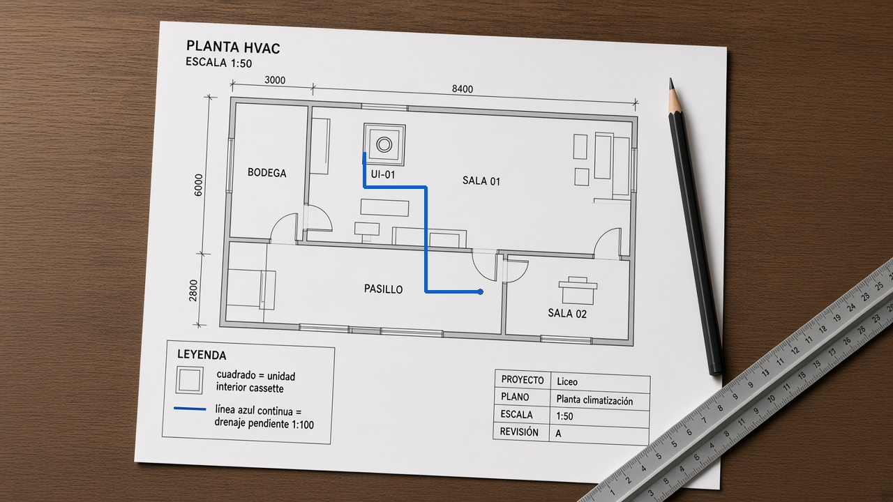

Estado actual previo a autorizacion · 7 de octubre de 2026
DIAGNOSTICO PARCIAL, NO CERTIFICACION INTEGRAL. Los 45 cursos y sus 451 modulos fueron inventariados y controlados estructuralmente. La revision pedagogica y visual exhaustiva de todas las pantallas no se ha completado. El 100 % estructural NO significa 100 % de coherencia, nitidez, seguridad o aprendizaje. No se realizaron modificaciones.
El documento actualizado aporta 21 apartados de criterios diagnosticos, que aparecen en filas separadas para cada curso. Se conserva su enfoque: analizar, no redisenar; no modificar contenidos, estructura, navegacion o metodologia. No se aplica ninguna instruccion del adjunto que contradiga la solicitud de esperar autorizacion.
Controles S01-S12: unidades que cumplen / unidades revisadas x 100, en datos almacenados. D01: presencia de alt en usos de image, no evaluacion de su calidad. PV01-PV21: revision pedagogica y visual pendiente; porcentaje NV y no 0 %. Las clasificaciones cualitativas del documento no se convierten arbitrariamente en 25, 50 o 75 %. Una observacion de un archivo no valida su legibilidad real en todas las pantallas donde aparece.
El promedio estructural mantiene la misma formula de la auditoria anterior: media simple por curso de S01-S12; luego media simple de los 45 cursos. D01 no se suma a ese promedio. La matriz conserva fortalezas documentales y separa las brechas de auditoria de los defectos demostrados. No se extrapola una observacion de Refrigeracion a otras especialidades.
| Curso ID | Curso | Modulos | Cumplimiento estructural | Cumplimiento pedagogico visual | Estado integral | Revision localizada | Autorizacion |
|---|---|---|---|---|---|---|---|
| 1 | Refrigeración y Climatización | 9 | 100.0 | NV | NO VERIFICABLE | C01-PV05-M01-C02: verificar imagen del caso 2 | NO AUTORIZADO |
| 2 | Electricidad | 9 | 100.0 | NV | NO VERIFICABLE | Ninguna identificada; no significa ausencia de problemas | NO AUTORIZADO |
| 3 | Atención de Enfermería, mención Adulto Mayor | 13 | 100.0 | NV | NO VERIFICABLE | Ninguna identificada; no significa ausencia de problemas | NO AUTORIZADO |
| 4 | Atención de Enfermería, mención Enfermería | 10 | 100.0 | NV | NO VERIFICABLE | Ninguna identificada; no significa ausencia de problemas | NO AUTORIZADO |
| 5 | Gastronomía, mención Cocina | 11 | 100.0 | NV | NO VERIFICABLE | Ninguna identificada; no significa ausencia de problemas | NO AUTORIZADO |
| 6 | Gastronomía, mención Pastelería y Repostería | 11 | 100.0 | NV | NO VERIFICABLE | Ninguna identificada; no significa ausencia de problemas | NO AUTORIZADO |
| 7 | Servicios de Hotelería | 10 | 100.0 | NV | NO VERIFICABLE | Ninguna identificada; no significa ausencia de problemas | NO AUTORIZADO |
| 8 | Contabilidad | 10 | 100.0 | NV | NO VERIFICABLE | Ninguna identificada; no significa ausencia de problemas | NO AUTORIZADO |
| 9 | Elaboración Industrial de Alimentos | 9 | 100.0 | NV | NO VERIFICABLE | Ninguna identificada; no significa ausencia de problemas | NO AUTORIZADO |
| 10 | Vestuario y Confección Textil | 10 | 100.0 | NV | NO VERIFICABLE | Ninguna identificada; no significa ausencia de problemas | NO AUTORIZADO |
| 11 | Instalaciones Sanitarias | 10 | 100.0 | NV | NO VERIFICABLE | Ninguna identificada; no significa ausencia de problemas | NO AUTORIZADO |
| 12 | Montaje Industrial | 9 | 100.0 | NV | NO VERIFICABLE | Ninguna identificada; no significa ausencia de problemas | NO AUTORIZADO |
| 13 | Electrónica | 10 | 100.0 | NV | NO VERIFICABLE | Ninguna identificada; no significa ausencia de problemas | NO AUTORIZADO |
| 14 | Dibujo Técnico | 11 | 100.0 | NV | NO VERIFICABLE | Ninguna identificada; no significa ausencia de problemas | NO AUTORIZADO |
| 15 | Gráfica | 9 | 100.0 | NV | NO VERIFICABLE | Ninguna identificada; no significa ausencia de problemas | NO AUTORIZADO |
| 16 | Servicios de Turismo | 10 | 100.0 | NV | NO VERIFICABLE | Ninguna identificada; no significa ausencia de problemas | NO AUTORIZADO |
| 17 | Forestal | 9 | 100.0 | NV | NO VERIFICABLE | Ninguna identificada; no significa ausencia de problemas | NO AUTORIZADO |
| 18 | Muebles y Terminaciones en Madera | 10 | 100.0 | NV | NO VERIFICABLE | Ninguna identificada; no significa ausencia de problemas | NO AUTORIZADO |
| 19 | Acuicultura | 9 | 100.0 | NV | NO VERIFICABLE | Ninguna identificada; no significa ausencia de problemas | NO AUTORIZADO |
| 20 | Operaciones Portuarias | 9 | 100.0 | NV | NO VERIFICABLE | Ninguna identificada; no significa ausencia de problemas | NO AUTORIZADO |
| 21 | Pesquería | 9 | 100.0 | NV | NO VERIFICABLE | Ninguna identificada; no significa ausencia de problemas | NO AUTORIZADO |
| 22 | Tripulación de Naves Mercantes y Especiales | 9 | 100.0 | NV | NO VERIFICABLE | Ninguna identificada; no significa ausencia de problemas | NO AUTORIZADO |
| 23 | Construcciones Metálicas | 9 | 100.0 | NV | NO VERIFICABLE | Ninguna identificada; no significa ausencia de problemas | NO AUTORIZADO |
| 24 | Mecánica Automotriz | 10 | 100.0 | NV | NO VERIFICABLE | Ninguna identificada; no significa ausencia de problemas | NO AUTORIZADO |
| 25 | Mecánica de Mantenimiento de Aeronaves | 11 | 100.0 | NV | NO VERIFICABLE | Ninguna identificada; no significa ausencia de problemas | NO AUTORIZADO |
| 26 | Asistencia en Geología | 9 | 100.0 | NV | NO VERIFICABLE | Ninguna identificada; no significa ausencia de problemas | NO AUTORIZADO |
| 27 | Explotación Minera | 9 | 100.0 | NV | NO VERIFICABLE | Ninguna identificada; no significa ausencia de problemas | NO AUTORIZADO |
| 28 | Metalurgia Extractiva | 9 | 100.0 | NV | NO VERIFICABLE | Ninguna identificada; no significa ausencia de problemas | NO AUTORIZADO |
| 29 | Atención de Párvulos | 10 | 100.0 | NV | NO VERIFICABLE | Ninguna identificada; no significa ausencia de problemas | NO AUTORIZADO |
| 30 | Conectividad y Redes | 9 | 100.0 | NV | NO VERIFICABLE | Ninguna identificada; no significa ausencia de problemas | NO AUTORIZADO |
| 31 | Programación | 9 | 100.0 | NV | NO VERIFICABLE | Ninguna identificada; no significa ausencia de problemas | NO AUTORIZADO |
| 32 | Telecomunicaciones | 10 | 100.0 | NV | NO VERIFICABLE | Ninguna identificada; no significa ausencia de problemas | NO AUTORIZADO |
| 33 | Administración, mención Logística | 11 | 100.0 | NV | NO VERIFICABLE | Ninguna identificada; no significa ausencia de problemas | NO AUTORIZADO |
| 34 | Administración, mención Recursos Humanos | 11 | 100.0 | NV | NO VERIFICABLE | Ninguna identificada; no significa ausencia de problemas | NO AUTORIZADO |
| 35 | Agropecuaria, mención Agricultura | 10 | 100.0 | NV | NO VERIFICABLE | Ninguna identificada; no significa ausencia de problemas | NO AUTORIZADO |
| 36 | Agropecuaria, mención Pecuaria | 11 | 100.0 | NV | NO VERIFICABLE | Ninguna identificada; no significa ausencia de problemas | NO AUTORIZADO |
| 37 | Agropecuaria, mención Vitivinícola | 11 | 100.0 | NV | NO VERIFICABLE | Ninguna identificada; no significa ausencia de problemas | NO AUTORIZADO |
| 38 | Construcción, mención Edificación | 12 | 100.0 | NV | NO VERIFICABLE | Ninguna identificada; no significa ausencia de problemas | NO AUTORIZADO |
| 39 | Construcción, mención Terminaciones de la Construcción | 12 | 100.0 | NV | NO VERIFICABLE | Ninguna identificada; no significa ausencia de problemas | NO AUTORIZADO |
| 40 | Construcción, mención Obras Viales e Infraestructura | 13 | 100.0 | NV | NO VERIFICABLE | Ninguna identificada; no significa ausencia de problemas | NO AUTORIZADO |
| 41 | Química Industrial, mención Laboratorio Químico | 10 | 100.0 | NV | NO VERIFICABLE | Ninguna identificada; no significa ausencia de problemas | NO AUTORIZADO |
| 42 | Química Industrial, mención Planta Química | 9 | 100.0 | NV | NO VERIFICABLE | Ninguna identificada; no significa ausencia de problemas | NO AUTORIZADO |
| 43 | Mecánica Industrial, mención Máquinas-Herramientas | 10 | 100.0 | NV | NO VERIFICABLE | Ninguna identificada; no significa ausencia de problemas | NO AUTORIZADO |
| 44 | Mecánica Industrial, mención Matricería | 10 | 100.0 | NV | NO VERIFICABLE | Ninguna identificada; no significa ausencia de problemas | NO AUTORIZADO |
| 45 | Mecánica Industrial, mención Mantenimiento Electromecánico | 10 | 100.0 | NV | NO VERIFICABLE | Ninguna identificada; no significa ausencia de problemas | NO AUTORIZADO |
| ID | Curso ID | Curso | Nivel | Criterio | Estado actual | Porcentaje cumplimiento | Cumplen | Revisados | Evidencia | Hallazgo | Cambio requerido | Cambio propuesto | Justificacion | Prioridad | Autorizacion |
|---|---|---|---|---|---|---|---|---|---|---|---|---|---|---|---|
| C01-S01 | 1 | Refrigeración y Climatización | 3° y 4° medio | Publicacion | CUMPLE CONTROL ESTRUCTURAL | 100.0 | 9 | 9 | 9/9 modulos publicados. Detalle individual en la tabla de evidencia; fuente: modules.content/publicacion, lectura SQLite actual. | Sin brecha en este control; no certifica pertinencia ni calidad. | No | Ninguno; conservar y completar validacion especializada. | No existe evidencia suficiente para recomendar modificar este elemento. | No aplica | SIN SOLICITUD DE CAMBIO |
| C01-S02 | 1 | Refrigeración y Climatización | 3° y 4° medio | AE presentes | CUMPLE CONTROL ESTRUCTURAL | 100.0 | 9 | 9 | 9/9 modulos con al menos un AE. Detalle individual en la tabla de evidencia; fuente: modules.content/publicacion, lectura SQLite actual. | Sin brecha en este control; no certifica pertinencia ni calidad. | No | Ninguno; conservar y completar validacion especializada. | No existe evidencia suficiente para recomendar modificar este elemento. | No aplica | SIN SOLICITUD DE CAMBIO |
| C01-S03 | 1 | Refrigeración y Climatización | 3° y 4° medio | Trazabilidad declarada de AE | CUMPLE CONTROL ESTRUCTURAL | 100.0 | 27 | 27 | 27/27 AE con official_code y criteria no vacios. Detalle individual en la tabla de evidencia; fuente: modules.content/publicacion, lectura SQLite actual. | Sin brecha en este control; no certifica pertinencia ni calidad. | No | Ninguno; conservar y completar validacion especializada. | No existe evidencia suficiente para recomendar modificar este elemento. | No aplica | SIN SOLICITUD DE CAMBIO |
| C01-S04 | 1 | Refrigeración y Climatización | 3° y 4° medio | Secuencia registrada de AE | CUMPLE CONTROL ESTRUCTURAL | 100.0 | 27 | 27 | 27/27 AE con seis experiencias o seis pasos. Detalle individual en la tabla de evidencia; fuente: modules.content/publicacion, lectura SQLite actual. | Sin brecha en este control; no certifica pertinencia ni calidad. | No | Ninguno; conservar y completar validacion especializada. | No existe evidencia suficiente para recomendar modificar este elemento. | No aplica | SIN SOLICITUD DE CAMBIO |
| C01-S05 | 1 | Refrigeración y Climatización | 3° y 4° medio | 25 preguntas finales | CUMPLE CONTROL ESTRUCTURAL | 100.0 | 9 | 9 | 9/9 modulos con exactamente 25 preguntas. Detalle individual en la tabla de evidencia; fuente: modules.content/publicacion, lectura SQLite actual. | Sin brecha en este control; no certifica pertinencia ni calidad. | No | Ninguno; conservar y completar validacion especializada. | No existe evidencia suficiente para recomendar modificar este elemento. | No aplica | SIN SOLICITUD DE CAMBIO |
| C01-S06 | 1 | Refrigeración y Climatización | 3° y 4° medio | 15 situaciones integradoras | CUMPLE CONTROL ESTRUCTURAL | 100.0 | 9 | 9 | 9/9 modulos con exactamente 15 casos. Detalle individual en la tabla de evidencia; fuente: modules.content/publicacion, lectura SQLite actual. | Sin brecha en este control; no certifica pertinencia ni calidad. | No | Ninguno; conservar y completar validacion especializada. | No existe evidencia suficiente para recomendar modificar este elemento. | No aplica | SIN SOLICITUD DE CAMBIO |
| C01-S07 | 1 | Refrigeración y Climatización | 3° y 4° medio | Estructura de alternativas y clave | CUMPLE CONTROL ESTRUCTURAL | 100.0 | 360 | 360 | 360/360 items finales/integradores con 4 alternativas distintas no vacias y clave entera 0-3. Detalle individual en la tabla de evidencia; fuente: modules.content/publicacion, lectura SQLite actual. | Sin brecha en este control; no certifica pertinencia ni calidad. | No | Ninguno; conservar y completar validacion especializada. | No existe evidencia suficiente para recomendar modificar este elemento. | No aplica | SIN SOLICITUD DE CAMBIO |
| C01-S08 | 1 | Refrigeración y Climatización | 3° y 4° medio | Relacion declarada con AE | CUMPLE CONTROL ESTRUCTURAL | 100.0 | 360 | 360 | 360/360 items finales/integradores con indice ae entero valido. Detalle individual en la tabla de evidencia; fuente: modules.content/publicacion, lectura SQLite actual. | Sin brecha en este control; no certifica pertinencia ni calidad. | No | Ninguno; conservar y completar validacion especializada. | No existe evidencia suficiente para recomendar modificar este elemento. | No aplica | SIN SOLICITUD DE CAMBIO |
| C01-S09 | 1 | Refrigeración y Climatización | 3° y 4° medio | Explicacion registrada | CUMPLE CONTROL ESTRUCTURAL | 100.0 | 360 | 360 | 360/360 items finales/integradores con explanation no vacia. Detalle individual en la tabla de evidencia; fuente: modules.content/publicacion, lectura SQLite actual. | Sin brecha en este control; no certifica pertinencia ni calidad. | No | Ninguno; conservar y completar validacion especializada. | No existe evidencia suficiente para recomendar modificar este elemento. | No aplica | SIN SOLICITUD DE CAMBIO |
| C01-S10 | 1 | Refrigeración y Climatización | 3° y 4° medio | Desarrollo y rubrica registrados | CUMPLE CONTROL ESTRUCTURAL | 100.0 | 9 | 9 | 9/9 modulos con development y rubric no vacios. Detalle individual en la tabla de evidencia; fuente: modules.content/publicacion, lectura SQLite actual. | Sin brecha en este control; no certifica pertinencia ni calidad. | No | Ninguno; conservar y completar validacion especializada. | No existe evidencia suficiente para recomendar modificar este elemento. | No aplica | SIN SOLICITUD DE CAMBIO |
| C01-S11 | 1 | Refrigeración y Climatización | 3° y 4° medio | Escena registrada | CUMPLE CONTROL ESTRUCTURAL | 100.0 | 9 | 9 | 9/9 modulos con scene y parts no vacios. Detalle individual en la tabla de evidencia; fuente: modules.content/publicacion, lectura SQLite actual. | Sin brecha en este control; no certifica pertinencia ni calidad. | No | Ninguno; conservar y completar validacion especializada. | No existe evidencia suficiente para recomendar modificar este elemento. | No aplica | SIN SOLICITUD DE CAMBIO |
| C01-S12 | 1 | Refrigeración y Climatización | 3° y 4° medio | Archivos locales referenciados | CUMPLE CONTROL ESTRUCTURAL | 100.0 | 1590 | 1590 | 1590/1590 referencias /static/ o docs/ que existen y no estan vacias. Detalle individual en la tabla de evidencia; fuente: modules.content/publicacion, lectura SQLite actual. | Sin brecha en este control; no certifica pertinencia ni calidad. | No | Ninguno; conservar y completar validacion especializada. | No existe evidencia suficiente para recomendar modificar este elemento. | No aplica | SIN SOLICITUD DE CAMBIO |
| C02-S01 | 2 | Electricidad | 3° y 4° medio | Publicacion | CUMPLE CONTROL ESTRUCTURAL | 100.0 | 9 | 9 | 9/9 modulos publicados. Detalle individual en la tabla de evidencia; fuente: modules.content/publicacion, lectura SQLite actual. | Sin brecha en este control; no certifica pertinencia ni calidad. | No | Ninguno; conservar y completar validacion especializada. | No existe evidencia suficiente para recomendar modificar este elemento. | No aplica | SIN SOLICITUD DE CAMBIO |
| C02-S02 | 2 | Electricidad | 3° y 4° medio | AE presentes | CUMPLE CONTROL ESTRUCTURAL | 100.0 | 9 | 9 | 9/9 modulos con al menos un AE. Detalle individual en la tabla de evidencia; fuente: modules.content/publicacion, lectura SQLite actual. | Sin brecha en este control; no certifica pertinencia ni calidad. | No | Ninguno; conservar y completar validacion especializada. | No existe evidencia suficiente para recomendar modificar este elemento. | No aplica | SIN SOLICITUD DE CAMBIO |
| C02-S03 | 2 | Electricidad | 3° y 4° medio | Trazabilidad declarada de AE | CUMPLE CONTROL ESTRUCTURAL | 100.0 | 25 | 25 | 25/25 AE con official_code y criteria no vacios. Detalle individual en la tabla de evidencia; fuente: modules.content/publicacion, lectura SQLite actual. | Sin brecha en este control; no certifica pertinencia ni calidad. | No | Ninguno; conservar y completar validacion especializada. | No existe evidencia suficiente para recomendar modificar este elemento. | No aplica | SIN SOLICITUD DE CAMBIO |
| C02-S04 | 2 | Electricidad | 3° y 4° medio | Secuencia registrada de AE | CUMPLE CONTROL ESTRUCTURAL | 100.0 | 25 | 25 | 25/25 AE con seis experiencias o seis pasos. Detalle individual en la tabla de evidencia; fuente: modules.content/publicacion, lectura SQLite actual. | Sin brecha en este control; no certifica pertinencia ni calidad. | No | Ninguno; conservar y completar validacion especializada. | No existe evidencia suficiente para recomendar modificar este elemento. | No aplica | SIN SOLICITUD DE CAMBIO |
| C02-S05 | 2 | Electricidad | 3° y 4° medio | 25 preguntas finales | CUMPLE CONTROL ESTRUCTURAL | 100.0 | 9 | 9 | 9/9 modulos con exactamente 25 preguntas. Detalle individual en la tabla de evidencia; fuente: modules.content/publicacion, lectura SQLite actual. | Sin brecha en este control; no certifica pertinencia ni calidad. | No | Ninguno; conservar y completar validacion especializada. | No existe evidencia suficiente para recomendar modificar este elemento. | No aplica | SIN SOLICITUD DE CAMBIO |
| C02-S06 | 2 | Electricidad | 3° y 4° medio | 15 situaciones integradoras | CUMPLE CONTROL ESTRUCTURAL | 100.0 | 9 | 9 | 9/9 modulos con exactamente 15 casos. Detalle individual en la tabla de evidencia; fuente: modules.content/publicacion, lectura SQLite actual. | Sin brecha en este control; no certifica pertinencia ni calidad. | No | Ninguno; conservar y completar validacion especializada. | No existe evidencia suficiente para recomendar modificar este elemento. | No aplica | SIN SOLICITUD DE CAMBIO |
| C02-S07 | 2 | Electricidad | 3° y 4° medio | Estructura de alternativas y clave | CUMPLE CONTROL ESTRUCTURAL | 100.0 | 360 | 360 | 360/360 items finales/integradores con 4 alternativas distintas no vacias y clave entera 0-3. Detalle individual en la tabla de evidencia; fuente: modules.content/publicacion, lectura SQLite actual. | Sin brecha en este control; no certifica pertinencia ni calidad. | No | Ninguno; conservar y completar validacion especializada. | No existe evidencia suficiente para recomendar modificar este elemento. | No aplica | SIN SOLICITUD DE CAMBIO |
| C02-S08 | 2 | Electricidad | 3° y 4° medio | Relacion declarada con AE | CUMPLE CONTROL ESTRUCTURAL | 100.0 | 360 | 360 | 360/360 items finales/integradores con indice ae entero valido. Detalle individual en la tabla de evidencia; fuente: modules.content/publicacion, lectura SQLite actual. | Sin brecha en este control; no certifica pertinencia ni calidad. | No | Ninguno; conservar y completar validacion especializada. | No existe evidencia suficiente para recomendar modificar este elemento. | No aplica | SIN SOLICITUD DE CAMBIO |
| C02-S09 | 2 | Electricidad | 3° y 4° medio | Explicacion registrada | CUMPLE CONTROL ESTRUCTURAL | 100.0 | 360 | 360 | 360/360 items finales/integradores con explanation no vacia. Detalle individual en la tabla de evidencia; fuente: modules.content/publicacion, lectura SQLite actual. | Sin brecha en este control; no certifica pertinencia ni calidad. | No | Ninguno; conservar y completar validacion especializada. | No existe evidencia suficiente para recomendar modificar este elemento. | No aplica | SIN SOLICITUD DE CAMBIO |
| C02-S10 | 2 | Electricidad | 3° y 4° medio | Desarrollo y rubrica registrados | CUMPLE CONTROL ESTRUCTURAL | 100.0 | 9 | 9 | 9/9 modulos con development y rubric no vacios. Detalle individual en la tabla de evidencia; fuente: modules.content/publicacion, lectura SQLite actual. | Sin brecha en este control; no certifica pertinencia ni calidad. | No | Ninguno; conservar y completar validacion especializada. | No existe evidencia suficiente para recomendar modificar este elemento. | No aplica | SIN SOLICITUD DE CAMBIO |
| C02-S11 | 2 | Electricidad | 3° y 4° medio | Escena registrada | CUMPLE CONTROL ESTRUCTURAL | 100.0 | 9 | 9 | 9/9 modulos con scene y parts no vacios. Detalle individual en la tabla de evidencia; fuente: modules.content/publicacion, lectura SQLite actual. | Sin brecha en este control; no certifica pertinencia ni calidad. | No | Ninguno; conservar y completar validacion especializada. | No existe evidencia suficiente para recomendar modificar este elemento. | No aplica | SIN SOLICITUD DE CAMBIO |
| C02-S12 | 2 | Electricidad | 3° y 4° medio | Archivos locales referenciados | CUMPLE CONTROL ESTRUCTURAL | 100.0 | 1371 | 1371 | 1371/1371 referencias /static/ o docs/ que existen y no estan vacias. Detalle individual en la tabla de evidencia; fuente: modules.content/publicacion, lectura SQLite actual. | Sin brecha en este control; no certifica pertinencia ni calidad. | No | Ninguno; conservar y completar validacion especializada. | No existe evidencia suficiente para recomendar modificar este elemento. | No aplica | SIN SOLICITUD DE CAMBIO |
| C03-S01 | 3 | Atención de Enfermería, mención Adulto Mayor | 3° y 4° medio | Publicacion | CUMPLE CONTROL ESTRUCTURAL | 100.0 | 13 | 13 | 13/13 modulos publicados. Detalle individual en la tabla de evidencia; fuente: modules.content/publicacion, lectura SQLite actual. | Sin brecha en este control; no certifica pertinencia ni calidad. | No | Ninguno; conservar y completar validacion especializada. | No existe evidencia suficiente para recomendar modificar este elemento. | No aplica | SIN SOLICITUD DE CAMBIO |
| C03-S02 | 3 | Atención de Enfermería, mención Adulto Mayor | 3° y 4° medio | AE presentes | CUMPLE CONTROL ESTRUCTURAL | 100.0 | 13 | 13 | 13/13 modulos con al menos un AE. Detalle individual en la tabla de evidencia; fuente: modules.content/publicacion, lectura SQLite actual. | Sin brecha en este control; no certifica pertinencia ni calidad. | No | Ninguno; conservar y completar validacion especializada. | No existe evidencia suficiente para recomendar modificar este elemento. | No aplica | SIN SOLICITUD DE CAMBIO |
| C03-S03 | 3 | Atención de Enfermería, mención Adulto Mayor | 3° y 4° medio | Trazabilidad declarada de AE | CUMPLE CONTROL ESTRUCTURAL | 100.0 | 35 | 35 | 35/35 AE con official_code y criteria no vacios. Detalle individual en la tabla de evidencia; fuente: modules.content/publicacion, lectura SQLite actual. | Sin brecha en este control; no certifica pertinencia ni calidad. | No | Ninguno; conservar y completar validacion especializada. | No existe evidencia suficiente para recomendar modificar este elemento. | No aplica | SIN SOLICITUD DE CAMBIO |
| C03-S04 | 3 | Atención de Enfermería, mención Adulto Mayor | 3° y 4° medio | Secuencia registrada de AE | CUMPLE CONTROL ESTRUCTURAL | 100.0 | 35 | 35 | 35/35 AE con seis experiencias o seis pasos. Detalle individual en la tabla de evidencia; fuente: modules.content/publicacion, lectura SQLite actual. | Sin brecha en este control; no certifica pertinencia ni calidad. | No | Ninguno; conservar y completar validacion especializada. | No existe evidencia suficiente para recomendar modificar este elemento. | No aplica | SIN SOLICITUD DE CAMBIO |
| C03-S05 | 3 | Atención de Enfermería, mención Adulto Mayor | 3° y 4° medio | 25 preguntas finales | CUMPLE CONTROL ESTRUCTURAL | 100.0 | 13 | 13 | 13/13 modulos con exactamente 25 preguntas. Detalle individual en la tabla de evidencia; fuente: modules.content/publicacion, lectura SQLite actual. | Sin brecha en este control; no certifica pertinencia ni calidad. | No | Ninguno; conservar y completar validacion especializada. | No existe evidencia suficiente para recomendar modificar este elemento. | No aplica | SIN SOLICITUD DE CAMBIO |
| C03-S06 | 3 | Atención de Enfermería, mención Adulto Mayor | 3° y 4° medio | 15 situaciones integradoras | CUMPLE CONTROL ESTRUCTURAL | 100.0 | 13 | 13 | 13/13 modulos con exactamente 15 casos. Detalle individual en la tabla de evidencia; fuente: modules.content/publicacion, lectura SQLite actual. | Sin brecha en este control; no certifica pertinencia ni calidad. | No | Ninguno; conservar y completar validacion especializada. | No existe evidencia suficiente para recomendar modificar este elemento. | No aplica | SIN SOLICITUD DE CAMBIO |
| C03-S07 | 3 | Atención de Enfermería, mención Adulto Mayor | 3° y 4° medio | Estructura de alternativas y clave | CUMPLE CONTROL ESTRUCTURAL | 100.0 | 520 | 520 | 520/520 items finales/integradores con 4 alternativas distintas no vacias y clave entera 0-3. Detalle individual en la tabla de evidencia; fuente: modules.content/publicacion, lectura SQLite actual. | Sin brecha en este control; no certifica pertinencia ni calidad. | No | Ninguno; conservar y completar validacion especializada. | No existe evidencia suficiente para recomendar modificar este elemento. | No aplica | SIN SOLICITUD DE CAMBIO |
| C03-S08 | 3 | Atención de Enfermería, mención Adulto Mayor | 3° y 4° medio | Relacion declarada con AE | CUMPLE CONTROL ESTRUCTURAL | 100.0 | 520 | 520 | 520/520 items finales/integradores con indice ae entero valido. Detalle individual en la tabla de evidencia; fuente: modules.content/publicacion, lectura SQLite actual. | Sin brecha en este control; no certifica pertinencia ni calidad. | No | Ninguno; conservar y completar validacion especializada. | No existe evidencia suficiente para recomendar modificar este elemento. | No aplica | SIN SOLICITUD DE CAMBIO |
| C03-S09 | 3 | Atención de Enfermería, mención Adulto Mayor | 3° y 4° medio | Explicacion registrada | CUMPLE CONTROL ESTRUCTURAL | 100.0 | 520 | 520 | 520/520 items finales/integradores con explanation no vacia. Detalle individual en la tabla de evidencia; fuente: modules.content/publicacion, lectura SQLite actual. | Sin brecha en este control; no certifica pertinencia ni calidad. | No | Ninguno; conservar y completar validacion especializada. | No existe evidencia suficiente para recomendar modificar este elemento. | No aplica | SIN SOLICITUD DE CAMBIO |
| C03-S10 | 3 | Atención de Enfermería, mención Adulto Mayor | 3° y 4° medio | Desarrollo y rubrica registrados | CUMPLE CONTROL ESTRUCTURAL | 100.0 | 13 | 13 | 13/13 modulos con development y rubric no vacios. Detalle individual en la tabla de evidencia; fuente: modules.content/publicacion, lectura SQLite actual. | Sin brecha en este control; no certifica pertinencia ni calidad. | No | Ninguno; conservar y completar validacion especializada. | No existe evidencia suficiente para recomendar modificar este elemento. | No aplica | SIN SOLICITUD DE CAMBIO |
| C03-S11 | 3 | Atención de Enfermería, mención Adulto Mayor | 3° y 4° medio | Escena registrada | CUMPLE CONTROL ESTRUCTURAL | 100.0 | 13 | 13 | 13/13 modulos con scene y parts no vacios. Detalle individual en la tabla de evidencia; fuente: modules.content/publicacion, lectura SQLite actual. | Sin brecha en este control; no certifica pertinencia ni calidad. | No | Ninguno; conservar y completar validacion especializada. | No existe evidencia suficiente para recomendar modificar este elemento. | No aplica | SIN SOLICITUD DE CAMBIO |
| C03-S12 | 3 | Atención de Enfermería, mención Adulto Mayor | 3° y 4° medio | Archivos locales referenciados | CUMPLE CONTROL ESTRUCTURAL | 100.0 | 1967 | 1967 | 1967/1967 referencias /static/ o docs/ que existen y no estan vacias. Detalle individual en la tabla de evidencia; fuente: modules.content/publicacion, lectura SQLite actual. | Sin brecha en este control; no certifica pertinencia ni calidad. | No | Ninguno; conservar y completar validacion especializada. | No existe evidencia suficiente para recomendar modificar este elemento. | No aplica | SIN SOLICITUD DE CAMBIO |
| C04-S01 | 4 | Atención de Enfermería, mención Enfermería | 3° y 4° medio | Publicacion | CUMPLE CONTROL ESTRUCTURAL | 100.0 | 10 | 10 | 10/10 modulos publicados. Detalle individual en la tabla de evidencia; fuente: modules.content/publicacion, lectura SQLite actual. | Sin brecha en este control; no certifica pertinencia ni calidad. | No | Ninguno; conservar y completar validacion especializada. | No existe evidencia suficiente para recomendar modificar este elemento. | No aplica | SIN SOLICITUD DE CAMBIO |
| C04-S02 | 4 | Atención de Enfermería, mención Enfermería | 3° y 4° medio | AE presentes | CUMPLE CONTROL ESTRUCTURAL | 100.0 | 10 | 10 | 10/10 modulos con al menos un AE. Detalle individual en la tabla de evidencia; fuente: modules.content/publicacion, lectura SQLite actual. | Sin brecha en este control; no certifica pertinencia ni calidad. | No | Ninguno; conservar y completar validacion especializada. | No existe evidencia suficiente para recomendar modificar este elemento. | No aplica | SIN SOLICITUD DE CAMBIO |
| C04-S03 | 4 | Atención de Enfermería, mención Enfermería | 3° y 4° medio | Trazabilidad declarada de AE | CUMPLE CONTROL ESTRUCTURAL | 100.0 | 30 | 30 | 30/30 AE con official_code y criteria no vacios. Detalle individual en la tabla de evidencia; fuente: modules.content/publicacion, lectura SQLite actual. | Sin brecha en este control; no certifica pertinencia ni calidad. | No | Ninguno; conservar y completar validacion especializada. | No existe evidencia suficiente para recomendar modificar este elemento. | No aplica | SIN SOLICITUD DE CAMBIO |
| C04-S04 | 4 | Atención de Enfermería, mención Enfermería | 3° y 4° medio | Secuencia registrada de AE | CUMPLE CONTROL ESTRUCTURAL | 100.0 | 30 | 30 | 30/30 AE con seis experiencias o seis pasos. Detalle individual en la tabla de evidencia; fuente: modules.content/publicacion, lectura SQLite actual. | Sin brecha en este control; no certifica pertinencia ni calidad. | No | Ninguno; conservar y completar validacion especializada. | No existe evidencia suficiente para recomendar modificar este elemento. | No aplica | SIN SOLICITUD DE CAMBIO |
| C04-S05 | 4 | Atención de Enfermería, mención Enfermería | 3° y 4° medio | 25 preguntas finales | CUMPLE CONTROL ESTRUCTURAL | 100.0 | 10 | 10 | 10/10 modulos con exactamente 25 preguntas. Detalle individual en la tabla de evidencia; fuente: modules.content/publicacion, lectura SQLite actual. | Sin brecha en este control; no certifica pertinencia ni calidad. | No | Ninguno; conservar y completar validacion especializada. | No existe evidencia suficiente para recomendar modificar este elemento. | No aplica | SIN SOLICITUD DE CAMBIO |
| C04-S06 | 4 | Atención de Enfermería, mención Enfermería | 3° y 4° medio | 15 situaciones integradoras | CUMPLE CONTROL ESTRUCTURAL | 100.0 | 10 | 10 | 10/10 modulos con exactamente 15 casos. Detalle individual en la tabla de evidencia; fuente: modules.content/publicacion, lectura SQLite actual. | Sin brecha en este control; no certifica pertinencia ni calidad. | No | Ninguno; conservar y completar validacion especializada. | No existe evidencia suficiente para recomendar modificar este elemento. | No aplica | SIN SOLICITUD DE CAMBIO |
| C04-S07 | 4 | Atención de Enfermería, mención Enfermería | 3° y 4° medio | Estructura de alternativas y clave | CUMPLE CONTROL ESTRUCTURAL | 100.0 | 400 | 400 | 400/400 items finales/integradores con 4 alternativas distintas no vacias y clave entera 0-3. Detalle individual en la tabla de evidencia; fuente: modules.content/publicacion, lectura SQLite actual. | Sin brecha en este control; no certifica pertinencia ni calidad. | No | Ninguno; conservar y completar validacion especializada. | No existe evidencia suficiente para recomendar modificar este elemento. | No aplica | SIN SOLICITUD DE CAMBIO |
| C04-S08 | 4 | Atención de Enfermería, mención Enfermería | 3° y 4° medio | Relacion declarada con AE | CUMPLE CONTROL ESTRUCTURAL | 100.0 | 400 | 400 | 400/400 items finales/integradores con indice ae entero valido. Detalle individual en la tabla de evidencia; fuente: modules.content/publicacion, lectura SQLite actual. | Sin brecha en este control; no certifica pertinencia ni calidad. | No | Ninguno; conservar y completar validacion especializada. | No existe evidencia suficiente para recomendar modificar este elemento. | No aplica | SIN SOLICITUD DE CAMBIO |
| C04-S09 | 4 | Atención de Enfermería, mención Enfermería | 3° y 4° medio | Explicacion registrada | CUMPLE CONTROL ESTRUCTURAL | 100.0 | 400 | 400 | 400/400 items finales/integradores con explanation no vacia. Detalle individual en la tabla de evidencia; fuente: modules.content/publicacion, lectura SQLite actual. | Sin brecha en este control; no certifica pertinencia ni calidad. | No | Ninguno; conservar y completar validacion especializada. | No existe evidencia suficiente para recomendar modificar este elemento. | No aplica | SIN SOLICITUD DE CAMBIO |
| C04-S10 | 4 | Atención de Enfermería, mención Enfermería | 3° y 4° medio | Desarrollo y rubrica registrados | CUMPLE CONTROL ESTRUCTURAL | 100.0 | 10 | 10 | 10/10 modulos con development y rubric no vacios. Detalle individual en la tabla de evidencia; fuente: modules.content/publicacion, lectura SQLite actual. | Sin brecha en este control; no certifica pertinencia ni calidad. | No | Ninguno; conservar y completar validacion especializada. | No existe evidencia suficiente para recomendar modificar este elemento. | No aplica | SIN SOLICITUD DE CAMBIO |
| C04-S11 | 4 | Atención de Enfermería, mención Enfermería | 3° y 4° medio | Escena registrada | CUMPLE CONTROL ESTRUCTURAL | 100.0 | 10 | 10 | 10/10 modulos con scene y parts no vacios. Detalle individual en la tabla de evidencia; fuente: modules.content/publicacion, lectura SQLite actual. | Sin brecha en este control; no certifica pertinencia ni calidad. | No | Ninguno; conservar y completar validacion especializada. | No existe evidencia suficiente para recomendar modificar este elemento. | No aplica | SIN SOLICITUD DE CAMBIO |
| C04-S12 | 4 | Atención de Enfermería, mención Enfermería | 3° y 4° medio | Archivos locales referenciados | CUMPLE CONTROL ESTRUCTURAL | 100.0 | 1550 | 1550 | 1550/1550 referencias /static/ o docs/ que existen y no estan vacias. Detalle individual en la tabla de evidencia; fuente: modules.content/publicacion, lectura SQLite actual. | Sin brecha en este control; no certifica pertinencia ni calidad. | No | Ninguno; conservar y completar validacion especializada. | No existe evidencia suficiente para recomendar modificar este elemento. | No aplica | SIN SOLICITUD DE CAMBIO |
| C05-S01 | 5 | Gastronomía, mención Cocina | 3° y 4° medio | Publicacion | CUMPLE CONTROL ESTRUCTURAL | 100.0 | 11 | 11 | 11/11 modulos publicados. Detalle individual en la tabla de evidencia; fuente: modules.content/publicacion, lectura SQLite actual. | Sin brecha en este control; no certifica pertinencia ni calidad. | No | Ninguno; conservar y completar validacion especializada. | No existe evidencia suficiente para recomendar modificar este elemento. | No aplica | SIN SOLICITUD DE CAMBIO |
| C05-S02 | 5 | Gastronomía, mención Cocina | 3° y 4° medio | AE presentes | CUMPLE CONTROL ESTRUCTURAL | 100.0 | 11 | 11 | 11/11 modulos con al menos un AE. Detalle individual en la tabla de evidencia; fuente: modules.content/publicacion, lectura SQLite actual. | Sin brecha en este control; no certifica pertinencia ni calidad. | No | Ninguno; conservar y completar validacion especializada. | No existe evidencia suficiente para recomendar modificar este elemento. | No aplica | SIN SOLICITUD DE CAMBIO |
| C05-S03 | 5 | Gastronomía, mención Cocina | 3° y 4° medio | Trazabilidad declarada de AE | CUMPLE CONTROL ESTRUCTURAL | 100.0 | 36 | 36 | 36/36 AE con official_code y criteria no vacios. Detalle individual en la tabla de evidencia; fuente: modules.content/publicacion, lectura SQLite actual. | Sin brecha en este control; no certifica pertinencia ni calidad. | No | Ninguno; conservar y completar validacion especializada. | No existe evidencia suficiente para recomendar modificar este elemento. | No aplica | SIN SOLICITUD DE CAMBIO |
| C05-S04 | 5 | Gastronomía, mención Cocina | 3° y 4° medio | Secuencia registrada de AE | CUMPLE CONTROL ESTRUCTURAL | 100.0 | 36 | 36 | 36/36 AE con seis experiencias o seis pasos. Detalle individual en la tabla de evidencia; fuente: modules.content/publicacion, lectura SQLite actual. | Sin brecha en este control; no certifica pertinencia ni calidad. | No | Ninguno; conservar y completar validacion especializada. | No existe evidencia suficiente para recomendar modificar este elemento. | No aplica | SIN SOLICITUD DE CAMBIO |
| C05-S05 | 5 | Gastronomía, mención Cocina | 3° y 4° medio | 25 preguntas finales | CUMPLE CONTROL ESTRUCTURAL | 100.0 | 11 | 11 | 11/11 modulos con exactamente 25 preguntas. Detalle individual en la tabla de evidencia; fuente: modules.content/publicacion, lectura SQLite actual. | Sin brecha en este control; no certifica pertinencia ni calidad. | No | Ninguno; conservar y completar validacion especializada. | No existe evidencia suficiente para recomendar modificar este elemento. | No aplica | SIN SOLICITUD DE CAMBIO |
| C05-S06 | 5 | Gastronomía, mención Cocina | 3° y 4° medio | 15 situaciones integradoras | CUMPLE CONTROL ESTRUCTURAL | 100.0 | 11 | 11 | 11/11 modulos con exactamente 15 casos. Detalle individual en la tabla de evidencia; fuente: modules.content/publicacion, lectura SQLite actual. | Sin brecha en este control; no certifica pertinencia ni calidad. | No | Ninguno; conservar y completar validacion especializada. | No existe evidencia suficiente para recomendar modificar este elemento. | No aplica | SIN SOLICITUD DE CAMBIO |
| C05-S07 | 5 | Gastronomía, mención Cocina | 3° y 4° medio | Estructura de alternativas y clave | CUMPLE CONTROL ESTRUCTURAL | 100.0 | 440 | 440 | 440/440 items finales/integradores con 4 alternativas distintas no vacias y clave entera 0-3. Detalle individual en la tabla de evidencia; fuente: modules.content/publicacion, lectura SQLite actual. | Sin brecha en este control; no certifica pertinencia ni calidad. | No | Ninguno; conservar y completar validacion especializada. | No existe evidencia suficiente para recomendar modificar este elemento. | No aplica | SIN SOLICITUD DE CAMBIO |
| C05-S08 | 5 | Gastronomía, mención Cocina | 3° y 4° medio | Relacion declarada con AE | CUMPLE CONTROL ESTRUCTURAL | 100.0 | 440 | 440 | 440/440 items finales/integradores con indice ae entero valido. Detalle individual en la tabla de evidencia; fuente: modules.content/publicacion, lectura SQLite actual. | Sin brecha en este control; no certifica pertinencia ni calidad. | No | Ninguno; conservar y completar validacion especializada. | No existe evidencia suficiente para recomendar modificar este elemento. | No aplica | SIN SOLICITUD DE CAMBIO |
| C05-S09 | 5 | Gastronomía, mención Cocina | 3° y 4° medio | Explicacion registrada | CUMPLE CONTROL ESTRUCTURAL | 100.0 | 440 | 440 | 440/440 items finales/integradores con explanation no vacia. Detalle individual en la tabla de evidencia; fuente: modules.content/publicacion, lectura SQLite actual. | Sin brecha en este control; no certifica pertinencia ni calidad. | No | Ninguno; conservar y completar validacion especializada. | No existe evidencia suficiente para recomendar modificar este elemento. | No aplica | SIN SOLICITUD DE CAMBIO |
| C05-S10 | 5 | Gastronomía, mención Cocina | 3° y 4° medio | Desarrollo y rubrica registrados | CUMPLE CONTROL ESTRUCTURAL | 100.0 | 11 | 11 | 11/11 modulos con development y rubric no vacios. Detalle individual en la tabla de evidencia; fuente: modules.content/publicacion, lectura SQLite actual. | Sin brecha en este control; no certifica pertinencia ni calidad. | No | Ninguno; conservar y completar validacion especializada. | No existe evidencia suficiente para recomendar modificar este elemento. | No aplica | SIN SOLICITUD DE CAMBIO |
| C05-S11 | 5 | Gastronomía, mención Cocina | 3° y 4° medio | Escena registrada | CUMPLE CONTROL ESTRUCTURAL | 100.0 | 11 | 11 | 11/11 modulos con scene y parts no vacios. Detalle individual en la tabla de evidencia; fuente: modules.content/publicacion, lectura SQLite actual. | Sin brecha en este control; no certifica pertinencia ni calidad. | No | Ninguno; conservar y completar validacion especializada. | No existe evidencia suficiente para recomendar modificar este elemento. | No aplica | SIN SOLICITUD DE CAMBIO |
| C05-S12 | 5 | Gastronomía, mención Cocina | 3° y 4° medio | Archivos locales referenciados | CUMPLE CONTROL ESTRUCTURAL | 100.0 | 2408 | 2408 | 2408/2408 referencias /static/ o docs/ que existen y no estan vacias. Detalle individual en la tabla de evidencia; fuente: modules.content/publicacion, lectura SQLite actual. | Sin brecha en este control; no certifica pertinencia ni calidad. | No | Ninguno; conservar y completar validacion especializada. | No existe evidencia suficiente para recomendar modificar este elemento. | No aplica | SIN SOLICITUD DE CAMBIO |
| C06-S01 | 6 | Gastronomía, mención Pastelería y Repostería | 3° y 4° medio | Publicacion | CUMPLE CONTROL ESTRUCTURAL | 100.0 | 11 | 11 | 11/11 modulos publicados. Detalle individual en la tabla de evidencia; fuente: modules.content/publicacion, lectura SQLite actual. | Sin brecha en este control; no certifica pertinencia ni calidad. | No | Ninguno; conservar y completar validacion especializada. | No existe evidencia suficiente para recomendar modificar este elemento. | No aplica | SIN SOLICITUD DE CAMBIO |
| C06-S02 | 6 | Gastronomía, mención Pastelería y Repostería | 3° y 4° medio | AE presentes | CUMPLE CONTROL ESTRUCTURAL | 100.0 | 11 | 11 | 11/11 modulos con al menos un AE. Detalle individual en la tabla de evidencia; fuente: modules.content/publicacion, lectura SQLite actual. | Sin brecha en este control; no certifica pertinencia ni calidad. | No | Ninguno; conservar y completar validacion especializada. | No existe evidencia suficiente para recomendar modificar este elemento. | No aplica | SIN SOLICITUD DE CAMBIO |
| C06-S03 | 6 | Gastronomía, mención Pastelería y Repostería | 3° y 4° medio | Trazabilidad declarada de AE | CUMPLE CONTROL ESTRUCTURAL | 100.0 | 35 | 35 | 35/35 AE con official_code y criteria no vacios. Detalle individual en la tabla de evidencia; fuente: modules.content/publicacion, lectura SQLite actual. | Sin brecha en este control; no certifica pertinencia ni calidad. | No | Ninguno; conservar y completar validacion especializada. | No existe evidencia suficiente para recomendar modificar este elemento. | No aplica | SIN SOLICITUD DE CAMBIO |
| C06-S04 | 6 | Gastronomía, mención Pastelería y Repostería | 3° y 4° medio | Secuencia registrada de AE | CUMPLE CONTROL ESTRUCTURAL | 100.0 | 35 | 35 | 35/35 AE con seis experiencias o seis pasos. Detalle individual en la tabla de evidencia; fuente: modules.content/publicacion, lectura SQLite actual. | Sin brecha en este control; no certifica pertinencia ni calidad. | No | Ninguno; conservar y completar validacion especializada. | No existe evidencia suficiente para recomendar modificar este elemento. | No aplica | SIN SOLICITUD DE CAMBIO |
| C06-S05 | 6 | Gastronomía, mención Pastelería y Repostería | 3° y 4° medio | 25 preguntas finales | CUMPLE CONTROL ESTRUCTURAL | 100.0 | 11 | 11 | 11/11 modulos con exactamente 25 preguntas. Detalle individual en la tabla de evidencia; fuente: modules.content/publicacion, lectura SQLite actual. | Sin brecha en este control; no certifica pertinencia ni calidad. | No | Ninguno; conservar y completar validacion especializada. | No existe evidencia suficiente para recomendar modificar este elemento. | No aplica | SIN SOLICITUD DE CAMBIO |
| C06-S06 | 6 | Gastronomía, mención Pastelería y Repostería | 3° y 4° medio | 15 situaciones integradoras | CUMPLE CONTROL ESTRUCTURAL | 100.0 | 11 | 11 | 11/11 modulos con exactamente 15 casos. Detalle individual en la tabla de evidencia; fuente: modules.content/publicacion, lectura SQLite actual. | Sin brecha en este control; no certifica pertinencia ni calidad. | No | Ninguno; conservar y completar validacion especializada. | No existe evidencia suficiente para recomendar modificar este elemento. | No aplica | SIN SOLICITUD DE CAMBIO |
| C06-S07 | 6 | Gastronomía, mención Pastelería y Repostería | 3° y 4° medio | Estructura de alternativas y clave | CUMPLE CONTROL ESTRUCTURAL | 100.0 | 440 | 440 | 440/440 items finales/integradores con 4 alternativas distintas no vacias y clave entera 0-3. Detalle individual en la tabla de evidencia; fuente: modules.content/publicacion, lectura SQLite actual. | Sin brecha en este control; no certifica pertinencia ni calidad. | No | Ninguno; conservar y completar validacion especializada. | No existe evidencia suficiente para recomendar modificar este elemento. | No aplica | SIN SOLICITUD DE CAMBIO |
| C06-S08 | 6 | Gastronomía, mención Pastelería y Repostería | 3° y 4° medio | Relacion declarada con AE | CUMPLE CONTROL ESTRUCTURAL | 100.0 | 440 | 440 | 440/440 items finales/integradores con indice ae entero valido. Detalle individual en la tabla de evidencia; fuente: modules.content/publicacion, lectura SQLite actual. | Sin brecha en este control; no certifica pertinencia ni calidad. | No | Ninguno; conservar y completar validacion especializada. | No existe evidencia suficiente para recomendar modificar este elemento. | No aplica | SIN SOLICITUD DE CAMBIO |
| C06-S09 | 6 | Gastronomía, mención Pastelería y Repostería | 3° y 4° medio | Explicacion registrada | CUMPLE CONTROL ESTRUCTURAL | 100.0 | 440 | 440 | 440/440 items finales/integradores con explanation no vacia. Detalle individual en la tabla de evidencia; fuente: modules.content/publicacion, lectura SQLite actual. | Sin brecha en este control; no certifica pertinencia ni calidad. | No | Ninguno; conservar y completar validacion especializada. | No existe evidencia suficiente para recomendar modificar este elemento. | No aplica | SIN SOLICITUD DE CAMBIO |
| C06-S10 | 6 | Gastronomía, mención Pastelería y Repostería | 3° y 4° medio | Desarrollo y rubrica registrados | CUMPLE CONTROL ESTRUCTURAL | 100.0 | 11 | 11 | 11/11 modulos con development y rubric no vacios. Detalle individual en la tabla de evidencia; fuente: modules.content/publicacion, lectura SQLite actual. | Sin brecha en este control; no certifica pertinencia ni calidad. | No | Ninguno; conservar y completar validacion especializada. | No existe evidencia suficiente para recomendar modificar este elemento. | No aplica | SIN SOLICITUD DE CAMBIO |
| C06-S11 | 6 | Gastronomía, mención Pastelería y Repostería | 3° y 4° medio | Escena registrada | CUMPLE CONTROL ESTRUCTURAL | 100.0 | 11 | 11 | 11/11 modulos con scene y parts no vacios. Detalle individual en la tabla de evidencia; fuente: modules.content/publicacion, lectura SQLite actual. | Sin brecha en este control; no certifica pertinencia ni calidad. | No | Ninguno; conservar y completar validacion especializada. | No existe evidencia suficiente para recomendar modificar este elemento. | No aplica | SIN SOLICITUD DE CAMBIO |
| C06-S12 | 6 | Gastronomía, mención Pastelería y Repostería | 3° y 4° medio | Archivos locales referenciados | CUMPLE CONTROL ESTRUCTURAL | 100.0 | 2390 | 2390 | 2390/2390 referencias /static/ o docs/ que existen y no estan vacias. Detalle individual en la tabla de evidencia; fuente: modules.content/publicacion, lectura SQLite actual. | Sin brecha en este control; no certifica pertinencia ni calidad. | No | Ninguno; conservar y completar validacion especializada. | No existe evidencia suficiente para recomendar modificar este elemento. | No aplica | SIN SOLICITUD DE CAMBIO |
| C07-S01 | 7 | Servicios de Hotelería | 3° y 4° medio | Publicacion | CUMPLE CONTROL ESTRUCTURAL | 100.0 | 10 | 10 | 10/10 modulos publicados. Detalle individual en la tabla de evidencia; fuente: modules.content/publicacion, lectura SQLite actual. | Sin brecha en este control; no certifica pertinencia ni calidad. | No | Ninguno; conservar y completar validacion especializada. | No existe evidencia suficiente para recomendar modificar este elemento. | No aplica | SIN SOLICITUD DE CAMBIO |
| C07-S02 | 7 | Servicios de Hotelería | 3° y 4° medio | AE presentes | CUMPLE CONTROL ESTRUCTURAL | 100.0 | 10 | 10 | 10/10 modulos con al menos un AE. Detalle individual en la tabla de evidencia; fuente: modules.content/publicacion, lectura SQLite actual. | Sin brecha en este control; no certifica pertinencia ni calidad. | No | Ninguno; conservar y completar validacion especializada. | No existe evidencia suficiente para recomendar modificar este elemento. | No aplica | SIN SOLICITUD DE CAMBIO |
| C07-S03 | 7 | Servicios de Hotelería | 3° y 4° medio | Trazabilidad declarada de AE | CUMPLE CONTROL ESTRUCTURAL | 100.0 | 31 | 31 | 31/31 AE con official_code y criteria no vacios. Detalle individual en la tabla de evidencia; fuente: modules.content/publicacion, lectura SQLite actual. | Sin brecha en este control; no certifica pertinencia ni calidad. | No | Ninguno; conservar y completar validacion especializada. | No existe evidencia suficiente para recomendar modificar este elemento. | No aplica | SIN SOLICITUD DE CAMBIO |
| C07-S04 | 7 | Servicios de Hotelería | 3° y 4° medio | Secuencia registrada de AE | CUMPLE CONTROL ESTRUCTURAL | 100.0 | 31 | 31 | 31/31 AE con seis experiencias o seis pasos. Detalle individual en la tabla de evidencia; fuente: modules.content/publicacion, lectura SQLite actual. | Sin brecha en este control; no certifica pertinencia ni calidad. | No | Ninguno; conservar y completar validacion especializada. | No existe evidencia suficiente para recomendar modificar este elemento. | No aplica | SIN SOLICITUD DE CAMBIO |
| C07-S05 | 7 | Servicios de Hotelería | 3° y 4° medio | 25 preguntas finales | CUMPLE CONTROL ESTRUCTURAL | 100.0 | 10 | 10 | 10/10 modulos con exactamente 25 preguntas. Detalle individual en la tabla de evidencia; fuente: modules.content/publicacion, lectura SQLite actual. | Sin brecha en este control; no certifica pertinencia ni calidad. | No | Ninguno; conservar y completar validacion especializada. | No existe evidencia suficiente para recomendar modificar este elemento. | No aplica | SIN SOLICITUD DE CAMBIO |
| C07-S06 | 7 | Servicios de Hotelería | 3° y 4° medio | 15 situaciones integradoras | CUMPLE CONTROL ESTRUCTURAL | 100.0 | 10 | 10 | 10/10 modulos con exactamente 15 casos. Detalle individual en la tabla de evidencia; fuente: modules.content/publicacion, lectura SQLite actual. | Sin brecha en este control; no certifica pertinencia ni calidad. | No | Ninguno; conservar y completar validacion especializada. | No existe evidencia suficiente para recomendar modificar este elemento. | No aplica | SIN SOLICITUD DE CAMBIO |
| C07-S07 | 7 | Servicios de Hotelería | 3° y 4° medio | Estructura de alternativas y clave | CUMPLE CONTROL ESTRUCTURAL | 100.0 | 400 | 400 | 400/400 items finales/integradores con 4 alternativas distintas no vacias y clave entera 0-3. Detalle individual en la tabla de evidencia; fuente: modules.content/publicacion, lectura SQLite actual. | Sin brecha en este control; no certifica pertinencia ni calidad. | No | Ninguno; conservar y completar validacion especializada. | No existe evidencia suficiente para recomendar modificar este elemento. | No aplica | SIN SOLICITUD DE CAMBIO |
| C07-S08 | 7 | Servicios de Hotelería | 3° y 4° medio | Relacion declarada con AE | CUMPLE CONTROL ESTRUCTURAL | 100.0 | 400 | 400 | 400/400 items finales/integradores con indice ae entero valido. Detalle individual en la tabla de evidencia; fuente: modules.content/publicacion, lectura SQLite actual. | Sin brecha en este control; no certifica pertinencia ni calidad. | No | Ninguno; conservar y completar validacion especializada. | No existe evidencia suficiente para recomendar modificar este elemento. | No aplica | SIN SOLICITUD DE CAMBIO |
| C07-S09 | 7 | Servicios de Hotelería | 3° y 4° medio | Explicacion registrada | CUMPLE CONTROL ESTRUCTURAL | 100.0 | 400 | 400 | 400/400 items finales/integradores con explanation no vacia. Detalle individual en la tabla de evidencia; fuente: modules.content/publicacion, lectura SQLite actual. | Sin brecha en este control; no certifica pertinencia ni calidad. | No | Ninguno; conservar y completar validacion especializada. | No existe evidencia suficiente para recomendar modificar este elemento. | No aplica | SIN SOLICITUD DE CAMBIO |
| C07-S10 | 7 | Servicios de Hotelería | 3° y 4° medio | Desarrollo y rubrica registrados | CUMPLE CONTROL ESTRUCTURAL | 100.0 | 10 | 10 | 10/10 modulos con development y rubric no vacios. Detalle individual en la tabla de evidencia; fuente: modules.content/publicacion, lectura SQLite actual. | Sin brecha en este control; no certifica pertinencia ni calidad. | No | Ninguno; conservar y completar validacion especializada. | No existe evidencia suficiente para recomendar modificar este elemento. | No aplica | SIN SOLICITUD DE CAMBIO |
| C07-S11 | 7 | Servicios de Hotelería | 3° y 4° medio | Escena registrada | CUMPLE CONTROL ESTRUCTURAL | 100.0 | 10 | 10 | 10/10 modulos con scene y parts no vacios. Detalle individual en la tabla de evidencia; fuente: modules.content/publicacion, lectura SQLite actual. | Sin brecha en este control; no certifica pertinencia ni calidad. | No | Ninguno; conservar y completar validacion especializada. | No existe evidencia suficiente para recomendar modificar este elemento. | No aplica | SIN SOLICITUD DE CAMBIO |
| C07-S12 | 7 | Servicios de Hotelería | 3° y 4° medio | Archivos locales referenciados | CUMPLE CONTROL ESTRUCTURAL | 100.0 | 2158 | 2158 | 2158/2158 referencias /static/ o docs/ que existen y no estan vacias. Detalle individual en la tabla de evidencia; fuente: modules.content/publicacion, lectura SQLite actual. | Sin brecha en este control; no certifica pertinencia ni calidad. | No | Ninguno; conservar y completar validacion especializada. | No existe evidencia suficiente para recomendar modificar este elemento. | No aplica | SIN SOLICITUD DE CAMBIO |
| C08-S01 | 8 | Contabilidad | 3° y 4° medio | Publicacion | CUMPLE CONTROL ESTRUCTURAL | 100.0 | 10 | 10 | 10/10 modulos publicados. Detalle individual en la tabla de evidencia; fuente: modules.content/publicacion, lectura SQLite actual. | Sin brecha en este control; no certifica pertinencia ni calidad. | No | Ninguno; conservar y completar validacion especializada. | No existe evidencia suficiente para recomendar modificar este elemento. | No aplica | SIN SOLICITUD DE CAMBIO |
| C08-S02 | 8 | Contabilidad | 3° y 4° medio | AE presentes | CUMPLE CONTROL ESTRUCTURAL | 100.0 | 10 | 10 | 10/10 modulos con al menos un AE. Detalle individual en la tabla de evidencia; fuente: modules.content/publicacion, lectura SQLite actual. | Sin brecha en este control; no certifica pertinencia ni calidad. | No | Ninguno; conservar y completar validacion especializada. | No existe evidencia suficiente para recomendar modificar este elemento. | No aplica | SIN SOLICITUD DE CAMBIO |
| C08-S03 | 8 | Contabilidad | 3° y 4° medio | Trazabilidad declarada de AE | CUMPLE CONTROL ESTRUCTURAL | 100.0 | 31 | 31 | 31/31 AE con official_code y criteria no vacios. Detalle individual en la tabla de evidencia; fuente: modules.content/publicacion, lectura SQLite actual. | Sin brecha en este control; no certifica pertinencia ni calidad. | No | Ninguno; conservar y completar validacion especializada. | No existe evidencia suficiente para recomendar modificar este elemento. | No aplica | SIN SOLICITUD DE CAMBIO |
| C08-S04 | 8 | Contabilidad | 3° y 4° medio | Secuencia registrada de AE | CUMPLE CONTROL ESTRUCTURAL | 100.0 | 31 | 31 | 31/31 AE con seis experiencias o seis pasos. Detalle individual en la tabla de evidencia; fuente: modules.content/publicacion, lectura SQLite actual. | Sin brecha en este control; no certifica pertinencia ni calidad. | No | Ninguno; conservar y completar validacion especializada. | No existe evidencia suficiente para recomendar modificar este elemento. | No aplica | SIN SOLICITUD DE CAMBIO |
| C08-S05 | 8 | Contabilidad | 3° y 4° medio | 25 preguntas finales | CUMPLE CONTROL ESTRUCTURAL | 100.0 | 10 | 10 | 10/10 modulos con exactamente 25 preguntas. Detalle individual en la tabla de evidencia; fuente: modules.content/publicacion, lectura SQLite actual. | Sin brecha en este control; no certifica pertinencia ni calidad. | No | Ninguno; conservar y completar validacion especializada. | No existe evidencia suficiente para recomendar modificar este elemento. | No aplica | SIN SOLICITUD DE CAMBIO |
| C08-S06 | 8 | Contabilidad | 3° y 4° medio | 15 situaciones integradoras | CUMPLE CONTROL ESTRUCTURAL | 100.0 | 10 | 10 | 10/10 modulos con exactamente 15 casos. Detalle individual en la tabla de evidencia; fuente: modules.content/publicacion, lectura SQLite actual. | Sin brecha en este control; no certifica pertinencia ni calidad. | No | Ninguno; conservar y completar validacion especializada. | No existe evidencia suficiente para recomendar modificar este elemento. | No aplica | SIN SOLICITUD DE CAMBIO |
| C08-S07 | 8 | Contabilidad | 3° y 4° medio | Estructura de alternativas y clave | CUMPLE CONTROL ESTRUCTURAL | 100.0 | 400 | 400 | 400/400 items finales/integradores con 4 alternativas distintas no vacias y clave entera 0-3. Detalle individual en la tabla de evidencia; fuente: modules.content/publicacion, lectura SQLite actual. | Sin brecha en este control; no certifica pertinencia ni calidad. | No | Ninguno; conservar y completar validacion especializada. | No existe evidencia suficiente para recomendar modificar este elemento. | No aplica | SIN SOLICITUD DE CAMBIO |
| C08-S08 | 8 | Contabilidad | 3° y 4° medio | Relacion declarada con AE | CUMPLE CONTROL ESTRUCTURAL | 100.0 | 400 | 400 | 400/400 items finales/integradores con indice ae entero valido. Detalle individual en la tabla de evidencia; fuente: modules.content/publicacion, lectura SQLite actual. | Sin brecha en este control; no certifica pertinencia ni calidad. | No | Ninguno; conservar y completar validacion especializada. | No existe evidencia suficiente para recomendar modificar este elemento. | No aplica | SIN SOLICITUD DE CAMBIO |
| C08-S09 | 8 | Contabilidad | 3° y 4° medio | Explicacion registrada | CUMPLE CONTROL ESTRUCTURAL | 100.0 | 400 | 400 | 400/400 items finales/integradores con explanation no vacia. Detalle individual en la tabla de evidencia; fuente: modules.content/publicacion, lectura SQLite actual. | Sin brecha en este control; no certifica pertinencia ni calidad. | No | Ninguno; conservar y completar validacion especializada. | No existe evidencia suficiente para recomendar modificar este elemento. | No aplica | SIN SOLICITUD DE CAMBIO |
| C08-S10 | 8 | Contabilidad | 3° y 4° medio | Desarrollo y rubrica registrados | CUMPLE CONTROL ESTRUCTURAL | 100.0 | 10 | 10 | 10/10 modulos con development y rubric no vacios. Detalle individual en la tabla de evidencia; fuente: modules.content/publicacion, lectura SQLite actual. | Sin brecha en este control; no certifica pertinencia ni calidad. | No | Ninguno; conservar y completar validacion especializada. | No existe evidencia suficiente para recomendar modificar este elemento. | No aplica | SIN SOLICITUD DE CAMBIO |
| C08-S11 | 8 | Contabilidad | 3° y 4° medio | Escena registrada | CUMPLE CONTROL ESTRUCTURAL | 100.0 | 10 | 10 | 10/10 modulos con scene y parts no vacios. Detalle individual en la tabla de evidencia; fuente: modules.content/publicacion, lectura SQLite actual. | Sin brecha en este control; no certifica pertinencia ni calidad. | No | Ninguno; conservar y completar validacion especializada. | No existe evidencia suficiente para recomendar modificar este elemento. | No aplica | SIN SOLICITUD DE CAMBIO |
| C08-S12 | 8 | Contabilidad | 3° y 4° medio | Archivos locales referenciados | CUMPLE CONTROL ESTRUCTURAL | 100.0 | 1734 | 1734 | 1734/1734 referencias /static/ o docs/ que existen y no estan vacias. Detalle individual en la tabla de evidencia; fuente: modules.content/publicacion, lectura SQLite actual. | Sin brecha en este control; no certifica pertinencia ni calidad. | No | Ninguno; conservar y completar validacion especializada. | No existe evidencia suficiente para recomendar modificar este elemento. | No aplica | SIN SOLICITUD DE CAMBIO |
| C09-S01 | 9 | Elaboración Industrial de Alimentos | 3° y 4° medio | Publicacion | CUMPLE CONTROL ESTRUCTURAL | 100.0 | 9 | 9 | 9/9 modulos publicados. Detalle individual en la tabla de evidencia; fuente: modules.content/publicacion, lectura SQLite actual. | Sin brecha en este control; no certifica pertinencia ni calidad. | No | Ninguno; conservar y completar validacion especializada. | No existe evidencia suficiente para recomendar modificar este elemento. | No aplica | SIN SOLICITUD DE CAMBIO |
| C09-S02 | 9 | Elaboración Industrial de Alimentos | 3° y 4° medio | AE presentes | CUMPLE CONTROL ESTRUCTURAL | 100.0 | 9 | 9 | 9/9 modulos con al menos un AE. Detalle individual en la tabla de evidencia; fuente: modules.content/publicacion, lectura SQLite actual. | Sin brecha en este control; no certifica pertinencia ni calidad. | No | Ninguno; conservar y completar validacion especializada. | No existe evidencia suficiente para recomendar modificar este elemento. | No aplica | SIN SOLICITUD DE CAMBIO |
| C09-S03 | 9 | Elaboración Industrial de Alimentos | 3° y 4° medio | Trazabilidad declarada de AE | CUMPLE CONTROL ESTRUCTURAL | 100.0 | 24 | 24 | 24/24 AE con official_code y criteria no vacios. Detalle individual en la tabla de evidencia; fuente: modules.content/publicacion, lectura SQLite actual. | Sin brecha en este control; no certifica pertinencia ni calidad. | No | Ninguno; conservar y completar validacion especializada. | No existe evidencia suficiente para recomendar modificar este elemento. | No aplica | SIN SOLICITUD DE CAMBIO |
| C09-S04 | 9 | Elaboración Industrial de Alimentos | 3° y 4° medio | Secuencia registrada de AE | CUMPLE CONTROL ESTRUCTURAL | 100.0 | 24 | 24 | 24/24 AE con seis experiencias o seis pasos. Detalle individual en la tabla de evidencia; fuente: modules.content/publicacion, lectura SQLite actual. | Sin brecha en este control; no certifica pertinencia ni calidad. | No | Ninguno; conservar y completar validacion especializada. | No existe evidencia suficiente para recomendar modificar este elemento. | No aplica | SIN SOLICITUD DE CAMBIO |
| C09-S05 | 9 | Elaboración Industrial de Alimentos | 3° y 4° medio | 25 preguntas finales | CUMPLE CONTROL ESTRUCTURAL | 100.0 | 9 | 9 | 9/9 modulos con exactamente 25 preguntas. Detalle individual en la tabla de evidencia; fuente: modules.content/publicacion, lectura SQLite actual. | Sin brecha en este control; no certifica pertinencia ni calidad. | No | Ninguno; conservar y completar validacion especializada. | No existe evidencia suficiente para recomendar modificar este elemento. | No aplica | SIN SOLICITUD DE CAMBIO |
| C09-S06 | 9 | Elaboración Industrial de Alimentos | 3° y 4° medio | 15 situaciones integradoras | CUMPLE CONTROL ESTRUCTURAL | 100.0 | 9 | 9 | 9/9 modulos con exactamente 15 casos. Detalle individual en la tabla de evidencia; fuente: modules.content/publicacion, lectura SQLite actual. | Sin brecha en este control; no certifica pertinencia ni calidad. | No | Ninguno; conservar y completar validacion especializada. | No existe evidencia suficiente para recomendar modificar este elemento. | No aplica | SIN SOLICITUD DE CAMBIO |
| C09-S07 | 9 | Elaboración Industrial de Alimentos | 3° y 4° medio | Estructura de alternativas y clave | CUMPLE CONTROL ESTRUCTURAL | 100.0 | 360 | 360 | 360/360 items finales/integradores con 4 alternativas distintas no vacias y clave entera 0-3. Detalle individual en la tabla de evidencia; fuente: modules.content/publicacion, lectura SQLite actual. | Sin brecha en este control; no certifica pertinencia ni calidad. | No | Ninguno; conservar y completar validacion especializada. | No existe evidencia suficiente para recomendar modificar este elemento. | No aplica | SIN SOLICITUD DE CAMBIO |
| C09-S08 | 9 | Elaboración Industrial de Alimentos | 3° y 4° medio | Relacion declarada con AE | CUMPLE CONTROL ESTRUCTURAL | 100.0 | 360 | 360 | 360/360 items finales/integradores con indice ae entero valido. Detalle individual en la tabla de evidencia; fuente: modules.content/publicacion, lectura SQLite actual. | Sin brecha en este control; no certifica pertinencia ni calidad. | No | Ninguno; conservar y completar validacion especializada. | No existe evidencia suficiente para recomendar modificar este elemento. | No aplica | SIN SOLICITUD DE CAMBIO |
| C09-S09 | 9 | Elaboración Industrial de Alimentos | 3° y 4° medio | Explicacion registrada | CUMPLE CONTROL ESTRUCTURAL | 100.0 | 360 | 360 | 360/360 items finales/integradores con explanation no vacia. Detalle individual en la tabla de evidencia; fuente: modules.content/publicacion, lectura SQLite actual. | Sin brecha en este control; no certifica pertinencia ni calidad. | No | Ninguno; conservar y completar validacion especializada. | No existe evidencia suficiente para recomendar modificar este elemento. | No aplica | SIN SOLICITUD DE CAMBIO |
| C09-S10 | 9 | Elaboración Industrial de Alimentos | 3° y 4° medio | Desarrollo y rubrica registrados | CUMPLE CONTROL ESTRUCTURAL | 100.0 | 9 | 9 | 9/9 modulos con development y rubric no vacios. Detalle individual en la tabla de evidencia; fuente: modules.content/publicacion, lectura SQLite actual. | Sin brecha en este control; no certifica pertinencia ni calidad. | No | Ninguno; conservar y completar validacion especializada. | No existe evidencia suficiente para recomendar modificar este elemento. | No aplica | SIN SOLICITUD DE CAMBIO |
| C09-S11 | 9 | Elaboración Industrial de Alimentos | 3° y 4° medio | Escena registrada | CUMPLE CONTROL ESTRUCTURAL | 100.0 | 9 | 9 | 9/9 modulos con scene y parts no vacios. Detalle individual en la tabla de evidencia; fuente: modules.content/publicacion, lectura SQLite actual. | Sin brecha en este control; no certifica pertinencia ni calidad. | No | Ninguno; conservar y completar validacion especializada. | No existe evidencia suficiente para recomendar modificar este elemento. | No aplica | SIN SOLICITUD DE CAMBIO |
| C09-S12 | 9 | Elaboración Industrial de Alimentos | 3° y 4° medio | Archivos locales referenciados | CUMPLE CONTROL ESTRUCTURAL | 100.0 | 1605 | 1605 | 1605/1605 referencias /static/ o docs/ que existen y no estan vacias. Detalle individual en la tabla de evidencia; fuente: modules.content/publicacion, lectura SQLite actual. | Sin brecha en este control; no certifica pertinencia ni calidad. | No | Ninguno; conservar y completar validacion especializada. | No existe evidencia suficiente para recomendar modificar este elemento. | No aplica | SIN SOLICITUD DE CAMBIO |
| C10-S01 | 10 | Vestuario y Confección Textil | 3° y 4° medio | Publicacion | CUMPLE CONTROL ESTRUCTURAL | 100.0 | 10 | 10 | 10/10 modulos publicados. Detalle individual en la tabla de evidencia; fuente: modules.content/publicacion, lectura SQLite actual. | Sin brecha en este control; no certifica pertinencia ni calidad. | No | Ninguno; conservar y completar validacion especializada. | No existe evidencia suficiente para recomendar modificar este elemento. | No aplica | SIN SOLICITUD DE CAMBIO |
| C10-S02 | 10 | Vestuario y Confección Textil | 3° y 4° medio | AE presentes | CUMPLE CONTROL ESTRUCTURAL | 100.0 | 10 | 10 | 10/10 modulos con al menos un AE. Detalle individual en la tabla de evidencia; fuente: modules.content/publicacion, lectura SQLite actual. | Sin brecha en este control; no certifica pertinencia ni calidad. | No | Ninguno; conservar y completar validacion especializada. | No existe evidencia suficiente para recomendar modificar este elemento. | No aplica | SIN SOLICITUD DE CAMBIO |
| C10-S03 | 10 | Vestuario y Confección Textil | 3° y 4° medio | Trazabilidad declarada de AE | CUMPLE CONTROL ESTRUCTURAL | 100.0 | 37 | 37 | 37/37 AE con official_code y criteria no vacios. Detalle individual en la tabla de evidencia; fuente: modules.content/publicacion, lectura SQLite actual. | Sin brecha en este control; no certifica pertinencia ni calidad. | No | Ninguno; conservar y completar validacion especializada. | No existe evidencia suficiente para recomendar modificar este elemento. | No aplica | SIN SOLICITUD DE CAMBIO |
| C10-S04 | 10 | Vestuario y Confección Textil | 3° y 4° medio | Secuencia registrada de AE | CUMPLE CONTROL ESTRUCTURAL | 100.0 | 37 | 37 | 37/37 AE con seis experiencias o seis pasos. Detalle individual en la tabla de evidencia; fuente: modules.content/publicacion, lectura SQLite actual. | Sin brecha en este control; no certifica pertinencia ni calidad. | No | Ninguno; conservar y completar validacion especializada. | No existe evidencia suficiente para recomendar modificar este elemento. | No aplica | SIN SOLICITUD DE CAMBIO |
| C10-S05 | 10 | Vestuario y Confección Textil | 3° y 4° medio | 25 preguntas finales | CUMPLE CONTROL ESTRUCTURAL | 100.0 | 10 | 10 | 10/10 modulos con exactamente 25 preguntas. Detalle individual en la tabla de evidencia; fuente: modules.content/publicacion, lectura SQLite actual. | Sin brecha en este control; no certifica pertinencia ni calidad. | No | Ninguno; conservar y completar validacion especializada. | No existe evidencia suficiente para recomendar modificar este elemento. | No aplica | SIN SOLICITUD DE CAMBIO |
| C10-S06 | 10 | Vestuario y Confección Textil | 3° y 4° medio | 15 situaciones integradoras | CUMPLE CONTROL ESTRUCTURAL | 100.0 | 10 | 10 | 10/10 modulos con exactamente 15 casos. Detalle individual en la tabla de evidencia; fuente: modules.content/publicacion, lectura SQLite actual. | Sin brecha en este control; no certifica pertinencia ni calidad. | No | Ninguno; conservar y completar validacion especializada. | No existe evidencia suficiente para recomendar modificar este elemento. | No aplica | SIN SOLICITUD DE CAMBIO |
| C10-S07 | 10 | Vestuario y Confección Textil | 3° y 4° medio | Estructura de alternativas y clave | CUMPLE CONTROL ESTRUCTURAL | 100.0 | 400 | 400 | 400/400 items finales/integradores con 4 alternativas distintas no vacias y clave entera 0-3. Detalle individual en la tabla de evidencia; fuente: modules.content/publicacion, lectura SQLite actual. | Sin brecha en este control; no certifica pertinencia ni calidad. | No | Ninguno; conservar y completar validacion especializada. | No existe evidencia suficiente para recomendar modificar este elemento. | No aplica | SIN SOLICITUD DE CAMBIO |
| C10-S08 | 10 | Vestuario y Confección Textil | 3° y 4° medio | Relacion declarada con AE | CUMPLE CONTROL ESTRUCTURAL | 100.0 | 400 | 400 | 400/400 items finales/integradores con indice ae entero valido. Detalle individual en la tabla de evidencia; fuente: modules.content/publicacion, lectura SQLite actual. | Sin brecha en este control; no certifica pertinencia ni calidad. | No | Ninguno; conservar y completar validacion especializada. | No existe evidencia suficiente para recomendar modificar este elemento. | No aplica | SIN SOLICITUD DE CAMBIO |
| C10-S09 | 10 | Vestuario y Confección Textil | 3° y 4° medio | Explicacion registrada | CUMPLE CONTROL ESTRUCTURAL | 100.0 | 400 | 400 | 400/400 items finales/integradores con explanation no vacia. Detalle individual en la tabla de evidencia; fuente: modules.content/publicacion, lectura SQLite actual. | Sin brecha en este control; no certifica pertinencia ni calidad. | No | Ninguno; conservar y completar validacion especializada. | No existe evidencia suficiente para recomendar modificar este elemento. | No aplica | SIN SOLICITUD DE CAMBIO |
| C10-S10 | 10 | Vestuario y Confección Textil | 3° y 4° medio | Desarrollo y rubrica registrados | CUMPLE CONTROL ESTRUCTURAL | 100.0 | 10 | 10 | 10/10 modulos con development y rubric no vacios. Detalle individual en la tabla de evidencia; fuente: modules.content/publicacion, lectura SQLite actual. | Sin brecha en este control; no certifica pertinencia ni calidad. | No | Ninguno; conservar y completar validacion especializada. | No existe evidencia suficiente para recomendar modificar este elemento. | No aplica | SIN SOLICITUD DE CAMBIO |
| C10-S11 | 10 | Vestuario y Confección Textil | 3° y 4° medio | Escena registrada | CUMPLE CONTROL ESTRUCTURAL | 100.0 | 10 | 10 | 10/10 modulos con scene y parts no vacios. Detalle individual en la tabla de evidencia; fuente: modules.content/publicacion, lectura SQLite actual. | Sin brecha en este control; no certifica pertinencia ni calidad. | No | Ninguno; conservar y completar validacion especializada. | No existe evidencia suficiente para recomendar modificar este elemento. | No aplica | SIN SOLICITUD DE CAMBIO |
| C10-S12 | 10 | Vestuario y Confección Textil | 3° y 4° medio | Archivos locales referenciados | CUMPLE CONTROL ESTRUCTURAL | 100.0 | 2098 | 2098 | 2098/2098 referencias /static/ o docs/ que existen y no estan vacias. Detalle individual en la tabla de evidencia; fuente: modules.content/publicacion, lectura SQLite actual. | Sin brecha en este control; no certifica pertinencia ni calidad. | No | Ninguno; conservar y completar validacion especializada. | No existe evidencia suficiente para recomendar modificar este elemento. | No aplica | SIN SOLICITUD DE CAMBIO |
| C11-S01 | 11 | Instalaciones Sanitarias | 3° y 4° medio | Publicacion | CUMPLE CONTROL ESTRUCTURAL | 100.0 | 10 | 10 | 10/10 modulos publicados. Detalle individual en la tabla de evidencia; fuente: modules.content/publicacion, lectura SQLite actual. | Sin brecha en este control; no certifica pertinencia ni calidad. | No | Ninguno; conservar y completar validacion especializada. | No existe evidencia suficiente para recomendar modificar este elemento. | No aplica | SIN SOLICITUD DE CAMBIO |
| C11-S02 | 11 | Instalaciones Sanitarias | 3° y 4° medio | AE presentes | CUMPLE CONTROL ESTRUCTURAL | 100.0 | 10 | 10 | 10/10 modulos con al menos un AE. Detalle individual en la tabla de evidencia; fuente: modules.content/publicacion, lectura SQLite actual. | Sin brecha en este control; no certifica pertinencia ni calidad. | No | Ninguno; conservar y completar validacion especializada. | No existe evidencia suficiente para recomendar modificar este elemento. | No aplica | SIN SOLICITUD DE CAMBIO |
| C11-S03 | 11 | Instalaciones Sanitarias | 3° y 4° medio | Trazabilidad declarada de AE | CUMPLE CONTROL ESTRUCTURAL | 100.0 | 35 | 35 | 35/35 AE con official_code y criteria no vacios. Detalle individual en la tabla de evidencia; fuente: modules.content/publicacion, lectura SQLite actual. | Sin brecha en este control; no certifica pertinencia ni calidad. | No | Ninguno; conservar y completar validacion especializada. | No existe evidencia suficiente para recomendar modificar este elemento. | No aplica | SIN SOLICITUD DE CAMBIO |
| C11-S04 | 11 | Instalaciones Sanitarias | 3° y 4° medio | Secuencia registrada de AE | CUMPLE CONTROL ESTRUCTURAL | 100.0 | 35 | 35 | 35/35 AE con seis experiencias o seis pasos. Detalle individual en la tabla de evidencia; fuente: modules.content/publicacion, lectura SQLite actual. | Sin brecha en este control; no certifica pertinencia ni calidad. | No | Ninguno; conservar y completar validacion especializada. | No existe evidencia suficiente para recomendar modificar este elemento. | No aplica | SIN SOLICITUD DE CAMBIO |
| C11-S05 | 11 | Instalaciones Sanitarias | 3° y 4° medio | 25 preguntas finales | CUMPLE CONTROL ESTRUCTURAL | 100.0 | 10 | 10 | 10/10 modulos con exactamente 25 preguntas. Detalle individual en la tabla de evidencia; fuente: modules.content/publicacion, lectura SQLite actual. | Sin brecha en este control; no certifica pertinencia ni calidad. | No | Ninguno; conservar y completar validacion especializada. | No existe evidencia suficiente para recomendar modificar este elemento. | No aplica | SIN SOLICITUD DE CAMBIO |
| C11-S06 | 11 | Instalaciones Sanitarias | 3° y 4° medio | 15 situaciones integradoras | CUMPLE CONTROL ESTRUCTURAL | 100.0 | 10 | 10 | 10/10 modulos con exactamente 15 casos. Detalle individual en la tabla de evidencia; fuente: modules.content/publicacion, lectura SQLite actual. | Sin brecha en este control; no certifica pertinencia ni calidad. | No | Ninguno; conservar y completar validacion especializada. | No existe evidencia suficiente para recomendar modificar este elemento. | No aplica | SIN SOLICITUD DE CAMBIO |
| C11-S07 | 11 | Instalaciones Sanitarias | 3° y 4° medio | Estructura de alternativas y clave | CUMPLE CONTROL ESTRUCTURAL | 100.0 | 400 | 400 | 400/400 items finales/integradores con 4 alternativas distintas no vacias y clave entera 0-3. Detalle individual en la tabla de evidencia; fuente: modules.content/publicacion, lectura SQLite actual. | Sin brecha en este control; no certifica pertinencia ni calidad. | No | Ninguno; conservar y completar validacion especializada. | No existe evidencia suficiente para recomendar modificar este elemento. | No aplica | SIN SOLICITUD DE CAMBIO |
| C11-S08 | 11 | Instalaciones Sanitarias | 3° y 4° medio | Relacion declarada con AE | CUMPLE CONTROL ESTRUCTURAL | 100.0 | 400 | 400 | 400/400 items finales/integradores con indice ae entero valido. Detalle individual en la tabla de evidencia; fuente: modules.content/publicacion, lectura SQLite actual. | Sin brecha en este control; no certifica pertinencia ni calidad. | No | Ninguno; conservar y completar validacion especializada. | No existe evidencia suficiente para recomendar modificar este elemento. | No aplica | SIN SOLICITUD DE CAMBIO |
| C11-S09 | 11 | Instalaciones Sanitarias | 3° y 4° medio | Explicacion registrada | CUMPLE CONTROL ESTRUCTURAL | 100.0 | 400 | 400 | 400/400 items finales/integradores con explanation no vacia. Detalle individual en la tabla de evidencia; fuente: modules.content/publicacion, lectura SQLite actual. | Sin brecha en este control; no certifica pertinencia ni calidad. | No | Ninguno; conservar y completar validacion especializada. | No existe evidencia suficiente para recomendar modificar este elemento. | No aplica | SIN SOLICITUD DE CAMBIO |
| C11-S10 | 11 | Instalaciones Sanitarias | 3° y 4° medio | Desarrollo y rubrica registrados | CUMPLE CONTROL ESTRUCTURAL | 100.0 | 10 | 10 | 10/10 modulos con development y rubric no vacios. Detalle individual en la tabla de evidencia; fuente: modules.content/publicacion, lectura SQLite actual. | Sin brecha en este control; no certifica pertinencia ni calidad. | No | Ninguno; conservar y completar validacion especializada. | No existe evidencia suficiente para recomendar modificar este elemento. | No aplica | SIN SOLICITUD DE CAMBIO |
| C11-S11 | 11 | Instalaciones Sanitarias | 3° y 4° medio | Escena registrada | CUMPLE CONTROL ESTRUCTURAL | 100.0 | 10 | 10 | 10/10 modulos con scene y parts no vacios. Detalle individual en la tabla de evidencia; fuente: modules.content/publicacion, lectura SQLite actual. | Sin brecha en este control; no certifica pertinencia ni calidad. | No | Ninguno; conservar y completar validacion especializada. | No existe evidencia suficiente para recomendar modificar este elemento. | No aplica | SIN SOLICITUD DE CAMBIO |
| C11-S12 | 11 | Instalaciones Sanitarias | 3° y 4° medio | Archivos locales referenciados | CUMPLE CONTROL ESTRUCTURAL | 100.0 | 1850 | 1850 | 1850/1850 referencias /static/ o docs/ que existen y no estan vacias. Detalle individual en la tabla de evidencia; fuente: modules.content/publicacion, lectura SQLite actual. | Sin brecha en este control; no certifica pertinencia ni calidad. | No | Ninguno; conservar y completar validacion especializada. | No existe evidencia suficiente para recomendar modificar este elemento. | No aplica | SIN SOLICITUD DE CAMBIO |
| C12-S01 | 12 | Montaje Industrial | 3° y 4° medio | Publicacion | CUMPLE CONTROL ESTRUCTURAL | 100.0 | 9 | 9 | 9/9 modulos publicados. Detalle individual en la tabla de evidencia; fuente: modules.content/publicacion, lectura SQLite actual. | Sin brecha en este control; no certifica pertinencia ni calidad. | No | Ninguno; conservar y completar validacion especializada. | No existe evidencia suficiente para recomendar modificar este elemento. | No aplica | SIN SOLICITUD DE CAMBIO |
| C12-S02 | 12 | Montaje Industrial | 3° y 4° medio | AE presentes | CUMPLE CONTROL ESTRUCTURAL | 100.0 | 9 | 9 | 9/9 modulos con al menos un AE. Detalle individual en la tabla de evidencia; fuente: modules.content/publicacion, lectura SQLite actual. | Sin brecha en este control; no certifica pertinencia ni calidad. | No | Ninguno; conservar y completar validacion especializada. | No existe evidencia suficiente para recomendar modificar este elemento. | No aplica | SIN SOLICITUD DE CAMBIO |
| C12-S03 | 12 | Montaje Industrial | 3° y 4° medio | Trazabilidad declarada de AE | CUMPLE CONTROL ESTRUCTURAL | 100.0 | 30 | 30 | 30/30 AE con official_code y criteria no vacios. Detalle individual en la tabla de evidencia; fuente: modules.content/publicacion, lectura SQLite actual. | Sin brecha en este control; no certifica pertinencia ni calidad. | No | Ninguno; conservar y completar validacion especializada. | No existe evidencia suficiente para recomendar modificar este elemento. | No aplica | SIN SOLICITUD DE CAMBIO |
| C12-S04 | 12 | Montaje Industrial | 3° y 4° medio | Secuencia registrada de AE | CUMPLE CONTROL ESTRUCTURAL | 100.0 | 30 | 30 | 30/30 AE con seis experiencias o seis pasos. Detalle individual en la tabla de evidencia; fuente: modules.content/publicacion, lectura SQLite actual. | Sin brecha en este control; no certifica pertinencia ni calidad. | No | Ninguno; conservar y completar validacion especializada. | No existe evidencia suficiente para recomendar modificar este elemento. | No aplica | SIN SOLICITUD DE CAMBIO |
| C12-S05 | 12 | Montaje Industrial | 3° y 4° medio | 25 preguntas finales | CUMPLE CONTROL ESTRUCTURAL | 100.0 | 9 | 9 | 9/9 modulos con exactamente 25 preguntas. Detalle individual en la tabla de evidencia; fuente: modules.content/publicacion, lectura SQLite actual. | Sin brecha en este control; no certifica pertinencia ni calidad. | No | Ninguno; conservar y completar validacion especializada. | No existe evidencia suficiente para recomendar modificar este elemento. | No aplica | SIN SOLICITUD DE CAMBIO |
| C12-S06 | 12 | Montaje Industrial | 3° y 4° medio | 15 situaciones integradoras | CUMPLE CONTROL ESTRUCTURAL | 100.0 | 9 | 9 | 9/9 modulos con exactamente 15 casos. Detalle individual en la tabla de evidencia; fuente: modules.content/publicacion, lectura SQLite actual. | Sin brecha en este control; no certifica pertinencia ni calidad. | No | Ninguno; conservar y completar validacion especializada. | No existe evidencia suficiente para recomendar modificar este elemento. | No aplica | SIN SOLICITUD DE CAMBIO |
| C12-S07 | 12 | Montaje Industrial | 3° y 4° medio | Estructura de alternativas y clave | CUMPLE CONTROL ESTRUCTURAL | 100.0 | 360 | 360 | 360/360 items finales/integradores con 4 alternativas distintas no vacias y clave entera 0-3. Detalle individual en la tabla de evidencia; fuente: modules.content/publicacion, lectura SQLite actual. | Sin brecha en este control; no certifica pertinencia ni calidad. | No | Ninguno; conservar y completar validacion especializada. | No existe evidencia suficiente para recomendar modificar este elemento. | No aplica | SIN SOLICITUD DE CAMBIO |
| C12-S08 | 12 | Montaje Industrial | 3° y 4° medio | Relacion declarada con AE | CUMPLE CONTROL ESTRUCTURAL | 100.0 | 360 | 360 | 360/360 items finales/integradores con indice ae entero valido. Detalle individual en la tabla de evidencia; fuente: modules.content/publicacion, lectura SQLite actual. | Sin brecha en este control; no certifica pertinencia ni calidad. | No | Ninguno; conservar y completar validacion especializada. | No existe evidencia suficiente para recomendar modificar este elemento. | No aplica | SIN SOLICITUD DE CAMBIO |
| C12-S09 | 12 | Montaje Industrial | 3° y 4° medio | Explicacion registrada | CUMPLE CONTROL ESTRUCTURAL | 100.0 | 360 | 360 | 360/360 items finales/integradores con explanation no vacia. Detalle individual en la tabla de evidencia; fuente: modules.content/publicacion, lectura SQLite actual. | Sin brecha en este control; no certifica pertinencia ni calidad. | No | Ninguno; conservar y completar validacion especializada. | No existe evidencia suficiente para recomendar modificar este elemento. | No aplica | SIN SOLICITUD DE CAMBIO |
| C12-S10 | 12 | Montaje Industrial | 3° y 4° medio | Desarrollo y rubrica registrados | CUMPLE CONTROL ESTRUCTURAL | 100.0 | 9 | 9 | 9/9 modulos con development y rubric no vacios. Detalle individual en la tabla de evidencia; fuente: modules.content/publicacion, lectura SQLite actual. | Sin brecha en este control; no certifica pertinencia ni calidad. | No | Ninguno; conservar y completar validacion especializada. | No existe evidencia suficiente para recomendar modificar este elemento. | No aplica | SIN SOLICITUD DE CAMBIO |
| C12-S11 | 12 | Montaje Industrial | 3° y 4° medio | Escena registrada | CUMPLE CONTROL ESTRUCTURAL | 100.0 | 9 | 9 | 9/9 modulos con scene y parts no vacios. Detalle individual en la tabla de evidencia; fuente: modules.content/publicacion, lectura SQLite actual. | Sin brecha en este control; no certifica pertinencia ni calidad. | No | Ninguno; conservar y completar validacion especializada. | No existe evidencia suficiente para recomendar modificar este elemento. | No aplica | SIN SOLICITUD DE CAMBIO |
| C12-S12 | 12 | Montaje Industrial | 3° y 4° medio | Archivos locales referenciados | CUMPLE CONTROL ESTRUCTURAL | 100.0 | 1653 | 1653 | 1653/1653 referencias /static/ o docs/ que existen y no estan vacias. Detalle individual en la tabla de evidencia; fuente: modules.content/publicacion, lectura SQLite actual. | Sin brecha en este control; no certifica pertinencia ni calidad. | No | Ninguno; conservar y completar validacion especializada. | No existe evidencia suficiente para recomendar modificar este elemento. | No aplica | SIN SOLICITUD DE CAMBIO |
| C13-S01 | 13 | Electrónica | 3° y 4° medio | Publicacion | CUMPLE CONTROL ESTRUCTURAL | 100.0 | 10 | 10 | 10/10 modulos publicados. Detalle individual en la tabla de evidencia; fuente: modules.content/publicacion, lectura SQLite actual. | Sin brecha en este control; no certifica pertinencia ni calidad. | No | Ninguno; conservar y completar validacion especializada. | No existe evidencia suficiente para recomendar modificar este elemento. | No aplica | SIN SOLICITUD DE CAMBIO |
| C13-S02 | 13 | Electrónica | 3° y 4° medio | AE presentes | CUMPLE CONTROL ESTRUCTURAL | 100.0 | 10 | 10 | 10/10 modulos con al menos un AE. Detalle individual en la tabla de evidencia; fuente: modules.content/publicacion, lectura SQLite actual. | Sin brecha en este control; no certifica pertinencia ni calidad. | No | Ninguno; conservar y completar validacion especializada. | No existe evidencia suficiente para recomendar modificar este elemento. | No aplica | SIN SOLICITUD DE CAMBIO |
| C13-S03 | 13 | Electrónica | 3° y 4° medio | Trazabilidad declarada de AE | CUMPLE CONTROL ESTRUCTURAL | 100.0 | 42 | 42 | 42/42 AE con official_code y criteria no vacios. Detalle individual en la tabla de evidencia; fuente: modules.content/publicacion, lectura SQLite actual. | Sin brecha en este control; no certifica pertinencia ni calidad. | No | Ninguno; conservar y completar validacion especializada. | No existe evidencia suficiente para recomendar modificar este elemento. | No aplica | SIN SOLICITUD DE CAMBIO |
| C13-S04 | 13 | Electrónica | 3° y 4° medio | Secuencia registrada de AE | CUMPLE CONTROL ESTRUCTURAL | 100.0 | 42 | 42 | 42/42 AE con seis experiencias o seis pasos. Detalle individual en la tabla de evidencia; fuente: modules.content/publicacion, lectura SQLite actual. | Sin brecha en este control; no certifica pertinencia ni calidad. | No | Ninguno; conservar y completar validacion especializada. | No existe evidencia suficiente para recomendar modificar este elemento. | No aplica | SIN SOLICITUD DE CAMBIO |
| C13-S05 | 13 | Electrónica | 3° y 4° medio | 25 preguntas finales | CUMPLE CONTROL ESTRUCTURAL | 100.0 | 10 | 10 | 10/10 modulos con exactamente 25 preguntas. Detalle individual en la tabla de evidencia; fuente: modules.content/publicacion, lectura SQLite actual. | Sin brecha en este control; no certifica pertinencia ni calidad. | No | Ninguno; conservar y completar validacion especializada. | No existe evidencia suficiente para recomendar modificar este elemento. | No aplica | SIN SOLICITUD DE CAMBIO |
| C13-S06 | 13 | Electrónica | 3° y 4° medio | 15 situaciones integradoras | CUMPLE CONTROL ESTRUCTURAL | 100.0 | 10 | 10 | 10/10 modulos con exactamente 15 casos. Detalle individual en la tabla de evidencia; fuente: modules.content/publicacion, lectura SQLite actual. | Sin brecha en este control; no certifica pertinencia ni calidad. | No | Ninguno; conservar y completar validacion especializada. | No existe evidencia suficiente para recomendar modificar este elemento. | No aplica | SIN SOLICITUD DE CAMBIO |
| C13-S07 | 13 | Electrónica | 3° y 4° medio | Estructura de alternativas y clave | CUMPLE CONTROL ESTRUCTURAL | 100.0 | 400 | 400 | 400/400 items finales/integradores con 4 alternativas distintas no vacias y clave entera 0-3. Detalle individual en la tabla de evidencia; fuente: modules.content/publicacion, lectura SQLite actual. | Sin brecha en este control; no certifica pertinencia ni calidad. | No | Ninguno; conservar y completar validacion especializada. | No existe evidencia suficiente para recomendar modificar este elemento. | No aplica | SIN SOLICITUD DE CAMBIO |
| C13-S08 | 13 | Electrónica | 3° y 4° medio | Relacion declarada con AE | CUMPLE CONTROL ESTRUCTURAL | 100.0 | 400 | 400 | 400/400 items finales/integradores con indice ae entero valido. Detalle individual en la tabla de evidencia; fuente: modules.content/publicacion, lectura SQLite actual. | Sin brecha en este control; no certifica pertinencia ni calidad. | No | Ninguno; conservar y completar validacion especializada. | No existe evidencia suficiente para recomendar modificar este elemento. | No aplica | SIN SOLICITUD DE CAMBIO |
| C13-S09 | 13 | Electrónica | 3° y 4° medio | Explicacion registrada | CUMPLE CONTROL ESTRUCTURAL | 100.0 | 400 | 400 | 400/400 items finales/integradores con explanation no vacia. Detalle individual en la tabla de evidencia; fuente: modules.content/publicacion, lectura SQLite actual. | Sin brecha en este control; no certifica pertinencia ni calidad. | No | Ninguno; conservar y completar validacion especializada. | No existe evidencia suficiente para recomendar modificar este elemento. | No aplica | SIN SOLICITUD DE CAMBIO |
| C13-S10 | 13 | Electrónica | 3° y 4° medio | Desarrollo y rubrica registrados | CUMPLE CONTROL ESTRUCTURAL | 100.0 | 10 | 10 | 10/10 modulos con development y rubric no vacios. Detalle individual en la tabla de evidencia; fuente: modules.content/publicacion, lectura SQLite actual. | Sin brecha en este control; no certifica pertinencia ni calidad. | No | Ninguno; conservar y completar validacion especializada. | No existe evidencia suficiente para recomendar modificar este elemento. | No aplica | SIN SOLICITUD DE CAMBIO |
| C13-S11 | 13 | Electrónica | 3° y 4° medio | Escena registrada | CUMPLE CONTROL ESTRUCTURAL | 100.0 | 10 | 10 | 10/10 modulos con scene y parts no vacios. Detalle individual en la tabla de evidencia; fuente: modules.content/publicacion, lectura SQLite actual. | Sin brecha en este control; no certifica pertinencia ni calidad. | No | Ninguno; conservar y completar validacion especializada. | No existe evidencia suficiente para recomendar modificar este elemento. | No aplica | SIN SOLICITUD DE CAMBIO |
| C13-S12 | 13 | Electrónica | 3° y 4° medio | Archivos locales referenciados | CUMPLE CONTROL ESTRUCTURAL | 100.0 | 2168 | 2168 | 2168/2168 referencias /static/ o docs/ que existen y no estan vacias. Detalle individual en la tabla de evidencia; fuente: modules.content/publicacion, lectura SQLite actual. | Sin brecha en este control; no certifica pertinencia ni calidad. | No | Ninguno; conservar y completar validacion especializada. | No existe evidencia suficiente para recomendar modificar este elemento. | No aplica | SIN SOLICITUD DE CAMBIO |
| C14-S01 | 14 | Dibujo Técnico | 3° y 4° medio | Publicacion | CUMPLE CONTROL ESTRUCTURAL | 100.0 | 11 | 11 | 11/11 modulos publicados. Detalle individual en la tabla de evidencia; fuente: modules.content/publicacion, lectura SQLite actual. | Sin brecha en este control; no certifica pertinencia ni calidad. | No | Ninguno; conservar y completar validacion especializada. | No existe evidencia suficiente para recomendar modificar este elemento. | No aplica | SIN SOLICITUD DE CAMBIO |
| C14-S02 | 14 | Dibujo Técnico | 3° y 4° medio | AE presentes | CUMPLE CONTROL ESTRUCTURAL | 100.0 | 11 | 11 | 11/11 modulos con al menos un AE. Detalle individual en la tabla de evidencia; fuente: modules.content/publicacion, lectura SQLite actual. | Sin brecha en este control; no certifica pertinencia ni calidad. | No | Ninguno; conservar y completar validacion especializada. | No existe evidencia suficiente para recomendar modificar este elemento. | No aplica | SIN SOLICITUD DE CAMBIO |
| C14-S03 | 14 | Dibujo Técnico | 3° y 4° medio | Trazabilidad declarada de AE | CUMPLE CONTROL ESTRUCTURAL | 100.0 | 37 | 37 | 37/37 AE con official_code y criteria no vacios. Detalle individual en la tabla de evidencia; fuente: modules.content/publicacion, lectura SQLite actual. | Sin brecha en este control; no certifica pertinencia ni calidad. | No | Ninguno; conservar y completar validacion especializada. | No existe evidencia suficiente para recomendar modificar este elemento. | No aplica | SIN SOLICITUD DE CAMBIO |
| C14-S04 | 14 | Dibujo Técnico | 3° y 4° medio | Secuencia registrada de AE | CUMPLE CONTROL ESTRUCTURAL | 100.0 | 37 | 37 | 37/37 AE con seis experiencias o seis pasos. Detalle individual en la tabla de evidencia; fuente: modules.content/publicacion, lectura SQLite actual. | Sin brecha en este control; no certifica pertinencia ni calidad. | No | Ninguno; conservar y completar validacion especializada. | No existe evidencia suficiente para recomendar modificar este elemento. | No aplica | SIN SOLICITUD DE CAMBIO |
| C14-S05 | 14 | Dibujo Técnico | 3° y 4° medio | 25 preguntas finales | CUMPLE CONTROL ESTRUCTURAL | 100.0 | 11 | 11 | 11/11 modulos con exactamente 25 preguntas. Detalle individual en la tabla de evidencia; fuente: modules.content/publicacion, lectura SQLite actual. | Sin brecha en este control; no certifica pertinencia ni calidad. | No | Ninguno; conservar y completar validacion especializada. | No existe evidencia suficiente para recomendar modificar este elemento. | No aplica | SIN SOLICITUD DE CAMBIO |
| C14-S06 | 14 | Dibujo Técnico | 3° y 4° medio | 15 situaciones integradoras | CUMPLE CONTROL ESTRUCTURAL | 100.0 | 11 | 11 | 11/11 modulos con exactamente 15 casos. Detalle individual en la tabla de evidencia; fuente: modules.content/publicacion, lectura SQLite actual. | Sin brecha en este control; no certifica pertinencia ni calidad. | No | Ninguno; conservar y completar validacion especializada. | No existe evidencia suficiente para recomendar modificar este elemento. | No aplica | SIN SOLICITUD DE CAMBIO |
| C14-S07 | 14 | Dibujo Técnico | 3° y 4° medio | Estructura de alternativas y clave | CUMPLE CONTROL ESTRUCTURAL | 100.0 | 440 | 440 | 440/440 items finales/integradores con 4 alternativas distintas no vacias y clave entera 0-3. Detalle individual en la tabla de evidencia; fuente: modules.content/publicacion, lectura SQLite actual. | Sin brecha en este control; no certifica pertinencia ni calidad. | No | Ninguno; conservar y completar validacion especializada. | No existe evidencia suficiente para recomendar modificar este elemento. | No aplica | SIN SOLICITUD DE CAMBIO |
| C14-S08 | 14 | Dibujo Técnico | 3° y 4° medio | Relacion declarada con AE | CUMPLE CONTROL ESTRUCTURAL | 100.0 | 440 | 440 | 440/440 items finales/integradores con indice ae entero valido. Detalle individual en la tabla de evidencia; fuente: modules.content/publicacion, lectura SQLite actual. | Sin brecha en este control; no certifica pertinencia ni calidad. | No | Ninguno; conservar y completar validacion especializada. | No existe evidencia suficiente para recomendar modificar este elemento. | No aplica | SIN SOLICITUD DE CAMBIO |
| C14-S09 | 14 | Dibujo Técnico | 3° y 4° medio | Explicacion registrada | CUMPLE CONTROL ESTRUCTURAL | 100.0 | 440 | 440 | 440/440 items finales/integradores con explanation no vacia. Detalle individual en la tabla de evidencia; fuente: modules.content/publicacion, lectura SQLite actual. | Sin brecha en este control; no certifica pertinencia ni calidad. | No | Ninguno; conservar y completar validacion especializada. | No existe evidencia suficiente para recomendar modificar este elemento. | No aplica | SIN SOLICITUD DE CAMBIO |
| C14-S10 | 14 | Dibujo Técnico | 3° y 4° medio | Desarrollo y rubrica registrados | CUMPLE CONTROL ESTRUCTURAL | 100.0 | 11 | 11 | 11/11 modulos con development y rubric no vacios. Detalle individual en la tabla de evidencia; fuente: modules.content/publicacion, lectura SQLite actual. | Sin brecha en este control; no certifica pertinencia ni calidad. | No | Ninguno; conservar y completar validacion especializada. | No existe evidencia suficiente para recomendar modificar este elemento. | No aplica | SIN SOLICITUD DE CAMBIO |
| C14-S11 | 14 | Dibujo Técnico | 3° y 4° medio | Escena registrada | CUMPLE CONTROL ESTRUCTURAL | 100.0 | 11 | 11 | 11/11 modulos con scene y parts no vacios. Detalle individual en la tabla de evidencia; fuente: modules.content/publicacion, lectura SQLite actual. | Sin brecha en este control; no certifica pertinencia ni calidad. | No | Ninguno; conservar y completar validacion especializada. | No existe evidencia suficiente para recomendar modificar este elemento. | No aplica | SIN SOLICITUD DE CAMBIO |
| C14-S12 | 14 | Dibujo Técnico | 3° y 4° medio | Archivos locales referenciados | CUMPLE CONTROL ESTRUCTURAL | 100.0 | 2023 | 2023 | 2023/2023 referencias /static/ o docs/ que existen y no estan vacias. Detalle individual en la tabla de evidencia; fuente: modules.content/publicacion, lectura SQLite actual. | Sin brecha en este control; no certifica pertinencia ni calidad. | No | Ninguno; conservar y completar validacion especializada. | No existe evidencia suficiente para recomendar modificar este elemento. | No aplica | SIN SOLICITUD DE CAMBIO |
| C15-S01 | 15 | Gráfica | 3° y 4° medio | Publicacion | CUMPLE CONTROL ESTRUCTURAL | 100.0 | 9 | 9 | 9/9 modulos publicados. Detalle individual en la tabla de evidencia; fuente: modules.content/publicacion, lectura SQLite actual. | Sin brecha en este control; no certifica pertinencia ni calidad. | No | Ninguno; conservar y completar validacion especializada. | No existe evidencia suficiente para recomendar modificar este elemento. | No aplica | SIN SOLICITUD DE CAMBIO |
| C15-S02 | 15 | Gráfica | 3° y 4° medio | AE presentes | CUMPLE CONTROL ESTRUCTURAL | 100.0 | 9 | 9 | 9/9 modulos con al menos un AE. Detalle individual en la tabla de evidencia; fuente: modules.content/publicacion, lectura SQLite actual. | Sin brecha en este control; no certifica pertinencia ni calidad. | No | Ninguno; conservar y completar validacion especializada. | No existe evidencia suficiente para recomendar modificar este elemento. | No aplica | SIN SOLICITUD DE CAMBIO |
| C15-S03 | 15 | Gráfica | 3° y 4° medio | Trazabilidad declarada de AE | CUMPLE CONTROL ESTRUCTURAL | 100.0 | 25 | 25 | 25/25 AE con official_code y criteria no vacios. Detalle individual en la tabla de evidencia; fuente: modules.content/publicacion, lectura SQLite actual. | Sin brecha en este control; no certifica pertinencia ni calidad. | No | Ninguno; conservar y completar validacion especializada. | No existe evidencia suficiente para recomendar modificar este elemento. | No aplica | SIN SOLICITUD DE CAMBIO |
| C15-S04 | 15 | Gráfica | 3° y 4° medio | Secuencia registrada de AE | CUMPLE CONTROL ESTRUCTURAL | 100.0 | 25 | 25 | 25/25 AE con seis experiencias o seis pasos. Detalle individual en la tabla de evidencia; fuente: modules.content/publicacion, lectura SQLite actual. | Sin brecha en este control; no certifica pertinencia ni calidad. | No | Ninguno; conservar y completar validacion especializada. | No existe evidencia suficiente para recomendar modificar este elemento. | No aplica | SIN SOLICITUD DE CAMBIO |
| C15-S05 | 15 | Gráfica | 3° y 4° medio | 25 preguntas finales | CUMPLE CONTROL ESTRUCTURAL | 100.0 | 9 | 9 | 9/9 modulos con exactamente 25 preguntas. Detalle individual en la tabla de evidencia; fuente: modules.content/publicacion, lectura SQLite actual. | Sin brecha en este control; no certifica pertinencia ni calidad. | No | Ninguno; conservar y completar validacion especializada. | No existe evidencia suficiente para recomendar modificar este elemento. | No aplica | SIN SOLICITUD DE CAMBIO |
| C15-S06 | 15 | Gráfica | 3° y 4° medio | 15 situaciones integradoras | CUMPLE CONTROL ESTRUCTURAL | 100.0 | 9 | 9 | 9/9 modulos con exactamente 15 casos. Detalle individual en la tabla de evidencia; fuente: modules.content/publicacion, lectura SQLite actual. | Sin brecha en este control; no certifica pertinencia ni calidad. | No | Ninguno; conservar y completar validacion especializada. | No existe evidencia suficiente para recomendar modificar este elemento. | No aplica | SIN SOLICITUD DE CAMBIO |
| C15-S07 | 15 | Gráfica | 3° y 4° medio | Estructura de alternativas y clave | CUMPLE CONTROL ESTRUCTURAL | 100.0 | 360 | 360 | 360/360 items finales/integradores con 4 alternativas distintas no vacias y clave entera 0-3. Detalle individual en la tabla de evidencia; fuente: modules.content/publicacion, lectura SQLite actual. | Sin brecha en este control; no certifica pertinencia ni calidad. | No | Ninguno; conservar y completar validacion especializada. | No existe evidencia suficiente para recomendar modificar este elemento. | No aplica | SIN SOLICITUD DE CAMBIO |
| C15-S08 | 15 | Gráfica | 3° y 4° medio | Relacion declarada con AE | CUMPLE CONTROL ESTRUCTURAL | 100.0 | 360 | 360 | 360/360 items finales/integradores con indice ae entero valido. Detalle individual en la tabla de evidencia; fuente: modules.content/publicacion, lectura SQLite actual. | Sin brecha en este control; no certifica pertinencia ni calidad. | No | Ninguno; conservar y completar validacion especializada. | No existe evidencia suficiente para recomendar modificar este elemento. | No aplica | SIN SOLICITUD DE CAMBIO |
| C15-S09 | 15 | Gráfica | 3° y 4° medio | Explicacion registrada | CUMPLE CONTROL ESTRUCTURAL | 100.0 | 360 | 360 | 360/360 items finales/integradores con explanation no vacia. Detalle individual en la tabla de evidencia; fuente: modules.content/publicacion, lectura SQLite actual. | Sin brecha en este control; no certifica pertinencia ni calidad. | No | Ninguno; conservar y completar validacion especializada. | No existe evidencia suficiente para recomendar modificar este elemento. | No aplica | SIN SOLICITUD DE CAMBIO |
| C15-S10 | 15 | Gráfica | 3° y 4° medio | Desarrollo y rubrica registrados | CUMPLE CONTROL ESTRUCTURAL | 100.0 | 9 | 9 | 9/9 modulos con development y rubric no vacios. Detalle individual en la tabla de evidencia; fuente: modules.content/publicacion, lectura SQLite actual. | Sin brecha en este control; no certifica pertinencia ni calidad. | No | Ninguno; conservar y completar validacion especializada. | No existe evidencia suficiente para recomendar modificar este elemento. | No aplica | SIN SOLICITUD DE CAMBIO |
| C15-S11 | 15 | Gráfica | 3° y 4° medio | Escena registrada | CUMPLE CONTROL ESTRUCTURAL | 100.0 | 9 | 9 | 9/9 modulos con scene y parts no vacios. Detalle individual en la tabla de evidencia; fuente: modules.content/publicacion, lectura SQLite actual. | Sin brecha en este control; no certifica pertinencia ni calidad. | No | Ninguno; conservar y completar validacion especializada. | No existe evidencia suficiente para recomendar modificar este elemento. | No aplica | SIN SOLICITUD DE CAMBIO |
| C15-S12 | 15 | Gráfica | 3° y 4° medio | Archivos locales referenciados | CUMPLE CONTROL ESTRUCTURAL | 100.0 | 1613 | 1613 | 1613/1613 referencias /static/ o docs/ que existen y no estan vacias. Detalle individual en la tabla de evidencia; fuente: modules.content/publicacion, lectura SQLite actual. | Sin brecha en este control; no certifica pertinencia ni calidad. | No | Ninguno; conservar y completar validacion especializada. | No existe evidencia suficiente para recomendar modificar este elemento. | No aplica | SIN SOLICITUD DE CAMBIO |
| C16-S01 | 16 | Servicios de Turismo | 3° y 4° medio | Publicacion | CUMPLE CONTROL ESTRUCTURAL | 100.0 | 10 | 10 | 10/10 modulos publicados. Detalle individual en la tabla de evidencia; fuente: modules.content/publicacion, lectura SQLite actual. | Sin brecha en este control; no certifica pertinencia ni calidad. | No | Ninguno; conservar y completar validacion especializada. | No existe evidencia suficiente para recomendar modificar este elemento. | No aplica | SIN SOLICITUD DE CAMBIO |
| C16-S02 | 16 | Servicios de Turismo | 3° y 4° medio | AE presentes | CUMPLE CONTROL ESTRUCTURAL | 100.0 | 10 | 10 | 10/10 modulos con al menos un AE. Detalle individual en la tabla de evidencia; fuente: modules.content/publicacion, lectura SQLite actual. | Sin brecha en este control; no certifica pertinencia ni calidad. | No | Ninguno; conservar y completar validacion especializada. | No existe evidencia suficiente para recomendar modificar este elemento. | No aplica | SIN SOLICITUD DE CAMBIO |
| C16-S03 | 16 | Servicios de Turismo | 3° y 4° medio | Trazabilidad declarada de AE | CUMPLE CONTROL ESTRUCTURAL | 100.0 | 32 | 32 | 32/32 AE con official_code y criteria no vacios. Detalle individual en la tabla de evidencia; fuente: modules.content/publicacion, lectura SQLite actual. | Sin brecha en este control; no certifica pertinencia ni calidad. | No | Ninguno; conservar y completar validacion especializada. | No existe evidencia suficiente para recomendar modificar este elemento. | No aplica | SIN SOLICITUD DE CAMBIO |
| C16-S04 | 16 | Servicios de Turismo | 3° y 4° medio | Secuencia registrada de AE | CUMPLE CONTROL ESTRUCTURAL | 100.0 | 32 | 32 | 32/32 AE con seis experiencias o seis pasos. Detalle individual en la tabla de evidencia; fuente: modules.content/publicacion, lectura SQLite actual. | Sin brecha en este control; no certifica pertinencia ni calidad. | No | Ninguno; conservar y completar validacion especializada. | No existe evidencia suficiente para recomendar modificar este elemento. | No aplica | SIN SOLICITUD DE CAMBIO |
| C16-S05 | 16 | Servicios de Turismo | 3° y 4° medio | 25 preguntas finales | CUMPLE CONTROL ESTRUCTURAL | 100.0 | 10 | 10 | 10/10 modulos con exactamente 25 preguntas. Detalle individual en la tabla de evidencia; fuente: modules.content/publicacion, lectura SQLite actual. | Sin brecha en este control; no certifica pertinencia ni calidad. | No | Ninguno; conservar y completar validacion especializada. | No existe evidencia suficiente para recomendar modificar este elemento. | No aplica | SIN SOLICITUD DE CAMBIO |
| C16-S06 | 16 | Servicios de Turismo | 3° y 4° medio | 15 situaciones integradoras | CUMPLE CONTROL ESTRUCTURAL | 100.0 | 10 | 10 | 10/10 modulos con exactamente 15 casos. Detalle individual en la tabla de evidencia; fuente: modules.content/publicacion, lectura SQLite actual. | Sin brecha en este control; no certifica pertinencia ni calidad. | No | Ninguno; conservar y completar validacion especializada. | No existe evidencia suficiente para recomendar modificar este elemento. | No aplica | SIN SOLICITUD DE CAMBIO |
| C16-S07 | 16 | Servicios de Turismo | 3° y 4° medio | Estructura de alternativas y clave | CUMPLE CONTROL ESTRUCTURAL | 100.0 | 400 | 400 | 400/400 items finales/integradores con 4 alternativas distintas no vacias y clave entera 0-3. Detalle individual en la tabla de evidencia; fuente: modules.content/publicacion, lectura SQLite actual. | Sin brecha en este control; no certifica pertinencia ni calidad. | No | Ninguno; conservar y completar validacion especializada. | No existe evidencia suficiente para recomendar modificar este elemento. | No aplica | SIN SOLICITUD DE CAMBIO |
| C16-S08 | 16 | Servicios de Turismo | 3° y 4° medio | Relacion declarada con AE | CUMPLE CONTROL ESTRUCTURAL | 100.0 | 400 | 400 | 400/400 items finales/integradores con indice ae entero valido. Detalle individual en la tabla de evidencia; fuente: modules.content/publicacion, lectura SQLite actual. | Sin brecha en este control; no certifica pertinencia ni calidad. | No | Ninguno; conservar y completar validacion especializada. | No existe evidencia suficiente para recomendar modificar este elemento. | No aplica | SIN SOLICITUD DE CAMBIO |
| C16-S09 | 16 | Servicios de Turismo | 3° y 4° medio | Explicacion registrada | CUMPLE CONTROL ESTRUCTURAL | 100.0 | 400 | 400 | 400/400 items finales/integradores con explanation no vacia. Detalle individual en la tabla de evidencia; fuente: modules.content/publicacion, lectura SQLite actual. | Sin brecha en este control; no certifica pertinencia ni calidad. | No | Ninguno; conservar y completar validacion especializada. | No existe evidencia suficiente para recomendar modificar este elemento. | No aplica | SIN SOLICITUD DE CAMBIO |
| C16-S10 | 16 | Servicios de Turismo | 3° y 4° medio | Desarrollo y rubrica registrados | CUMPLE CONTROL ESTRUCTURAL | 100.0 | 10 | 10 | 10/10 modulos con development y rubric no vacios. Detalle individual en la tabla de evidencia; fuente: modules.content/publicacion, lectura SQLite actual. | Sin brecha en este control; no certifica pertinencia ni calidad. | No | Ninguno; conservar y completar validacion especializada. | No existe evidencia suficiente para recomendar modificar este elemento. | No aplica | SIN SOLICITUD DE CAMBIO |
| C16-S11 | 16 | Servicios de Turismo | 3° y 4° medio | Escena registrada | CUMPLE CONTROL ESTRUCTURAL | 100.0 | 10 | 10 | 10/10 modulos con scene y parts no vacios. Detalle individual en la tabla de evidencia; fuente: modules.content/publicacion, lectura SQLite actual. | Sin brecha en este control; no certifica pertinencia ni calidad. | No | Ninguno; conservar y completar validacion especializada. | No existe evidencia suficiente para recomendar modificar este elemento. | No aplica | SIN SOLICITUD DE CAMBIO |
| C16-S12 | 16 | Servicios de Turismo | 3° y 4° medio | Archivos locales referenciados | CUMPLE CONTROL ESTRUCTURAL | 100.0 | 1826 | 1826 | 1826/1826 referencias /static/ o docs/ que existen y no estan vacias. Detalle individual en la tabla de evidencia; fuente: modules.content/publicacion, lectura SQLite actual. | Sin brecha en este control; no certifica pertinencia ni calidad. | No | Ninguno; conservar y completar validacion especializada. | No existe evidencia suficiente para recomendar modificar este elemento. | No aplica | SIN SOLICITUD DE CAMBIO |
| C17-S01 | 17 | Forestal | 3° y 4° medio | Publicacion | CUMPLE CONTROL ESTRUCTURAL | 100.0 | 9 | 9 | 9/9 modulos publicados. Detalle individual en la tabla de evidencia; fuente: modules.content/publicacion, lectura SQLite actual. | Sin brecha en este control; no certifica pertinencia ni calidad. | No | Ninguno; conservar y completar validacion especializada. | No existe evidencia suficiente para recomendar modificar este elemento. | No aplica | SIN SOLICITUD DE CAMBIO |
| C17-S02 | 17 | Forestal | 3° y 4° medio | AE presentes | CUMPLE CONTROL ESTRUCTURAL | 100.0 | 9 | 9 | 9/9 modulos con al menos un AE. Detalle individual en la tabla de evidencia; fuente: modules.content/publicacion, lectura SQLite actual. | Sin brecha en este control; no certifica pertinencia ni calidad. | No | Ninguno; conservar y completar validacion especializada. | No existe evidencia suficiente para recomendar modificar este elemento. | No aplica | SIN SOLICITUD DE CAMBIO |
| C17-S03 | 17 | Forestal | 3° y 4° medio | Trazabilidad declarada de AE | CUMPLE CONTROL ESTRUCTURAL | 100.0 | 30 | 30 | 30/30 AE con official_code y criteria no vacios. Detalle individual en la tabla de evidencia; fuente: modules.content/publicacion, lectura SQLite actual. | Sin brecha en este control; no certifica pertinencia ni calidad. | No | Ninguno; conservar y completar validacion especializada. | No existe evidencia suficiente para recomendar modificar este elemento. | No aplica | SIN SOLICITUD DE CAMBIO |
| C17-S04 | 17 | Forestal | 3° y 4° medio | Secuencia registrada de AE | CUMPLE CONTROL ESTRUCTURAL | 100.0 | 30 | 30 | 30/30 AE con seis experiencias o seis pasos. Detalle individual en la tabla de evidencia; fuente: modules.content/publicacion, lectura SQLite actual. | Sin brecha en este control; no certifica pertinencia ni calidad. | No | Ninguno; conservar y completar validacion especializada. | No existe evidencia suficiente para recomendar modificar este elemento. | No aplica | SIN SOLICITUD DE CAMBIO |
| C17-S05 | 17 | Forestal | 3° y 4° medio | 25 preguntas finales | CUMPLE CONTROL ESTRUCTURAL | 100.0 | 9 | 9 | 9/9 modulos con exactamente 25 preguntas. Detalle individual en la tabla de evidencia; fuente: modules.content/publicacion, lectura SQLite actual. | Sin brecha en este control; no certifica pertinencia ni calidad. | No | Ninguno; conservar y completar validacion especializada. | No existe evidencia suficiente para recomendar modificar este elemento. | No aplica | SIN SOLICITUD DE CAMBIO |
| C17-S06 | 17 | Forestal | 3° y 4° medio | 15 situaciones integradoras | CUMPLE CONTROL ESTRUCTURAL | 100.0 | 9 | 9 | 9/9 modulos con exactamente 15 casos. Detalle individual en la tabla de evidencia; fuente: modules.content/publicacion, lectura SQLite actual. | Sin brecha en este control; no certifica pertinencia ni calidad. | No | Ninguno; conservar y completar validacion especializada. | No existe evidencia suficiente para recomendar modificar este elemento. | No aplica | SIN SOLICITUD DE CAMBIO |
| C17-S07 | 17 | Forestal | 3° y 4° medio | Estructura de alternativas y clave | CUMPLE CONTROL ESTRUCTURAL | 100.0 | 360 | 360 | 360/360 items finales/integradores con 4 alternativas distintas no vacias y clave entera 0-3. Detalle individual en la tabla de evidencia; fuente: modules.content/publicacion, lectura SQLite actual. | Sin brecha en este control; no certifica pertinencia ni calidad. | No | Ninguno; conservar y completar validacion especializada. | No existe evidencia suficiente para recomendar modificar este elemento. | No aplica | SIN SOLICITUD DE CAMBIO |
| C17-S08 | 17 | Forestal | 3° y 4° medio | Relacion declarada con AE | CUMPLE CONTROL ESTRUCTURAL | 100.0 | 360 | 360 | 360/360 items finales/integradores con indice ae entero valido. Detalle individual en la tabla de evidencia; fuente: modules.content/publicacion, lectura SQLite actual. | Sin brecha en este control; no certifica pertinencia ni calidad. | No | Ninguno; conservar y completar validacion especializada. | No existe evidencia suficiente para recomendar modificar este elemento. | No aplica | SIN SOLICITUD DE CAMBIO |
| C17-S09 | 17 | Forestal | 3° y 4° medio | Explicacion registrada | CUMPLE CONTROL ESTRUCTURAL | 100.0 | 360 | 360 | 360/360 items finales/integradores con explanation no vacia. Detalle individual en la tabla de evidencia; fuente: modules.content/publicacion, lectura SQLite actual. | Sin brecha en este control; no certifica pertinencia ni calidad. | No | Ninguno; conservar y completar validacion especializada. | No existe evidencia suficiente para recomendar modificar este elemento. | No aplica | SIN SOLICITUD DE CAMBIO |
| C17-S10 | 17 | Forestal | 3° y 4° medio | Desarrollo y rubrica registrados | CUMPLE CONTROL ESTRUCTURAL | 100.0 | 9 | 9 | 9/9 modulos con development y rubric no vacios. Detalle individual en la tabla de evidencia; fuente: modules.content/publicacion, lectura SQLite actual. | Sin brecha en este control; no certifica pertinencia ni calidad. | No | Ninguno; conservar y completar validacion especializada. | No existe evidencia suficiente para recomendar modificar este elemento. | No aplica | SIN SOLICITUD DE CAMBIO |
| C17-S11 | 17 | Forestal | 3° y 4° medio | Escena registrada | CUMPLE CONTROL ESTRUCTURAL | 100.0 | 9 | 9 | 9/9 modulos con scene y parts no vacios. Detalle individual en la tabla de evidencia; fuente: modules.content/publicacion, lectura SQLite actual. | Sin brecha en este control; no certifica pertinencia ni calidad. | No | Ninguno; conservar y completar validacion especializada. | No existe evidencia suficiente para recomendar modificar este elemento. | No aplica | SIN SOLICITUD DE CAMBIO |
| C17-S12 | 17 | Forestal | 3° y 4° medio | Archivos locales referenciados | CUMPLE CONTROL ESTRUCTURAL | 100.0 | 1653 | 1653 | 1653/1653 referencias /static/ o docs/ que existen y no estan vacias. Detalle individual en la tabla de evidencia; fuente: modules.content/publicacion, lectura SQLite actual. | Sin brecha en este control; no certifica pertinencia ni calidad. | No | Ninguno; conservar y completar validacion especializada. | No existe evidencia suficiente para recomendar modificar este elemento. | No aplica | SIN SOLICITUD DE CAMBIO |
| C18-S01 | 18 | Muebles y Terminaciones en Madera | 3° y 4° medio | Publicacion | CUMPLE CONTROL ESTRUCTURAL | 100.0 | 10 | 10 | 10/10 modulos publicados. Detalle individual en la tabla de evidencia; fuente: modules.content/publicacion, lectura SQLite actual. | Sin brecha en este control; no certifica pertinencia ni calidad. | No | Ninguno; conservar y completar validacion especializada. | No existe evidencia suficiente para recomendar modificar este elemento. | No aplica | SIN SOLICITUD DE CAMBIO |
| C18-S02 | 18 | Muebles y Terminaciones en Madera | 3° y 4° medio | AE presentes | CUMPLE CONTROL ESTRUCTURAL | 100.0 | 10 | 10 | 10/10 modulos con al menos un AE. Detalle individual en la tabla de evidencia; fuente: modules.content/publicacion, lectura SQLite actual. | Sin brecha en este control; no certifica pertinencia ni calidad. | No | Ninguno; conservar y completar validacion especializada. | No existe evidencia suficiente para recomendar modificar este elemento. | No aplica | SIN SOLICITUD DE CAMBIO |
| C18-S03 | 18 | Muebles y Terminaciones en Madera | 3° y 4° medio | Trazabilidad declarada de AE | CUMPLE CONTROL ESTRUCTURAL | 100.0 | 41 | 41 | 41/41 AE con official_code y criteria no vacios. Detalle individual en la tabla de evidencia; fuente: modules.content/publicacion, lectura SQLite actual. | Sin brecha en este control; no certifica pertinencia ni calidad. | No | Ninguno; conservar y completar validacion especializada. | No existe evidencia suficiente para recomendar modificar este elemento. | No aplica | SIN SOLICITUD DE CAMBIO |
| C18-S04 | 18 | Muebles y Terminaciones en Madera | 3° y 4° medio | Secuencia registrada de AE | CUMPLE CONTROL ESTRUCTURAL | 100.0 | 41 | 41 | 41/41 AE con seis experiencias o seis pasos. Detalle individual en la tabla de evidencia; fuente: modules.content/publicacion, lectura SQLite actual. | Sin brecha en este control; no certifica pertinencia ni calidad. | No | Ninguno; conservar y completar validacion especializada. | No existe evidencia suficiente para recomendar modificar este elemento. | No aplica | SIN SOLICITUD DE CAMBIO |
| C18-S05 | 18 | Muebles y Terminaciones en Madera | 3° y 4° medio | 25 preguntas finales | CUMPLE CONTROL ESTRUCTURAL | 100.0 | 10 | 10 | 10/10 modulos con exactamente 25 preguntas. Detalle individual en la tabla de evidencia; fuente: modules.content/publicacion, lectura SQLite actual. | Sin brecha en este control; no certifica pertinencia ni calidad. | No | Ninguno; conservar y completar validacion especializada. | No existe evidencia suficiente para recomendar modificar este elemento. | No aplica | SIN SOLICITUD DE CAMBIO |
| C18-S06 | 18 | Muebles y Terminaciones en Madera | 3° y 4° medio | 15 situaciones integradoras | CUMPLE CONTROL ESTRUCTURAL | 100.0 | 10 | 10 | 10/10 modulos con exactamente 15 casos. Detalle individual en la tabla de evidencia; fuente: modules.content/publicacion, lectura SQLite actual. | Sin brecha en este control; no certifica pertinencia ni calidad. | No | Ninguno; conservar y completar validacion especializada. | No existe evidencia suficiente para recomendar modificar este elemento. | No aplica | SIN SOLICITUD DE CAMBIO |
| C18-S07 | 18 | Muebles y Terminaciones en Madera | 3° y 4° medio | Estructura de alternativas y clave | CUMPLE CONTROL ESTRUCTURAL | 100.0 | 400 | 400 | 400/400 items finales/integradores con 4 alternativas distintas no vacias y clave entera 0-3. Detalle individual en la tabla de evidencia; fuente: modules.content/publicacion, lectura SQLite actual. | Sin brecha en este control; no certifica pertinencia ni calidad. | No | Ninguno; conservar y completar validacion especializada. | No existe evidencia suficiente para recomendar modificar este elemento. | No aplica | SIN SOLICITUD DE CAMBIO |
| C18-S08 | 18 | Muebles y Terminaciones en Madera | 3° y 4° medio | Relacion declarada con AE | CUMPLE CONTROL ESTRUCTURAL | 100.0 | 400 | 400 | 400/400 items finales/integradores con indice ae entero valido. Detalle individual en la tabla de evidencia; fuente: modules.content/publicacion, lectura SQLite actual. | Sin brecha en este control; no certifica pertinencia ni calidad. | No | Ninguno; conservar y completar validacion especializada. | No existe evidencia suficiente para recomendar modificar este elemento. | No aplica | SIN SOLICITUD DE CAMBIO |
| C18-S09 | 18 | Muebles y Terminaciones en Madera | 3° y 4° medio | Explicacion registrada | CUMPLE CONTROL ESTRUCTURAL | 100.0 | 400 | 400 | 400/400 items finales/integradores con explanation no vacia. Detalle individual en la tabla de evidencia; fuente: modules.content/publicacion, lectura SQLite actual. | Sin brecha en este control; no certifica pertinencia ni calidad. | No | Ninguno; conservar y completar validacion especializada. | No existe evidencia suficiente para recomendar modificar este elemento. | No aplica | SIN SOLICITUD DE CAMBIO |
| C18-S10 | 18 | Muebles y Terminaciones en Madera | 3° y 4° medio | Desarrollo y rubrica registrados | CUMPLE CONTROL ESTRUCTURAL | 100.0 | 10 | 10 | 10/10 modulos con development y rubric no vacios. Detalle individual en la tabla de evidencia; fuente: modules.content/publicacion, lectura SQLite actual. | Sin brecha en este control; no certifica pertinencia ni calidad. | No | Ninguno; conservar y completar validacion especializada. | No existe evidencia suficiente para recomendar modificar este elemento. | No aplica | SIN SOLICITUD DE CAMBIO |
| C18-S11 | 18 | Muebles y Terminaciones en Madera | 3° y 4° medio | Escena registrada | CUMPLE CONTROL ESTRUCTURAL | 100.0 | 10 | 10 | 10/10 modulos con scene y parts no vacios. Detalle individual en la tabla de evidencia; fuente: modules.content/publicacion, lectura SQLite actual. | Sin brecha en este control; no certifica pertinencia ni calidad. | No | Ninguno; conservar y completar validacion especializada. | No existe evidencia suficiente para recomendar modificar este elemento. | No aplica | SIN SOLICITUD DE CAMBIO |
| C18-S12 | 18 | Muebles y Terminaciones en Madera | 3° y 4° medio | Archivos locales referenciados | CUMPLE CONTROL ESTRUCTURAL | 100.0 | 2154 | 2154 | 2154/2154 referencias /static/ o docs/ que existen y no estan vacias. Detalle individual en la tabla de evidencia; fuente: modules.content/publicacion, lectura SQLite actual. | Sin brecha en este control; no certifica pertinencia ni calidad. | No | Ninguno; conservar y completar validacion especializada. | No existe evidencia suficiente para recomendar modificar este elemento. | No aplica | SIN SOLICITUD DE CAMBIO |
| C19-S01 | 19 | Acuicultura | 3° y 4° medio | Publicacion | CUMPLE CONTROL ESTRUCTURAL | 100.0 | 9 | 9 | 9/9 modulos publicados. Detalle individual en la tabla de evidencia; fuente: modules.content/publicacion, lectura SQLite actual. | Sin brecha en este control; no certifica pertinencia ni calidad. | No | Ninguno; conservar y completar validacion especializada. | No existe evidencia suficiente para recomendar modificar este elemento. | No aplica | SIN SOLICITUD DE CAMBIO |
| C19-S02 | 19 | Acuicultura | 3° y 4° medio | AE presentes | CUMPLE CONTROL ESTRUCTURAL | 100.0 | 9 | 9 | 9/9 modulos con al menos un AE. Detalle individual en la tabla de evidencia; fuente: modules.content/publicacion, lectura SQLite actual. | Sin brecha en este control; no certifica pertinencia ni calidad. | No | Ninguno; conservar y completar validacion especializada. | No existe evidencia suficiente para recomendar modificar este elemento. | No aplica | SIN SOLICITUD DE CAMBIO |
| C19-S03 | 19 | Acuicultura | 3° y 4° medio | Trazabilidad declarada de AE | CUMPLE CONTROL ESTRUCTURAL | 100.0 | 33 | 33 | 33/33 AE con official_code y criteria no vacios. Detalle individual en la tabla de evidencia; fuente: modules.content/publicacion, lectura SQLite actual. | Sin brecha en este control; no certifica pertinencia ni calidad. | No | Ninguno; conservar y completar validacion especializada. | No existe evidencia suficiente para recomendar modificar este elemento. | No aplica | SIN SOLICITUD DE CAMBIO |
| C19-S04 | 19 | Acuicultura | 3° y 4° medio | Secuencia registrada de AE | CUMPLE CONTROL ESTRUCTURAL | 100.0 | 33 | 33 | 33/33 AE con seis experiencias o seis pasos. Detalle individual en la tabla de evidencia; fuente: modules.content/publicacion, lectura SQLite actual. | Sin brecha en este control; no certifica pertinencia ni calidad. | No | Ninguno; conservar y completar validacion especializada. | No existe evidencia suficiente para recomendar modificar este elemento. | No aplica | SIN SOLICITUD DE CAMBIO |
| C19-S05 | 19 | Acuicultura | 3° y 4° medio | 25 preguntas finales | CUMPLE CONTROL ESTRUCTURAL | 100.0 | 9 | 9 | 9/9 modulos con exactamente 25 preguntas. Detalle individual en la tabla de evidencia; fuente: modules.content/publicacion, lectura SQLite actual. | Sin brecha en este control; no certifica pertinencia ni calidad. | No | Ninguno; conservar y completar validacion especializada. | No existe evidencia suficiente para recomendar modificar este elemento. | No aplica | SIN SOLICITUD DE CAMBIO |
| C19-S06 | 19 | Acuicultura | 3° y 4° medio | 15 situaciones integradoras | CUMPLE CONTROL ESTRUCTURAL | 100.0 | 9 | 9 | 9/9 modulos con exactamente 15 casos. Detalle individual en la tabla de evidencia; fuente: modules.content/publicacion, lectura SQLite actual. | Sin brecha en este control; no certifica pertinencia ni calidad. | No | Ninguno; conservar y completar validacion especializada. | No existe evidencia suficiente para recomendar modificar este elemento. | No aplica | SIN SOLICITUD DE CAMBIO |
| C19-S07 | 19 | Acuicultura | 3° y 4° medio | Estructura de alternativas y clave | CUMPLE CONTROL ESTRUCTURAL | 100.0 | 360 | 360 | 360/360 items finales/integradores con 4 alternativas distintas no vacias y clave entera 0-3. Detalle individual en la tabla de evidencia; fuente: modules.content/publicacion, lectura SQLite actual. | Sin brecha en este control; no certifica pertinencia ni calidad. | No | Ninguno; conservar y completar validacion especializada. | No existe evidencia suficiente para recomendar modificar este elemento. | No aplica | SIN SOLICITUD DE CAMBIO |
| C19-S08 | 19 | Acuicultura | 3° y 4° medio | Relacion declarada con AE | CUMPLE CONTROL ESTRUCTURAL | 100.0 | 360 | 360 | 360/360 items finales/integradores con indice ae entero valido. Detalle individual en la tabla de evidencia; fuente: modules.content/publicacion, lectura SQLite actual. | Sin brecha en este control; no certifica pertinencia ni calidad. | No | Ninguno; conservar y completar validacion especializada. | No existe evidencia suficiente para recomendar modificar este elemento. | No aplica | SIN SOLICITUD DE CAMBIO |
| C19-S09 | 19 | Acuicultura | 3° y 4° medio | Explicacion registrada | CUMPLE CONTROL ESTRUCTURAL | 100.0 | 360 | 360 | 360/360 items finales/integradores con explanation no vacia. Detalle individual en la tabla de evidencia; fuente: modules.content/publicacion, lectura SQLite actual. | Sin brecha en este control; no certifica pertinencia ni calidad. | No | Ninguno; conservar y completar validacion especializada. | No existe evidencia suficiente para recomendar modificar este elemento. | No aplica | SIN SOLICITUD DE CAMBIO |
| C19-S10 | 19 | Acuicultura | 3° y 4° medio | Desarrollo y rubrica registrados | CUMPLE CONTROL ESTRUCTURAL | 100.0 | 9 | 9 | 9/9 modulos con development y rubric no vacios. Detalle individual en la tabla de evidencia; fuente: modules.content/publicacion, lectura SQLite actual. | Sin brecha en este control; no certifica pertinencia ni calidad. | No | Ninguno; conservar y completar validacion especializada. | No existe evidencia suficiente para recomendar modificar este elemento. | No aplica | SIN SOLICITUD DE CAMBIO |
| C19-S11 | 19 | Acuicultura | 3° y 4° medio | Escena registrada | CUMPLE CONTROL ESTRUCTURAL | 100.0 | 9 | 9 | 9/9 modulos con scene y parts no vacios. Detalle individual en la tabla de evidencia; fuente: modules.content/publicacion, lectura SQLite actual. | Sin brecha en este control; no certifica pertinencia ni calidad. | No | Ninguno; conservar y completar validacion especializada. | No existe evidencia suficiente para recomendar modificar este elemento. | No aplica | SIN SOLICITUD DE CAMBIO |
| C19-S12 | 19 | Acuicultura | 3° y 4° medio | Archivos locales referenciados | CUMPLE CONTROL ESTRUCTURAL | 100.0 | 1884 | 1884 | 1884/1884 referencias /static/ o docs/ que existen y no estan vacias. Detalle individual en la tabla de evidencia; fuente: modules.content/publicacion, lectura SQLite actual. | Sin brecha en este control; no certifica pertinencia ni calidad. | No | Ninguno; conservar y completar validacion especializada. | No existe evidencia suficiente para recomendar modificar este elemento. | No aplica | SIN SOLICITUD DE CAMBIO |
| C20-S01 | 20 | Operaciones Portuarias | 3° y 4° medio | Publicacion | CUMPLE CONTROL ESTRUCTURAL | 100.0 | 9 | 9 | 9/9 modulos publicados. Detalle individual en la tabla de evidencia; fuente: modules.content/publicacion, lectura SQLite actual. | Sin brecha en este control; no certifica pertinencia ni calidad. | No | Ninguno; conservar y completar validacion especializada. | No existe evidencia suficiente para recomendar modificar este elemento. | No aplica | SIN SOLICITUD DE CAMBIO |
| C20-S02 | 20 | Operaciones Portuarias | 3° y 4° medio | AE presentes | CUMPLE CONTROL ESTRUCTURAL | 100.0 | 9 | 9 | 9/9 modulos con al menos un AE. Detalle individual en la tabla de evidencia; fuente: modules.content/publicacion, lectura SQLite actual. | Sin brecha en este control; no certifica pertinencia ni calidad. | No | Ninguno; conservar y completar validacion especializada. | No existe evidencia suficiente para recomendar modificar este elemento. | No aplica | SIN SOLICITUD DE CAMBIO |
| C20-S03 | 20 | Operaciones Portuarias | 3° y 4° medio | Trazabilidad declarada de AE | CUMPLE CONTROL ESTRUCTURAL | 100.0 | 30 | 30 | 30/30 AE con official_code y criteria no vacios. Detalle individual en la tabla de evidencia; fuente: modules.content/publicacion, lectura SQLite actual. | Sin brecha en este control; no certifica pertinencia ni calidad. | No | Ninguno; conservar y completar validacion especializada. | No existe evidencia suficiente para recomendar modificar este elemento. | No aplica | SIN SOLICITUD DE CAMBIO |
| C20-S04 | 20 | Operaciones Portuarias | 3° y 4° medio | Secuencia registrada de AE | CUMPLE CONTROL ESTRUCTURAL | 100.0 | 30 | 30 | 30/30 AE con seis experiencias o seis pasos. Detalle individual en la tabla de evidencia; fuente: modules.content/publicacion, lectura SQLite actual. | Sin brecha en este control; no certifica pertinencia ni calidad. | No | Ninguno; conservar y completar validacion especializada. | No existe evidencia suficiente para recomendar modificar este elemento. | No aplica | SIN SOLICITUD DE CAMBIO |
| C20-S05 | 20 | Operaciones Portuarias | 3° y 4° medio | 25 preguntas finales | CUMPLE CONTROL ESTRUCTURAL | 100.0 | 9 | 9 | 9/9 modulos con exactamente 25 preguntas. Detalle individual en la tabla de evidencia; fuente: modules.content/publicacion, lectura SQLite actual. | Sin brecha en este control; no certifica pertinencia ni calidad. | No | Ninguno; conservar y completar validacion especializada. | No existe evidencia suficiente para recomendar modificar este elemento. | No aplica | SIN SOLICITUD DE CAMBIO |
| C20-S06 | 20 | Operaciones Portuarias | 3° y 4° medio | 15 situaciones integradoras | CUMPLE CONTROL ESTRUCTURAL | 100.0 | 9 | 9 | 9/9 modulos con exactamente 15 casos. Detalle individual en la tabla de evidencia; fuente: modules.content/publicacion, lectura SQLite actual. | Sin brecha en este control; no certifica pertinencia ni calidad. | No | Ninguno; conservar y completar validacion especializada. | No existe evidencia suficiente para recomendar modificar este elemento. | No aplica | SIN SOLICITUD DE CAMBIO |
| C20-S07 | 20 | Operaciones Portuarias | 3° y 4° medio | Estructura de alternativas y clave | CUMPLE CONTROL ESTRUCTURAL | 100.0 | 360 | 360 | 360/360 items finales/integradores con 4 alternativas distintas no vacias y clave entera 0-3. Detalle individual en la tabla de evidencia; fuente: modules.content/publicacion, lectura SQLite actual. | Sin brecha en este control; no certifica pertinencia ni calidad. | No | Ninguno; conservar y completar validacion especializada. | No existe evidencia suficiente para recomendar modificar este elemento. | No aplica | SIN SOLICITUD DE CAMBIO |
| C20-S08 | 20 | Operaciones Portuarias | 3° y 4° medio | Relacion declarada con AE | CUMPLE CONTROL ESTRUCTURAL | 100.0 | 360 | 360 | 360/360 items finales/integradores con indice ae entero valido. Detalle individual en la tabla de evidencia; fuente: modules.content/publicacion, lectura SQLite actual. | Sin brecha en este control; no certifica pertinencia ni calidad. | No | Ninguno; conservar y completar validacion especializada. | No existe evidencia suficiente para recomendar modificar este elemento. | No aplica | SIN SOLICITUD DE CAMBIO |
| C20-S09 | 20 | Operaciones Portuarias | 3° y 4° medio | Explicacion registrada | CUMPLE CONTROL ESTRUCTURAL | 100.0 | 360 | 360 | 360/360 items finales/integradores con explanation no vacia. Detalle individual en la tabla de evidencia; fuente: modules.content/publicacion, lectura SQLite actual. | Sin brecha en este control; no certifica pertinencia ni calidad. | No | Ninguno; conservar y completar validacion especializada. | No existe evidencia suficiente para recomendar modificar este elemento. | No aplica | SIN SOLICITUD DE CAMBIO |
| C20-S10 | 20 | Operaciones Portuarias | 3° y 4° medio | Desarrollo y rubrica registrados | CUMPLE CONTROL ESTRUCTURAL | 100.0 | 9 | 9 | 9/9 modulos con development y rubric no vacios. Detalle individual en la tabla de evidencia; fuente: modules.content/publicacion, lectura SQLite actual. | Sin brecha en este control; no certifica pertinencia ni calidad. | No | Ninguno; conservar y completar validacion especializada. | No existe evidencia suficiente para recomendar modificar este elemento. | No aplica | SIN SOLICITUD DE CAMBIO |
| C20-S11 | 20 | Operaciones Portuarias | 3° y 4° medio | Escena registrada | CUMPLE CONTROL ESTRUCTURAL | 100.0 | 9 | 9 | 9/9 modulos con scene y parts no vacios. Detalle individual en la tabla de evidencia; fuente: modules.content/publicacion, lectura SQLite actual. | Sin brecha en este control; no certifica pertinencia ni calidad. | No | Ninguno; conservar y completar validacion especializada. | No existe evidencia suficiente para recomendar modificar este elemento. | No aplica | SIN SOLICITUD DE CAMBIO |
| C20-S12 | 20 | Operaciones Portuarias | 3° y 4° medio | Archivos locales referenciados | CUMPLE CONTROL ESTRUCTURAL | 100.0 | 1653 | 1653 | 1653/1653 referencias /static/ o docs/ que existen y no estan vacias. Detalle individual en la tabla de evidencia; fuente: modules.content/publicacion, lectura SQLite actual. | Sin brecha en este control; no certifica pertinencia ni calidad. | No | Ninguno; conservar y completar validacion especializada. | No existe evidencia suficiente para recomendar modificar este elemento. | No aplica | SIN SOLICITUD DE CAMBIO |
| C21-S01 | 21 | Pesquería | 3° y 4° medio | Publicacion | CUMPLE CONTROL ESTRUCTURAL | 100.0 | 9 | 9 | 9/9 modulos publicados. Detalle individual en la tabla de evidencia; fuente: modules.content/publicacion, lectura SQLite actual. | Sin brecha en este control; no certifica pertinencia ni calidad. | No | Ninguno; conservar y completar validacion especializada. | No existe evidencia suficiente para recomendar modificar este elemento. | No aplica | SIN SOLICITUD DE CAMBIO |
| C21-S02 | 21 | Pesquería | 3° y 4° medio | AE presentes | CUMPLE CONTROL ESTRUCTURAL | 100.0 | 9 | 9 | 9/9 modulos con al menos un AE. Detalle individual en la tabla de evidencia; fuente: modules.content/publicacion, lectura SQLite actual. | Sin brecha en este control; no certifica pertinencia ni calidad. | No | Ninguno; conservar y completar validacion especializada. | No existe evidencia suficiente para recomendar modificar este elemento. | No aplica | SIN SOLICITUD DE CAMBIO |
| C21-S03 | 21 | Pesquería | 3° y 4° medio | Trazabilidad declarada de AE | CUMPLE CONTROL ESTRUCTURAL | 100.0 | 37 | 37 | 37/37 AE con official_code y criteria no vacios. Detalle individual en la tabla de evidencia; fuente: modules.content/publicacion, lectura SQLite actual. | Sin brecha en este control; no certifica pertinencia ni calidad. | No | Ninguno; conservar y completar validacion especializada. | No existe evidencia suficiente para recomendar modificar este elemento. | No aplica | SIN SOLICITUD DE CAMBIO |
| C21-S04 | 21 | Pesquería | 3° y 4° medio | Secuencia registrada de AE | CUMPLE CONTROL ESTRUCTURAL | 100.0 | 37 | 37 | 37/37 AE con seis experiencias o seis pasos. Detalle individual en la tabla de evidencia; fuente: modules.content/publicacion, lectura SQLite actual. | Sin brecha en este control; no certifica pertinencia ni calidad. | No | Ninguno; conservar y completar validacion especializada. | No existe evidencia suficiente para recomendar modificar este elemento. | No aplica | SIN SOLICITUD DE CAMBIO |
| C21-S05 | 21 | Pesquería | 3° y 4° medio | 25 preguntas finales | CUMPLE CONTROL ESTRUCTURAL | 100.0 | 9 | 9 | 9/9 modulos con exactamente 25 preguntas. Detalle individual en la tabla de evidencia; fuente: modules.content/publicacion, lectura SQLite actual. | Sin brecha en este control; no certifica pertinencia ni calidad. | No | Ninguno; conservar y completar validacion especializada. | No existe evidencia suficiente para recomendar modificar este elemento. | No aplica | SIN SOLICITUD DE CAMBIO |
| C21-S06 | 21 | Pesquería | 3° y 4° medio | 15 situaciones integradoras | CUMPLE CONTROL ESTRUCTURAL | 100.0 | 9 | 9 | 9/9 modulos con exactamente 15 casos. Detalle individual en la tabla de evidencia; fuente: modules.content/publicacion, lectura SQLite actual. | Sin brecha en este control; no certifica pertinencia ni calidad. | No | Ninguno; conservar y completar validacion especializada. | No existe evidencia suficiente para recomendar modificar este elemento. | No aplica | SIN SOLICITUD DE CAMBIO |
| C21-S07 | 21 | Pesquería | 3° y 4° medio | Estructura de alternativas y clave | CUMPLE CONTROL ESTRUCTURAL | 100.0 | 360 | 360 | 360/360 items finales/integradores con 4 alternativas distintas no vacias y clave entera 0-3. Detalle individual en la tabla de evidencia; fuente: modules.content/publicacion, lectura SQLite actual. | Sin brecha en este control; no certifica pertinencia ni calidad. | No | Ninguno; conservar y completar validacion especializada. | No existe evidencia suficiente para recomendar modificar este elemento. | No aplica | SIN SOLICITUD DE CAMBIO |
| C21-S08 | 21 | Pesquería | 3° y 4° medio | Relacion declarada con AE | CUMPLE CONTROL ESTRUCTURAL | 100.0 | 360 | 360 | 360/360 items finales/integradores con indice ae entero valido. Detalle individual en la tabla de evidencia; fuente: modules.content/publicacion, lectura SQLite actual. | Sin brecha en este control; no certifica pertinencia ni calidad. | No | Ninguno; conservar y completar validacion especializada. | No existe evidencia suficiente para recomendar modificar este elemento. | No aplica | SIN SOLICITUD DE CAMBIO |
| C21-S09 | 21 | Pesquería | 3° y 4° medio | Explicacion registrada | CUMPLE CONTROL ESTRUCTURAL | 100.0 | 360 | 360 | 360/360 items finales/integradores con explanation no vacia. Detalle individual en la tabla de evidencia; fuente: modules.content/publicacion, lectura SQLite actual. | Sin brecha en este control; no certifica pertinencia ni calidad. | No | Ninguno; conservar y completar validacion especializada. | No existe evidencia suficiente para recomendar modificar este elemento. | No aplica | SIN SOLICITUD DE CAMBIO |
| C21-S10 | 21 | Pesquería | 3° y 4° medio | Desarrollo y rubrica registrados | CUMPLE CONTROL ESTRUCTURAL | 100.0 | 9 | 9 | 9/9 modulos con development y rubric no vacios. Detalle individual en la tabla de evidencia; fuente: modules.content/publicacion, lectura SQLite actual. | Sin brecha en este control; no certifica pertinencia ni calidad. | No | Ninguno; conservar y completar validacion especializada. | No existe evidencia suficiente para recomendar modificar este elemento. | No aplica | SIN SOLICITUD DE CAMBIO |
| C21-S11 | 21 | Pesquería | 3° y 4° medio | Escena registrada | CUMPLE CONTROL ESTRUCTURAL | 100.0 | 9 | 9 | 9/9 modulos con scene y parts no vacios. Detalle individual en la tabla de evidencia; fuente: modules.content/publicacion, lectura SQLite actual. | Sin brecha en este control; no certifica pertinencia ni calidad. | No | Ninguno; conservar y completar validacion especializada. | No existe evidencia suficiente para recomendar modificar este elemento. | No aplica | SIN SOLICITUD DE CAMBIO |
| C21-S12 | 21 | Pesquería | 3° y 4° medio | Archivos locales referenciados | CUMPLE CONTROL ESTRUCTURAL | 100.0 | 1709 | 1709 | 1709/1709 referencias /static/ o docs/ que existen y no estan vacias. Detalle individual en la tabla de evidencia; fuente: modules.content/publicacion, lectura SQLite actual. | Sin brecha en este control; no certifica pertinencia ni calidad. | No | Ninguno; conservar y completar validacion especializada. | No existe evidencia suficiente para recomendar modificar este elemento. | No aplica | SIN SOLICITUD DE CAMBIO |
| C22-S01 | 22 | Tripulación de Naves Mercantes y Especiales | 3° y 4° medio | Publicacion | CUMPLE CONTROL ESTRUCTURAL | 100.0 | 9 | 9 | 9/9 modulos publicados. Detalle individual en la tabla de evidencia; fuente: modules.content/publicacion, lectura SQLite actual. | Sin brecha en este control; no certifica pertinencia ni calidad. | No | Ninguno; conservar y completar validacion especializada. | No existe evidencia suficiente para recomendar modificar este elemento. | No aplica | SIN SOLICITUD DE CAMBIO |
| C22-S02 | 22 | Tripulación de Naves Mercantes y Especiales | 3° y 4° medio | AE presentes | CUMPLE CONTROL ESTRUCTURAL | 100.0 | 9 | 9 | 9/9 modulos con al menos un AE. Detalle individual en la tabla de evidencia; fuente: modules.content/publicacion, lectura SQLite actual. | Sin brecha en este control; no certifica pertinencia ni calidad. | No | Ninguno; conservar y completar validacion especializada. | No existe evidencia suficiente para recomendar modificar este elemento. | No aplica | SIN SOLICITUD DE CAMBIO |
| C22-S03 | 22 | Tripulación de Naves Mercantes y Especiales | 3° y 4° medio | Trazabilidad declarada de AE | CUMPLE CONTROL ESTRUCTURAL | 100.0 | 36 | 36 | 36/36 AE con official_code y criteria no vacios. Detalle individual en la tabla de evidencia; fuente: modules.content/publicacion, lectura SQLite actual. | Sin brecha en este control; no certifica pertinencia ni calidad. | No | Ninguno; conservar y completar validacion especializada. | No existe evidencia suficiente para recomendar modificar este elemento. | No aplica | SIN SOLICITUD DE CAMBIO |
| C22-S04 | 22 | Tripulación de Naves Mercantes y Especiales | 3° y 4° medio | Secuencia registrada de AE | CUMPLE CONTROL ESTRUCTURAL | 100.0 | 36 | 36 | 36/36 AE con seis experiencias o seis pasos. Detalle individual en la tabla de evidencia; fuente: modules.content/publicacion, lectura SQLite actual. | Sin brecha en este control; no certifica pertinencia ni calidad. | No | Ninguno; conservar y completar validacion especializada. | No existe evidencia suficiente para recomendar modificar este elemento. | No aplica | SIN SOLICITUD DE CAMBIO |
| C22-S05 | 22 | Tripulación de Naves Mercantes y Especiales | 3° y 4° medio | 25 preguntas finales | CUMPLE CONTROL ESTRUCTURAL | 100.0 | 9 | 9 | 9/9 modulos con exactamente 25 preguntas. Detalle individual en la tabla de evidencia; fuente: modules.content/publicacion, lectura SQLite actual. | Sin brecha en este control; no certifica pertinencia ni calidad. | No | Ninguno; conservar y completar validacion especializada. | No existe evidencia suficiente para recomendar modificar este elemento. | No aplica | SIN SOLICITUD DE CAMBIO |
| C22-S06 | 22 | Tripulación de Naves Mercantes y Especiales | 3° y 4° medio | 15 situaciones integradoras | CUMPLE CONTROL ESTRUCTURAL | 100.0 | 9 | 9 | 9/9 modulos con exactamente 15 casos. Detalle individual en la tabla de evidencia; fuente: modules.content/publicacion, lectura SQLite actual. | Sin brecha en este control; no certifica pertinencia ni calidad. | No | Ninguno; conservar y completar validacion especializada. | No existe evidencia suficiente para recomendar modificar este elemento. | No aplica | SIN SOLICITUD DE CAMBIO |
| C22-S07 | 22 | Tripulación de Naves Mercantes y Especiales | 3° y 4° medio | Estructura de alternativas y clave | CUMPLE CONTROL ESTRUCTURAL | 100.0 | 360 | 360 | 360/360 items finales/integradores con 4 alternativas distintas no vacias y clave entera 0-3. Detalle individual en la tabla de evidencia; fuente: modules.content/publicacion, lectura SQLite actual. | Sin brecha en este control; no certifica pertinencia ni calidad. | No | Ninguno; conservar y completar validacion especializada. | No existe evidencia suficiente para recomendar modificar este elemento. | No aplica | SIN SOLICITUD DE CAMBIO |
| C22-S08 | 22 | Tripulación de Naves Mercantes y Especiales | 3° y 4° medio | Relacion declarada con AE | CUMPLE CONTROL ESTRUCTURAL | 100.0 | 360 | 360 | 360/360 items finales/integradores con indice ae entero valido. Detalle individual en la tabla de evidencia; fuente: modules.content/publicacion, lectura SQLite actual. | Sin brecha en este control; no certifica pertinencia ni calidad. | No | Ninguno; conservar y completar validacion especializada. | No existe evidencia suficiente para recomendar modificar este elemento. | No aplica | SIN SOLICITUD DE CAMBIO |
| C22-S09 | 22 | Tripulación de Naves Mercantes y Especiales | 3° y 4° medio | Explicacion registrada | CUMPLE CONTROL ESTRUCTURAL | 100.0 | 360 | 360 | 360/360 items finales/integradores con explanation no vacia. Detalle individual en la tabla de evidencia; fuente: modules.content/publicacion, lectura SQLite actual. | Sin brecha en este control; no certifica pertinencia ni calidad. | No | Ninguno; conservar y completar validacion especializada. | No existe evidencia suficiente para recomendar modificar este elemento. | No aplica | SIN SOLICITUD DE CAMBIO |
| C22-S10 | 22 | Tripulación de Naves Mercantes y Especiales | 3° y 4° medio | Desarrollo y rubrica registrados | CUMPLE CONTROL ESTRUCTURAL | 100.0 | 9 | 9 | 9/9 modulos con development y rubric no vacios. Detalle individual en la tabla de evidencia; fuente: modules.content/publicacion, lectura SQLite actual. | Sin brecha en este control; no certifica pertinencia ni calidad. | No | Ninguno; conservar y completar validacion especializada. | No existe evidencia suficiente para recomendar modificar este elemento. | No aplica | SIN SOLICITUD DE CAMBIO |
| C22-S11 | 22 | Tripulación de Naves Mercantes y Especiales | 3° y 4° medio | Escena registrada | CUMPLE CONTROL ESTRUCTURAL | 100.0 | 9 | 9 | 9/9 modulos con scene y parts no vacios. Detalle individual en la tabla de evidencia; fuente: modules.content/publicacion, lectura SQLite actual. | Sin brecha en este control; no certifica pertinencia ni calidad. | No | Ninguno; conservar y completar validacion especializada. | No existe evidencia suficiente para recomendar modificar este elemento. | No aplica | SIN SOLICITUD DE CAMBIO |
| C22-S12 | 22 | Tripulación de Naves Mercantes y Especiales | 3° y 4° medio | Archivos locales referenciados | CUMPLE CONTROL ESTRUCTURAL | 100.0 | 1701 | 1701 | 1701/1701 referencias /static/ o docs/ que existen y no estan vacias. Detalle individual en la tabla de evidencia; fuente: modules.content/publicacion, lectura SQLite actual. | Sin brecha en este control; no certifica pertinencia ni calidad. | No | Ninguno; conservar y completar validacion especializada. | No existe evidencia suficiente para recomendar modificar este elemento. | No aplica | SIN SOLICITUD DE CAMBIO |
| C23-S01 | 23 | Construcciones Metálicas | 3° y 4° medio | Publicacion | CUMPLE CONTROL ESTRUCTURAL | 100.0 | 9 | 9 | 9/9 modulos publicados. Detalle individual en la tabla de evidencia; fuente: modules.content/publicacion, lectura SQLite actual. | Sin brecha en este control; no certifica pertinencia ni calidad. | No | Ninguno; conservar y completar validacion especializada. | No existe evidencia suficiente para recomendar modificar este elemento. | No aplica | SIN SOLICITUD DE CAMBIO |
| C23-S02 | 23 | Construcciones Metálicas | 3° y 4° medio | AE presentes | CUMPLE CONTROL ESTRUCTURAL | 100.0 | 9 | 9 | 9/9 modulos con al menos un AE. Detalle individual en la tabla de evidencia; fuente: modules.content/publicacion, lectura SQLite actual. | Sin brecha en este control; no certifica pertinencia ni calidad. | No | Ninguno; conservar y completar validacion especializada. | No existe evidencia suficiente para recomendar modificar este elemento. | No aplica | SIN SOLICITUD DE CAMBIO |
| C23-S03 | 23 | Construcciones Metálicas | 3° y 4° medio | Trazabilidad declarada de AE | CUMPLE CONTROL ESTRUCTURAL | 100.0 | 34 | 34 | 34/34 AE con official_code y criteria no vacios. Detalle individual en la tabla de evidencia; fuente: modules.content/publicacion, lectura SQLite actual. | Sin brecha en este control; no certifica pertinencia ni calidad. | No | Ninguno; conservar y completar validacion especializada. | No existe evidencia suficiente para recomendar modificar este elemento. | No aplica | SIN SOLICITUD DE CAMBIO |
| C23-S04 | 23 | Construcciones Metálicas | 3° y 4° medio | Secuencia registrada de AE | CUMPLE CONTROL ESTRUCTURAL | 100.0 | 34 | 34 | 34/34 AE con seis experiencias o seis pasos. Detalle individual en la tabla de evidencia; fuente: modules.content/publicacion, lectura SQLite actual. | Sin brecha en este control; no certifica pertinencia ni calidad. | No | Ninguno; conservar y completar validacion especializada. | No existe evidencia suficiente para recomendar modificar este elemento. | No aplica | SIN SOLICITUD DE CAMBIO |
| C23-S05 | 23 | Construcciones Metálicas | 3° y 4° medio | 25 preguntas finales | CUMPLE CONTROL ESTRUCTURAL | 100.0 | 9 | 9 | 9/9 modulos con exactamente 25 preguntas. Detalle individual en la tabla de evidencia; fuente: modules.content/publicacion, lectura SQLite actual. | Sin brecha en este control; no certifica pertinencia ni calidad. | No | Ninguno; conservar y completar validacion especializada. | No existe evidencia suficiente para recomendar modificar este elemento. | No aplica | SIN SOLICITUD DE CAMBIO |
| C23-S06 | 23 | Construcciones Metálicas | 3° y 4° medio | 15 situaciones integradoras | CUMPLE CONTROL ESTRUCTURAL | 100.0 | 9 | 9 | 9/9 modulos con exactamente 15 casos. Detalle individual en la tabla de evidencia; fuente: modules.content/publicacion, lectura SQLite actual. | Sin brecha en este control; no certifica pertinencia ni calidad. | No | Ninguno; conservar y completar validacion especializada. | No existe evidencia suficiente para recomendar modificar este elemento. | No aplica | SIN SOLICITUD DE CAMBIO |
| C23-S07 | 23 | Construcciones Metálicas | 3° y 4° medio | Estructura de alternativas y clave | CUMPLE CONTROL ESTRUCTURAL | 100.0 | 360 | 360 | 360/360 items finales/integradores con 4 alternativas distintas no vacias y clave entera 0-3. Detalle individual en la tabla de evidencia; fuente: modules.content/publicacion, lectura SQLite actual. | Sin brecha en este control; no certifica pertinencia ni calidad. | No | Ninguno; conservar y completar validacion especializada. | No existe evidencia suficiente para recomendar modificar este elemento. | No aplica | SIN SOLICITUD DE CAMBIO |
| C23-S08 | 23 | Construcciones Metálicas | 3° y 4° medio | Relacion declarada con AE | CUMPLE CONTROL ESTRUCTURAL | 100.0 | 360 | 360 | 360/360 items finales/integradores con indice ae entero valido. Detalle individual en la tabla de evidencia; fuente: modules.content/publicacion, lectura SQLite actual. | Sin brecha en este control; no certifica pertinencia ni calidad. | No | Ninguno; conservar y completar validacion especializada. | No existe evidencia suficiente para recomendar modificar este elemento. | No aplica | SIN SOLICITUD DE CAMBIO |
| C23-S09 | 23 | Construcciones Metálicas | 3° y 4° medio | Explicacion registrada | CUMPLE CONTROL ESTRUCTURAL | 100.0 | 360 | 360 | 360/360 items finales/integradores con explanation no vacia. Detalle individual en la tabla de evidencia; fuente: modules.content/publicacion, lectura SQLite actual. | Sin brecha en este control; no certifica pertinencia ni calidad. | No | Ninguno; conservar y completar validacion especializada. | No existe evidencia suficiente para recomendar modificar este elemento. | No aplica | SIN SOLICITUD DE CAMBIO |
| C23-S10 | 23 | Construcciones Metálicas | 3° y 4° medio | Desarrollo y rubrica registrados | CUMPLE CONTROL ESTRUCTURAL | 100.0 | 9 | 9 | 9/9 modulos con development y rubric no vacios. Detalle individual en la tabla de evidencia; fuente: modules.content/publicacion, lectura SQLite actual. | Sin brecha en este control; no certifica pertinencia ni calidad. | No | Ninguno; conservar y completar validacion especializada. | No existe evidencia suficiente para recomendar modificar este elemento. | No aplica | SIN SOLICITUD DE CAMBIO |
| C23-S11 | 23 | Construcciones Metálicas | 3° y 4° medio | Escena registrada | CUMPLE CONTROL ESTRUCTURAL | 100.0 | 9 | 9 | 9/9 modulos con scene y parts no vacios. Detalle individual en la tabla de evidencia; fuente: modules.content/publicacion, lectura SQLite actual. | Sin brecha en este control; no certifica pertinencia ni calidad. | No | Ninguno; conservar y completar validacion especializada. | No existe evidencia suficiente para recomendar modificar este elemento. | No aplica | SIN SOLICITUD DE CAMBIO |
| C23-S12 | 23 | Construcciones Metálicas | 3° y 4° medio | Archivos locales referenciados | CUMPLE CONTROL ESTRUCTURAL | 100.0 | 1685 | 1685 | 1685/1685 referencias /static/ o docs/ que existen y no estan vacias. Detalle individual en la tabla de evidencia; fuente: modules.content/publicacion, lectura SQLite actual. | Sin brecha en este control; no certifica pertinencia ni calidad. | No | Ninguno; conservar y completar validacion especializada. | No existe evidencia suficiente para recomendar modificar este elemento. | No aplica | SIN SOLICITUD DE CAMBIO |
| C24-S01 | 24 | Mecánica Automotriz | 3° y 4° medio | Publicacion | CUMPLE CONTROL ESTRUCTURAL | 100.0 | 10 | 10 | 10/10 modulos publicados. Detalle individual en la tabla de evidencia; fuente: modules.content/publicacion, lectura SQLite actual. | Sin brecha en este control; no certifica pertinencia ni calidad. | No | Ninguno; conservar y completar validacion especializada. | No existe evidencia suficiente para recomendar modificar este elemento. | No aplica | SIN SOLICITUD DE CAMBIO |
| C24-S02 | 24 | Mecánica Automotriz | 3° y 4° medio | AE presentes | CUMPLE CONTROL ESTRUCTURAL | 100.0 | 10 | 10 | 10/10 modulos con al menos un AE. Detalle individual en la tabla de evidencia; fuente: modules.content/publicacion, lectura SQLite actual. | Sin brecha en este control; no certifica pertinencia ni calidad. | No | Ninguno; conservar y completar validacion especializada. | No existe evidencia suficiente para recomendar modificar este elemento. | No aplica | SIN SOLICITUD DE CAMBIO |
| C24-S03 | 24 | Mecánica Automotriz | 3° y 4° medio | Trazabilidad declarada de AE | CUMPLE CONTROL ESTRUCTURAL | 100.0 | 37 | 37 | 37/37 AE con official_code y criteria no vacios. Detalle individual en la tabla de evidencia; fuente: modules.content/publicacion, lectura SQLite actual. | Sin brecha en este control; no certifica pertinencia ni calidad. | No | Ninguno; conservar y completar validacion especializada. | No existe evidencia suficiente para recomendar modificar este elemento. | No aplica | SIN SOLICITUD DE CAMBIO |
| C24-S04 | 24 | Mecánica Automotriz | 3° y 4° medio | Secuencia registrada de AE | CUMPLE CONTROL ESTRUCTURAL | 100.0 | 37 | 37 | 37/37 AE con seis experiencias o seis pasos. Detalle individual en la tabla de evidencia; fuente: modules.content/publicacion, lectura SQLite actual. | Sin brecha en este control; no certifica pertinencia ni calidad. | No | Ninguno; conservar y completar validacion especializada. | No existe evidencia suficiente para recomendar modificar este elemento. | No aplica | SIN SOLICITUD DE CAMBIO |
| C24-S05 | 24 | Mecánica Automotriz | 3° y 4° medio | 25 preguntas finales | CUMPLE CONTROL ESTRUCTURAL | 100.0 | 10 | 10 | 10/10 modulos con exactamente 25 preguntas. Detalle individual en la tabla de evidencia; fuente: modules.content/publicacion, lectura SQLite actual. | Sin brecha en este control; no certifica pertinencia ni calidad. | No | Ninguno; conservar y completar validacion especializada. | No existe evidencia suficiente para recomendar modificar este elemento. | No aplica | SIN SOLICITUD DE CAMBIO |
| C24-S06 | 24 | Mecánica Automotriz | 3° y 4° medio | 15 situaciones integradoras | CUMPLE CONTROL ESTRUCTURAL | 100.0 | 10 | 10 | 10/10 modulos con exactamente 15 casos. Detalle individual en la tabla de evidencia; fuente: modules.content/publicacion, lectura SQLite actual. | Sin brecha en este control; no certifica pertinencia ni calidad. | No | Ninguno; conservar y completar validacion especializada. | No existe evidencia suficiente para recomendar modificar este elemento. | No aplica | SIN SOLICITUD DE CAMBIO |
| C24-S07 | 24 | Mecánica Automotriz | 3° y 4° medio | Estructura de alternativas y clave | CUMPLE CONTROL ESTRUCTURAL | 100.0 | 400 | 400 | 400/400 items finales/integradores con 4 alternativas distintas no vacias y clave entera 0-3. Detalle individual en la tabla de evidencia; fuente: modules.content/publicacion, lectura SQLite actual. | Sin brecha en este control; no certifica pertinencia ni calidad. | No | Ninguno; conservar y completar validacion especializada. | No existe evidencia suficiente para recomendar modificar este elemento. | No aplica | SIN SOLICITUD DE CAMBIO |
| C24-S08 | 24 | Mecánica Automotriz | 3° y 4° medio | Relacion declarada con AE | CUMPLE CONTROL ESTRUCTURAL | 100.0 | 400 | 400 | 400/400 items finales/integradores con indice ae entero valido. Detalle individual en la tabla de evidencia; fuente: modules.content/publicacion, lectura SQLite actual. | Sin brecha en este control; no certifica pertinencia ni calidad. | No | Ninguno; conservar y completar validacion especializada. | No existe evidencia suficiente para recomendar modificar este elemento. | No aplica | SIN SOLICITUD DE CAMBIO |
| C24-S09 | 24 | Mecánica Automotriz | 3° y 4° medio | Explicacion registrada | CUMPLE CONTROL ESTRUCTURAL | 100.0 | 400 | 400 | 400/400 items finales/integradores con explanation no vacia. Detalle individual en la tabla de evidencia; fuente: modules.content/publicacion, lectura SQLite actual. | Sin brecha en este control; no certifica pertinencia ni calidad. | No | Ninguno; conservar y completar validacion especializada. | No existe evidencia suficiente para recomendar modificar este elemento. | No aplica | SIN SOLICITUD DE CAMBIO |
| C24-S10 | 24 | Mecánica Automotriz | 3° y 4° medio | Desarrollo y rubrica registrados | CUMPLE CONTROL ESTRUCTURAL | 100.0 | 10 | 10 | 10/10 modulos con development y rubric no vacios. Detalle individual en la tabla de evidencia; fuente: modules.content/publicacion, lectura SQLite actual. | Sin brecha en este control; no certifica pertinencia ni calidad. | No | Ninguno; conservar y completar validacion especializada. | No existe evidencia suficiente para recomendar modificar este elemento. | No aplica | SIN SOLICITUD DE CAMBIO |
| C24-S11 | 24 | Mecánica Automotriz | 3° y 4° medio | Escena registrada | CUMPLE CONTROL ESTRUCTURAL | 100.0 | 10 | 10 | 10/10 modulos con scene y parts no vacios. Detalle individual en la tabla de evidencia; fuente: modules.content/publicacion, lectura SQLite actual. | Sin brecha en este control; no certifica pertinencia ni calidad. | No | Ninguno; conservar y completar validacion especializada. | No existe evidencia suficiente para recomendar modificar este elemento. | No aplica | SIN SOLICITUD DE CAMBIO |
| C24-S12 | 24 | Mecánica Automotriz | 3° y 4° medio | Archivos locales referenciados | CUMPLE CONTROL ESTRUCTURAL | 100.0 | 1866 | 1866 | 1866/1866 referencias /static/ o docs/ que existen y no estan vacias. Detalle individual en la tabla de evidencia; fuente: modules.content/publicacion, lectura SQLite actual. | Sin brecha en este control; no certifica pertinencia ni calidad. | No | Ninguno; conservar y completar validacion especializada. | No existe evidencia suficiente para recomendar modificar este elemento. | No aplica | SIN SOLICITUD DE CAMBIO |
| C25-S01 | 25 | Mecánica de Mantenimiento de Aeronaves | 3° y 4° medio | Publicacion | CUMPLE CONTROL ESTRUCTURAL | 100.0 | 11 | 11 | 11/11 modulos publicados. Detalle individual en la tabla de evidencia; fuente: modules.content/publicacion, lectura SQLite actual. | Sin brecha en este control; no certifica pertinencia ni calidad. | No | Ninguno; conservar y completar validacion especializada. | No existe evidencia suficiente para recomendar modificar este elemento. | No aplica | SIN SOLICITUD DE CAMBIO |
| C25-S02 | 25 | Mecánica de Mantenimiento de Aeronaves | 3° y 4° medio | AE presentes | CUMPLE CONTROL ESTRUCTURAL | 100.0 | 11 | 11 | 11/11 modulos con al menos un AE. Detalle individual en la tabla de evidencia; fuente: modules.content/publicacion, lectura SQLite actual. | Sin brecha en este control; no certifica pertinencia ni calidad. | No | Ninguno; conservar y completar validacion especializada. | No existe evidencia suficiente para recomendar modificar este elemento. | No aplica | SIN SOLICITUD DE CAMBIO |
| C25-S03 | 25 | Mecánica de Mantenimiento de Aeronaves | 3° y 4° medio | Trazabilidad declarada de AE | CUMPLE CONTROL ESTRUCTURAL | 100.0 | 40 | 40 | 40/40 AE con official_code y criteria no vacios. Detalle individual en la tabla de evidencia; fuente: modules.content/publicacion, lectura SQLite actual. | Sin brecha en este control; no certifica pertinencia ni calidad. | No | Ninguno; conservar y completar validacion especializada. | No existe evidencia suficiente para recomendar modificar este elemento. | No aplica | SIN SOLICITUD DE CAMBIO |
| C25-S04 | 25 | Mecánica de Mantenimiento de Aeronaves | 3° y 4° medio | Secuencia registrada de AE | CUMPLE CONTROL ESTRUCTURAL | 100.0 | 40 | 40 | 40/40 AE con seis experiencias o seis pasos. Detalle individual en la tabla de evidencia; fuente: modules.content/publicacion, lectura SQLite actual. | Sin brecha en este control; no certifica pertinencia ni calidad. | No | Ninguno; conservar y completar validacion especializada. | No existe evidencia suficiente para recomendar modificar este elemento. | No aplica | SIN SOLICITUD DE CAMBIO |
| C25-S05 | 25 | Mecánica de Mantenimiento de Aeronaves | 3° y 4° medio | 25 preguntas finales | CUMPLE CONTROL ESTRUCTURAL | 100.0 | 11 | 11 | 11/11 modulos con exactamente 25 preguntas. Detalle individual en la tabla de evidencia; fuente: modules.content/publicacion, lectura SQLite actual. | Sin brecha en este control; no certifica pertinencia ni calidad. | No | Ninguno; conservar y completar validacion especializada. | No existe evidencia suficiente para recomendar modificar este elemento. | No aplica | SIN SOLICITUD DE CAMBIO |
| C25-S06 | 25 | Mecánica de Mantenimiento de Aeronaves | 3° y 4° medio | 15 situaciones integradoras | CUMPLE CONTROL ESTRUCTURAL | 100.0 | 11 | 11 | 11/11 modulos con exactamente 15 casos. Detalle individual en la tabla de evidencia; fuente: modules.content/publicacion, lectura SQLite actual. | Sin brecha en este control; no certifica pertinencia ni calidad. | No | Ninguno; conservar y completar validacion especializada. | No existe evidencia suficiente para recomendar modificar este elemento. | No aplica | SIN SOLICITUD DE CAMBIO |
| C25-S07 | 25 | Mecánica de Mantenimiento de Aeronaves | 3° y 4° medio | Estructura de alternativas y clave | CUMPLE CONTROL ESTRUCTURAL | 100.0 | 440 | 440 | 440/440 items finales/integradores con 4 alternativas distintas no vacias y clave entera 0-3. Detalle individual en la tabla de evidencia; fuente: modules.content/publicacion, lectura SQLite actual. | Sin brecha en este control; no certifica pertinencia ni calidad. | No | Ninguno; conservar y completar validacion especializada. | No existe evidencia suficiente para recomendar modificar este elemento. | No aplica | SIN SOLICITUD DE CAMBIO |
| C25-S08 | 25 | Mecánica de Mantenimiento de Aeronaves | 3° y 4° medio | Relacion declarada con AE | CUMPLE CONTROL ESTRUCTURAL | 100.0 | 440 | 440 | 440/440 items finales/integradores con indice ae entero valido. Detalle individual en la tabla de evidencia; fuente: modules.content/publicacion, lectura SQLite actual. | Sin brecha en este control; no certifica pertinencia ni calidad. | No | Ninguno; conservar y completar validacion especializada. | No existe evidencia suficiente para recomendar modificar este elemento. | No aplica | SIN SOLICITUD DE CAMBIO |
| C25-S09 | 25 | Mecánica de Mantenimiento de Aeronaves | 3° y 4° medio | Explicacion registrada | CUMPLE CONTROL ESTRUCTURAL | 100.0 | 440 | 440 | 440/440 items finales/integradores con explanation no vacia. Detalle individual en la tabla de evidencia; fuente: modules.content/publicacion, lectura SQLite actual. | Sin brecha en este control; no certifica pertinencia ni calidad. | No | Ninguno; conservar y completar validacion especializada. | No existe evidencia suficiente para recomendar modificar este elemento. | No aplica | SIN SOLICITUD DE CAMBIO |
| C25-S10 | 25 | Mecánica de Mantenimiento de Aeronaves | 3° y 4° medio | Desarrollo y rubrica registrados | CUMPLE CONTROL ESTRUCTURAL | 100.0 | 11 | 11 | 11/11 modulos con development y rubric no vacios. Detalle individual en la tabla de evidencia; fuente: modules.content/publicacion, lectura SQLite actual. | Sin brecha en este control; no certifica pertinencia ni calidad. | No | Ninguno; conservar y completar validacion especializada. | No existe evidencia suficiente para recomendar modificar este elemento. | No aplica | SIN SOLICITUD DE CAMBIO |
| C25-S11 | 25 | Mecánica de Mantenimiento de Aeronaves | 3° y 4° medio | Escena registrada | CUMPLE CONTROL ESTRUCTURAL | 100.0 | 11 | 11 | 11/11 modulos con scene y parts no vacios. Detalle individual en la tabla de evidencia; fuente: modules.content/publicacion, lectura SQLite actual. | Sin brecha en este control; no certifica pertinencia ni calidad. | No | Ninguno; conservar y completar validacion especializada. | No existe evidencia suficiente para recomendar modificar este elemento. | No aplica | SIN SOLICITUD DE CAMBIO |
| C25-S12 | 25 | Mecánica de Mantenimiento de Aeronaves | 3° y 4° medio | Archivos locales referenciados | CUMPLE CONTROL ESTRUCTURAL | 100.0 | 2047 | 2047 | 2047/2047 referencias /static/ o docs/ que existen y no estan vacias. Detalle individual en la tabla de evidencia; fuente: modules.content/publicacion, lectura SQLite actual. | Sin brecha en este control; no certifica pertinencia ni calidad. | No | Ninguno; conservar y completar validacion especializada. | No existe evidencia suficiente para recomendar modificar este elemento. | No aplica | SIN SOLICITUD DE CAMBIO |
| C26-S01 | 26 | Asistencia en Geología | 3° y 4° medio | Publicacion | CUMPLE CONTROL ESTRUCTURAL | 100.0 | 9 | 9 | 9/9 modulos publicados. Detalle individual en la tabla de evidencia; fuente: modules.content/publicacion, lectura SQLite actual. | Sin brecha en este control; no certifica pertinencia ni calidad. | No | Ninguno; conservar y completar validacion especializada. | No existe evidencia suficiente para recomendar modificar este elemento. | No aplica | SIN SOLICITUD DE CAMBIO |
| C26-S02 | 26 | Asistencia en Geología | 3° y 4° medio | AE presentes | CUMPLE CONTROL ESTRUCTURAL | 100.0 | 9 | 9 | 9/9 modulos con al menos un AE. Detalle individual en la tabla de evidencia; fuente: modules.content/publicacion, lectura SQLite actual. | Sin brecha en este control; no certifica pertinencia ni calidad. | No | Ninguno; conservar y completar validacion especializada. | No existe evidencia suficiente para recomendar modificar este elemento. | No aplica | SIN SOLICITUD DE CAMBIO |
| C26-S03 | 26 | Asistencia en Geología | 3° y 4° medio | Trazabilidad declarada de AE | CUMPLE CONTROL ESTRUCTURAL | 100.0 | 30 | 30 | 30/30 AE con official_code y criteria no vacios. Detalle individual en la tabla de evidencia; fuente: modules.content/publicacion, lectura SQLite actual. | Sin brecha en este control; no certifica pertinencia ni calidad. | No | Ninguno; conservar y completar validacion especializada. | No existe evidencia suficiente para recomendar modificar este elemento. | No aplica | SIN SOLICITUD DE CAMBIO |
| C26-S04 | 26 | Asistencia en Geología | 3° y 4° medio | Secuencia registrada de AE | CUMPLE CONTROL ESTRUCTURAL | 100.0 | 30 | 30 | 30/30 AE con seis experiencias o seis pasos. Detalle individual en la tabla de evidencia; fuente: modules.content/publicacion, lectura SQLite actual. | Sin brecha en este control; no certifica pertinencia ni calidad. | No | Ninguno; conservar y completar validacion especializada. | No existe evidencia suficiente para recomendar modificar este elemento. | No aplica | SIN SOLICITUD DE CAMBIO |
| C26-S05 | 26 | Asistencia en Geología | 3° y 4° medio | 25 preguntas finales | CUMPLE CONTROL ESTRUCTURAL | 100.0 | 9 | 9 | 9/9 modulos con exactamente 25 preguntas. Detalle individual en la tabla de evidencia; fuente: modules.content/publicacion, lectura SQLite actual. | Sin brecha en este control; no certifica pertinencia ni calidad. | No | Ninguno; conservar y completar validacion especializada. | No existe evidencia suficiente para recomendar modificar este elemento. | No aplica | SIN SOLICITUD DE CAMBIO |
| C26-S06 | 26 | Asistencia en Geología | 3° y 4° medio | 15 situaciones integradoras | CUMPLE CONTROL ESTRUCTURAL | 100.0 | 9 | 9 | 9/9 modulos con exactamente 15 casos. Detalle individual en la tabla de evidencia; fuente: modules.content/publicacion, lectura SQLite actual. | Sin brecha en este control; no certifica pertinencia ni calidad. | No | Ninguno; conservar y completar validacion especializada. | No existe evidencia suficiente para recomendar modificar este elemento. | No aplica | SIN SOLICITUD DE CAMBIO |
| C26-S07 | 26 | Asistencia en Geología | 3° y 4° medio | Estructura de alternativas y clave | CUMPLE CONTROL ESTRUCTURAL | 100.0 | 360 | 360 | 360/360 items finales/integradores con 4 alternativas distintas no vacias y clave entera 0-3. Detalle individual en la tabla de evidencia; fuente: modules.content/publicacion, lectura SQLite actual. | Sin brecha en este control; no certifica pertinencia ni calidad. | No | Ninguno; conservar y completar validacion especializada. | No existe evidencia suficiente para recomendar modificar este elemento. | No aplica | SIN SOLICITUD DE CAMBIO |
| C26-S08 | 26 | Asistencia en Geología | 3° y 4° medio | Relacion declarada con AE | CUMPLE CONTROL ESTRUCTURAL | 100.0 | 360 | 360 | 360/360 items finales/integradores con indice ae entero valido. Detalle individual en la tabla de evidencia; fuente: modules.content/publicacion, lectura SQLite actual. | Sin brecha en este control; no certifica pertinencia ni calidad. | No | Ninguno; conservar y completar validacion especializada. | No existe evidencia suficiente para recomendar modificar este elemento. | No aplica | SIN SOLICITUD DE CAMBIO |
| C26-S09 | 26 | Asistencia en Geología | 3° y 4° medio | Explicacion registrada | CUMPLE CONTROL ESTRUCTURAL | 100.0 | 360 | 360 | 360/360 items finales/integradores con explanation no vacia. Detalle individual en la tabla de evidencia; fuente: modules.content/publicacion, lectura SQLite actual. | Sin brecha en este control; no certifica pertinencia ni calidad. | No | Ninguno; conservar y completar validacion especializada. | No existe evidencia suficiente para recomendar modificar este elemento. | No aplica | SIN SOLICITUD DE CAMBIO |
| C26-S10 | 26 | Asistencia en Geología | 3° y 4° medio | Desarrollo y rubrica registrados | CUMPLE CONTROL ESTRUCTURAL | 100.0 | 9 | 9 | 9/9 modulos con development y rubric no vacios. Detalle individual en la tabla de evidencia; fuente: modules.content/publicacion, lectura SQLite actual. | Sin brecha en este control; no certifica pertinencia ni calidad. | No | Ninguno; conservar y completar validacion especializada. | No existe evidencia suficiente para recomendar modificar este elemento. | No aplica | SIN SOLICITUD DE CAMBIO |
| C26-S11 | 26 | Asistencia en Geología | 3° y 4° medio | Escena registrada | CUMPLE CONTROL ESTRUCTURAL | 100.0 | 9 | 9 | 9/9 modulos con scene y parts no vacios. Detalle individual en la tabla de evidencia; fuente: modules.content/publicacion, lectura SQLite actual. | Sin brecha en este control; no certifica pertinencia ni calidad. | No | Ninguno; conservar y completar validacion especializada. | No existe evidencia suficiente para recomendar modificar este elemento. | No aplica | SIN SOLICITUD DE CAMBIO |
| C26-S12 | 26 | Asistencia en Geología | 3° y 4° medio | Archivos locales referenciados | CUMPLE CONTROL ESTRUCTURAL | 100.0 | 1842 | 1842 | 1842/1842 referencias /static/ o docs/ que existen y no estan vacias. Detalle individual en la tabla de evidencia; fuente: modules.content/publicacion, lectura SQLite actual. | Sin brecha en este control; no certifica pertinencia ni calidad. | No | Ninguno; conservar y completar validacion especializada. | No existe evidencia suficiente para recomendar modificar este elemento. | No aplica | SIN SOLICITUD DE CAMBIO |
| C27-S01 | 27 | Explotación Minera | 3° y 4° medio | Publicacion | CUMPLE CONTROL ESTRUCTURAL | 100.0 | 9 | 9 | 9/9 modulos publicados. Detalle individual en la tabla de evidencia; fuente: modules.content/publicacion, lectura SQLite actual. | Sin brecha en este control; no certifica pertinencia ni calidad. | No | Ninguno; conservar y completar validacion especializada. | No existe evidencia suficiente para recomendar modificar este elemento. | No aplica | SIN SOLICITUD DE CAMBIO |
| C27-S02 | 27 | Explotación Minera | 3° y 4° medio | AE presentes | CUMPLE CONTROL ESTRUCTURAL | 100.0 | 9 | 9 | 9/9 modulos con al menos un AE. Detalle individual en la tabla de evidencia; fuente: modules.content/publicacion, lectura SQLite actual. | Sin brecha en este control; no certifica pertinencia ni calidad. | No | Ninguno; conservar y completar validacion especializada. | No existe evidencia suficiente para recomendar modificar este elemento. | No aplica | SIN SOLICITUD DE CAMBIO |
| C27-S03 | 27 | Explotación Minera | 3° y 4° medio | Trazabilidad declarada de AE | CUMPLE CONTROL ESTRUCTURAL | 100.0 | 37 | 37 | 37/37 AE con official_code y criteria no vacios. Detalle individual en la tabla de evidencia; fuente: modules.content/publicacion, lectura SQLite actual. | Sin brecha en este control; no certifica pertinencia ni calidad. | No | Ninguno; conservar y completar validacion especializada. | No existe evidencia suficiente para recomendar modificar este elemento. | No aplica | SIN SOLICITUD DE CAMBIO |
| C27-S04 | 27 | Explotación Minera | 3° y 4° medio | Secuencia registrada de AE | CUMPLE CONTROL ESTRUCTURAL | 100.0 | 37 | 37 | 37/37 AE con seis experiencias o seis pasos. Detalle individual en la tabla de evidencia; fuente: modules.content/publicacion, lectura SQLite actual. | Sin brecha en este control; no certifica pertinencia ni calidad. | No | Ninguno; conservar y completar validacion especializada. | No existe evidencia suficiente para recomendar modificar este elemento. | No aplica | SIN SOLICITUD DE CAMBIO |
| C27-S05 | 27 | Explotación Minera | 3° y 4° medio | 25 preguntas finales | CUMPLE CONTROL ESTRUCTURAL | 100.0 | 9 | 9 | 9/9 modulos con exactamente 25 preguntas. Detalle individual en la tabla de evidencia; fuente: modules.content/publicacion, lectura SQLite actual. | Sin brecha en este control; no certifica pertinencia ni calidad. | No | Ninguno; conservar y completar validacion especializada. | No existe evidencia suficiente para recomendar modificar este elemento. | No aplica | SIN SOLICITUD DE CAMBIO |
| C27-S06 | 27 | Explotación Minera | 3° y 4° medio | 15 situaciones integradoras | CUMPLE CONTROL ESTRUCTURAL | 100.0 | 9 | 9 | 9/9 modulos con exactamente 15 casos. Detalle individual en la tabla de evidencia; fuente: modules.content/publicacion, lectura SQLite actual. | Sin brecha en este control; no certifica pertinencia ni calidad. | No | Ninguno; conservar y completar validacion especializada. | No existe evidencia suficiente para recomendar modificar este elemento. | No aplica | SIN SOLICITUD DE CAMBIO |
| C27-S07 | 27 | Explotación Minera | 3° y 4° medio | Estructura de alternativas y clave | CUMPLE CONTROL ESTRUCTURAL | 100.0 | 360 | 360 | 360/360 items finales/integradores con 4 alternativas distintas no vacias y clave entera 0-3. Detalle individual en la tabla de evidencia; fuente: modules.content/publicacion, lectura SQLite actual. | Sin brecha en este control; no certifica pertinencia ni calidad. | No | Ninguno; conservar y completar validacion especializada. | No existe evidencia suficiente para recomendar modificar este elemento. | No aplica | SIN SOLICITUD DE CAMBIO |
| C27-S08 | 27 | Explotación Minera | 3° y 4° medio | Relacion declarada con AE | CUMPLE CONTROL ESTRUCTURAL | 100.0 | 360 | 360 | 360/360 items finales/integradores con indice ae entero valido. Detalle individual en la tabla de evidencia; fuente: modules.content/publicacion, lectura SQLite actual. | Sin brecha en este control; no certifica pertinencia ni calidad. | No | Ninguno; conservar y completar validacion especializada. | No existe evidencia suficiente para recomendar modificar este elemento. | No aplica | SIN SOLICITUD DE CAMBIO |
| C27-S09 | 27 | Explotación Minera | 3° y 4° medio | Explicacion registrada | CUMPLE CONTROL ESTRUCTURAL | 100.0 | 360 | 360 | 360/360 items finales/integradores con explanation no vacia. Detalle individual en la tabla de evidencia; fuente: modules.content/publicacion, lectura SQLite actual. | Sin brecha en este control; no certifica pertinencia ni calidad. | No | Ninguno; conservar y completar validacion especializada. | No existe evidencia suficiente para recomendar modificar este elemento. | No aplica | SIN SOLICITUD DE CAMBIO |
| C27-S10 | 27 | Explotación Minera | 3° y 4° medio | Desarrollo y rubrica registrados | CUMPLE CONTROL ESTRUCTURAL | 100.0 | 9 | 9 | 9/9 modulos con development y rubric no vacios. Detalle individual en la tabla de evidencia; fuente: modules.content/publicacion, lectura SQLite actual. | Sin brecha en este control; no certifica pertinencia ni calidad. | No | Ninguno; conservar y completar validacion especializada. | No existe evidencia suficiente para recomendar modificar este elemento. | No aplica | SIN SOLICITUD DE CAMBIO |
| C27-S11 | 27 | Explotación Minera | 3° y 4° medio | Escena registrada | CUMPLE CONTROL ESTRUCTURAL | 100.0 | 9 | 9 | 9/9 modulos con scene y parts no vacios. Detalle individual en la tabla de evidencia; fuente: modules.content/publicacion, lectura SQLite actual. | Sin brecha en este control; no certifica pertinencia ni calidad. | No | Ninguno; conservar y completar validacion especializada. | No existe evidencia suficiente para recomendar modificar este elemento. | No aplica | SIN SOLICITUD DE CAMBIO |
| C27-S12 | 27 | Explotación Minera | 3° y 4° medio | Archivos locales referenciados | CUMPLE CONTROL ESTRUCTURAL | 100.0 | 1709 | 1709 | 1709/1709 referencias /static/ o docs/ que existen y no estan vacias. Detalle individual en la tabla de evidencia; fuente: modules.content/publicacion, lectura SQLite actual. | Sin brecha en este control; no certifica pertinencia ni calidad. | No | Ninguno; conservar y completar validacion especializada. | No existe evidencia suficiente para recomendar modificar este elemento. | No aplica | SIN SOLICITUD DE CAMBIO |
| C28-S01 | 28 | Metalurgia Extractiva | 3° y 4° medio | Publicacion | CUMPLE CONTROL ESTRUCTURAL | 100.0 | 9 | 9 | 9/9 modulos publicados. Detalle individual en la tabla de evidencia; fuente: modules.content/publicacion, lectura SQLite actual. | Sin brecha en este control; no certifica pertinencia ni calidad. | No | Ninguno; conservar y completar validacion especializada. | No existe evidencia suficiente para recomendar modificar este elemento. | No aplica | SIN SOLICITUD DE CAMBIO |
| C28-S02 | 28 | Metalurgia Extractiva | 3° y 4° medio | AE presentes | CUMPLE CONTROL ESTRUCTURAL | 100.0 | 9 | 9 | 9/9 modulos con al menos un AE. Detalle individual en la tabla de evidencia; fuente: modules.content/publicacion, lectura SQLite actual. | Sin brecha en este control; no certifica pertinencia ni calidad. | No | Ninguno; conservar y completar validacion especializada. | No existe evidencia suficiente para recomendar modificar este elemento. | No aplica | SIN SOLICITUD DE CAMBIO |
| C28-S03 | 28 | Metalurgia Extractiva | 3° y 4° medio | Trazabilidad declarada de AE | CUMPLE CONTROL ESTRUCTURAL | 100.0 | 28 | 28 | 28/28 AE con official_code y criteria no vacios. Detalle individual en la tabla de evidencia; fuente: modules.content/publicacion, lectura SQLite actual. | Sin brecha en este control; no certifica pertinencia ni calidad. | No | Ninguno; conservar y completar validacion especializada. | No existe evidencia suficiente para recomendar modificar este elemento. | No aplica | SIN SOLICITUD DE CAMBIO |
| C28-S04 | 28 | Metalurgia Extractiva | 3° y 4° medio | Secuencia registrada de AE | CUMPLE CONTROL ESTRUCTURAL | 100.0 | 28 | 28 | 28/28 AE con seis experiencias o seis pasos. Detalle individual en la tabla de evidencia; fuente: modules.content/publicacion, lectura SQLite actual. | Sin brecha en este control; no certifica pertinencia ni calidad. | No | Ninguno; conservar y completar validacion especializada. | No existe evidencia suficiente para recomendar modificar este elemento. | No aplica | SIN SOLICITUD DE CAMBIO |
| C28-S05 | 28 | Metalurgia Extractiva | 3° y 4° medio | 25 preguntas finales | CUMPLE CONTROL ESTRUCTURAL | 100.0 | 9 | 9 | 9/9 modulos con exactamente 25 preguntas. Detalle individual en la tabla de evidencia; fuente: modules.content/publicacion, lectura SQLite actual. | Sin brecha en este control; no certifica pertinencia ni calidad. | No | Ninguno; conservar y completar validacion especializada. | No existe evidencia suficiente para recomendar modificar este elemento. | No aplica | SIN SOLICITUD DE CAMBIO |
| C28-S06 | 28 | Metalurgia Extractiva | 3° y 4° medio | 15 situaciones integradoras | CUMPLE CONTROL ESTRUCTURAL | 100.0 | 9 | 9 | 9/9 modulos con exactamente 15 casos. Detalle individual en la tabla de evidencia; fuente: modules.content/publicacion, lectura SQLite actual. | Sin brecha en este control; no certifica pertinencia ni calidad. | No | Ninguno; conservar y completar validacion especializada. | No existe evidencia suficiente para recomendar modificar este elemento. | No aplica | SIN SOLICITUD DE CAMBIO |
| C28-S07 | 28 | Metalurgia Extractiva | 3° y 4° medio | Estructura de alternativas y clave | CUMPLE CONTROL ESTRUCTURAL | 100.0 | 360 | 360 | 360/360 items finales/integradores con 4 alternativas distintas no vacias y clave entera 0-3. Detalle individual en la tabla de evidencia; fuente: modules.content/publicacion, lectura SQLite actual. | Sin brecha en este control; no certifica pertinencia ni calidad. | No | Ninguno; conservar y completar validacion especializada. | No existe evidencia suficiente para recomendar modificar este elemento. | No aplica | SIN SOLICITUD DE CAMBIO |
| C28-S08 | 28 | Metalurgia Extractiva | 3° y 4° medio | Relacion declarada con AE | CUMPLE CONTROL ESTRUCTURAL | 100.0 | 360 | 360 | 360/360 items finales/integradores con indice ae entero valido. Detalle individual en la tabla de evidencia; fuente: modules.content/publicacion, lectura SQLite actual. | Sin brecha en este control; no certifica pertinencia ni calidad. | No | Ninguno; conservar y completar validacion especializada. | No existe evidencia suficiente para recomendar modificar este elemento. | No aplica | SIN SOLICITUD DE CAMBIO |
| C28-S09 | 28 | Metalurgia Extractiva | 3° y 4° medio | Explicacion registrada | CUMPLE CONTROL ESTRUCTURAL | 100.0 | 360 | 360 | 360/360 items finales/integradores con explanation no vacia. Detalle individual en la tabla de evidencia; fuente: modules.content/publicacion, lectura SQLite actual. | Sin brecha en este control; no certifica pertinencia ni calidad. | No | Ninguno; conservar y completar validacion especializada. | No existe evidencia suficiente para recomendar modificar este elemento. | No aplica | SIN SOLICITUD DE CAMBIO |
| C28-S10 | 28 | Metalurgia Extractiva | 3° y 4° medio | Desarrollo y rubrica registrados | CUMPLE CONTROL ESTRUCTURAL | 100.0 | 9 | 9 | 9/9 modulos con development y rubric no vacios. Detalle individual en la tabla de evidencia; fuente: modules.content/publicacion, lectura SQLite actual. | Sin brecha en este control; no certifica pertinencia ni calidad. | No | Ninguno; conservar y completar validacion especializada. | No existe evidencia suficiente para recomendar modificar este elemento. | No aplica | SIN SOLICITUD DE CAMBIO |
| C28-S11 | 28 | Metalurgia Extractiva | 3° y 4° medio | Escena registrada | CUMPLE CONTROL ESTRUCTURAL | 100.0 | 9 | 9 | 9/9 modulos con scene y parts no vacios. Detalle individual en la tabla de evidencia; fuente: modules.content/publicacion, lectura SQLite actual. | Sin brecha en este control; no certifica pertinencia ni calidad. | No | Ninguno; conservar y completar validacion especializada. | No existe evidencia suficiente para recomendar modificar este elemento. | No aplica | SIN SOLICITUD DE CAMBIO |
| C28-S12 | 28 | Metalurgia Extractiva | 3° y 4° medio | Archivos locales referenciados | CUMPLE CONTROL ESTRUCTURAL | 100.0 | 1637 | 1637 | 1637/1637 referencias /static/ o docs/ que existen y no estan vacias. Detalle individual en la tabla de evidencia; fuente: modules.content/publicacion, lectura SQLite actual. | Sin brecha en este control; no certifica pertinencia ni calidad. | No | Ninguno; conservar y completar validacion especializada. | No existe evidencia suficiente para recomendar modificar este elemento. | No aplica | SIN SOLICITUD DE CAMBIO |
| C29-S01 | 29 | Atención de Párvulos | 3° y 4° medio | Publicacion | CUMPLE CONTROL ESTRUCTURAL | 100.0 | 10 | 10 | 10/10 modulos publicados. Detalle individual en la tabla de evidencia; fuente: modules.content/publicacion, lectura SQLite actual. | Sin brecha en este control; no certifica pertinencia ni calidad. | No | Ninguno; conservar y completar validacion especializada. | No existe evidencia suficiente para recomendar modificar este elemento. | No aplica | SIN SOLICITUD DE CAMBIO |
| C29-S02 | 29 | Atención de Párvulos | 3° y 4° medio | AE presentes | CUMPLE CONTROL ESTRUCTURAL | 100.0 | 10 | 10 | 10/10 modulos con al menos un AE. Detalle individual en la tabla de evidencia; fuente: modules.content/publicacion, lectura SQLite actual. | Sin brecha en este control; no certifica pertinencia ni calidad. | No | Ninguno; conservar y completar validacion especializada. | No existe evidencia suficiente para recomendar modificar este elemento. | No aplica | SIN SOLICITUD DE CAMBIO |
| C29-S03 | 29 | Atención de Párvulos | 3° y 4° medio | Trazabilidad declarada de AE | CUMPLE CONTROL ESTRUCTURAL | 100.0 | 36 | 36 | 36/36 AE con official_code y criteria no vacios. Detalle individual en la tabla de evidencia; fuente: modules.content/publicacion, lectura SQLite actual. | Sin brecha en este control; no certifica pertinencia ni calidad. | No | Ninguno; conservar y completar validacion especializada. | No existe evidencia suficiente para recomendar modificar este elemento. | No aplica | SIN SOLICITUD DE CAMBIO |
| C29-S04 | 29 | Atención de Párvulos | 3° y 4° medio | Secuencia registrada de AE | CUMPLE CONTROL ESTRUCTURAL | 100.0 | 36 | 36 | 36/36 AE con seis experiencias o seis pasos. Detalle individual en la tabla de evidencia; fuente: modules.content/publicacion, lectura SQLite actual. | Sin brecha en este control; no certifica pertinencia ni calidad. | No | Ninguno; conservar y completar validacion especializada. | No existe evidencia suficiente para recomendar modificar este elemento. | No aplica | SIN SOLICITUD DE CAMBIO |
| C29-S05 | 29 | Atención de Párvulos | 3° y 4° medio | 25 preguntas finales | CUMPLE CONTROL ESTRUCTURAL | 100.0 | 10 | 10 | 10/10 modulos con exactamente 25 preguntas. Detalle individual en la tabla de evidencia; fuente: modules.content/publicacion, lectura SQLite actual. | Sin brecha en este control; no certifica pertinencia ni calidad. | No | Ninguno; conservar y completar validacion especializada. | No existe evidencia suficiente para recomendar modificar este elemento. | No aplica | SIN SOLICITUD DE CAMBIO |
| C29-S06 | 29 | Atención de Párvulos | 3° y 4° medio | 15 situaciones integradoras | CUMPLE CONTROL ESTRUCTURAL | 100.0 | 10 | 10 | 10/10 modulos con exactamente 15 casos. Detalle individual en la tabla de evidencia; fuente: modules.content/publicacion, lectura SQLite actual. | Sin brecha en este control; no certifica pertinencia ni calidad. | No | Ninguno; conservar y completar validacion especializada. | No existe evidencia suficiente para recomendar modificar este elemento. | No aplica | SIN SOLICITUD DE CAMBIO |
| C29-S07 | 29 | Atención de Párvulos | 3° y 4° medio | Estructura de alternativas y clave | CUMPLE CONTROL ESTRUCTURAL | 100.0 | 400 | 400 | 400/400 items finales/integradores con 4 alternativas distintas no vacias y clave entera 0-3. Detalle individual en la tabla de evidencia; fuente: modules.content/publicacion, lectura SQLite actual. | Sin brecha en este control; no certifica pertinencia ni calidad. | No | Ninguno; conservar y completar validacion especializada. | No existe evidencia suficiente para recomendar modificar este elemento. | No aplica | SIN SOLICITUD DE CAMBIO |
| C29-S08 | 29 | Atención de Párvulos | 3° y 4° medio | Relacion declarada con AE | CUMPLE CONTROL ESTRUCTURAL | 100.0 | 400 | 400 | 400/400 items finales/integradores con indice ae entero valido. Detalle individual en la tabla de evidencia; fuente: modules.content/publicacion, lectura SQLite actual. | Sin brecha en este control; no certifica pertinencia ni calidad. | No | Ninguno; conservar y completar validacion especializada. | No existe evidencia suficiente para recomendar modificar este elemento. | No aplica | SIN SOLICITUD DE CAMBIO |
| C29-S09 | 29 | Atención de Párvulos | 3° y 4° medio | Explicacion registrada | CUMPLE CONTROL ESTRUCTURAL | 100.0 | 400 | 400 | 400/400 items finales/integradores con explanation no vacia. Detalle individual en la tabla de evidencia; fuente: modules.content/publicacion, lectura SQLite actual. | Sin brecha en este control; no certifica pertinencia ni calidad. | No | Ninguno; conservar y completar validacion especializada. | No existe evidencia suficiente para recomendar modificar este elemento. | No aplica | SIN SOLICITUD DE CAMBIO |
| C29-S10 | 29 | Atención de Párvulos | 3° y 4° medio | Desarrollo y rubrica registrados | CUMPLE CONTROL ESTRUCTURAL | 100.0 | 10 | 10 | 10/10 modulos con development y rubric no vacios. Detalle individual en la tabla de evidencia; fuente: modules.content/publicacion, lectura SQLite actual. | Sin brecha en este control; no certifica pertinencia ni calidad. | No | Ninguno; conservar y completar validacion especializada. | No existe evidencia suficiente para recomendar modificar este elemento. | No aplica | SIN SOLICITUD DE CAMBIO |
| C29-S11 | 29 | Atención de Párvulos | 3° y 4° medio | Escena registrada | CUMPLE CONTROL ESTRUCTURAL | 100.0 | 10 | 10 | 10/10 modulos con scene y parts no vacios. Detalle individual en la tabla de evidencia; fuente: modules.content/publicacion, lectura SQLite actual. | Sin brecha en este control; no certifica pertinencia ni calidad. | No | Ninguno; conservar y completar validacion especializada. | No existe evidencia suficiente para recomendar modificar este elemento. | No aplica | SIN SOLICITUD DE CAMBIO |
| C29-S12 | 29 | Atención de Párvulos | 3° y 4° medio | Archivos locales referenciados | CUMPLE CONTROL ESTRUCTURAL | 100.0 | 2084 | 2084 | 2084/2084 referencias /static/ o docs/ que existen y no estan vacias. Detalle individual en la tabla de evidencia; fuente: modules.content/publicacion, lectura SQLite actual. | Sin brecha en este control; no certifica pertinencia ni calidad. | No | Ninguno; conservar y completar validacion especializada. | No existe evidencia suficiente para recomendar modificar este elemento. | No aplica | SIN SOLICITUD DE CAMBIO |
| C30-S01 | 30 | Conectividad y Redes | 3° y 4° medio | Publicacion | CUMPLE CONTROL ESTRUCTURAL | 100.0 | 9 | 9 | 9/9 modulos publicados. Detalle individual en la tabla de evidencia; fuente: modules.content/publicacion, lectura SQLite actual. | Sin brecha en este control; no certifica pertinencia ni calidad. | No | Ninguno; conservar y completar validacion especializada. | No existe evidencia suficiente para recomendar modificar este elemento. | No aplica | SIN SOLICITUD DE CAMBIO |
| C30-S02 | 30 | Conectividad y Redes | 3° y 4° medio | AE presentes | CUMPLE CONTROL ESTRUCTURAL | 100.0 | 9 | 9 | 9/9 modulos con al menos un AE. Detalle individual en la tabla de evidencia; fuente: modules.content/publicacion, lectura SQLite actual. | Sin brecha en este control; no certifica pertinencia ni calidad. | No | Ninguno; conservar y completar validacion especializada. | No existe evidencia suficiente para recomendar modificar este elemento. | No aplica | SIN SOLICITUD DE CAMBIO |
| C30-S03 | 30 | Conectividad y Redes | 3° y 4° medio | Trazabilidad declarada de AE | CUMPLE CONTROL ESTRUCTURAL | 100.0 | 31 | 31 | 31/31 AE con official_code y criteria no vacios. Detalle individual en la tabla de evidencia; fuente: modules.content/publicacion, lectura SQLite actual. | Sin brecha en este control; no certifica pertinencia ni calidad. | No | Ninguno; conservar y completar validacion especializada. | No existe evidencia suficiente para recomendar modificar este elemento. | No aplica | SIN SOLICITUD DE CAMBIO |
| C30-S04 | 30 | Conectividad y Redes | 3° y 4° medio | Secuencia registrada de AE | CUMPLE CONTROL ESTRUCTURAL | 100.0 | 31 | 31 | 31/31 AE con seis experiencias o seis pasos. Detalle individual en la tabla de evidencia; fuente: modules.content/publicacion, lectura SQLite actual. | Sin brecha en este control; no certifica pertinencia ni calidad. | No | Ninguno; conservar y completar validacion especializada. | No existe evidencia suficiente para recomendar modificar este elemento. | No aplica | SIN SOLICITUD DE CAMBIO |
| C30-S05 | 30 | Conectividad y Redes | 3° y 4° medio | 25 preguntas finales | CUMPLE CONTROL ESTRUCTURAL | 100.0 | 9 | 9 | 9/9 modulos con exactamente 25 preguntas. Detalle individual en la tabla de evidencia; fuente: modules.content/publicacion, lectura SQLite actual. | Sin brecha en este control; no certifica pertinencia ni calidad. | No | Ninguno; conservar y completar validacion especializada. | No existe evidencia suficiente para recomendar modificar este elemento. | No aplica | SIN SOLICITUD DE CAMBIO |
| C30-S06 | 30 | Conectividad y Redes | 3° y 4° medio | 15 situaciones integradoras | CUMPLE CONTROL ESTRUCTURAL | 100.0 | 9 | 9 | 9/9 modulos con exactamente 15 casos. Detalle individual en la tabla de evidencia; fuente: modules.content/publicacion, lectura SQLite actual. | Sin brecha en este control; no certifica pertinencia ni calidad. | No | Ninguno; conservar y completar validacion especializada. | No existe evidencia suficiente para recomendar modificar este elemento. | No aplica | SIN SOLICITUD DE CAMBIO |
| C30-S07 | 30 | Conectividad y Redes | 3° y 4° medio | Estructura de alternativas y clave | CUMPLE CONTROL ESTRUCTURAL | 100.0 | 360 | 360 | 360/360 items finales/integradores con 4 alternativas distintas no vacias y clave entera 0-3. Detalle individual en la tabla de evidencia; fuente: modules.content/publicacion, lectura SQLite actual. | Sin brecha en este control; no certifica pertinencia ni calidad. | No | Ninguno; conservar y completar validacion especializada. | No existe evidencia suficiente para recomendar modificar este elemento. | No aplica | SIN SOLICITUD DE CAMBIO |
| C30-S08 | 30 | Conectividad y Redes | 3° y 4° medio | Relacion declarada con AE | CUMPLE CONTROL ESTRUCTURAL | 100.0 | 360 | 360 | 360/360 items finales/integradores con indice ae entero valido. Detalle individual en la tabla de evidencia; fuente: modules.content/publicacion, lectura SQLite actual. | Sin brecha en este control; no certifica pertinencia ni calidad. | No | Ninguno; conservar y completar validacion especializada. | No existe evidencia suficiente para recomendar modificar este elemento. | No aplica | SIN SOLICITUD DE CAMBIO |
| C30-S09 | 30 | Conectividad y Redes | 3° y 4° medio | Explicacion registrada | CUMPLE CONTROL ESTRUCTURAL | 100.0 | 360 | 360 | 360/360 items finales/integradores con explanation no vacia. Detalle individual en la tabla de evidencia; fuente: modules.content/publicacion, lectura SQLite actual. | Sin brecha en este control; no certifica pertinencia ni calidad. | No | Ninguno; conservar y completar validacion especializada. | No existe evidencia suficiente para recomendar modificar este elemento. | No aplica | SIN SOLICITUD DE CAMBIO |
| C30-S10 | 30 | Conectividad y Redes | 3° y 4° medio | Desarrollo y rubrica registrados | CUMPLE CONTROL ESTRUCTURAL | 100.0 | 9 | 9 | 9/9 modulos con development y rubric no vacios. Detalle individual en la tabla de evidencia; fuente: modules.content/publicacion, lectura SQLite actual. | Sin brecha en este control; no certifica pertinencia ni calidad. | No | Ninguno; conservar y completar validacion especializada. | No existe evidencia suficiente para recomendar modificar este elemento. | No aplica | SIN SOLICITUD DE CAMBIO |
| C30-S11 | 30 | Conectividad y Redes | 3° y 4° medio | Escena registrada | CUMPLE CONTROL ESTRUCTURAL | 100.0 | 9 | 9 | 9/9 modulos con scene y parts no vacios. Detalle individual en la tabla de evidencia; fuente: modules.content/publicacion, lectura SQLite actual. | Sin brecha en este control; no certifica pertinencia ni calidad. | No | Ninguno; conservar y completar validacion especializada. | No existe evidencia suficiente para recomendar modificar este elemento. | No aplica | SIN SOLICITUD DE CAMBIO |
| C30-S12 | 30 | Conectividad y Redes | 3° y 4° medio | Archivos locales referenciados | CUMPLE CONTROL ESTRUCTURAL | 100.0 | 1661 | 1661 | 1661/1661 referencias /static/ o docs/ que existen y no estan vacias. Detalle individual en la tabla de evidencia; fuente: modules.content/publicacion, lectura SQLite actual. | Sin brecha en este control; no certifica pertinencia ni calidad. | No | Ninguno; conservar y completar validacion especializada. | No existe evidencia suficiente para recomendar modificar este elemento. | No aplica | SIN SOLICITUD DE CAMBIO |
| C31-S01 | 31 | Programación | 3° y 4° medio | Publicacion | CUMPLE CONTROL ESTRUCTURAL | 100.0 | 9 | 9 | 9/9 modulos publicados. Detalle individual en la tabla de evidencia; fuente: modules.content/publicacion, lectura SQLite actual. | Sin brecha en este control; no certifica pertinencia ni calidad. | No | Ninguno; conservar y completar validacion especializada. | No existe evidencia suficiente para recomendar modificar este elemento. | No aplica | SIN SOLICITUD DE CAMBIO |
| C31-S02 | 31 | Programación | 3° y 4° medio | AE presentes | CUMPLE CONTROL ESTRUCTURAL | 100.0 | 9 | 9 | 9/9 modulos con al menos un AE. Detalle individual en la tabla de evidencia; fuente: modules.content/publicacion, lectura SQLite actual. | Sin brecha en este control; no certifica pertinencia ni calidad. | No | Ninguno; conservar y completar validacion especializada. | No existe evidencia suficiente para recomendar modificar este elemento. | No aplica | SIN SOLICITUD DE CAMBIO |
| C31-S03 | 31 | Programación | 3° y 4° medio | Trazabilidad declarada de AE | CUMPLE CONTROL ESTRUCTURAL | 100.0 | 30 | 30 | 30/30 AE con official_code y criteria no vacios. Detalle individual en la tabla de evidencia; fuente: modules.content/publicacion, lectura SQLite actual. | Sin brecha en este control; no certifica pertinencia ni calidad. | No | Ninguno; conservar y completar validacion especializada. | No existe evidencia suficiente para recomendar modificar este elemento. | No aplica | SIN SOLICITUD DE CAMBIO |
| C31-S04 | 31 | Programación | 3° y 4° medio | Secuencia registrada de AE | CUMPLE CONTROL ESTRUCTURAL | 100.0 | 30 | 30 | 30/30 AE con seis experiencias o seis pasos. Detalle individual en la tabla de evidencia; fuente: modules.content/publicacion, lectura SQLite actual. | Sin brecha en este control; no certifica pertinencia ni calidad. | No | Ninguno; conservar y completar validacion especializada. | No existe evidencia suficiente para recomendar modificar este elemento. | No aplica | SIN SOLICITUD DE CAMBIO |
| C31-S05 | 31 | Programación | 3° y 4° medio | 25 preguntas finales | CUMPLE CONTROL ESTRUCTURAL | 100.0 | 9 | 9 | 9/9 modulos con exactamente 25 preguntas. Detalle individual en la tabla de evidencia; fuente: modules.content/publicacion, lectura SQLite actual. | Sin brecha en este control; no certifica pertinencia ni calidad. | No | Ninguno; conservar y completar validacion especializada. | No existe evidencia suficiente para recomendar modificar este elemento. | No aplica | SIN SOLICITUD DE CAMBIO |
| C31-S06 | 31 | Programación | 3° y 4° medio | 15 situaciones integradoras | CUMPLE CONTROL ESTRUCTURAL | 100.0 | 9 | 9 | 9/9 modulos con exactamente 15 casos. Detalle individual en la tabla de evidencia; fuente: modules.content/publicacion, lectura SQLite actual. | Sin brecha en este control; no certifica pertinencia ni calidad. | No | Ninguno; conservar y completar validacion especializada. | No existe evidencia suficiente para recomendar modificar este elemento. | No aplica | SIN SOLICITUD DE CAMBIO |
| C31-S07 | 31 | Programación | 3° y 4° medio | Estructura de alternativas y clave | CUMPLE CONTROL ESTRUCTURAL | 100.0 | 360 | 360 | 360/360 items finales/integradores con 4 alternativas distintas no vacias y clave entera 0-3. Detalle individual en la tabla de evidencia; fuente: modules.content/publicacion, lectura SQLite actual. | Sin brecha en este control; no certifica pertinencia ni calidad. | No | Ninguno; conservar y completar validacion especializada. | No existe evidencia suficiente para recomendar modificar este elemento. | No aplica | SIN SOLICITUD DE CAMBIO |
| C31-S08 | 31 | Programación | 3° y 4° medio | Relacion declarada con AE | CUMPLE CONTROL ESTRUCTURAL | 100.0 | 360 | 360 | 360/360 items finales/integradores con indice ae entero valido. Detalle individual en la tabla de evidencia; fuente: modules.content/publicacion, lectura SQLite actual. | Sin brecha en este control; no certifica pertinencia ni calidad. | No | Ninguno; conservar y completar validacion especializada. | No existe evidencia suficiente para recomendar modificar este elemento. | No aplica | SIN SOLICITUD DE CAMBIO |
| C31-S09 | 31 | Programación | 3° y 4° medio | Explicacion registrada | CUMPLE CONTROL ESTRUCTURAL | 100.0 | 360 | 360 | 360/360 items finales/integradores con explanation no vacia. Detalle individual en la tabla de evidencia; fuente: modules.content/publicacion, lectura SQLite actual. | Sin brecha en este control; no certifica pertinencia ni calidad. | No | Ninguno; conservar y completar validacion especializada. | No existe evidencia suficiente para recomendar modificar este elemento. | No aplica | SIN SOLICITUD DE CAMBIO |
| C31-S10 | 31 | Programación | 3° y 4° medio | Desarrollo y rubrica registrados | CUMPLE CONTROL ESTRUCTURAL | 100.0 | 9 | 9 | 9/9 modulos con development y rubric no vacios. Detalle individual en la tabla de evidencia; fuente: modules.content/publicacion, lectura SQLite actual. | Sin brecha en este control; no certifica pertinencia ni calidad. | No | Ninguno; conservar y completar validacion especializada. | No existe evidencia suficiente para recomendar modificar este elemento. | No aplica | SIN SOLICITUD DE CAMBIO |
| C31-S11 | 31 | Programación | 3° y 4° medio | Escena registrada | CUMPLE CONTROL ESTRUCTURAL | 100.0 | 9 | 9 | 9/9 modulos con scene y parts no vacios. Detalle individual en la tabla de evidencia; fuente: modules.content/publicacion, lectura SQLite actual. | Sin brecha en este control; no certifica pertinencia ni calidad. | No | Ninguno; conservar y completar validacion especializada. | No existe evidencia suficiente para recomendar modificar este elemento. | No aplica | SIN SOLICITUD DE CAMBIO |
| C31-S12 | 31 | Programación | 3° y 4° medio | Archivos locales referenciados | CUMPLE CONTROL ESTRUCTURAL | 100.0 | 1842 | 1842 | 1842/1842 referencias /static/ o docs/ que existen y no estan vacias. Detalle individual en la tabla de evidencia; fuente: modules.content/publicacion, lectura SQLite actual. | Sin brecha en este control; no certifica pertinencia ni calidad. | No | Ninguno; conservar y completar validacion especializada. | No existe evidencia suficiente para recomendar modificar este elemento. | No aplica | SIN SOLICITUD DE CAMBIO |
| C32-S01 | 32 | Telecomunicaciones | 3° y 4° medio | Publicacion | CUMPLE CONTROL ESTRUCTURAL | 100.0 | 10 | 10 | 10/10 modulos publicados. Detalle individual en la tabla de evidencia; fuente: modules.content/publicacion, lectura SQLite actual. | Sin brecha en este control; no certifica pertinencia ni calidad. | No | Ninguno; conservar y completar validacion especializada. | No existe evidencia suficiente para recomendar modificar este elemento. | No aplica | SIN SOLICITUD DE CAMBIO |
| C32-S02 | 32 | Telecomunicaciones | 3° y 4° medio | AE presentes | CUMPLE CONTROL ESTRUCTURAL | 100.0 | 10 | 10 | 10/10 modulos con al menos un AE. Detalle individual en la tabla de evidencia; fuente: modules.content/publicacion, lectura SQLite actual. | Sin brecha en este control; no certifica pertinencia ni calidad. | No | Ninguno; conservar y completar validacion especializada. | No existe evidencia suficiente para recomendar modificar este elemento. | No aplica | SIN SOLICITUD DE CAMBIO |
| C32-S03 | 32 | Telecomunicaciones | 3° y 4° medio | Trazabilidad declarada de AE | CUMPLE CONTROL ESTRUCTURAL | 100.0 | 35 | 35 | 35/35 AE con official_code y criteria no vacios. Detalle individual en la tabla de evidencia; fuente: modules.content/publicacion, lectura SQLite actual. | Sin brecha en este control; no certifica pertinencia ni calidad. | No | Ninguno; conservar y completar validacion especializada. | No existe evidencia suficiente para recomendar modificar este elemento. | No aplica | SIN SOLICITUD DE CAMBIO |
| C32-S04 | 32 | Telecomunicaciones | 3° y 4° medio | Secuencia registrada de AE | CUMPLE CONTROL ESTRUCTURAL | 100.0 | 35 | 35 | 35/35 AE con seis experiencias o seis pasos. Detalle individual en la tabla de evidencia; fuente: modules.content/publicacion, lectura SQLite actual. | Sin brecha en este control; no certifica pertinencia ni calidad. | No | Ninguno; conservar y completar validacion especializada. | No existe evidencia suficiente para recomendar modificar este elemento. | No aplica | SIN SOLICITUD DE CAMBIO |
| C32-S05 | 32 | Telecomunicaciones | 3° y 4° medio | 25 preguntas finales | CUMPLE CONTROL ESTRUCTURAL | 100.0 | 10 | 10 | 10/10 modulos con exactamente 25 preguntas. Detalle individual en la tabla de evidencia; fuente: modules.content/publicacion, lectura SQLite actual. | Sin brecha en este control; no certifica pertinencia ni calidad. | No | Ninguno; conservar y completar validacion especializada. | No existe evidencia suficiente para recomendar modificar este elemento. | No aplica | SIN SOLICITUD DE CAMBIO |
| C32-S06 | 32 | Telecomunicaciones | 3° y 4° medio | 15 situaciones integradoras | CUMPLE CONTROL ESTRUCTURAL | 100.0 | 10 | 10 | 10/10 modulos con exactamente 15 casos. Detalle individual en la tabla de evidencia; fuente: modules.content/publicacion, lectura SQLite actual. | Sin brecha en este control; no certifica pertinencia ni calidad. | No | Ninguno; conservar y completar validacion especializada. | No existe evidencia suficiente para recomendar modificar este elemento. | No aplica | SIN SOLICITUD DE CAMBIO |
| C32-S07 | 32 | Telecomunicaciones | 3° y 4° medio | Estructura de alternativas y clave | CUMPLE CONTROL ESTRUCTURAL | 100.0 | 400 | 400 | 400/400 items finales/integradores con 4 alternativas distintas no vacias y clave entera 0-3. Detalle individual en la tabla de evidencia; fuente: modules.content/publicacion, lectura SQLite actual. | Sin brecha en este control; no certifica pertinencia ni calidad. | No | Ninguno; conservar y completar validacion especializada. | No existe evidencia suficiente para recomendar modificar este elemento. | No aplica | SIN SOLICITUD DE CAMBIO |
| C32-S08 | 32 | Telecomunicaciones | 3° y 4° medio | Relacion declarada con AE | CUMPLE CONTROL ESTRUCTURAL | 100.0 | 400 | 400 | 400/400 items finales/integradores con indice ae entero valido. Detalle individual en la tabla de evidencia; fuente: modules.content/publicacion, lectura SQLite actual. | Sin brecha en este control; no certifica pertinencia ni calidad. | No | Ninguno; conservar y completar validacion especializada. | No existe evidencia suficiente para recomendar modificar este elemento. | No aplica | SIN SOLICITUD DE CAMBIO |
| C32-S09 | 32 | Telecomunicaciones | 3° y 4° medio | Explicacion registrada | CUMPLE CONTROL ESTRUCTURAL | 100.0 | 400 | 400 | 400/400 items finales/integradores con explanation no vacia. Detalle individual en la tabla de evidencia; fuente: modules.content/publicacion, lectura SQLite actual. | Sin brecha en este control; no certifica pertinencia ni calidad. | No | Ninguno; conservar y completar validacion especializada. | No existe evidencia suficiente para recomendar modificar este elemento. | No aplica | SIN SOLICITUD DE CAMBIO |
| C32-S10 | 32 | Telecomunicaciones | 3° y 4° medio | Desarrollo y rubrica registrados | CUMPLE CONTROL ESTRUCTURAL | 100.0 | 10 | 10 | 10/10 modulos con development y rubric no vacios. Detalle individual en la tabla de evidencia; fuente: modules.content/publicacion, lectura SQLite actual. | Sin brecha en este control; no certifica pertinencia ni calidad. | No | Ninguno; conservar y completar validacion especializada. | No existe evidencia suficiente para recomendar modificar este elemento. | No aplica | SIN SOLICITUD DE CAMBIO |
| C32-S11 | 32 | Telecomunicaciones | 3° y 4° medio | Escena registrada | CUMPLE CONTROL ESTRUCTURAL | 100.0 | 10 | 10 | 10/10 modulos con scene y parts no vacios. Detalle individual en la tabla de evidencia; fuente: modules.content/publicacion, lectura SQLite actual. | Sin brecha en este control; no certifica pertinencia ni calidad. | No | Ninguno; conservar y completar validacion especializada. | No existe evidencia suficiente para recomendar modificar este elemento. | No aplica | SIN SOLICITUD DE CAMBIO |
| C32-S12 | 32 | Telecomunicaciones | 3° y 4° medio | Archivos locales referenciados | CUMPLE CONTROL ESTRUCTURAL | 100.0 | 1850 | 1850 | 1850/1850 referencias /static/ o docs/ que existen y no estan vacias. Detalle individual en la tabla de evidencia; fuente: modules.content/publicacion, lectura SQLite actual. | Sin brecha en este control; no certifica pertinencia ni calidad. | No | Ninguno; conservar y completar validacion especializada. | No existe evidencia suficiente para recomendar modificar este elemento. | No aplica | SIN SOLICITUD DE CAMBIO |
| C33-S01 | 33 | Administración, mención Logística | 3° y 4° medio | Publicacion | CUMPLE CONTROL ESTRUCTURAL | 100.0 | 11 | 11 | 11/11 modulos publicados. Detalle individual en la tabla de evidencia; fuente: modules.content/publicacion, lectura SQLite actual. | Sin brecha en este control; no certifica pertinencia ni calidad. | No | Ninguno; conservar y completar validacion especializada. | No existe evidencia suficiente para recomendar modificar este elemento. | No aplica | SIN SOLICITUD DE CAMBIO |
| C33-S02 | 33 | Administración, mención Logística | 3° y 4° medio | AE presentes | CUMPLE CONTROL ESTRUCTURAL | 100.0 | 11 | 11 | 11/11 modulos con al menos un AE. Detalle individual en la tabla de evidencia; fuente: modules.content/publicacion, lectura SQLite actual. | Sin brecha en este control; no certifica pertinencia ni calidad. | No | Ninguno; conservar y completar validacion especializada. | No existe evidencia suficiente para recomendar modificar este elemento. | No aplica | SIN SOLICITUD DE CAMBIO |
| C33-S03 | 33 | Administración, mención Logística | 3° y 4° medio | Trazabilidad declarada de AE | CUMPLE CONTROL ESTRUCTURAL | 100.0 | 34 | 34 | 34/34 AE con official_code y criteria no vacios. Detalle individual en la tabla de evidencia; fuente: modules.content/publicacion, lectura SQLite actual. | Sin brecha en este control; no certifica pertinencia ni calidad. | No | Ninguno; conservar y completar validacion especializada. | No existe evidencia suficiente para recomendar modificar este elemento. | No aplica | SIN SOLICITUD DE CAMBIO |
| C33-S04 | 33 | Administración, mención Logística | 3° y 4° medio | Secuencia registrada de AE | CUMPLE CONTROL ESTRUCTURAL | 100.0 | 34 | 34 | 34/34 AE con seis experiencias o seis pasos. Detalle individual en la tabla de evidencia; fuente: modules.content/publicacion, lectura SQLite actual. | Sin brecha en este control; no certifica pertinencia ni calidad. | No | Ninguno; conservar y completar validacion especializada. | No existe evidencia suficiente para recomendar modificar este elemento. | No aplica | SIN SOLICITUD DE CAMBIO |
| C33-S05 | 33 | Administración, mención Logística | 3° y 4° medio | 25 preguntas finales | CUMPLE CONTROL ESTRUCTURAL | 100.0 | 11 | 11 | 11/11 modulos con exactamente 25 preguntas. Detalle individual en la tabla de evidencia; fuente: modules.content/publicacion, lectura SQLite actual. | Sin brecha en este control; no certifica pertinencia ni calidad. | No | Ninguno; conservar y completar validacion especializada. | No existe evidencia suficiente para recomendar modificar este elemento. | No aplica | SIN SOLICITUD DE CAMBIO |
| C33-S06 | 33 | Administración, mención Logística | 3° y 4° medio | 15 situaciones integradoras | CUMPLE CONTROL ESTRUCTURAL | 100.0 | 11 | 11 | 11/11 modulos con exactamente 15 casos. Detalle individual en la tabla de evidencia; fuente: modules.content/publicacion, lectura SQLite actual. | Sin brecha en este control; no certifica pertinencia ni calidad. | No | Ninguno; conservar y completar validacion especializada. | No existe evidencia suficiente para recomendar modificar este elemento. | No aplica | SIN SOLICITUD DE CAMBIO |
| C33-S07 | 33 | Administración, mención Logística | 3° y 4° medio | Estructura de alternativas y clave | CUMPLE CONTROL ESTRUCTURAL | 100.0 | 440 | 440 | 440/440 items finales/integradores con 4 alternativas distintas no vacias y clave entera 0-3. Detalle individual en la tabla de evidencia; fuente: modules.content/publicacion, lectura SQLite actual. | Sin brecha en este control; no certifica pertinencia ni calidad. | No | Ninguno; conservar y completar validacion especializada. | No existe evidencia suficiente para recomendar modificar este elemento. | No aplica | SIN SOLICITUD DE CAMBIO |
| C33-S08 | 33 | Administración, mención Logística | 3° y 4° medio | Relacion declarada con AE | CUMPLE CONTROL ESTRUCTURAL | 100.0 | 440 | 440 | 440/440 items finales/integradores con indice ae entero valido. Detalle individual en la tabla de evidencia; fuente: modules.content/publicacion, lectura SQLite actual. | Sin brecha en este control; no certifica pertinencia ni calidad. | No | Ninguno; conservar y completar validacion especializada. | No existe evidencia suficiente para recomendar modificar este elemento. | No aplica | SIN SOLICITUD DE CAMBIO |
| C33-S09 | 33 | Administración, mención Logística | 3° y 4° medio | Explicacion registrada | CUMPLE CONTROL ESTRUCTURAL | 100.0 | 440 | 440 | 440/440 items finales/integradores con explanation no vacia. Detalle individual en la tabla de evidencia; fuente: modules.content/publicacion, lectura SQLite actual. | Sin brecha en este control; no certifica pertinencia ni calidad. | No | Ninguno; conservar y completar validacion especializada. | No existe evidencia suficiente para recomendar modificar este elemento. | No aplica | SIN SOLICITUD DE CAMBIO |
| C33-S10 | 33 | Administración, mención Logística | 3° y 4° medio | Desarrollo y rubrica registrados | CUMPLE CONTROL ESTRUCTURAL | 100.0 | 11 | 11 | 11/11 modulos con development y rubric no vacios. Detalle individual en la tabla de evidencia; fuente: modules.content/publicacion, lectura SQLite actual. | Sin brecha en este control; no certifica pertinencia ni calidad. | No | Ninguno; conservar y completar validacion especializada. | No existe evidencia suficiente para recomendar modificar este elemento. | No aplica | SIN SOLICITUD DE CAMBIO |
| C33-S11 | 33 | Administración, mención Logística | 3° y 4° medio | Escena registrada | CUMPLE CONTROL ESTRUCTURAL | 100.0 | 11 | 11 | 11/11 modulos con scene y parts no vacios. Detalle individual en la tabla de evidencia; fuente: modules.content/publicacion, lectura SQLite actual. | Sin brecha en este control; no certifica pertinencia ni calidad. | No | Ninguno; conservar y completar validacion especializada. | No existe evidencia suficiente para recomendar modificar este elemento. | No aplica | SIN SOLICITUD DE CAMBIO |
| C33-S12 | 33 | Administración, mención Logística | 3° y 4° medio | Archivos locales referenciados | CUMPLE CONTROL ESTRUCTURAL | 100.0 | 2214 | 2214 | 2214/2214 referencias /static/ o docs/ que existen y no estan vacias. Detalle individual en la tabla de evidencia; fuente: modules.content/publicacion, lectura SQLite actual. | Sin brecha en este control; no certifica pertinencia ni calidad. | No | Ninguno; conservar y completar validacion especializada. | No existe evidencia suficiente para recomendar modificar este elemento. | No aplica | SIN SOLICITUD DE CAMBIO |
| C34-S01 | 34 | Administración, mención Recursos Humanos | 3° y 4° medio | Publicacion | CUMPLE CONTROL ESTRUCTURAL | 100.0 | 11 | 11 | 11/11 modulos publicados. Detalle individual en la tabla de evidencia; fuente: modules.content/publicacion, lectura SQLite actual. | Sin brecha en este control; no certifica pertinencia ni calidad. | No | Ninguno; conservar y completar validacion especializada. | No existe evidencia suficiente para recomendar modificar este elemento. | No aplica | SIN SOLICITUD DE CAMBIO |
| C34-S02 | 34 | Administración, mención Recursos Humanos | 3° y 4° medio | AE presentes | CUMPLE CONTROL ESTRUCTURAL | 100.0 | 11 | 11 | 11/11 modulos con al menos un AE. Detalle individual en la tabla de evidencia; fuente: modules.content/publicacion, lectura SQLite actual. | Sin brecha en este control; no certifica pertinencia ni calidad. | No | Ninguno; conservar y completar validacion especializada. | No existe evidencia suficiente para recomendar modificar este elemento. | No aplica | SIN SOLICITUD DE CAMBIO |
| C34-S03 | 34 | Administración, mención Recursos Humanos | 3° y 4° medio | Trazabilidad declarada de AE | CUMPLE CONTROL ESTRUCTURAL | 100.0 | 31 | 31 | 31/31 AE con official_code y criteria no vacios. Detalle individual en la tabla de evidencia; fuente: modules.content/publicacion, lectura SQLite actual. | Sin brecha en este control; no certifica pertinencia ni calidad. | No | Ninguno; conservar y completar validacion especializada. | No existe evidencia suficiente para recomendar modificar este elemento. | No aplica | SIN SOLICITUD DE CAMBIO |
| C34-S04 | 34 | Administración, mención Recursos Humanos | 3° y 4° medio | Secuencia registrada de AE | CUMPLE CONTROL ESTRUCTURAL | 100.0 | 31 | 31 | 31/31 AE con seis experiencias o seis pasos. Detalle individual en la tabla de evidencia; fuente: modules.content/publicacion, lectura SQLite actual. | Sin brecha en este control; no certifica pertinencia ni calidad. | No | Ninguno; conservar y completar validacion especializada. | No existe evidencia suficiente para recomendar modificar este elemento. | No aplica | SIN SOLICITUD DE CAMBIO |
| C34-S05 | 34 | Administración, mención Recursos Humanos | 3° y 4° medio | 25 preguntas finales | CUMPLE CONTROL ESTRUCTURAL | 100.0 | 11 | 11 | 11/11 modulos con exactamente 25 preguntas. Detalle individual en la tabla de evidencia; fuente: modules.content/publicacion, lectura SQLite actual. | Sin brecha en este control; no certifica pertinencia ni calidad. | No | Ninguno; conservar y completar validacion especializada. | No existe evidencia suficiente para recomendar modificar este elemento. | No aplica | SIN SOLICITUD DE CAMBIO |
| C34-S06 | 34 | Administración, mención Recursos Humanos | 3° y 4° medio | 15 situaciones integradoras | CUMPLE CONTROL ESTRUCTURAL | 100.0 | 11 | 11 | 11/11 modulos con exactamente 15 casos. Detalle individual en la tabla de evidencia; fuente: modules.content/publicacion, lectura SQLite actual. | Sin brecha en este control; no certifica pertinencia ni calidad. | No | Ninguno; conservar y completar validacion especializada. | No existe evidencia suficiente para recomendar modificar este elemento. | No aplica | SIN SOLICITUD DE CAMBIO |
| C34-S07 | 34 | Administración, mención Recursos Humanos | 3° y 4° medio | Estructura de alternativas y clave | CUMPLE CONTROL ESTRUCTURAL | 100.0 | 440 | 440 | 440/440 items finales/integradores con 4 alternativas distintas no vacias y clave entera 0-3. Detalle individual en la tabla de evidencia; fuente: modules.content/publicacion, lectura SQLite actual. | Sin brecha en este control; no certifica pertinencia ni calidad. | No | Ninguno; conservar y completar validacion especializada. | No existe evidencia suficiente para recomendar modificar este elemento. | No aplica | SIN SOLICITUD DE CAMBIO |
| C34-S08 | 34 | Administración, mención Recursos Humanos | 3° y 4° medio | Relacion declarada con AE | CUMPLE CONTROL ESTRUCTURAL | 100.0 | 440 | 440 | 440/440 items finales/integradores con indice ae entero valido. Detalle individual en la tabla de evidencia; fuente: modules.content/publicacion, lectura SQLite actual. | Sin brecha en este control; no certifica pertinencia ni calidad. | No | Ninguno; conservar y completar validacion especializada. | No existe evidencia suficiente para recomendar modificar este elemento. | No aplica | SIN SOLICITUD DE CAMBIO |
| C34-S09 | 34 | Administración, mención Recursos Humanos | 3° y 4° medio | Explicacion registrada | CUMPLE CONTROL ESTRUCTURAL | 100.0 | 440 | 440 | 440/440 items finales/integradores con explanation no vacia. Detalle individual en la tabla de evidencia; fuente: modules.content/publicacion, lectura SQLite actual. | Sin brecha en este control; no certifica pertinencia ni calidad. | No | Ninguno; conservar y completar validacion especializada. | No existe evidencia suficiente para recomendar modificar este elemento. | No aplica | SIN SOLICITUD DE CAMBIO |
| C34-S10 | 34 | Administración, mención Recursos Humanos | 3° y 4° medio | Desarrollo y rubrica registrados | CUMPLE CONTROL ESTRUCTURAL | 100.0 | 11 | 11 | 11/11 modulos con development y rubric no vacios. Detalle individual en la tabla de evidencia; fuente: modules.content/publicacion, lectura SQLite actual. | Sin brecha en este control; no certifica pertinencia ni calidad. | No | Ninguno; conservar y completar validacion especializada. | No existe evidencia suficiente para recomendar modificar este elemento. | No aplica | SIN SOLICITUD DE CAMBIO |
| C34-S11 | 34 | Administración, mención Recursos Humanos | 3° y 4° medio | Escena registrada | CUMPLE CONTROL ESTRUCTURAL | 100.0 | 11 | 11 | 11/11 modulos con scene y parts no vacios. Detalle individual en la tabla de evidencia; fuente: modules.content/publicacion, lectura SQLite actual. | Sin brecha en este control; no certifica pertinencia ni calidad. | No | Ninguno; conservar y completar validacion especializada. | No existe evidencia suficiente para recomendar modificar este elemento. | No aplica | SIN SOLICITUD DE CAMBIO |
| C34-S12 | 34 | Administración, mención Recursos Humanos | 3° y 4° medio | Archivos locales referenciados | CUMPLE CONTROL ESTRUCTURAL | 100.0 | 2172 | 2172 | 2172/2172 referencias /static/ o docs/ que existen y no estan vacias. Detalle individual en la tabla de evidencia; fuente: modules.content/publicacion, lectura SQLite actual. | Sin brecha en este control; no certifica pertinencia ni calidad. | No | Ninguno; conservar y completar validacion especializada. | No existe evidencia suficiente para recomendar modificar este elemento. | No aplica | SIN SOLICITUD DE CAMBIO |
| C35-S01 | 35 | Agropecuaria, mención Agricultura | 3° y 4° medio | Publicacion | CUMPLE CONTROL ESTRUCTURAL | 100.0 | 10 | 10 | 10/10 modulos publicados. Detalle individual en la tabla de evidencia; fuente: modules.content/publicacion, lectura SQLite actual. | Sin brecha en este control; no certifica pertinencia ni calidad. | No | Ninguno; conservar y completar validacion especializada. | No existe evidencia suficiente para recomendar modificar este elemento. | No aplica | SIN SOLICITUD DE CAMBIO |
| C35-S02 | 35 | Agropecuaria, mención Agricultura | 3° y 4° medio | AE presentes | CUMPLE CONTROL ESTRUCTURAL | 100.0 | 10 | 10 | 10/10 modulos con al menos un AE. Detalle individual en la tabla de evidencia; fuente: modules.content/publicacion, lectura SQLite actual. | Sin brecha en este control; no certifica pertinencia ni calidad. | No | Ninguno; conservar y completar validacion especializada. | No existe evidencia suficiente para recomendar modificar este elemento. | No aplica | SIN SOLICITUD DE CAMBIO |
| C35-S03 | 35 | Agropecuaria, mención Agricultura | 3° y 4° medio | Trazabilidad declarada de AE | CUMPLE CONTROL ESTRUCTURAL | 100.0 | 37 | 37 | 37/37 AE con official_code y criteria no vacios. Detalle individual en la tabla de evidencia; fuente: modules.content/publicacion, lectura SQLite actual. | Sin brecha en este control; no certifica pertinencia ni calidad. | No | Ninguno; conservar y completar validacion especializada. | No existe evidencia suficiente para recomendar modificar este elemento. | No aplica | SIN SOLICITUD DE CAMBIO |
| C35-S04 | 35 | Agropecuaria, mención Agricultura | 3° y 4° medio | Secuencia registrada de AE | CUMPLE CONTROL ESTRUCTURAL | 100.0 | 37 | 37 | 37/37 AE con seis experiencias o seis pasos. Detalle individual en la tabla de evidencia; fuente: modules.content/publicacion, lectura SQLite actual. | Sin brecha en este control; no certifica pertinencia ni calidad. | No | Ninguno; conservar y completar validacion especializada. | No existe evidencia suficiente para recomendar modificar este elemento. | No aplica | SIN SOLICITUD DE CAMBIO |
| C35-S05 | 35 | Agropecuaria, mención Agricultura | 3° y 4° medio | 25 preguntas finales | CUMPLE CONTROL ESTRUCTURAL | 100.0 | 10 | 10 | 10/10 modulos con exactamente 25 preguntas. Detalle individual en la tabla de evidencia; fuente: modules.content/publicacion, lectura SQLite actual. | Sin brecha en este control; no certifica pertinencia ni calidad. | No | Ninguno; conservar y completar validacion especializada. | No existe evidencia suficiente para recomendar modificar este elemento. | No aplica | SIN SOLICITUD DE CAMBIO |
| C35-S06 | 35 | Agropecuaria, mención Agricultura | 3° y 4° medio | 15 situaciones integradoras | CUMPLE CONTROL ESTRUCTURAL | 100.0 | 10 | 10 | 10/10 modulos con exactamente 15 casos. Detalle individual en la tabla de evidencia; fuente: modules.content/publicacion, lectura SQLite actual. | Sin brecha en este control; no certifica pertinencia ni calidad. | No | Ninguno; conservar y completar validacion especializada. | No existe evidencia suficiente para recomendar modificar este elemento. | No aplica | SIN SOLICITUD DE CAMBIO |
| C35-S07 | 35 | Agropecuaria, mención Agricultura | 3° y 4° medio | Estructura de alternativas y clave | CUMPLE CONTROL ESTRUCTURAL | 100.0 | 400 | 400 | 400/400 items finales/integradores con 4 alternativas distintas no vacias y clave entera 0-3. Detalle individual en la tabla de evidencia; fuente: modules.content/publicacion, lectura SQLite actual. | Sin brecha en este control; no certifica pertinencia ni calidad. | No | Ninguno; conservar y completar validacion especializada. | No existe evidencia suficiente para recomendar modificar este elemento. | No aplica | SIN SOLICITUD DE CAMBIO |
| C35-S08 | 35 | Agropecuaria, mención Agricultura | 3° y 4° medio | Relacion declarada con AE | CUMPLE CONTROL ESTRUCTURAL | 100.0 | 400 | 400 | 400/400 items finales/integradores con indice ae entero valido. Detalle individual en la tabla de evidencia; fuente: modules.content/publicacion, lectura SQLite actual. | Sin brecha en este control; no certifica pertinencia ni calidad. | No | Ninguno; conservar y completar validacion especializada. | No existe evidencia suficiente para recomendar modificar este elemento. | No aplica | SIN SOLICITUD DE CAMBIO |
| C35-S09 | 35 | Agropecuaria, mención Agricultura | 3° y 4° medio | Explicacion registrada | CUMPLE CONTROL ESTRUCTURAL | 100.0 | 400 | 400 | 400/400 items finales/integradores con explanation no vacia. Detalle individual en la tabla de evidencia; fuente: modules.content/publicacion, lectura SQLite actual. | Sin brecha en este control; no certifica pertinencia ni calidad. | No | Ninguno; conservar y completar validacion especializada. | No existe evidencia suficiente para recomendar modificar este elemento. | No aplica | SIN SOLICITUD DE CAMBIO |
| C35-S10 | 35 | Agropecuaria, mención Agricultura | 3° y 4° medio | Desarrollo y rubrica registrados | CUMPLE CONTROL ESTRUCTURAL | 100.0 | 10 | 10 | 10/10 modulos con development y rubric no vacios. Detalle individual en la tabla de evidencia; fuente: modules.content/publicacion, lectura SQLite actual. | Sin brecha en este control; no certifica pertinencia ni calidad. | No | Ninguno; conservar y completar validacion especializada. | No existe evidencia suficiente para recomendar modificar este elemento. | No aplica | SIN SOLICITUD DE CAMBIO |
| C35-S11 | 35 | Agropecuaria, mención Agricultura | 3° y 4° medio | Escena registrada | CUMPLE CONTROL ESTRUCTURAL | 100.0 | 10 | 10 | 10/10 modulos con scene y parts no vacios. Detalle individual en la tabla de evidencia; fuente: modules.content/publicacion, lectura SQLite actual. | Sin brecha en este control; no certifica pertinencia ni calidad. | No | Ninguno; conservar y completar validacion especializada. | No existe evidencia suficiente para recomendar modificar este elemento. | No aplica | SIN SOLICITUD DE CAMBIO |
| C35-S12 | 35 | Agropecuaria, mención Agricultura | 3° y 4° medio | Archivos locales referenciados | CUMPLE CONTROL ESTRUCTURAL | 100.0 | 2098 | 2098 | 2098/2098 referencias /static/ o docs/ que existen y no estan vacias. Detalle individual en la tabla de evidencia; fuente: modules.content/publicacion, lectura SQLite actual. | Sin brecha en este control; no certifica pertinencia ni calidad. | No | Ninguno; conservar y completar validacion especializada. | No existe evidencia suficiente para recomendar modificar este elemento. | No aplica | SIN SOLICITUD DE CAMBIO |
| C36-S01 | 36 | Agropecuaria, mención Pecuaria | 3° y 4° medio | Publicacion | CUMPLE CONTROL ESTRUCTURAL | 100.0 | 11 | 11 | 11/11 modulos publicados. Detalle individual en la tabla de evidencia; fuente: modules.content/publicacion, lectura SQLite actual. | Sin brecha en este control; no certifica pertinencia ni calidad. | No | Ninguno; conservar y completar validacion especializada. | No existe evidencia suficiente para recomendar modificar este elemento. | No aplica | SIN SOLICITUD DE CAMBIO |
| C36-S02 | 36 | Agropecuaria, mención Pecuaria | 3° y 4° medio | AE presentes | CUMPLE CONTROL ESTRUCTURAL | 100.0 | 11 | 11 | 11/11 modulos con al menos un AE. Detalle individual en la tabla de evidencia; fuente: modules.content/publicacion, lectura SQLite actual. | Sin brecha en este control; no certifica pertinencia ni calidad. | No | Ninguno; conservar y completar validacion especializada. | No existe evidencia suficiente para recomendar modificar este elemento. | No aplica | SIN SOLICITUD DE CAMBIO |
| C36-S03 | 36 | Agropecuaria, mención Pecuaria | 3° y 4° medio | Trazabilidad declarada de AE | CUMPLE CONTROL ESTRUCTURAL | 100.0 | 42 | 42 | 42/42 AE con official_code y criteria no vacios. Detalle individual en la tabla de evidencia; fuente: modules.content/publicacion, lectura SQLite actual. | Sin brecha en este control; no certifica pertinencia ni calidad. | No | Ninguno; conservar y completar validacion especializada. | No existe evidencia suficiente para recomendar modificar este elemento. | No aplica | SIN SOLICITUD DE CAMBIO |
| C36-S04 | 36 | Agropecuaria, mención Pecuaria | 3° y 4° medio | Secuencia registrada de AE | CUMPLE CONTROL ESTRUCTURAL | 100.0 | 42 | 42 | 42/42 AE con seis experiencias o seis pasos. Detalle individual en la tabla de evidencia; fuente: modules.content/publicacion, lectura SQLite actual. | Sin brecha en este control; no certifica pertinencia ni calidad. | No | Ninguno; conservar y completar validacion especializada. | No existe evidencia suficiente para recomendar modificar este elemento. | No aplica | SIN SOLICITUD DE CAMBIO |
| C36-S05 | 36 | Agropecuaria, mención Pecuaria | 3° y 4° medio | 25 preguntas finales | CUMPLE CONTROL ESTRUCTURAL | 100.0 | 11 | 11 | 11/11 modulos con exactamente 25 preguntas. Detalle individual en la tabla de evidencia; fuente: modules.content/publicacion, lectura SQLite actual. | Sin brecha en este control; no certifica pertinencia ni calidad. | No | Ninguno; conservar y completar validacion especializada. | No existe evidencia suficiente para recomendar modificar este elemento. | No aplica | SIN SOLICITUD DE CAMBIO |
| C36-S06 | 36 | Agropecuaria, mención Pecuaria | 3° y 4° medio | 15 situaciones integradoras | CUMPLE CONTROL ESTRUCTURAL | 100.0 | 11 | 11 | 11/11 modulos con exactamente 15 casos. Detalle individual en la tabla de evidencia; fuente: modules.content/publicacion, lectura SQLite actual. | Sin brecha en este control; no certifica pertinencia ni calidad. | No | Ninguno; conservar y completar validacion especializada. | No existe evidencia suficiente para recomendar modificar este elemento. | No aplica | SIN SOLICITUD DE CAMBIO |
| C36-S07 | 36 | Agropecuaria, mención Pecuaria | 3° y 4° medio | Estructura de alternativas y clave | CUMPLE CONTROL ESTRUCTURAL | 100.0 | 440 | 440 | 440/440 items finales/integradores con 4 alternativas distintas no vacias y clave entera 0-3. Detalle individual en la tabla de evidencia; fuente: modules.content/publicacion, lectura SQLite actual. | Sin brecha en este control; no certifica pertinencia ni calidad. | No | Ninguno; conservar y completar validacion especializada. | No existe evidencia suficiente para recomendar modificar este elemento. | No aplica | SIN SOLICITUD DE CAMBIO |
| C36-S08 | 36 | Agropecuaria, mención Pecuaria | 3° y 4° medio | Relacion declarada con AE | CUMPLE CONTROL ESTRUCTURAL | 100.0 | 440 | 440 | 440/440 items finales/integradores con indice ae entero valido. Detalle individual en la tabla de evidencia; fuente: modules.content/publicacion, lectura SQLite actual. | Sin brecha en este control; no certifica pertinencia ni calidad. | No | Ninguno; conservar y completar validacion especializada. | No existe evidencia suficiente para recomendar modificar este elemento. | No aplica | SIN SOLICITUD DE CAMBIO |
| C36-S09 | 36 | Agropecuaria, mención Pecuaria | 3° y 4° medio | Explicacion registrada | CUMPLE CONTROL ESTRUCTURAL | 100.0 | 440 | 440 | 440/440 items finales/integradores con explanation no vacia. Detalle individual en la tabla de evidencia; fuente: modules.content/publicacion, lectura SQLite actual. | Sin brecha en este control; no certifica pertinencia ni calidad. | No | Ninguno; conservar y completar validacion especializada. | No existe evidencia suficiente para recomendar modificar este elemento. | No aplica | SIN SOLICITUD DE CAMBIO |
| C36-S10 | 36 | Agropecuaria, mención Pecuaria | 3° y 4° medio | Desarrollo y rubrica registrados | CUMPLE CONTROL ESTRUCTURAL | 100.0 | 11 | 11 | 11/11 modulos con development y rubric no vacios. Detalle individual en la tabla de evidencia; fuente: modules.content/publicacion, lectura SQLite actual. | Sin brecha en este control; no certifica pertinencia ni calidad. | No | Ninguno; conservar y completar validacion especializada. | No existe evidencia suficiente para recomendar modificar este elemento. | No aplica | SIN SOLICITUD DE CAMBIO |
| C36-S11 | 36 | Agropecuaria, mención Pecuaria | 3° y 4° medio | Escena registrada | CUMPLE CONTROL ESTRUCTURAL | 100.0 | 11 | 11 | 11/11 modulos con scene y parts no vacios. Detalle individual en la tabla de evidencia; fuente: modules.content/publicacion, lectura SQLite actual. | Sin brecha en este control; no certifica pertinencia ni calidad. | No | Ninguno; conservar y completar validacion especializada. | No existe evidencia suficiente para recomendar modificar este elemento. | No aplica | SIN SOLICITUD DE CAMBIO |
| C36-S12 | 36 | Agropecuaria, mención Pecuaria | 3° y 4° medio | Archivos locales referenciados | CUMPLE CONTROL ESTRUCTURAL | 100.0 | 2326 | 2326 | 2326/2326 referencias /static/ o docs/ que existen y no estan vacias. Detalle individual en la tabla de evidencia; fuente: modules.content/publicacion, lectura SQLite actual. | Sin brecha en este control; no certifica pertinencia ni calidad. | No | Ninguno; conservar y completar validacion especializada. | No existe evidencia suficiente para recomendar modificar este elemento. | No aplica | SIN SOLICITUD DE CAMBIO |
| C37-S01 | 37 | Agropecuaria, mención Vitivinícola | 3° y 4° medio | Publicacion | CUMPLE CONTROL ESTRUCTURAL | 100.0 | 11 | 11 | 11/11 modulos publicados. Detalle individual en la tabla de evidencia; fuente: modules.content/publicacion, lectura SQLite actual. | Sin brecha en este control; no certifica pertinencia ni calidad. | No | Ninguno; conservar y completar validacion especializada. | No existe evidencia suficiente para recomendar modificar este elemento. | No aplica | SIN SOLICITUD DE CAMBIO |
| C37-S02 | 37 | Agropecuaria, mención Vitivinícola | 3° y 4° medio | AE presentes | CUMPLE CONTROL ESTRUCTURAL | 100.0 | 11 | 11 | 11/11 modulos con al menos un AE. Detalle individual en la tabla de evidencia; fuente: modules.content/publicacion, lectura SQLite actual. | Sin brecha en este control; no certifica pertinencia ni calidad. | No | Ninguno; conservar y completar validacion especializada. | No existe evidencia suficiente para recomendar modificar este elemento. | No aplica | SIN SOLICITUD DE CAMBIO |
| C37-S03 | 37 | Agropecuaria, mención Vitivinícola | 3° y 4° medio | Trazabilidad declarada de AE | CUMPLE CONTROL ESTRUCTURAL | 100.0 | 40 | 40 | 40/40 AE con official_code y criteria no vacios. Detalle individual en la tabla de evidencia; fuente: modules.content/publicacion, lectura SQLite actual. | Sin brecha en este control; no certifica pertinencia ni calidad. | No | Ninguno; conservar y completar validacion especializada. | No existe evidencia suficiente para recomendar modificar este elemento. | No aplica | SIN SOLICITUD DE CAMBIO |
| C37-S04 | 37 | Agropecuaria, mención Vitivinícola | 3° y 4° medio | Secuencia registrada de AE | CUMPLE CONTROL ESTRUCTURAL | 100.0 | 40 | 40 | 40/40 AE con seis experiencias o seis pasos. Detalle individual en la tabla de evidencia; fuente: modules.content/publicacion, lectura SQLite actual. | Sin brecha en este control; no certifica pertinencia ni calidad. | No | Ninguno; conservar y completar validacion especializada. | No existe evidencia suficiente para recomendar modificar este elemento. | No aplica | SIN SOLICITUD DE CAMBIO |
| C37-S05 | 37 | Agropecuaria, mención Vitivinícola | 3° y 4° medio | 25 preguntas finales | CUMPLE CONTROL ESTRUCTURAL | 100.0 | 11 | 11 | 11/11 modulos con exactamente 25 preguntas. Detalle individual en la tabla de evidencia; fuente: modules.content/publicacion, lectura SQLite actual. | Sin brecha en este control; no certifica pertinencia ni calidad. | No | Ninguno; conservar y completar validacion especializada. | No existe evidencia suficiente para recomendar modificar este elemento. | No aplica | SIN SOLICITUD DE CAMBIO |
| C37-S06 | 37 | Agropecuaria, mención Vitivinícola | 3° y 4° medio | 15 situaciones integradoras | CUMPLE CONTROL ESTRUCTURAL | 100.0 | 11 | 11 | 11/11 modulos con exactamente 15 casos. Detalle individual en la tabla de evidencia; fuente: modules.content/publicacion, lectura SQLite actual. | Sin brecha en este control; no certifica pertinencia ni calidad. | No | Ninguno; conservar y completar validacion especializada. | No existe evidencia suficiente para recomendar modificar este elemento. | No aplica | SIN SOLICITUD DE CAMBIO |
| C37-S07 | 37 | Agropecuaria, mención Vitivinícola | 3° y 4° medio | Estructura de alternativas y clave | CUMPLE CONTROL ESTRUCTURAL | 100.0 | 440 | 440 | 440/440 items finales/integradores con 4 alternativas distintas no vacias y clave entera 0-3. Detalle individual en la tabla de evidencia; fuente: modules.content/publicacion, lectura SQLite actual. | Sin brecha en este control; no certifica pertinencia ni calidad. | No | Ninguno; conservar y completar validacion especializada. | No existe evidencia suficiente para recomendar modificar este elemento. | No aplica | SIN SOLICITUD DE CAMBIO |
| C37-S08 | 37 | Agropecuaria, mención Vitivinícola | 3° y 4° medio | Relacion declarada con AE | CUMPLE CONTROL ESTRUCTURAL | 100.0 | 440 | 440 | 440/440 items finales/integradores con indice ae entero valido. Detalle individual en la tabla de evidencia; fuente: modules.content/publicacion, lectura SQLite actual. | Sin brecha en este control; no certifica pertinencia ni calidad. | No | Ninguno; conservar y completar validacion especializada. | No existe evidencia suficiente para recomendar modificar este elemento. | No aplica | SIN SOLICITUD DE CAMBIO |
| C37-S09 | 37 | Agropecuaria, mención Vitivinícola | 3° y 4° medio | Explicacion registrada | CUMPLE CONTROL ESTRUCTURAL | 100.0 | 440 | 440 | 440/440 items finales/integradores con explanation no vacia. Detalle individual en la tabla de evidencia; fuente: modules.content/publicacion, lectura SQLite actual. | Sin brecha en este control; no certifica pertinencia ni calidad. | No | Ninguno; conservar y completar validacion especializada. | No existe evidencia suficiente para recomendar modificar este elemento. | No aplica | SIN SOLICITUD DE CAMBIO |
| C37-S10 | 37 | Agropecuaria, mención Vitivinícola | 3° y 4° medio | Desarrollo y rubrica registrados | CUMPLE CONTROL ESTRUCTURAL | 100.0 | 11 | 11 | 11/11 modulos con development y rubric no vacios. Detalle individual en la tabla de evidencia; fuente: modules.content/publicacion, lectura SQLite actual. | Sin brecha en este control; no certifica pertinencia ni calidad. | No | Ninguno; conservar y completar validacion especializada. | No existe evidencia suficiente para recomendar modificar este elemento. | No aplica | SIN SOLICITUD DE CAMBIO |
| C37-S11 | 37 | Agropecuaria, mención Vitivinícola | 3° y 4° medio | Escena registrada | CUMPLE CONTROL ESTRUCTURAL | 100.0 | 11 | 11 | 11/11 modulos con scene y parts no vacios. Detalle individual en la tabla de evidencia; fuente: modules.content/publicacion, lectura SQLite actual. | Sin brecha en este control; no certifica pertinencia ni calidad. | No | Ninguno; conservar y completar validacion especializada. | No existe evidencia suficiente para recomendar modificar este elemento. | No aplica | SIN SOLICITUD DE CAMBIO |
| C37-S12 | 37 | Agropecuaria, mención Vitivinícola | 3° y 4° medio | Archivos locales referenciados | CUMPLE CONTROL ESTRUCTURAL | 100.0 | 2298 | 2298 | 2298/2298 referencias /static/ o docs/ que existen y no estan vacias. Detalle individual en la tabla de evidencia; fuente: modules.content/publicacion, lectura SQLite actual. | Sin brecha en este control; no certifica pertinencia ni calidad. | No | Ninguno; conservar y completar validacion especializada. | No existe evidencia suficiente para recomendar modificar este elemento. | No aplica | SIN SOLICITUD DE CAMBIO |
| C38-S01 | 38 | Construcción, mención Edificación | 3° y 4° medio | Publicacion | CUMPLE CONTROL ESTRUCTURAL | 100.0 | 12 | 12 | 12/12 modulos publicados. Detalle individual en la tabla de evidencia; fuente: modules.content/publicacion, lectura SQLite actual. | Sin brecha en este control; no certifica pertinencia ni calidad. | No | Ninguno; conservar y completar validacion especializada. | No existe evidencia suficiente para recomendar modificar este elemento. | No aplica | SIN SOLICITUD DE CAMBIO |
| C38-S02 | 38 | Construcción, mención Edificación | 3° y 4° medio | AE presentes | CUMPLE CONTROL ESTRUCTURAL | 100.0 | 12 | 12 | 12/12 modulos con al menos un AE. Detalle individual en la tabla de evidencia; fuente: modules.content/publicacion, lectura SQLite actual. | Sin brecha en este control; no certifica pertinencia ni calidad. | No | Ninguno; conservar y completar validacion especializada. | No existe evidencia suficiente para recomendar modificar este elemento. | No aplica | SIN SOLICITUD DE CAMBIO |
| C38-S03 | 38 | Construcción, mención Edificación | 3° y 4° medio | Trazabilidad declarada de AE | CUMPLE CONTROL ESTRUCTURAL | 100.0 | 34 | 34 | 34/34 AE con official_code y criteria no vacios. Detalle individual en la tabla de evidencia; fuente: modules.content/publicacion, lectura SQLite actual. | Sin brecha en este control; no certifica pertinencia ni calidad. | No | Ninguno; conservar y completar validacion especializada. | No existe evidencia suficiente para recomendar modificar este elemento. | No aplica | SIN SOLICITUD DE CAMBIO |
| C38-S04 | 38 | Construcción, mención Edificación | 3° y 4° medio | Secuencia registrada de AE | CUMPLE CONTROL ESTRUCTURAL | 100.0 | 34 | 34 | 34/34 AE con seis experiencias o seis pasos. Detalle individual en la tabla de evidencia; fuente: modules.content/publicacion, lectura SQLite actual. | Sin brecha en este control; no certifica pertinencia ni calidad. | No | Ninguno; conservar y completar validacion especializada. | No existe evidencia suficiente para recomendar modificar este elemento. | No aplica | SIN SOLICITUD DE CAMBIO |
| C38-S05 | 38 | Construcción, mención Edificación | 3° y 4° medio | 25 preguntas finales | CUMPLE CONTROL ESTRUCTURAL | 100.0 | 12 | 12 | 12/12 modulos con exactamente 25 preguntas. Detalle individual en la tabla de evidencia; fuente: modules.content/publicacion, lectura SQLite actual. | Sin brecha en este control; no certifica pertinencia ni calidad. | No | Ninguno; conservar y completar validacion especializada. | No existe evidencia suficiente para recomendar modificar este elemento. | No aplica | SIN SOLICITUD DE CAMBIO |
| C38-S06 | 38 | Construcción, mención Edificación | 3° y 4° medio | 15 situaciones integradoras | CUMPLE CONTROL ESTRUCTURAL | 100.0 | 12 | 12 | 12/12 modulos con exactamente 15 casos. Detalle individual en la tabla de evidencia; fuente: modules.content/publicacion, lectura SQLite actual. | Sin brecha en este control; no certifica pertinencia ni calidad. | No | Ninguno; conservar y completar validacion especializada. | No existe evidencia suficiente para recomendar modificar este elemento. | No aplica | SIN SOLICITUD DE CAMBIO |
| C38-S07 | 38 | Construcción, mención Edificación | 3° y 4° medio | Estructura de alternativas y clave | CUMPLE CONTROL ESTRUCTURAL | 100.0 | 480 | 480 | 480/480 items finales/integradores con 4 alternativas distintas no vacias y clave entera 0-3. Detalle individual en la tabla de evidencia; fuente: modules.content/publicacion, lectura SQLite actual. | Sin brecha en este control; no certifica pertinencia ni calidad. | No | Ninguno; conservar y completar validacion especializada. | No existe evidencia suficiente para recomendar modificar este elemento. | No aplica | SIN SOLICITUD DE CAMBIO |
| C38-S08 | 38 | Construcción, mención Edificación | 3° y 4° medio | Relacion declarada con AE | CUMPLE CONTROL ESTRUCTURAL | 100.0 | 480 | 480 | 480/480 items finales/integradores con indice ae entero valido. Detalle individual en la tabla de evidencia; fuente: modules.content/publicacion, lectura SQLite actual. | Sin brecha en este control; no certifica pertinencia ni calidad. | No | Ninguno; conservar y completar validacion especializada. | No existe evidencia suficiente para recomendar modificar este elemento. | No aplica | SIN SOLICITUD DE CAMBIO |
| C38-S09 | 38 | Construcción, mención Edificación | 3° y 4° medio | Explicacion registrada | CUMPLE CONTROL ESTRUCTURAL | 100.0 | 480 | 480 | 480/480 items finales/integradores con explanation no vacia. Detalle individual en la tabla de evidencia; fuente: modules.content/publicacion, lectura SQLite actual. | Sin brecha en este control; no certifica pertinencia ni calidad. | No | Ninguno; conservar y completar validacion especializada. | No existe evidencia suficiente para recomendar modificar este elemento. | No aplica | SIN SOLICITUD DE CAMBIO |
| C38-S10 | 38 | Construcción, mención Edificación | 3° y 4° medio | Desarrollo y rubrica registrados | CUMPLE CONTROL ESTRUCTURAL | 100.0 | 12 | 12 | 12/12 modulos con development y rubric no vacios. Detalle individual en la tabla de evidencia; fuente: modules.content/publicacion, lectura SQLite actual. | Sin brecha en este control; no certifica pertinencia ni calidad. | No | Ninguno; conservar y completar validacion especializada. | No existe evidencia suficiente para recomendar modificar este elemento. | No aplica | SIN SOLICITUD DE CAMBIO |
| C38-S11 | 38 | Construcción, mención Edificación | 3° y 4° medio | Escena registrada | CUMPLE CONTROL ESTRUCTURAL | 100.0 | 12 | 12 | 12/12 modulos con scene y parts no vacios. Detalle individual en la tabla de evidencia; fuente: modules.content/publicacion, lectura SQLite actual. | Sin brecha en este control; no certifica pertinencia ni calidad. | No | Ninguno; conservar y completar validacion especializada. | No existe evidencia suficiente para recomendar modificar este elemento. | No aplica | SIN SOLICITUD DE CAMBIO |
| C38-S12 | 38 | Construcción, mención Edificación | 3° y 4° medio | Archivos locales referenciados | CUMPLE CONTROL ESTRUCTURAL | 100.0 | 2156 | 2156 | 2156/2156 referencias /static/ o docs/ que existen y no estan vacias. Detalle individual en la tabla de evidencia; fuente: modules.content/publicacion, lectura SQLite actual. | Sin brecha en este control; no certifica pertinencia ni calidad. | No | Ninguno; conservar y completar validacion especializada. | No existe evidencia suficiente para recomendar modificar este elemento. | No aplica | SIN SOLICITUD DE CAMBIO |
| C39-S01 | 39 | Construcción, mención Terminaciones de la Construcción | 3° y 4° medio | Publicacion | CUMPLE CONTROL ESTRUCTURAL | 100.0 | 12 | 12 | 12/12 modulos publicados. Detalle individual en la tabla de evidencia; fuente: modules.content/publicacion, lectura SQLite actual. | Sin brecha en este control; no certifica pertinencia ni calidad. | No | Ninguno; conservar y completar validacion especializada. | No existe evidencia suficiente para recomendar modificar este elemento. | No aplica | SIN SOLICITUD DE CAMBIO |
| C39-S02 | 39 | Construcción, mención Terminaciones de la Construcción | 3° y 4° medio | AE presentes | CUMPLE CONTROL ESTRUCTURAL | 100.0 | 12 | 12 | 12/12 modulos con al menos un AE. Detalle individual en la tabla de evidencia; fuente: modules.content/publicacion, lectura SQLite actual. | Sin brecha en este control; no certifica pertinencia ni calidad. | No | Ninguno; conservar y completar validacion especializada. | No existe evidencia suficiente para recomendar modificar este elemento. | No aplica | SIN SOLICITUD DE CAMBIO |
| C39-S03 | 39 | Construcción, mención Terminaciones de la Construcción | 3° y 4° medio | Trazabilidad declarada de AE | CUMPLE CONTROL ESTRUCTURAL | 100.0 | 33 | 33 | 33/33 AE con official_code y criteria no vacios. Detalle individual en la tabla de evidencia; fuente: modules.content/publicacion, lectura SQLite actual. | Sin brecha en este control; no certifica pertinencia ni calidad. | No | Ninguno; conservar y completar validacion especializada. | No existe evidencia suficiente para recomendar modificar este elemento. | No aplica | SIN SOLICITUD DE CAMBIO |
| C39-S04 | 39 | Construcción, mención Terminaciones de la Construcción | 3° y 4° medio | Secuencia registrada de AE | CUMPLE CONTROL ESTRUCTURAL | 100.0 | 33 | 33 | 33/33 AE con seis experiencias o seis pasos. Detalle individual en la tabla de evidencia; fuente: modules.content/publicacion, lectura SQLite actual. | Sin brecha en este control; no certifica pertinencia ni calidad. | No | Ninguno; conservar y completar validacion especializada. | No existe evidencia suficiente para recomendar modificar este elemento. | No aplica | SIN SOLICITUD DE CAMBIO |
| C39-S05 | 39 | Construcción, mención Terminaciones de la Construcción | 3° y 4° medio | 25 preguntas finales | CUMPLE CONTROL ESTRUCTURAL | 100.0 | 12 | 12 | 12/12 modulos con exactamente 25 preguntas. Detalle individual en la tabla de evidencia; fuente: modules.content/publicacion, lectura SQLite actual. | Sin brecha en este control; no certifica pertinencia ni calidad. | No | Ninguno; conservar y completar validacion especializada. | No existe evidencia suficiente para recomendar modificar este elemento. | No aplica | SIN SOLICITUD DE CAMBIO |
| C39-S06 | 39 | Construcción, mención Terminaciones de la Construcción | 3° y 4° medio | 15 situaciones integradoras | CUMPLE CONTROL ESTRUCTURAL | 100.0 | 12 | 12 | 12/12 modulos con exactamente 15 casos. Detalle individual en la tabla de evidencia; fuente: modules.content/publicacion, lectura SQLite actual. | Sin brecha en este control; no certifica pertinencia ni calidad. | No | Ninguno; conservar y completar validacion especializada. | No existe evidencia suficiente para recomendar modificar este elemento. | No aplica | SIN SOLICITUD DE CAMBIO |
| C39-S07 | 39 | Construcción, mención Terminaciones de la Construcción | 3° y 4° medio | Estructura de alternativas y clave | CUMPLE CONTROL ESTRUCTURAL | 100.0 | 480 | 480 | 480/480 items finales/integradores con 4 alternativas distintas no vacias y clave entera 0-3. Detalle individual en la tabla de evidencia; fuente: modules.content/publicacion, lectura SQLite actual. | Sin brecha en este control; no certifica pertinencia ni calidad. | No | Ninguno; conservar y completar validacion especializada. | No existe evidencia suficiente para recomendar modificar este elemento. | No aplica | SIN SOLICITUD DE CAMBIO |
| C39-S08 | 39 | Construcción, mención Terminaciones de la Construcción | 3° y 4° medio | Relacion declarada con AE | CUMPLE CONTROL ESTRUCTURAL | 100.0 | 480 | 480 | 480/480 items finales/integradores con indice ae entero valido. Detalle individual en la tabla de evidencia; fuente: modules.content/publicacion, lectura SQLite actual. | Sin brecha en este control; no certifica pertinencia ni calidad. | No | Ninguno; conservar y completar validacion especializada. | No existe evidencia suficiente para recomendar modificar este elemento. | No aplica | SIN SOLICITUD DE CAMBIO |
| C39-S09 | 39 | Construcción, mención Terminaciones de la Construcción | 3° y 4° medio | Explicacion registrada | CUMPLE CONTROL ESTRUCTURAL | 100.0 | 480 | 480 | 480/480 items finales/integradores con explanation no vacia. Detalle individual en la tabla de evidencia; fuente: modules.content/publicacion, lectura SQLite actual. | Sin brecha en este control; no certifica pertinencia ni calidad. | No | Ninguno; conservar y completar validacion especializada. | No existe evidencia suficiente para recomendar modificar este elemento. | No aplica | SIN SOLICITUD DE CAMBIO |
| C39-S10 | 39 | Construcción, mención Terminaciones de la Construcción | 3° y 4° medio | Desarrollo y rubrica registrados | CUMPLE CONTROL ESTRUCTURAL | 100.0 | 12 | 12 | 12/12 modulos con development y rubric no vacios. Detalle individual en la tabla de evidencia; fuente: modules.content/publicacion, lectura SQLite actual. | Sin brecha en este control; no certifica pertinencia ni calidad. | No | Ninguno; conservar y completar validacion especializada. | No existe evidencia suficiente para recomendar modificar este elemento. | No aplica | SIN SOLICITUD DE CAMBIO |
| C39-S11 | 39 | Construcción, mención Terminaciones de la Construcción | 3° y 4° medio | Escena registrada | CUMPLE CONTROL ESTRUCTURAL | 100.0 | 12 | 12 | 12/12 modulos con scene y parts no vacios. Detalle individual en la tabla de evidencia; fuente: modules.content/publicacion, lectura SQLite actual. | Sin brecha en este control; no certifica pertinencia ni calidad. | No | Ninguno; conservar y completar validacion especializada. | No existe evidencia suficiente para recomendar modificar este elemento. | No aplica | SIN SOLICITUD DE CAMBIO |
| C39-S12 | 39 | Construcción, mención Terminaciones de la Construcción | 3° y 4° medio | Archivos locales referenciados | CUMPLE CONTROL ESTRUCTURAL | 100.0 | 2148 | 2148 | 2148/2148 referencias /static/ o docs/ que existen y no estan vacias. Detalle individual en la tabla de evidencia; fuente: modules.content/publicacion, lectura SQLite actual. | Sin brecha en este control; no certifica pertinencia ni calidad. | No | Ninguno; conservar y completar validacion especializada. | No existe evidencia suficiente para recomendar modificar este elemento. | No aplica | SIN SOLICITUD DE CAMBIO |
| C40-S01 | 40 | Construcción, mención Obras Viales e Infraestructura | 3° y 4° medio | Publicacion | CUMPLE CONTROL ESTRUCTURAL | 100.0 | 13 | 13 | 13/13 modulos publicados. Detalle individual en la tabla de evidencia; fuente: modules.content/publicacion, lectura SQLite actual. | Sin brecha en este control; no certifica pertinencia ni calidad. | No | Ninguno; conservar y completar validacion especializada. | No existe evidencia suficiente para recomendar modificar este elemento. | No aplica | SIN SOLICITUD DE CAMBIO |
| C40-S02 | 40 | Construcción, mención Obras Viales e Infraestructura | 3° y 4° medio | AE presentes | CUMPLE CONTROL ESTRUCTURAL | 100.0 | 13 | 13 | 13/13 modulos con al menos un AE. Detalle individual en la tabla de evidencia; fuente: modules.content/publicacion, lectura SQLite actual. | Sin brecha en este control; no certifica pertinencia ni calidad. | No | Ninguno; conservar y completar validacion especializada. | No existe evidencia suficiente para recomendar modificar este elemento. | No aplica | SIN SOLICITUD DE CAMBIO |
| C40-S03 | 40 | Construcción, mención Obras Viales e Infraestructura | 3° y 4° medio | Trazabilidad declarada de AE | CUMPLE CONTROL ESTRUCTURAL | 100.0 | 36 | 36 | 36/36 AE con official_code y criteria no vacios. Detalle individual en la tabla de evidencia; fuente: modules.content/publicacion, lectura SQLite actual. | Sin brecha en este control; no certifica pertinencia ni calidad. | No | Ninguno; conservar y completar validacion especializada. | No existe evidencia suficiente para recomendar modificar este elemento. | No aplica | SIN SOLICITUD DE CAMBIO |
| C40-S04 | 40 | Construcción, mención Obras Viales e Infraestructura | 3° y 4° medio | Secuencia registrada de AE | CUMPLE CONTROL ESTRUCTURAL | 100.0 | 36 | 36 | 36/36 AE con seis experiencias o seis pasos. Detalle individual en la tabla de evidencia; fuente: modules.content/publicacion, lectura SQLite actual. | Sin brecha en este control; no certifica pertinencia ni calidad. | No | Ninguno; conservar y completar validacion especializada. | No existe evidencia suficiente para recomendar modificar este elemento. | No aplica | SIN SOLICITUD DE CAMBIO |
| C40-S05 | 40 | Construcción, mención Obras Viales e Infraestructura | 3° y 4° medio | 25 preguntas finales | CUMPLE CONTROL ESTRUCTURAL | 100.0 | 13 | 13 | 13/13 modulos con exactamente 25 preguntas. Detalle individual en la tabla de evidencia; fuente: modules.content/publicacion, lectura SQLite actual. | Sin brecha en este control; no certifica pertinencia ni calidad. | No | Ninguno; conservar y completar validacion especializada. | No existe evidencia suficiente para recomendar modificar este elemento. | No aplica | SIN SOLICITUD DE CAMBIO |
| C40-S06 | 40 | Construcción, mención Obras Viales e Infraestructura | 3° y 4° medio | 15 situaciones integradoras | CUMPLE CONTROL ESTRUCTURAL | 100.0 | 13 | 13 | 13/13 modulos con exactamente 15 casos. Detalle individual en la tabla de evidencia; fuente: modules.content/publicacion, lectura SQLite actual. | Sin brecha en este control; no certifica pertinencia ni calidad. | No | Ninguno; conservar y completar validacion especializada. | No existe evidencia suficiente para recomendar modificar este elemento. | No aplica | SIN SOLICITUD DE CAMBIO |
| C40-S07 | 40 | Construcción, mención Obras Viales e Infraestructura | 3° y 4° medio | Estructura de alternativas y clave | CUMPLE CONTROL ESTRUCTURAL | 100.0 | 520 | 520 | 520/520 items finales/integradores con 4 alternativas distintas no vacias y clave entera 0-3. Detalle individual en la tabla de evidencia; fuente: modules.content/publicacion, lectura SQLite actual. | Sin brecha en este control; no certifica pertinencia ni calidad. | No | Ninguno; conservar y completar validacion especializada. | No existe evidencia suficiente para recomendar modificar este elemento. | No aplica | SIN SOLICITUD DE CAMBIO |
| C40-S08 | 40 | Construcción, mención Obras Viales e Infraestructura | 3° y 4° medio | Relacion declarada con AE | CUMPLE CONTROL ESTRUCTURAL | 100.0 | 520 | 520 | 520/520 items finales/integradores con indice ae entero valido. Detalle individual en la tabla de evidencia; fuente: modules.content/publicacion, lectura SQLite actual. | Sin brecha en este control; no certifica pertinencia ni calidad. | No | Ninguno; conservar y completar validacion especializada. | No existe evidencia suficiente para recomendar modificar este elemento. | No aplica | SIN SOLICITUD DE CAMBIO |
| C40-S09 | 40 | Construcción, mención Obras Viales e Infraestructura | 3° y 4° medio | Explicacion registrada | CUMPLE CONTROL ESTRUCTURAL | 100.0 | 520 | 520 | 520/520 items finales/integradores con explanation no vacia. Detalle individual en la tabla de evidencia; fuente: modules.content/publicacion, lectura SQLite actual. | Sin brecha en este control; no certifica pertinencia ni calidad. | No | Ninguno; conservar y completar validacion especializada. | No existe evidencia suficiente para recomendar modificar este elemento. | No aplica | SIN SOLICITUD DE CAMBIO |
| C40-S10 | 40 | Construcción, mención Obras Viales e Infraestructura | 3° y 4° medio | Desarrollo y rubrica registrados | CUMPLE CONTROL ESTRUCTURAL | 100.0 | 13 | 13 | 13/13 modulos con development y rubric no vacios. Detalle individual en la tabla de evidencia; fuente: modules.content/publicacion, lectura SQLite actual. | Sin brecha en este control; no certifica pertinencia ni calidad. | No | Ninguno; conservar y completar validacion especializada. | No existe evidencia suficiente para recomendar modificar este elemento. | No aplica | SIN SOLICITUD DE CAMBIO |
| C40-S11 | 40 | Construcción, mención Obras Viales e Infraestructura | 3° y 4° medio | Escena registrada | CUMPLE CONTROL ESTRUCTURAL | 100.0 | 13 | 13 | 13/13 modulos con scene y parts no vacios. Detalle individual en la tabla de evidencia; fuente: modules.content/publicacion, lectura SQLite actual. | Sin brecha en este control; no certifica pertinencia ni calidad. | No | Ninguno; conservar y completar validacion especializada. | No existe evidencia suficiente para recomendar modificar este elemento. | No aplica | SIN SOLICITUD DE CAMBIO |
| C40-S12 | 40 | Construcción, mención Obras Viales e Infraestructura | 3° y 4° medio | Archivos locales referenciados | CUMPLE CONTROL ESTRUCTURAL | 100.0 | 2329 | 2329 | 2329/2329 referencias /static/ o docs/ que existen y no estan vacias. Detalle individual en la tabla de evidencia; fuente: modules.content/publicacion, lectura SQLite actual. | Sin brecha en este control; no certifica pertinencia ni calidad. | No | Ninguno; conservar y completar validacion especializada. | No existe evidencia suficiente para recomendar modificar este elemento. | No aplica | SIN SOLICITUD DE CAMBIO |
| C41-S01 | 41 | Química Industrial, mención Laboratorio Químico | 3° y 4° medio | Publicacion | CUMPLE CONTROL ESTRUCTURAL | 100.0 | 10 | 10 | 10/10 modulos publicados. Detalle individual en la tabla de evidencia; fuente: modules.content/publicacion, lectura SQLite actual. | Sin brecha en este control; no certifica pertinencia ni calidad. | No | Ninguno; conservar y completar validacion especializada. | No existe evidencia suficiente para recomendar modificar este elemento. | No aplica | SIN SOLICITUD DE CAMBIO |
| C41-S02 | 41 | Química Industrial, mención Laboratorio Químico | 3° y 4° medio | AE presentes | CUMPLE CONTROL ESTRUCTURAL | 100.0 | 10 | 10 | 10/10 modulos con al menos un AE. Detalle individual en la tabla de evidencia; fuente: modules.content/publicacion, lectura SQLite actual. | Sin brecha en este control; no certifica pertinencia ni calidad. | No | Ninguno; conservar y completar validacion especializada. | No existe evidencia suficiente para recomendar modificar este elemento. | No aplica | SIN SOLICITUD DE CAMBIO |
| C41-S03 | 41 | Química Industrial, mención Laboratorio Químico | 3° y 4° medio | Trazabilidad declarada de AE | CUMPLE CONTROL ESTRUCTURAL | 100.0 | 38 | 38 | 38/38 AE con official_code y criteria no vacios. Detalle individual en la tabla de evidencia; fuente: modules.content/publicacion, lectura SQLite actual. | Sin brecha en este control; no certifica pertinencia ni calidad. | No | Ninguno; conservar y completar validacion especializada. | No existe evidencia suficiente para recomendar modificar este elemento. | No aplica | SIN SOLICITUD DE CAMBIO |
| C41-S04 | 41 | Química Industrial, mención Laboratorio Químico | 3° y 4° medio | Secuencia registrada de AE | CUMPLE CONTROL ESTRUCTURAL | 100.0 | 38 | 38 | 38/38 AE con seis experiencias o seis pasos. Detalle individual en la tabla de evidencia; fuente: modules.content/publicacion, lectura SQLite actual. | Sin brecha en este control; no certifica pertinencia ni calidad. | No | Ninguno; conservar y completar validacion especializada. | No existe evidencia suficiente para recomendar modificar este elemento. | No aplica | SIN SOLICITUD DE CAMBIO |
| C41-S05 | 41 | Química Industrial, mención Laboratorio Químico | 3° y 4° medio | 25 preguntas finales | CUMPLE CONTROL ESTRUCTURAL | 100.0 | 10 | 10 | 10/10 modulos con exactamente 25 preguntas. Detalle individual en la tabla de evidencia; fuente: modules.content/publicacion, lectura SQLite actual. | Sin brecha en este control; no certifica pertinencia ni calidad. | No | Ninguno; conservar y completar validacion especializada. | No existe evidencia suficiente para recomendar modificar este elemento. | No aplica | SIN SOLICITUD DE CAMBIO |
| C41-S06 | 41 | Química Industrial, mención Laboratorio Químico | 3° y 4° medio | 15 situaciones integradoras | CUMPLE CONTROL ESTRUCTURAL | 100.0 | 10 | 10 | 10/10 modulos con exactamente 15 casos. Detalle individual en la tabla de evidencia; fuente: modules.content/publicacion, lectura SQLite actual. | Sin brecha en este control; no certifica pertinencia ni calidad. | No | Ninguno; conservar y completar validacion especializada. | No existe evidencia suficiente para recomendar modificar este elemento. | No aplica | SIN SOLICITUD DE CAMBIO |
| C41-S07 | 41 | Química Industrial, mención Laboratorio Químico | 3° y 4° medio | Estructura de alternativas y clave | CUMPLE CONTROL ESTRUCTURAL | 100.0 | 400 | 400 | 400/400 items finales/integradores con 4 alternativas distintas no vacias y clave entera 0-3. Detalle individual en la tabla de evidencia; fuente: modules.content/publicacion, lectura SQLite actual. | Sin brecha en este control; no certifica pertinencia ni calidad. | No | Ninguno; conservar y completar validacion especializada. | No existe evidencia suficiente para recomendar modificar este elemento. | No aplica | SIN SOLICITUD DE CAMBIO |
| C41-S08 | 41 | Química Industrial, mención Laboratorio Químico | 3° y 4° medio | Relacion declarada con AE | CUMPLE CONTROL ESTRUCTURAL | 100.0 | 400 | 400 | 400/400 items finales/integradores con indice ae entero valido. Detalle individual en la tabla de evidencia; fuente: modules.content/publicacion, lectura SQLite actual. | Sin brecha en este control; no certifica pertinencia ni calidad. | No | Ninguno; conservar y completar validacion especializada. | No existe evidencia suficiente para recomendar modificar este elemento. | No aplica | SIN SOLICITUD DE CAMBIO |
| C41-S09 | 41 | Química Industrial, mención Laboratorio Químico | 3° y 4° medio | Explicacion registrada | CUMPLE CONTROL ESTRUCTURAL | 100.0 | 400 | 400 | 400/400 items finales/integradores con explanation no vacia. Detalle individual en la tabla de evidencia; fuente: modules.content/publicacion, lectura SQLite actual. | Sin brecha en este control; no certifica pertinencia ni calidad. | No | Ninguno; conservar y completar validacion especializada. | No existe evidencia suficiente para recomendar modificar este elemento. | No aplica | SIN SOLICITUD DE CAMBIO |
| C41-S10 | 41 | Química Industrial, mención Laboratorio Químico | 3° y 4° medio | Desarrollo y rubrica registrados | CUMPLE CONTROL ESTRUCTURAL | 100.0 | 10 | 10 | 10/10 modulos con development y rubric no vacios. Detalle individual en la tabla de evidencia; fuente: modules.content/publicacion, lectura SQLite actual. | Sin brecha en este control; no certifica pertinencia ni calidad. | No | Ninguno; conservar y completar validacion especializada. | No existe evidencia suficiente para recomendar modificar este elemento. | No aplica | SIN SOLICITUD DE CAMBIO |
| C41-S11 | 41 | Química Industrial, mención Laboratorio Químico | 3° y 4° medio | Escena registrada | CUMPLE CONTROL ESTRUCTURAL | 100.0 | 10 | 10 | 10/10 modulos con scene y parts no vacios. Detalle individual en la tabla de evidencia; fuente: modules.content/publicacion, lectura SQLite actual. | Sin brecha en este control; no certifica pertinencia ni calidad. | No | Ninguno; conservar y completar validacion especializada. | No existe evidencia suficiente para recomendar modificar este elemento. | No aplica | SIN SOLICITUD DE CAMBIO |
| C41-S12 | 41 | Química Industrial, mención Laboratorio Químico | 3° y 4° medio | Archivos locales referenciados | CUMPLE CONTROL ESTRUCTURAL | 100.0 | 1874 | 1874 | 1874/1874 referencias /static/ o docs/ que existen y no estan vacias. Detalle individual en la tabla de evidencia; fuente: modules.content/publicacion, lectura SQLite actual. | Sin brecha en este control; no certifica pertinencia ni calidad. | No | Ninguno; conservar y completar validacion especializada. | No existe evidencia suficiente para recomendar modificar este elemento. | No aplica | SIN SOLICITUD DE CAMBIO |
| C42-S01 | 42 | Química Industrial, mención Planta Química | 3° y 4° medio | Publicacion | CUMPLE CONTROL ESTRUCTURAL | 100.0 | 9 | 9 | 9/9 modulos publicados. Detalle individual en la tabla de evidencia; fuente: modules.content/publicacion, lectura SQLite actual. | Sin brecha en este control; no certifica pertinencia ni calidad. | No | Ninguno; conservar y completar validacion especializada. | No existe evidencia suficiente para recomendar modificar este elemento. | No aplica | SIN SOLICITUD DE CAMBIO |
| C42-S02 | 42 | Química Industrial, mención Planta Química | 3° y 4° medio | AE presentes | CUMPLE CONTROL ESTRUCTURAL | 100.0 | 9 | 9 | 9/9 modulos con al menos un AE. Detalle individual en la tabla de evidencia; fuente: modules.content/publicacion, lectura SQLite actual. | Sin brecha en este control; no certifica pertinencia ni calidad. | No | Ninguno; conservar y completar validacion especializada. | No existe evidencia suficiente para recomendar modificar este elemento. | No aplica | SIN SOLICITUD DE CAMBIO |
| C42-S03 | 42 | Química Industrial, mención Planta Química | 3° y 4° medio | Trazabilidad declarada de AE | CUMPLE CONTROL ESTRUCTURAL | 100.0 | 32 | 32 | 32/32 AE con official_code y criteria no vacios. Detalle individual en la tabla de evidencia; fuente: modules.content/publicacion, lectura SQLite actual. | Sin brecha en este control; no certifica pertinencia ni calidad. | No | Ninguno; conservar y completar validacion especializada. | No existe evidencia suficiente para recomendar modificar este elemento. | No aplica | SIN SOLICITUD DE CAMBIO |
| C42-S04 | 42 | Química Industrial, mención Planta Química | 3° y 4° medio | Secuencia registrada de AE | CUMPLE CONTROL ESTRUCTURAL | 100.0 | 32 | 32 | 32/32 AE con seis experiencias o seis pasos. Detalle individual en la tabla de evidencia; fuente: modules.content/publicacion, lectura SQLite actual. | Sin brecha en este control; no certifica pertinencia ni calidad. | No | Ninguno; conservar y completar validacion especializada. | No existe evidencia suficiente para recomendar modificar este elemento. | No aplica | SIN SOLICITUD DE CAMBIO |
| C42-S05 | 42 | Química Industrial, mención Planta Química | 3° y 4° medio | 25 preguntas finales | CUMPLE CONTROL ESTRUCTURAL | 100.0 | 9 | 9 | 9/9 modulos con exactamente 25 preguntas. Detalle individual en la tabla de evidencia; fuente: modules.content/publicacion, lectura SQLite actual. | Sin brecha en este control; no certifica pertinencia ni calidad. | No | Ninguno; conservar y completar validacion especializada. | No existe evidencia suficiente para recomendar modificar este elemento. | No aplica | SIN SOLICITUD DE CAMBIO |
| C42-S06 | 42 | Química Industrial, mención Planta Química | 3° y 4° medio | 15 situaciones integradoras | CUMPLE CONTROL ESTRUCTURAL | 100.0 | 9 | 9 | 9/9 modulos con exactamente 15 casos. Detalle individual en la tabla de evidencia; fuente: modules.content/publicacion, lectura SQLite actual. | Sin brecha en este control; no certifica pertinencia ni calidad. | No | Ninguno; conservar y completar validacion especializada. | No existe evidencia suficiente para recomendar modificar este elemento. | No aplica | SIN SOLICITUD DE CAMBIO |
| C42-S07 | 42 | Química Industrial, mención Planta Química | 3° y 4° medio | Estructura de alternativas y clave | CUMPLE CONTROL ESTRUCTURAL | 100.0 | 360 | 360 | 360/360 items finales/integradores con 4 alternativas distintas no vacias y clave entera 0-3. Detalle individual en la tabla de evidencia; fuente: modules.content/publicacion, lectura SQLite actual. | Sin brecha en este control; no certifica pertinencia ni calidad. | No | Ninguno; conservar y completar validacion especializada. | No existe evidencia suficiente para recomendar modificar este elemento. | No aplica | SIN SOLICITUD DE CAMBIO |
| C42-S08 | 42 | Química Industrial, mención Planta Química | 3° y 4° medio | Relacion declarada con AE | CUMPLE CONTROL ESTRUCTURAL | 100.0 | 360 | 360 | 360/360 items finales/integradores con indice ae entero valido. Detalle individual en la tabla de evidencia; fuente: modules.content/publicacion, lectura SQLite actual. | Sin brecha en este control; no certifica pertinencia ni calidad. | No | Ninguno; conservar y completar validacion especializada. | No existe evidencia suficiente para recomendar modificar este elemento. | No aplica | SIN SOLICITUD DE CAMBIO |
| C42-S09 | 42 | Química Industrial, mención Planta Química | 3° y 4° medio | Explicacion registrada | CUMPLE CONTROL ESTRUCTURAL | 100.0 | 360 | 360 | 360/360 items finales/integradores con explanation no vacia. Detalle individual en la tabla de evidencia; fuente: modules.content/publicacion, lectura SQLite actual. | Sin brecha en este control; no certifica pertinencia ni calidad. | No | Ninguno; conservar y completar validacion especializada. | No existe evidencia suficiente para recomendar modificar este elemento. | No aplica | SIN SOLICITUD DE CAMBIO |
| C42-S10 | 42 | Química Industrial, mención Planta Química | 3° y 4° medio | Desarrollo y rubrica registrados | CUMPLE CONTROL ESTRUCTURAL | 100.0 | 9 | 9 | 9/9 modulos con development y rubric no vacios. Detalle individual en la tabla de evidencia; fuente: modules.content/publicacion, lectura SQLite actual. | Sin brecha en este control; no certifica pertinencia ni calidad. | No | Ninguno; conservar y completar validacion especializada. | No existe evidencia suficiente para recomendar modificar este elemento. | No aplica | SIN SOLICITUD DE CAMBIO |
| C42-S11 | 42 | Química Industrial, mención Planta Química | 3° y 4° medio | Escena registrada | CUMPLE CONTROL ESTRUCTURAL | 100.0 | 9 | 9 | 9/9 modulos con scene y parts no vacios. Detalle individual en la tabla de evidencia; fuente: modules.content/publicacion, lectura SQLite actual. | Sin brecha en este control; no certifica pertinencia ni calidad. | No | Ninguno; conservar y completar validacion especializada. | No existe evidencia suficiente para recomendar modificar este elemento. | No aplica | SIN SOLICITUD DE CAMBIO |
| C42-S12 | 42 | Química Industrial, mención Planta Química | 3° y 4° medio | Archivos locales referenciados | CUMPLE CONTROL ESTRUCTURAL | 100.0 | 1669 | 1669 | 1669/1669 referencias /static/ o docs/ que existen y no estan vacias. Detalle individual en la tabla de evidencia; fuente: modules.content/publicacion, lectura SQLite actual. | Sin brecha en este control; no certifica pertinencia ni calidad. | No | Ninguno; conservar y completar validacion especializada. | No existe evidencia suficiente para recomendar modificar este elemento. | No aplica | SIN SOLICITUD DE CAMBIO |
| C43-S01 | 43 | Mecánica Industrial, mención Máquinas-Herramientas | 3° y 4° medio | Publicacion | CUMPLE CONTROL ESTRUCTURAL | 100.0 | 10 | 10 | 10/10 modulos publicados. Detalle individual en la tabla de evidencia; fuente: modules.content/publicacion, lectura SQLite actual. | Sin brecha en este control; no certifica pertinencia ni calidad. | No | Ninguno; conservar y completar validacion especializada. | No existe evidencia suficiente para recomendar modificar este elemento. | No aplica | SIN SOLICITUD DE CAMBIO |
| C43-S02 | 43 | Mecánica Industrial, mención Máquinas-Herramientas | 3° y 4° medio | AE presentes | CUMPLE CONTROL ESTRUCTURAL | 100.0 | 10 | 10 | 10/10 modulos con al menos un AE. Detalle individual en la tabla de evidencia; fuente: modules.content/publicacion, lectura SQLite actual. | Sin brecha en este control; no certifica pertinencia ni calidad. | No | Ninguno; conservar y completar validacion especializada. | No existe evidencia suficiente para recomendar modificar este elemento. | No aplica | SIN SOLICITUD DE CAMBIO |
| C43-S03 | 43 | Mecánica Industrial, mención Máquinas-Herramientas | 3° y 4° medio | Trazabilidad declarada de AE | CUMPLE CONTROL ESTRUCTURAL | 100.0 | 35 | 35 | 35/35 AE con official_code y criteria no vacios. Detalle individual en la tabla de evidencia; fuente: modules.content/publicacion, lectura SQLite actual. | Sin brecha en este control; no certifica pertinencia ni calidad. | No | Ninguno; conservar y completar validacion especializada. | No existe evidencia suficiente para recomendar modificar este elemento. | No aplica | SIN SOLICITUD DE CAMBIO |
| C43-S04 | 43 | Mecánica Industrial, mención Máquinas-Herramientas | 3° y 4° medio | Secuencia registrada de AE | CUMPLE CONTROL ESTRUCTURAL | 100.0 | 35 | 35 | 35/35 AE con seis experiencias o seis pasos. Detalle individual en la tabla de evidencia; fuente: modules.content/publicacion, lectura SQLite actual. | Sin brecha en este control; no certifica pertinencia ni calidad. | No | Ninguno; conservar y completar validacion especializada. | No existe evidencia suficiente para recomendar modificar este elemento. | No aplica | SIN SOLICITUD DE CAMBIO |
| C43-S05 | 43 | Mecánica Industrial, mención Máquinas-Herramientas | 3° y 4° medio | 25 preguntas finales | CUMPLE CONTROL ESTRUCTURAL | 100.0 | 10 | 10 | 10/10 modulos con exactamente 25 preguntas. Detalle individual en la tabla de evidencia; fuente: modules.content/publicacion, lectura SQLite actual. | Sin brecha en este control; no certifica pertinencia ni calidad. | No | Ninguno; conservar y completar validacion especializada. | No existe evidencia suficiente para recomendar modificar este elemento. | No aplica | SIN SOLICITUD DE CAMBIO |
| C43-S06 | 43 | Mecánica Industrial, mención Máquinas-Herramientas | 3° y 4° medio | 15 situaciones integradoras | CUMPLE CONTROL ESTRUCTURAL | 100.0 | 10 | 10 | 10/10 modulos con exactamente 15 casos. Detalle individual en la tabla de evidencia; fuente: modules.content/publicacion, lectura SQLite actual. | Sin brecha en este control; no certifica pertinencia ni calidad. | No | Ninguno; conservar y completar validacion especializada. | No existe evidencia suficiente para recomendar modificar este elemento. | No aplica | SIN SOLICITUD DE CAMBIO |
| C43-S07 | 43 | Mecánica Industrial, mención Máquinas-Herramientas | 3° y 4° medio | Estructura de alternativas y clave | CUMPLE CONTROL ESTRUCTURAL | 100.0 | 400 | 400 | 400/400 items finales/integradores con 4 alternativas distintas no vacias y clave entera 0-3. Detalle individual en la tabla de evidencia; fuente: modules.content/publicacion, lectura SQLite actual. | Sin brecha en este control; no certifica pertinencia ni calidad. | No | Ninguno; conservar y completar validacion especializada. | No existe evidencia suficiente para recomendar modificar este elemento. | No aplica | SIN SOLICITUD DE CAMBIO |
| C43-S08 | 43 | Mecánica Industrial, mención Máquinas-Herramientas | 3° y 4° medio | Relacion declarada con AE | CUMPLE CONTROL ESTRUCTURAL | 100.0 | 400 | 400 | 400/400 items finales/integradores con indice ae entero valido. Detalle individual en la tabla de evidencia; fuente: modules.content/publicacion, lectura SQLite actual. | Sin brecha en este control; no certifica pertinencia ni calidad. | No | Ninguno; conservar y completar validacion especializada. | No existe evidencia suficiente para recomendar modificar este elemento. | No aplica | SIN SOLICITUD DE CAMBIO |
| C43-S09 | 43 | Mecánica Industrial, mención Máquinas-Herramientas | 3° y 4° medio | Explicacion registrada | CUMPLE CONTROL ESTRUCTURAL | 100.0 | 400 | 400 | 400/400 items finales/integradores con explanation no vacia. Detalle individual en la tabla de evidencia; fuente: modules.content/publicacion, lectura SQLite actual. | Sin brecha en este control; no certifica pertinencia ni calidad. | No | Ninguno; conservar y completar validacion especializada. | No existe evidencia suficiente para recomendar modificar este elemento. | No aplica | SIN SOLICITUD DE CAMBIO |
| C43-S10 | 43 | Mecánica Industrial, mención Máquinas-Herramientas | 3° y 4° medio | Desarrollo y rubrica registrados | CUMPLE CONTROL ESTRUCTURAL | 100.0 | 10 | 10 | 10/10 modulos con development y rubric no vacios. Detalle individual en la tabla de evidencia; fuente: modules.content/publicacion, lectura SQLite actual. | Sin brecha en este control; no certifica pertinencia ni calidad. | No | Ninguno; conservar y completar validacion especializada. | No existe evidencia suficiente para recomendar modificar este elemento. | No aplica | SIN SOLICITUD DE CAMBIO |
| C43-S11 | 43 | Mecánica Industrial, mención Máquinas-Herramientas | 3° y 4° medio | Escena registrada | CUMPLE CONTROL ESTRUCTURAL | 100.0 | 10 | 10 | 10/10 modulos con scene y parts no vacios. Detalle individual en la tabla de evidencia; fuente: modules.content/publicacion, lectura SQLite actual. | Sin brecha en este control; no certifica pertinencia ni calidad. | No | Ninguno; conservar y completar validacion especializada. | No existe evidencia suficiente para recomendar modificar este elemento. | No aplica | SIN SOLICITUD DE CAMBIO |
| C43-S12 | 43 | Mecánica Industrial, mención Máquinas-Herramientas | 3° y 4° medio | Archivos locales referenciados | CUMPLE CONTROL ESTRUCTURAL | 100.0 | 1850 | 1850 | 1850/1850 referencias /static/ o docs/ que existen y no estan vacias. Detalle individual en la tabla de evidencia; fuente: modules.content/publicacion, lectura SQLite actual. | Sin brecha en este control; no certifica pertinencia ni calidad. | No | Ninguno; conservar y completar validacion especializada. | No existe evidencia suficiente para recomendar modificar este elemento. | No aplica | SIN SOLICITUD DE CAMBIO |
| C44-S01 | 44 | Mecánica Industrial, mención Matricería | 3° y 4° medio | Publicacion | CUMPLE CONTROL ESTRUCTURAL | 100.0 | 10 | 10 | 10/10 modulos publicados. Detalle individual en la tabla de evidencia; fuente: modules.content/publicacion, lectura SQLite actual. | Sin brecha en este control; no certifica pertinencia ni calidad. | No | Ninguno; conservar y completar validacion especializada. | No existe evidencia suficiente para recomendar modificar este elemento. | No aplica | SIN SOLICITUD DE CAMBIO |
| C44-S02 | 44 | Mecánica Industrial, mención Matricería | 3° y 4° medio | AE presentes | CUMPLE CONTROL ESTRUCTURAL | 100.0 | 10 | 10 | 10/10 modulos con al menos un AE. Detalle individual en la tabla de evidencia; fuente: modules.content/publicacion, lectura SQLite actual. | Sin brecha en este control; no certifica pertinencia ni calidad. | No | Ninguno; conservar y completar validacion especializada. | No existe evidencia suficiente para recomendar modificar este elemento. | No aplica | SIN SOLICITUD DE CAMBIO |
| C44-S03 | 44 | Mecánica Industrial, mención Matricería | 3° y 4° medio | Trazabilidad declarada de AE | CUMPLE CONTROL ESTRUCTURAL | 100.0 | 36 | 36 | 36/36 AE con official_code y criteria no vacios. Detalle individual en la tabla de evidencia; fuente: modules.content/publicacion, lectura SQLite actual. | Sin brecha en este control; no certifica pertinencia ni calidad. | No | Ninguno; conservar y completar validacion especializada. | No existe evidencia suficiente para recomendar modificar este elemento. | No aplica | SIN SOLICITUD DE CAMBIO |
| C44-S04 | 44 | Mecánica Industrial, mención Matricería | 3° y 4° medio | Secuencia registrada de AE | CUMPLE CONTROL ESTRUCTURAL | 100.0 | 36 | 36 | 36/36 AE con seis experiencias o seis pasos. Detalle individual en la tabla de evidencia; fuente: modules.content/publicacion, lectura SQLite actual. | Sin brecha en este control; no certifica pertinencia ni calidad. | No | Ninguno; conservar y completar validacion especializada. | No existe evidencia suficiente para recomendar modificar este elemento. | No aplica | SIN SOLICITUD DE CAMBIO |
| C44-S05 | 44 | Mecánica Industrial, mención Matricería | 3° y 4° medio | 25 preguntas finales | CUMPLE CONTROL ESTRUCTURAL | 100.0 | 10 | 10 | 10/10 modulos con exactamente 25 preguntas. Detalle individual en la tabla de evidencia; fuente: modules.content/publicacion, lectura SQLite actual. | Sin brecha en este control; no certifica pertinencia ni calidad. | No | Ninguno; conservar y completar validacion especializada. | No existe evidencia suficiente para recomendar modificar este elemento. | No aplica | SIN SOLICITUD DE CAMBIO |
| C44-S06 | 44 | Mecánica Industrial, mención Matricería | 3° y 4° medio | 15 situaciones integradoras | CUMPLE CONTROL ESTRUCTURAL | 100.0 | 10 | 10 | 10/10 modulos con exactamente 15 casos. Detalle individual en la tabla de evidencia; fuente: modules.content/publicacion, lectura SQLite actual. | Sin brecha en este control; no certifica pertinencia ni calidad. | No | Ninguno; conservar y completar validacion especializada. | No existe evidencia suficiente para recomendar modificar este elemento. | No aplica | SIN SOLICITUD DE CAMBIO |
| C44-S07 | 44 | Mecánica Industrial, mención Matricería | 3° y 4° medio | Estructura de alternativas y clave | CUMPLE CONTROL ESTRUCTURAL | 100.0 | 400 | 400 | 400/400 items finales/integradores con 4 alternativas distintas no vacias y clave entera 0-3. Detalle individual en la tabla de evidencia; fuente: modules.content/publicacion, lectura SQLite actual. | Sin brecha en este control; no certifica pertinencia ni calidad. | No | Ninguno; conservar y completar validacion especializada. | No existe evidencia suficiente para recomendar modificar este elemento. | No aplica | SIN SOLICITUD DE CAMBIO |
| C44-S08 | 44 | Mecánica Industrial, mención Matricería | 3° y 4° medio | Relacion declarada con AE | CUMPLE CONTROL ESTRUCTURAL | 100.0 | 400 | 400 | 400/400 items finales/integradores con indice ae entero valido. Detalle individual en la tabla de evidencia; fuente: modules.content/publicacion, lectura SQLite actual. | Sin brecha en este control; no certifica pertinencia ni calidad. | No | Ninguno; conservar y completar validacion especializada. | No existe evidencia suficiente para recomendar modificar este elemento. | No aplica | SIN SOLICITUD DE CAMBIO |
| C44-S09 | 44 | Mecánica Industrial, mención Matricería | 3° y 4° medio | Explicacion registrada | CUMPLE CONTROL ESTRUCTURAL | 100.0 | 400 | 400 | 400/400 items finales/integradores con explanation no vacia. Detalle individual en la tabla de evidencia; fuente: modules.content/publicacion, lectura SQLite actual. | Sin brecha en este control; no certifica pertinencia ni calidad. | No | Ninguno; conservar y completar validacion especializada. | No existe evidencia suficiente para recomendar modificar este elemento. | No aplica | SIN SOLICITUD DE CAMBIO |
| C44-S10 | 44 | Mecánica Industrial, mención Matricería | 3° y 4° medio | Desarrollo y rubrica registrados | CUMPLE CONTROL ESTRUCTURAL | 100.0 | 10 | 10 | 10/10 modulos con development y rubric no vacios. Detalle individual en la tabla de evidencia; fuente: modules.content/publicacion, lectura SQLite actual. | Sin brecha en este control; no certifica pertinencia ni calidad. | No | Ninguno; conservar y completar validacion especializada. | No existe evidencia suficiente para recomendar modificar este elemento. | No aplica | SIN SOLICITUD DE CAMBIO |
| C44-S11 | 44 | Mecánica Industrial, mención Matricería | 3° y 4° medio | Escena registrada | CUMPLE CONTROL ESTRUCTURAL | 100.0 | 10 | 10 | 10/10 modulos con scene y parts no vacios. Detalle individual en la tabla de evidencia; fuente: modules.content/publicacion, lectura SQLite actual. | Sin brecha en este control; no certifica pertinencia ni calidad. | No | Ninguno; conservar y completar validacion especializada. | No existe evidencia suficiente para recomendar modificar este elemento. | No aplica | SIN SOLICITUD DE CAMBIO |
| C44-S12 | 44 | Mecánica Industrial, mención Matricería | 3° y 4° medio | Archivos locales referenciados | CUMPLE CONTROL ESTRUCTURAL | 100.0 | 1858 | 1858 | 1858/1858 referencias /static/ o docs/ que existen y no estan vacias. Detalle individual en la tabla de evidencia; fuente: modules.content/publicacion, lectura SQLite actual. | Sin brecha en este control; no certifica pertinencia ni calidad. | No | Ninguno; conservar y completar validacion especializada. | No existe evidencia suficiente para recomendar modificar este elemento. | No aplica | SIN SOLICITUD DE CAMBIO |
| C45-S01 | 45 | Mecánica Industrial, mención Mantenimiento Electromecánico | 3° y 4° medio | Publicacion | CUMPLE CONTROL ESTRUCTURAL | 100.0 | 10 | 10 | 10/10 modulos publicados. Detalle individual en la tabla de evidencia; fuente: modules.content/publicacion, lectura SQLite actual. | Sin brecha en este control; no certifica pertinencia ni calidad. | No | Ninguno; conservar y completar validacion especializada. | No existe evidencia suficiente para recomendar modificar este elemento. | No aplica | SIN SOLICITUD DE CAMBIO |
| C45-S02 | 45 | Mecánica Industrial, mención Mantenimiento Electromecánico | 3° y 4° medio | AE presentes | CUMPLE CONTROL ESTRUCTURAL | 100.0 | 10 | 10 | 10/10 modulos con al menos un AE. Detalle individual en la tabla de evidencia; fuente: modules.content/publicacion, lectura SQLite actual. | Sin brecha en este control; no certifica pertinencia ni calidad. | No | Ninguno; conservar y completar validacion especializada. | No existe evidencia suficiente para recomendar modificar este elemento. | No aplica | SIN SOLICITUD DE CAMBIO |
| C45-S03 | 45 | Mecánica Industrial, mención Mantenimiento Electromecánico | 3° y 4° medio | Trazabilidad declarada de AE | CUMPLE CONTROL ESTRUCTURAL | 100.0 | 34 | 34 | 34/34 AE con official_code y criteria no vacios. Detalle individual en la tabla de evidencia; fuente: modules.content/publicacion, lectura SQLite actual. | Sin brecha en este control; no certifica pertinencia ni calidad. | No | Ninguno; conservar y completar validacion especializada. | No existe evidencia suficiente para recomendar modificar este elemento. | No aplica | SIN SOLICITUD DE CAMBIO |
| C45-S04 | 45 | Mecánica Industrial, mención Mantenimiento Electromecánico | 3° y 4° medio | Secuencia registrada de AE | CUMPLE CONTROL ESTRUCTURAL | 100.0 | 34 | 34 | 34/34 AE con seis experiencias o seis pasos. Detalle individual en la tabla de evidencia; fuente: modules.content/publicacion, lectura SQLite actual. | Sin brecha en este control; no certifica pertinencia ni calidad. | No | Ninguno; conservar y completar validacion especializada. | No existe evidencia suficiente para recomendar modificar este elemento. | No aplica | SIN SOLICITUD DE CAMBIO |
| C45-S05 | 45 | Mecánica Industrial, mención Mantenimiento Electromecánico | 3° y 4° medio | 25 preguntas finales | CUMPLE CONTROL ESTRUCTURAL | 100.0 | 10 | 10 | 10/10 modulos con exactamente 25 preguntas. Detalle individual en la tabla de evidencia; fuente: modules.content/publicacion, lectura SQLite actual. | Sin brecha en este control; no certifica pertinencia ni calidad. | No | Ninguno; conservar y completar validacion especializada. | No existe evidencia suficiente para recomendar modificar este elemento. | No aplica | SIN SOLICITUD DE CAMBIO |
| C45-S06 | 45 | Mecánica Industrial, mención Mantenimiento Electromecánico | 3° y 4° medio | 15 situaciones integradoras | CUMPLE CONTROL ESTRUCTURAL | 100.0 | 10 | 10 | 10/10 modulos con exactamente 15 casos. Detalle individual en la tabla de evidencia; fuente: modules.content/publicacion, lectura SQLite actual. | Sin brecha en este control; no certifica pertinencia ni calidad. | No | Ninguno; conservar y completar validacion especializada. | No existe evidencia suficiente para recomendar modificar este elemento. | No aplica | SIN SOLICITUD DE CAMBIO |
| C45-S07 | 45 | Mecánica Industrial, mención Mantenimiento Electromecánico | 3° y 4° medio | Estructura de alternativas y clave | CUMPLE CONTROL ESTRUCTURAL | 100.0 | 400 | 400 | 400/400 items finales/integradores con 4 alternativas distintas no vacias y clave entera 0-3. Detalle individual en la tabla de evidencia; fuente: modules.content/publicacion, lectura SQLite actual. | Sin brecha en este control; no certifica pertinencia ni calidad. | No | Ninguno; conservar y completar validacion especializada. | No existe evidencia suficiente para recomendar modificar este elemento. | No aplica | SIN SOLICITUD DE CAMBIO |
| C45-S08 | 45 | Mecánica Industrial, mención Mantenimiento Electromecánico | 3° y 4° medio | Relacion declarada con AE | CUMPLE CONTROL ESTRUCTURAL | 100.0 | 400 | 400 | 400/400 items finales/integradores con indice ae entero valido. Detalle individual en la tabla de evidencia; fuente: modules.content/publicacion, lectura SQLite actual. | Sin brecha en este control; no certifica pertinencia ni calidad. | No | Ninguno; conservar y completar validacion especializada. | No existe evidencia suficiente para recomendar modificar este elemento. | No aplica | SIN SOLICITUD DE CAMBIO |
| C45-S09 | 45 | Mecánica Industrial, mención Mantenimiento Electromecánico | 3° y 4° medio | Explicacion registrada | CUMPLE CONTROL ESTRUCTURAL | 100.0 | 400 | 400 | 400/400 items finales/integradores con explanation no vacia. Detalle individual en la tabla de evidencia; fuente: modules.content/publicacion, lectura SQLite actual. | Sin brecha en este control; no certifica pertinencia ni calidad. | No | Ninguno; conservar y completar validacion especializada. | No existe evidencia suficiente para recomendar modificar este elemento. | No aplica | SIN SOLICITUD DE CAMBIO |
| C45-S10 | 45 | Mecánica Industrial, mención Mantenimiento Electromecánico | 3° y 4° medio | Desarrollo y rubrica registrados | CUMPLE CONTROL ESTRUCTURAL | 100.0 | 10 | 10 | 10/10 modulos con development y rubric no vacios. Detalle individual en la tabla de evidencia; fuente: modules.content/publicacion, lectura SQLite actual. | Sin brecha en este control; no certifica pertinencia ni calidad. | No | Ninguno; conservar y completar validacion especializada. | No existe evidencia suficiente para recomendar modificar este elemento. | No aplica | SIN SOLICITUD DE CAMBIO |
| C45-S11 | 45 | Mecánica Industrial, mención Mantenimiento Electromecánico | 3° y 4° medio | Escena registrada | CUMPLE CONTROL ESTRUCTURAL | 100.0 | 10 | 10 | 10/10 modulos con scene y parts no vacios. Detalle individual en la tabla de evidencia; fuente: modules.content/publicacion, lectura SQLite actual. | Sin brecha en este control; no certifica pertinencia ni calidad. | No | Ninguno; conservar y completar validacion especializada. | No existe evidencia suficiente para recomendar modificar este elemento. | No aplica | SIN SOLICITUD DE CAMBIO |
| C45-S12 | 45 | Mecánica Industrial, mención Mantenimiento Electromecánico | 3° y 4° medio | Archivos locales referenciados | CUMPLE CONTROL ESTRUCTURAL | 100.0 | 1842 | 1842 | 1842/1842 referencias /static/ o docs/ que existen y no estan vacias. Detalle individual en la tabla de evidencia; fuente: modules.content/publicacion, lectura SQLite actual. | Sin brecha en este control; no certifica pertinencia ni calidad. | No | Ninguno; conservar y completar validacion especializada. | No existe evidencia suficiente para recomendar modificar este elemento. | No aplica | SIN SOLICITUD DE CAMBIO |
| C01-D01 | 1 | Refrigeración y Climatización | 3° y 4° medio | Texto alternativo registrado en referencias image | REGISTRO PARCIAL | 81.4978 | 555 | 681 | 555/681 referencias image tienen alt no vacio. Se cuentan usos, no archivos unicos. La pertinencia y accesibilidad real del texto no se han validado. | 126 referencias sin alt; comprobar si son decorativas antes de recomendar cambios. | No determinado; requiere revisar funcion de la imagen | Revisar solo el texto alternativo de las referencias sin alt; no modificar estructura ni imagen automaticamente. | La presencia de alt es un control documental, no una prueba de comprension o conformidad de accesibilidad. | Media | NO AUTORIZADO / NO EJECUTADO |
| C01-PV01 | 1 | Refrigeración y Climatización | 3° y 4° medio | COHERENCIA PEDAGÓGICA | NO AUDITADO INTEGRALMENTE | NV | NV | NV | 9 modulos inventariados. No se dispone de revision individual completa de todas las pantallas/actividades para este criterio; las observaciones puntuales no se generalizan al curso. | Cobertura de evidencia pendiente; no significa que el curso sea incorrecto. | No es posible determinarlo | Ninguna modificacion. Completar observacion de este criterio en cada pantalla, con anterior y siguiente, antes de proponer una revision localizada. | El documento actualizado exige evidencia pedagogica y visual, y conservar elementos sin problemas demostrados. | Pendiente de determinar | NO AUTORIZADO / NO EJECUTADO |
| C01-PV02 | 1 | Refrigeración y Climatización | 3° y 4° medio | CUMPLIMIENTO DEL OBJETIVO | NO AUDITADO INTEGRALMENTE | NV | NV | NV | 9 modulos inventariados. No se dispone de revision individual completa de todas las pantallas/actividades para este criterio; las observaciones puntuales no se generalizan al curso. | Cobertura de evidencia pendiente; no significa que el curso sea incorrecto. | No es posible determinarlo | Ninguna modificacion. Completar observacion de este criterio en cada pantalla, con anterior y siguiente, antes de proponer una revision localizada. | El documento actualizado exige evidencia pedagogica y visual, y conservar elementos sin problemas demostrados. | Pendiente de determinar | NO AUTORIZADO / NO EJECUTADO |
| C01-PV03 | 1 | Refrigeración y Climatización | 3° y 4° medio | FIDELIDAD PEDAGÓGICA DE LA IMAGEN | NO AUDITADO INTEGRALMENTE | NV | NV | NV | 9 modulos inventariados. No se dispone de revision individual completa de todas las pantallas/actividades para este criterio; las observaciones puntuales no se generalizan al curso. | Cobertura de evidencia pendiente; no significa que el curso sea incorrecto. | No es posible determinarlo | Ninguna modificacion. Completar observacion de este criterio en cada pantalla, con anterior y siguiente, antes de proponer una revision localizada. | El documento actualizado exige evidencia pedagogica y visual, y conservar elementos sin problemas demostrados. | Pendiente de determinar | NO AUTORIZADO / NO EJECUTADO |
| C01-PV04 | 1 | Refrigeración y Climatización | 3° y 4° medio | COHERENCIA CONSIGNA → ACCIÓN → EVIDENCIA | NO AUDITADO INTEGRALMENTE | NV | NV | NV | 9 modulos inventariados. No se dispone de revision individual completa de todas las pantallas/actividades para este criterio; las observaciones puntuales no se generalizan al curso. | Cobertura de evidencia pendiente; no significa que el curso sea incorrecto. | No es posible determinarlo | Ninguna modificacion. Completar observacion de este criterio en cada pantalla, con anterior y siguiente, antes de proponer una revision localizada. | El documento actualizado exige evidencia pedagogica y visual, y conservar elementos sin problemas demostrados. | Pendiente de determinar | NO AUTORIZADO / NO EJECUTADO |
| C01-PV05 | 1 | Refrigeración y Climatización | 3° y 4° medio | RELACIÓN ENTRE TEXTO E IMAGEN | NO AUDITADO INTEGRALMENTE | NV | NV | NV | 9 modulos inventariados. No se dispone de revision individual completa de todas las pantallas/actividades para este criterio; las observaciones puntuales no se generalizan al curso. | Cobertura de evidencia pendiente; no significa que el curso sea incorrecto. | No es posible determinarlo | Ninguna modificacion. Completar observacion de este criterio en cada pantalla, con anterior y siguiente, antes de proponer una revision localizada. | El documento actualizado exige evidencia pedagogica y visual, y conservar elementos sin problemas demostrados. | Pendiente de determinar | NO AUTORIZADO / NO EJECUTADO |
| C01-PV06 | 1 | Refrigeración y Climatización | 3° y 4° medio | CORRESPONDENCIA ENTRE IMAGEN Y MOMENTO DE LA ACTIVIDAD | NO AUDITADO INTEGRALMENTE | NV | NV | NV | 9 modulos inventariados. No se dispone de revision individual completa de todas las pantallas/actividades para este criterio; las observaciones puntuales no se generalizan al curso. | Cobertura de evidencia pendiente; no significa que el curso sea incorrecto. | No es posible determinarlo | Ninguna modificacion. Completar observacion de este criterio en cada pantalla, con anterior y siguiente, antes de proponer una revision localizada. | El documento actualizado exige evidencia pedagogica y visual, y conservar elementos sin problemas demostrados. | Pendiente de determinar | NO AUTORIZADO / NO EJECUTADO |
| C01-PV07 | 1 | Refrigeración y Climatización | 3° y 4° medio | COMPRENSIÓN VISUAL | NO AUDITADO INTEGRALMENTE | NV | NV | NV | 9 modulos inventariados. No se dispone de revision individual completa de todas las pantallas/actividades para este criterio; las observaciones puntuales no se generalizan al curso. | Cobertura de evidencia pendiente; no significa que el curso sea incorrecto. | No es posible determinarlo | Ninguna modificacion. Completar observacion de este criterio en cada pantalla, con anterior y siguiente, antes de proponer una revision localizada. | El documento actualizado exige evidencia pedagogica y visual, y conservar elementos sin problemas demostrados. | Pendiente de determinar | NO AUTORIZADO / NO EJECUTADO |
| C01-PV08 | 1 | Refrigeración y Climatización | 3° y 4° medio | PRUEBA DE COMPRENSIÓN EN 5 SEGUNDOS | NO AUDITADO INTEGRALMENTE | NV | NV | NV | 9 modulos inventariados. No se dispone de revision individual completa de todas las pantallas/actividades para este criterio; las observaciones puntuales no se generalizan al curso. | Cobertura de evidencia pendiente; no significa que el curso sea incorrecto. | No es posible determinarlo | Ninguna modificacion. Completar observacion de este criterio en cada pantalla, con anterior y siguiente, antes de proponer una revision localizada. | El documento actualizado exige evidencia pedagogica y visual, y conservar elementos sin problemas demostrados. | Pendiente de determinar | NO AUTORIZADO / NO EJECUTADO |
| C01-PV09 | 1 | Refrigeración y Climatización | 3° y 4° medio | AMBIGÜEDAD VISUAL | NO AUDITADO INTEGRALMENTE | NV | NV | NV | 9 modulos inventariados. No se dispone de revision individual completa de todas las pantallas/actividades para este criterio; las observaciones puntuales no se generalizan al curso. | Cobertura de evidencia pendiente; no significa que el curso sea incorrecto. | No es posible determinarlo | Ninguna modificacion. Completar observacion de este criterio en cada pantalla, con anterior y siguiente, antes de proponer una revision localizada. | El documento actualizado exige evidencia pedagogica y visual, y conservar elementos sin problemas demostrados. | Pendiente de determinar | NO AUTORIZADO / NO EJECUTADO |
| C01-PV10 | 1 | Refrigeración y Climatización | 3° y 4° medio | CALIDAD, NITIDEZ Y LEGIBILIDAD REAL | NO AUDITADO INTEGRALMENTE | NV | NV | NV | 9 modulos inventariados. No se dispone de revision individual completa de todas las pantallas/actividades para este criterio; las observaciones puntuales no se generalizan al curso. | Cobertura de evidencia pendiente; no significa que el curso sea incorrecto. | No es posible determinarlo | Ninguna modificacion. Completar observacion de este criterio en cada pantalla, con anterior y siguiente, antes de proponer una revision localizada. | El documento actualizado exige evidencia pedagogica y visual, y conservar elementos sin problemas demostrados. | Pendiente de determinar | NO AUTORIZADO / NO EJECUTADO |
| C01-PV11 | 1 | Refrigeración y Climatización | 3° y 4° medio | AUDITORÍA ESPECÍFICA DE IMÁGENES 3D | NO AUDITADO INTEGRALMENTE | NV | NV | NV | 9 modulos inventariados. No se dispone de revision individual completa de todas las pantallas/actividades para este criterio; las observaciones puntuales no se generalizan al curso. | Cobertura de evidencia pendiente; no significa que el curso sea incorrecto. | No es posible determinarlo | Ninguna modificacion. Completar observacion de este criterio en cada pantalla, con anterior y siguiente, antes de proponer una revision localizada. | El documento actualizado exige evidencia pedagogica y visual, y conservar elementos sin problemas demostrados. | Pendiente de determinar | NO AUTORIZADO / NO EJECUTADO |
| C01-PV12 | 1 | Refrigeración y Climatización | 3° y 4° medio | ARTEFACTOS DE GENERACIÓN IA / 3D | NO AUDITADO INTEGRALMENTE | NV | NV | NV | 9 modulos inventariados. No se dispone de revision individual completa de todas las pantallas/actividades para este criterio; las observaciones puntuales no se generalizan al curso. | Cobertura de evidencia pendiente; no significa que el curso sea incorrecto. | No es posible determinarlo | Ninguna modificacion. Completar observacion de este criterio en cada pantalla, con anterior y siguiente, antes de proponer una revision localizada. | El documento actualizado exige evidencia pedagogica y visual, y conservar elementos sin problemas demostrados. | Pendiente de determinar | NO AUTORIZADO / NO EJECUTADO |
| C01-PV13 | 1 | Refrigeración y Climatización | 3° y 4° medio | EXACTITUD TÉCNICO-PROFESIONAL | NO AUDITADO INTEGRALMENTE | NV | NV | NV | 9 modulos inventariados. No se dispone de revision individual completa de todas las pantallas/actividades para este criterio; las observaciones puntuales no se generalizan al curso. | Cobertura de evidencia pendiente; no significa que el curso sea incorrecto. | No es posible determinarlo | Ninguna modificacion. Completar observacion de este criterio en cada pantalla, con anterior y siguiente, antes de proponer una revision localizada. | El documento actualizado exige evidencia pedagogica y visual, y conservar elementos sin problemas demostrados. | Pendiente de determinar | NO AUTORIZADO / NO EJECUTADO |
| C01-PV14 | 1 | Refrigeración y Climatización | 3° y 4° medio | SEGURIDAD REPRESENTADA | NO AUDITADO INTEGRALMENTE | NV | NV | NV | 9 modulos inventariados. No se dispone de revision individual completa de todas las pantallas/actividades para este criterio; las observaciones puntuales no se generalizan al curso. | Cobertura de evidencia pendiente; no significa que el curso sea incorrecto. | No es posible determinarlo | Ninguna modificacion. Completar observacion de este criterio en cada pantalla, con anterior y siguiente, antes de proponer una revision localizada. | El documento actualizado exige evidencia pedagogica y visual, y conservar elementos sin problemas demostrados. | Pendiente de determinar | NO AUTORIZADO / NO EJECUTADO |
| C01-PV15 | 1 | Refrigeración y Climatización | 3° y 4° medio | PERSONAJES Y ACCIONES | NO AUDITADO INTEGRALMENTE | NV | NV | NV | 9 modulos inventariados. No se dispone de revision individual completa de todas las pantallas/actividades para este criterio; las observaciones puntuales no se generalizan al curso. | Cobertura de evidencia pendiente; no significa que el curso sea incorrecto. | No es posible determinarlo | Ninguna modificacion. Completar observacion de este criterio en cada pantalla, con anterior y siguiente, antes de proponer una revision localizada. | El documento actualizado exige evidencia pedagogica y visual, y conservar elementos sin problemas demostrados. | Pendiente de determinar | NO AUTORIZADO / NO EJECUTADO |
| C01-PV16 | 1 | Refrigeración y Climatización | 3° y 4° medio | ATENCIÓN, DISTRACTORES Y CARGA COGNITIVA | NO AUDITADO INTEGRALMENTE | NV | NV | NV | 9 modulos inventariados. No se dispone de revision individual completa de todas las pantallas/actividades para este criterio; las observaciones puntuales no se generalizan al curso. | Cobertura de evidencia pendiente; no significa que el curso sea incorrecto. | No es posible determinarlo | Ninguna modificacion. Completar observacion de este criterio en cada pantalla, con anterior y siguiente, antes de proponer una revision localizada. | El documento actualizado exige evidencia pedagogica y visual, y conservar elementos sin problemas demostrados. | Pendiente de determinar | NO AUTORIZADO / NO EJECUTADO |
| C01-PV17 | 1 | Refrigeración y Climatización | 3° y 4° medio | CONSISTENCIA VISUAL | NO AUDITADO INTEGRALMENTE | NV | NV | NV | 9 modulos inventariados. No se dispone de revision individual completa de todas las pantallas/actividades para este criterio; las observaciones puntuales no se generalizan al curso. | Cobertura de evidencia pendiente; no significa que el curso sea incorrecto. | No es posible determinarlo | Ninguna modificacion. Completar observacion de este criterio en cada pantalla, con anterior y siguiente, antes de proponer una revision localizada. | El documento actualizado exige evidencia pedagogica y visual, y conservar elementos sin problemas demostrados. | Pendiente de determinar | NO AUTORIZADO / NO EJECUTADO |
| C01-PV18 | 1 | Refrigeración y Climatización | 3° y 4° medio | CONTINUIDAD ENTRE PANTALLAS | NO AUDITADO INTEGRALMENTE | NV | NV | NV | 9 modulos inventariados. No se dispone de revision individual completa de todas las pantallas/actividades para este criterio; las observaciones puntuales no se generalizan al curso. | Cobertura de evidencia pendiente; no significa que el curso sea incorrecto. | No es posible determinarlo | Ninguna modificacion. Completar observacion de este criterio en cada pantalla, con anterior y siguiente, antes de proponer una revision localizada. | El documento actualizado exige evidencia pedagogica y visual, y conservar elementos sin problemas demostrados. | Pendiente de determinar | NO AUTORIZADO / NO EJECUTADO |
| C01-PV19 | 1 | Refrigeración y Climatización | 3° y 4° medio | MIRADA DEL ESTUDIANTE | NO AUDITADO INTEGRALMENTE | NV | NV | NV | 9 modulos inventariados. No se dispone de revision individual completa de todas las pantallas/actividades para este criterio; las observaciones puntuales no se generalizan al curso. | Cobertura de evidencia pendiente; no significa que el curso sea incorrecto. | No es posible determinarlo | Ninguna modificacion. Completar observacion de este criterio en cada pantalla, con anterior y siguiente, antes de proponer una revision localizada. | El documento actualizado exige evidencia pedagogica y visual, y conservar elementos sin problemas demostrados. | Pendiente de determinar | NO AUTORIZADO / NO EJECUTADO |
| C01-PV20 | 1 | Refrigeración y Climatización | 3° y 4° medio | NO GENERAR FALSOS ERRORES | NO AUDITADO INTEGRALMENTE | NV | NV | NV | 9 modulos inventariados. No se dispone de revision individual completa de todas las pantallas/actividades para este criterio; las observaciones puntuales no se generalizan al curso. | Cobertura de evidencia pendiente; no significa que el curso sea incorrecto. | No es posible determinarlo | Ninguna modificacion. Completar observacion de este criterio en cada pantalla, con anterior y siguiente, antes de proponer una revision localizada. | El documento actualizado exige evidencia pedagogica y visual, y conservar elementos sin problemas demostrados. | Pendiente de determinar | NO AUTORIZADO / NO EJECUTADO |
| C01-PV21 | 1 | Refrigeración y Climatización | 3° y 4° medio | CLASIFICACIÓN DEL IMPACTO | NO AUDITADO INTEGRALMENTE | NV | NV | NV | 9 modulos inventariados. No se dispone de revision individual completa de todas las pantallas/actividades para este criterio; las observaciones puntuales no se generalizan al curso. | Cobertura de evidencia pendiente; no significa que el curso sea incorrecto. | No es posible determinarlo | Ninguna modificacion. Completar observacion de este criterio en cada pantalla, con anterior y siguiente, antes de proponer una revision localizada. | El documento actualizado exige evidencia pedagogica y visual, y conservar elementos sin problemas demostrados. | Pendiente de determinar | NO AUTORIZADO / NO EJECUTADO |
| C02-D01 | 2 | Electricidad | 3° y 4° medio | Texto alternativo registrado en referencias image | REGISTRO PARCIAL | 80.7339 | 528 | 654 | 528/654 referencias image tienen alt no vacio. Se cuentan usos, no archivos unicos. La pertinencia y accesibilidad real del texto no se han validado. | 126 referencias sin alt; comprobar si son decorativas antes de recomendar cambios. | No determinado; requiere revisar funcion de la imagen | Revisar solo el texto alternativo de las referencias sin alt; no modificar estructura ni imagen automaticamente. | La presencia de alt es un control documental, no una prueba de comprension o conformidad de accesibilidad. | Media | NO AUTORIZADO / NO EJECUTADO |
| C02-PV01 | 2 | Electricidad | 3° y 4° medio | COHERENCIA PEDAGÓGICA | NO AUDITADO INTEGRALMENTE | NV | NV | NV | 9 modulos inventariados. No se dispone de revision individual completa de todas las pantallas/actividades para este criterio; las observaciones puntuales no se generalizan al curso. | Cobertura de evidencia pendiente; no significa que el curso sea incorrecto. | No es posible determinarlo | Ninguna modificacion. Completar observacion de este criterio en cada pantalla, con anterior y siguiente, antes de proponer una revision localizada. | El documento actualizado exige evidencia pedagogica y visual, y conservar elementos sin problemas demostrados. | Pendiente de determinar | NO AUTORIZADO / NO EJECUTADO |
| C02-PV02 | 2 | Electricidad | 3° y 4° medio | CUMPLIMIENTO DEL OBJETIVO | NO AUDITADO INTEGRALMENTE | NV | NV | NV | 9 modulos inventariados. No se dispone de revision individual completa de todas las pantallas/actividades para este criterio; las observaciones puntuales no se generalizan al curso. | Cobertura de evidencia pendiente; no significa que el curso sea incorrecto. | No es posible determinarlo | Ninguna modificacion. Completar observacion de este criterio en cada pantalla, con anterior y siguiente, antes de proponer una revision localizada. | El documento actualizado exige evidencia pedagogica y visual, y conservar elementos sin problemas demostrados. | Pendiente de determinar | NO AUTORIZADO / NO EJECUTADO |
| C02-PV03 | 2 | Electricidad | 3° y 4° medio | FIDELIDAD PEDAGÓGICA DE LA IMAGEN | NO AUDITADO INTEGRALMENTE | NV | NV | NV | 9 modulos inventariados. No se dispone de revision individual completa de todas las pantallas/actividades para este criterio; las observaciones puntuales no se generalizan al curso. | Cobertura de evidencia pendiente; no significa que el curso sea incorrecto. | No es posible determinarlo | Ninguna modificacion. Completar observacion de este criterio en cada pantalla, con anterior y siguiente, antes de proponer una revision localizada. | El documento actualizado exige evidencia pedagogica y visual, y conservar elementos sin problemas demostrados. | Pendiente de determinar | NO AUTORIZADO / NO EJECUTADO |
| C02-PV04 | 2 | Electricidad | 3° y 4° medio | COHERENCIA CONSIGNA → ACCIÓN → EVIDENCIA | NO AUDITADO INTEGRALMENTE | NV | NV | NV | 9 modulos inventariados. No se dispone de revision individual completa de todas las pantallas/actividades para este criterio; las observaciones puntuales no se generalizan al curso. | Cobertura de evidencia pendiente; no significa que el curso sea incorrecto. | No es posible determinarlo | Ninguna modificacion. Completar observacion de este criterio en cada pantalla, con anterior y siguiente, antes de proponer una revision localizada. | El documento actualizado exige evidencia pedagogica y visual, y conservar elementos sin problemas demostrados. | Pendiente de determinar | NO AUTORIZADO / NO EJECUTADO |
| C02-PV05 | 2 | Electricidad | 3° y 4° medio | RELACIÓN ENTRE TEXTO E IMAGEN | NO AUDITADO INTEGRALMENTE | NV | NV | NV | 9 modulos inventariados. No se dispone de revision individual completa de todas las pantallas/actividades para este criterio; las observaciones puntuales no se generalizan al curso. | Cobertura de evidencia pendiente; no significa que el curso sea incorrecto. | No es posible determinarlo | Ninguna modificacion. Completar observacion de este criterio en cada pantalla, con anterior y siguiente, antes de proponer una revision localizada. | El documento actualizado exige evidencia pedagogica y visual, y conservar elementos sin problemas demostrados. | Pendiente de determinar | NO AUTORIZADO / NO EJECUTADO |
| C02-PV06 | 2 | Electricidad | 3° y 4° medio | CORRESPONDENCIA ENTRE IMAGEN Y MOMENTO DE LA ACTIVIDAD | NO AUDITADO INTEGRALMENTE | NV | NV | NV | 9 modulos inventariados. No se dispone de revision individual completa de todas las pantallas/actividades para este criterio; las observaciones puntuales no se generalizan al curso. | Cobertura de evidencia pendiente; no significa que el curso sea incorrecto. | No es posible determinarlo | Ninguna modificacion. Completar observacion de este criterio en cada pantalla, con anterior y siguiente, antes de proponer una revision localizada. | El documento actualizado exige evidencia pedagogica y visual, y conservar elementos sin problemas demostrados. | Pendiente de determinar | NO AUTORIZADO / NO EJECUTADO |
| C02-PV07 | 2 | Electricidad | 3° y 4° medio | COMPRENSIÓN VISUAL | NO AUDITADO INTEGRALMENTE | NV | NV | NV | 9 modulos inventariados. No se dispone de revision individual completa de todas las pantallas/actividades para este criterio; las observaciones puntuales no se generalizan al curso. | Cobertura de evidencia pendiente; no significa que el curso sea incorrecto. | No es posible determinarlo | Ninguna modificacion. Completar observacion de este criterio en cada pantalla, con anterior y siguiente, antes de proponer una revision localizada. | El documento actualizado exige evidencia pedagogica y visual, y conservar elementos sin problemas demostrados. | Pendiente de determinar | NO AUTORIZADO / NO EJECUTADO |
| C02-PV08 | 2 | Electricidad | 3° y 4° medio | PRUEBA DE COMPRENSIÓN EN 5 SEGUNDOS | NO AUDITADO INTEGRALMENTE | NV | NV | NV | 9 modulos inventariados. No se dispone de revision individual completa de todas las pantallas/actividades para este criterio; las observaciones puntuales no se generalizan al curso. | Cobertura de evidencia pendiente; no significa que el curso sea incorrecto. | No es posible determinarlo | Ninguna modificacion. Completar observacion de este criterio en cada pantalla, con anterior y siguiente, antes de proponer una revision localizada. | El documento actualizado exige evidencia pedagogica y visual, y conservar elementos sin problemas demostrados. | Pendiente de determinar | NO AUTORIZADO / NO EJECUTADO |
| C02-PV09 | 2 | Electricidad | 3° y 4° medio | AMBIGÜEDAD VISUAL | NO AUDITADO INTEGRALMENTE | NV | NV | NV | 9 modulos inventariados. No se dispone de revision individual completa de todas las pantallas/actividades para este criterio; las observaciones puntuales no se generalizan al curso. | Cobertura de evidencia pendiente; no significa que el curso sea incorrecto. | No es posible determinarlo | Ninguna modificacion. Completar observacion de este criterio en cada pantalla, con anterior y siguiente, antes de proponer una revision localizada. | El documento actualizado exige evidencia pedagogica y visual, y conservar elementos sin problemas demostrados. | Pendiente de determinar | NO AUTORIZADO / NO EJECUTADO |
| C02-PV10 | 2 | Electricidad | 3° y 4° medio | CALIDAD, NITIDEZ Y LEGIBILIDAD REAL | NO AUDITADO INTEGRALMENTE | NV | NV | NV | 9 modulos inventariados. No se dispone de revision individual completa de todas las pantallas/actividades para este criterio; las observaciones puntuales no se generalizan al curso. | Cobertura de evidencia pendiente; no significa que el curso sea incorrecto. | No es posible determinarlo | Ninguna modificacion. Completar observacion de este criterio en cada pantalla, con anterior y siguiente, antes de proponer una revision localizada. | El documento actualizado exige evidencia pedagogica y visual, y conservar elementos sin problemas demostrados. | Pendiente de determinar | NO AUTORIZADO / NO EJECUTADO |
| C02-PV11 | 2 | Electricidad | 3° y 4° medio | AUDITORÍA ESPECÍFICA DE IMÁGENES 3D | NO AUDITADO INTEGRALMENTE | NV | NV | NV | 9 modulos inventariados. No se dispone de revision individual completa de todas las pantallas/actividades para este criterio; las observaciones puntuales no se generalizan al curso. | Cobertura de evidencia pendiente; no significa que el curso sea incorrecto. | No es posible determinarlo | Ninguna modificacion. Completar observacion de este criterio en cada pantalla, con anterior y siguiente, antes de proponer una revision localizada. | El documento actualizado exige evidencia pedagogica y visual, y conservar elementos sin problemas demostrados. | Pendiente de determinar | NO AUTORIZADO / NO EJECUTADO |
| C02-PV12 | 2 | Electricidad | 3° y 4° medio | ARTEFACTOS DE GENERACIÓN IA / 3D | NO AUDITADO INTEGRALMENTE | NV | NV | NV | 9 modulos inventariados. No se dispone de revision individual completa de todas las pantallas/actividades para este criterio; las observaciones puntuales no se generalizan al curso. | Cobertura de evidencia pendiente; no significa que el curso sea incorrecto. | No es posible determinarlo | Ninguna modificacion. Completar observacion de este criterio en cada pantalla, con anterior y siguiente, antes de proponer una revision localizada. | El documento actualizado exige evidencia pedagogica y visual, y conservar elementos sin problemas demostrados. | Pendiente de determinar | NO AUTORIZADO / NO EJECUTADO |
| C02-PV13 | 2 | Electricidad | 3° y 4° medio | EXACTITUD TÉCNICO-PROFESIONAL | NO AUDITADO INTEGRALMENTE | NV | NV | NV | 9 modulos inventariados. No se dispone de revision individual completa de todas las pantallas/actividades para este criterio; las observaciones puntuales no se generalizan al curso. | Cobertura de evidencia pendiente; no significa que el curso sea incorrecto. | No es posible determinarlo | Ninguna modificacion. Completar observacion de este criterio en cada pantalla, con anterior y siguiente, antes de proponer una revision localizada. | El documento actualizado exige evidencia pedagogica y visual, y conservar elementos sin problemas demostrados. | Pendiente de determinar | NO AUTORIZADO / NO EJECUTADO |
| C02-PV14 | 2 | Electricidad | 3° y 4° medio | SEGURIDAD REPRESENTADA | NO AUDITADO INTEGRALMENTE | NV | NV | NV | 9 modulos inventariados. No se dispone de revision individual completa de todas las pantallas/actividades para este criterio; las observaciones puntuales no se generalizan al curso. | Cobertura de evidencia pendiente; no significa que el curso sea incorrecto. | No es posible determinarlo | Ninguna modificacion. Completar observacion de este criterio en cada pantalla, con anterior y siguiente, antes de proponer una revision localizada. | El documento actualizado exige evidencia pedagogica y visual, y conservar elementos sin problemas demostrados. | Pendiente de determinar | NO AUTORIZADO / NO EJECUTADO |
| C02-PV15 | 2 | Electricidad | 3° y 4° medio | PERSONAJES Y ACCIONES | NO AUDITADO INTEGRALMENTE | NV | NV | NV | 9 modulos inventariados. No se dispone de revision individual completa de todas las pantallas/actividades para este criterio; las observaciones puntuales no se generalizan al curso. | Cobertura de evidencia pendiente; no significa que el curso sea incorrecto. | No es posible determinarlo | Ninguna modificacion. Completar observacion de este criterio en cada pantalla, con anterior y siguiente, antes de proponer una revision localizada. | El documento actualizado exige evidencia pedagogica y visual, y conservar elementos sin problemas demostrados. | Pendiente de determinar | NO AUTORIZADO / NO EJECUTADO |
| C02-PV16 | 2 | Electricidad | 3° y 4° medio | ATENCIÓN, DISTRACTORES Y CARGA COGNITIVA | NO AUDITADO INTEGRALMENTE | NV | NV | NV | 9 modulos inventariados. No se dispone de revision individual completa de todas las pantallas/actividades para este criterio; las observaciones puntuales no se generalizan al curso. | Cobertura de evidencia pendiente; no significa que el curso sea incorrecto. | No es posible determinarlo | Ninguna modificacion. Completar observacion de este criterio en cada pantalla, con anterior y siguiente, antes de proponer una revision localizada. | El documento actualizado exige evidencia pedagogica y visual, y conservar elementos sin problemas demostrados. | Pendiente de determinar | NO AUTORIZADO / NO EJECUTADO |
| C02-PV17 | 2 | Electricidad | 3° y 4° medio | CONSISTENCIA VISUAL | NO AUDITADO INTEGRALMENTE | NV | NV | NV | 9 modulos inventariados. No se dispone de revision individual completa de todas las pantallas/actividades para este criterio; las observaciones puntuales no se generalizan al curso. | Cobertura de evidencia pendiente; no significa que el curso sea incorrecto. | No es posible determinarlo | Ninguna modificacion. Completar observacion de este criterio en cada pantalla, con anterior y siguiente, antes de proponer una revision localizada. | El documento actualizado exige evidencia pedagogica y visual, y conservar elementos sin problemas demostrados. | Pendiente de determinar | NO AUTORIZADO / NO EJECUTADO |
| C02-PV18 | 2 | Electricidad | 3° y 4° medio | CONTINUIDAD ENTRE PANTALLAS | NO AUDITADO INTEGRALMENTE | NV | NV | NV | 9 modulos inventariados. No se dispone de revision individual completa de todas las pantallas/actividades para este criterio; las observaciones puntuales no se generalizan al curso. | Cobertura de evidencia pendiente; no significa que el curso sea incorrecto. | No es posible determinarlo | Ninguna modificacion. Completar observacion de este criterio en cada pantalla, con anterior y siguiente, antes de proponer una revision localizada. | El documento actualizado exige evidencia pedagogica y visual, y conservar elementos sin problemas demostrados. | Pendiente de determinar | NO AUTORIZADO / NO EJECUTADO |
| C02-PV19 | 2 | Electricidad | 3° y 4° medio | MIRADA DEL ESTUDIANTE | NO AUDITADO INTEGRALMENTE | NV | NV | NV | 9 modulos inventariados. No se dispone de revision individual completa de todas las pantallas/actividades para este criterio; las observaciones puntuales no se generalizan al curso. | Cobertura de evidencia pendiente; no significa que el curso sea incorrecto. | No es posible determinarlo | Ninguna modificacion. Completar observacion de este criterio en cada pantalla, con anterior y siguiente, antes de proponer una revision localizada. | El documento actualizado exige evidencia pedagogica y visual, y conservar elementos sin problemas demostrados. | Pendiente de determinar | NO AUTORIZADO / NO EJECUTADO |
| C02-PV20 | 2 | Electricidad | 3° y 4° medio | NO GENERAR FALSOS ERRORES | NO AUDITADO INTEGRALMENTE | NV | NV | NV | 9 modulos inventariados. No se dispone de revision individual completa de todas las pantallas/actividades para este criterio; las observaciones puntuales no se generalizan al curso. | Cobertura de evidencia pendiente; no significa que el curso sea incorrecto. | No es posible determinarlo | Ninguna modificacion. Completar observacion de este criterio en cada pantalla, con anterior y siguiente, antes de proponer una revision localizada. | El documento actualizado exige evidencia pedagogica y visual, y conservar elementos sin problemas demostrados. | Pendiente de determinar | NO AUTORIZADO / NO EJECUTADO |
| C02-PV21 | 2 | Electricidad | 3° y 4° medio | CLASIFICACIÓN DEL IMPACTO | NO AUDITADO INTEGRALMENTE | NV | NV | NV | 9 modulos inventariados. No se dispone de revision individual completa de todas las pantallas/actividades para este criterio; las observaciones puntuales no se generalizan al curso. | Cobertura de evidencia pendiente; no significa que el curso sea incorrecto. | No es posible determinarlo | Ninguna modificacion. Completar observacion de este criterio en cada pantalla, con anterior y siguiente, antes de proponer una revision localizada. | El documento actualizado exige evidencia pedagogica y visual, y conservar elementos sin problemas demostrados. | Pendiente de determinar | NO AUTORIZADO / NO EJECUTADO |
| C03-D01 | 3 | Atención de Enfermería, mención Adulto Mayor | 3° y 4° medio | Texto alternativo registrado en referencias image | REGISTRO PARCIAL | 80.597 | 756 | 938 | 756/938 referencias image tienen alt no vacio. Se cuentan usos, no archivos unicos. La pertinencia y accesibilidad real del texto no se han validado. | 182 referencias sin alt; comprobar si son decorativas antes de recomendar cambios. | No determinado; requiere revisar funcion de la imagen | Revisar solo el texto alternativo de las referencias sin alt; no modificar estructura ni imagen automaticamente. | La presencia de alt es un control documental, no una prueba de comprension o conformidad de accesibilidad. | Media | NO AUTORIZADO / NO EJECUTADO |
| C03-PV01 | 3 | Atención de Enfermería, mención Adulto Mayor | 3° y 4° medio | COHERENCIA PEDAGÓGICA | NO AUDITADO INTEGRALMENTE | NV | NV | NV | 13 modulos inventariados. No se dispone de revision individual completa de todas las pantallas/actividades para este criterio; las observaciones puntuales no se generalizan al curso. | Cobertura de evidencia pendiente; no significa que el curso sea incorrecto. | No es posible determinarlo | Ninguna modificacion. Completar observacion de este criterio en cada pantalla, con anterior y siguiente, antes de proponer una revision localizada. | El documento actualizado exige evidencia pedagogica y visual, y conservar elementos sin problemas demostrados. | Pendiente de determinar | NO AUTORIZADO / NO EJECUTADO |
| C03-PV02 | 3 | Atención de Enfermería, mención Adulto Mayor | 3° y 4° medio | CUMPLIMIENTO DEL OBJETIVO | NO AUDITADO INTEGRALMENTE | NV | NV | NV | 13 modulos inventariados. No se dispone de revision individual completa de todas las pantallas/actividades para este criterio; las observaciones puntuales no se generalizan al curso. | Cobertura de evidencia pendiente; no significa que el curso sea incorrecto. | No es posible determinarlo | Ninguna modificacion. Completar observacion de este criterio en cada pantalla, con anterior y siguiente, antes de proponer una revision localizada. | El documento actualizado exige evidencia pedagogica y visual, y conservar elementos sin problemas demostrados. | Pendiente de determinar | NO AUTORIZADO / NO EJECUTADO |
| C03-PV03 | 3 | Atención de Enfermería, mención Adulto Mayor | 3° y 4° medio | FIDELIDAD PEDAGÓGICA DE LA IMAGEN | NO AUDITADO INTEGRALMENTE | NV | NV | NV | 13 modulos inventariados. No se dispone de revision individual completa de todas las pantallas/actividades para este criterio; las observaciones puntuales no se generalizan al curso. | Cobertura de evidencia pendiente; no significa que el curso sea incorrecto. | No es posible determinarlo | Ninguna modificacion. Completar observacion de este criterio en cada pantalla, con anterior y siguiente, antes de proponer una revision localizada. | El documento actualizado exige evidencia pedagogica y visual, y conservar elementos sin problemas demostrados. | Pendiente de determinar | NO AUTORIZADO / NO EJECUTADO |
| C03-PV04 | 3 | Atención de Enfermería, mención Adulto Mayor | 3° y 4° medio | COHERENCIA CONSIGNA → ACCIÓN → EVIDENCIA | NO AUDITADO INTEGRALMENTE | NV | NV | NV | 13 modulos inventariados. No se dispone de revision individual completa de todas las pantallas/actividades para este criterio; las observaciones puntuales no se generalizan al curso. | Cobertura de evidencia pendiente; no significa que el curso sea incorrecto. | No es posible determinarlo | Ninguna modificacion. Completar observacion de este criterio en cada pantalla, con anterior y siguiente, antes de proponer una revision localizada. | El documento actualizado exige evidencia pedagogica y visual, y conservar elementos sin problemas demostrados. | Pendiente de determinar | NO AUTORIZADO / NO EJECUTADO |
| C03-PV05 | 3 | Atención de Enfermería, mención Adulto Mayor | 3° y 4° medio | RELACIÓN ENTRE TEXTO E IMAGEN | NO AUDITADO INTEGRALMENTE | NV | NV | NV | 13 modulos inventariados. No se dispone de revision individual completa de todas las pantallas/actividades para este criterio; las observaciones puntuales no se generalizan al curso. | Cobertura de evidencia pendiente; no significa que el curso sea incorrecto. | No es posible determinarlo | Ninguna modificacion. Completar observacion de este criterio en cada pantalla, con anterior y siguiente, antes de proponer una revision localizada. | El documento actualizado exige evidencia pedagogica y visual, y conservar elementos sin problemas demostrados. | Pendiente de determinar | NO AUTORIZADO / NO EJECUTADO |
| C03-PV06 | 3 | Atención de Enfermería, mención Adulto Mayor | 3° y 4° medio | CORRESPONDENCIA ENTRE IMAGEN Y MOMENTO DE LA ACTIVIDAD | NO AUDITADO INTEGRALMENTE | NV | NV | NV | 13 modulos inventariados. No se dispone de revision individual completa de todas las pantallas/actividades para este criterio; las observaciones puntuales no se generalizan al curso. | Cobertura de evidencia pendiente; no significa que el curso sea incorrecto. | No es posible determinarlo | Ninguna modificacion. Completar observacion de este criterio en cada pantalla, con anterior y siguiente, antes de proponer una revision localizada. | El documento actualizado exige evidencia pedagogica y visual, y conservar elementos sin problemas demostrados. | Pendiente de determinar | NO AUTORIZADO / NO EJECUTADO |
| C03-PV07 | 3 | Atención de Enfermería, mención Adulto Mayor | 3° y 4° medio | COMPRENSIÓN VISUAL | NO AUDITADO INTEGRALMENTE | NV | NV | NV | 13 modulos inventariados. No se dispone de revision individual completa de todas las pantallas/actividades para este criterio; las observaciones puntuales no se generalizan al curso. | Cobertura de evidencia pendiente; no significa que el curso sea incorrecto. | No es posible determinarlo | Ninguna modificacion. Completar observacion de este criterio en cada pantalla, con anterior y siguiente, antes de proponer una revision localizada. | El documento actualizado exige evidencia pedagogica y visual, y conservar elementos sin problemas demostrados. | Pendiente de determinar | NO AUTORIZADO / NO EJECUTADO |
| C03-PV08 | 3 | Atención de Enfermería, mención Adulto Mayor | 3° y 4° medio | PRUEBA DE COMPRENSIÓN EN 5 SEGUNDOS | NO AUDITADO INTEGRALMENTE | NV | NV | NV | 13 modulos inventariados. No se dispone de revision individual completa de todas las pantallas/actividades para este criterio; las observaciones puntuales no se generalizan al curso. | Cobertura de evidencia pendiente; no significa que el curso sea incorrecto. | No es posible determinarlo | Ninguna modificacion. Completar observacion de este criterio en cada pantalla, con anterior y siguiente, antes de proponer una revision localizada. | El documento actualizado exige evidencia pedagogica y visual, y conservar elementos sin problemas demostrados. | Pendiente de determinar | NO AUTORIZADO / NO EJECUTADO |
| C03-PV09 | 3 | Atención de Enfermería, mención Adulto Mayor | 3° y 4° medio | AMBIGÜEDAD VISUAL | NO AUDITADO INTEGRALMENTE | NV | NV | NV | 13 modulos inventariados. No se dispone de revision individual completa de todas las pantallas/actividades para este criterio; las observaciones puntuales no se generalizan al curso. | Cobertura de evidencia pendiente; no significa que el curso sea incorrecto. | No es posible determinarlo | Ninguna modificacion. Completar observacion de este criterio en cada pantalla, con anterior y siguiente, antes de proponer una revision localizada. | El documento actualizado exige evidencia pedagogica y visual, y conservar elementos sin problemas demostrados. | Pendiente de determinar | NO AUTORIZADO / NO EJECUTADO |
| C03-PV10 | 3 | Atención de Enfermería, mención Adulto Mayor | 3° y 4° medio | CALIDAD, NITIDEZ Y LEGIBILIDAD REAL | NO AUDITADO INTEGRALMENTE | NV | NV | NV | 13 modulos inventariados. No se dispone de revision individual completa de todas las pantallas/actividades para este criterio; las observaciones puntuales no se generalizan al curso. | Cobertura de evidencia pendiente; no significa que el curso sea incorrecto. | No es posible determinarlo | Ninguna modificacion. Completar observacion de este criterio en cada pantalla, con anterior y siguiente, antes de proponer una revision localizada. | El documento actualizado exige evidencia pedagogica y visual, y conservar elementos sin problemas demostrados. | Pendiente de determinar | NO AUTORIZADO / NO EJECUTADO |
| C03-PV11 | 3 | Atención de Enfermería, mención Adulto Mayor | 3° y 4° medio | AUDITORÍA ESPECÍFICA DE IMÁGENES 3D | NO AUDITADO INTEGRALMENTE | NV | NV | NV | 13 modulos inventariados. No se dispone de revision individual completa de todas las pantallas/actividades para este criterio; las observaciones puntuales no se generalizan al curso. | Cobertura de evidencia pendiente; no significa que el curso sea incorrecto. | No es posible determinarlo | Ninguna modificacion. Completar observacion de este criterio en cada pantalla, con anterior y siguiente, antes de proponer una revision localizada. | El documento actualizado exige evidencia pedagogica y visual, y conservar elementos sin problemas demostrados. | Pendiente de determinar | NO AUTORIZADO / NO EJECUTADO |
| C03-PV12 | 3 | Atención de Enfermería, mención Adulto Mayor | 3° y 4° medio | ARTEFACTOS DE GENERACIÓN IA / 3D | NO AUDITADO INTEGRALMENTE | NV | NV | NV | 13 modulos inventariados. No se dispone de revision individual completa de todas las pantallas/actividades para este criterio; las observaciones puntuales no se generalizan al curso. | Cobertura de evidencia pendiente; no significa que el curso sea incorrecto. | No es posible determinarlo | Ninguna modificacion. Completar observacion de este criterio en cada pantalla, con anterior y siguiente, antes de proponer una revision localizada. | El documento actualizado exige evidencia pedagogica y visual, y conservar elementos sin problemas demostrados. | Pendiente de determinar | NO AUTORIZADO / NO EJECUTADO |
| C03-PV13 | 3 | Atención de Enfermería, mención Adulto Mayor | 3° y 4° medio | EXACTITUD TÉCNICO-PROFESIONAL | NO AUDITADO INTEGRALMENTE | NV | NV | NV | 13 modulos inventariados. No se dispone de revision individual completa de todas las pantallas/actividades para este criterio; las observaciones puntuales no se generalizan al curso. | Cobertura de evidencia pendiente; no significa que el curso sea incorrecto. | No es posible determinarlo | Ninguna modificacion. Completar observacion de este criterio en cada pantalla, con anterior y siguiente, antes de proponer una revision localizada. | El documento actualizado exige evidencia pedagogica y visual, y conservar elementos sin problemas demostrados. | Pendiente de determinar | NO AUTORIZADO / NO EJECUTADO |
| C03-PV14 | 3 | Atención de Enfermería, mención Adulto Mayor | 3° y 4° medio | SEGURIDAD REPRESENTADA | NO AUDITADO INTEGRALMENTE | NV | NV | NV | 13 modulos inventariados. No se dispone de revision individual completa de todas las pantallas/actividades para este criterio; las observaciones puntuales no se generalizan al curso. | Cobertura de evidencia pendiente; no significa que el curso sea incorrecto. | No es posible determinarlo | Ninguna modificacion. Completar observacion de este criterio en cada pantalla, con anterior y siguiente, antes de proponer una revision localizada. | El documento actualizado exige evidencia pedagogica y visual, y conservar elementos sin problemas demostrados. | Pendiente de determinar | NO AUTORIZADO / NO EJECUTADO |
| C03-PV15 | 3 | Atención de Enfermería, mención Adulto Mayor | 3° y 4° medio | PERSONAJES Y ACCIONES | NO AUDITADO INTEGRALMENTE | NV | NV | NV | 13 modulos inventariados. No se dispone de revision individual completa de todas las pantallas/actividades para este criterio; las observaciones puntuales no se generalizan al curso. | Cobertura de evidencia pendiente; no significa que el curso sea incorrecto. | No es posible determinarlo | Ninguna modificacion. Completar observacion de este criterio en cada pantalla, con anterior y siguiente, antes de proponer una revision localizada. | El documento actualizado exige evidencia pedagogica y visual, y conservar elementos sin problemas demostrados. | Pendiente de determinar | NO AUTORIZADO / NO EJECUTADO |
| C03-PV16 | 3 | Atención de Enfermería, mención Adulto Mayor | 3° y 4° medio | ATENCIÓN, DISTRACTORES Y CARGA COGNITIVA | NO AUDITADO INTEGRALMENTE | NV | NV | NV | 13 modulos inventariados. No se dispone de revision individual completa de todas las pantallas/actividades para este criterio; las observaciones puntuales no se generalizan al curso. | Cobertura de evidencia pendiente; no significa que el curso sea incorrecto. | No es posible determinarlo | Ninguna modificacion. Completar observacion de este criterio en cada pantalla, con anterior y siguiente, antes de proponer una revision localizada. | El documento actualizado exige evidencia pedagogica y visual, y conservar elementos sin problemas demostrados. | Pendiente de determinar | NO AUTORIZADO / NO EJECUTADO |
| C03-PV17 | 3 | Atención de Enfermería, mención Adulto Mayor | 3° y 4° medio | CONSISTENCIA VISUAL | NO AUDITADO INTEGRALMENTE | NV | NV | NV | 13 modulos inventariados. No se dispone de revision individual completa de todas las pantallas/actividades para este criterio; las observaciones puntuales no se generalizan al curso. | Cobertura de evidencia pendiente; no significa que el curso sea incorrecto. | No es posible determinarlo | Ninguna modificacion. Completar observacion de este criterio en cada pantalla, con anterior y siguiente, antes de proponer una revision localizada. | El documento actualizado exige evidencia pedagogica y visual, y conservar elementos sin problemas demostrados. | Pendiente de determinar | NO AUTORIZADO / NO EJECUTADO |
| C03-PV18 | 3 | Atención de Enfermería, mención Adulto Mayor | 3° y 4° medio | CONTINUIDAD ENTRE PANTALLAS | NO AUDITADO INTEGRALMENTE | NV | NV | NV | 13 modulos inventariados. No se dispone de revision individual completa de todas las pantallas/actividades para este criterio; las observaciones puntuales no se generalizan al curso. | Cobertura de evidencia pendiente; no significa que el curso sea incorrecto. | No es posible determinarlo | Ninguna modificacion. Completar observacion de este criterio en cada pantalla, con anterior y siguiente, antes de proponer una revision localizada. | El documento actualizado exige evidencia pedagogica y visual, y conservar elementos sin problemas demostrados. | Pendiente de determinar | NO AUTORIZADO / NO EJECUTADO |
| C03-PV19 | 3 | Atención de Enfermería, mención Adulto Mayor | 3° y 4° medio | MIRADA DEL ESTUDIANTE | NO AUDITADO INTEGRALMENTE | NV | NV | NV | 13 modulos inventariados. No se dispone de revision individual completa de todas las pantallas/actividades para este criterio; las observaciones puntuales no se generalizan al curso. | Cobertura de evidencia pendiente; no significa que el curso sea incorrecto. | No es posible determinarlo | Ninguna modificacion. Completar observacion de este criterio en cada pantalla, con anterior y siguiente, antes de proponer una revision localizada. | El documento actualizado exige evidencia pedagogica y visual, y conservar elementos sin problemas demostrados. | Pendiente de determinar | NO AUTORIZADO / NO EJECUTADO |
| C03-PV20 | 3 | Atención de Enfermería, mención Adulto Mayor | 3° y 4° medio | NO GENERAR FALSOS ERRORES | NO AUDITADO INTEGRALMENTE | NV | NV | NV | 13 modulos inventariados. No se dispone de revision individual completa de todas las pantallas/actividades para este criterio; las observaciones puntuales no se generalizan al curso. | Cobertura de evidencia pendiente; no significa que el curso sea incorrecto. | No es posible determinarlo | Ninguna modificacion. Completar observacion de este criterio en cada pantalla, con anterior y siguiente, antes de proponer una revision localizada. | El documento actualizado exige evidencia pedagogica y visual, y conservar elementos sin problemas demostrados. | Pendiente de determinar | NO AUTORIZADO / NO EJECUTADO |
| C03-PV21 | 3 | Atención de Enfermería, mención Adulto Mayor | 3° y 4° medio | CLASIFICACIÓN DEL IMPACTO | NO AUDITADO INTEGRALMENTE | NV | NV | NV | 13 modulos inventariados. No se dispone de revision individual completa de todas las pantallas/actividades para este criterio; las observaciones puntuales no se generalizan al curso. | Cobertura de evidencia pendiente; no significa que el curso sea incorrecto. | No es posible determinarlo | Ninguna modificacion. Completar observacion de este criterio en cada pantalla, con anterior y siguiente, antes de proponer una revision localizada. | El documento actualizado exige evidencia pedagogica y visual, y conservar elementos sin problemas demostrados. | Pendiente de determinar | NO AUTORIZADO / NO EJECUTADO |
| C04-D01 | 4 | Atención de Enfermería, mención Enfermería | 3° y 4° medio | Texto alternativo registrado en referencias image | REGISTRO PARCIAL | 81.0811 | 600 | 740 | 600/740 referencias image tienen alt no vacio. Se cuentan usos, no archivos unicos. La pertinencia y accesibilidad real del texto no se han validado. | 140 referencias sin alt; comprobar si son decorativas antes de recomendar cambios. | No determinado; requiere revisar funcion de la imagen | Revisar solo el texto alternativo de las referencias sin alt; no modificar estructura ni imagen automaticamente. | La presencia de alt es un control documental, no una prueba de comprension o conformidad de accesibilidad. | Media | NO AUTORIZADO / NO EJECUTADO |
| C04-PV01 | 4 | Atención de Enfermería, mención Enfermería | 3° y 4° medio | COHERENCIA PEDAGÓGICA | NO AUDITADO INTEGRALMENTE | NV | NV | NV | 10 modulos inventariados. No se dispone de revision individual completa de todas las pantallas/actividades para este criterio; las observaciones puntuales no se generalizan al curso. | Cobertura de evidencia pendiente; no significa que el curso sea incorrecto. | No es posible determinarlo | Ninguna modificacion. Completar observacion de este criterio en cada pantalla, con anterior y siguiente, antes de proponer una revision localizada. | El documento actualizado exige evidencia pedagogica y visual, y conservar elementos sin problemas demostrados. | Pendiente de determinar | NO AUTORIZADO / NO EJECUTADO |
| C04-PV02 | 4 | Atención de Enfermería, mención Enfermería | 3° y 4° medio | CUMPLIMIENTO DEL OBJETIVO | NO AUDITADO INTEGRALMENTE | NV | NV | NV | 10 modulos inventariados. No se dispone de revision individual completa de todas las pantallas/actividades para este criterio; las observaciones puntuales no se generalizan al curso. | Cobertura de evidencia pendiente; no significa que el curso sea incorrecto. | No es posible determinarlo | Ninguna modificacion. Completar observacion de este criterio en cada pantalla, con anterior y siguiente, antes de proponer una revision localizada. | El documento actualizado exige evidencia pedagogica y visual, y conservar elementos sin problemas demostrados. | Pendiente de determinar | NO AUTORIZADO / NO EJECUTADO |
| C04-PV03 | 4 | Atención de Enfermería, mención Enfermería | 3° y 4° medio | FIDELIDAD PEDAGÓGICA DE LA IMAGEN | NO AUDITADO INTEGRALMENTE | NV | NV | NV | 10 modulos inventariados. No se dispone de revision individual completa de todas las pantallas/actividades para este criterio; las observaciones puntuales no se generalizan al curso. | Cobertura de evidencia pendiente; no significa que el curso sea incorrecto. | No es posible determinarlo | Ninguna modificacion. Completar observacion de este criterio en cada pantalla, con anterior y siguiente, antes de proponer una revision localizada. | El documento actualizado exige evidencia pedagogica y visual, y conservar elementos sin problemas demostrados. | Pendiente de determinar | NO AUTORIZADO / NO EJECUTADO |
| C04-PV04 | 4 | Atención de Enfermería, mención Enfermería | 3° y 4° medio | COHERENCIA CONSIGNA → ACCIÓN → EVIDENCIA | NO AUDITADO INTEGRALMENTE | NV | NV | NV | 10 modulos inventariados. No se dispone de revision individual completa de todas las pantallas/actividades para este criterio; las observaciones puntuales no se generalizan al curso. | Cobertura de evidencia pendiente; no significa que el curso sea incorrecto. | No es posible determinarlo | Ninguna modificacion. Completar observacion de este criterio en cada pantalla, con anterior y siguiente, antes de proponer una revision localizada. | El documento actualizado exige evidencia pedagogica y visual, y conservar elementos sin problemas demostrados. | Pendiente de determinar | NO AUTORIZADO / NO EJECUTADO |
| C04-PV05 | 4 | Atención de Enfermería, mención Enfermería | 3° y 4° medio | RELACIÓN ENTRE TEXTO E IMAGEN | NO AUDITADO INTEGRALMENTE | NV | NV | NV | 10 modulos inventariados. No se dispone de revision individual completa de todas las pantallas/actividades para este criterio; las observaciones puntuales no se generalizan al curso. | Cobertura de evidencia pendiente; no significa que el curso sea incorrecto. | No es posible determinarlo | Ninguna modificacion. Completar observacion de este criterio en cada pantalla, con anterior y siguiente, antes de proponer una revision localizada. | El documento actualizado exige evidencia pedagogica y visual, y conservar elementos sin problemas demostrados. | Pendiente de determinar | NO AUTORIZADO / NO EJECUTADO |
| C04-PV06 | 4 | Atención de Enfermería, mención Enfermería | 3° y 4° medio | CORRESPONDENCIA ENTRE IMAGEN Y MOMENTO DE LA ACTIVIDAD | NO AUDITADO INTEGRALMENTE | NV | NV | NV | 10 modulos inventariados. No se dispone de revision individual completa de todas las pantallas/actividades para este criterio; las observaciones puntuales no se generalizan al curso. | Cobertura de evidencia pendiente; no significa que el curso sea incorrecto. | No es posible determinarlo | Ninguna modificacion. Completar observacion de este criterio en cada pantalla, con anterior y siguiente, antes de proponer una revision localizada. | El documento actualizado exige evidencia pedagogica y visual, y conservar elementos sin problemas demostrados. | Pendiente de determinar | NO AUTORIZADO / NO EJECUTADO |
| C04-PV07 | 4 | Atención de Enfermería, mención Enfermería | 3° y 4° medio | COMPRENSIÓN VISUAL | NO AUDITADO INTEGRALMENTE | NV | NV | NV | 10 modulos inventariados. No se dispone de revision individual completa de todas las pantallas/actividades para este criterio; las observaciones puntuales no se generalizan al curso. | Cobertura de evidencia pendiente; no significa que el curso sea incorrecto. | No es posible determinarlo | Ninguna modificacion. Completar observacion de este criterio en cada pantalla, con anterior y siguiente, antes de proponer una revision localizada. | El documento actualizado exige evidencia pedagogica y visual, y conservar elementos sin problemas demostrados. | Pendiente de determinar | NO AUTORIZADO / NO EJECUTADO |
| C04-PV08 | 4 | Atención de Enfermería, mención Enfermería | 3° y 4° medio | PRUEBA DE COMPRENSIÓN EN 5 SEGUNDOS | NO AUDITADO INTEGRALMENTE | NV | NV | NV | 10 modulos inventariados. No se dispone de revision individual completa de todas las pantallas/actividades para este criterio; las observaciones puntuales no se generalizan al curso. | Cobertura de evidencia pendiente; no significa que el curso sea incorrecto. | No es posible determinarlo | Ninguna modificacion. Completar observacion de este criterio en cada pantalla, con anterior y siguiente, antes de proponer una revision localizada. | El documento actualizado exige evidencia pedagogica y visual, y conservar elementos sin problemas demostrados. | Pendiente de determinar | NO AUTORIZADO / NO EJECUTADO |
| C04-PV09 | 4 | Atención de Enfermería, mención Enfermería | 3° y 4° medio | AMBIGÜEDAD VISUAL | NO AUDITADO INTEGRALMENTE | NV | NV | NV | 10 modulos inventariados. No se dispone de revision individual completa de todas las pantallas/actividades para este criterio; las observaciones puntuales no se generalizan al curso. | Cobertura de evidencia pendiente; no significa que el curso sea incorrecto. | No es posible determinarlo | Ninguna modificacion. Completar observacion de este criterio en cada pantalla, con anterior y siguiente, antes de proponer una revision localizada. | El documento actualizado exige evidencia pedagogica y visual, y conservar elementos sin problemas demostrados. | Pendiente de determinar | NO AUTORIZADO / NO EJECUTADO |
| C04-PV10 | 4 | Atención de Enfermería, mención Enfermería | 3° y 4° medio | CALIDAD, NITIDEZ Y LEGIBILIDAD REAL | NO AUDITADO INTEGRALMENTE | NV | NV | NV | 10 modulos inventariados. No se dispone de revision individual completa de todas las pantallas/actividades para este criterio; las observaciones puntuales no se generalizan al curso. | Cobertura de evidencia pendiente; no significa que el curso sea incorrecto. | No es posible determinarlo | Ninguna modificacion. Completar observacion de este criterio en cada pantalla, con anterior y siguiente, antes de proponer una revision localizada. | El documento actualizado exige evidencia pedagogica y visual, y conservar elementos sin problemas demostrados. | Pendiente de determinar | NO AUTORIZADO / NO EJECUTADO |
| C04-PV11 | 4 | Atención de Enfermería, mención Enfermería | 3° y 4° medio | AUDITORÍA ESPECÍFICA DE IMÁGENES 3D | NO AUDITADO INTEGRALMENTE | NV | NV | NV | 10 modulos inventariados. No se dispone de revision individual completa de todas las pantallas/actividades para este criterio; las observaciones puntuales no se generalizan al curso. | Cobertura de evidencia pendiente; no significa que el curso sea incorrecto. | No es posible determinarlo | Ninguna modificacion. Completar observacion de este criterio en cada pantalla, con anterior y siguiente, antes de proponer una revision localizada. | El documento actualizado exige evidencia pedagogica y visual, y conservar elementos sin problemas demostrados. | Pendiente de determinar | NO AUTORIZADO / NO EJECUTADO |
| C04-PV12 | 4 | Atención de Enfermería, mención Enfermería | 3° y 4° medio | ARTEFACTOS DE GENERACIÓN IA / 3D | NO AUDITADO INTEGRALMENTE | NV | NV | NV | 10 modulos inventariados. No se dispone de revision individual completa de todas las pantallas/actividades para este criterio; las observaciones puntuales no se generalizan al curso. | Cobertura de evidencia pendiente; no significa que el curso sea incorrecto. | No es posible determinarlo | Ninguna modificacion. Completar observacion de este criterio en cada pantalla, con anterior y siguiente, antes de proponer una revision localizada. | El documento actualizado exige evidencia pedagogica y visual, y conservar elementos sin problemas demostrados. | Pendiente de determinar | NO AUTORIZADO / NO EJECUTADO |
| C04-PV13 | 4 | Atención de Enfermería, mención Enfermería | 3° y 4° medio | EXACTITUD TÉCNICO-PROFESIONAL | NO AUDITADO INTEGRALMENTE | NV | NV | NV | 10 modulos inventariados. No se dispone de revision individual completa de todas las pantallas/actividades para este criterio; las observaciones puntuales no se generalizan al curso. | Cobertura de evidencia pendiente; no significa que el curso sea incorrecto. | No es posible determinarlo | Ninguna modificacion. Completar observacion de este criterio en cada pantalla, con anterior y siguiente, antes de proponer una revision localizada. | El documento actualizado exige evidencia pedagogica y visual, y conservar elementos sin problemas demostrados. | Pendiente de determinar | NO AUTORIZADO / NO EJECUTADO |
| C04-PV14 | 4 | Atención de Enfermería, mención Enfermería | 3° y 4° medio | SEGURIDAD REPRESENTADA | NO AUDITADO INTEGRALMENTE | NV | NV | NV | 10 modulos inventariados. No se dispone de revision individual completa de todas las pantallas/actividades para este criterio; las observaciones puntuales no se generalizan al curso. | Cobertura de evidencia pendiente; no significa que el curso sea incorrecto. | No es posible determinarlo | Ninguna modificacion. Completar observacion de este criterio en cada pantalla, con anterior y siguiente, antes de proponer una revision localizada. | El documento actualizado exige evidencia pedagogica y visual, y conservar elementos sin problemas demostrados. | Pendiente de determinar | NO AUTORIZADO / NO EJECUTADO |
| C04-PV15 | 4 | Atención de Enfermería, mención Enfermería | 3° y 4° medio | PERSONAJES Y ACCIONES | NO AUDITADO INTEGRALMENTE | NV | NV | NV | 10 modulos inventariados. No se dispone de revision individual completa de todas las pantallas/actividades para este criterio; las observaciones puntuales no se generalizan al curso. | Cobertura de evidencia pendiente; no significa que el curso sea incorrecto. | No es posible determinarlo | Ninguna modificacion. Completar observacion de este criterio en cada pantalla, con anterior y siguiente, antes de proponer una revision localizada. | El documento actualizado exige evidencia pedagogica y visual, y conservar elementos sin problemas demostrados. | Pendiente de determinar | NO AUTORIZADO / NO EJECUTADO |
| C04-PV16 | 4 | Atención de Enfermería, mención Enfermería | 3° y 4° medio | ATENCIÓN, DISTRACTORES Y CARGA COGNITIVA | NO AUDITADO INTEGRALMENTE | NV | NV | NV | 10 modulos inventariados. No se dispone de revision individual completa de todas las pantallas/actividades para este criterio; las observaciones puntuales no se generalizan al curso. | Cobertura de evidencia pendiente; no significa que el curso sea incorrecto. | No es posible determinarlo | Ninguna modificacion. Completar observacion de este criterio en cada pantalla, con anterior y siguiente, antes de proponer una revision localizada. | El documento actualizado exige evidencia pedagogica y visual, y conservar elementos sin problemas demostrados. | Pendiente de determinar | NO AUTORIZADO / NO EJECUTADO |
| C04-PV17 | 4 | Atención de Enfermería, mención Enfermería | 3° y 4° medio | CONSISTENCIA VISUAL | NO AUDITADO INTEGRALMENTE | NV | NV | NV | 10 modulos inventariados. No se dispone de revision individual completa de todas las pantallas/actividades para este criterio; las observaciones puntuales no se generalizan al curso. | Cobertura de evidencia pendiente; no significa que el curso sea incorrecto. | No es posible determinarlo | Ninguna modificacion. Completar observacion de este criterio en cada pantalla, con anterior y siguiente, antes de proponer una revision localizada. | El documento actualizado exige evidencia pedagogica y visual, y conservar elementos sin problemas demostrados. | Pendiente de determinar | NO AUTORIZADO / NO EJECUTADO |
| C04-PV18 | 4 | Atención de Enfermería, mención Enfermería | 3° y 4° medio | CONTINUIDAD ENTRE PANTALLAS | NO AUDITADO INTEGRALMENTE | NV | NV | NV | 10 modulos inventariados. No se dispone de revision individual completa de todas las pantallas/actividades para este criterio; las observaciones puntuales no se generalizan al curso. | Cobertura de evidencia pendiente; no significa que el curso sea incorrecto. | No es posible determinarlo | Ninguna modificacion. Completar observacion de este criterio en cada pantalla, con anterior y siguiente, antes de proponer una revision localizada. | El documento actualizado exige evidencia pedagogica y visual, y conservar elementos sin problemas demostrados. | Pendiente de determinar | NO AUTORIZADO / NO EJECUTADO |
| C04-PV19 | 4 | Atención de Enfermería, mención Enfermería | 3° y 4° medio | MIRADA DEL ESTUDIANTE | NO AUDITADO INTEGRALMENTE | NV | NV | NV | 10 modulos inventariados. No se dispone de revision individual completa de todas las pantallas/actividades para este criterio; las observaciones puntuales no se generalizan al curso. | Cobertura de evidencia pendiente; no significa que el curso sea incorrecto. | No es posible determinarlo | Ninguna modificacion. Completar observacion de este criterio en cada pantalla, con anterior y siguiente, antes de proponer una revision localizada. | El documento actualizado exige evidencia pedagogica y visual, y conservar elementos sin problemas demostrados. | Pendiente de determinar | NO AUTORIZADO / NO EJECUTADO |
| C04-PV20 | 4 | Atención de Enfermería, mención Enfermería | 3° y 4° medio | NO GENERAR FALSOS ERRORES | NO AUDITADO INTEGRALMENTE | NV | NV | NV | 10 modulos inventariados. No se dispone de revision individual completa de todas las pantallas/actividades para este criterio; las observaciones puntuales no se generalizan al curso. | Cobertura de evidencia pendiente; no significa que el curso sea incorrecto. | No es posible determinarlo | Ninguna modificacion. Completar observacion de este criterio en cada pantalla, con anterior y siguiente, antes de proponer una revision localizada. | El documento actualizado exige evidencia pedagogica y visual, y conservar elementos sin problemas demostrados. | Pendiente de determinar | NO AUTORIZADO / NO EJECUTADO |
| C04-PV21 | 4 | Atención de Enfermería, mención Enfermería | 3° y 4° medio | CLASIFICACIÓN DEL IMPACTO | NO AUDITADO INTEGRALMENTE | NV | NV | NV | 10 modulos inventariados. No se dispone de revision individual completa de todas las pantallas/actividades para este criterio; las observaciones puntuales no se generalizan al curso. | Cobertura de evidencia pendiente; no significa que el curso sea incorrecto. | No es posible determinarlo | Ninguna modificacion. Completar observacion de este criterio en cada pantalla, con anterior y siguiente, antes de proponer una revision localizada. | El documento actualizado exige evidencia pedagogica y visual, y conservar elementos sin problemas demostrados. | Pendiente de determinar | NO AUTORIZADO / NO EJECUTADO |
| C05-D01 | 5 | Gastronomía, mención Cocina | 3° y 4° medio | Texto alternativo registrado en referencias image | REGISTRO PARCIAL | 81.4904 | 678 | 832 | 678/832 referencias image tienen alt no vacio. Se cuentan usos, no archivos unicos. La pertinencia y accesibilidad real del texto no se han validado. | 154 referencias sin alt; comprobar si son decorativas antes de recomendar cambios. | No determinado; requiere revisar funcion de la imagen | Revisar solo el texto alternativo de las referencias sin alt; no modificar estructura ni imagen automaticamente. | La presencia de alt es un control documental, no una prueba de comprension o conformidad de accesibilidad. | Media | NO AUTORIZADO / NO EJECUTADO |
| C05-PV01 | 5 | Gastronomía, mención Cocina | 3° y 4° medio | COHERENCIA PEDAGÓGICA | NO AUDITADO INTEGRALMENTE | NV | NV | NV | 11 modulos inventariados. No se dispone de revision individual completa de todas las pantallas/actividades para este criterio; las observaciones puntuales no se generalizan al curso. | Cobertura de evidencia pendiente; no significa que el curso sea incorrecto. | No es posible determinarlo | Ninguna modificacion. Completar observacion de este criterio en cada pantalla, con anterior y siguiente, antes de proponer una revision localizada. | El documento actualizado exige evidencia pedagogica y visual, y conservar elementos sin problemas demostrados. | Pendiente de determinar | NO AUTORIZADO / NO EJECUTADO |
| C05-PV02 | 5 | Gastronomía, mención Cocina | 3° y 4° medio | CUMPLIMIENTO DEL OBJETIVO | NO AUDITADO INTEGRALMENTE | NV | NV | NV | 11 modulos inventariados. No se dispone de revision individual completa de todas las pantallas/actividades para este criterio; las observaciones puntuales no se generalizan al curso. | Cobertura de evidencia pendiente; no significa que el curso sea incorrecto. | No es posible determinarlo | Ninguna modificacion. Completar observacion de este criterio en cada pantalla, con anterior y siguiente, antes de proponer una revision localizada. | El documento actualizado exige evidencia pedagogica y visual, y conservar elementos sin problemas demostrados. | Pendiente de determinar | NO AUTORIZADO / NO EJECUTADO |
| C05-PV03 | 5 | Gastronomía, mención Cocina | 3° y 4° medio | FIDELIDAD PEDAGÓGICA DE LA IMAGEN | NO AUDITADO INTEGRALMENTE | NV | NV | NV | 11 modulos inventariados. No se dispone de revision individual completa de todas las pantallas/actividades para este criterio; las observaciones puntuales no se generalizan al curso. | Cobertura de evidencia pendiente; no significa que el curso sea incorrecto. | No es posible determinarlo | Ninguna modificacion. Completar observacion de este criterio en cada pantalla, con anterior y siguiente, antes de proponer una revision localizada. | El documento actualizado exige evidencia pedagogica y visual, y conservar elementos sin problemas demostrados. | Pendiente de determinar | NO AUTORIZADO / NO EJECUTADO |
| C05-PV04 | 5 | Gastronomía, mención Cocina | 3° y 4° medio | COHERENCIA CONSIGNA → ACCIÓN → EVIDENCIA | NO AUDITADO INTEGRALMENTE | NV | NV | NV | 11 modulos inventariados. No se dispone de revision individual completa de todas las pantallas/actividades para este criterio; las observaciones puntuales no se generalizan al curso. | Cobertura de evidencia pendiente; no significa que el curso sea incorrecto. | No es posible determinarlo | Ninguna modificacion. Completar observacion de este criterio en cada pantalla, con anterior y siguiente, antes de proponer una revision localizada. | El documento actualizado exige evidencia pedagogica y visual, y conservar elementos sin problemas demostrados. | Pendiente de determinar | NO AUTORIZADO / NO EJECUTADO |
| C05-PV05 | 5 | Gastronomía, mención Cocina | 3° y 4° medio | RELACIÓN ENTRE TEXTO E IMAGEN | NO AUDITADO INTEGRALMENTE | NV | NV | NV | 11 modulos inventariados. No se dispone de revision individual completa de todas las pantallas/actividades para este criterio; las observaciones puntuales no se generalizan al curso. | Cobertura de evidencia pendiente; no significa que el curso sea incorrecto. | No es posible determinarlo | Ninguna modificacion. Completar observacion de este criterio en cada pantalla, con anterior y siguiente, antes de proponer una revision localizada. | El documento actualizado exige evidencia pedagogica y visual, y conservar elementos sin problemas demostrados. | Pendiente de determinar | NO AUTORIZADO / NO EJECUTADO |
| C05-PV06 | 5 | Gastronomía, mención Cocina | 3° y 4° medio | CORRESPONDENCIA ENTRE IMAGEN Y MOMENTO DE LA ACTIVIDAD | NO AUDITADO INTEGRALMENTE | NV | NV | NV | 11 modulos inventariados. No se dispone de revision individual completa de todas las pantallas/actividades para este criterio; las observaciones puntuales no se generalizan al curso. | Cobertura de evidencia pendiente; no significa que el curso sea incorrecto. | No es posible determinarlo | Ninguna modificacion. Completar observacion de este criterio en cada pantalla, con anterior y siguiente, antes de proponer una revision localizada. | El documento actualizado exige evidencia pedagogica y visual, y conservar elementos sin problemas demostrados. | Pendiente de determinar | NO AUTORIZADO / NO EJECUTADO |
| C05-PV07 | 5 | Gastronomía, mención Cocina | 3° y 4° medio | COMPRENSIÓN VISUAL | NO AUDITADO INTEGRALMENTE | NV | NV | NV | 11 modulos inventariados. No se dispone de revision individual completa de todas las pantallas/actividades para este criterio; las observaciones puntuales no se generalizan al curso. | Cobertura de evidencia pendiente; no significa que el curso sea incorrecto. | No es posible determinarlo | Ninguna modificacion. Completar observacion de este criterio en cada pantalla, con anterior y siguiente, antes de proponer una revision localizada. | El documento actualizado exige evidencia pedagogica y visual, y conservar elementos sin problemas demostrados. | Pendiente de determinar | NO AUTORIZADO / NO EJECUTADO |
| C05-PV08 | 5 | Gastronomía, mención Cocina | 3° y 4° medio | PRUEBA DE COMPRENSIÓN EN 5 SEGUNDOS | NO AUDITADO INTEGRALMENTE | NV | NV | NV | 11 modulos inventariados. No se dispone de revision individual completa de todas las pantallas/actividades para este criterio; las observaciones puntuales no se generalizan al curso. | Cobertura de evidencia pendiente; no significa que el curso sea incorrecto. | No es posible determinarlo | Ninguna modificacion. Completar observacion de este criterio en cada pantalla, con anterior y siguiente, antes de proponer una revision localizada. | El documento actualizado exige evidencia pedagogica y visual, y conservar elementos sin problemas demostrados. | Pendiente de determinar | NO AUTORIZADO / NO EJECUTADO |
| C05-PV09 | 5 | Gastronomía, mención Cocina | 3° y 4° medio | AMBIGÜEDAD VISUAL | NO AUDITADO INTEGRALMENTE | NV | NV | NV | 11 modulos inventariados. No se dispone de revision individual completa de todas las pantallas/actividades para este criterio; las observaciones puntuales no se generalizan al curso. | Cobertura de evidencia pendiente; no significa que el curso sea incorrecto. | No es posible determinarlo | Ninguna modificacion. Completar observacion de este criterio en cada pantalla, con anterior y siguiente, antes de proponer una revision localizada. | El documento actualizado exige evidencia pedagogica y visual, y conservar elementos sin problemas demostrados. | Pendiente de determinar | NO AUTORIZADO / NO EJECUTADO |
| C05-PV10 | 5 | Gastronomía, mención Cocina | 3° y 4° medio | CALIDAD, NITIDEZ Y LEGIBILIDAD REAL | NO AUDITADO INTEGRALMENTE | NV | NV | NV | 11 modulos inventariados. No se dispone de revision individual completa de todas las pantallas/actividades para este criterio; las observaciones puntuales no se generalizan al curso. | Cobertura de evidencia pendiente; no significa que el curso sea incorrecto. | No es posible determinarlo | Ninguna modificacion. Completar observacion de este criterio en cada pantalla, con anterior y siguiente, antes de proponer una revision localizada. | El documento actualizado exige evidencia pedagogica y visual, y conservar elementos sin problemas demostrados. | Pendiente de determinar | NO AUTORIZADO / NO EJECUTADO |
| C05-PV11 | 5 | Gastronomía, mención Cocina | 3° y 4° medio | AUDITORÍA ESPECÍFICA DE IMÁGENES 3D | NO AUDITADO INTEGRALMENTE | NV | NV | NV | 11 modulos inventariados. No se dispone de revision individual completa de todas las pantallas/actividades para este criterio; las observaciones puntuales no se generalizan al curso. | Cobertura de evidencia pendiente; no significa que el curso sea incorrecto. | No es posible determinarlo | Ninguna modificacion. Completar observacion de este criterio en cada pantalla, con anterior y siguiente, antes de proponer una revision localizada. | El documento actualizado exige evidencia pedagogica y visual, y conservar elementos sin problemas demostrados. | Pendiente de determinar | NO AUTORIZADO / NO EJECUTADO |
| C05-PV12 | 5 | Gastronomía, mención Cocina | 3° y 4° medio | ARTEFACTOS DE GENERACIÓN IA / 3D | NO AUDITADO INTEGRALMENTE | NV | NV | NV | 11 modulos inventariados. No se dispone de revision individual completa de todas las pantallas/actividades para este criterio; las observaciones puntuales no se generalizan al curso. | Cobertura de evidencia pendiente; no significa que el curso sea incorrecto. | No es posible determinarlo | Ninguna modificacion. Completar observacion de este criterio en cada pantalla, con anterior y siguiente, antes de proponer una revision localizada. | El documento actualizado exige evidencia pedagogica y visual, y conservar elementos sin problemas demostrados. | Pendiente de determinar | NO AUTORIZADO / NO EJECUTADO |
| C05-PV13 | 5 | Gastronomía, mención Cocina | 3° y 4° medio | EXACTITUD TÉCNICO-PROFESIONAL | NO AUDITADO INTEGRALMENTE | NV | NV | NV | 11 modulos inventariados. No se dispone de revision individual completa de todas las pantallas/actividades para este criterio; las observaciones puntuales no se generalizan al curso. | Cobertura de evidencia pendiente; no significa que el curso sea incorrecto. | No es posible determinarlo | Ninguna modificacion. Completar observacion de este criterio en cada pantalla, con anterior y siguiente, antes de proponer una revision localizada. | El documento actualizado exige evidencia pedagogica y visual, y conservar elementos sin problemas demostrados. | Pendiente de determinar | NO AUTORIZADO / NO EJECUTADO |
| C05-PV14 | 5 | Gastronomía, mención Cocina | 3° y 4° medio | SEGURIDAD REPRESENTADA | NO AUDITADO INTEGRALMENTE | NV | NV | NV | 11 modulos inventariados. No se dispone de revision individual completa de todas las pantallas/actividades para este criterio; las observaciones puntuales no se generalizan al curso. | Cobertura de evidencia pendiente; no significa que el curso sea incorrecto. | No es posible determinarlo | Ninguna modificacion. Completar observacion de este criterio en cada pantalla, con anterior y siguiente, antes de proponer una revision localizada. | El documento actualizado exige evidencia pedagogica y visual, y conservar elementos sin problemas demostrados. | Pendiente de determinar | NO AUTORIZADO / NO EJECUTADO |
| C05-PV15 | 5 | Gastronomía, mención Cocina | 3° y 4° medio | PERSONAJES Y ACCIONES | NO AUDITADO INTEGRALMENTE | NV | NV | NV | 11 modulos inventariados. No se dispone de revision individual completa de todas las pantallas/actividades para este criterio; las observaciones puntuales no se generalizan al curso. | Cobertura de evidencia pendiente; no significa que el curso sea incorrecto. | No es posible determinarlo | Ninguna modificacion. Completar observacion de este criterio en cada pantalla, con anterior y siguiente, antes de proponer una revision localizada. | El documento actualizado exige evidencia pedagogica y visual, y conservar elementos sin problemas demostrados. | Pendiente de determinar | NO AUTORIZADO / NO EJECUTADO |
| C05-PV16 | 5 | Gastronomía, mención Cocina | 3° y 4° medio | ATENCIÓN, DISTRACTORES Y CARGA COGNITIVA | NO AUDITADO INTEGRALMENTE | NV | NV | NV | 11 modulos inventariados. No se dispone de revision individual completa de todas las pantallas/actividades para este criterio; las observaciones puntuales no se generalizan al curso. | Cobertura de evidencia pendiente; no significa que el curso sea incorrecto. | No es posible determinarlo | Ninguna modificacion. Completar observacion de este criterio en cada pantalla, con anterior y siguiente, antes de proponer una revision localizada. | El documento actualizado exige evidencia pedagogica y visual, y conservar elementos sin problemas demostrados. | Pendiente de determinar | NO AUTORIZADO / NO EJECUTADO |
| C05-PV17 | 5 | Gastronomía, mención Cocina | 3° y 4° medio | CONSISTENCIA VISUAL | NO AUDITADO INTEGRALMENTE | NV | NV | NV | 11 modulos inventariados. No se dispone de revision individual completa de todas las pantallas/actividades para este criterio; las observaciones puntuales no se generalizan al curso. | Cobertura de evidencia pendiente; no significa que el curso sea incorrecto. | No es posible determinarlo | Ninguna modificacion. Completar observacion de este criterio en cada pantalla, con anterior y siguiente, antes de proponer una revision localizada. | El documento actualizado exige evidencia pedagogica y visual, y conservar elementos sin problemas demostrados. | Pendiente de determinar | NO AUTORIZADO / NO EJECUTADO |
| C05-PV18 | 5 | Gastronomía, mención Cocina | 3° y 4° medio | CONTINUIDAD ENTRE PANTALLAS | NO AUDITADO INTEGRALMENTE | NV | NV | NV | 11 modulos inventariados. No se dispone de revision individual completa de todas las pantallas/actividades para este criterio; las observaciones puntuales no se generalizan al curso. | Cobertura de evidencia pendiente; no significa que el curso sea incorrecto. | No es posible determinarlo | Ninguna modificacion. Completar observacion de este criterio en cada pantalla, con anterior y siguiente, antes de proponer una revision localizada. | El documento actualizado exige evidencia pedagogica y visual, y conservar elementos sin problemas demostrados. | Pendiente de determinar | NO AUTORIZADO / NO EJECUTADO |
| C05-PV19 | 5 | Gastronomía, mención Cocina | 3° y 4° medio | MIRADA DEL ESTUDIANTE | NO AUDITADO INTEGRALMENTE | NV | NV | NV | 11 modulos inventariados. No se dispone de revision individual completa de todas las pantallas/actividades para este criterio; las observaciones puntuales no se generalizan al curso. | Cobertura de evidencia pendiente; no significa que el curso sea incorrecto. | No es posible determinarlo | Ninguna modificacion. Completar observacion de este criterio en cada pantalla, con anterior y siguiente, antes de proponer una revision localizada. | El documento actualizado exige evidencia pedagogica y visual, y conservar elementos sin problemas demostrados. | Pendiente de determinar | NO AUTORIZADO / NO EJECUTADO |
| C05-PV20 | 5 | Gastronomía, mención Cocina | 3° y 4° medio | NO GENERAR FALSOS ERRORES | NO AUDITADO INTEGRALMENTE | NV | NV | NV | 11 modulos inventariados. No se dispone de revision individual completa de todas las pantallas/actividades para este criterio; las observaciones puntuales no se generalizan al curso. | Cobertura de evidencia pendiente; no significa que el curso sea incorrecto. | No es posible determinarlo | Ninguna modificacion. Completar observacion de este criterio en cada pantalla, con anterior y siguiente, antes de proponer una revision localizada. | El documento actualizado exige evidencia pedagogica y visual, y conservar elementos sin problemas demostrados. | Pendiente de determinar | NO AUTORIZADO / NO EJECUTADO |
| C05-PV21 | 5 | Gastronomía, mención Cocina | 3° y 4° medio | CLASIFICACIÓN DEL IMPACTO | NO AUDITADO INTEGRALMENTE | NV | NV | NV | 11 modulos inventariados. No se dispone de revision individual completa de todas las pantallas/actividades para este criterio; las observaciones puntuales no se generalizan al curso. | Cobertura de evidencia pendiente; no significa que el curso sea incorrecto. | No es posible determinarlo | Ninguna modificacion. Completar observacion de este criterio en cada pantalla, con anterior y siguiente, antes de proponer una revision localizada. | El documento actualizado exige evidencia pedagogica y visual, y conservar elementos sin problemas demostrados. | Pendiente de determinar | NO AUTORIZADO / NO EJECUTADO |
| C06-D01 | 6 | Gastronomía, mención Pastelería y Repostería | 3° y 4° medio | Texto alternativo registrado en referencias image | REGISTRO PARCIAL | 81.3559 | 672 | 826 | 672/826 referencias image tienen alt no vacio. Se cuentan usos, no archivos unicos. La pertinencia y accesibilidad real del texto no se han validado. | 154 referencias sin alt; comprobar si son decorativas antes de recomendar cambios. | No determinado; requiere revisar funcion de la imagen | Revisar solo el texto alternativo de las referencias sin alt; no modificar estructura ni imagen automaticamente. | La presencia de alt es un control documental, no una prueba de comprension o conformidad de accesibilidad. | Media | NO AUTORIZADO / NO EJECUTADO |
| C06-PV01 | 6 | Gastronomía, mención Pastelería y Repostería | 3° y 4° medio | COHERENCIA PEDAGÓGICA | NO AUDITADO INTEGRALMENTE | NV | NV | NV | 11 modulos inventariados. No se dispone de revision individual completa de todas las pantallas/actividades para este criterio; las observaciones puntuales no se generalizan al curso. | Cobertura de evidencia pendiente; no significa que el curso sea incorrecto. | No es posible determinarlo | Ninguna modificacion. Completar observacion de este criterio en cada pantalla, con anterior y siguiente, antes de proponer una revision localizada. | El documento actualizado exige evidencia pedagogica y visual, y conservar elementos sin problemas demostrados. | Pendiente de determinar | NO AUTORIZADO / NO EJECUTADO |
| C06-PV02 | 6 | Gastronomía, mención Pastelería y Repostería | 3° y 4° medio | CUMPLIMIENTO DEL OBJETIVO | NO AUDITADO INTEGRALMENTE | NV | NV | NV | 11 modulos inventariados. No se dispone de revision individual completa de todas las pantallas/actividades para este criterio; las observaciones puntuales no se generalizan al curso. | Cobertura de evidencia pendiente; no significa que el curso sea incorrecto. | No es posible determinarlo | Ninguna modificacion. Completar observacion de este criterio en cada pantalla, con anterior y siguiente, antes de proponer una revision localizada. | El documento actualizado exige evidencia pedagogica y visual, y conservar elementos sin problemas demostrados. | Pendiente de determinar | NO AUTORIZADO / NO EJECUTADO |
| C06-PV03 | 6 | Gastronomía, mención Pastelería y Repostería | 3° y 4° medio | FIDELIDAD PEDAGÓGICA DE LA IMAGEN | NO AUDITADO INTEGRALMENTE | NV | NV | NV | 11 modulos inventariados. No se dispone de revision individual completa de todas las pantallas/actividades para este criterio; las observaciones puntuales no se generalizan al curso. | Cobertura de evidencia pendiente; no significa que el curso sea incorrecto. | No es posible determinarlo | Ninguna modificacion. Completar observacion de este criterio en cada pantalla, con anterior y siguiente, antes de proponer una revision localizada. | El documento actualizado exige evidencia pedagogica y visual, y conservar elementos sin problemas demostrados. | Pendiente de determinar | NO AUTORIZADO / NO EJECUTADO |
| C06-PV04 | 6 | Gastronomía, mención Pastelería y Repostería | 3° y 4° medio | COHERENCIA CONSIGNA → ACCIÓN → EVIDENCIA | NO AUDITADO INTEGRALMENTE | NV | NV | NV | 11 modulos inventariados. No se dispone de revision individual completa de todas las pantallas/actividades para este criterio; las observaciones puntuales no se generalizan al curso. | Cobertura de evidencia pendiente; no significa que el curso sea incorrecto. | No es posible determinarlo | Ninguna modificacion. Completar observacion de este criterio en cada pantalla, con anterior y siguiente, antes de proponer una revision localizada. | El documento actualizado exige evidencia pedagogica y visual, y conservar elementos sin problemas demostrados. | Pendiente de determinar | NO AUTORIZADO / NO EJECUTADO |
| C06-PV05 | 6 | Gastronomía, mención Pastelería y Repostería | 3° y 4° medio | RELACIÓN ENTRE TEXTO E IMAGEN | NO AUDITADO INTEGRALMENTE | NV | NV | NV | 11 modulos inventariados. No se dispone de revision individual completa de todas las pantallas/actividades para este criterio; las observaciones puntuales no se generalizan al curso. | Cobertura de evidencia pendiente; no significa que el curso sea incorrecto. | No es posible determinarlo | Ninguna modificacion. Completar observacion de este criterio en cada pantalla, con anterior y siguiente, antes de proponer una revision localizada. | El documento actualizado exige evidencia pedagogica y visual, y conservar elementos sin problemas demostrados. | Pendiente de determinar | NO AUTORIZADO / NO EJECUTADO |
| C06-PV06 | 6 | Gastronomía, mención Pastelería y Repostería | 3° y 4° medio | CORRESPONDENCIA ENTRE IMAGEN Y MOMENTO DE LA ACTIVIDAD | NO AUDITADO INTEGRALMENTE | NV | NV | NV | 11 modulos inventariados. No se dispone de revision individual completa de todas las pantallas/actividades para este criterio; las observaciones puntuales no se generalizan al curso. | Cobertura de evidencia pendiente; no significa que el curso sea incorrecto. | No es posible determinarlo | Ninguna modificacion. Completar observacion de este criterio en cada pantalla, con anterior y siguiente, antes de proponer una revision localizada. | El documento actualizado exige evidencia pedagogica y visual, y conservar elementos sin problemas demostrados. | Pendiente de determinar | NO AUTORIZADO / NO EJECUTADO |
| C06-PV07 | 6 | Gastronomía, mención Pastelería y Repostería | 3° y 4° medio | COMPRENSIÓN VISUAL | NO AUDITADO INTEGRALMENTE | NV | NV | NV | 11 modulos inventariados. No se dispone de revision individual completa de todas las pantallas/actividades para este criterio; las observaciones puntuales no se generalizan al curso. | Cobertura de evidencia pendiente; no significa que el curso sea incorrecto. | No es posible determinarlo | Ninguna modificacion. Completar observacion de este criterio en cada pantalla, con anterior y siguiente, antes de proponer una revision localizada. | El documento actualizado exige evidencia pedagogica y visual, y conservar elementos sin problemas demostrados. | Pendiente de determinar | NO AUTORIZADO / NO EJECUTADO |
| C06-PV08 | 6 | Gastronomía, mención Pastelería y Repostería | 3° y 4° medio | PRUEBA DE COMPRENSIÓN EN 5 SEGUNDOS | NO AUDITADO INTEGRALMENTE | NV | NV | NV | 11 modulos inventariados. No se dispone de revision individual completa de todas las pantallas/actividades para este criterio; las observaciones puntuales no se generalizan al curso. | Cobertura de evidencia pendiente; no significa que el curso sea incorrecto. | No es posible determinarlo | Ninguna modificacion. Completar observacion de este criterio en cada pantalla, con anterior y siguiente, antes de proponer una revision localizada. | El documento actualizado exige evidencia pedagogica y visual, y conservar elementos sin problemas demostrados. | Pendiente de determinar | NO AUTORIZADO / NO EJECUTADO |
| C06-PV09 | 6 | Gastronomía, mención Pastelería y Repostería | 3° y 4° medio | AMBIGÜEDAD VISUAL | NO AUDITADO INTEGRALMENTE | NV | NV | NV | 11 modulos inventariados. No se dispone de revision individual completa de todas las pantallas/actividades para este criterio; las observaciones puntuales no se generalizan al curso. | Cobertura de evidencia pendiente; no significa que el curso sea incorrecto. | No es posible determinarlo | Ninguna modificacion. Completar observacion de este criterio en cada pantalla, con anterior y siguiente, antes de proponer una revision localizada. | El documento actualizado exige evidencia pedagogica y visual, y conservar elementos sin problemas demostrados. | Pendiente de determinar | NO AUTORIZADO / NO EJECUTADO |
| C06-PV10 | 6 | Gastronomía, mención Pastelería y Repostería | 3° y 4° medio | CALIDAD, NITIDEZ Y LEGIBILIDAD REAL | NO AUDITADO INTEGRALMENTE | NV | NV | NV | 11 modulos inventariados. No se dispone de revision individual completa de todas las pantallas/actividades para este criterio; las observaciones puntuales no se generalizan al curso. | Cobertura de evidencia pendiente; no significa que el curso sea incorrecto. | No es posible determinarlo | Ninguna modificacion. Completar observacion de este criterio en cada pantalla, con anterior y siguiente, antes de proponer una revision localizada. | El documento actualizado exige evidencia pedagogica y visual, y conservar elementos sin problemas demostrados. | Pendiente de determinar | NO AUTORIZADO / NO EJECUTADO |
| C06-PV11 | 6 | Gastronomía, mención Pastelería y Repostería | 3° y 4° medio | AUDITORÍA ESPECÍFICA DE IMÁGENES 3D | NO AUDITADO INTEGRALMENTE | NV | NV | NV | 11 modulos inventariados. No se dispone de revision individual completa de todas las pantallas/actividades para este criterio; las observaciones puntuales no se generalizan al curso. | Cobertura de evidencia pendiente; no significa que el curso sea incorrecto. | No es posible determinarlo | Ninguna modificacion. Completar observacion de este criterio en cada pantalla, con anterior y siguiente, antes de proponer una revision localizada. | El documento actualizado exige evidencia pedagogica y visual, y conservar elementos sin problemas demostrados. | Pendiente de determinar | NO AUTORIZADO / NO EJECUTADO |
| C06-PV12 | 6 | Gastronomía, mención Pastelería y Repostería | 3° y 4° medio | ARTEFACTOS DE GENERACIÓN IA / 3D | NO AUDITADO INTEGRALMENTE | NV | NV | NV | 11 modulos inventariados. No se dispone de revision individual completa de todas las pantallas/actividades para este criterio; las observaciones puntuales no se generalizan al curso. | Cobertura de evidencia pendiente; no significa que el curso sea incorrecto. | No es posible determinarlo | Ninguna modificacion. Completar observacion de este criterio en cada pantalla, con anterior y siguiente, antes de proponer una revision localizada. | El documento actualizado exige evidencia pedagogica y visual, y conservar elementos sin problemas demostrados. | Pendiente de determinar | NO AUTORIZADO / NO EJECUTADO |
| C06-PV13 | 6 | Gastronomía, mención Pastelería y Repostería | 3° y 4° medio | EXACTITUD TÉCNICO-PROFESIONAL | NO AUDITADO INTEGRALMENTE | NV | NV | NV | 11 modulos inventariados. No se dispone de revision individual completa de todas las pantallas/actividades para este criterio; las observaciones puntuales no se generalizan al curso. | Cobertura de evidencia pendiente; no significa que el curso sea incorrecto. | No es posible determinarlo | Ninguna modificacion. Completar observacion de este criterio en cada pantalla, con anterior y siguiente, antes de proponer una revision localizada. | El documento actualizado exige evidencia pedagogica y visual, y conservar elementos sin problemas demostrados. | Pendiente de determinar | NO AUTORIZADO / NO EJECUTADO |
| C06-PV14 | 6 | Gastronomía, mención Pastelería y Repostería | 3° y 4° medio | SEGURIDAD REPRESENTADA | NO AUDITADO INTEGRALMENTE | NV | NV | NV | 11 modulos inventariados. No se dispone de revision individual completa de todas las pantallas/actividades para este criterio; las observaciones puntuales no se generalizan al curso. | Cobertura de evidencia pendiente; no significa que el curso sea incorrecto. | No es posible determinarlo | Ninguna modificacion. Completar observacion de este criterio en cada pantalla, con anterior y siguiente, antes de proponer una revision localizada. | El documento actualizado exige evidencia pedagogica y visual, y conservar elementos sin problemas demostrados. | Pendiente de determinar | NO AUTORIZADO / NO EJECUTADO |
| C06-PV15 | 6 | Gastronomía, mención Pastelería y Repostería | 3° y 4° medio | PERSONAJES Y ACCIONES | NO AUDITADO INTEGRALMENTE | NV | NV | NV | 11 modulos inventariados. No se dispone de revision individual completa de todas las pantallas/actividades para este criterio; las observaciones puntuales no se generalizan al curso. | Cobertura de evidencia pendiente; no significa que el curso sea incorrecto. | No es posible determinarlo | Ninguna modificacion. Completar observacion de este criterio en cada pantalla, con anterior y siguiente, antes de proponer una revision localizada. | El documento actualizado exige evidencia pedagogica y visual, y conservar elementos sin problemas demostrados. | Pendiente de determinar | NO AUTORIZADO / NO EJECUTADO |
| C06-PV16 | 6 | Gastronomía, mención Pastelería y Repostería | 3° y 4° medio | ATENCIÓN, DISTRACTORES Y CARGA COGNITIVA | NO AUDITADO INTEGRALMENTE | NV | NV | NV | 11 modulos inventariados. No se dispone de revision individual completa de todas las pantallas/actividades para este criterio; las observaciones puntuales no se generalizan al curso. | Cobertura de evidencia pendiente; no significa que el curso sea incorrecto. | No es posible determinarlo | Ninguna modificacion. Completar observacion de este criterio en cada pantalla, con anterior y siguiente, antes de proponer una revision localizada. | El documento actualizado exige evidencia pedagogica y visual, y conservar elementos sin problemas demostrados. | Pendiente de determinar | NO AUTORIZADO / NO EJECUTADO |
| C06-PV17 | 6 | Gastronomía, mención Pastelería y Repostería | 3° y 4° medio | CONSISTENCIA VISUAL | NO AUDITADO INTEGRALMENTE | NV | NV | NV | 11 modulos inventariados. No se dispone de revision individual completa de todas las pantallas/actividades para este criterio; las observaciones puntuales no se generalizan al curso. | Cobertura de evidencia pendiente; no significa que el curso sea incorrecto. | No es posible determinarlo | Ninguna modificacion. Completar observacion de este criterio en cada pantalla, con anterior y siguiente, antes de proponer una revision localizada. | El documento actualizado exige evidencia pedagogica y visual, y conservar elementos sin problemas demostrados. | Pendiente de determinar | NO AUTORIZADO / NO EJECUTADO |
| C06-PV18 | 6 | Gastronomía, mención Pastelería y Repostería | 3° y 4° medio | CONTINUIDAD ENTRE PANTALLAS | NO AUDITADO INTEGRALMENTE | NV | NV | NV | 11 modulos inventariados. No se dispone de revision individual completa de todas las pantallas/actividades para este criterio; las observaciones puntuales no se generalizan al curso. | Cobertura de evidencia pendiente; no significa que el curso sea incorrecto. | No es posible determinarlo | Ninguna modificacion. Completar observacion de este criterio en cada pantalla, con anterior y siguiente, antes de proponer una revision localizada. | El documento actualizado exige evidencia pedagogica y visual, y conservar elementos sin problemas demostrados. | Pendiente de determinar | NO AUTORIZADO / NO EJECUTADO |
| C06-PV19 | 6 | Gastronomía, mención Pastelería y Repostería | 3° y 4° medio | MIRADA DEL ESTUDIANTE | NO AUDITADO INTEGRALMENTE | NV | NV | NV | 11 modulos inventariados. No se dispone de revision individual completa de todas las pantallas/actividades para este criterio; las observaciones puntuales no se generalizan al curso. | Cobertura de evidencia pendiente; no significa que el curso sea incorrecto. | No es posible determinarlo | Ninguna modificacion. Completar observacion de este criterio en cada pantalla, con anterior y siguiente, antes de proponer una revision localizada. | El documento actualizado exige evidencia pedagogica y visual, y conservar elementos sin problemas demostrados. | Pendiente de determinar | NO AUTORIZADO / NO EJECUTADO |
| C06-PV20 | 6 | Gastronomía, mención Pastelería y Repostería | 3° y 4° medio | NO GENERAR FALSOS ERRORES | NO AUDITADO INTEGRALMENTE | NV | NV | NV | 11 modulos inventariados. No se dispone de revision individual completa de todas las pantallas/actividades para este criterio; las observaciones puntuales no se generalizan al curso. | Cobertura de evidencia pendiente; no significa que el curso sea incorrecto. | No es posible determinarlo | Ninguna modificacion. Completar observacion de este criterio en cada pantalla, con anterior y siguiente, antes de proponer una revision localizada. | El documento actualizado exige evidencia pedagogica y visual, y conservar elementos sin problemas demostrados. | Pendiente de determinar | NO AUTORIZADO / NO EJECUTADO |
| C06-PV21 | 6 | Gastronomía, mención Pastelería y Repostería | 3° y 4° medio | CLASIFICACIÓN DEL IMPACTO | NO AUDITADO INTEGRALMENTE | NV | NV | NV | 11 modulos inventariados. No se dispone de revision individual completa de todas las pantallas/actividades para este criterio; las observaciones puntuales no se generalizan al curso. | Cobertura de evidencia pendiente; no significa que el curso sea incorrecto. | No es posible determinarlo | Ninguna modificacion. Completar observacion de este criterio en cada pantalla, con anterior y siguiente, antes de proponer una revision localizada. | El documento actualizado exige evidencia pedagogica y visual, y conservar elementos sin problemas demostrados. | Pendiente de determinar | NO AUTORIZADO / NO EJECUTADO |
| C07-D01 | 7 | Servicios de Hotelería | 3° y 4° medio | Texto alternativo registrado en referencias image | REGISTRO PARCIAL | 81.2332 | 606 | 746 | 606/746 referencias image tienen alt no vacio. Se cuentan usos, no archivos unicos. La pertinencia y accesibilidad real del texto no se han validado. | 140 referencias sin alt; comprobar si son decorativas antes de recomendar cambios. | No determinado; requiere revisar funcion de la imagen | Revisar solo el texto alternativo de las referencias sin alt; no modificar estructura ni imagen automaticamente. | La presencia de alt es un control documental, no una prueba de comprension o conformidad de accesibilidad. | Media | NO AUTORIZADO / NO EJECUTADO |
| C07-PV01 | 7 | Servicios de Hotelería | 3° y 4° medio | COHERENCIA PEDAGÓGICA | NO AUDITADO INTEGRALMENTE | NV | NV | NV | 10 modulos inventariados. No se dispone de revision individual completa de todas las pantallas/actividades para este criterio; las observaciones puntuales no se generalizan al curso. | Cobertura de evidencia pendiente; no significa que el curso sea incorrecto. | No es posible determinarlo | Ninguna modificacion. Completar observacion de este criterio en cada pantalla, con anterior y siguiente, antes de proponer una revision localizada. | El documento actualizado exige evidencia pedagogica y visual, y conservar elementos sin problemas demostrados. | Pendiente de determinar | NO AUTORIZADO / NO EJECUTADO |
| C07-PV02 | 7 | Servicios de Hotelería | 3° y 4° medio | CUMPLIMIENTO DEL OBJETIVO | NO AUDITADO INTEGRALMENTE | NV | NV | NV | 10 modulos inventariados. No se dispone de revision individual completa de todas las pantallas/actividades para este criterio; las observaciones puntuales no se generalizan al curso. | Cobertura de evidencia pendiente; no significa que el curso sea incorrecto. | No es posible determinarlo | Ninguna modificacion. Completar observacion de este criterio en cada pantalla, con anterior y siguiente, antes de proponer una revision localizada. | El documento actualizado exige evidencia pedagogica y visual, y conservar elementos sin problemas demostrados. | Pendiente de determinar | NO AUTORIZADO / NO EJECUTADO |
| C07-PV03 | 7 | Servicios de Hotelería | 3° y 4° medio | FIDELIDAD PEDAGÓGICA DE LA IMAGEN | NO AUDITADO INTEGRALMENTE | NV | NV | NV | 10 modulos inventariados. No se dispone de revision individual completa de todas las pantallas/actividades para este criterio; las observaciones puntuales no se generalizan al curso. | Cobertura de evidencia pendiente; no significa que el curso sea incorrecto. | No es posible determinarlo | Ninguna modificacion. Completar observacion de este criterio en cada pantalla, con anterior y siguiente, antes de proponer una revision localizada. | El documento actualizado exige evidencia pedagogica y visual, y conservar elementos sin problemas demostrados. | Pendiente de determinar | NO AUTORIZADO / NO EJECUTADO |
| C07-PV04 | 7 | Servicios de Hotelería | 3° y 4° medio | COHERENCIA CONSIGNA → ACCIÓN → EVIDENCIA | NO AUDITADO INTEGRALMENTE | NV | NV | NV | 10 modulos inventariados. No se dispone de revision individual completa de todas las pantallas/actividades para este criterio; las observaciones puntuales no se generalizan al curso. | Cobertura de evidencia pendiente; no significa que el curso sea incorrecto. | No es posible determinarlo | Ninguna modificacion. Completar observacion de este criterio en cada pantalla, con anterior y siguiente, antes de proponer una revision localizada. | El documento actualizado exige evidencia pedagogica y visual, y conservar elementos sin problemas demostrados. | Pendiente de determinar | NO AUTORIZADO / NO EJECUTADO |
| C07-PV05 | 7 | Servicios de Hotelería | 3° y 4° medio | RELACIÓN ENTRE TEXTO E IMAGEN | NO AUDITADO INTEGRALMENTE | NV | NV | NV | 10 modulos inventariados. No se dispone de revision individual completa de todas las pantallas/actividades para este criterio; las observaciones puntuales no se generalizan al curso. | Cobertura de evidencia pendiente; no significa que el curso sea incorrecto. | No es posible determinarlo | Ninguna modificacion. Completar observacion de este criterio en cada pantalla, con anterior y siguiente, antes de proponer una revision localizada. | El documento actualizado exige evidencia pedagogica y visual, y conservar elementos sin problemas demostrados. | Pendiente de determinar | NO AUTORIZADO / NO EJECUTADO |
| C07-PV06 | 7 | Servicios de Hotelería | 3° y 4° medio | CORRESPONDENCIA ENTRE IMAGEN Y MOMENTO DE LA ACTIVIDAD | NO AUDITADO INTEGRALMENTE | NV | NV | NV | 10 modulos inventariados. No se dispone de revision individual completa de todas las pantallas/actividades para este criterio; las observaciones puntuales no se generalizan al curso. | Cobertura de evidencia pendiente; no significa que el curso sea incorrecto. | No es posible determinarlo | Ninguna modificacion. Completar observacion de este criterio en cada pantalla, con anterior y siguiente, antes de proponer una revision localizada. | El documento actualizado exige evidencia pedagogica y visual, y conservar elementos sin problemas demostrados. | Pendiente de determinar | NO AUTORIZADO / NO EJECUTADO |
| C07-PV07 | 7 | Servicios de Hotelería | 3° y 4° medio | COMPRENSIÓN VISUAL | NO AUDITADO INTEGRALMENTE | NV | NV | NV | 10 modulos inventariados. No se dispone de revision individual completa de todas las pantallas/actividades para este criterio; las observaciones puntuales no se generalizan al curso. | Cobertura de evidencia pendiente; no significa que el curso sea incorrecto. | No es posible determinarlo | Ninguna modificacion. Completar observacion de este criterio en cada pantalla, con anterior y siguiente, antes de proponer una revision localizada. | El documento actualizado exige evidencia pedagogica y visual, y conservar elementos sin problemas demostrados. | Pendiente de determinar | NO AUTORIZADO / NO EJECUTADO |
| C07-PV08 | 7 | Servicios de Hotelería | 3° y 4° medio | PRUEBA DE COMPRENSIÓN EN 5 SEGUNDOS | NO AUDITADO INTEGRALMENTE | NV | NV | NV | 10 modulos inventariados. No se dispone de revision individual completa de todas las pantallas/actividades para este criterio; las observaciones puntuales no se generalizan al curso. | Cobertura de evidencia pendiente; no significa que el curso sea incorrecto. | No es posible determinarlo | Ninguna modificacion. Completar observacion de este criterio en cada pantalla, con anterior y siguiente, antes de proponer una revision localizada. | El documento actualizado exige evidencia pedagogica y visual, y conservar elementos sin problemas demostrados. | Pendiente de determinar | NO AUTORIZADO / NO EJECUTADO |
| C07-PV09 | 7 | Servicios de Hotelería | 3° y 4° medio | AMBIGÜEDAD VISUAL | NO AUDITADO INTEGRALMENTE | NV | NV | NV | 10 modulos inventariados. No se dispone de revision individual completa de todas las pantallas/actividades para este criterio; las observaciones puntuales no se generalizan al curso. | Cobertura de evidencia pendiente; no significa que el curso sea incorrecto. | No es posible determinarlo | Ninguna modificacion. Completar observacion de este criterio en cada pantalla, con anterior y siguiente, antes de proponer una revision localizada. | El documento actualizado exige evidencia pedagogica y visual, y conservar elementos sin problemas demostrados. | Pendiente de determinar | NO AUTORIZADO / NO EJECUTADO |
| C07-PV10 | 7 | Servicios de Hotelería | 3° y 4° medio | CALIDAD, NITIDEZ Y LEGIBILIDAD REAL | NO AUDITADO INTEGRALMENTE | NV | NV | NV | 10 modulos inventariados. No se dispone de revision individual completa de todas las pantallas/actividades para este criterio; las observaciones puntuales no se generalizan al curso. | Cobertura de evidencia pendiente; no significa que el curso sea incorrecto. | No es posible determinarlo | Ninguna modificacion. Completar observacion de este criterio en cada pantalla, con anterior y siguiente, antes de proponer una revision localizada. | El documento actualizado exige evidencia pedagogica y visual, y conservar elementos sin problemas demostrados. | Pendiente de determinar | NO AUTORIZADO / NO EJECUTADO |
| C07-PV11 | 7 | Servicios de Hotelería | 3° y 4° medio | AUDITORÍA ESPECÍFICA DE IMÁGENES 3D | NO AUDITADO INTEGRALMENTE | NV | NV | NV | 10 modulos inventariados. No se dispone de revision individual completa de todas las pantallas/actividades para este criterio; las observaciones puntuales no se generalizan al curso. | Cobertura de evidencia pendiente; no significa que el curso sea incorrecto. | No es posible determinarlo | Ninguna modificacion. Completar observacion de este criterio en cada pantalla, con anterior y siguiente, antes de proponer una revision localizada. | El documento actualizado exige evidencia pedagogica y visual, y conservar elementos sin problemas demostrados. | Pendiente de determinar | NO AUTORIZADO / NO EJECUTADO |
| C07-PV12 | 7 | Servicios de Hotelería | 3° y 4° medio | ARTEFACTOS DE GENERACIÓN IA / 3D | NO AUDITADO INTEGRALMENTE | NV | NV | NV | 10 modulos inventariados. No se dispone de revision individual completa de todas las pantallas/actividades para este criterio; las observaciones puntuales no se generalizan al curso. | Cobertura de evidencia pendiente; no significa que el curso sea incorrecto. | No es posible determinarlo | Ninguna modificacion. Completar observacion de este criterio en cada pantalla, con anterior y siguiente, antes de proponer una revision localizada. | El documento actualizado exige evidencia pedagogica y visual, y conservar elementos sin problemas demostrados. | Pendiente de determinar | NO AUTORIZADO / NO EJECUTADO |
| C07-PV13 | 7 | Servicios de Hotelería | 3° y 4° medio | EXACTITUD TÉCNICO-PROFESIONAL | NO AUDITADO INTEGRALMENTE | NV | NV | NV | 10 modulos inventariados. No se dispone de revision individual completa de todas las pantallas/actividades para este criterio; las observaciones puntuales no se generalizan al curso. | Cobertura de evidencia pendiente; no significa que el curso sea incorrecto. | No es posible determinarlo | Ninguna modificacion. Completar observacion de este criterio en cada pantalla, con anterior y siguiente, antes de proponer una revision localizada. | El documento actualizado exige evidencia pedagogica y visual, y conservar elementos sin problemas demostrados. | Pendiente de determinar | NO AUTORIZADO / NO EJECUTADO |
| C07-PV14 | 7 | Servicios de Hotelería | 3° y 4° medio | SEGURIDAD REPRESENTADA | NO AUDITADO INTEGRALMENTE | NV | NV | NV | 10 modulos inventariados. No se dispone de revision individual completa de todas las pantallas/actividades para este criterio; las observaciones puntuales no se generalizan al curso. | Cobertura de evidencia pendiente; no significa que el curso sea incorrecto. | No es posible determinarlo | Ninguna modificacion. Completar observacion de este criterio en cada pantalla, con anterior y siguiente, antes de proponer una revision localizada. | El documento actualizado exige evidencia pedagogica y visual, y conservar elementos sin problemas demostrados. | Pendiente de determinar | NO AUTORIZADO / NO EJECUTADO |
| C07-PV15 | 7 | Servicios de Hotelería | 3° y 4° medio | PERSONAJES Y ACCIONES | NO AUDITADO INTEGRALMENTE | NV | NV | NV | 10 modulos inventariados. No se dispone de revision individual completa de todas las pantallas/actividades para este criterio; las observaciones puntuales no se generalizan al curso. | Cobertura de evidencia pendiente; no significa que el curso sea incorrecto. | No es posible determinarlo | Ninguna modificacion. Completar observacion de este criterio en cada pantalla, con anterior y siguiente, antes de proponer una revision localizada. | El documento actualizado exige evidencia pedagogica y visual, y conservar elementos sin problemas demostrados. | Pendiente de determinar | NO AUTORIZADO / NO EJECUTADO |
| C07-PV16 | 7 | Servicios de Hotelería | 3° y 4° medio | ATENCIÓN, DISTRACTORES Y CARGA COGNITIVA | NO AUDITADO INTEGRALMENTE | NV | NV | NV | 10 modulos inventariados. No se dispone de revision individual completa de todas las pantallas/actividades para este criterio; las observaciones puntuales no se generalizan al curso. | Cobertura de evidencia pendiente; no significa que el curso sea incorrecto. | No es posible determinarlo | Ninguna modificacion. Completar observacion de este criterio en cada pantalla, con anterior y siguiente, antes de proponer una revision localizada. | El documento actualizado exige evidencia pedagogica y visual, y conservar elementos sin problemas demostrados. | Pendiente de determinar | NO AUTORIZADO / NO EJECUTADO |
| C07-PV17 | 7 | Servicios de Hotelería | 3° y 4° medio | CONSISTENCIA VISUAL | NO AUDITADO INTEGRALMENTE | NV | NV | NV | 10 modulos inventariados. No se dispone de revision individual completa de todas las pantallas/actividades para este criterio; las observaciones puntuales no se generalizan al curso. | Cobertura de evidencia pendiente; no significa que el curso sea incorrecto. | No es posible determinarlo | Ninguna modificacion. Completar observacion de este criterio en cada pantalla, con anterior y siguiente, antes de proponer una revision localizada. | El documento actualizado exige evidencia pedagogica y visual, y conservar elementos sin problemas demostrados. | Pendiente de determinar | NO AUTORIZADO / NO EJECUTADO |
| C07-PV18 | 7 | Servicios de Hotelería | 3° y 4° medio | CONTINUIDAD ENTRE PANTALLAS | NO AUDITADO INTEGRALMENTE | NV | NV | NV | 10 modulos inventariados. No se dispone de revision individual completa de todas las pantallas/actividades para este criterio; las observaciones puntuales no se generalizan al curso. | Cobertura de evidencia pendiente; no significa que el curso sea incorrecto. | No es posible determinarlo | Ninguna modificacion. Completar observacion de este criterio en cada pantalla, con anterior y siguiente, antes de proponer una revision localizada. | El documento actualizado exige evidencia pedagogica y visual, y conservar elementos sin problemas demostrados. | Pendiente de determinar | NO AUTORIZADO / NO EJECUTADO |
| C07-PV19 | 7 | Servicios de Hotelería | 3° y 4° medio | MIRADA DEL ESTUDIANTE | NO AUDITADO INTEGRALMENTE | NV | NV | NV | 10 modulos inventariados. No se dispone de revision individual completa de todas las pantallas/actividades para este criterio; las observaciones puntuales no se generalizan al curso. | Cobertura de evidencia pendiente; no significa que el curso sea incorrecto. | No es posible determinarlo | Ninguna modificacion. Completar observacion de este criterio en cada pantalla, con anterior y siguiente, antes de proponer una revision localizada. | El documento actualizado exige evidencia pedagogica y visual, y conservar elementos sin problemas demostrados. | Pendiente de determinar | NO AUTORIZADO / NO EJECUTADO |
| C07-PV20 | 7 | Servicios de Hotelería | 3° y 4° medio | NO GENERAR FALSOS ERRORES | NO AUDITADO INTEGRALMENTE | NV | NV | NV | 10 modulos inventariados. No se dispone de revision individual completa de todas las pantallas/actividades para este criterio; las observaciones puntuales no se generalizan al curso. | Cobertura de evidencia pendiente; no significa que el curso sea incorrecto. | No es posible determinarlo | Ninguna modificacion. Completar observacion de este criterio en cada pantalla, con anterior y siguiente, antes de proponer una revision localizada. | El documento actualizado exige evidencia pedagogica y visual, y conservar elementos sin problemas demostrados. | Pendiente de determinar | NO AUTORIZADO / NO EJECUTADO |
| C07-PV21 | 7 | Servicios de Hotelería | 3° y 4° medio | CLASIFICACIÓN DEL IMPACTO | NO AUDITADO INTEGRALMENTE | NV | NV | NV | 10 modulos inventariados. No se dispone de revision individual completa de todas las pantallas/actividades para este criterio; las observaciones puntuales no se generalizan al curso. | Cobertura de evidencia pendiente; no significa que el curso sea incorrecto. | No es posible determinarlo | Ninguna modificacion. Completar observacion de este criterio en cada pantalla, con anterior y siguiente, antes de proponer una revision localizada. | El documento actualizado exige evidencia pedagogica y visual, y conservar elementos sin problemas demostrados. | Pendiente de determinar | NO AUTORIZADO / NO EJECUTADO |
| C08-D01 | 8 | Contabilidad | 3° y 4° medio | Texto alternativo registrado en referencias image | REGISTRO PARCIAL | 81.9588 | 636 | 776 | 636/776 referencias image tienen alt no vacio. Se cuentan usos, no archivos unicos. La pertinencia y accesibilidad real del texto no se han validado. | 140 referencias sin alt; comprobar si son decorativas antes de recomendar cambios. | No determinado; requiere revisar funcion de la imagen | Revisar solo el texto alternativo de las referencias sin alt; no modificar estructura ni imagen automaticamente. | La presencia de alt es un control documental, no una prueba de comprension o conformidad de accesibilidad. | Media | NO AUTORIZADO / NO EJECUTADO |
| C08-PV01 | 8 | Contabilidad | 3° y 4° medio | COHERENCIA PEDAGÓGICA | NO AUDITADO INTEGRALMENTE | NV | NV | NV | 10 modulos inventariados. No se dispone de revision individual completa de todas las pantallas/actividades para este criterio; las observaciones puntuales no se generalizan al curso. | Cobertura de evidencia pendiente; no significa que el curso sea incorrecto. | No es posible determinarlo | Ninguna modificacion. Completar observacion de este criterio en cada pantalla, con anterior y siguiente, antes de proponer una revision localizada. | El documento actualizado exige evidencia pedagogica y visual, y conservar elementos sin problemas demostrados. | Pendiente de determinar | NO AUTORIZADO / NO EJECUTADO |
| C08-PV02 | 8 | Contabilidad | 3° y 4° medio | CUMPLIMIENTO DEL OBJETIVO | NO AUDITADO INTEGRALMENTE | NV | NV | NV | 10 modulos inventariados. No se dispone de revision individual completa de todas las pantallas/actividades para este criterio; las observaciones puntuales no se generalizan al curso. | Cobertura de evidencia pendiente; no significa que el curso sea incorrecto. | No es posible determinarlo | Ninguna modificacion. Completar observacion de este criterio en cada pantalla, con anterior y siguiente, antes de proponer una revision localizada. | El documento actualizado exige evidencia pedagogica y visual, y conservar elementos sin problemas demostrados. | Pendiente de determinar | NO AUTORIZADO / NO EJECUTADO |
| C08-PV03 | 8 | Contabilidad | 3° y 4° medio | FIDELIDAD PEDAGÓGICA DE LA IMAGEN | NO AUDITADO INTEGRALMENTE | NV | NV | NV | 10 modulos inventariados. No se dispone de revision individual completa de todas las pantallas/actividades para este criterio; las observaciones puntuales no se generalizan al curso. | Cobertura de evidencia pendiente; no significa que el curso sea incorrecto. | No es posible determinarlo | Ninguna modificacion. Completar observacion de este criterio en cada pantalla, con anterior y siguiente, antes de proponer una revision localizada. | El documento actualizado exige evidencia pedagogica y visual, y conservar elementos sin problemas demostrados. | Pendiente de determinar | NO AUTORIZADO / NO EJECUTADO |
| C08-PV04 | 8 | Contabilidad | 3° y 4° medio | COHERENCIA CONSIGNA → ACCIÓN → EVIDENCIA | NO AUDITADO INTEGRALMENTE | NV | NV | NV | 10 modulos inventariados. No se dispone de revision individual completa de todas las pantallas/actividades para este criterio; las observaciones puntuales no se generalizan al curso. | Cobertura de evidencia pendiente; no significa que el curso sea incorrecto. | No es posible determinarlo | Ninguna modificacion. Completar observacion de este criterio en cada pantalla, con anterior y siguiente, antes de proponer una revision localizada. | El documento actualizado exige evidencia pedagogica y visual, y conservar elementos sin problemas demostrados. | Pendiente de determinar | NO AUTORIZADO / NO EJECUTADO |
| C08-PV05 | 8 | Contabilidad | 3° y 4° medio | RELACIÓN ENTRE TEXTO E IMAGEN | NO AUDITADO INTEGRALMENTE | NV | NV | NV | 10 modulos inventariados. No se dispone de revision individual completa de todas las pantallas/actividades para este criterio; las observaciones puntuales no se generalizan al curso. | Cobertura de evidencia pendiente; no significa que el curso sea incorrecto. | No es posible determinarlo | Ninguna modificacion. Completar observacion de este criterio en cada pantalla, con anterior y siguiente, antes de proponer una revision localizada. | El documento actualizado exige evidencia pedagogica y visual, y conservar elementos sin problemas demostrados. | Pendiente de determinar | NO AUTORIZADO / NO EJECUTADO |
| C08-PV06 | 8 | Contabilidad | 3° y 4° medio | CORRESPONDENCIA ENTRE IMAGEN Y MOMENTO DE LA ACTIVIDAD | NO AUDITADO INTEGRALMENTE | NV | NV | NV | 10 modulos inventariados. No se dispone de revision individual completa de todas las pantallas/actividades para este criterio; las observaciones puntuales no se generalizan al curso. | Cobertura de evidencia pendiente; no significa que el curso sea incorrecto. | No es posible determinarlo | Ninguna modificacion. Completar observacion de este criterio en cada pantalla, con anterior y siguiente, antes de proponer una revision localizada. | El documento actualizado exige evidencia pedagogica y visual, y conservar elementos sin problemas demostrados. | Pendiente de determinar | NO AUTORIZADO / NO EJECUTADO |
| C08-PV07 | 8 | Contabilidad | 3° y 4° medio | COMPRENSIÓN VISUAL | NO AUDITADO INTEGRALMENTE | NV | NV | NV | 10 modulos inventariados. No se dispone de revision individual completa de todas las pantallas/actividades para este criterio; las observaciones puntuales no se generalizan al curso. | Cobertura de evidencia pendiente; no significa que el curso sea incorrecto. | No es posible determinarlo | Ninguna modificacion. Completar observacion de este criterio en cada pantalla, con anterior y siguiente, antes de proponer una revision localizada. | El documento actualizado exige evidencia pedagogica y visual, y conservar elementos sin problemas demostrados. | Pendiente de determinar | NO AUTORIZADO / NO EJECUTADO |
| C08-PV08 | 8 | Contabilidad | 3° y 4° medio | PRUEBA DE COMPRENSIÓN EN 5 SEGUNDOS | NO AUDITADO INTEGRALMENTE | NV | NV | NV | 10 modulos inventariados. No se dispone de revision individual completa de todas las pantallas/actividades para este criterio; las observaciones puntuales no se generalizan al curso. | Cobertura de evidencia pendiente; no significa que el curso sea incorrecto. | No es posible determinarlo | Ninguna modificacion. Completar observacion de este criterio en cada pantalla, con anterior y siguiente, antes de proponer una revision localizada. | El documento actualizado exige evidencia pedagogica y visual, y conservar elementos sin problemas demostrados. | Pendiente de determinar | NO AUTORIZADO / NO EJECUTADO |
| C08-PV09 | 8 | Contabilidad | 3° y 4° medio | AMBIGÜEDAD VISUAL | NO AUDITADO INTEGRALMENTE | NV | NV | NV | 10 modulos inventariados. No se dispone de revision individual completa de todas las pantallas/actividades para este criterio; las observaciones puntuales no se generalizan al curso. | Cobertura de evidencia pendiente; no significa que el curso sea incorrecto. | No es posible determinarlo | Ninguna modificacion. Completar observacion de este criterio en cada pantalla, con anterior y siguiente, antes de proponer una revision localizada. | El documento actualizado exige evidencia pedagogica y visual, y conservar elementos sin problemas demostrados. | Pendiente de determinar | NO AUTORIZADO / NO EJECUTADO |
| C08-PV10 | 8 | Contabilidad | 3° y 4° medio | CALIDAD, NITIDEZ Y LEGIBILIDAD REAL | NO AUDITADO INTEGRALMENTE | NV | NV | NV | 10 modulos inventariados. No se dispone de revision individual completa de todas las pantallas/actividades para este criterio; las observaciones puntuales no se generalizan al curso. | Cobertura de evidencia pendiente; no significa que el curso sea incorrecto. | No es posible determinarlo | Ninguna modificacion. Completar observacion de este criterio en cada pantalla, con anterior y siguiente, antes de proponer una revision localizada. | El documento actualizado exige evidencia pedagogica y visual, y conservar elementos sin problemas demostrados. | Pendiente de determinar | NO AUTORIZADO / NO EJECUTADO |
| C08-PV11 | 8 | Contabilidad | 3° y 4° medio | AUDITORÍA ESPECÍFICA DE IMÁGENES 3D | NO AUDITADO INTEGRALMENTE | NV | NV | NV | 10 modulos inventariados. No se dispone de revision individual completa de todas las pantallas/actividades para este criterio; las observaciones puntuales no se generalizan al curso. | Cobertura de evidencia pendiente; no significa que el curso sea incorrecto. | No es posible determinarlo | Ninguna modificacion. Completar observacion de este criterio en cada pantalla, con anterior y siguiente, antes de proponer una revision localizada. | El documento actualizado exige evidencia pedagogica y visual, y conservar elementos sin problemas demostrados. | Pendiente de determinar | NO AUTORIZADO / NO EJECUTADO |
| C08-PV12 | 8 | Contabilidad | 3° y 4° medio | ARTEFACTOS DE GENERACIÓN IA / 3D | NO AUDITADO INTEGRALMENTE | NV | NV | NV | 10 modulos inventariados. No se dispone de revision individual completa de todas las pantallas/actividades para este criterio; las observaciones puntuales no se generalizan al curso. | Cobertura de evidencia pendiente; no significa que el curso sea incorrecto. | No es posible determinarlo | Ninguna modificacion. Completar observacion de este criterio en cada pantalla, con anterior y siguiente, antes de proponer una revision localizada. | El documento actualizado exige evidencia pedagogica y visual, y conservar elementos sin problemas demostrados. | Pendiente de determinar | NO AUTORIZADO / NO EJECUTADO |
| C08-PV13 | 8 | Contabilidad | 3° y 4° medio | EXACTITUD TÉCNICO-PROFESIONAL | NO AUDITADO INTEGRALMENTE | NV | NV | NV | 10 modulos inventariados. No se dispone de revision individual completa de todas las pantallas/actividades para este criterio; las observaciones puntuales no se generalizan al curso. | Cobertura de evidencia pendiente; no significa que el curso sea incorrecto. | No es posible determinarlo | Ninguna modificacion. Completar observacion de este criterio en cada pantalla, con anterior y siguiente, antes de proponer una revision localizada. | El documento actualizado exige evidencia pedagogica y visual, y conservar elementos sin problemas demostrados. | Pendiente de determinar | NO AUTORIZADO / NO EJECUTADO |
| C08-PV14 | 8 | Contabilidad | 3° y 4° medio | SEGURIDAD REPRESENTADA | NO AUDITADO INTEGRALMENTE | NV | NV | NV | 10 modulos inventariados. No se dispone de revision individual completa de todas las pantallas/actividades para este criterio; las observaciones puntuales no se generalizan al curso. | Cobertura de evidencia pendiente; no significa que el curso sea incorrecto. | No es posible determinarlo | Ninguna modificacion. Completar observacion de este criterio en cada pantalla, con anterior y siguiente, antes de proponer una revision localizada. | El documento actualizado exige evidencia pedagogica y visual, y conservar elementos sin problemas demostrados. | Pendiente de determinar | NO AUTORIZADO / NO EJECUTADO |
| C08-PV15 | 8 | Contabilidad | 3° y 4° medio | PERSONAJES Y ACCIONES | NO AUDITADO INTEGRALMENTE | NV | NV | NV | 10 modulos inventariados. No se dispone de revision individual completa de todas las pantallas/actividades para este criterio; las observaciones puntuales no se generalizan al curso. | Cobertura de evidencia pendiente; no significa que el curso sea incorrecto. | No es posible determinarlo | Ninguna modificacion. Completar observacion de este criterio en cada pantalla, con anterior y siguiente, antes de proponer una revision localizada. | El documento actualizado exige evidencia pedagogica y visual, y conservar elementos sin problemas demostrados. | Pendiente de determinar | NO AUTORIZADO / NO EJECUTADO |
| C08-PV16 | 8 | Contabilidad | 3° y 4° medio | ATENCIÓN, DISTRACTORES Y CARGA COGNITIVA | NO AUDITADO INTEGRALMENTE | NV | NV | NV | 10 modulos inventariados. No se dispone de revision individual completa de todas las pantallas/actividades para este criterio; las observaciones puntuales no se generalizan al curso. | Cobertura de evidencia pendiente; no significa que el curso sea incorrecto. | No es posible determinarlo | Ninguna modificacion. Completar observacion de este criterio en cada pantalla, con anterior y siguiente, antes de proponer una revision localizada. | El documento actualizado exige evidencia pedagogica y visual, y conservar elementos sin problemas demostrados. | Pendiente de determinar | NO AUTORIZADO / NO EJECUTADO |
| C08-PV17 | 8 | Contabilidad | 3° y 4° medio | CONSISTENCIA VISUAL | NO AUDITADO INTEGRALMENTE | NV | NV | NV | 10 modulos inventariados. No se dispone de revision individual completa de todas las pantallas/actividades para este criterio; las observaciones puntuales no se generalizan al curso. | Cobertura de evidencia pendiente; no significa que el curso sea incorrecto. | No es posible determinarlo | Ninguna modificacion. Completar observacion de este criterio en cada pantalla, con anterior y siguiente, antes de proponer una revision localizada. | El documento actualizado exige evidencia pedagogica y visual, y conservar elementos sin problemas demostrados. | Pendiente de determinar | NO AUTORIZADO / NO EJECUTADO |
| C08-PV18 | 8 | Contabilidad | 3° y 4° medio | CONTINUIDAD ENTRE PANTALLAS | NO AUDITADO INTEGRALMENTE | NV | NV | NV | 10 modulos inventariados. No se dispone de revision individual completa de todas las pantallas/actividades para este criterio; las observaciones puntuales no se generalizan al curso. | Cobertura de evidencia pendiente; no significa que el curso sea incorrecto. | No es posible determinarlo | Ninguna modificacion. Completar observacion de este criterio en cada pantalla, con anterior y siguiente, antes de proponer una revision localizada. | El documento actualizado exige evidencia pedagogica y visual, y conservar elementos sin problemas demostrados. | Pendiente de determinar | NO AUTORIZADO / NO EJECUTADO |
| C08-PV19 | 8 | Contabilidad | 3° y 4° medio | MIRADA DEL ESTUDIANTE | NO AUDITADO INTEGRALMENTE | NV | NV | NV | 10 modulos inventariados. No se dispone de revision individual completa de todas las pantallas/actividades para este criterio; las observaciones puntuales no se generalizan al curso. | Cobertura de evidencia pendiente; no significa que el curso sea incorrecto. | No es posible determinarlo | Ninguna modificacion. Completar observacion de este criterio en cada pantalla, con anterior y siguiente, antes de proponer una revision localizada. | El documento actualizado exige evidencia pedagogica y visual, y conservar elementos sin problemas demostrados. | Pendiente de determinar | NO AUTORIZADO / NO EJECUTADO |
| C08-PV20 | 8 | Contabilidad | 3° y 4° medio | NO GENERAR FALSOS ERRORES | NO AUDITADO INTEGRALMENTE | NV | NV | NV | 10 modulos inventariados. No se dispone de revision individual completa de todas las pantallas/actividades para este criterio; las observaciones puntuales no se generalizan al curso. | Cobertura de evidencia pendiente; no significa que el curso sea incorrecto. | No es posible determinarlo | Ninguna modificacion. Completar observacion de este criterio en cada pantalla, con anterior y siguiente, antes de proponer una revision localizada. | El documento actualizado exige evidencia pedagogica y visual, y conservar elementos sin problemas demostrados. | Pendiente de determinar | NO AUTORIZADO / NO EJECUTADO |
| C08-PV21 | 8 | Contabilidad | 3° y 4° medio | CLASIFICACIÓN DEL IMPACTO | NO AUDITADO INTEGRALMENTE | NV | NV | NV | 10 modulos inventariados. No se dispone de revision individual completa de todas las pantallas/actividades para este criterio; las observaciones puntuales no se generalizan al curso. | Cobertura de evidencia pendiente; no significa que el curso sea incorrecto. | No es posible determinarlo | Ninguna modificacion. Completar observacion de este criterio en cada pantalla, con anterior y siguiente, antes de proponer una revision localizada. | El documento actualizado exige evidencia pedagogica y visual, y conservar elementos sin problemas demostrados. | Pendiente de determinar | NO AUTORIZADO / NO EJECUTADO |
| C09-D01 | 9 | Elaboración Industrial de Alimentos | 3° y 4° medio | Texto alternativo registrado en referencias image | CAMPO PRESENTE | 100.0 | 387 | 387 | 387/387 referencias image tienen alt no vacio. Se cuentan usos, no archivos unicos. La pertinencia y accesibilidad real del texto no se han validado. | Sin alerta de presencia | No | Conservar; comprobar equivalencia visual antes de validar. | La presencia de alt es un control documental, no una prueba de comprension o conformidad de accesibilidad. | No aplica | NO AUTORIZADO / NO EJECUTADO |
| C09-PV01 | 9 | Elaboración Industrial de Alimentos | 3° y 4° medio | COHERENCIA PEDAGÓGICA | NO AUDITADO INTEGRALMENTE | NV | NV | NV | 9 modulos inventariados. No se dispone de revision individual completa de todas las pantallas/actividades para este criterio; las observaciones puntuales no se generalizan al curso. | Cobertura de evidencia pendiente; no significa que el curso sea incorrecto. | No es posible determinarlo | Ninguna modificacion. Completar observacion de este criterio en cada pantalla, con anterior y siguiente, antes de proponer una revision localizada. | El documento actualizado exige evidencia pedagogica y visual, y conservar elementos sin problemas demostrados. | Pendiente de determinar | NO AUTORIZADO / NO EJECUTADO |
| C09-PV02 | 9 | Elaboración Industrial de Alimentos | 3° y 4° medio | CUMPLIMIENTO DEL OBJETIVO | NO AUDITADO INTEGRALMENTE | NV | NV | NV | 9 modulos inventariados. No se dispone de revision individual completa de todas las pantallas/actividades para este criterio; las observaciones puntuales no se generalizan al curso. | Cobertura de evidencia pendiente; no significa que el curso sea incorrecto. | No es posible determinarlo | Ninguna modificacion. Completar observacion de este criterio en cada pantalla, con anterior y siguiente, antes de proponer una revision localizada. | El documento actualizado exige evidencia pedagogica y visual, y conservar elementos sin problemas demostrados. | Pendiente de determinar | NO AUTORIZADO / NO EJECUTADO |
| C09-PV03 | 9 | Elaboración Industrial de Alimentos | 3° y 4° medio | FIDELIDAD PEDAGÓGICA DE LA IMAGEN | NO AUDITADO INTEGRALMENTE | NV | NV | NV | 9 modulos inventariados. No se dispone de revision individual completa de todas las pantallas/actividades para este criterio; las observaciones puntuales no se generalizan al curso. | Cobertura de evidencia pendiente; no significa que el curso sea incorrecto. | No es posible determinarlo | Ninguna modificacion. Completar observacion de este criterio en cada pantalla, con anterior y siguiente, antes de proponer una revision localizada. | El documento actualizado exige evidencia pedagogica y visual, y conservar elementos sin problemas demostrados. | Pendiente de determinar | NO AUTORIZADO / NO EJECUTADO |
| C09-PV04 | 9 | Elaboración Industrial de Alimentos | 3° y 4° medio | COHERENCIA CONSIGNA → ACCIÓN → EVIDENCIA | NO AUDITADO INTEGRALMENTE | NV | NV | NV | 9 modulos inventariados. No se dispone de revision individual completa de todas las pantallas/actividades para este criterio; las observaciones puntuales no se generalizan al curso. | Cobertura de evidencia pendiente; no significa que el curso sea incorrecto. | No es posible determinarlo | Ninguna modificacion. Completar observacion de este criterio en cada pantalla, con anterior y siguiente, antes de proponer una revision localizada. | El documento actualizado exige evidencia pedagogica y visual, y conservar elementos sin problemas demostrados. | Pendiente de determinar | NO AUTORIZADO / NO EJECUTADO |
| C09-PV05 | 9 | Elaboración Industrial de Alimentos | 3° y 4° medio | RELACIÓN ENTRE TEXTO E IMAGEN | NO AUDITADO INTEGRALMENTE | NV | NV | NV | 9 modulos inventariados. No se dispone de revision individual completa de todas las pantallas/actividades para este criterio; las observaciones puntuales no se generalizan al curso. | Cobertura de evidencia pendiente; no significa que el curso sea incorrecto. | No es posible determinarlo | Ninguna modificacion. Completar observacion de este criterio en cada pantalla, con anterior y siguiente, antes de proponer una revision localizada. | El documento actualizado exige evidencia pedagogica y visual, y conservar elementos sin problemas demostrados. | Pendiente de determinar | NO AUTORIZADO / NO EJECUTADO |
| C09-PV06 | 9 | Elaboración Industrial de Alimentos | 3° y 4° medio | CORRESPONDENCIA ENTRE IMAGEN Y MOMENTO DE LA ACTIVIDAD | NO AUDITADO INTEGRALMENTE | NV | NV | NV | 9 modulos inventariados. No se dispone de revision individual completa de todas las pantallas/actividades para este criterio; las observaciones puntuales no se generalizan al curso. | Cobertura de evidencia pendiente; no significa que el curso sea incorrecto. | No es posible determinarlo | Ninguna modificacion. Completar observacion de este criterio en cada pantalla, con anterior y siguiente, antes de proponer una revision localizada. | El documento actualizado exige evidencia pedagogica y visual, y conservar elementos sin problemas demostrados. | Pendiente de determinar | NO AUTORIZADO / NO EJECUTADO |
| C09-PV07 | 9 | Elaboración Industrial de Alimentos | 3° y 4° medio | COMPRENSIÓN VISUAL | NO AUDITADO INTEGRALMENTE | NV | NV | NV | 9 modulos inventariados. No se dispone de revision individual completa de todas las pantallas/actividades para este criterio; las observaciones puntuales no se generalizan al curso. | Cobertura de evidencia pendiente; no significa que el curso sea incorrecto. | No es posible determinarlo | Ninguna modificacion. Completar observacion de este criterio en cada pantalla, con anterior y siguiente, antes de proponer una revision localizada. | El documento actualizado exige evidencia pedagogica y visual, y conservar elementos sin problemas demostrados. | Pendiente de determinar | NO AUTORIZADO / NO EJECUTADO |
| C09-PV08 | 9 | Elaboración Industrial de Alimentos | 3° y 4° medio | PRUEBA DE COMPRENSIÓN EN 5 SEGUNDOS | NO AUDITADO INTEGRALMENTE | NV | NV | NV | 9 modulos inventariados. No se dispone de revision individual completa de todas las pantallas/actividades para este criterio; las observaciones puntuales no se generalizan al curso. | Cobertura de evidencia pendiente; no significa que el curso sea incorrecto. | No es posible determinarlo | Ninguna modificacion. Completar observacion de este criterio en cada pantalla, con anterior y siguiente, antes de proponer una revision localizada. | El documento actualizado exige evidencia pedagogica y visual, y conservar elementos sin problemas demostrados. | Pendiente de determinar | NO AUTORIZADO / NO EJECUTADO |
| C09-PV09 | 9 | Elaboración Industrial de Alimentos | 3° y 4° medio | AMBIGÜEDAD VISUAL | NO AUDITADO INTEGRALMENTE | NV | NV | NV | 9 modulos inventariados. No se dispone de revision individual completa de todas las pantallas/actividades para este criterio; las observaciones puntuales no se generalizan al curso. | Cobertura de evidencia pendiente; no significa que el curso sea incorrecto. | No es posible determinarlo | Ninguna modificacion. Completar observacion de este criterio en cada pantalla, con anterior y siguiente, antes de proponer una revision localizada. | El documento actualizado exige evidencia pedagogica y visual, y conservar elementos sin problemas demostrados. | Pendiente de determinar | NO AUTORIZADO / NO EJECUTADO |
| C09-PV10 | 9 | Elaboración Industrial de Alimentos | 3° y 4° medio | CALIDAD, NITIDEZ Y LEGIBILIDAD REAL | NO AUDITADO INTEGRALMENTE | NV | NV | NV | 9 modulos inventariados. No se dispone de revision individual completa de todas las pantallas/actividades para este criterio; las observaciones puntuales no se generalizan al curso. | Cobertura de evidencia pendiente; no significa que el curso sea incorrecto. | No es posible determinarlo | Ninguna modificacion. Completar observacion de este criterio en cada pantalla, con anterior y siguiente, antes de proponer una revision localizada. | El documento actualizado exige evidencia pedagogica y visual, y conservar elementos sin problemas demostrados. | Pendiente de determinar | NO AUTORIZADO / NO EJECUTADO |
| C09-PV11 | 9 | Elaboración Industrial de Alimentos | 3° y 4° medio | AUDITORÍA ESPECÍFICA DE IMÁGENES 3D | NO AUDITADO INTEGRALMENTE | NV | NV | NV | 9 modulos inventariados. No se dispone de revision individual completa de todas las pantallas/actividades para este criterio; las observaciones puntuales no se generalizan al curso. | Cobertura de evidencia pendiente; no significa que el curso sea incorrecto. | No es posible determinarlo | Ninguna modificacion. Completar observacion de este criterio en cada pantalla, con anterior y siguiente, antes de proponer una revision localizada. | El documento actualizado exige evidencia pedagogica y visual, y conservar elementos sin problemas demostrados. | Pendiente de determinar | NO AUTORIZADO / NO EJECUTADO |
| C09-PV12 | 9 | Elaboración Industrial de Alimentos | 3° y 4° medio | ARTEFACTOS DE GENERACIÓN IA / 3D | NO AUDITADO INTEGRALMENTE | NV | NV | NV | 9 modulos inventariados. No se dispone de revision individual completa de todas las pantallas/actividades para este criterio; las observaciones puntuales no se generalizan al curso. | Cobertura de evidencia pendiente; no significa que el curso sea incorrecto. | No es posible determinarlo | Ninguna modificacion. Completar observacion de este criterio en cada pantalla, con anterior y siguiente, antes de proponer una revision localizada. | El documento actualizado exige evidencia pedagogica y visual, y conservar elementos sin problemas demostrados. | Pendiente de determinar | NO AUTORIZADO / NO EJECUTADO |
| C09-PV13 | 9 | Elaboración Industrial de Alimentos | 3° y 4° medio | EXACTITUD TÉCNICO-PROFESIONAL | NO AUDITADO INTEGRALMENTE | NV | NV | NV | 9 modulos inventariados. No se dispone de revision individual completa de todas las pantallas/actividades para este criterio; las observaciones puntuales no se generalizan al curso. | Cobertura de evidencia pendiente; no significa que el curso sea incorrecto. | No es posible determinarlo | Ninguna modificacion. Completar observacion de este criterio en cada pantalla, con anterior y siguiente, antes de proponer una revision localizada. | El documento actualizado exige evidencia pedagogica y visual, y conservar elementos sin problemas demostrados. | Pendiente de determinar | NO AUTORIZADO / NO EJECUTADO |
| C09-PV14 | 9 | Elaboración Industrial de Alimentos | 3° y 4° medio | SEGURIDAD REPRESENTADA | NO AUDITADO INTEGRALMENTE | NV | NV | NV | 9 modulos inventariados. No se dispone de revision individual completa de todas las pantallas/actividades para este criterio; las observaciones puntuales no se generalizan al curso. | Cobertura de evidencia pendiente; no significa que el curso sea incorrecto. | No es posible determinarlo | Ninguna modificacion. Completar observacion de este criterio en cada pantalla, con anterior y siguiente, antes de proponer una revision localizada. | El documento actualizado exige evidencia pedagogica y visual, y conservar elementos sin problemas demostrados. | Pendiente de determinar | NO AUTORIZADO / NO EJECUTADO |
| C09-PV15 | 9 | Elaboración Industrial de Alimentos | 3° y 4° medio | PERSONAJES Y ACCIONES | NO AUDITADO INTEGRALMENTE | NV | NV | NV | 9 modulos inventariados. No se dispone de revision individual completa de todas las pantallas/actividades para este criterio; las observaciones puntuales no se generalizan al curso. | Cobertura de evidencia pendiente; no significa que el curso sea incorrecto. | No es posible determinarlo | Ninguna modificacion. Completar observacion de este criterio en cada pantalla, con anterior y siguiente, antes de proponer una revision localizada. | El documento actualizado exige evidencia pedagogica y visual, y conservar elementos sin problemas demostrados. | Pendiente de determinar | NO AUTORIZADO / NO EJECUTADO |
| C09-PV16 | 9 | Elaboración Industrial de Alimentos | 3° y 4° medio | ATENCIÓN, DISTRACTORES Y CARGA COGNITIVA | NO AUDITADO INTEGRALMENTE | NV | NV | NV | 9 modulos inventariados. No se dispone de revision individual completa de todas las pantallas/actividades para este criterio; las observaciones puntuales no se generalizan al curso. | Cobertura de evidencia pendiente; no significa que el curso sea incorrecto. | No es posible determinarlo | Ninguna modificacion. Completar observacion de este criterio en cada pantalla, con anterior y siguiente, antes de proponer una revision localizada. | El documento actualizado exige evidencia pedagogica y visual, y conservar elementos sin problemas demostrados. | Pendiente de determinar | NO AUTORIZADO / NO EJECUTADO |
| C09-PV17 | 9 | Elaboración Industrial de Alimentos | 3° y 4° medio | CONSISTENCIA VISUAL | NO AUDITADO INTEGRALMENTE | NV | NV | NV | 9 modulos inventariados. No se dispone de revision individual completa de todas las pantallas/actividades para este criterio; las observaciones puntuales no se generalizan al curso. | Cobertura de evidencia pendiente; no significa que el curso sea incorrecto. | No es posible determinarlo | Ninguna modificacion. Completar observacion de este criterio en cada pantalla, con anterior y siguiente, antes de proponer una revision localizada. | El documento actualizado exige evidencia pedagogica y visual, y conservar elementos sin problemas demostrados. | Pendiente de determinar | NO AUTORIZADO / NO EJECUTADO |
| C09-PV18 | 9 | Elaboración Industrial de Alimentos | 3° y 4° medio | CONTINUIDAD ENTRE PANTALLAS | NO AUDITADO INTEGRALMENTE | NV | NV | NV | 9 modulos inventariados. No se dispone de revision individual completa de todas las pantallas/actividades para este criterio; las observaciones puntuales no se generalizan al curso. | Cobertura de evidencia pendiente; no significa que el curso sea incorrecto. | No es posible determinarlo | Ninguna modificacion. Completar observacion de este criterio en cada pantalla, con anterior y siguiente, antes de proponer una revision localizada. | El documento actualizado exige evidencia pedagogica y visual, y conservar elementos sin problemas demostrados. | Pendiente de determinar | NO AUTORIZADO / NO EJECUTADO |
| C09-PV19 | 9 | Elaboración Industrial de Alimentos | 3° y 4° medio | MIRADA DEL ESTUDIANTE | NO AUDITADO INTEGRALMENTE | NV | NV | NV | 9 modulos inventariados. No se dispone de revision individual completa de todas las pantallas/actividades para este criterio; las observaciones puntuales no se generalizan al curso. | Cobertura de evidencia pendiente; no significa que el curso sea incorrecto. | No es posible determinarlo | Ninguna modificacion. Completar observacion de este criterio en cada pantalla, con anterior y siguiente, antes de proponer una revision localizada. | El documento actualizado exige evidencia pedagogica y visual, y conservar elementos sin problemas demostrados. | Pendiente de determinar | NO AUTORIZADO / NO EJECUTADO |
| C09-PV20 | 9 | Elaboración Industrial de Alimentos | 3° y 4° medio | NO GENERAR FALSOS ERRORES | NO AUDITADO INTEGRALMENTE | NV | NV | NV | 9 modulos inventariados. No se dispone de revision individual completa de todas las pantallas/actividades para este criterio; las observaciones puntuales no se generalizan al curso. | Cobertura de evidencia pendiente; no significa que el curso sea incorrecto. | No es posible determinarlo | Ninguna modificacion. Completar observacion de este criterio en cada pantalla, con anterior y siguiente, antes de proponer una revision localizada. | El documento actualizado exige evidencia pedagogica y visual, y conservar elementos sin problemas demostrados. | Pendiente de determinar | NO AUTORIZADO / NO EJECUTADO |
| C09-PV21 | 9 | Elaboración Industrial de Alimentos | 3° y 4° medio | CLASIFICACIÓN DEL IMPACTO | NO AUDITADO INTEGRALMENTE | NV | NV | NV | 9 modulos inventariados. No se dispone de revision individual completa de todas las pantallas/actividades para este criterio; las observaciones puntuales no se generalizan al curso. | Cobertura de evidencia pendiente; no significa que el curso sea incorrecto. | No es posible determinarlo | Ninguna modificacion. Completar observacion de este criterio en cada pantalla, con anterior y siguiente, antes de proponer una revision localizada. | El documento actualizado exige evidencia pedagogica y visual, y conservar elementos sin problemas demostrados. | Pendiente de determinar | NO AUTORIZADO / NO EJECUTADO |
| C10-D01 | 10 | Vestuario y Confección Textil | 3° y 4° medio | Texto alternativo registrado en referencias image | CAMPO PRESENTE | 100.0 | 662 | 662 | 662/662 referencias image tienen alt no vacio. Se cuentan usos, no archivos unicos. La pertinencia y accesibilidad real del texto no se han validado. | Sin alerta de presencia | No | Conservar; comprobar equivalencia visual antes de validar. | La presencia de alt es un control documental, no una prueba de comprension o conformidad de accesibilidad. | No aplica | NO AUTORIZADO / NO EJECUTADO |
| C10-PV01 | 10 | Vestuario y Confección Textil | 3° y 4° medio | COHERENCIA PEDAGÓGICA | NO AUDITADO INTEGRALMENTE | NV | NV | NV | 10 modulos inventariados. No se dispone de revision individual completa de todas las pantallas/actividades para este criterio; las observaciones puntuales no se generalizan al curso. | Cobertura de evidencia pendiente; no significa que el curso sea incorrecto. | No es posible determinarlo | Ninguna modificacion. Completar observacion de este criterio en cada pantalla, con anterior y siguiente, antes de proponer una revision localizada. | El documento actualizado exige evidencia pedagogica y visual, y conservar elementos sin problemas demostrados. | Pendiente de determinar | NO AUTORIZADO / NO EJECUTADO |
| C10-PV02 | 10 | Vestuario y Confección Textil | 3° y 4° medio | CUMPLIMIENTO DEL OBJETIVO | NO AUDITADO INTEGRALMENTE | NV | NV | NV | 10 modulos inventariados. No se dispone de revision individual completa de todas las pantallas/actividades para este criterio; las observaciones puntuales no se generalizan al curso. | Cobertura de evidencia pendiente; no significa que el curso sea incorrecto. | No es posible determinarlo | Ninguna modificacion. Completar observacion de este criterio en cada pantalla, con anterior y siguiente, antes de proponer una revision localizada. | El documento actualizado exige evidencia pedagogica y visual, y conservar elementos sin problemas demostrados. | Pendiente de determinar | NO AUTORIZADO / NO EJECUTADO |
| C10-PV03 | 10 | Vestuario y Confección Textil | 3° y 4° medio | FIDELIDAD PEDAGÓGICA DE LA IMAGEN | NO AUDITADO INTEGRALMENTE | NV | NV | NV | 10 modulos inventariados. No se dispone de revision individual completa de todas las pantallas/actividades para este criterio; las observaciones puntuales no se generalizan al curso. | Cobertura de evidencia pendiente; no significa que el curso sea incorrecto. | No es posible determinarlo | Ninguna modificacion. Completar observacion de este criterio en cada pantalla, con anterior y siguiente, antes de proponer una revision localizada. | El documento actualizado exige evidencia pedagogica y visual, y conservar elementos sin problemas demostrados. | Pendiente de determinar | NO AUTORIZADO / NO EJECUTADO |
| C10-PV04 | 10 | Vestuario y Confección Textil | 3° y 4° medio | COHERENCIA CONSIGNA → ACCIÓN → EVIDENCIA | NO AUDITADO INTEGRALMENTE | NV | NV | NV | 10 modulos inventariados. No se dispone de revision individual completa de todas las pantallas/actividades para este criterio; las observaciones puntuales no se generalizan al curso. | Cobertura de evidencia pendiente; no significa que el curso sea incorrecto. | No es posible determinarlo | Ninguna modificacion. Completar observacion de este criterio en cada pantalla, con anterior y siguiente, antes de proponer una revision localizada. | El documento actualizado exige evidencia pedagogica y visual, y conservar elementos sin problemas demostrados. | Pendiente de determinar | NO AUTORIZADO / NO EJECUTADO |
| C10-PV05 | 10 | Vestuario y Confección Textil | 3° y 4° medio | RELACIÓN ENTRE TEXTO E IMAGEN | NO AUDITADO INTEGRALMENTE | NV | NV | NV | 10 modulos inventariados. No se dispone de revision individual completa de todas las pantallas/actividades para este criterio; las observaciones puntuales no se generalizan al curso. | Cobertura de evidencia pendiente; no significa que el curso sea incorrecto. | No es posible determinarlo | Ninguna modificacion. Completar observacion de este criterio en cada pantalla, con anterior y siguiente, antes de proponer una revision localizada. | El documento actualizado exige evidencia pedagogica y visual, y conservar elementos sin problemas demostrados. | Pendiente de determinar | NO AUTORIZADO / NO EJECUTADO |
| C10-PV06 | 10 | Vestuario y Confección Textil | 3° y 4° medio | CORRESPONDENCIA ENTRE IMAGEN Y MOMENTO DE LA ACTIVIDAD | NO AUDITADO INTEGRALMENTE | NV | NV | NV | 10 modulos inventariados. No se dispone de revision individual completa de todas las pantallas/actividades para este criterio; las observaciones puntuales no se generalizan al curso. | Cobertura de evidencia pendiente; no significa que el curso sea incorrecto. | No es posible determinarlo | Ninguna modificacion. Completar observacion de este criterio en cada pantalla, con anterior y siguiente, antes de proponer una revision localizada. | El documento actualizado exige evidencia pedagogica y visual, y conservar elementos sin problemas demostrados. | Pendiente de determinar | NO AUTORIZADO / NO EJECUTADO |
| C10-PV07 | 10 | Vestuario y Confección Textil | 3° y 4° medio | COMPRENSIÓN VISUAL | NO AUDITADO INTEGRALMENTE | NV | NV | NV | 10 modulos inventariados. No se dispone de revision individual completa de todas las pantallas/actividades para este criterio; las observaciones puntuales no se generalizan al curso. | Cobertura de evidencia pendiente; no significa que el curso sea incorrecto. | No es posible determinarlo | Ninguna modificacion. Completar observacion de este criterio en cada pantalla, con anterior y siguiente, antes de proponer una revision localizada. | El documento actualizado exige evidencia pedagogica y visual, y conservar elementos sin problemas demostrados. | Pendiente de determinar | NO AUTORIZADO / NO EJECUTADO |
| C10-PV08 | 10 | Vestuario y Confección Textil | 3° y 4° medio | PRUEBA DE COMPRENSIÓN EN 5 SEGUNDOS | NO AUDITADO INTEGRALMENTE | NV | NV | NV | 10 modulos inventariados. No se dispone de revision individual completa de todas las pantallas/actividades para este criterio; las observaciones puntuales no se generalizan al curso. | Cobertura de evidencia pendiente; no significa que el curso sea incorrecto. | No es posible determinarlo | Ninguna modificacion. Completar observacion de este criterio en cada pantalla, con anterior y siguiente, antes de proponer una revision localizada. | El documento actualizado exige evidencia pedagogica y visual, y conservar elementos sin problemas demostrados. | Pendiente de determinar | NO AUTORIZADO / NO EJECUTADO |
| C10-PV09 | 10 | Vestuario y Confección Textil | 3° y 4° medio | AMBIGÜEDAD VISUAL | NO AUDITADO INTEGRALMENTE | NV | NV | NV | 10 modulos inventariados. No se dispone de revision individual completa de todas las pantallas/actividades para este criterio; las observaciones puntuales no se generalizan al curso. | Cobertura de evidencia pendiente; no significa que el curso sea incorrecto. | No es posible determinarlo | Ninguna modificacion. Completar observacion de este criterio en cada pantalla, con anterior y siguiente, antes de proponer una revision localizada. | El documento actualizado exige evidencia pedagogica y visual, y conservar elementos sin problemas demostrados. | Pendiente de determinar | NO AUTORIZADO / NO EJECUTADO |
| C10-PV10 | 10 | Vestuario y Confección Textil | 3° y 4° medio | CALIDAD, NITIDEZ Y LEGIBILIDAD REAL | NO AUDITADO INTEGRALMENTE | NV | NV | NV | 10 modulos inventariados. No se dispone de revision individual completa de todas las pantallas/actividades para este criterio; las observaciones puntuales no se generalizan al curso. | Cobertura de evidencia pendiente; no significa que el curso sea incorrecto. | No es posible determinarlo | Ninguna modificacion. Completar observacion de este criterio en cada pantalla, con anterior y siguiente, antes de proponer una revision localizada. | El documento actualizado exige evidencia pedagogica y visual, y conservar elementos sin problemas demostrados. | Pendiente de determinar | NO AUTORIZADO / NO EJECUTADO |
| C10-PV11 | 10 | Vestuario y Confección Textil | 3° y 4° medio | AUDITORÍA ESPECÍFICA DE IMÁGENES 3D | NO AUDITADO INTEGRALMENTE | NV | NV | NV | 10 modulos inventariados. No se dispone de revision individual completa de todas las pantallas/actividades para este criterio; las observaciones puntuales no se generalizan al curso. | Cobertura de evidencia pendiente; no significa que el curso sea incorrecto. | No es posible determinarlo | Ninguna modificacion. Completar observacion de este criterio en cada pantalla, con anterior y siguiente, antes de proponer una revision localizada. | El documento actualizado exige evidencia pedagogica y visual, y conservar elementos sin problemas demostrados. | Pendiente de determinar | NO AUTORIZADO / NO EJECUTADO |
| C10-PV12 | 10 | Vestuario y Confección Textil | 3° y 4° medio | ARTEFACTOS DE GENERACIÓN IA / 3D | NO AUDITADO INTEGRALMENTE | NV | NV | NV | 10 modulos inventariados. No se dispone de revision individual completa de todas las pantallas/actividades para este criterio; las observaciones puntuales no se generalizan al curso. | Cobertura de evidencia pendiente; no significa que el curso sea incorrecto. | No es posible determinarlo | Ninguna modificacion. Completar observacion de este criterio en cada pantalla, con anterior y siguiente, antes de proponer una revision localizada. | El documento actualizado exige evidencia pedagogica y visual, y conservar elementos sin problemas demostrados. | Pendiente de determinar | NO AUTORIZADO / NO EJECUTADO |
| C10-PV13 | 10 | Vestuario y Confección Textil | 3° y 4° medio | EXACTITUD TÉCNICO-PROFESIONAL | NO AUDITADO INTEGRALMENTE | NV | NV | NV | 10 modulos inventariados. No se dispone de revision individual completa de todas las pantallas/actividades para este criterio; las observaciones puntuales no se generalizan al curso. | Cobertura de evidencia pendiente; no significa que el curso sea incorrecto. | No es posible determinarlo | Ninguna modificacion. Completar observacion de este criterio en cada pantalla, con anterior y siguiente, antes de proponer una revision localizada. | El documento actualizado exige evidencia pedagogica y visual, y conservar elementos sin problemas demostrados. | Pendiente de determinar | NO AUTORIZADO / NO EJECUTADO |
| C10-PV14 | 10 | Vestuario y Confección Textil | 3° y 4° medio | SEGURIDAD REPRESENTADA | NO AUDITADO INTEGRALMENTE | NV | NV | NV | 10 modulos inventariados. No se dispone de revision individual completa de todas las pantallas/actividades para este criterio; las observaciones puntuales no se generalizan al curso. | Cobertura de evidencia pendiente; no significa que el curso sea incorrecto. | No es posible determinarlo | Ninguna modificacion. Completar observacion de este criterio en cada pantalla, con anterior y siguiente, antes de proponer una revision localizada. | El documento actualizado exige evidencia pedagogica y visual, y conservar elementos sin problemas demostrados. | Pendiente de determinar | NO AUTORIZADO / NO EJECUTADO |
| C10-PV15 | 10 | Vestuario y Confección Textil | 3° y 4° medio | PERSONAJES Y ACCIONES | NO AUDITADO INTEGRALMENTE | NV | NV | NV | 10 modulos inventariados. No se dispone de revision individual completa de todas las pantallas/actividades para este criterio; las observaciones puntuales no se generalizan al curso. | Cobertura de evidencia pendiente; no significa que el curso sea incorrecto. | No es posible determinarlo | Ninguna modificacion. Completar observacion de este criterio en cada pantalla, con anterior y siguiente, antes de proponer una revision localizada. | El documento actualizado exige evidencia pedagogica y visual, y conservar elementos sin problemas demostrados. | Pendiente de determinar | NO AUTORIZADO / NO EJECUTADO |
| C10-PV16 | 10 | Vestuario y Confección Textil | 3° y 4° medio | ATENCIÓN, DISTRACTORES Y CARGA COGNITIVA | NO AUDITADO INTEGRALMENTE | NV | NV | NV | 10 modulos inventariados. No se dispone de revision individual completa de todas las pantallas/actividades para este criterio; las observaciones puntuales no se generalizan al curso. | Cobertura de evidencia pendiente; no significa que el curso sea incorrecto. | No es posible determinarlo | Ninguna modificacion. Completar observacion de este criterio en cada pantalla, con anterior y siguiente, antes de proponer una revision localizada. | El documento actualizado exige evidencia pedagogica y visual, y conservar elementos sin problemas demostrados. | Pendiente de determinar | NO AUTORIZADO / NO EJECUTADO |
| C10-PV17 | 10 | Vestuario y Confección Textil | 3° y 4° medio | CONSISTENCIA VISUAL | NO AUDITADO INTEGRALMENTE | NV | NV | NV | 10 modulos inventariados. No se dispone de revision individual completa de todas las pantallas/actividades para este criterio; las observaciones puntuales no se generalizan al curso. | Cobertura de evidencia pendiente; no significa que el curso sea incorrecto. | No es posible determinarlo | Ninguna modificacion. Completar observacion de este criterio en cada pantalla, con anterior y siguiente, antes de proponer una revision localizada. | El documento actualizado exige evidencia pedagogica y visual, y conservar elementos sin problemas demostrados. | Pendiente de determinar | NO AUTORIZADO / NO EJECUTADO |
| C10-PV18 | 10 | Vestuario y Confección Textil | 3° y 4° medio | CONTINUIDAD ENTRE PANTALLAS | NO AUDITADO INTEGRALMENTE | NV | NV | NV | 10 modulos inventariados. No se dispone de revision individual completa de todas las pantallas/actividades para este criterio; las observaciones puntuales no se generalizan al curso. | Cobertura de evidencia pendiente; no significa que el curso sea incorrecto. | No es posible determinarlo | Ninguna modificacion. Completar observacion de este criterio en cada pantalla, con anterior y siguiente, antes de proponer una revision localizada. | El documento actualizado exige evidencia pedagogica y visual, y conservar elementos sin problemas demostrados. | Pendiente de determinar | NO AUTORIZADO / NO EJECUTADO |
| C10-PV19 | 10 | Vestuario y Confección Textil | 3° y 4° medio | MIRADA DEL ESTUDIANTE | NO AUDITADO INTEGRALMENTE | NV | NV | NV | 10 modulos inventariados. No se dispone de revision individual completa de todas las pantallas/actividades para este criterio; las observaciones puntuales no se generalizan al curso. | Cobertura de evidencia pendiente; no significa que el curso sea incorrecto. | No es posible determinarlo | Ninguna modificacion. Completar observacion de este criterio en cada pantalla, con anterior y siguiente, antes de proponer una revision localizada. | El documento actualizado exige evidencia pedagogica y visual, y conservar elementos sin problemas demostrados. | Pendiente de determinar | NO AUTORIZADO / NO EJECUTADO |
| C10-PV20 | 10 | Vestuario y Confección Textil | 3° y 4° medio | NO GENERAR FALSOS ERRORES | NO AUDITADO INTEGRALMENTE | NV | NV | NV | 10 modulos inventariados. No se dispone de revision individual completa de todas las pantallas/actividades para este criterio; las observaciones puntuales no se generalizan al curso. | Cobertura de evidencia pendiente; no significa que el curso sea incorrecto. | No es posible determinarlo | Ninguna modificacion. Completar observacion de este criterio en cada pantalla, con anterior y siguiente, antes de proponer una revision localizada. | El documento actualizado exige evidencia pedagogica y visual, y conservar elementos sin problemas demostrados. | Pendiente de determinar | NO AUTORIZADO / NO EJECUTADO |
| C10-PV21 | 10 | Vestuario y Confección Textil | 3° y 4° medio | CLASIFICACIÓN DEL IMPACTO | NO AUDITADO INTEGRALMENTE | NV | NV | NV | 10 modulos inventariados. No se dispone de revision individual completa de todas las pantallas/actividades para este criterio; las observaciones puntuales no se generalizan al curso. | Cobertura de evidencia pendiente; no significa que el curso sea incorrecto. | No es posible determinarlo | Ninguna modificacion. Completar observacion de este criterio en cada pantalla, con anterior y siguiente, antes de proponer una revision localizada. | El documento actualizado exige evidencia pedagogica y visual, y conservar elementos sin problemas demostrados. | Pendiente de determinar | NO AUTORIZADO / NO EJECUTADO |
| C11-D01 | 11 | Instalaciones Sanitarias | 3° y 4° medio | Texto alternativo registrado en referencias image | CAMPO PRESENTE | 100.0 | 430 | 430 | 430/430 referencias image tienen alt no vacio. Se cuentan usos, no archivos unicos. La pertinencia y accesibilidad real del texto no se han validado. | Sin alerta de presencia | No | Conservar; comprobar equivalencia visual antes de validar. | La presencia de alt es un control documental, no una prueba de comprension o conformidad de accesibilidad. | No aplica | NO AUTORIZADO / NO EJECUTADO |
| C11-PV01 | 11 | Instalaciones Sanitarias | 3° y 4° medio | COHERENCIA PEDAGÓGICA | NO AUDITADO INTEGRALMENTE | NV | NV | NV | 10 modulos inventariados. No se dispone de revision individual completa de todas las pantallas/actividades para este criterio; las observaciones puntuales no se generalizan al curso. | Cobertura de evidencia pendiente; no significa que el curso sea incorrecto. | No es posible determinarlo | Ninguna modificacion. Completar observacion de este criterio en cada pantalla, con anterior y siguiente, antes de proponer una revision localizada. | El documento actualizado exige evidencia pedagogica y visual, y conservar elementos sin problemas demostrados. | Pendiente de determinar | NO AUTORIZADO / NO EJECUTADO |
| C11-PV02 | 11 | Instalaciones Sanitarias | 3° y 4° medio | CUMPLIMIENTO DEL OBJETIVO | NO AUDITADO INTEGRALMENTE | NV | NV | NV | 10 modulos inventariados. No se dispone de revision individual completa de todas las pantallas/actividades para este criterio; las observaciones puntuales no se generalizan al curso. | Cobertura de evidencia pendiente; no significa que el curso sea incorrecto. | No es posible determinarlo | Ninguna modificacion. Completar observacion de este criterio en cada pantalla, con anterior y siguiente, antes de proponer una revision localizada. | El documento actualizado exige evidencia pedagogica y visual, y conservar elementos sin problemas demostrados. | Pendiente de determinar | NO AUTORIZADO / NO EJECUTADO |
| C11-PV03 | 11 | Instalaciones Sanitarias | 3° y 4° medio | FIDELIDAD PEDAGÓGICA DE LA IMAGEN | NO AUDITADO INTEGRALMENTE | NV | NV | NV | 10 modulos inventariados. No se dispone de revision individual completa de todas las pantallas/actividades para este criterio; las observaciones puntuales no se generalizan al curso. | Cobertura de evidencia pendiente; no significa que el curso sea incorrecto. | No es posible determinarlo | Ninguna modificacion. Completar observacion de este criterio en cada pantalla, con anterior y siguiente, antes de proponer una revision localizada. | El documento actualizado exige evidencia pedagogica y visual, y conservar elementos sin problemas demostrados. | Pendiente de determinar | NO AUTORIZADO / NO EJECUTADO |
| C11-PV04 | 11 | Instalaciones Sanitarias | 3° y 4° medio | COHERENCIA CONSIGNA → ACCIÓN → EVIDENCIA | NO AUDITADO INTEGRALMENTE | NV | NV | NV | 10 modulos inventariados. No se dispone de revision individual completa de todas las pantallas/actividades para este criterio; las observaciones puntuales no se generalizan al curso. | Cobertura de evidencia pendiente; no significa que el curso sea incorrecto. | No es posible determinarlo | Ninguna modificacion. Completar observacion de este criterio en cada pantalla, con anterior y siguiente, antes de proponer una revision localizada. | El documento actualizado exige evidencia pedagogica y visual, y conservar elementos sin problemas demostrados. | Pendiente de determinar | NO AUTORIZADO / NO EJECUTADO |
| C11-PV05 | 11 | Instalaciones Sanitarias | 3° y 4° medio | RELACIÓN ENTRE TEXTO E IMAGEN | NO AUDITADO INTEGRALMENTE | NV | NV | NV | 10 modulos inventariados. No se dispone de revision individual completa de todas las pantallas/actividades para este criterio; las observaciones puntuales no se generalizan al curso. | Cobertura de evidencia pendiente; no significa que el curso sea incorrecto. | No es posible determinarlo | Ninguna modificacion. Completar observacion de este criterio en cada pantalla, con anterior y siguiente, antes de proponer una revision localizada. | El documento actualizado exige evidencia pedagogica y visual, y conservar elementos sin problemas demostrados. | Pendiente de determinar | NO AUTORIZADO / NO EJECUTADO |
| C11-PV06 | 11 | Instalaciones Sanitarias | 3° y 4° medio | CORRESPONDENCIA ENTRE IMAGEN Y MOMENTO DE LA ACTIVIDAD | NO AUDITADO INTEGRALMENTE | NV | NV | NV | 10 modulos inventariados. No se dispone de revision individual completa de todas las pantallas/actividades para este criterio; las observaciones puntuales no se generalizan al curso. | Cobertura de evidencia pendiente; no significa que el curso sea incorrecto. | No es posible determinarlo | Ninguna modificacion. Completar observacion de este criterio en cada pantalla, con anterior y siguiente, antes de proponer una revision localizada. | El documento actualizado exige evidencia pedagogica y visual, y conservar elementos sin problemas demostrados. | Pendiente de determinar | NO AUTORIZADO / NO EJECUTADO |
| C11-PV07 | 11 | Instalaciones Sanitarias | 3° y 4° medio | COMPRENSIÓN VISUAL | NO AUDITADO INTEGRALMENTE | NV | NV | NV | 10 modulos inventariados. No se dispone de revision individual completa de todas las pantallas/actividades para este criterio; las observaciones puntuales no se generalizan al curso. | Cobertura de evidencia pendiente; no significa que el curso sea incorrecto. | No es posible determinarlo | Ninguna modificacion. Completar observacion de este criterio en cada pantalla, con anterior y siguiente, antes de proponer una revision localizada. | El documento actualizado exige evidencia pedagogica y visual, y conservar elementos sin problemas demostrados. | Pendiente de determinar | NO AUTORIZADO / NO EJECUTADO |
| C11-PV08 | 11 | Instalaciones Sanitarias | 3° y 4° medio | PRUEBA DE COMPRENSIÓN EN 5 SEGUNDOS | NO AUDITADO INTEGRALMENTE | NV | NV | NV | 10 modulos inventariados. No se dispone de revision individual completa de todas las pantallas/actividades para este criterio; las observaciones puntuales no se generalizan al curso. | Cobertura de evidencia pendiente; no significa que el curso sea incorrecto. | No es posible determinarlo | Ninguna modificacion. Completar observacion de este criterio en cada pantalla, con anterior y siguiente, antes de proponer una revision localizada. | El documento actualizado exige evidencia pedagogica y visual, y conservar elementos sin problemas demostrados. | Pendiente de determinar | NO AUTORIZADO / NO EJECUTADO |
| C11-PV09 | 11 | Instalaciones Sanitarias | 3° y 4° medio | AMBIGÜEDAD VISUAL | NO AUDITADO INTEGRALMENTE | NV | NV | NV | 10 modulos inventariados. No se dispone de revision individual completa de todas las pantallas/actividades para este criterio; las observaciones puntuales no se generalizan al curso. | Cobertura de evidencia pendiente; no significa que el curso sea incorrecto. | No es posible determinarlo | Ninguna modificacion. Completar observacion de este criterio en cada pantalla, con anterior y siguiente, antes de proponer una revision localizada. | El documento actualizado exige evidencia pedagogica y visual, y conservar elementos sin problemas demostrados. | Pendiente de determinar | NO AUTORIZADO / NO EJECUTADO |
| C11-PV10 | 11 | Instalaciones Sanitarias | 3° y 4° medio | CALIDAD, NITIDEZ Y LEGIBILIDAD REAL | NO AUDITADO INTEGRALMENTE | NV | NV | NV | 10 modulos inventariados. No se dispone de revision individual completa de todas las pantallas/actividades para este criterio; las observaciones puntuales no se generalizan al curso. | Cobertura de evidencia pendiente; no significa que el curso sea incorrecto. | No es posible determinarlo | Ninguna modificacion. Completar observacion de este criterio en cada pantalla, con anterior y siguiente, antes de proponer una revision localizada. | El documento actualizado exige evidencia pedagogica y visual, y conservar elementos sin problemas demostrados. | Pendiente de determinar | NO AUTORIZADO / NO EJECUTADO |
| C11-PV11 | 11 | Instalaciones Sanitarias | 3° y 4° medio | AUDITORÍA ESPECÍFICA DE IMÁGENES 3D | NO AUDITADO INTEGRALMENTE | NV | NV | NV | 10 modulos inventariados. No se dispone de revision individual completa de todas las pantallas/actividades para este criterio; las observaciones puntuales no se generalizan al curso. | Cobertura de evidencia pendiente; no significa que el curso sea incorrecto. | No es posible determinarlo | Ninguna modificacion. Completar observacion de este criterio en cada pantalla, con anterior y siguiente, antes de proponer una revision localizada. | El documento actualizado exige evidencia pedagogica y visual, y conservar elementos sin problemas demostrados. | Pendiente de determinar | NO AUTORIZADO / NO EJECUTADO |
| C11-PV12 | 11 | Instalaciones Sanitarias | 3° y 4° medio | ARTEFACTOS DE GENERACIÓN IA / 3D | NO AUDITADO INTEGRALMENTE | NV | NV | NV | 10 modulos inventariados. No se dispone de revision individual completa de todas las pantallas/actividades para este criterio; las observaciones puntuales no se generalizan al curso. | Cobertura de evidencia pendiente; no significa que el curso sea incorrecto. | No es posible determinarlo | Ninguna modificacion. Completar observacion de este criterio en cada pantalla, con anterior y siguiente, antes de proponer una revision localizada. | El documento actualizado exige evidencia pedagogica y visual, y conservar elementos sin problemas demostrados. | Pendiente de determinar | NO AUTORIZADO / NO EJECUTADO |
| C11-PV13 | 11 | Instalaciones Sanitarias | 3° y 4° medio | EXACTITUD TÉCNICO-PROFESIONAL | NO AUDITADO INTEGRALMENTE | NV | NV | NV | 10 modulos inventariados. No se dispone de revision individual completa de todas las pantallas/actividades para este criterio; las observaciones puntuales no se generalizan al curso. | Cobertura de evidencia pendiente; no significa que el curso sea incorrecto. | No es posible determinarlo | Ninguna modificacion. Completar observacion de este criterio en cada pantalla, con anterior y siguiente, antes de proponer una revision localizada. | El documento actualizado exige evidencia pedagogica y visual, y conservar elementos sin problemas demostrados. | Pendiente de determinar | NO AUTORIZADO / NO EJECUTADO |
| C11-PV14 | 11 | Instalaciones Sanitarias | 3° y 4° medio | SEGURIDAD REPRESENTADA | NO AUDITADO INTEGRALMENTE | NV | NV | NV | 10 modulos inventariados. No se dispone de revision individual completa de todas las pantallas/actividades para este criterio; las observaciones puntuales no se generalizan al curso. | Cobertura de evidencia pendiente; no significa que el curso sea incorrecto. | No es posible determinarlo | Ninguna modificacion. Completar observacion de este criterio en cada pantalla, con anterior y siguiente, antes de proponer una revision localizada. | El documento actualizado exige evidencia pedagogica y visual, y conservar elementos sin problemas demostrados. | Pendiente de determinar | NO AUTORIZADO / NO EJECUTADO |
| C11-PV15 | 11 | Instalaciones Sanitarias | 3° y 4° medio | PERSONAJES Y ACCIONES | NO AUDITADO INTEGRALMENTE | NV | NV | NV | 10 modulos inventariados. No se dispone de revision individual completa de todas las pantallas/actividades para este criterio; las observaciones puntuales no se generalizan al curso. | Cobertura de evidencia pendiente; no significa que el curso sea incorrecto. | No es posible determinarlo | Ninguna modificacion. Completar observacion de este criterio en cada pantalla, con anterior y siguiente, antes de proponer una revision localizada. | El documento actualizado exige evidencia pedagogica y visual, y conservar elementos sin problemas demostrados. | Pendiente de determinar | NO AUTORIZADO / NO EJECUTADO |
| C11-PV16 | 11 | Instalaciones Sanitarias | 3° y 4° medio | ATENCIÓN, DISTRACTORES Y CARGA COGNITIVA | NO AUDITADO INTEGRALMENTE | NV | NV | NV | 10 modulos inventariados. No se dispone de revision individual completa de todas las pantallas/actividades para este criterio; las observaciones puntuales no se generalizan al curso. | Cobertura de evidencia pendiente; no significa que el curso sea incorrecto. | No es posible determinarlo | Ninguna modificacion. Completar observacion de este criterio en cada pantalla, con anterior y siguiente, antes de proponer una revision localizada. | El documento actualizado exige evidencia pedagogica y visual, y conservar elementos sin problemas demostrados. | Pendiente de determinar | NO AUTORIZADO / NO EJECUTADO |
| C11-PV17 | 11 | Instalaciones Sanitarias | 3° y 4° medio | CONSISTENCIA VISUAL | NO AUDITADO INTEGRALMENTE | NV | NV | NV | 10 modulos inventariados. No se dispone de revision individual completa de todas las pantallas/actividades para este criterio; las observaciones puntuales no se generalizan al curso. | Cobertura de evidencia pendiente; no significa que el curso sea incorrecto. | No es posible determinarlo | Ninguna modificacion. Completar observacion de este criterio en cada pantalla, con anterior y siguiente, antes de proponer una revision localizada. | El documento actualizado exige evidencia pedagogica y visual, y conservar elementos sin problemas demostrados. | Pendiente de determinar | NO AUTORIZADO / NO EJECUTADO |
| C11-PV18 | 11 | Instalaciones Sanitarias | 3° y 4° medio | CONTINUIDAD ENTRE PANTALLAS | NO AUDITADO INTEGRALMENTE | NV | NV | NV | 10 modulos inventariados. No se dispone de revision individual completa de todas las pantallas/actividades para este criterio; las observaciones puntuales no se generalizan al curso. | Cobertura de evidencia pendiente; no significa que el curso sea incorrecto. | No es posible determinarlo | Ninguna modificacion. Completar observacion de este criterio en cada pantalla, con anterior y siguiente, antes de proponer una revision localizada. | El documento actualizado exige evidencia pedagogica y visual, y conservar elementos sin problemas demostrados. | Pendiente de determinar | NO AUTORIZADO / NO EJECUTADO |
| C11-PV19 | 11 | Instalaciones Sanitarias | 3° y 4° medio | MIRADA DEL ESTUDIANTE | NO AUDITADO INTEGRALMENTE | NV | NV | NV | 10 modulos inventariados. No se dispone de revision individual completa de todas las pantallas/actividades para este criterio; las observaciones puntuales no se generalizan al curso. | Cobertura de evidencia pendiente; no significa que el curso sea incorrecto. | No es posible determinarlo | Ninguna modificacion. Completar observacion de este criterio en cada pantalla, con anterior y siguiente, antes de proponer una revision localizada. | El documento actualizado exige evidencia pedagogica y visual, y conservar elementos sin problemas demostrados. | Pendiente de determinar | NO AUTORIZADO / NO EJECUTADO |
| C11-PV20 | 11 | Instalaciones Sanitarias | 3° y 4° medio | NO GENERAR FALSOS ERRORES | NO AUDITADO INTEGRALMENTE | NV | NV | NV | 10 modulos inventariados. No se dispone de revision individual completa de todas las pantallas/actividades para este criterio; las observaciones puntuales no se generalizan al curso. | Cobertura de evidencia pendiente; no significa que el curso sea incorrecto. | No es posible determinarlo | Ninguna modificacion. Completar observacion de este criterio en cada pantalla, con anterior y siguiente, antes de proponer una revision localizada. | El documento actualizado exige evidencia pedagogica y visual, y conservar elementos sin problemas demostrados. | Pendiente de determinar | NO AUTORIZADO / NO EJECUTADO |
| C11-PV21 | 11 | Instalaciones Sanitarias | 3° y 4° medio | CLASIFICACIÓN DEL IMPACTO | NO AUDITADO INTEGRALMENTE | NV | NV | NV | 10 modulos inventariados. No se dispone de revision individual completa de todas las pantallas/actividades para este criterio; las observaciones puntuales no se generalizan al curso. | Cobertura de evidencia pendiente; no significa que el curso sea incorrecto. | No es posible determinarlo | Ninguna modificacion. Completar observacion de este criterio en cada pantalla, con anterior y siguiente, antes de proponer una revision localizada. | El documento actualizado exige evidencia pedagogica y visual, y conservar elementos sin problemas demostrados. | Pendiente de determinar | NO AUTORIZADO / NO EJECUTADO |
| C12-D01 | 12 | Montaje Industrial | 3° y 4° medio | Texto alternativo registrado en referencias image | CAMPO PRESENTE | 100.0 | 387 | 387 | 387/387 referencias image tienen alt no vacio. Se cuentan usos, no archivos unicos. La pertinencia y accesibilidad real del texto no se han validado. | Sin alerta de presencia | No | Conservar; comprobar equivalencia visual antes de validar. | La presencia de alt es un control documental, no una prueba de comprension o conformidad de accesibilidad. | No aplica | NO AUTORIZADO / NO EJECUTADO |
| C12-PV01 | 12 | Montaje Industrial | 3° y 4° medio | COHERENCIA PEDAGÓGICA | NO AUDITADO INTEGRALMENTE | NV | NV | NV | 9 modulos inventariados. No se dispone de revision individual completa de todas las pantallas/actividades para este criterio; las observaciones puntuales no se generalizan al curso. | Cobertura de evidencia pendiente; no significa que el curso sea incorrecto. | No es posible determinarlo | Ninguna modificacion. Completar observacion de este criterio en cada pantalla, con anterior y siguiente, antes de proponer una revision localizada. | El documento actualizado exige evidencia pedagogica y visual, y conservar elementos sin problemas demostrados. | Pendiente de determinar | NO AUTORIZADO / NO EJECUTADO |
| C12-PV02 | 12 | Montaje Industrial | 3° y 4° medio | CUMPLIMIENTO DEL OBJETIVO | NO AUDITADO INTEGRALMENTE | NV | NV | NV | 9 modulos inventariados. No se dispone de revision individual completa de todas las pantallas/actividades para este criterio; las observaciones puntuales no se generalizan al curso. | Cobertura de evidencia pendiente; no significa que el curso sea incorrecto. | No es posible determinarlo | Ninguna modificacion. Completar observacion de este criterio en cada pantalla, con anterior y siguiente, antes de proponer una revision localizada. | El documento actualizado exige evidencia pedagogica y visual, y conservar elementos sin problemas demostrados. | Pendiente de determinar | NO AUTORIZADO / NO EJECUTADO |
| C12-PV03 | 12 | Montaje Industrial | 3° y 4° medio | FIDELIDAD PEDAGÓGICA DE LA IMAGEN | NO AUDITADO INTEGRALMENTE | NV | NV | NV | 9 modulos inventariados. No se dispone de revision individual completa de todas las pantallas/actividades para este criterio; las observaciones puntuales no se generalizan al curso. | Cobertura de evidencia pendiente; no significa que el curso sea incorrecto. | No es posible determinarlo | Ninguna modificacion. Completar observacion de este criterio en cada pantalla, con anterior y siguiente, antes de proponer una revision localizada. | El documento actualizado exige evidencia pedagogica y visual, y conservar elementos sin problemas demostrados. | Pendiente de determinar | NO AUTORIZADO / NO EJECUTADO |
| C12-PV04 | 12 | Montaje Industrial | 3° y 4° medio | COHERENCIA CONSIGNA → ACCIÓN → EVIDENCIA | NO AUDITADO INTEGRALMENTE | NV | NV | NV | 9 modulos inventariados. No se dispone de revision individual completa de todas las pantallas/actividades para este criterio; las observaciones puntuales no se generalizan al curso. | Cobertura de evidencia pendiente; no significa que el curso sea incorrecto. | No es posible determinarlo | Ninguna modificacion. Completar observacion de este criterio en cada pantalla, con anterior y siguiente, antes de proponer una revision localizada. | El documento actualizado exige evidencia pedagogica y visual, y conservar elementos sin problemas demostrados. | Pendiente de determinar | NO AUTORIZADO / NO EJECUTADO |
| C12-PV05 | 12 | Montaje Industrial | 3° y 4° medio | RELACIÓN ENTRE TEXTO E IMAGEN | NO AUDITADO INTEGRALMENTE | NV | NV | NV | 9 modulos inventariados. No se dispone de revision individual completa de todas las pantallas/actividades para este criterio; las observaciones puntuales no se generalizan al curso. | Cobertura de evidencia pendiente; no significa que el curso sea incorrecto. | No es posible determinarlo | Ninguna modificacion. Completar observacion de este criterio en cada pantalla, con anterior y siguiente, antes de proponer una revision localizada. | El documento actualizado exige evidencia pedagogica y visual, y conservar elementos sin problemas demostrados. | Pendiente de determinar | NO AUTORIZADO / NO EJECUTADO |
| C12-PV06 | 12 | Montaje Industrial | 3° y 4° medio | CORRESPONDENCIA ENTRE IMAGEN Y MOMENTO DE LA ACTIVIDAD | NO AUDITADO INTEGRALMENTE | NV | NV | NV | 9 modulos inventariados. No se dispone de revision individual completa de todas las pantallas/actividades para este criterio; las observaciones puntuales no se generalizan al curso. | Cobertura de evidencia pendiente; no significa que el curso sea incorrecto. | No es posible determinarlo | Ninguna modificacion. Completar observacion de este criterio en cada pantalla, con anterior y siguiente, antes de proponer una revision localizada. | El documento actualizado exige evidencia pedagogica y visual, y conservar elementos sin problemas demostrados. | Pendiente de determinar | NO AUTORIZADO / NO EJECUTADO |
| C12-PV07 | 12 | Montaje Industrial | 3° y 4° medio | COMPRENSIÓN VISUAL | NO AUDITADO INTEGRALMENTE | NV | NV | NV | 9 modulos inventariados. No se dispone de revision individual completa de todas las pantallas/actividades para este criterio; las observaciones puntuales no se generalizan al curso. | Cobertura de evidencia pendiente; no significa que el curso sea incorrecto. | No es posible determinarlo | Ninguna modificacion. Completar observacion de este criterio en cada pantalla, con anterior y siguiente, antes de proponer una revision localizada. | El documento actualizado exige evidencia pedagogica y visual, y conservar elementos sin problemas demostrados. | Pendiente de determinar | NO AUTORIZADO / NO EJECUTADO |
| C12-PV08 | 12 | Montaje Industrial | 3° y 4° medio | PRUEBA DE COMPRENSIÓN EN 5 SEGUNDOS | NO AUDITADO INTEGRALMENTE | NV | NV | NV | 9 modulos inventariados. No se dispone de revision individual completa de todas las pantallas/actividades para este criterio; las observaciones puntuales no se generalizan al curso. | Cobertura de evidencia pendiente; no significa que el curso sea incorrecto. | No es posible determinarlo | Ninguna modificacion. Completar observacion de este criterio en cada pantalla, con anterior y siguiente, antes de proponer una revision localizada. | El documento actualizado exige evidencia pedagogica y visual, y conservar elementos sin problemas demostrados. | Pendiente de determinar | NO AUTORIZADO / NO EJECUTADO |
| C12-PV09 | 12 | Montaje Industrial | 3° y 4° medio | AMBIGÜEDAD VISUAL | NO AUDITADO INTEGRALMENTE | NV | NV | NV | 9 modulos inventariados. No se dispone de revision individual completa de todas las pantallas/actividades para este criterio; las observaciones puntuales no se generalizan al curso. | Cobertura de evidencia pendiente; no significa que el curso sea incorrecto. | No es posible determinarlo | Ninguna modificacion. Completar observacion de este criterio en cada pantalla, con anterior y siguiente, antes de proponer una revision localizada. | El documento actualizado exige evidencia pedagogica y visual, y conservar elementos sin problemas demostrados. | Pendiente de determinar | NO AUTORIZADO / NO EJECUTADO |
| C12-PV10 | 12 | Montaje Industrial | 3° y 4° medio | CALIDAD, NITIDEZ Y LEGIBILIDAD REAL | NO AUDITADO INTEGRALMENTE | NV | NV | NV | 9 modulos inventariados. No se dispone de revision individual completa de todas las pantallas/actividades para este criterio; las observaciones puntuales no se generalizan al curso. | Cobertura de evidencia pendiente; no significa que el curso sea incorrecto. | No es posible determinarlo | Ninguna modificacion. Completar observacion de este criterio en cada pantalla, con anterior y siguiente, antes de proponer una revision localizada. | El documento actualizado exige evidencia pedagogica y visual, y conservar elementos sin problemas demostrados. | Pendiente de determinar | NO AUTORIZADO / NO EJECUTADO |
| C12-PV11 | 12 | Montaje Industrial | 3° y 4° medio | AUDITORÍA ESPECÍFICA DE IMÁGENES 3D | NO AUDITADO INTEGRALMENTE | NV | NV | NV | 9 modulos inventariados. No se dispone de revision individual completa de todas las pantallas/actividades para este criterio; las observaciones puntuales no se generalizan al curso. | Cobertura de evidencia pendiente; no significa que el curso sea incorrecto. | No es posible determinarlo | Ninguna modificacion. Completar observacion de este criterio en cada pantalla, con anterior y siguiente, antes de proponer una revision localizada. | El documento actualizado exige evidencia pedagogica y visual, y conservar elementos sin problemas demostrados. | Pendiente de determinar | NO AUTORIZADO / NO EJECUTADO |
| C12-PV12 | 12 | Montaje Industrial | 3° y 4° medio | ARTEFACTOS DE GENERACIÓN IA / 3D | NO AUDITADO INTEGRALMENTE | NV | NV | NV | 9 modulos inventariados. No se dispone de revision individual completa de todas las pantallas/actividades para este criterio; las observaciones puntuales no se generalizan al curso. | Cobertura de evidencia pendiente; no significa que el curso sea incorrecto. | No es posible determinarlo | Ninguna modificacion. Completar observacion de este criterio en cada pantalla, con anterior y siguiente, antes de proponer una revision localizada. | El documento actualizado exige evidencia pedagogica y visual, y conservar elementos sin problemas demostrados. | Pendiente de determinar | NO AUTORIZADO / NO EJECUTADO |
| C12-PV13 | 12 | Montaje Industrial | 3° y 4° medio | EXACTITUD TÉCNICO-PROFESIONAL | NO AUDITADO INTEGRALMENTE | NV | NV | NV | 9 modulos inventariados. No se dispone de revision individual completa de todas las pantallas/actividades para este criterio; las observaciones puntuales no se generalizan al curso. | Cobertura de evidencia pendiente; no significa que el curso sea incorrecto. | No es posible determinarlo | Ninguna modificacion. Completar observacion de este criterio en cada pantalla, con anterior y siguiente, antes de proponer una revision localizada. | El documento actualizado exige evidencia pedagogica y visual, y conservar elementos sin problemas demostrados. | Pendiente de determinar | NO AUTORIZADO / NO EJECUTADO |
| C12-PV14 | 12 | Montaje Industrial | 3° y 4° medio | SEGURIDAD REPRESENTADA | NO AUDITADO INTEGRALMENTE | NV | NV | NV | 9 modulos inventariados. No se dispone de revision individual completa de todas las pantallas/actividades para este criterio; las observaciones puntuales no se generalizan al curso. | Cobertura de evidencia pendiente; no significa que el curso sea incorrecto. | No es posible determinarlo | Ninguna modificacion. Completar observacion de este criterio en cada pantalla, con anterior y siguiente, antes de proponer una revision localizada. | El documento actualizado exige evidencia pedagogica y visual, y conservar elementos sin problemas demostrados. | Pendiente de determinar | NO AUTORIZADO / NO EJECUTADO |
| C12-PV15 | 12 | Montaje Industrial | 3° y 4° medio | PERSONAJES Y ACCIONES | NO AUDITADO INTEGRALMENTE | NV | NV | NV | 9 modulos inventariados. No se dispone de revision individual completa de todas las pantallas/actividades para este criterio; las observaciones puntuales no se generalizan al curso. | Cobertura de evidencia pendiente; no significa que el curso sea incorrecto. | No es posible determinarlo | Ninguna modificacion. Completar observacion de este criterio en cada pantalla, con anterior y siguiente, antes de proponer una revision localizada. | El documento actualizado exige evidencia pedagogica y visual, y conservar elementos sin problemas demostrados. | Pendiente de determinar | NO AUTORIZADO / NO EJECUTADO |
| C12-PV16 | 12 | Montaje Industrial | 3° y 4° medio | ATENCIÓN, DISTRACTORES Y CARGA COGNITIVA | NO AUDITADO INTEGRALMENTE | NV | NV | NV | 9 modulos inventariados. No se dispone de revision individual completa de todas las pantallas/actividades para este criterio; las observaciones puntuales no se generalizan al curso. | Cobertura de evidencia pendiente; no significa que el curso sea incorrecto. | No es posible determinarlo | Ninguna modificacion. Completar observacion de este criterio en cada pantalla, con anterior y siguiente, antes de proponer una revision localizada. | El documento actualizado exige evidencia pedagogica y visual, y conservar elementos sin problemas demostrados. | Pendiente de determinar | NO AUTORIZADO / NO EJECUTADO |
| C12-PV17 | 12 | Montaje Industrial | 3° y 4° medio | CONSISTENCIA VISUAL | NO AUDITADO INTEGRALMENTE | NV | NV | NV | 9 modulos inventariados. No se dispone de revision individual completa de todas las pantallas/actividades para este criterio; las observaciones puntuales no se generalizan al curso. | Cobertura de evidencia pendiente; no significa que el curso sea incorrecto. | No es posible determinarlo | Ninguna modificacion. Completar observacion de este criterio en cada pantalla, con anterior y siguiente, antes de proponer una revision localizada. | El documento actualizado exige evidencia pedagogica y visual, y conservar elementos sin problemas demostrados. | Pendiente de determinar | NO AUTORIZADO / NO EJECUTADO |
| C12-PV18 | 12 | Montaje Industrial | 3° y 4° medio | CONTINUIDAD ENTRE PANTALLAS | NO AUDITADO INTEGRALMENTE | NV | NV | NV | 9 modulos inventariados. No se dispone de revision individual completa de todas las pantallas/actividades para este criterio; las observaciones puntuales no se generalizan al curso. | Cobertura de evidencia pendiente; no significa que el curso sea incorrecto. | No es posible determinarlo | Ninguna modificacion. Completar observacion de este criterio en cada pantalla, con anterior y siguiente, antes de proponer una revision localizada. | El documento actualizado exige evidencia pedagogica y visual, y conservar elementos sin problemas demostrados. | Pendiente de determinar | NO AUTORIZADO / NO EJECUTADO |
| C12-PV19 | 12 | Montaje Industrial | 3° y 4° medio | MIRADA DEL ESTUDIANTE | NO AUDITADO INTEGRALMENTE | NV | NV | NV | 9 modulos inventariados. No se dispone de revision individual completa de todas las pantallas/actividades para este criterio; las observaciones puntuales no se generalizan al curso. | Cobertura de evidencia pendiente; no significa que el curso sea incorrecto. | No es posible determinarlo | Ninguna modificacion. Completar observacion de este criterio en cada pantalla, con anterior y siguiente, antes de proponer una revision localizada. | El documento actualizado exige evidencia pedagogica y visual, y conservar elementos sin problemas demostrados. | Pendiente de determinar | NO AUTORIZADO / NO EJECUTADO |
| C12-PV20 | 12 | Montaje Industrial | 3° y 4° medio | NO GENERAR FALSOS ERRORES | NO AUDITADO INTEGRALMENTE | NV | NV | NV | 9 modulos inventariados. No se dispone de revision individual completa de todas las pantallas/actividades para este criterio; las observaciones puntuales no se generalizan al curso. | Cobertura de evidencia pendiente; no significa que el curso sea incorrecto. | No es posible determinarlo | Ninguna modificacion. Completar observacion de este criterio en cada pantalla, con anterior y siguiente, antes de proponer una revision localizada. | El documento actualizado exige evidencia pedagogica y visual, y conservar elementos sin problemas demostrados. | Pendiente de determinar | NO AUTORIZADO / NO EJECUTADO |
| C12-PV21 | 12 | Montaje Industrial | 3° y 4° medio | CLASIFICACIÓN DEL IMPACTO | NO AUDITADO INTEGRALMENTE | NV | NV | NV | 9 modulos inventariados. No se dispone de revision individual completa de todas las pantallas/actividades para este criterio; las observaciones puntuales no se generalizan al curso. | Cobertura de evidencia pendiente; no significa que el curso sea incorrecto. | No es posible determinarlo | Ninguna modificacion. Completar observacion de este criterio en cada pantalla, con anterior y siguiente, antes de proponer una revision localizada. | El documento actualizado exige evidencia pedagogica y visual, y conservar elementos sin problemas demostrados. | Pendiente de determinar | NO AUTORIZADO / NO EJECUTADO |
| C13-D01 | 13 | Electrónica | 3° y 4° medio | Texto alternativo registrado en referencias image | CAMPO PRESENTE | 100.0 | 692 | 692 | 692/692 referencias image tienen alt no vacio. Se cuentan usos, no archivos unicos. La pertinencia y accesibilidad real del texto no se han validado. | Sin alerta de presencia | No | Conservar; comprobar equivalencia visual antes de validar. | La presencia de alt es un control documental, no una prueba de comprension o conformidad de accesibilidad. | No aplica | NO AUTORIZADO / NO EJECUTADO |
| C13-PV01 | 13 | Electrónica | 3° y 4° medio | COHERENCIA PEDAGÓGICA | NO AUDITADO INTEGRALMENTE | NV | NV | NV | 10 modulos inventariados. No se dispone de revision individual completa de todas las pantallas/actividades para este criterio; las observaciones puntuales no se generalizan al curso. | Cobertura de evidencia pendiente; no significa que el curso sea incorrecto. | No es posible determinarlo | Ninguna modificacion. Completar observacion de este criterio en cada pantalla, con anterior y siguiente, antes de proponer una revision localizada. | El documento actualizado exige evidencia pedagogica y visual, y conservar elementos sin problemas demostrados. | Pendiente de determinar | NO AUTORIZADO / NO EJECUTADO |
| C13-PV02 | 13 | Electrónica | 3° y 4° medio | CUMPLIMIENTO DEL OBJETIVO | NO AUDITADO INTEGRALMENTE | NV | NV | NV | 10 modulos inventariados. No se dispone de revision individual completa de todas las pantallas/actividades para este criterio; las observaciones puntuales no se generalizan al curso. | Cobertura de evidencia pendiente; no significa que el curso sea incorrecto. | No es posible determinarlo | Ninguna modificacion. Completar observacion de este criterio en cada pantalla, con anterior y siguiente, antes de proponer una revision localizada. | El documento actualizado exige evidencia pedagogica y visual, y conservar elementos sin problemas demostrados. | Pendiente de determinar | NO AUTORIZADO / NO EJECUTADO |
| C13-PV03 | 13 | Electrónica | 3° y 4° medio | FIDELIDAD PEDAGÓGICA DE LA IMAGEN | NO AUDITADO INTEGRALMENTE | NV | NV | NV | 10 modulos inventariados. No se dispone de revision individual completa de todas las pantallas/actividades para este criterio; las observaciones puntuales no se generalizan al curso. | Cobertura de evidencia pendiente; no significa que el curso sea incorrecto. | No es posible determinarlo | Ninguna modificacion. Completar observacion de este criterio en cada pantalla, con anterior y siguiente, antes de proponer una revision localizada. | El documento actualizado exige evidencia pedagogica y visual, y conservar elementos sin problemas demostrados. | Pendiente de determinar | NO AUTORIZADO / NO EJECUTADO |
| C13-PV04 | 13 | Electrónica | 3° y 4° medio | COHERENCIA CONSIGNA → ACCIÓN → EVIDENCIA | NO AUDITADO INTEGRALMENTE | NV | NV | NV | 10 modulos inventariados. No se dispone de revision individual completa de todas las pantallas/actividades para este criterio; las observaciones puntuales no se generalizan al curso. | Cobertura de evidencia pendiente; no significa que el curso sea incorrecto. | No es posible determinarlo | Ninguna modificacion. Completar observacion de este criterio en cada pantalla, con anterior y siguiente, antes de proponer una revision localizada. | El documento actualizado exige evidencia pedagogica y visual, y conservar elementos sin problemas demostrados. | Pendiente de determinar | NO AUTORIZADO / NO EJECUTADO |
| C13-PV05 | 13 | Electrónica | 3° y 4° medio | RELACIÓN ENTRE TEXTO E IMAGEN | NO AUDITADO INTEGRALMENTE | NV | NV | NV | 10 modulos inventariados. No se dispone de revision individual completa de todas las pantallas/actividades para este criterio; las observaciones puntuales no se generalizan al curso. | Cobertura de evidencia pendiente; no significa que el curso sea incorrecto. | No es posible determinarlo | Ninguna modificacion. Completar observacion de este criterio en cada pantalla, con anterior y siguiente, antes de proponer una revision localizada. | El documento actualizado exige evidencia pedagogica y visual, y conservar elementos sin problemas demostrados. | Pendiente de determinar | NO AUTORIZADO / NO EJECUTADO |
| C13-PV06 | 13 | Electrónica | 3° y 4° medio | CORRESPONDENCIA ENTRE IMAGEN Y MOMENTO DE LA ACTIVIDAD | NO AUDITADO INTEGRALMENTE | NV | NV | NV | 10 modulos inventariados. No se dispone de revision individual completa de todas las pantallas/actividades para este criterio; las observaciones puntuales no se generalizan al curso. | Cobertura de evidencia pendiente; no significa que el curso sea incorrecto. | No es posible determinarlo | Ninguna modificacion. Completar observacion de este criterio en cada pantalla, con anterior y siguiente, antes de proponer una revision localizada. | El documento actualizado exige evidencia pedagogica y visual, y conservar elementos sin problemas demostrados. | Pendiente de determinar | NO AUTORIZADO / NO EJECUTADO |
| C13-PV07 | 13 | Electrónica | 3° y 4° medio | COMPRENSIÓN VISUAL | NO AUDITADO INTEGRALMENTE | NV | NV | NV | 10 modulos inventariados. No se dispone de revision individual completa de todas las pantallas/actividades para este criterio; las observaciones puntuales no se generalizan al curso. | Cobertura de evidencia pendiente; no significa que el curso sea incorrecto. | No es posible determinarlo | Ninguna modificacion. Completar observacion de este criterio en cada pantalla, con anterior y siguiente, antes de proponer una revision localizada. | El documento actualizado exige evidencia pedagogica y visual, y conservar elementos sin problemas demostrados. | Pendiente de determinar | NO AUTORIZADO / NO EJECUTADO |
| C13-PV08 | 13 | Electrónica | 3° y 4° medio | PRUEBA DE COMPRENSIÓN EN 5 SEGUNDOS | NO AUDITADO INTEGRALMENTE | NV | NV | NV | 10 modulos inventariados. No se dispone de revision individual completa de todas las pantallas/actividades para este criterio; las observaciones puntuales no se generalizan al curso. | Cobertura de evidencia pendiente; no significa que el curso sea incorrecto. | No es posible determinarlo | Ninguna modificacion. Completar observacion de este criterio en cada pantalla, con anterior y siguiente, antes de proponer una revision localizada. | El documento actualizado exige evidencia pedagogica y visual, y conservar elementos sin problemas demostrados. | Pendiente de determinar | NO AUTORIZADO / NO EJECUTADO |
| C13-PV09 | 13 | Electrónica | 3° y 4° medio | AMBIGÜEDAD VISUAL | NO AUDITADO INTEGRALMENTE | NV | NV | NV | 10 modulos inventariados. No se dispone de revision individual completa de todas las pantallas/actividades para este criterio; las observaciones puntuales no se generalizan al curso. | Cobertura de evidencia pendiente; no significa que el curso sea incorrecto. | No es posible determinarlo | Ninguna modificacion. Completar observacion de este criterio en cada pantalla, con anterior y siguiente, antes de proponer una revision localizada. | El documento actualizado exige evidencia pedagogica y visual, y conservar elementos sin problemas demostrados. | Pendiente de determinar | NO AUTORIZADO / NO EJECUTADO |
| C13-PV10 | 13 | Electrónica | 3° y 4° medio | CALIDAD, NITIDEZ Y LEGIBILIDAD REAL | NO AUDITADO INTEGRALMENTE | NV | NV | NV | 10 modulos inventariados. No se dispone de revision individual completa de todas las pantallas/actividades para este criterio; las observaciones puntuales no se generalizan al curso. | Cobertura de evidencia pendiente; no significa que el curso sea incorrecto. | No es posible determinarlo | Ninguna modificacion. Completar observacion de este criterio en cada pantalla, con anterior y siguiente, antes de proponer una revision localizada. | El documento actualizado exige evidencia pedagogica y visual, y conservar elementos sin problemas demostrados. | Pendiente de determinar | NO AUTORIZADO / NO EJECUTADO |
| C13-PV11 | 13 | Electrónica | 3° y 4° medio | AUDITORÍA ESPECÍFICA DE IMÁGENES 3D | NO AUDITADO INTEGRALMENTE | NV | NV | NV | 10 modulos inventariados. No se dispone de revision individual completa de todas las pantallas/actividades para este criterio; las observaciones puntuales no se generalizan al curso. | Cobertura de evidencia pendiente; no significa que el curso sea incorrecto. | No es posible determinarlo | Ninguna modificacion. Completar observacion de este criterio en cada pantalla, con anterior y siguiente, antes de proponer una revision localizada. | El documento actualizado exige evidencia pedagogica y visual, y conservar elementos sin problemas demostrados. | Pendiente de determinar | NO AUTORIZADO / NO EJECUTADO |
| C13-PV12 | 13 | Electrónica | 3° y 4° medio | ARTEFACTOS DE GENERACIÓN IA / 3D | NO AUDITADO INTEGRALMENTE | NV | NV | NV | 10 modulos inventariados. No se dispone de revision individual completa de todas las pantallas/actividades para este criterio; las observaciones puntuales no se generalizan al curso. | Cobertura de evidencia pendiente; no significa que el curso sea incorrecto. | No es posible determinarlo | Ninguna modificacion. Completar observacion de este criterio en cada pantalla, con anterior y siguiente, antes de proponer una revision localizada. | El documento actualizado exige evidencia pedagogica y visual, y conservar elementos sin problemas demostrados. | Pendiente de determinar | NO AUTORIZADO / NO EJECUTADO |
| C13-PV13 | 13 | Electrónica | 3° y 4° medio | EXACTITUD TÉCNICO-PROFESIONAL | NO AUDITADO INTEGRALMENTE | NV | NV | NV | 10 modulos inventariados. No se dispone de revision individual completa de todas las pantallas/actividades para este criterio; las observaciones puntuales no se generalizan al curso. | Cobertura de evidencia pendiente; no significa que el curso sea incorrecto. | No es posible determinarlo | Ninguna modificacion. Completar observacion de este criterio en cada pantalla, con anterior y siguiente, antes de proponer una revision localizada. | El documento actualizado exige evidencia pedagogica y visual, y conservar elementos sin problemas demostrados. | Pendiente de determinar | NO AUTORIZADO / NO EJECUTADO |
| C13-PV14 | 13 | Electrónica | 3° y 4° medio | SEGURIDAD REPRESENTADA | NO AUDITADO INTEGRALMENTE | NV | NV | NV | 10 modulos inventariados. No se dispone de revision individual completa de todas las pantallas/actividades para este criterio; las observaciones puntuales no se generalizan al curso. | Cobertura de evidencia pendiente; no significa que el curso sea incorrecto. | No es posible determinarlo | Ninguna modificacion. Completar observacion de este criterio en cada pantalla, con anterior y siguiente, antes de proponer una revision localizada. | El documento actualizado exige evidencia pedagogica y visual, y conservar elementos sin problemas demostrados. | Pendiente de determinar | NO AUTORIZADO / NO EJECUTADO |
| C13-PV15 | 13 | Electrónica | 3° y 4° medio | PERSONAJES Y ACCIONES | NO AUDITADO INTEGRALMENTE | NV | NV | NV | 10 modulos inventariados. No se dispone de revision individual completa de todas las pantallas/actividades para este criterio; las observaciones puntuales no se generalizan al curso. | Cobertura de evidencia pendiente; no significa que el curso sea incorrecto. | No es posible determinarlo | Ninguna modificacion. Completar observacion de este criterio en cada pantalla, con anterior y siguiente, antes de proponer una revision localizada. | El documento actualizado exige evidencia pedagogica y visual, y conservar elementos sin problemas demostrados. | Pendiente de determinar | NO AUTORIZADO / NO EJECUTADO |
| C13-PV16 | 13 | Electrónica | 3° y 4° medio | ATENCIÓN, DISTRACTORES Y CARGA COGNITIVA | NO AUDITADO INTEGRALMENTE | NV | NV | NV | 10 modulos inventariados. No se dispone de revision individual completa de todas las pantallas/actividades para este criterio; las observaciones puntuales no se generalizan al curso. | Cobertura de evidencia pendiente; no significa que el curso sea incorrecto. | No es posible determinarlo | Ninguna modificacion. Completar observacion de este criterio en cada pantalla, con anterior y siguiente, antes de proponer una revision localizada. | El documento actualizado exige evidencia pedagogica y visual, y conservar elementos sin problemas demostrados. | Pendiente de determinar | NO AUTORIZADO / NO EJECUTADO |
| C13-PV17 | 13 | Electrónica | 3° y 4° medio | CONSISTENCIA VISUAL | NO AUDITADO INTEGRALMENTE | NV | NV | NV | 10 modulos inventariados. No se dispone de revision individual completa de todas las pantallas/actividades para este criterio; las observaciones puntuales no se generalizan al curso. | Cobertura de evidencia pendiente; no significa que el curso sea incorrecto. | No es posible determinarlo | Ninguna modificacion. Completar observacion de este criterio en cada pantalla, con anterior y siguiente, antes de proponer una revision localizada. | El documento actualizado exige evidencia pedagogica y visual, y conservar elementos sin problemas demostrados. | Pendiente de determinar | NO AUTORIZADO / NO EJECUTADO |
| C13-PV18 | 13 | Electrónica | 3° y 4° medio | CONTINUIDAD ENTRE PANTALLAS | NO AUDITADO INTEGRALMENTE | NV | NV | NV | 10 modulos inventariados. No se dispone de revision individual completa de todas las pantallas/actividades para este criterio; las observaciones puntuales no se generalizan al curso. | Cobertura de evidencia pendiente; no significa que el curso sea incorrecto. | No es posible determinarlo | Ninguna modificacion. Completar observacion de este criterio en cada pantalla, con anterior y siguiente, antes de proponer una revision localizada. | El documento actualizado exige evidencia pedagogica y visual, y conservar elementos sin problemas demostrados. | Pendiente de determinar | NO AUTORIZADO / NO EJECUTADO |
| C13-PV19 | 13 | Electrónica | 3° y 4° medio | MIRADA DEL ESTUDIANTE | NO AUDITADO INTEGRALMENTE | NV | NV | NV | 10 modulos inventariados. No se dispone de revision individual completa de todas las pantallas/actividades para este criterio; las observaciones puntuales no se generalizan al curso. | Cobertura de evidencia pendiente; no significa que el curso sea incorrecto. | No es posible determinarlo | Ninguna modificacion. Completar observacion de este criterio en cada pantalla, con anterior y siguiente, antes de proponer una revision localizada. | El documento actualizado exige evidencia pedagogica y visual, y conservar elementos sin problemas demostrados. | Pendiente de determinar | NO AUTORIZADO / NO EJECUTADO |
| C13-PV20 | 13 | Electrónica | 3° y 4° medio | NO GENERAR FALSOS ERRORES | NO AUDITADO INTEGRALMENTE | NV | NV | NV | 10 modulos inventariados. No se dispone de revision individual completa de todas las pantallas/actividades para este criterio; las observaciones puntuales no se generalizan al curso. | Cobertura de evidencia pendiente; no significa que el curso sea incorrecto. | No es posible determinarlo | Ninguna modificacion. Completar observacion de este criterio en cada pantalla, con anterior y siguiente, antes de proponer una revision localizada. | El documento actualizado exige evidencia pedagogica y visual, y conservar elementos sin problemas demostrados. | Pendiente de determinar | NO AUTORIZADO / NO EJECUTADO |
| C13-PV21 | 13 | Electrónica | 3° y 4° medio | CLASIFICACIÓN DEL IMPACTO | NO AUDITADO INTEGRALMENTE | NV | NV | NV | 10 modulos inventariados. No se dispone de revision individual completa de todas las pantallas/actividades para este criterio; las observaciones puntuales no se generalizan al curso. | Cobertura de evidencia pendiente; no significa que el curso sea incorrecto. | No es posible determinarlo | Ninguna modificacion. Completar observacion de este criterio en cada pantalla, con anterior y siguiente, antes de proponer una revision localizada. | El documento actualizado exige evidencia pedagogica y visual, y conservar elementos sin problemas demostrados. | Pendiente de determinar | NO AUTORIZADO / NO EJECUTADO |
| C14-D01 | 14 | Dibujo Técnico | 3° y 4° medio | Texto alternativo registrado en referencias image | CAMPO PRESENTE | 100.0 | 473 | 473 | 473/473 referencias image tienen alt no vacio. Se cuentan usos, no archivos unicos. La pertinencia y accesibilidad real del texto no se han validado. | Sin alerta de presencia | No | Conservar; comprobar equivalencia visual antes de validar. | La presencia de alt es un control documental, no una prueba de comprension o conformidad de accesibilidad. | No aplica | NO AUTORIZADO / NO EJECUTADO |
| C14-PV01 | 14 | Dibujo Técnico | 3° y 4° medio | COHERENCIA PEDAGÓGICA | NO AUDITADO INTEGRALMENTE | NV | NV | NV | 11 modulos inventariados. No se dispone de revision individual completa de todas las pantallas/actividades para este criterio; las observaciones puntuales no se generalizan al curso. | Cobertura de evidencia pendiente; no significa que el curso sea incorrecto. | No es posible determinarlo | Ninguna modificacion. Completar observacion de este criterio en cada pantalla, con anterior y siguiente, antes de proponer una revision localizada. | El documento actualizado exige evidencia pedagogica y visual, y conservar elementos sin problemas demostrados. | Pendiente de determinar | NO AUTORIZADO / NO EJECUTADO |
| C14-PV02 | 14 | Dibujo Técnico | 3° y 4° medio | CUMPLIMIENTO DEL OBJETIVO | NO AUDITADO INTEGRALMENTE | NV | NV | NV | 11 modulos inventariados. No se dispone de revision individual completa de todas las pantallas/actividades para este criterio; las observaciones puntuales no se generalizan al curso. | Cobertura de evidencia pendiente; no significa que el curso sea incorrecto. | No es posible determinarlo | Ninguna modificacion. Completar observacion de este criterio en cada pantalla, con anterior y siguiente, antes de proponer una revision localizada. | El documento actualizado exige evidencia pedagogica y visual, y conservar elementos sin problemas demostrados. | Pendiente de determinar | NO AUTORIZADO / NO EJECUTADO |
| C14-PV03 | 14 | Dibujo Técnico | 3° y 4° medio | FIDELIDAD PEDAGÓGICA DE LA IMAGEN | NO AUDITADO INTEGRALMENTE | NV | NV | NV | 11 modulos inventariados. No se dispone de revision individual completa de todas las pantallas/actividades para este criterio; las observaciones puntuales no se generalizan al curso. | Cobertura de evidencia pendiente; no significa que el curso sea incorrecto. | No es posible determinarlo | Ninguna modificacion. Completar observacion de este criterio en cada pantalla, con anterior y siguiente, antes de proponer una revision localizada. | El documento actualizado exige evidencia pedagogica y visual, y conservar elementos sin problemas demostrados. | Pendiente de determinar | NO AUTORIZADO / NO EJECUTADO |
| C14-PV04 | 14 | Dibujo Técnico | 3° y 4° medio | COHERENCIA CONSIGNA → ACCIÓN → EVIDENCIA | NO AUDITADO INTEGRALMENTE | NV | NV | NV | 11 modulos inventariados. No se dispone de revision individual completa de todas las pantallas/actividades para este criterio; las observaciones puntuales no se generalizan al curso. | Cobertura de evidencia pendiente; no significa que el curso sea incorrecto. | No es posible determinarlo | Ninguna modificacion. Completar observacion de este criterio en cada pantalla, con anterior y siguiente, antes de proponer una revision localizada. | El documento actualizado exige evidencia pedagogica y visual, y conservar elementos sin problemas demostrados. | Pendiente de determinar | NO AUTORIZADO / NO EJECUTADO |
| C14-PV05 | 14 | Dibujo Técnico | 3° y 4° medio | RELACIÓN ENTRE TEXTO E IMAGEN | NO AUDITADO INTEGRALMENTE | NV | NV | NV | 11 modulos inventariados. No se dispone de revision individual completa de todas las pantallas/actividades para este criterio; las observaciones puntuales no se generalizan al curso. | Cobertura de evidencia pendiente; no significa que el curso sea incorrecto. | No es posible determinarlo | Ninguna modificacion. Completar observacion de este criterio en cada pantalla, con anterior y siguiente, antes de proponer una revision localizada. | El documento actualizado exige evidencia pedagogica y visual, y conservar elementos sin problemas demostrados. | Pendiente de determinar | NO AUTORIZADO / NO EJECUTADO |
| C14-PV06 | 14 | Dibujo Técnico | 3° y 4° medio | CORRESPONDENCIA ENTRE IMAGEN Y MOMENTO DE LA ACTIVIDAD | NO AUDITADO INTEGRALMENTE | NV | NV | NV | 11 modulos inventariados. No se dispone de revision individual completa de todas las pantallas/actividades para este criterio; las observaciones puntuales no se generalizan al curso. | Cobertura de evidencia pendiente; no significa que el curso sea incorrecto. | No es posible determinarlo | Ninguna modificacion. Completar observacion de este criterio en cada pantalla, con anterior y siguiente, antes de proponer una revision localizada. | El documento actualizado exige evidencia pedagogica y visual, y conservar elementos sin problemas demostrados. | Pendiente de determinar | NO AUTORIZADO / NO EJECUTADO |
| C14-PV07 | 14 | Dibujo Técnico | 3° y 4° medio | COMPRENSIÓN VISUAL | NO AUDITADO INTEGRALMENTE | NV | NV | NV | 11 modulos inventariados. No se dispone de revision individual completa de todas las pantallas/actividades para este criterio; las observaciones puntuales no se generalizan al curso. | Cobertura de evidencia pendiente; no significa que el curso sea incorrecto. | No es posible determinarlo | Ninguna modificacion. Completar observacion de este criterio en cada pantalla, con anterior y siguiente, antes de proponer una revision localizada. | El documento actualizado exige evidencia pedagogica y visual, y conservar elementos sin problemas demostrados. | Pendiente de determinar | NO AUTORIZADO / NO EJECUTADO |
| C14-PV08 | 14 | Dibujo Técnico | 3° y 4° medio | PRUEBA DE COMPRENSIÓN EN 5 SEGUNDOS | NO AUDITADO INTEGRALMENTE | NV | NV | NV | 11 modulos inventariados. No se dispone de revision individual completa de todas las pantallas/actividades para este criterio; las observaciones puntuales no se generalizan al curso. | Cobertura de evidencia pendiente; no significa que el curso sea incorrecto. | No es posible determinarlo | Ninguna modificacion. Completar observacion de este criterio en cada pantalla, con anterior y siguiente, antes de proponer una revision localizada. | El documento actualizado exige evidencia pedagogica y visual, y conservar elementos sin problemas demostrados. | Pendiente de determinar | NO AUTORIZADO / NO EJECUTADO |
| C14-PV09 | 14 | Dibujo Técnico | 3° y 4° medio | AMBIGÜEDAD VISUAL | NO AUDITADO INTEGRALMENTE | NV | NV | NV | 11 modulos inventariados. No se dispone de revision individual completa de todas las pantallas/actividades para este criterio; las observaciones puntuales no se generalizan al curso. | Cobertura de evidencia pendiente; no significa que el curso sea incorrecto. | No es posible determinarlo | Ninguna modificacion. Completar observacion de este criterio en cada pantalla, con anterior y siguiente, antes de proponer una revision localizada. | El documento actualizado exige evidencia pedagogica y visual, y conservar elementos sin problemas demostrados. | Pendiente de determinar | NO AUTORIZADO / NO EJECUTADO |
| C14-PV10 | 14 | Dibujo Técnico | 3° y 4° medio | CALIDAD, NITIDEZ Y LEGIBILIDAD REAL | NO AUDITADO INTEGRALMENTE | NV | NV | NV | 11 modulos inventariados. No se dispone de revision individual completa de todas las pantallas/actividades para este criterio; las observaciones puntuales no se generalizan al curso. | Cobertura de evidencia pendiente; no significa que el curso sea incorrecto. | No es posible determinarlo | Ninguna modificacion. Completar observacion de este criterio en cada pantalla, con anterior y siguiente, antes de proponer una revision localizada. | El documento actualizado exige evidencia pedagogica y visual, y conservar elementos sin problemas demostrados. | Pendiente de determinar | NO AUTORIZADO / NO EJECUTADO |
| C14-PV11 | 14 | Dibujo Técnico | 3° y 4° medio | AUDITORÍA ESPECÍFICA DE IMÁGENES 3D | NO AUDITADO INTEGRALMENTE | NV | NV | NV | 11 modulos inventariados. No se dispone de revision individual completa de todas las pantallas/actividades para este criterio; las observaciones puntuales no se generalizan al curso. | Cobertura de evidencia pendiente; no significa que el curso sea incorrecto. | No es posible determinarlo | Ninguna modificacion. Completar observacion de este criterio en cada pantalla, con anterior y siguiente, antes de proponer una revision localizada. | El documento actualizado exige evidencia pedagogica y visual, y conservar elementos sin problemas demostrados. | Pendiente de determinar | NO AUTORIZADO / NO EJECUTADO |
| C14-PV12 | 14 | Dibujo Técnico | 3° y 4° medio | ARTEFACTOS DE GENERACIÓN IA / 3D | NO AUDITADO INTEGRALMENTE | NV | NV | NV | 11 modulos inventariados. No se dispone de revision individual completa de todas las pantallas/actividades para este criterio; las observaciones puntuales no se generalizan al curso. | Cobertura de evidencia pendiente; no significa que el curso sea incorrecto. | No es posible determinarlo | Ninguna modificacion. Completar observacion de este criterio en cada pantalla, con anterior y siguiente, antes de proponer una revision localizada. | El documento actualizado exige evidencia pedagogica y visual, y conservar elementos sin problemas demostrados. | Pendiente de determinar | NO AUTORIZADO / NO EJECUTADO |
| C14-PV13 | 14 | Dibujo Técnico | 3° y 4° medio | EXACTITUD TÉCNICO-PROFESIONAL | NO AUDITADO INTEGRALMENTE | NV | NV | NV | 11 modulos inventariados. No se dispone de revision individual completa de todas las pantallas/actividades para este criterio; las observaciones puntuales no se generalizan al curso. | Cobertura de evidencia pendiente; no significa que el curso sea incorrecto. | No es posible determinarlo | Ninguna modificacion. Completar observacion de este criterio en cada pantalla, con anterior y siguiente, antes de proponer una revision localizada. | El documento actualizado exige evidencia pedagogica y visual, y conservar elementos sin problemas demostrados. | Pendiente de determinar | NO AUTORIZADO / NO EJECUTADO |
| C14-PV14 | 14 | Dibujo Técnico | 3° y 4° medio | SEGURIDAD REPRESENTADA | NO AUDITADO INTEGRALMENTE | NV | NV | NV | 11 modulos inventariados. No se dispone de revision individual completa de todas las pantallas/actividades para este criterio; las observaciones puntuales no se generalizan al curso. | Cobertura de evidencia pendiente; no significa que el curso sea incorrecto. | No es posible determinarlo | Ninguna modificacion. Completar observacion de este criterio en cada pantalla, con anterior y siguiente, antes de proponer una revision localizada. | El documento actualizado exige evidencia pedagogica y visual, y conservar elementos sin problemas demostrados. | Pendiente de determinar | NO AUTORIZADO / NO EJECUTADO |
| C14-PV15 | 14 | Dibujo Técnico | 3° y 4° medio | PERSONAJES Y ACCIONES | NO AUDITADO INTEGRALMENTE | NV | NV | NV | 11 modulos inventariados. No se dispone de revision individual completa de todas las pantallas/actividades para este criterio; las observaciones puntuales no se generalizan al curso. | Cobertura de evidencia pendiente; no significa que el curso sea incorrecto. | No es posible determinarlo | Ninguna modificacion. Completar observacion de este criterio en cada pantalla, con anterior y siguiente, antes de proponer una revision localizada. | El documento actualizado exige evidencia pedagogica y visual, y conservar elementos sin problemas demostrados. | Pendiente de determinar | NO AUTORIZADO / NO EJECUTADO |
| C14-PV16 | 14 | Dibujo Técnico | 3° y 4° medio | ATENCIÓN, DISTRACTORES Y CARGA COGNITIVA | NO AUDITADO INTEGRALMENTE | NV | NV | NV | 11 modulos inventariados. No se dispone de revision individual completa de todas las pantallas/actividades para este criterio; las observaciones puntuales no se generalizan al curso. | Cobertura de evidencia pendiente; no significa que el curso sea incorrecto. | No es posible determinarlo | Ninguna modificacion. Completar observacion de este criterio en cada pantalla, con anterior y siguiente, antes de proponer una revision localizada. | El documento actualizado exige evidencia pedagogica y visual, y conservar elementos sin problemas demostrados. | Pendiente de determinar | NO AUTORIZADO / NO EJECUTADO |
| C14-PV17 | 14 | Dibujo Técnico | 3° y 4° medio | CONSISTENCIA VISUAL | NO AUDITADO INTEGRALMENTE | NV | NV | NV | 11 modulos inventariados. No se dispone de revision individual completa de todas las pantallas/actividades para este criterio; las observaciones puntuales no se generalizan al curso. | Cobertura de evidencia pendiente; no significa que el curso sea incorrecto. | No es posible determinarlo | Ninguna modificacion. Completar observacion de este criterio en cada pantalla, con anterior y siguiente, antes de proponer una revision localizada. | El documento actualizado exige evidencia pedagogica y visual, y conservar elementos sin problemas demostrados. | Pendiente de determinar | NO AUTORIZADO / NO EJECUTADO |
| C14-PV18 | 14 | Dibujo Técnico | 3° y 4° medio | CONTINUIDAD ENTRE PANTALLAS | NO AUDITADO INTEGRALMENTE | NV | NV | NV | 11 modulos inventariados. No se dispone de revision individual completa de todas las pantallas/actividades para este criterio; las observaciones puntuales no se generalizan al curso. | Cobertura de evidencia pendiente; no significa que el curso sea incorrecto. | No es posible determinarlo | Ninguna modificacion. Completar observacion de este criterio en cada pantalla, con anterior y siguiente, antes de proponer una revision localizada. | El documento actualizado exige evidencia pedagogica y visual, y conservar elementos sin problemas demostrados. | Pendiente de determinar | NO AUTORIZADO / NO EJECUTADO |
| C14-PV19 | 14 | Dibujo Técnico | 3° y 4° medio | MIRADA DEL ESTUDIANTE | NO AUDITADO INTEGRALMENTE | NV | NV | NV | 11 modulos inventariados. No se dispone de revision individual completa de todas las pantallas/actividades para este criterio; las observaciones puntuales no se generalizan al curso. | Cobertura de evidencia pendiente; no significa que el curso sea incorrecto. | No es posible determinarlo | Ninguna modificacion. Completar observacion de este criterio en cada pantalla, con anterior y siguiente, antes de proponer una revision localizada. | El documento actualizado exige evidencia pedagogica y visual, y conservar elementos sin problemas demostrados. | Pendiente de determinar | NO AUTORIZADO / NO EJECUTADO |
| C14-PV20 | 14 | Dibujo Técnico | 3° y 4° medio | NO GENERAR FALSOS ERRORES | NO AUDITADO INTEGRALMENTE | NV | NV | NV | 11 modulos inventariados. No se dispone de revision individual completa de todas las pantallas/actividades para este criterio; las observaciones puntuales no se generalizan al curso. | Cobertura de evidencia pendiente; no significa que el curso sea incorrecto. | No es posible determinarlo | Ninguna modificacion. Completar observacion de este criterio en cada pantalla, con anterior y siguiente, antes de proponer una revision localizada. | El documento actualizado exige evidencia pedagogica y visual, y conservar elementos sin problemas demostrados. | Pendiente de determinar | NO AUTORIZADO / NO EJECUTADO |
| C14-PV21 | 14 | Dibujo Técnico | 3° y 4° medio | CLASIFICACIÓN DEL IMPACTO | NO AUDITADO INTEGRALMENTE | NV | NV | NV | 11 modulos inventariados. No se dispone de revision individual completa de todas las pantallas/actividades para este criterio; las observaciones puntuales no se generalizan al curso. | Cobertura de evidencia pendiente; no significa que el curso sea incorrecto. | No es posible determinarlo | Ninguna modificacion. Completar observacion de este criterio en cada pantalla, con anterior y siguiente, antes de proponer una revision localizada. | El documento actualizado exige evidencia pedagogica y visual, y conservar elementos sin problemas demostrados. | Pendiente de determinar | NO AUTORIZADO / NO EJECUTADO |
| C15-D01 | 15 | Gráfica | 3° y 4° medio | Texto alternativo registrado en referencias image | CAMPO PRESENTE | 100.0 | 387 | 387 | 387/387 referencias image tienen alt no vacio. Se cuentan usos, no archivos unicos. La pertinencia y accesibilidad real del texto no se han validado. | Sin alerta de presencia | No | Conservar; comprobar equivalencia visual antes de validar. | La presencia de alt es un control documental, no una prueba de comprension o conformidad de accesibilidad. | No aplica | NO AUTORIZADO / NO EJECUTADO |
| C15-PV01 | 15 | Gráfica | 3° y 4° medio | COHERENCIA PEDAGÓGICA | NO AUDITADO INTEGRALMENTE | NV | NV | NV | 9 modulos inventariados. No se dispone de revision individual completa de todas las pantallas/actividades para este criterio; las observaciones puntuales no se generalizan al curso. | Cobertura de evidencia pendiente; no significa que el curso sea incorrecto. | No es posible determinarlo | Ninguna modificacion. Completar observacion de este criterio en cada pantalla, con anterior y siguiente, antes de proponer una revision localizada. | El documento actualizado exige evidencia pedagogica y visual, y conservar elementos sin problemas demostrados. | Pendiente de determinar | NO AUTORIZADO / NO EJECUTADO |
| C15-PV02 | 15 | Gráfica | 3° y 4° medio | CUMPLIMIENTO DEL OBJETIVO | NO AUDITADO INTEGRALMENTE | NV | NV | NV | 9 modulos inventariados. No se dispone de revision individual completa de todas las pantallas/actividades para este criterio; las observaciones puntuales no se generalizan al curso. | Cobertura de evidencia pendiente; no significa que el curso sea incorrecto. | No es posible determinarlo | Ninguna modificacion. Completar observacion de este criterio en cada pantalla, con anterior y siguiente, antes de proponer una revision localizada. | El documento actualizado exige evidencia pedagogica y visual, y conservar elementos sin problemas demostrados. | Pendiente de determinar | NO AUTORIZADO / NO EJECUTADO |
| C15-PV03 | 15 | Gráfica | 3° y 4° medio | FIDELIDAD PEDAGÓGICA DE LA IMAGEN | NO AUDITADO INTEGRALMENTE | NV | NV | NV | 9 modulos inventariados. No se dispone de revision individual completa de todas las pantallas/actividades para este criterio; las observaciones puntuales no se generalizan al curso. | Cobertura de evidencia pendiente; no significa que el curso sea incorrecto. | No es posible determinarlo | Ninguna modificacion. Completar observacion de este criterio en cada pantalla, con anterior y siguiente, antes de proponer una revision localizada. | El documento actualizado exige evidencia pedagogica y visual, y conservar elementos sin problemas demostrados. | Pendiente de determinar | NO AUTORIZADO / NO EJECUTADO |
| C15-PV04 | 15 | Gráfica | 3° y 4° medio | COHERENCIA CONSIGNA → ACCIÓN → EVIDENCIA | NO AUDITADO INTEGRALMENTE | NV | NV | NV | 9 modulos inventariados. No se dispone de revision individual completa de todas las pantallas/actividades para este criterio; las observaciones puntuales no se generalizan al curso. | Cobertura de evidencia pendiente; no significa que el curso sea incorrecto. | No es posible determinarlo | Ninguna modificacion. Completar observacion de este criterio en cada pantalla, con anterior y siguiente, antes de proponer una revision localizada. | El documento actualizado exige evidencia pedagogica y visual, y conservar elementos sin problemas demostrados. | Pendiente de determinar | NO AUTORIZADO / NO EJECUTADO |
| C15-PV05 | 15 | Gráfica | 3° y 4° medio | RELACIÓN ENTRE TEXTO E IMAGEN | NO AUDITADO INTEGRALMENTE | NV | NV | NV | 9 modulos inventariados. No se dispone de revision individual completa de todas las pantallas/actividades para este criterio; las observaciones puntuales no se generalizan al curso. | Cobertura de evidencia pendiente; no significa que el curso sea incorrecto. | No es posible determinarlo | Ninguna modificacion. Completar observacion de este criterio en cada pantalla, con anterior y siguiente, antes de proponer una revision localizada. | El documento actualizado exige evidencia pedagogica y visual, y conservar elementos sin problemas demostrados. | Pendiente de determinar | NO AUTORIZADO / NO EJECUTADO |
| C15-PV06 | 15 | Gráfica | 3° y 4° medio | CORRESPONDENCIA ENTRE IMAGEN Y MOMENTO DE LA ACTIVIDAD | NO AUDITADO INTEGRALMENTE | NV | NV | NV | 9 modulos inventariados. No se dispone de revision individual completa de todas las pantallas/actividades para este criterio; las observaciones puntuales no se generalizan al curso. | Cobertura de evidencia pendiente; no significa que el curso sea incorrecto. | No es posible determinarlo | Ninguna modificacion. Completar observacion de este criterio en cada pantalla, con anterior y siguiente, antes de proponer una revision localizada. | El documento actualizado exige evidencia pedagogica y visual, y conservar elementos sin problemas demostrados. | Pendiente de determinar | NO AUTORIZADO / NO EJECUTADO |
| C15-PV07 | 15 | Gráfica | 3° y 4° medio | COMPRENSIÓN VISUAL | NO AUDITADO INTEGRALMENTE | NV | NV | NV | 9 modulos inventariados. No se dispone de revision individual completa de todas las pantallas/actividades para este criterio; las observaciones puntuales no se generalizan al curso. | Cobertura de evidencia pendiente; no significa que el curso sea incorrecto. | No es posible determinarlo | Ninguna modificacion. Completar observacion de este criterio en cada pantalla, con anterior y siguiente, antes de proponer una revision localizada. | El documento actualizado exige evidencia pedagogica y visual, y conservar elementos sin problemas demostrados. | Pendiente de determinar | NO AUTORIZADO / NO EJECUTADO |
| C15-PV08 | 15 | Gráfica | 3° y 4° medio | PRUEBA DE COMPRENSIÓN EN 5 SEGUNDOS | NO AUDITADO INTEGRALMENTE | NV | NV | NV | 9 modulos inventariados. No se dispone de revision individual completa de todas las pantallas/actividades para este criterio; las observaciones puntuales no se generalizan al curso. | Cobertura de evidencia pendiente; no significa que el curso sea incorrecto. | No es posible determinarlo | Ninguna modificacion. Completar observacion de este criterio en cada pantalla, con anterior y siguiente, antes de proponer una revision localizada. | El documento actualizado exige evidencia pedagogica y visual, y conservar elementos sin problemas demostrados. | Pendiente de determinar | NO AUTORIZADO / NO EJECUTADO |
| C15-PV09 | 15 | Gráfica | 3° y 4° medio | AMBIGÜEDAD VISUAL | NO AUDITADO INTEGRALMENTE | NV | NV | NV | 9 modulos inventariados. No se dispone de revision individual completa de todas las pantallas/actividades para este criterio; las observaciones puntuales no se generalizan al curso. | Cobertura de evidencia pendiente; no significa que el curso sea incorrecto. | No es posible determinarlo | Ninguna modificacion. Completar observacion de este criterio en cada pantalla, con anterior y siguiente, antes de proponer una revision localizada. | El documento actualizado exige evidencia pedagogica y visual, y conservar elementos sin problemas demostrados. | Pendiente de determinar | NO AUTORIZADO / NO EJECUTADO |
| C15-PV10 | 15 | Gráfica | 3° y 4° medio | CALIDAD, NITIDEZ Y LEGIBILIDAD REAL | NO AUDITADO INTEGRALMENTE | NV | NV | NV | 9 modulos inventariados. No se dispone de revision individual completa de todas las pantallas/actividades para este criterio; las observaciones puntuales no se generalizan al curso. | Cobertura de evidencia pendiente; no significa que el curso sea incorrecto. | No es posible determinarlo | Ninguna modificacion. Completar observacion de este criterio en cada pantalla, con anterior y siguiente, antes de proponer una revision localizada. | El documento actualizado exige evidencia pedagogica y visual, y conservar elementos sin problemas demostrados. | Pendiente de determinar | NO AUTORIZADO / NO EJECUTADO |
| C15-PV11 | 15 | Gráfica | 3° y 4° medio | AUDITORÍA ESPECÍFICA DE IMÁGENES 3D | NO AUDITADO INTEGRALMENTE | NV | NV | NV | 9 modulos inventariados. No se dispone de revision individual completa de todas las pantallas/actividades para este criterio; las observaciones puntuales no se generalizan al curso. | Cobertura de evidencia pendiente; no significa que el curso sea incorrecto. | No es posible determinarlo | Ninguna modificacion. Completar observacion de este criterio en cada pantalla, con anterior y siguiente, antes de proponer una revision localizada. | El documento actualizado exige evidencia pedagogica y visual, y conservar elementos sin problemas demostrados. | Pendiente de determinar | NO AUTORIZADO / NO EJECUTADO |
| C15-PV12 | 15 | Gráfica | 3° y 4° medio | ARTEFACTOS DE GENERACIÓN IA / 3D | NO AUDITADO INTEGRALMENTE | NV | NV | NV | 9 modulos inventariados. No se dispone de revision individual completa de todas las pantallas/actividades para este criterio; las observaciones puntuales no se generalizan al curso. | Cobertura de evidencia pendiente; no significa que el curso sea incorrecto. | No es posible determinarlo | Ninguna modificacion. Completar observacion de este criterio en cada pantalla, con anterior y siguiente, antes de proponer una revision localizada. | El documento actualizado exige evidencia pedagogica y visual, y conservar elementos sin problemas demostrados. | Pendiente de determinar | NO AUTORIZADO / NO EJECUTADO |
| C15-PV13 | 15 | Gráfica | 3° y 4° medio | EXACTITUD TÉCNICO-PROFESIONAL | NO AUDITADO INTEGRALMENTE | NV | NV | NV | 9 modulos inventariados. No se dispone de revision individual completa de todas las pantallas/actividades para este criterio; las observaciones puntuales no se generalizan al curso. | Cobertura de evidencia pendiente; no significa que el curso sea incorrecto. | No es posible determinarlo | Ninguna modificacion. Completar observacion de este criterio en cada pantalla, con anterior y siguiente, antes de proponer una revision localizada. | El documento actualizado exige evidencia pedagogica y visual, y conservar elementos sin problemas demostrados. | Pendiente de determinar | NO AUTORIZADO / NO EJECUTADO |
| C15-PV14 | 15 | Gráfica | 3° y 4° medio | SEGURIDAD REPRESENTADA | NO AUDITADO INTEGRALMENTE | NV | NV | NV | 9 modulos inventariados. No se dispone de revision individual completa de todas las pantallas/actividades para este criterio; las observaciones puntuales no se generalizan al curso. | Cobertura de evidencia pendiente; no significa que el curso sea incorrecto. | No es posible determinarlo | Ninguna modificacion. Completar observacion de este criterio en cada pantalla, con anterior y siguiente, antes de proponer una revision localizada. | El documento actualizado exige evidencia pedagogica y visual, y conservar elementos sin problemas demostrados. | Pendiente de determinar | NO AUTORIZADO / NO EJECUTADO |
| C15-PV15 | 15 | Gráfica | 3° y 4° medio | PERSONAJES Y ACCIONES | NO AUDITADO INTEGRALMENTE | NV | NV | NV | 9 modulos inventariados. No se dispone de revision individual completa de todas las pantallas/actividades para este criterio; las observaciones puntuales no se generalizan al curso. | Cobertura de evidencia pendiente; no significa que el curso sea incorrecto. | No es posible determinarlo | Ninguna modificacion. Completar observacion de este criterio en cada pantalla, con anterior y siguiente, antes de proponer una revision localizada. | El documento actualizado exige evidencia pedagogica y visual, y conservar elementos sin problemas demostrados. | Pendiente de determinar | NO AUTORIZADO / NO EJECUTADO |
| C15-PV16 | 15 | Gráfica | 3° y 4° medio | ATENCIÓN, DISTRACTORES Y CARGA COGNITIVA | NO AUDITADO INTEGRALMENTE | NV | NV | NV | 9 modulos inventariados. No se dispone de revision individual completa de todas las pantallas/actividades para este criterio; las observaciones puntuales no se generalizan al curso. | Cobertura de evidencia pendiente; no significa que el curso sea incorrecto. | No es posible determinarlo | Ninguna modificacion. Completar observacion de este criterio en cada pantalla, con anterior y siguiente, antes de proponer una revision localizada. | El documento actualizado exige evidencia pedagogica y visual, y conservar elementos sin problemas demostrados. | Pendiente de determinar | NO AUTORIZADO / NO EJECUTADO |
| C15-PV17 | 15 | Gráfica | 3° y 4° medio | CONSISTENCIA VISUAL | NO AUDITADO INTEGRALMENTE | NV | NV | NV | 9 modulos inventariados. No se dispone de revision individual completa de todas las pantallas/actividades para este criterio; las observaciones puntuales no se generalizan al curso. | Cobertura de evidencia pendiente; no significa que el curso sea incorrecto. | No es posible determinarlo | Ninguna modificacion. Completar observacion de este criterio en cada pantalla, con anterior y siguiente, antes de proponer una revision localizada. | El documento actualizado exige evidencia pedagogica y visual, y conservar elementos sin problemas demostrados. | Pendiente de determinar | NO AUTORIZADO / NO EJECUTADO |
| C15-PV18 | 15 | Gráfica | 3° y 4° medio | CONTINUIDAD ENTRE PANTALLAS | NO AUDITADO INTEGRALMENTE | NV | NV | NV | 9 modulos inventariados. No se dispone de revision individual completa de todas las pantallas/actividades para este criterio; las observaciones puntuales no se generalizan al curso. | Cobertura de evidencia pendiente; no significa que el curso sea incorrecto. | No es posible determinarlo | Ninguna modificacion. Completar observacion de este criterio en cada pantalla, con anterior y siguiente, antes de proponer una revision localizada. | El documento actualizado exige evidencia pedagogica y visual, y conservar elementos sin problemas demostrados. | Pendiente de determinar | NO AUTORIZADO / NO EJECUTADO |
| C15-PV19 | 15 | Gráfica | 3° y 4° medio | MIRADA DEL ESTUDIANTE | NO AUDITADO INTEGRALMENTE | NV | NV | NV | 9 modulos inventariados. No se dispone de revision individual completa de todas las pantallas/actividades para este criterio; las observaciones puntuales no se generalizan al curso. | Cobertura de evidencia pendiente; no significa que el curso sea incorrecto. | No es posible determinarlo | Ninguna modificacion. Completar observacion de este criterio en cada pantalla, con anterior y siguiente, antes de proponer una revision localizada. | El documento actualizado exige evidencia pedagogica y visual, y conservar elementos sin problemas demostrados. | Pendiente de determinar | NO AUTORIZADO / NO EJECUTADO |
| C15-PV20 | 15 | Gráfica | 3° y 4° medio | NO GENERAR FALSOS ERRORES | NO AUDITADO INTEGRALMENTE | NV | NV | NV | 9 modulos inventariados. No se dispone de revision individual completa de todas las pantallas/actividades para este criterio; las observaciones puntuales no se generalizan al curso. | Cobertura de evidencia pendiente; no significa que el curso sea incorrecto. | No es posible determinarlo | Ninguna modificacion. Completar observacion de este criterio en cada pantalla, con anterior y siguiente, antes de proponer una revision localizada. | El documento actualizado exige evidencia pedagogica y visual, y conservar elementos sin problemas demostrados. | Pendiente de determinar | NO AUTORIZADO / NO EJECUTADO |
| C15-PV21 | 15 | Gráfica | 3° y 4° medio | CLASIFICACIÓN DEL IMPACTO | NO AUDITADO INTEGRALMENTE | NV | NV | NV | 9 modulos inventariados. No se dispone de revision individual completa de todas las pantallas/actividades para este criterio; las observaciones puntuales no se generalizan al curso. | Cobertura de evidencia pendiente; no significa que el curso sea incorrecto. | No es posible determinarlo | Ninguna modificacion. Completar observacion de este criterio en cada pantalla, con anterior y siguiente, antes de proponer una revision localizada. | El documento actualizado exige evidencia pedagogica y visual, y conservar elementos sin problemas demostrados. | Pendiente de determinar | NO AUTORIZADO / NO EJECUTADO |
| C16-D01 | 16 | Servicios de Turismo | 3° y 4° medio | Texto alternativo registrado en referencias image | CAMPO PRESENTE | 100.0 | 430 | 430 | 430/430 referencias image tienen alt no vacio. Se cuentan usos, no archivos unicos. La pertinencia y accesibilidad real del texto no se han validado. | Sin alerta de presencia | No | Conservar; comprobar equivalencia visual antes de validar. | La presencia de alt es un control documental, no una prueba de comprension o conformidad de accesibilidad. | No aplica | NO AUTORIZADO / NO EJECUTADO |
| C16-PV01 | 16 | Servicios de Turismo | 3° y 4° medio | COHERENCIA PEDAGÓGICA | NO AUDITADO INTEGRALMENTE | NV | NV | NV | 10 modulos inventariados. No se dispone de revision individual completa de todas las pantallas/actividades para este criterio; las observaciones puntuales no se generalizan al curso. | Cobertura de evidencia pendiente; no significa que el curso sea incorrecto. | No es posible determinarlo | Ninguna modificacion. Completar observacion de este criterio en cada pantalla, con anterior y siguiente, antes de proponer una revision localizada. | El documento actualizado exige evidencia pedagogica y visual, y conservar elementos sin problemas demostrados. | Pendiente de determinar | NO AUTORIZADO / NO EJECUTADO |
| C16-PV02 | 16 | Servicios de Turismo | 3° y 4° medio | CUMPLIMIENTO DEL OBJETIVO | NO AUDITADO INTEGRALMENTE | NV | NV | NV | 10 modulos inventariados. No se dispone de revision individual completa de todas las pantallas/actividades para este criterio; las observaciones puntuales no se generalizan al curso. | Cobertura de evidencia pendiente; no significa que el curso sea incorrecto. | No es posible determinarlo | Ninguna modificacion. Completar observacion de este criterio en cada pantalla, con anterior y siguiente, antes de proponer una revision localizada. | El documento actualizado exige evidencia pedagogica y visual, y conservar elementos sin problemas demostrados. | Pendiente de determinar | NO AUTORIZADO / NO EJECUTADO |
| C16-PV03 | 16 | Servicios de Turismo | 3° y 4° medio | FIDELIDAD PEDAGÓGICA DE LA IMAGEN | NO AUDITADO INTEGRALMENTE | NV | NV | NV | 10 modulos inventariados. No se dispone de revision individual completa de todas las pantallas/actividades para este criterio; las observaciones puntuales no se generalizan al curso. | Cobertura de evidencia pendiente; no significa que el curso sea incorrecto. | No es posible determinarlo | Ninguna modificacion. Completar observacion de este criterio en cada pantalla, con anterior y siguiente, antes de proponer una revision localizada. | El documento actualizado exige evidencia pedagogica y visual, y conservar elementos sin problemas demostrados. | Pendiente de determinar | NO AUTORIZADO / NO EJECUTADO |
| C16-PV04 | 16 | Servicios de Turismo | 3° y 4° medio | COHERENCIA CONSIGNA → ACCIÓN → EVIDENCIA | NO AUDITADO INTEGRALMENTE | NV | NV | NV | 10 modulos inventariados. No se dispone de revision individual completa de todas las pantallas/actividades para este criterio; las observaciones puntuales no se generalizan al curso. | Cobertura de evidencia pendiente; no significa que el curso sea incorrecto. | No es posible determinarlo | Ninguna modificacion. Completar observacion de este criterio en cada pantalla, con anterior y siguiente, antes de proponer una revision localizada. | El documento actualizado exige evidencia pedagogica y visual, y conservar elementos sin problemas demostrados. | Pendiente de determinar | NO AUTORIZADO / NO EJECUTADO |
| C16-PV05 | 16 | Servicios de Turismo | 3° y 4° medio | RELACIÓN ENTRE TEXTO E IMAGEN | NO AUDITADO INTEGRALMENTE | NV | NV | NV | 10 modulos inventariados. No se dispone de revision individual completa de todas las pantallas/actividades para este criterio; las observaciones puntuales no se generalizan al curso. | Cobertura de evidencia pendiente; no significa que el curso sea incorrecto. | No es posible determinarlo | Ninguna modificacion. Completar observacion de este criterio en cada pantalla, con anterior y siguiente, antes de proponer una revision localizada. | El documento actualizado exige evidencia pedagogica y visual, y conservar elementos sin problemas demostrados. | Pendiente de determinar | NO AUTORIZADO / NO EJECUTADO |
| C16-PV06 | 16 | Servicios de Turismo | 3° y 4° medio | CORRESPONDENCIA ENTRE IMAGEN Y MOMENTO DE LA ACTIVIDAD | NO AUDITADO INTEGRALMENTE | NV | NV | NV | 10 modulos inventariados. No se dispone de revision individual completa de todas las pantallas/actividades para este criterio; las observaciones puntuales no se generalizan al curso. | Cobertura de evidencia pendiente; no significa que el curso sea incorrecto. | No es posible determinarlo | Ninguna modificacion. Completar observacion de este criterio en cada pantalla, con anterior y siguiente, antes de proponer una revision localizada. | El documento actualizado exige evidencia pedagogica y visual, y conservar elementos sin problemas demostrados. | Pendiente de determinar | NO AUTORIZADO / NO EJECUTADO |
| C16-PV07 | 16 | Servicios de Turismo | 3° y 4° medio | COMPRENSIÓN VISUAL | NO AUDITADO INTEGRALMENTE | NV | NV | NV | 10 modulos inventariados. No se dispone de revision individual completa de todas las pantallas/actividades para este criterio; las observaciones puntuales no se generalizan al curso. | Cobertura de evidencia pendiente; no significa que el curso sea incorrecto. | No es posible determinarlo | Ninguna modificacion. Completar observacion de este criterio en cada pantalla, con anterior y siguiente, antes de proponer una revision localizada. | El documento actualizado exige evidencia pedagogica y visual, y conservar elementos sin problemas demostrados. | Pendiente de determinar | NO AUTORIZADO / NO EJECUTADO |
| C16-PV08 | 16 | Servicios de Turismo | 3° y 4° medio | PRUEBA DE COMPRENSIÓN EN 5 SEGUNDOS | NO AUDITADO INTEGRALMENTE | NV | NV | NV | 10 modulos inventariados. No se dispone de revision individual completa de todas las pantallas/actividades para este criterio; las observaciones puntuales no se generalizan al curso. | Cobertura de evidencia pendiente; no significa que el curso sea incorrecto. | No es posible determinarlo | Ninguna modificacion. Completar observacion de este criterio en cada pantalla, con anterior y siguiente, antes de proponer una revision localizada. | El documento actualizado exige evidencia pedagogica y visual, y conservar elementos sin problemas demostrados. | Pendiente de determinar | NO AUTORIZADO / NO EJECUTADO |
| C16-PV09 | 16 | Servicios de Turismo | 3° y 4° medio | AMBIGÜEDAD VISUAL | NO AUDITADO INTEGRALMENTE | NV | NV | NV | 10 modulos inventariados. No se dispone de revision individual completa de todas las pantallas/actividades para este criterio; las observaciones puntuales no se generalizan al curso. | Cobertura de evidencia pendiente; no significa que el curso sea incorrecto. | No es posible determinarlo | Ninguna modificacion. Completar observacion de este criterio en cada pantalla, con anterior y siguiente, antes de proponer una revision localizada. | El documento actualizado exige evidencia pedagogica y visual, y conservar elementos sin problemas demostrados. | Pendiente de determinar | NO AUTORIZADO / NO EJECUTADO |
| C16-PV10 | 16 | Servicios de Turismo | 3° y 4° medio | CALIDAD, NITIDEZ Y LEGIBILIDAD REAL | NO AUDITADO INTEGRALMENTE | NV | NV | NV | 10 modulos inventariados. No se dispone de revision individual completa de todas las pantallas/actividades para este criterio; las observaciones puntuales no se generalizan al curso. | Cobertura de evidencia pendiente; no significa que el curso sea incorrecto. | No es posible determinarlo | Ninguna modificacion. Completar observacion de este criterio en cada pantalla, con anterior y siguiente, antes de proponer una revision localizada. | El documento actualizado exige evidencia pedagogica y visual, y conservar elementos sin problemas demostrados. | Pendiente de determinar | NO AUTORIZADO / NO EJECUTADO |
| C16-PV11 | 16 | Servicios de Turismo | 3° y 4° medio | AUDITORÍA ESPECÍFICA DE IMÁGENES 3D | NO AUDITADO INTEGRALMENTE | NV | NV | NV | 10 modulos inventariados. No se dispone de revision individual completa de todas las pantallas/actividades para este criterio; las observaciones puntuales no se generalizan al curso. | Cobertura de evidencia pendiente; no significa que el curso sea incorrecto. | No es posible determinarlo | Ninguna modificacion. Completar observacion de este criterio en cada pantalla, con anterior y siguiente, antes de proponer una revision localizada. | El documento actualizado exige evidencia pedagogica y visual, y conservar elementos sin problemas demostrados. | Pendiente de determinar | NO AUTORIZADO / NO EJECUTADO |
| C16-PV12 | 16 | Servicios de Turismo | 3° y 4° medio | ARTEFACTOS DE GENERACIÓN IA / 3D | NO AUDITADO INTEGRALMENTE | NV | NV | NV | 10 modulos inventariados. No se dispone de revision individual completa de todas las pantallas/actividades para este criterio; las observaciones puntuales no se generalizan al curso. | Cobertura de evidencia pendiente; no significa que el curso sea incorrecto. | No es posible determinarlo | Ninguna modificacion. Completar observacion de este criterio en cada pantalla, con anterior y siguiente, antes de proponer una revision localizada. | El documento actualizado exige evidencia pedagogica y visual, y conservar elementos sin problemas demostrados. | Pendiente de determinar | NO AUTORIZADO / NO EJECUTADO |
| C16-PV13 | 16 | Servicios de Turismo | 3° y 4° medio | EXACTITUD TÉCNICO-PROFESIONAL | NO AUDITADO INTEGRALMENTE | NV | NV | NV | 10 modulos inventariados. No se dispone de revision individual completa de todas las pantallas/actividades para este criterio; las observaciones puntuales no se generalizan al curso. | Cobertura de evidencia pendiente; no significa que el curso sea incorrecto. | No es posible determinarlo | Ninguna modificacion. Completar observacion de este criterio en cada pantalla, con anterior y siguiente, antes de proponer una revision localizada. | El documento actualizado exige evidencia pedagogica y visual, y conservar elementos sin problemas demostrados. | Pendiente de determinar | NO AUTORIZADO / NO EJECUTADO |
| C16-PV14 | 16 | Servicios de Turismo | 3° y 4° medio | SEGURIDAD REPRESENTADA | NO AUDITADO INTEGRALMENTE | NV | NV | NV | 10 modulos inventariados. No se dispone de revision individual completa de todas las pantallas/actividades para este criterio; las observaciones puntuales no se generalizan al curso. | Cobertura de evidencia pendiente; no significa que el curso sea incorrecto. | No es posible determinarlo | Ninguna modificacion. Completar observacion de este criterio en cada pantalla, con anterior y siguiente, antes de proponer una revision localizada. | El documento actualizado exige evidencia pedagogica y visual, y conservar elementos sin problemas demostrados. | Pendiente de determinar | NO AUTORIZADO / NO EJECUTADO |
| C16-PV15 | 16 | Servicios de Turismo | 3° y 4° medio | PERSONAJES Y ACCIONES | NO AUDITADO INTEGRALMENTE | NV | NV | NV | 10 modulos inventariados. No se dispone de revision individual completa de todas las pantallas/actividades para este criterio; las observaciones puntuales no se generalizan al curso. | Cobertura de evidencia pendiente; no significa que el curso sea incorrecto. | No es posible determinarlo | Ninguna modificacion. Completar observacion de este criterio en cada pantalla, con anterior y siguiente, antes de proponer una revision localizada. | El documento actualizado exige evidencia pedagogica y visual, y conservar elementos sin problemas demostrados. | Pendiente de determinar | NO AUTORIZADO / NO EJECUTADO |
| C16-PV16 | 16 | Servicios de Turismo | 3° y 4° medio | ATENCIÓN, DISTRACTORES Y CARGA COGNITIVA | NO AUDITADO INTEGRALMENTE | NV | NV | NV | 10 modulos inventariados. No se dispone de revision individual completa de todas las pantallas/actividades para este criterio; las observaciones puntuales no se generalizan al curso. | Cobertura de evidencia pendiente; no significa que el curso sea incorrecto. | No es posible determinarlo | Ninguna modificacion. Completar observacion de este criterio en cada pantalla, con anterior y siguiente, antes de proponer una revision localizada. | El documento actualizado exige evidencia pedagogica y visual, y conservar elementos sin problemas demostrados. | Pendiente de determinar | NO AUTORIZADO / NO EJECUTADO |
| C16-PV17 | 16 | Servicios de Turismo | 3° y 4° medio | CONSISTENCIA VISUAL | NO AUDITADO INTEGRALMENTE | NV | NV | NV | 10 modulos inventariados. No se dispone de revision individual completa de todas las pantallas/actividades para este criterio; las observaciones puntuales no se generalizan al curso. | Cobertura de evidencia pendiente; no significa que el curso sea incorrecto. | No es posible determinarlo | Ninguna modificacion. Completar observacion de este criterio en cada pantalla, con anterior y siguiente, antes de proponer una revision localizada. | El documento actualizado exige evidencia pedagogica y visual, y conservar elementos sin problemas demostrados. | Pendiente de determinar | NO AUTORIZADO / NO EJECUTADO |
| C16-PV18 | 16 | Servicios de Turismo | 3° y 4° medio | CONTINUIDAD ENTRE PANTALLAS | NO AUDITADO INTEGRALMENTE | NV | NV | NV | 10 modulos inventariados. No se dispone de revision individual completa de todas las pantallas/actividades para este criterio; las observaciones puntuales no se generalizan al curso. | Cobertura de evidencia pendiente; no significa que el curso sea incorrecto. | No es posible determinarlo | Ninguna modificacion. Completar observacion de este criterio en cada pantalla, con anterior y siguiente, antes de proponer una revision localizada. | El documento actualizado exige evidencia pedagogica y visual, y conservar elementos sin problemas demostrados. | Pendiente de determinar | NO AUTORIZADO / NO EJECUTADO |
| C16-PV19 | 16 | Servicios de Turismo | 3° y 4° medio | MIRADA DEL ESTUDIANTE | NO AUDITADO INTEGRALMENTE | NV | NV | NV | 10 modulos inventariados. No se dispone de revision individual completa de todas las pantallas/actividades para este criterio; las observaciones puntuales no se generalizan al curso. | Cobertura de evidencia pendiente; no significa que el curso sea incorrecto. | No es posible determinarlo | Ninguna modificacion. Completar observacion de este criterio en cada pantalla, con anterior y siguiente, antes de proponer una revision localizada. | El documento actualizado exige evidencia pedagogica y visual, y conservar elementos sin problemas demostrados. | Pendiente de determinar | NO AUTORIZADO / NO EJECUTADO |
| C16-PV20 | 16 | Servicios de Turismo | 3° y 4° medio | NO GENERAR FALSOS ERRORES | NO AUDITADO INTEGRALMENTE | NV | NV | NV | 10 modulos inventariados. No se dispone de revision individual completa de todas las pantallas/actividades para este criterio; las observaciones puntuales no se generalizan al curso. | Cobertura de evidencia pendiente; no significa que el curso sea incorrecto. | No es posible determinarlo | Ninguna modificacion. Completar observacion de este criterio en cada pantalla, con anterior y siguiente, antes de proponer una revision localizada. | El documento actualizado exige evidencia pedagogica y visual, y conservar elementos sin problemas demostrados. | Pendiente de determinar | NO AUTORIZADO / NO EJECUTADO |
| C16-PV21 | 16 | Servicios de Turismo | 3° y 4° medio | CLASIFICACIÓN DEL IMPACTO | NO AUDITADO INTEGRALMENTE | NV | NV | NV | 10 modulos inventariados. No se dispone de revision individual completa de todas las pantallas/actividades para este criterio; las observaciones puntuales no se generalizan al curso. | Cobertura de evidencia pendiente; no significa que el curso sea incorrecto. | No es posible determinarlo | Ninguna modificacion. Completar observacion de este criterio en cada pantalla, con anterior y siguiente, antes de proponer una revision localizada. | El documento actualizado exige evidencia pedagogica y visual, y conservar elementos sin problemas demostrados. | Pendiente de determinar | NO AUTORIZADO / NO EJECUTADO |
| C17-D01 | 17 | Forestal | 3° y 4° medio | Texto alternativo registrado en referencias image | CAMPO PRESENTE | 100.0 | 387 | 387 | 387/387 referencias image tienen alt no vacio. Se cuentan usos, no archivos unicos. La pertinencia y accesibilidad real del texto no se han validado. | Sin alerta de presencia | No | Conservar; comprobar equivalencia visual antes de validar. | La presencia de alt es un control documental, no una prueba de comprension o conformidad de accesibilidad. | No aplica | NO AUTORIZADO / NO EJECUTADO |
| C17-PV01 | 17 | Forestal | 3° y 4° medio | COHERENCIA PEDAGÓGICA | NO AUDITADO INTEGRALMENTE | NV | NV | NV | 9 modulos inventariados. No se dispone de revision individual completa de todas las pantallas/actividades para este criterio; las observaciones puntuales no se generalizan al curso. | Cobertura de evidencia pendiente; no significa que el curso sea incorrecto. | No es posible determinarlo | Ninguna modificacion. Completar observacion de este criterio en cada pantalla, con anterior y siguiente, antes de proponer una revision localizada. | El documento actualizado exige evidencia pedagogica y visual, y conservar elementos sin problemas demostrados. | Pendiente de determinar | NO AUTORIZADO / NO EJECUTADO |
| C17-PV02 | 17 | Forestal | 3° y 4° medio | CUMPLIMIENTO DEL OBJETIVO | NO AUDITADO INTEGRALMENTE | NV | NV | NV | 9 modulos inventariados. No se dispone de revision individual completa de todas las pantallas/actividades para este criterio; las observaciones puntuales no se generalizan al curso. | Cobertura de evidencia pendiente; no significa que el curso sea incorrecto. | No es posible determinarlo | Ninguna modificacion. Completar observacion de este criterio en cada pantalla, con anterior y siguiente, antes de proponer una revision localizada. | El documento actualizado exige evidencia pedagogica y visual, y conservar elementos sin problemas demostrados. | Pendiente de determinar | NO AUTORIZADO / NO EJECUTADO |
| C17-PV03 | 17 | Forestal | 3° y 4° medio | FIDELIDAD PEDAGÓGICA DE LA IMAGEN | NO AUDITADO INTEGRALMENTE | NV | NV | NV | 9 modulos inventariados. No se dispone de revision individual completa de todas las pantallas/actividades para este criterio; las observaciones puntuales no se generalizan al curso. | Cobertura de evidencia pendiente; no significa que el curso sea incorrecto. | No es posible determinarlo | Ninguna modificacion. Completar observacion de este criterio en cada pantalla, con anterior y siguiente, antes de proponer una revision localizada. | El documento actualizado exige evidencia pedagogica y visual, y conservar elementos sin problemas demostrados. | Pendiente de determinar | NO AUTORIZADO / NO EJECUTADO |
| C17-PV04 | 17 | Forestal | 3° y 4° medio | COHERENCIA CONSIGNA → ACCIÓN → EVIDENCIA | NO AUDITADO INTEGRALMENTE | NV | NV | NV | 9 modulos inventariados. No se dispone de revision individual completa de todas las pantallas/actividades para este criterio; las observaciones puntuales no se generalizan al curso. | Cobertura de evidencia pendiente; no significa que el curso sea incorrecto. | No es posible determinarlo | Ninguna modificacion. Completar observacion de este criterio en cada pantalla, con anterior y siguiente, antes de proponer una revision localizada. | El documento actualizado exige evidencia pedagogica y visual, y conservar elementos sin problemas demostrados. | Pendiente de determinar | NO AUTORIZADO / NO EJECUTADO |
| C17-PV05 | 17 | Forestal | 3° y 4° medio | RELACIÓN ENTRE TEXTO E IMAGEN | NO AUDITADO INTEGRALMENTE | NV | NV | NV | 9 modulos inventariados. No se dispone de revision individual completa de todas las pantallas/actividades para este criterio; las observaciones puntuales no se generalizan al curso. | Cobertura de evidencia pendiente; no significa que el curso sea incorrecto. | No es posible determinarlo | Ninguna modificacion. Completar observacion de este criterio en cada pantalla, con anterior y siguiente, antes de proponer una revision localizada. | El documento actualizado exige evidencia pedagogica y visual, y conservar elementos sin problemas demostrados. | Pendiente de determinar | NO AUTORIZADO / NO EJECUTADO |
| C17-PV06 | 17 | Forestal | 3° y 4° medio | CORRESPONDENCIA ENTRE IMAGEN Y MOMENTO DE LA ACTIVIDAD | NO AUDITADO INTEGRALMENTE | NV | NV | NV | 9 modulos inventariados. No se dispone de revision individual completa de todas las pantallas/actividades para este criterio; las observaciones puntuales no se generalizan al curso. | Cobertura de evidencia pendiente; no significa que el curso sea incorrecto. | No es posible determinarlo | Ninguna modificacion. Completar observacion de este criterio en cada pantalla, con anterior y siguiente, antes de proponer una revision localizada. | El documento actualizado exige evidencia pedagogica y visual, y conservar elementos sin problemas demostrados. | Pendiente de determinar | NO AUTORIZADO / NO EJECUTADO |
| C17-PV07 | 17 | Forestal | 3° y 4° medio | COMPRENSIÓN VISUAL | NO AUDITADO INTEGRALMENTE | NV | NV | NV | 9 modulos inventariados. No se dispone de revision individual completa de todas las pantallas/actividades para este criterio; las observaciones puntuales no se generalizan al curso. | Cobertura de evidencia pendiente; no significa que el curso sea incorrecto. | No es posible determinarlo | Ninguna modificacion. Completar observacion de este criterio en cada pantalla, con anterior y siguiente, antes de proponer una revision localizada. | El documento actualizado exige evidencia pedagogica y visual, y conservar elementos sin problemas demostrados. | Pendiente de determinar | NO AUTORIZADO / NO EJECUTADO |
| C17-PV08 | 17 | Forestal | 3° y 4° medio | PRUEBA DE COMPRENSIÓN EN 5 SEGUNDOS | NO AUDITADO INTEGRALMENTE | NV | NV | NV | 9 modulos inventariados. No se dispone de revision individual completa de todas las pantallas/actividades para este criterio; las observaciones puntuales no se generalizan al curso. | Cobertura de evidencia pendiente; no significa que el curso sea incorrecto. | No es posible determinarlo | Ninguna modificacion. Completar observacion de este criterio en cada pantalla, con anterior y siguiente, antes de proponer una revision localizada. | El documento actualizado exige evidencia pedagogica y visual, y conservar elementos sin problemas demostrados. | Pendiente de determinar | NO AUTORIZADO / NO EJECUTADO |
| C17-PV09 | 17 | Forestal | 3° y 4° medio | AMBIGÜEDAD VISUAL | NO AUDITADO INTEGRALMENTE | NV | NV | NV | 9 modulos inventariados. No se dispone de revision individual completa de todas las pantallas/actividades para este criterio; las observaciones puntuales no se generalizan al curso. | Cobertura de evidencia pendiente; no significa que el curso sea incorrecto. | No es posible determinarlo | Ninguna modificacion. Completar observacion de este criterio en cada pantalla, con anterior y siguiente, antes de proponer una revision localizada. | El documento actualizado exige evidencia pedagogica y visual, y conservar elementos sin problemas demostrados. | Pendiente de determinar | NO AUTORIZADO / NO EJECUTADO |
| C17-PV10 | 17 | Forestal | 3° y 4° medio | CALIDAD, NITIDEZ Y LEGIBILIDAD REAL | NO AUDITADO INTEGRALMENTE | NV | NV | NV | 9 modulos inventariados. No se dispone de revision individual completa de todas las pantallas/actividades para este criterio; las observaciones puntuales no se generalizan al curso. | Cobertura de evidencia pendiente; no significa que el curso sea incorrecto. | No es posible determinarlo | Ninguna modificacion. Completar observacion de este criterio en cada pantalla, con anterior y siguiente, antes de proponer una revision localizada. | El documento actualizado exige evidencia pedagogica y visual, y conservar elementos sin problemas demostrados. | Pendiente de determinar | NO AUTORIZADO / NO EJECUTADO |
| C17-PV11 | 17 | Forestal | 3° y 4° medio | AUDITORÍA ESPECÍFICA DE IMÁGENES 3D | NO AUDITADO INTEGRALMENTE | NV | NV | NV | 9 modulos inventariados. No se dispone de revision individual completa de todas las pantallas/actividades para este criterio; las observaciones puntuales no se generalizan al curso. | Cobertura de evidencia pendiente; no significa que el curso sea incorrecto. | No es posible determinarlo | Ninguna modificacion. Completar observacion de este criterio en cada pantalla, con anterior y siguiente, antes de proponer una revision localizada. | El documento actualizado exige evidencia pedagogica y visual, y conservar elementos sin problemas demostrados. | Pendiente de determinar | NO AUTORIZADO / NO EJECUTADO |
| C17-PV12 | 17 | Forestal | 3° y 4° medio | ARTEFACTOS DE GENERACIÓN IA / 3D | NO AUDITADO INTEGRALMENTE | NV | NV | NV | 9 modulos inventariados. No se dispone de revision individual completa de todas las pantallas/actividades para este criterio; las observaciones puntuales no se generalizan al curso. | Cobertura de evidencia pendiente; no significa que el curso sea incorrecto. | No es posible determinarlo | Ninguna modificacion. Completar observacion de este criterio en cada pantalla, con anterior y siguiente, antes de proponer una revision localizada. | El documento actualizado exige evidencia pedagogica y visual, y conservar elementos sin problemas demostrados. | Pendiente de determinar | NO AUTORIZADO / NO EJECUTADO |
| C17-PV13 | 17 | Forestal | 3° y 4° medio | EXACTITUD TÉCNICO-PROFESIONAL | NO AUDITADO INTEGRALMENTE | NV | NV | NV | 9 modulos inventariados. No se dispone de revision individual completa de todas las pantallas/actividades para este criterio; las observaciones puntuales no se generalizan al curso. | Cobertura de evidencia pendiente; no significa que el curso sea incorrecto. | No es posible determinarlo | Ninguna modificacion. Completar observacion de este criterio en cada pantalla, con anterior y siguiente, antes de proponer una revision localizada. | El documento actualizado exige evidencia pedagogica y visual, y conservar elementos sin problemas demostrados. | Pendiente de determinar | NO AUTORIZADO / NO EJECUTADO |
| C17-PV14 | 17 | Forestal | 3° y 4° medio | SEGURIDAD REPRESENTADA | NO AUDITADO INTEGRALMENTE | NV | NV | NV | 9 modulos inventariados. No se dispone de revision individual completa de todas las pantallas/actividades para este criterio; las observaciones puntuales no se generalizan al curso. | Cobertura de evidencia pendiente; no significa que el curso sea incorrecto. | No es posible determinarlo | Ninguna modificacion. Completar observacion de este criterio en cada pantalla, con anterior y siguiente, antes de proponer una revision localizada. | El documento actualizado exige evidencia pedagogica y visual, y conservar elementos sin problemas demostrados. | Pendiente de determinar | NO AUTORIZADO / NO EJECUTADO |
| C17-PV15 | 17 | Forestal | 3° y 4° medio | PERSONAJES Y ACCIONES | NO AUDITADO INTEGRALMENTE | NV | NV | NV | 9 modulos inventariados. No se dispone de revision individual completa de todas las pantallas/actividades para este criterio; las observaciones puntuales no se generalizan al curso. | Cobertura de evidencia pendiente; no significa que el curso sea incorrecto. | No es posible determinarlo | Ninguna modificacion. Completar observacion de este criterio en cada pantalla, con anterior y siguiente, antes de proponer una revision localizada. | El documento actualizado exige evidencia pedagogica y visual, y conservar elementos sin problemas demostrados. | Pendiente de determinar | NO AUTORIZADO / NO EJECUTADO |
| C17-PV16 | 17 | Forestal | 3° y 4° medio | ATENCIÓN, DISTRACTORES Y CARGA COGNITIVA | NO AUDITADO INTEGRALMENTE | NV | NV | NV | 9 modulos inventariados. No se dispone de revision individual completa de todas las pantallas/actividades para este criterio; las observaciones puntuales no se generalizan al curso. | Cobertura de evidencia pendiente; no significa que el curso sea incorrecto. | No es posible determinarlo | Ninguna modificacion. Completar observacion de este criterio en cada pantalla, con anterior y siguiente, antes de proponer una revision localizada. | El documento actualizado exige evidencia pedagogica y visual, y conservar elementos sin problemas demostrados. | Pendiente de determinar | NO AUTORIZADO / NO EJECUTADO |
| C17-PV17 | 17 | Forestal | 3° y 4° medio | CONSISTENCIA VISUAL | NO AUDITADO INTEGRALMENTE | NV | NV | NV | 9 modulos inventariados. No se dispone de revision individual completa de todas las pantallas/actividades para este criterio; las observaciones puntuales no se generalizan al curso. | Cobertura de evidencia pendiente; no significa que el curso sea incorrecto. | No es posible determinarlo | Ninguna modificacion. Completar observacion de este criterio en cada pantalla, con anterior y siguiente, antes de proponer una revision localizada. | El documento actualizado exige evidencia pedagogica y visual, y conservar elementos sin problemas demostrados. | Pendiente de determinar | NO AUTORIZADO / NO EJECUTADO |
| C17-PV18 | 17 | Forestal | 3° y 4° medio | CONTINUIDAD ENTRE PANTALLAS | NO AUDITADO INTEGRALMENTE | NV | NV | NV | 9 modulos inventariados. No se dispone de revision individual completa de todas las pantallas/actividades para este criterio; las observaciones puntuales no se generalizan al curso. | Cobertura de evidencia pendiente; no significa que el curso sea incorrecto. | No es posible determinarlo | Ninguna modificacion. Completar observacion de este criterio en cada pantalla, con anterior y siguiente, antes de proponer una revision localizada. | El documento actualizado exige evidencia pedagogica y visual, y conservar elementos sin problemas demostrados. | Pendiente de determinar | NO AUTORIZADO / NO EJECUTADO |
| C17-PV19 | 17 | Forestal | 3° y 4° medio | MIRADA DEL ESTUDIANTE | NO AUDITADO INTEGRALMENTE | NV | NV | NV | 9 modulos inventariados. No se dispone de revision individual completa de todas las pantallas/actividades para este criterio; las observaciones puntuales no se generalizan al curso. | Cobertura de evidencia pendiente; no significa que el curso sea incorrecto. | No es posible determinarlo | Ninguna modificacion. Completar observacion de este criterio en cada pantalla, con anterior y siguiente, antes de proponer una revision localizada. | El documento actualizado exige evidencia pedagogica y visual, y conservar elementos sin problemas demostrados. | Pendiente de determinar | NO AUTORIZADO / NO EJECUTADO |
| C17-PV20 | 17 | Forestal | 3° y 4° medio | NO GENERAR FALSOS ERRORES | NO AUDITADO INTEGRALMENTE | NV | NV | NV | 9 modulos inventariados. No se dispone de revision individual completa de todas las pantallas/actividades para este criterio; las observaciones puntuales no se generalizan al curso. | Cobertura de evidencia pendiente; no significa que el curso sea incorrecto. | No es posible determinarlo | Ninguna modificacion. Completar observacion de este criterio en cada pantalla, con anterior y siguiente, antes de proponer una revision localizada. | El documento actualizado exige evidencia pedagogica y visual, y conservar elementos sin problemas demostrados. | Pendiente de determinar | NO AUTORIZADO / NO EJECUTADO |
| C17-PV21 | 17 | Forestal | 3° y 4° medio | CLASIFICACIÓN DEL IMPACTO | NO AUDITADO INTEGRALMENTE | NV | NV | NV | 9 modulos inventariados. No se dispone de revision individual completa de todas las pantallas/actividades para este criterio; las observaciones puntuales no se generalizan al curso. | Cobertura de evidencia pendiente; no significa que el curso sea incorrecto. | No es posible determinarlo | Ninguna modificacion. Completar observacion de este criterio en cada pantalla, con anterior y siguiente, antes de proponer una revision localizada. | El documento actualizado exige evidencia pedagogica y visual, y conservar elementos sin problemas demostrados. | Pendiente de determinar | NO AUTORIZADO / NO EJECUTADO |
| C18-D01 | 18 | Muebles y Terminaciones en Madera | 3° y 4° medio | Texto alternativo registrado en referencias image | CAMPO PRESENTE | 100.0 | 686 | 686 | 686/686 referencias image tienen alt no vacio. Se cuentan usos, no archivos unicos. La pertinencia y accesibilidad real del texto no se han validado. | Sin alerta de presencia | No | Conservar; comprobar equivalencia visual antes de validar. | La presencia de alt es un control documental, no una prueba de comprension o conformidad de accesibilidad. | No aplica | NO AUTORIZADO / NO EJECUTADO |
| C18-PV01 | 18 | Muebles y Terminaciones en Madera | 3° y 4° medio | COHERENCIA PEDAGÓGICA | NO AUDITADO INTEGRALMENTE | NV | NV | NV | 10 modulos inventariados. No se dispone de revision individual completa de todas las pantallas/actividades para este criterio; las observaciones puntuales no se generalizan al curso. | Cobertura de evidencia pendiente; no significa que el curso sea incorrecto. | No es posible determinarlo | Ninguna modificacion. Completar observacion de este criterio en cada pantalla, con anterior y siguiente, antes de proponer una revision localizada. | El documento actualizado exige evidencia pedagogica y visual, y conservar elementos sin problemas demostrados. | Pendiente de determinar | NO AUTORIZADO / NO EJECUTADO |
| C18-PV02 | 18 | Muebles y Terminaciones en Madera | 3° y 4° medio | CUMPLIMIENTO DEL OBJETIVO | NO AUDITADO INTEGRALMENTE | NV | NV | NV | 10 modulos inventariados. No se dispone de revision individual completa de todas las pantallas/actividades para este criterio; las observaciones puntuales no se generalizan al curso. | Cobertura de evidencia pendiente; no significa que el curso sea incorrecto. | No es posible determinarlo | Ninguna modificacion. Completar observacion de este criterio en cada pantalla, con anterior y siguiente, antes de proponer una revision localizada. | El documento actualizado exige evidencia pedagogica y visual, y conservar elementos sin problemas demostrados. | Pendiente de determinar | NO AUTORIZADO / NO EJECUTADO |
| C18-PV03 | 18 | Muebles y Terminaciones en Madera | 3° y 4° medio | FIDELIDAD PEDAGÓGICA DE LA IMAGEN | NO AUDITADO INTEGRALMENTE | NV | NV | NV | 10 modulos inventariados. No se dispone de revision individual completa de todas las pantallas/actividades para este criterio; las observaciones puntuales no se generalizan al curso. | Cobertura de evidencia pendiente; no significa que el curso sea incorrecto. | No es posible determinarlo | Ninguna modificacion. Completar observacion de este criterio en cada pantalla, con anterior y siguiente, antes de proponer una revision localizada. | El documento actualizado exige evidencia pedagogica y visual, y conservar elementos sin problemas demostrados. | Pendiente de determinar | NO AUTORIZADO / NO EJECUTADO |
| C18-PV04 | 18 | Muebles y Terminaciones en Madera | 3° y 4° medio | COHERENCIA CONSIGNA → ACCIÓN → EVIDENCIA | NO AUDITADO INTEGRALMENTE | NV | NV | NV | 10 modulos inventariados. No se dispone de revision individual completa de todas las pantallas/actividades para este criterio; las observaciones puntuales no se generalizan al curso. | Cobertura de evidencia pendiente; no significa que el curso sea incorrecto. | No es posible determinarlo | Ninguna modificacion. Completar observacion de este criterio en cada pantalla, con anterior y siguiente, antes de proponer una revision localizada. | El documento actualizado exige evidencia pedagogica y visual, y conservar elementos sin problemas demostrados. | Pendiente de determinar | NO AUTORIZADO / NO EJECUTADO |
| C18-PV05 | 18 | Muebles y Terminaciones en Madera | 3° y 4° medio | RELACIÓN ENTRE TEXTO E IMAGEN | NO AUDITADO INTEGRALMENTE | NV | NV | NV | 10 modulos inventariados. No se dispone de revision individual completa de todas las pantallas/actividades para este criterio; las observaciones puntuales no se generalizan al curso. | Cobertura de evidencia pendiente; no significa que el curso sea incorrecto. | No es posible determinarlo | Ninguna modificacion. Completar observacion de este criterio en cada pantalla, con anterior y siguiente, antes de proponer una revision localizada. | El documento actualizado exige evidencia pedagogica y visual, y conservar elementos sin problemas demostrados. | Pendiente de determinar | NO AUTORIZADO / NO EJECUTADO |
| C18-PV06 | 18 | Muebles y Terminaciones en Madera | 3° y 4° medio | CORRESPONDENCIA ENTRE IMAGEN Y MOMENTO DE LA ACTIVIDAD | NO AUDITADO INTEGRALMENTE | NV | NV | NV | 10 modulos inventariados. No se dispone de revision individual completa de todas las pantallas/actividades para este criterio; las observaciones puntuales no se generalizan al curso. | Cobertura de evidencia pendiente; no significa que el curso sea incorrecto. | No es posible determinarlo | Ninguna modificacion. Completar observacion de este criterio en cada pantalla, con anterior y siguiente, antes de proponer una revision localizada. | El documento actualizado exige evidencia pedagogica y visual, y conservar elementos sin problemas demostrados. | Pendiente de determinar | NO AUTORIZADO / NO EJECUTADO |
| C18-PV07 | 18 | Muebles y Terminaciones en Madera | 3° y 4° medio | COMPRENSIÓN VISUAL | NO AUDITADO INTEGRALMENTE | NV | NV | NV | 10 modulos inventariados. No se dispone de revision individual completa de todas las pantallas/actividades para este criterio; las observaciones puntuales no se generalizan al curso. | Cobertura de evidencia pendiente; no significa que el curso sea incorrecto. | No es posible determinarlo | Ninguna modificacion. Completar observacion de este criterio en cada pantalla, con anterior y siguiente, antes de proponer una revision localizada. | El documento actualizado exige evidencia pedagogica y visual, y conservar elementos sin problemas demostrados. | Pendiente de determinar | NO AUTORIZADO / NO EJECUTADO |
| C18-PV08 | 18 | Muebles y Terminaciones en Madera | 3° y 4° medio | PRUEBA DE COMPRENSIÓN EN 5 SEGUNDOS | NO AUDITADO INTEGRALMENTE | NV | NV | NV | 10 modulos inventariados. No se dispone de revision individual completa de todas las pantallas/actividades para este criterio; las observaciones puntuales no se generalizan al curso. | Cobertura de evidencia pendiente; no significa que el curso sea incorrecto. | No es posible determinarlo | Ninguna modificacion. Completar observacion de este criterio en cada pantalla, con anterior y siguiente, antes de proponer una revision localizada. | El documento actualizado exige evidencia pedagogica y visual, y conservar elementos sin problemas demostrados. | Pendiente de determinar | NO AUTORIZADO / NO EJECUTADO |
| C18-PV09 | 18 | Muebles y Terminaciones en Madera | 3° y 4° medio | AMBIGÜEDAD VISUAL | NO AUDITADO INTEGRALMENTE | NV | NV | NV | 10 modulos inventariados. No se dispone de revision individual completa de todas las pantallas/actividades para este criterio; las observaciones puntuales no se generalizan al curso. | Cobertura de evidencia pendiente; no significa que el curso sea incorrecto. | No es posible determinarlo | Ninguna modificacion. Completar observacion de este criterio en cada pantalla, con anterior y siguiente, antes de proponer una revision localizada. | El documento actualizado exige evidencia pedagogica y visual, y conservar elementos sin problemas demostrados. | Pendiente de determinar | NO AUTORIZADO / NO EJECUTADO |
| C18-PV10 | 18 | Muebles y Terminaciones en Madera | 3° y 4° medio | CALIDAD, NITIDEZ Y LEGIBILIDAD REAL | NO AUDITADO INTEGRALMENTE | NV | NV | NV | 10 modulos inventariados. No se dispone de revision individual completa de todas las pantallas/actividades para este criterio; las observaciones puntuales no se generalizan al curso. | Cobertura de evidencia pendiente; no significa que el curso sea incorrecto. | No es posible determinarlo | Ninguna modificacion. Completar observacion de este criterio en cada pantalla, con anterior y siguiente, antes de proponer una revision localizada. | El documento actualizado exige evidencia pedagogica y visual, y conservar elementos sin problemas demostrados. | Pendiente de determinar | NO AUTORIZADO / NO EJECUTADO |
| C18-PV11 | 18 | Muebles y Terminaciones en Madera | 3° y 4° medio | AUDITORÍA ESPECÍFICA DE IMÁGENES 3D | NO AUDITADO INTEGRALMENTE | NV | NV | NV | 10 modulos inventariados. No se dispone de revision individual completa de todas las pantallas/actividades para este criterio; las observaciones puntuales no se generalizan al curso. | Cobertura de evidencia pendiente; no significa que el curso sea incorrecto. | No es posible determinarlo | Ninguna modificacion. Completar observacion de este criterio en cada pantalla, con anterior y siguiente, antes de proponer una revision localizada. | El documento actualizado exige evidencia pedagogica y visual, y conservar elementos sin problemas demostrados. | Pendiente de determinar | NO AUTORIZADO / NO EJECUTADO |
| C18-PV12 | 18 | Muebles y Terminaciones en Madera | 3° y 4° medio | ARTEFACTOS DE GENERACIÓN IA / 3D | NO AUDITADO INTEGRALMENTE | NV | NV | NV | 10 modulos inventariados. No se dispone de revision individual completa de todas las pantallas/actividades para este criterio; las observaciones puntuales no se generalizan al curso. | Cobertura de evidencia pendiente; no significa que el curso sea incorrecto. | No es posible determinarlo | Ninguna modificacion. Completar observacion de este criterio en cada pantalla, con anterior y siguiente, antes de proponer una revision localizada. | El documento actualizado exige evidencia pedagogica y visual, y conservar elementos sin problemas demostrados. | Pendiente de determinar | NO AUTORIZADO / NO EJECUTADO |
| C18-PV13 | 18 | Muebles y Terminaciones en Madera | 3° y 4° medio | EXACTITUD TÉCNICO-PROFESIONAL | NO AUDITADO INTEGRALMENTE | NV | NV | NV | 10 modulos inventariados. No se dispone de revision individual completa de todas las pantallas/actividades para este criterio; las observaciones puntuales no se generalizan al curso. | Cobertura de evidencia pendiente; no significa que el curso sea incorrecto. | No es posible determinarlo | Ninguna modificacion. Completar observacion de este criterio en cada pantalla, con anterior y siguiente, antes de proponer una revision localizada. | El documento actualizado exige evidencia pedagogica y visual, y conservar elementos sin problemas demostrados. | Pendiente de determinar | NO AUTORIZADO / NO EJECUTADO |
| C18-PV14 | 18 | Muebles y Terminaciones en Madera | 3° y 4° medio | SEGURIDAD REPRESENTADA | NO AUDITADO INTEGRALMENTE | NV | NV | NV | 10 modulos inventariados. No se dispone de revision individual completa de todas las pantallas/actividades para este criterio; las observaciones puntuales no se generalizan al curso. | Cobertura de evidencia pendiente; no significa que el curso sea incorrecto. | No es posible determinarlo | Ninguna modificacion. Completar observacion de este criterio en cada pantalla, con anterior y siguiente, antes de proponer una revision localizada. | El documento actualizado exige evidencia pedagogica y visual, y conservar elementos sin problemas demostrados. | Pendiente de determinar | NO AUTORIZADO / NO EJECUTADO |
| C18-PV15 | 18 | Muebles y Terminaciones en Madera | 3° y 4° medio | PERSONAJES Y ACCIONES | NO AUDITADO INTEGRALMENTE | NV | NV | NV | 10 modulos inventariados. No se dispone de revision individual completa de todas las pantallas/actividades para este criterio; las observaciones puntuales no se generalizan al curso. | Cobertura de evidencia pendiente; no significa que el curso sea incorrecto. | No es posible determinarlo | Ninguna modificacion. Completar observacion de este criterio en cada pantalla, con anterior y siguiente, antes de proponer una revision localizada. | El documento actualizado exige evidencia pedagogica y visual, y conservar elementos sin problemas demostrados. | Pendiente de determinar | NO AUTORIZADO / NO EJECUTADO |
| C18-PV16 | 18 | Muebles y Terminaciones en Madera | 3° y 4° medio | ATENCIÓN, DISTRACTORES Y CARGA COGNITIVA | NO AUDITADO INTEGRALMENTE | NV | NV | NV | 10 modulos inventariados. No se dispone de revision individual completa de todas las pantallas/actividades para este criterio; las observaciones puntuales no se generalizan al curso. | Cobertura de evidencia pendiente; no significa que el curso sea incorrecto. | No es posible determinarlo | Ninguna modificacion. Completar observacion de este criterio en cada pantalla, con anterior y siguiente, antes de proponer una revision localizada. | El documento actualizado exige evidencia pedagogica y visual, y conservar elementos sin problemas demostrados. | Pendiente de determinar | NO AUTORIZADO / NO EJECUTADO |
| C18-PV17 | 18 | Muebles y Terminaciones en Madera | 3° y 4° medio | CONSISTENCIA VISUAL | NO AUDITADO INTEGRALMENTE | NV | NV | NV | 10 modulos inventariados. No se dispone de revision individual completa de todas las pantallas/actividades para este criterio; las observaciones puntuales no se generalizan al curso. | Cobertura de evidencia pendiente; no significa que el curso sea incorrecto. | No es posible determinarlo | Ninguna modificacion. Completar observacion de este criterio en cada pantalla, con anterior y siguiente, antes de proponer una revision localizada. | El documento actualizado exige evidencia pedagogica y visual, y conservar elementos sin problemas demostrados. | Pendiente de determinar | NO AUTORIZADO / NO EJECUTADO |
| C18-PV18 | 18 | Muebles y Terminaciones en Madera | 3° y 4° medio | CONTINUIDAD ENTRE PANTALLAS | NO AUDITADO INTEGRALMENTE | NV | NV | NV | 10 modulos inventariados. No se dispone de revision individual completa de todas las pantallas/actividades para este criterio; las observaciones puntuales no se generalizan al curso. | Cobertura de evidencia pendiente; no significa que el curso sea incorrecto. | No es posible determinarlo | Ninguna modificacion. Completar observacion de este criterio en cada pantalla, con anterior y siguiente, antes de proponer una revision localizada. | El documento actualizado exige evidencia pedagogica y visual, y conservar elementos sin problemas demostrados. | Pendiente de determinar | NO AUTORIZADO / NO EJECUTADO |
| C18-PV19 | 18 | Muebles y Terminaciones en Madera | 3° y 4° medio | MIRADA DEL ESTUDIANTE | NO AUDITADO INTEGRALMENTE | NV | NV | NV | 10 modulos inventariados. No se dispone de revision individual completa de todas las pantallas/actividades para este criterio; las observaciones puntuales no se generalizan al curso. | Cobertura de evidencia pendiente; no significa que el curso sea incorrecto. | No es posible determinarlo | Ninguna modificacion. Completar observacion de este criterio en cada pantalla, con anterior y siguiente, antes de proponer una revision localizada. | El documento actualizado exige evidencia pedagogica y visual, y conservar elementos sin problemas demostrados. | Pendiente de determinar | NO AUTORIZADO / NO EJECUTADO |
| C18-PV20 | 18 | Muebles y Terminaciones en Madera | 3° y 4° medio | NO GENERAR FALSOS ERRORES | NO AUDITADO INTEGRALMENTE | NV | NV | NV | 10 modulos inventariados. No se dispone de revision individual completa de todas las pantallas/actividades para este criterio; las observaciones puntuales no se generalizan al curso. | Cobertura de evidencia pendiente; no significa que el curso sea incorrecto. | No es posible determinarlo | Ninguna modificacion. Completar observacion de este criterio en cada pantalla, con anterior y siguiente, antes de proponer una revision localizada. | El documento actualizado exige evidencia pedagogica y visual, y conservar elementos sin problemas demostrados. | Pendiente de determinar | NO AUTORIZADO / NO EJECUTADO |
| C18-PV21 | 18 | Muebles y Terminaciones en Madera | 3° y 4° medio | CLASIFICACIÓN DEL IMPACTO | NO AUDITADO INTEGRALMENTE | NV | NV | NV | 10 modulos inventariados. No se dispone de revision individual completa de todas las pantallas/actividades para este criterio; las observaciones puntuales no se generalizan al curso. | Cobertura de evidencia pendiente; no significa que el curso sea incorrecto. | No es posible determinarlo | Ninguna modificacion. Completar observacion de este criterio en cada pantalla, con anterior y siguiente, antes de proponer una revision localizada. | El documento actualizado exige evidencia pedagogica y visual, y conservar elementos sin problemas demostrados. | Pendiente de determinar | NO AUTORIZADO / NO EJECUTADO |
| C19-D01 | 19 | Acuicultura | 3° y 4° medio | Texto alternativo registrado en referencias image | CAMPO PRESENTE | 100.0 | 594 | 594 | 594/594 referencias image tienen alt no vacio. Se cuentan usos, no archivos unicos. La pertinencia y accesibilidad real del texto no se han validado. | Sin alerta de presencia | No | Conservar; comprobar equivalencia visual antes de validar. | La presencia de alt es un control documental, no una prueba de comprension o conformidad de accesibilidad. | No aplica | NO AUTORIZADO / NO EJECUTADO |
| C19-PV01 | 19 | Acuicultura | 3° y 4° medio | COHERENCIA PEDAGÓGICA | NO AUDITADO INTEGRALMENTE | NV | NV | NV | 9 modulos inventariados. No se dispone de revision individual completa de todas las pantallas/actividades para este criterio; las observaciones puntuales no se generalizan al curso. | Cobertura de evidencia pendiente; no significa que el curso sea incorrecto. | No es posible determinarlo | Ninguna modificacion. Completar observacion de este criterio en cada pantalla, con anterior y siguiente, antes de proponer una revision localizada. | El documento actualizado exige evidencia pedagogica y visual, y conservar elementos sin problemas demostrados. | Pendiente de determinar | NO AUTORIZADO / NO EJECUTADO |
| C19-PV02 | 19 | Acuicultura | 3° y 4° medio | CUMPLIMIENTO DEL OBJETIVO | NO AUDITADO INTEGRALMENTE | NV | NV | NV | 9 modulos inventariados. No se dispone de revision individual completa de todas las pantallas/actividades para este criterio; las observaciones puntuales no se generalizan al curso. | Cobertura de evidencia pendiente; no significa que el curso sea incorrecto. | No es posible determinarlo | Ninguna modificacion. Completar observacion de este criterio en cada pantalla, con anterior y siguiente, antes de proponer una revision localizada. | El documento actualizado exige evidencia pedagogica y visual, y conservar elementos sin problemas demostrados. | Pendiente de determinar | NO AUTORIZADO / NO EJECUTADO |
| C19-PV03 | 19 | Acuicultura | 3° y 4° medio | FIDELIDAD PEDAGÓGICA DE LA IMAGEN | NO AUDITADO INTEGRALMENTE | NV | NV | NV | 9 modulos inventariados. No se dispone de revision individual completa de todas las pantallas/actividades para este criterio; las observaciones puntuales no se generalizan al curso. | Cobertura de evidencia pendiente; no significa que el curso sea incorrecto. | No es posible determinarlo | Ninguna modificacion. Completar observacion de este criterio en cada pantalla, con anterior y siguiente, antes de proponer una revision localizada. | El documento actualizado exige evidencia pedagogica y visual, y conservar elementos sin problemas demostrados. | Pendiente de determinar | NO AUTORIZADO / NO EJECUTADO |
| C19-PV04 | 19 | Acuicultura | 3° y 4° medio | COHERENCIA CONSIGNA → ACCIÓN → EVIDENCIA | NO AUDITADO INTEGRALMENTE | NV | NV | NV | 9 modulos inventariados. No se dispone de revision individual completa de todas las pantallas/actividades para este criterio; las observaciones puntuales no se generalizan al curso. | Cobertura de evidencia pendiente; no significa que el curso sea incorrecto. | No es posible determinarlo | Ninguna modificacion. Completar observacion de este criterio en cada pantalla, con anterior y siguiente, antes de proponer una revision localizada. | El documento actualizado exige evidencia pedagogica y visual, y conservar elementos sin problemas demostrados. | Pendiente de determinar | NO AUTORIZADO / NO EJECUTADO |
| C19-PV05 | 19 | Acuicultura | 3° y 4° medio | RELACIÓN ENTRE TEXTO E IMAGEN | NO AUDITADO INTEGRALMENTE | NV | NV | NV | 9 modulos inventariados. No se dispone de revision individual completa de todas las pantallas/actividades para este criterio; las observaciones puntuales no se generalizan al curso. | Cobertura de evidencia pendiente; no significa que el curso sea incorrecto. | No es posible determinarlo | Ninguna modificacion. Completar observacion de este criterio en cada pantalla, con anterior y siguiente, antes de proponer una revision localizada. | El documento actualizado exige evidencia pedagogica y visual, y conservar elementos sin problemas demostrados. | Pendiente de determinar | NO AUTORIZADO / NO EJECUTADO |
| C19-PV06 | 19 | Acuicultura | 3° y 4° medio | CORRESPONDENCIA ENTRE IMAGEN Y MOMENTO DE LA ACTIVIDAD | NO AUDITADO INTEGRALMENTE | NV | NV | NV | 9 modulos inventariados. No se dispone de revision individual completa de todas las pantallas/actividades para este criterio; las observaciones puntuales no se generalizan al curso. | Cobertura de evidencia pendiente; no significa que el curso sea incorrecto. | No es posible determinarlo | Ninguna modificacion. Completar observacion de este criterio en cada pantalla, con anterior y siguiente, antes de proponer una revision localizada. | El documento actualizado exige evidencia pedagogica y visual, y conservar elementos sin problemas demostrados. | Pendiente de determinar | NO AUTORIZADO / NO EJECUTADO |
| C19-PV07 | 19 | Acuicultura | 3° y 4° medio | COMPRENSIÓN VISUAL | NO AUDITADO INTEGRALMENTE | NV | NV | NV | 9 modulos inventariados. No se dispone de revision individual completa de todas las pantallas/actividades para este criterio; las observaciones puntuales no se generalizan al curso. | Cobertura de evidencia pendiente; no significa que el curso sea incorrecto. | No es posible determinarlo | Ninguna modificacion. Completar observacion de este criterio en cada pantalla, con anterior y siguiente, antes de proponer una revision localizada. | El documento actualizado exige evidencia pedagogica y visual, y conservar elementos sin problemas demostrados. | Pendiente de determinar | NO AUTORIZADO / NO EJECUTADO |
| C19-PV08 | 19 | Acuicultura | 3° y 4° medio | PRUEBA DE COMPRENSIÓN EN 5 SEGUNDOS | NO AUDITADO INTEGRALMENTE | NV | NV | NV | 9 modulos inventariados. No se dispone de revision individual completa de todas las pantallas/actividades para este criterio; las observaciones puntuales no se generalizan al curso. | Cobertura de evidencia pendiente; no significa que el curso sea incorrecto. | No es posible determinarlo | Ninguna modificacion. Completar observacion de este criterio en cada pantalla, con anterior y siguiente, antes de proponer una revision localizada. | El documento actualizado exige evidencia pedagogica y visual, y conservar elementos sin problemas demostrados. | Pendiente de determinar | NO AUTORIZADO / NO EJECUTADO |
| C19-PV09 | 19 | Acuicultura | 3° y 4° medio | AMBIGÜEDAD VISUAL | NO AUDITADO INTEGRALMENTE | NV | NV | NV | 9 modulos inventariados. No se dispone de revision individual completa de todas las pantallas/actividades para este criterio; las observaciones puntuales no se generalizan al curso. | Cobertura de evidencia pendiente; no significa que el curso sea incorrecto. | No es posible determinarlo | Ninguna modificacion. Completar observacion de este criterio en cada pantalla, con anterior y siguiente, antes de proponer una revision localizada. | El documento actualizado exige evidencia pedagogica y visual, y conservar elementos sin problemas demostrados. | Pendiente de determinar | NO AUTORIZADO / NO EJECUTADO |
| C19-PV10 | 19 | Acuicultura | 3° y 4° medio | CALIDAD, NITIDEZ Y LEGIBILIDAD REAL | NO AUDITADO INTEGRALMENTE | NV | NV | NV | 9 modulos inventariados. No se dispone de revision individual completa de todas las pantallas/actividades para este criterio; las observaciones puntuales no se generalizan al curso. | Cobertura de evidencia pendiente; no significa que el curso sea incorrecto. | No es posible determinarlo | Ninguna modificacion. Completar observacion de este criterio en cada pantalla, con anterior y siguiente, antes de proponer una revision localizada. | El documento actualizado exige evidencia pedagogica y visual, y conservar elementos sin problemas demostrados. | Pendiente de determinar | NO AUTORIZADO / NO EJECUTADO |
| C19-PV11 | 19 | Acuicultura | 3° y 4° medio | AUDITORÍA ESPECÍFICA DE IMÁGENES 3D | NO AUDITADO INTEGRALMENTE | NV | NV | NV | 9 modulos inventariados. No se dispone de revision individual completa de todas las pantallas/actividades para este criterio; las observaciones puntuales no se generalizan al curso. | Cobertura de evidencia pendiente; no significa que el curso sea incorrecto. | No es posible determinarlo | Ninguna modificacion. Completar observacion de este criterio en cada pantalla, con anterior y siguiente, antes de proponer una revision localizada. | El documento actualizado exige evidencia pedagogica y visual, y conservar elementos sin problemas demostrados. | Pendiente de determinar | NO AUTORIZADO / NO EJECUTADO |
| C19-PV12 | 19 | Acuicultura | 3° y 4° medio | ARTEFACTOS DE GENERACIÓN IA / 3D | NO AUDITADO INTEGRALMENTE | NV | NV | NV | 9 modulos inventariados. No se dispone de revision individual completa de todas las pantallas/actividades para este criterio; las observaciones puntuales no se generalizan al curso. | Cobertura de evidencia pendiente; no significa que el curso sea incorrecto. | No es posible determinarlo | Ninguna modificacion. Completar observacion de este criterio en cada pantalla, con anterior y siguiente, antes de proponer una revision localizada. | El documento actualizado exige evidencia pedagogica y visual, y conservar elementos sin problemas demostrados. | Pendiente de determinar | NO AUTORIZADO / NO EJECUTADO |
| C19-PV13 | 19 | Acuicultura | 3° y 4° medio | EXACTITUD TÉCNICO-PROFESIONAL | NO AUDITADO INTEGRALMENTE | NV | NV | NV | 9 modulos inventariados. No se dispone de revision individual completa de todas las pantallas/actividades para este criterio; las observaciones puntuales no se generalizan al curso. | Cobertura de evidencia pendiente; no significa que el curso sea incorrecto. | No es posible determinarlo | Ninguna modificacion. Completar observacion de este criterio en cada pantalla, con anterior y siguiente, antes de proponer una revision localizada. | El documento actualizado exige evidencia pedagogica y visual, y conservar elementos sin problemas demostrados. | Pendiente de determinar | NO AUTORIZADO / NO EJECUTADO |
| C19-PV14 | 19 | Acuicultura | 3° y 4° medio | SEGURIDAD REPRESENTADA | NO AUDITADO INTEGRALMENTE | NV | NV | NV | 9 modulos inventariados. No se dispone de revision individual completa de todas las pantallas/actividades para este criterio; las observaciones puntuales no se generalizan al curso. | Cobertura de evidencia pendiente; no significa que el curso sea incorrecto. | No es posible determinarlo | Ninguna modificacion. Completar observacion de este criterio en cada pantalla, con anterior y siguiente, antes de proponer una revision localizada. | El documento actualizado exige evidencia pedagogica y visual, y conservar elementos sin problemas demostrados. | Pendiente de determinar | NO AUTORIZADO / NO EJECUTADO |
| C19-PV15 | 19 | Acuicultura | 3° y 4° medio | PERSONAJES Y ACCIONES | NO AUDITADO INTEGRALMENTE | NV | NV | NV | 9 modulos inventariados. No se dispone de revision individual completa de todas las pantallas/actividades para este criterio; las observaciones puntuales no se generalizan al curso. | Cobertura de evidencia pendiente; no significa que el curso sea incorrecto. | No es posible determinarlo | Ninguna modificacion. Completar observacion de este criterio en cada pantalla, con anterior y siguiente, antes de proponer una revision localizada. | El documento actualizado exige evidencia pedagogica y visual, y conservar elementos sin problemas demostrados. | Pendiente de determinar | NO AUTORIZADO / NO EJECUTADO |
| C19-PV16 | 19 | Acuicultura | 3° y 4° medio | ATENCIÓN, DISTRACTORES Y CARGA COGNITIVA | NO AUDITADO INTEGRALMENTE | NV | NV | NV | 9 modulos inventariados. No se dispone de revision individual completa de todas las pantallas/actividades para este criterio; las observaciones puntuales no se generalizan al curso. | Cobertura de evidencia pendiente; no significa que el curso sea incorrecto. | No es posible determinarlo | Ninguna modificacion. Completar observacion de este criterio en cada pantalla, con anterior y siguiente, antes de proponer una revision localizada. | El documento actualizado exige evidencia pedagogica y visual, y conservar elementos sin problemas demostrados. | Pendiente de determinar | NO AUTORIZADO / NO EJECUTADO |
| C19-PV17 | 19 | Acuicultura | 3° y 4° medio | CONSISTENCIA VISUAL | NO AUDITADO INTEGRALMENTE | NV | NV | NV | 9 modulos inventariados. No se dispone de revision individual completa de todas las pantallas/actividades para este criterio; las observaciones puntuales no se generalizan al curso. | Cobertura de evidencia pendiente; no significa que el curso sea incorrecto. | No es posible determinarlo | Ninguna modificacion. Completar observacion de este criterio en cada pantalla, con anterior y siguiente, antes de proponer una revision localizada. | El documento actualizado exige evidencia pedagogica y visual, y conservar elementos sin problemas demostrados. | Pendiente de determinar | NO AUTORIZADO / NO EJECUTADO |
| C19-PV18 | 19 | Acuicultura | 3° y 4° medio | CONTINUIDAD ENTRE PANTALLAS | NO AUDITADO INTEGRALMENTE | NV | NV | NV | 9 modulos inventariados. No se dispone de revision individual completa de todas las pantallas/actividades para este criterio; las observaciones puntuales no se generalizan al curso. | Cobertura de evidencia pendiente; no significa que el curso sea incorrecto. | No es posible determinarlo | Ninguna modificacion. Completar observacion de este criterio en cada pantalla, con anterior y siguiente, antes de proponer una revision localizada. | El documento actualizado exige evidencia pedagogica y visual, y conservar elementos sin problemas demostrados. | Pendiente de determinar | NO AUTORIZADO / NO EJECUTADO |
| C19-PV19 | 19 | Acuicultura | 3° y 4° medio | MIRADA DEL ESTUDIANTE | NO AUDITADO INTEGRALMENTE | NV | NV | NV | 9 modulos inventariados. No se dispone de revision individual completa de todas las pantallas/actividades para este criterio; las observaciones puntuales no se generalizan al curso. | Cobertura de evidencia pendiente; no significa que el curso sea incorrecto. | No es posible determinarlo | Ninguna modificacion. Completar observacion de este criterio en cada pantalla, con anterior y siguiente, antes de proponer una revision localizada. | El documento actualizado exige evidencia pedagogica y visual, y conservar elementos sin problemas demostrados. | Pendiente de determinar | NO AUTORIZADO / NO EJECUTADO |
| C19-PV20 | 19 | Acuicultura | 3° y 4° medio | NO GENERAR FALSOS ERRORES | NO AUDITADO INTEGRALMENTE | NV | NV | NV | 9 modulos inventariados. No se dispone de revision individual completa de todas las pantallas/actividades para este criterio; las observaciones puntuales no se generalizan al curso. | Cobertura de evidencia pendiente; no significa que el curso sea incorrecto. | No es posible determinarlo | Ninguna modificacion. Completar observacion de este criterio en cada pantalla, con anterior y siguiente, antes de proponer una revision localizada. | El documento actualizado exige evidencia pedagogica y visual, y conservar elementos sin problemas demostrados. | Pendiente de determinar | NO AUTORIZADO / NO EJECUTADO |
| C19-PV21 | 19 | Acuicultura | 3° y 4° medio | CLASIFICACIÓN DEL IMPACTO | NO AUDITADO INTEGRALMENTE | NV | NV | NV | 9 modulos inventariados. No se dispone de revision individual completa de todas las pantallas/actividades para este criterio; las observaciones puntuales no se generalizan al curso. | Cobertura de evidencia pendiente; no significa que el curso sea incorrecto. | No es posible determinarlo | Ninguna modificacion. Completar observacion de este criterio en cada pantalla, con anterior y siguiente, antes de proponer una revision localizada. | El documento actualizado exige evidencia pedagogica y visual, y conservar elementos sin problemas demostrados. | Pendiente de determinar | NO AUTORIZADO / NO EJECUTADO |
| C20-D01 | 20 | Operaciones Portuarias | 3° y 4° medio | Texto alternativo registrado en referencias image | CAMPO PRESENTE | 100.0 | 387 | 387 | 387/387 referencias image tienen alt no vacio. Se cuentan usos, no archivos unicos. La pertinencia y accesibilidad real del texto no se han validado. | Sin alerta de presencia | No | Conservar; comprobar equivalencia visual antes de validar. | La presencia de alt es un control documental, no una prueba de comprension o conformidad de accesibilidad. | No aplica | NO AUTORIZADO / NO EJECUTADO |
| C20-PV01 | 20 | Operaciones Portuarias | 3° y 4° medio | COHERENCIA PEDAGÓGICA | NO AUDITADO INTEGRALMENTE | NV | NV | NV | 9 modulos inventariados. No se dispone de revision individual completa de todas las pantallas/actividades para este criterio; las observaciones puntuales no se generalizan al curso. | Cobertura de evidencia pendiente; no significa que el curso sea incorrecto. | No es posible determinarlo | Ninguna modificacion. Completar observacion de este criterio en cada pantalla, con anterior y siguiente, antes de proponer una revision localizada. | El documento actualizado exige evidencia pedagogica y visual, y conservar elementos sin problemas demostrados. | Pendiente de determinar | NO AUTORIZADO / NO EJECUTADO |
| C20-PV02 | 20 | Operaciones Portuarias | 3° y 4° medio | CUMPLIMIENTO DEL OBJETIVO | NO AUDITADO INTEGRALMENTE | NV | NV | NV | 9 modulos inventariados. No se dispone de revision individual completa de todas las pantallas/actividades para este criterio; las observaciones puntuales no se generalizan al curso. | Cobertura de evidencia pendiente; no significa que el curso sea incorrecto. | No es posible determinarlo | Ninguna modificacion. Completar observacion de este criterio en cada pantalla, con anterior y siguiente, antes de proponer una revision localizada. | El documento actualizado exige evidencia pedagogica y visual, y conservar elementos sin problemas demostrados. | Pendiente de determinar | NO AUTORIZADO / NO EJECUTADO |
| C20-PV03 | 20 | Operaciones Portuarias | 3° y 4° medio | FIDELIDAD PEDAGÓGICA DE LA IMAGEN | NO AUDITADO INTEGRALMENTE | NV | NV | NV | 9 modulos inventariados. No se dispone de revision individual completa de todas las pantallas/actividades para este criterio; las observaciones puntuales no se generalizan al curso. | Cobertura de evidencia pendiente; no significa que el curso sea incorrecto. | No es posible determinarlo | Ninguna modificacion. Completar observacion de este criterio en cada pantalla, con anterior y siguiente, antes de proponer una revision localizada. | El documento actualizado exige evidencia pedagogica y visual, y conservar elementos sin problemas demostrados. | Pendiente de determinar | NO AUTORIZADO / NO EJECUTADO |
| C20-PV04 | 20 | Operaciones Portuarias | 3° y 4° medio | COHERENCIA CONSIGNA → ACCIÓN → EVIDENCIA | NO AUDITADO INTEGRALMENTE | NV | NV | NV | 9 modulos inventariados. No se dispone de revision individual completa de todas las pantallas/actividades para este criterio; las observaciones puntuales no se generalizan al curso. | Cobertura de evidencia pendiente; no significa que el curso sea incorrecto. | No es posible determinarlo | Ninguna modificacion. Completar observacion de este criterio en cada pantalla, con anterior y siguiente, antes de proponer una revision localizada. | El documento actualizado exige evidencia pedagogica y visual, y conservar elementos sin problemas demostrados. | Pendiente de determinar | NO AUTORIZADO / NO EJECUTADO |
| C20-PV05 | 20 | Operaciones Portuarias | 3° y 4° medio | RELACIÓN ENTRE TEXTO E IMAGEN | NO AUDITADO INTEGRALMENTE | NV | NV | NV | 9 modulos inventariados. No se dispone de revision individual completa de todas las pantallas/actividades para este criterio; las observaciones puntuales no se generalizan al curso. | Cobertura de evidencia pendiente; no significa que el curso sea incorrecto. | No es posible determinarlo | Ninguna modificacion. Completar observacion de este criterio en cada pantalla, con anterior y siguiente, antes de proponer una revision localizada. | El documento actualizado exige evidencia pedagogica y visual, y conservar elementos sin problemas demostrados. | Pendiente de determinar | NO AUTORIZADO / NO EJECUTADO |
| C20-PV06 | 20 | Operaciones Portuarias | 3° y 4° medio | CORRESPONDENCIA ENTRE IMAGEN Y MOMENTO DE LA ACTIVIDAD | NO AUDITADO INTEGRALMENTE | NV | NV | NV | 9 modulos inventariados. No se dispone de revision individual completa de todas las pantallas/actividades para este criterio; las observaciones puntuales no se generalizan al curso. | Cobertura de evidencia pendiente; no significa que el curso sea incorrecto. | No es posible determinarlo | Ninguna modificacion. Completar observacion de este criterio en cada pantalla, con anterior y siguiente, antes de proponer una revision localizada. | El documento actualizado exige evidencia pedagogica y visual, y conservar elementos sin problemas demostrados. | Pendiente de determinar | NO AUTORIZADO / NO EJECUTADO |
| C20-PV07 | 20 | Operaciones Portuarias | 3° y 4° medio | COMPRENSIÓN VISUAL | NO AUDITADO INTEGRALMENTE | NV | NV | NV | 9 modulos inventariados. No se dispone de revision individual completa de todas las pantallas/actividades para este criterio; las observaciones puntuales no se generalizan al curso. | Cobertura de evidencia pendiente; no significa que el curso sea incorrecto. | No es posible determinarlo | Ninguna modificacion. Completar observacion de este criterio en cada pantalla, con anterior y siguiente, antes de proponer una revision localizada. | El documento actualizado exige evidencia pedagogica y visual, y conservar elementos sin problemas demostrados. | Pendiente de determinar | NO AUTORIZADO / NO EJECUTADO |
| C20-PV08 | 20 | Operaciones Portuarias | 3° y 4° medio | PRUEBA DE COMPRENSIÓN EN 5 SEGUNDOS | NO AUDITADO INTEGRALMENTE | NV | NV | NV | 9 modulos inventariados. No se dispone de revision individual completa de todas las pantallas/actividades para este criterio; las observaciones puntuales no se generalizan al curso. | Cobertura de evidencia pendiente; no significa que el curso sea incorrecto. | No es posible determinarlo | Ninguna modificacion. Completar observacion de este criterio en cada pantalla, con anterior y siguiente, antes de proponer una revision localizada. | El documento actualizado exige evidencia pedagogica y visual, y conservar elementos sin problemas demostrados. | Pendiente de determinar | NO AUTORIZADO / NO EJECUTADO |
| C20-PV09 | 20 | Operaciones Portuarias | 3° y 4° medio | AMBIGÜEDAD VISUAL | NO AUDITADO INTEGRALMENTE | NV | NV | NV | 9 modulos inventariados. No se dispone de revision individual completa de todas las pantallas/actividades para este criterio; las observaciones puntuales no se generalizan al curso. | Cobertura de evidencia pendiente; no significa que el curso sea incorrecto. | No es posible determinarlo | Ninguna modificacion. Completar observacion de este criterio en cada pantalla, con anterior y siguiente, antes de proponer una revision localizada. | El documento actualizado exige evidencia pedagogica y visual, y conservar elementos sin problemas demostrados. | Pendiente de determinar | NO AUTORIZADO / NO EJECUTADO |
| C20-PV10 | 20 | Operaciones Portuarias | 3° y 4° medio | CALIDAD, NITIDEZ Y LEGIBILIDAD REAL | NO AUDITADO INTEGRALMENTE | NV | NV | NV | 9 modulos inventariados. No se dispone de revision individual completa de todas las pantallas/actividades para este criterio; las observaciones puntuales no se generalizan al curso. | Cobertura de evidencia pendiente; no significa que el curso sea incorrecto. | No es posible determinarlo | Ninguna modificacion. Completar observacion de este criterio en cada pantalla, con anterior y siguiente, antes de proponer una revision localizada. | El documento actualizado exige evidencia pedagogica y visual, y conservar elementos sin problemas demostrados. | Pendiente de determinar | NO AUTORIZADO / NO EJECUTADO |
| C20-PV11 | 20 | Operaciones Portuarias | 3° y 4° medio | AUDITORÍA ESPECÍFICA DE IMÁGENES 3D | NO AUDITADO INTEGRALMENTE | NV | NV | NV | 9 modulos inventariados. No se dispone de revision individual completa de todas las pantallas/actividades para este criterio; las observaciones puntuales no se generalizan al curso. | Cobertura de evidencia pendiente; no significa que el curso sea incorrecto. | No es posible determinarlo | Ninguna modificacion. Completar observacion de este criterio en cada pantalla, con anterior y siguiente, antes de proponer una revision localizada. | El documento actualizado exige evidencia pedagogica y visual, y conservar elementos sin problemas demostrados. | Pendiente de determinar | NO AUTORIZADO / NO EJECUTADO |
| C20-PV12 | 20 | Operaciones Portuarias | 3° y 4° medio | ARTEFACTOS DE GENERACIÓN IA / 3D | NO AUDITADO INTEGRALMENTE | NV | NV | NV | 9 modulos inventariados. No se dispone de revision individual completa de todas las pantallas/actividades para este criterio; las observaciones puntuales no se generalizan al curso. | Cobertura de evidencia pendiente; no significa que el curso sea incorrecto. | No es posible determinarlo | Ninguna modificacion. Completar observacion de este criterio en cada pantalla, con anterior y siguiente, antes de proponer una revision localizada. | El documento actualizado exige evidencia pedagogica y visual, y conservar elementos sin problemas demostrados. | Pendiente de determinar | NO AUTORIZADO / NO EJECUTADO |
| C20-PV13 | 20 | Operaciones Portuarias | 3° y 4° medio | EXACTITUD TÉCNICO-PROFESIONAL | NO AUDITADO INTEGRALMENTE | NV | NV | NV | 9 modulos inventariados. No se dispone de revision individual completa de todas las pantallas/actividades para este criterio; las observaciones puntuales no se generalizan al curso. | Cobertura de evidencia pendiente; no significa que el curso sea incorrecto. | No es posible determinarlo | Ninguna modificacion. Completar observacion de este criterio en cada pantalla, con anterior y siguiente, antes de proponer una revision localizada. | El documento actualizado exige evidencia pedagogica y visual, y conservar elementos sin problemas demostrados. | Pendiente de determinar | NO AUTORIZADO / NO EJECUTADO |
| C20-PV14 | 20 | Operaciones Portuarias | 3° y 4° medio | SEGURIDAD REPRESENTADA | NO AUDITADO INTEGRALMENTE | NV | NV | NV | 9 modulos inventariados. No se dispone de revision individual completa de todas las pantallas/actividades para este criterio; las observaciones puntuales no se generalizan al curso. | Cobertura de evidencia pendiente; no significa que el curso sea incorrecto. | No es posible determinarlo | Ninguna modificacion. Completar observacion de este criterio en cada pantalla, con anterior y siguiente, antes de proponer una revision localizada. | El documento actualizado exige evidencia pedagogica y visual, y conservar elementos sin problemas demostrados. | Pendiente de determinar | NO AUTORIZADO / NO EJECUTADO |
| C20-PV15 | 20 | Operaciones Portuarias | 3° y 4° medio | PERSONAJES Y ACCIONES | NO AUDITADO INTEGRALMENTE | NV | NV | NV | 9 modulos inventariados. No se dispone de revision individual completa de todas las pantallas/actividades para este criterio; las observaciones puntuales no se generalizan al curso. | Cobertura de evidencia pendiente; no significa que el curso sea incorrecto. | No es posible determinarlo | Ninguna modificacion. Completar observacion de este criterio en cada pantalla, con anterior y siguiente, antes de proponer una revision localizada. | El documento actualizado exige evidencia pedagogica y visual, y conservar elementos sin problemas demostrados. | Pendiente de determinar | NO AUTORIZADO / NO EJECUTADO |
| C20-PV16 | 20 | Operaciones Portuarias | 3° y 4° medio | ATENCIÓN, DISTRACTORES Y CARGA COGNITIVA | NO AUDITADO INTEGRALMENTE | NV | NV | NV | 9 modulos inventariados. No se dispone de revision individual completa de todas las pantallas/actividades para este criterio; las observaciones puntuales no se generalizan al curso. | Cobertura de evidencia pendiente; no significa que el curso sea incorrecto. | No es posible determinarlo | Ninguna modificacion. Completar observacion de este criterio en cada pantalla, con anterior y siguiente, antes de proponer una revision localizada. | El documento actualizado exige evidencia pedagogica y visual, y conservar elementos sin problemas demostrados. | Pendiente de determinar | NO AUTORIZADO / NO EJECUTADO |
| C20-PV17 | 20 | Operaciones Portuarias | 3° y 4° medio | CONSISTENCIA VISUAL | NO AUDITADO INTEGRALMENTE | NV | NV | NV | 9 modulos inventariados. No se dispone de revision individual completa de todas las pantallas/actividades para este criterio; las observaciones puntuales no se generalizan al curso. | Cobertura de evidencia pendiente; no significa que el curso sea incorrecto. | No es posible determinarlo | Ninguna modificacion. Completar observacion de este criterio en cada pantalla, con anterior y siguiente, antes de proponer una revision localizada. | El documento actualizado exige evidencia pedagogica y visual, y conservar elementos sin problemas demostrados. | Pendiente de determinar | NO AUTORIZADO / NO EJECUTADO |
| C20-PV18 | 20 | Operaciones Portuarias | 3° y 4° medio | CONTINUIDAD ENTRE PANTALLAS | NO AUDITADO INTEGRALMENTE | NV | NV | NV | 9 modulos inventariados. No se dispone de revision individual completa de todas las pantallas/actividades para este criterio; las observaciones puntuales no se generalizan al curso. | Cobertura de evidencia pendiente; no significa que el curso sea incorrecto. | No es posible determinarlo | Ninguna modificacion. Completar observacion de este criterio en cada pantalla, con anterior y siguiente, antes de proponer una revision localizada. | El documento actualizado exige evidencia pedagogica y visual, y conservar elementos sin problemas demostrados. | Pendiente de determinar | NO AUTORIZADO / NO EJECUTADO |
| C20-PV19 | 20 | Operaciones Portuarias | 3° y 4° medio | MIRADA DEL ESTUDIANTE | NO AUDITADO INTEGRALMENTE | NV | NV | NV | 9 modulos inventariados. No se dispone de revision individual completa de todas las pantallas/actividades para este criterio; las observaciones puntuales no se generalizan al curso. | Cobertura de evidencia pendiente; no significa que el curso sea incorrecto. | No es posible determinarlo | Ninguna modificacion. Completar observacion de este criterio en cada pantalla, con anterior y siguiente, antes de proponer una revision localizada. | El documento actualizado exige evidencia pedagogica y visual, y conservar elementos sin problemas demostrados. | Pendiente de determinar | NO AUTORIZADO / NO EJECUTADO |
| C20-PV20 | 20 | Operaciones Portuarias | 3° y 4° medio | NO GENERAR FALSOS ERRORES | NO AUDITADO INTEGRALMENTE | NV | NV | NV | 9 modulos inventariados. No se dispone de revision individual completa de todas las pantallas/actividades para este criterio; las observaciones puntuales no se generalizan al curso. | Cobertura de evidencia pendiente; no significa que el curso sea incorrecto. | No es posible determinarlo | Ninguna modificacion. Completar observacion de este criterio en cada pantalla, con anterior y siguiente, antes de proponer una revision localizada. | El documento actualizado exige evidencia pedagogica y visual, y conservar elementos sin problemas demostrados. | Pendiente de determinar | NO AUTORIZADO / NO EJECUTADO |
| C20-PV21 | 20 | Operaciones Portuarias | 3° y 4° medio | CLASIFICACIÓN DEL IMPACTO | NO AUDITADO INTEGRALMENTE | NV | NV | NV | 9 modulos inventariados. No se dispone de revision individual completa de todas las pantallas/actividades para este criterio; las observaciones puntuales no se generalizan al curso. | Cobertura de evidencia pendiente; no significa que el curso sea incorrecto. | No es posible determinarlo | Ninguna modificacion. Completar observacion de este criterio en cada pantalla, con anterior y siguiente, antes de proponer una revision localizada. | El documento actualizado exige evidencia pedagogica y visual, y conservar elementos sin problemas demostrados. | Pendiente de determinar | NO AUTORIZADO / NO EJECUTADO |
| C21-D01 | 21 | Pesquería | 3° y 4° medio | Texto alternativo registrado en referencias image | CAMPO PRESENTE | 100.0 | 387 | 387 | 387/387 referencias image tienen alt no vacio. Se cuentan usos, no archivos unicos. La pertinencia y accesibilidad real del texto no se han validado. | Sin alerta de presencia | No | Conservar; comprobar equivalencia visual antes de validar. | La presencia de alt es un control documental, no una prueba de comprension o conformidad de accesibilidad. | No aplica | NO AUTORIZADO / NO EJECUTADO |
| C21-PV01 | 21 | Pesquería | 3° y 4° medio | COHERENCIA PEDAGÓGICA | NO AUDITADO INTEGRALMENTE | NV | NV | NV | 9 modulos inventariados. No se dispone de revision individual completa de todas las pantallas/actividades para este criterio; las observaciones puntuales no se generalizan al curso. | Cobertura de evidencia pendiente; no significa que el curso sea incorrecto. | No es posible determinarlo | Ninguna modificacion. Completar observacion de este criterio en cada pantalla, con anterior y siguiente, antes de proponer una revision localizada. | El documento actualizado exige evidencia pedagogica y visual, y conservar elementos sin problemas demostrados. | Pendiente de determinar | NO AUTORIZADO / NO EJECUTADO |
| C21-PV02 | 21 | Pesquería | 3° y 4° medio | CUMPLIMIENTO DEL OBJETIVO | NO AUDITADO INTEGRALMENTE | NV | NV | NV | 9 modulos inventariados. No se dispone de revision individual completa de todas las pantallas/actividades para este criterio; las observaciones puntuales no se generalizan al curso. | Cobertura de evidencia pendiente; no significa que el curso sea incorrecto. | No es posible determinarlo | Ninguna modificacion. Completar observacion de este criterio en cada pantalla, con anterior y siguiente, antes de proponer una revision localizada. | El documento actualizado exige evidencia pedagogica y visual, y conservar elementos sin problemas demostrados. | Pendiente de determinar | NO AUTORIZADO / NO EJECUTADO |
| C21-PV03 | 21 | Pesquería | 3° y 4° medio | FIDELIDAD PEDAGÓGICA DE LA IMAGEN | NO AUDITADO INTEGRALMENTE | NV | NV | NV | 9 modulos inventariados. No se dispone de revision individual completa de todas las pantallas/actividades para este criterio; las observaciones puntuales no se generalizan al curso. | Cobertura de evidencia pendiente; no significa que el curso sea incorrecto. | No es posible determinarlo | Ninguna modificacion. Completar observacion de este criterio en cada pantalla, con anterior y siguiente, antes de proponer una revision localizada. | El documento actualizado exige evidencia pedagogica y visual, y conservar elementos sin problemas demostrados. | Pendiente de determinar | NO AUTORIZADO / NO EJECUTADO |
| C21-PV04 | 21 | Pesquería | 3° y 4° medio | COHERENCIA CONSIGNA → ACCIÓN → EVIDENCIA | NO AUDITADO INTEGRALMENTE | NV | NV | NV | 9 modulos inventariados. No se dispone de revision individual completa de todas las pantallas/actividades para este criterio; las observaciones puntuales no se generalizan al curso. | Cobertura de evidencia pendiente; no significa que el curso sea incorrecto. | No es posible determinarlo | Ninguna modificacion. Completar observacion de este criterio en cada pantalla, con anterior y siguiente, antes de proponer una revision localizada. | El documento actualizado exige evidencia pedagogica y visual, y conservar elementos sin problemas demostrados. | Pendiente de determinar | NO AUTORIZADO / NO EJECUTADO |
| C21-PV05 | 21 | Pesquería | 3° y 4° medio | RELACIÓN ENTRE TEXTO E IMAGEN | NO AUDITADO INTEGRALMENTE | NV | NV | NV | 9 modulos inventariados. No se dispone de revision individual completa de todas las pantallas/actividades para este criterio; las observaciones puntuales no se generalizan al curso. | Cobertura de evidencia pendiente; no significa que el curso sea incorrecto. | No es posible determinarlo | Ninguna modificacion. Completar observacion de este criterio en cada pantalla, con anterior y siguiente, antes de proponer una revision localizada. | El documento actualizado exige evidencia pedagogica y visual, y conservar elementos sin problemas demostrados. | Pendiente de determinar | NO AUTORIZADO / NO EJECUTADO |
| C21-PV06 | 21 | Pesquería | 3° y 4° medio | CORRESPONDENCIA ENTRE IMAGEN Y MOMENTO DE LA ACTIVIDAD | NO AUDITADO INTEGRALMENTE | NV | NV | NV | 9 modulos inventariados. No se dispone de revision individual completa de todas las pantallas/actividades para este criterio; las observaciones puntuales no se generalizan al curso. | Cobertura de evidencia pendiente; no significa que el curso sea incorrecto. | No es posible determinarlo | Ninguna modificacion. Completar observacion de este criterio en cada pantalla, con anterior y siguiente, antes de proponer una revision localizada. | El documento actualizado exige evidencia pedagogica y visual, y conservar elementos sin problemas demostrados. | Pendiente de determinar | NO AUTORIZADO / NO EJECUTADO |
| C21-PV07 | 21 | Pesquería | 3° y 4° medio | COMPRENSIÓN VISUAL | NO AUDITADO INTEGRALMENTE | NV | NV | NV | 9 modulos inventariados. No se dispone de revision individual completa de todas las pantallas/actividades para este criterio; las observaciones puntuales no se generalizan al curso. | Cobertura de evidencia pendiente; no significa que el curso sea incorrecto. | No es posible determinarlo | Ninguna modificacion. Completar observacion de este criterio en cada pantalla, con anterior y siguiente, antes de proponer una revision localizada. | El documento actualizado exige evidencia pedagogica y visual, y conservar elementos sin problemas demostrados. | Pendiente de determinar | NO AUTORIZADO / NO EJECUTADO |
| C21-PV08 | 21 | Pesquería | 3° y 4° medio | PRUEBA DE COMPRENSIÓN EN 5 SEGUNDOS | NO AUDITADO INTEGRALMENTE | NV | NV | NV | 9 modulos inventariados. No se dispone de revision individual completa de todas las pantallas/actividades para este criterio; las observaciones puntuales no se generalizan al curso. | Cobertura de evidencia pendiente; no significa que el curso sea incorrecto. | No es posible determinarlo | Ninguna modificacion. Completar observacion de este criterio en cada pantalla, con anterior y siguiente, antes de proponer una revision localizada. | El documento actualizado exige evidencia pedagogica y visual, y conservar elementos sin problemas demostrados. | Pendiente de determinar | NO AUTORIZADO / NO EJECUTADO |
| C21-PV09 | 21 | Pesquería | 3° y 4° medio | AMBIGÜEDAD VISUAL | NO AUDITADO INTEGRALMENTE | NV | NV | NV | 9 modulos inventariados. No se dispone de revision individual completa de todas las pantallas/actividades para este criterio; las observaciones puntuales no se generalizan al curso. | Cobertura de evidencia pendiente; no significa que el curso sea incorrecto. | No es posible determinarlo | Ninguna modificacion. Completar observacion de este criterio en cada pantalla, con anterior y siguiente, antes de proponer una revision localizada. | El documento actualizado exige evidencia pedagogica y visual, y conservar elementos sin problemas demostrados. | Pendiente de determinar | NO AUTORIZADO / NO EJECUTADO |
| C21-PV10 | 21 | Pesquería | 3° y 4° medio | CALIDAD, NITIDEZ Y LEGIBILIDAD REAL | NO AUDITADO INTEGRALMENTE | NV | NV | NV | 9 modulos inventariados. No se dispone de revision individual completa de todas las pantallas/actividades para este criterio; las observaciones puntuales no se generalizan al curso. | Cobertura de evidencia pendiente; no significa que el curso sea incorrecto. | No es posible determinarlo | Ninguna modificacion. Completar observacion de este criterio en cada pantalla, con anterior y siguiente, antes de proponer una revision localizada. | El documento actualizado exige evidencia pedagogica y visual, y conservar elementos sin problemas demostrados. | Pendiente de determinar | NO AUTORIZADO / NO EJECUTADO |
| C21-PV11 | 21 | Pesquería | 3° y 4° medio | AUDITORÍA ESPECÍFICA DE IMÁGENES 3D | NO AUDITADO INTEGRALMENTE | NV | NV | NV | 9 modulos inventariados. No se dispone de revision individual completa de todas las pantallas/actividades para este criterio; las observaciones puntuales no se generalizan al curso. | Cobertura de evidencia pendiente; no significa que el curso sea incorrecto. | No es posible determinarlo | Ninguna modificacion. Completar observacion de este criterio en cada pantalla, con anterior y siguiente, antes de proponer una revision localizada. | El documento actualizado exige evidencia pedagogica y visual, y conservar elementos sin problemas demostrados. | Pendiente de determinar | NO AUTORIZADO / NO EJECUTADO |
| C21-PV12 | 21 | Pesquería | 3° y 4° medio | ARTEFACTOS DE GENERACIÓN IA / 3D | NO AUDITADO INTEGRALMENTE | NV | NV | NV | 9 modulos inventariados. No se dispone de revision individual completa de todas las pantallas/actividades para este criterio; las observaciones puntuales no se generalizan al curso. | Cobertura de evidencia pendiente; no significa que el curso sea incorrecto. | No es posible determinarlo | Ninguna modificacion. Completar observacion de este criterio en cada pantalla, con anterior y siguiente, antes de proponer una revision localizada. | El documento actualizado exige evidencia pedagogica y visual, y conservar elementos sin problemas demostrados. | Pendiente de determinar | NO AUTORIZADO / NO EJECUTADO |
| C21-PV13 | 21 | Pesquería | 3° y 4° medio | EXACTITUD TÉCNICO-PROFESIONAL | NO AUDITADO INTEGRALMENTE | NV | NV | NV | 9 modulos inventariados. No se dispone de revision individual completa de todas las pantallas/actividades para este criterio; las observaciones puntuales no se generalizan al curso. | Cobertura de evidencia pendiente; no significa que el curso sea incorrecto. | No es posible determinarlo | Ninguna modificacion. Completar observacion de este criterio en cada pantalla, con anterior y siguiente, antes de proponer una revision localizada. | El documento actualizado exige evidencia pedagogica y visual, y conservar elementos sin problemas demostrados. | Pendiente de determinar | NO AUTORIZADO / NO EJECUTADO |
| C21-PV14 | 21 | Pesquería | 3° y 4° medio | SEGURIDAD REPRESENTADA | NO AUDITADO INTEGRALMENTE | NV | NV | NV | 9 modulos inventariados. No se dispone de revision individual completa de todas las pantallas/actividades para este criterio; las observaciones puntuales no se generalizan al curso. | Cobertura de evidencia pendiente; no significa que el curso sea incorrecto. | No es posible determinarlo | Ninguna modificacion. Completar observacion de este criterio en cada pantalla, con anterior y siguiente, antes de proponer una revision localizada. | El documento actualizado exige evidencia pedagogica y visual, y conservar elementos sin problemas demostrados. | Pendiente de determinar | NO AUTORIZADO / NO EJECUTADO |
| C21-PV15 | 21 | Pesquería | 3° y 4° medio | PERSONAJES Y ACCIONES | NO AUDITADO INTEGRALMENTE | NV | NV | NV | 9 modulos inventariados. No se dispone de revision individual completa de todas las pantallas/actividades para este criterio; las observaciones puntuales no se generalizan al curso. | Cobertura de evidencia pendiente; no significa que el curso sea incorrecto. | No es posible determinarlo | Ninguna modificacion. Completar observacion de este criterio en cada pantalla, con anterior y siguiente, antes de proponer una revision localizada. | El documento actualizado exige evidencia pedagogica y visual, y conservar elementos sin problemas demostrados. | Pendiente de determinar | NO AUTORIZADO / NO EJECUTADO |
| C21-PV16 | 21 | Pesquería | 3° y 4° medio | ATENCIÓN, DISTRACTORES Y CARGA COGNITIVA | NO AUDITADO INTEGRALMENTE | NV | NV | NV | 9 modulos inventariados. No se dispone de revision individual completa de todas las pantallas/actividades para este criterio; las observaciones puntuales no se generalizan al curso. | Cobertura de evidencia pendiente; no significa que el curso sea incorrecto. | No es posible determinarlo | Ninguna modificacion. Completar observacion de este criterio en cada pantalla, con anterior y siguiente, antes de proponer una revision localizada. | El documento actualizado exige evidencia pedagogica y visual, y conservar elementos sin problemas demostrados. | Pendiente de determinar | NO AUTORIZADO / NO EJECUTADO |
| C21-PV17 | 21 | Pesquería | 3° y 4° medio | CONSISTENCIA VISUAL | NO AUDITADO INTEGRALMENTE | NV | NV | NV | 9 modulos inventariados. No se dispone de revision individual completa de todas las pantallas/actividades para este criterio; las observaciones puntuales no se generalizan al curso. | Cobertura de evidencia pendiente; no significa que el curso sea incorrecto. | No es posible determinarlo | Ninguna modificacion. Completar observacion de este criterio en cada pantalla, con anterior y siguiente, antes de proponer una revision localizada. | El documento actualizado exige evidencia pedagogica y visual, y conservar elementos sin problemas demostrados. | Pendiente de determinar | NO AUTORIZADO / NO EJECUTADO |
| C21-PV18 | 21 | Pesquería | 3° y 4° medio | CONTINUIDAD ENTRE PANTALLAS | NO AUDITADO INTEGRALMENTE | NV | NV | NV | 9 modulos inventariados. No se dispone de revision individual completa de todas las pantallas/actividades para este criterio; las observaciones puntuales no se generalizan al curso. | Cobertura de evidencia pendiente; no significa que el curso sea incorrecto. | No es posible determinarlo | Ninguna modificacion. Completar observacion de este criterio en cada pantalla, con anterior y siguiente, antes de proponer una revision localizada. | El documento actualizado exige evidencia pedagogica y visual, y conservar elementos sin problemas demostrados. | Pendiente de determinar | NO AUTORIZADO / NO EJECUTADO |
| C21-PV19 | 21 | Pesquería | 3° y 4° medio | MIRADA DEL ESTUDIANTE | NO AUDITADO INTEGRALMENTE | NV | NV | NV | 9 modulos inventariados. No se dispone de revision individual completa de todas las pantallas/actividades para este criterio; las observaciones puntuales no se generalizan al curso. | Cobertura de evidencia pendiente; no significa que el curso sea incorrecto. | No es posible determinarlo | Ninguna modificacion. Completar observacion de este criterio en cada pantalla, con anterior y siguiente, antes de proponer una revision localizada. | El documento actualizado exige evidencia pedagogica y visual, y conservar elementos sin problemas demostrados. | Pendiente de determinar | NO AUTORIZADO / NO EJECUTADO |
| C21-PV20 | 21 | Pesquería | 3° y 4° medio | NO GENERAR FALSOS ERRORES | NO AUDITADO INTEGRALMENTE | NV | NV | NV | 9 modulos inventariados. No se dispone de revision individual completa de todas las pantallas/actividades para este criterio; las observaciones puntuales no se generalizan al curso. | Cobertura de evidencia pendiente; no significa que el curso sea incorrecto. | No es posible determinarlo | Ninguna modificacion. Completar observacion de este criterio en cada pantalla, con anterior y siguiente, antes de proponer una revision localizada. | El documento actualizado exige evidencia pedagogica y visual, y conservar elementos sin problemas demostrados. | Pendiente de determinar | NO AUTORIZADO / NO EJECUTADO |
| C21-PV21 | 21 | Pesquería | 3° y 4° medio | CLASIFICACIÓN DEL IMPACTO | NO AUDITADO INTEGRALMENTE | NV | NV | NV | 9 modulos inventariados. No se dispone de revision individual completa de todas las pantallas/actividades para este criterio; las observaciones puntuales no se generalizan al curso. | Cobertura de evidencia pendiente; no significa que el curso sea incorrecto. | No es posible determinarlo | Ninguna modificacion. Completar observacion de este criterio en cada pantalla, con anterior y siguiente, antes de proponer una revision localizada. | El documento actualizado exige evidencia pedagogica y visual, y conservar elementos sin problemas demostrados. | Pendiente de determinar | NO AUTORIZADO / NO EJECUTADO |
| C22-D01 | 22 | Tripulación de Naves Mercantes y Especiales | 3° y 4° medio | Texto alternativo registrado en referencias image | CAMPO PRESENTE | 100.0 | 387 | 387 | 387/387 referencias image tienen alt no vacio. Se cuentan usos, no archivos unicos. La pertinencia y accesibilidad real del texto no se han validado. | Sin alerta de presencia | No | Conservar; comprobar equivalencia visual antes de validar. | La presencia de alt es un control documental, no una prueba de comprension o conformidad de accesibilidad. | No aplica | NO AUTORIZADO / NO EJECUTADO |
| C22-PV01 | 22 | Tripulación de Naves Mercantes y Especiales | 3° y 4° medio | COHERENCIA PEDAGÓGICA | NO AUDITADO INTEGRALMENTE | NV | NV | NV | 9 modulos inventariados. No se dispone de revision individual completa de todas las pantallas/actividades para este criterio; las observaciones puntuales no se generalizan al curso. | Cobertura de evidencia pendiente; no significa que el curso sea incorrecto. | No es posible determinarlo | Ninguna modificacion. Completar observacion de este criterio en cada pantalla, con anterior y siguiente, antes de proponer una revision localizada. | El documento actualizado exige evidencia pedagogica y visual, y conservar elementos sin problemas demostrados. | Pendiente de determinar | NO AUTORIZADO / NO EJECUTADO |
| C22-PV02 | 22 | Tripulación de Naves Mercantes y Especiales | 3° y 4° medio | CUMPLIMIENTO DEL OBJETIVO | NO AUDITADO INTEGRALMENTE | NV | NV | NV | 9 modulos inventariados. No se dispone de revision individual completa de todas las pantallas/actividades para este criterio; las observaciones puntuales no se generalizan al curso. | Cobertura de evidencia pendiente; no significa que el curso sea incorrecto. | No es posible determinarlo | Ninguna modificacion. Completar observacion de este criterio en cada pantalla, con anterior y siguiente, antes de proponer una revision localizada. | El documento actualizado exige evidencia pedagogica y visual, y conservar elementos sin problemas demostrados. | Pendiente de determinar | NO AUTORIZADO / NO EJECUTADO |
| C22-PV03 | 22 | Tripulación de Naves Mercantes y Especiales | 3° y 4° medio | FIDELIDAD PEDAGÓGICA DE LA IMAGEN | NO AUDITADO INTEGRALMENTE | NV | NV | NV | 9 modulos inventariados. No se dispone de revision individual completa de todas las pantallas/actividades para este criterio; las observaciones puntuales no se generalizan al curso. | Cobertura de evidencia pendiente; no significa que el curso sea incorrecto. | No es posible determinarlo | Ninguna modificacion. Completar observacion de este criterio en cada pantalla, con anterior y siguiente, antes de proponer una revision localizada. | El documento actualizado exige evidencia pedagogica y visual, y conservar elementos sin problemas demostrados. | Pendiente de determinar | NO AUTORIZADO / NO EJECUTADO |
| C22-PV04 | 22 | Tripulación de Naves Mercantes y Especiales | 3° y 4° medio | COHERENCIA CONSIGNA → ACCIÓN → EVIDENCIA | NO AUDITADO INTEGRALMENTE | NV | NV | NV | 9 modulos inventariados. No se dispone de revision individual completa de todas las pantallas/actividades para este criterio; las observaciones puntuales no se generalizan al curso. | Cobertura de evidencia pendiente; no significa que el curso sea incorrecto. | No es posible determinarlo | Ninguna modificacion. Completar observacion de este criterio en cada pantalla, con anterior y siguiente, antes de proponer una revision localizada. | El documento actualizado exige evidencia pedagogica y visual, y conservar elementos sin problemas demostrados. | Pendiente de determinar | NO AUTORIZADO / NO EJECUTADO |
| C22-PV05 | 22 | Tripulación de Naves Mercantes y Especiales | 3° y 4° medio | RELACIÓN ENTRE TEXTO E IMAGEN | NO AUDITADO INTEGRALMENTE | NV | NV | NV | 9 modulos inventariados. No se dispone de revision individual completa de todas las pantallas/actividades para este criterio; las observaciones puntuales no se generalizan al curso. | Cobertura de evidencia pendiente; no significa que el curso sea incorrecto. | No es posible determinarlo | Ninguna modificacion. Completar observacion de este criterio en cada pantalla, con anterior y siguiente, antes de proponer una revision localizada. | El documento actualizado exige evidencia pedagogica y visual, y conservar elementos sin problemas demostrados. | Pendiente de determinar | NO AUTORIZADO / NO EJECUTADO |
| C22-PV06 | 22 | Tripulación de Naves Mercantes y Especiales | 3° y 4° medio | CORRESPONDENCIA ENTRE IMAGEN Y MOMENTO DE LA ACTIVIDAD | NO AUDITADO INTEGRALMENTE | NV | NV | NV | 9 modulos inventariados. No se dispone de revision individual completa de todas las pantallas/actividades para este criterio; las observaciones puntuales no se generalizan al curso. | Cobertura de evidencia pendiente; no significa que el curso sea incorrecto. | No es posible determinarlo | Ninguna modificacion. Completar observacion de este criterio en cada pantalla, con anterior y siguiente, antes de proponer una revision localizada. | El documento actualizado exige evidencia pedagogica y visual, y conservar elementos sin problemas demostrados. | Pendiente de determinar | NO AUTORIZADO / NO EJECUTADO |
| C22-PV07 | 22 | Tripulación de Naves Mercantes y Especiales | 3° y 4° medio | COMPRENSIÓN VISUAL | NO AUDITADO INTEGRALMENTE | NV | NV | NV | 9 modulos inventariados. No se dispone de revision individual completa de todas las pantallas/actividades para este criterio; las observaciones puntuales no se generalizan al curso. | Cobertura de evidencia pendiente; no significa que el curso sea incorrecto. | No es posible determinarlo | Ninguna modificacion. Completar observacion de este criterio en cada pantalla, con anterior y siguiente, antes de proponer una revision localizada. | El documento actualizado exige evidencia pedagogica y visual, y conservar elementos sin problemas demostrados. | Pendiente de determinar | NO AUTORIZADO / NO EJECUTADO |
| C22-PV08 | 22 | Tripulación de Naves Mercantes y Especiales | 3° y 4° medio | PRUEBA DE COMPRENSIÓN EN 5 SEGUNDOS | NO AUDITADO INTEGRALMENTE | NV | NV | NV | 9 modulos inventariados. No se dispone de revision individual completa de todas las pantallas/actividades para este criterio; las observaciones puntuales no se generalizan al curso. | Cobertura de evidencia pendiente; no significa que el curso sea incorrecto. | No es posible determinarlo | Ninguna modificacion. Completar observacion de este criterio en cada pantalla, con anterior y siguiente, antes de proponer una revision localizada. | El documento actualizado exige evidencia pedagogica y visual, y conservar elementos sin problemas demostrados. | Pendiente de determinar | NO AUTORIZADO / NO EJECUTADO |
| C22-PV09 | 22 | Tripulación de Naves Mercantes y Especiales | 3° y 4° medio | AMBIGÜEDAD VISUAL | NO AUDITADO INTEGRALMENTE | NV | NV | NV | 9 modulos inventariados. No se dispone de revision individual completa de todas las pantallas/actividades para este criterio; las observaciones puntuales no se generalizan al curso. | Cobertura de evidencia pendiente; no significa que el curso sea incorrecto. | No es posible determinarlo | Ninguna modificacion. Completar observacion de este criterio en cada pantalla, con anterior y siguiente, antes de proponer una revision localizada. | El documento actualizado exige evidencia pedagogica y visual, y conservar elementos sin problemas demostrados. | Pendiente de determinar | NO AUTORIZADO / NO EJECUTADO |
| C22-PV10 | 22 | Tripulación de Naves Mercantes y Especiales | 3° y 4° medio | CALIDAD, NITIDEZ Y LEGIBILIDAD REAL | NO AUDITADO INTEGRALMENTE | NV | NV | NV | 9 modulos inventariados. No se dispone de revision individual completa de todas las pantallas/actividades para este criterio; las observaciones puntuales no se generalizan al curso. | Cobertura de evidencia pendiente; no significa que el curso sea incorrecto. | No es posible determinarlo | Ninguna modificacion. Completar observacion de este criterio en cada pantalla, con anterior y siguiente, antes de proponer una revision localizada. | El documento actualizado exige evidencia pedagogica y visual, y conservar elementos sin problemas demostrados. | Pendiente de determinar | NO AUTORIZADO / NO EJECUTADO |
| C22-PV11 | 22 | Tripulación de Naves Mercantes y Especiales | 3° y 4° medio | AUDITORÍA ESPECÍFICA DE IMÁGENES 3D | NO AUDITADO INTEGRALMENTE | NV | NV | NV | 9 modulos inventariados. No se dispone de revision individual completa de todas las pantallas/actividades para este criterio; las observaciones puntuales no se generalizan al curso. | Cobertura de evidencia pendiente; no significa que el curso sea incorrecto. | No es posible determinarlo | Ninguna modificacion. Completar observacion de este criterio en cada pantalla, con anterior y siguiente, antes de proponer una revision localizada. | El documento actualizado exige evidencia pedagogica y visual, y conservar elementos sin problemas demostrados. | Pendiente de determinar | NO AUTORIZADO / NO EJECUTADO |
| C22-PV12 | 22 | Tripulación de Naves Mercantes y Especiales | 3° y 4° medio | ARTEFACTOS DE GENERACIÓN IA / 3D | NO AUDITADO INTEGRALMENTE | NV | NV | NV | 9 modulos inventariados. No se dispone de revision individual completa de todas las pantallas/actividades para este criterio; las observaciones puntuales no se generalizan al curso. | Cobertura de evidencia pendiente; no significa que el curso sea incorrecto. | No es posible determinarlo | Ninguna modificacion. Completar observacion de este criterio en cada pantalla, con anterior y siguiente, antes de proponer una revision localizada. | El documento actualizado exige evidencia pedagogica y visual, y conservar elementos sin problemas demostrados. | Pendiente de determinar | NO AUTORIZADO / NO EJECUTADO |
| C22-PV13 | 22 | Tripulación de Naves Mercantes y Especiales | 3° y 4° medio | EXACTITUD TÉCNICO-PROFESIONAL | NO AUDITADO INTEGRALMENTE | NV | NV | NV | 9 modulos inventariados. No se dispone de revision individual completa de todas las pantallas/actividades para este criterio; las observaciones puntuales no se generalizan al curso. | Cobertura de evidencia pendiente; no significa que el curso sea incorrecto. | No es posible determinarlo | Ninguna modificacion. Completar observacion de este criterio en cada pantalla, con anterior y siguiente, antes de proponer una revision localizada. | El documento actualizado exige evidencia pedagogica y visual, y conservar elementos sin problemas demostrados. | Pendiente de determinar | NO AUTORIZADO / NO EJECUTADO |
| C22-PV14 | 22 | Tripulación de Naves Mercantes y Especiales | 3° y 4° medio | SEGURIDAD REPRESENTADA | NO AUDITADO INTEGRALMENTE | NV | NV | NV | 9 modulos inventariados. No se dispone de revision individual completa de todas las pantallas/actividades para este criterio; las observaciones puntuales no se generalizan al curso. | Cobertura de evidencia pendiente; no significa que el curso sea incorrecto. | No es posible determinarlo | Ninguna modificacion. Completar observacion de este criterio en cada pantalla, con anterior y siguiente, antes de proponer una revision localizada. | El documento actualizado exige evidencia pedagogica y visual, y conservar elementos sin problemas demostrados. | Pendiente de determinar | NO AUTORIZADO / NO EJECUTADO |
| C22-PV15 | 22 | Tripulación de Naves Mercantes y Especiales | 3° y 4° medio | PERSONAJES Y ACCIONES | NO AUDITADO INTEGRALMENTE | NV | NV | NV | 9 modulos inventariados. No se dispone de revision individual completa de todas las pantallas/actividades para este criterio; las observaciones puntuales no se generalizan al curso. | Cobertura de evidencia pendiente; no significa que el curso sea incorrecto. | No es posible determinarlo | Ninguna modificacion. Completar observacion de este criterio en cada pantalla, con anterior y siguiente, antes de proponer una revision localizada. | El documento actualizado exige evidencia pedagogica y visual, y conservar elementos sin problemas demostrados. | Pendiente de determinar | NO AUTORIZADO / NO EJECUTADO |
| C22-PV16 | 22 | Tripulación de Naves Mercantes y Especiales | 3° y 4° medio | ATENCIÓN, DISTRACTORES Y CARGA COGNITIVA | NO AUDITADO INTEGRALMENTE | NV | NV | NV | 9 modulos inventariados. No se dispone de revision individual completa de todas las pantallas/actividades para este criterio; las observaciones puntuales no se generalizan al curso. | Cobertura de evidencia pendiente; no significa que el curso sea incorrecto. | No es posible determinarlo | Ninguna modificacion. Completar observacion de este criterio en cada pantalla, con anterior y siguiente, antes de proponer una revision localizada. | El documento actualizado exige evidencia pedagogica y visual, y conservar elementos sin problemas demostrados. | Pendiente de determinar | NO AUTORIZADO / NO EJECUTADO |
| C22-PV17 | 22 | Tripulación de Naves Mercantes y Especiales | 3° y 4° medio | CONSISTENCIA VISUAL | NO AUDITADO INTEGRALMENTE | NV | NV | NV | 9 modulos inventariados. No se dispone de revision individual completa de todas las pantallas/actividades para este criterio; las observaciones puntuales no se generalizan al curso. | Cobertura de evidencia pendiente; no significa que el curso sea incorrecto. | No es posible determinarlo | Ninguna modificacion. Completar observacion de este criterio en cada pantalla, con anterior y siguiente, antes de proponer una revision localizada. | El documento actualizado exige evidencia pedagogica y visual, y conservar elementos sin problemas demostrados. | Pendiente de determinar | NO AUTORIZADO / NO EJECUTADO |
| C22-PV18 | 22 | Tripulación de Naves Mercantes y Especiales | 3° y 4° medio | CONTINUIDAD ENTRE PANTALLAS | NO AUDITADO INTEGRALMENTE | NV | NV | NV | 9 modulos inventariados. No se dispone de revision individual completa de todas las pantallas/actividades para este criterio; las observaciones puntuales no se generalizan al curso. | Cobertura de evidencia pendiente; no significa que el curso sea incorrecto. | No es posible determinarlo | Ninguna modificacion. Completar observacion de este criterio en cada pantalla, con anterior y siguiente, antes de proponer una revision localizada. | El documento actualizado exige evidencia pedagogica y visual, y conservar elementos sin problemas demostrados. | Pendiente de determinar | NO AUTORIZADO / NO EJECUTADO |
| C22-PV19 | 22 | Tripulación de Naves Mercantes y Especiales | 3° y 4° medio | MIRADA DEL ESTUDIANTE | NO AUDITADO INTEGRALMENTE | NV | NV | NV | 9 modulos inventariados. No se dispone de revision individual completa de todas las pantallas/actividades para este criterio; las observaciones puntuales no se generalizan al curso. | Cobertura de evidencia pendiente; no significa que el curso sea incorrecto. | No es posible determinarlo | Ninguna modificacion. Completar observacion de este criterio en cada pantalla, con anterior y siguiente, antes de proponer una revision localizada. | El documento actualizado exige evidencia pedagogica y visual, y conservar elementos sin problemas demostrados. | Pendiente de determinar | NO AUTORIZADO / NO EJECUTADO |
| C22-PV20 | 22 | Tripulación de Naves Mercantes y Especiales | 3° y 4° medio | NO GENERAR FALSOS ERRORES | NO AUDITADO INTEGRALMENTE | NV | NV | NV | 9 modulos inventariados. No se dispone de revision individual completa de todas las pantallas/actividades para este criterio; las observaciones puntuales no se generalizan al curso. | Cobertura de evidencia pendiente; no significa que el curso sea incorrecto. | No es posible determinarlo | Ninguna modificacion. Completar observacion de este criterio en cada pantalla, con anterior y siguiente, antes de proponer una revision localizada. | El documento actualizado exige evidencia pedagogica y visual, y conservar elementos sin problemas demostrados. | Pendiente de determinar | NO AUTORIZADO / NO EJECUTADO |
| C22-PV21 | 22 | Tripulación de Naves Mercantes y Especiales | 3° y 4° medio | CLASIFICACIÓN DEL IMPACTO | NO AUDITADO INTEGRALMENTE | NV | NV | NV | 9 modulos inventariados. No se dispone de revision individual completa de todas las pantallas/actividades para este criterio; las observaciones puntuales no se generalizan al curso. | Cobertura de evidencia pendiente; no significa que el curso sea incorrecto. | No es posible determinarlo | Ninguna modificacion. Completar observacion de este criterio en cada pantalla, con anterior y siguiente, antes de proponer una revision localizada. | El documento actualizado exige evidencia pedagogica y visual, y conservar elementos sin problemas demostrados. | Pendiente de determinar | NO AUTORIZADO / NO EJECUTADO |
| C23-D01 | 23 | Construcciones Metálicas | 3° y 4° medio | Texto alternativo registrado en referencias image | CAMPO PRESENTE | 100.0 | 387 | 387 | 387/387 referencias image tienen alt no vacio. Se cuentan usos, no archivos unicos. La pertinencia y accesibilidad real del texto no se han validado. | Sin alerta de presencia | No | Conservar; comprobar equivalencia visual antes de validar. | La presencia de alt es un control documental, no una prueba de comprension o conformidad de accesibilidad. | No aplica | NO AUTORIZADO / NO EJECUTADO |
| C23-PV01 | 23 | Construcciones Metálicas | 3° y 4° medio | COHERENCIA PEDAGÓGICA | NO AUDITADO INTEGRALMENTE | NV | NV | NV | 9 modulos inventariados. No se dispone de revision individual completa de todas las pantallas/actividades para este criterio; las observaciones puntuales no se generalizan al curso. | Cobertura de evidencia pendiente; no significa que el curso sea incorrecto. | No es posible determinarlo | Ninguna modificacion. Completar observacion de este criterio en cada pantalla, con anterior y siguiente, antes de proponer una revision localizada. | El documento actualizado exige evidencia pedagogica y visual, y conservar elementos sin problemas demostrados. | Pendiente de determinar | NO AUTORIZADO / NO EJECUTADO |
| C23-PV02 | 23 | Construcciones Metálicas | 3° y 4° medio | CUMPLIMIENTO DEL OBJETIVO | NO AUDITADO INTEGRALMENTE | NV | NV | NV | 9 modulos inventariados. No se dispone de revision individual completa de todas las pantallas/actividades para este criterio; las observaciones puntuales no se generalizan al curso. | Cobertura de evidencia pendiente; no significa que el curso sea incorrecto. | No es posible determinarlo | Ninguna modificacion. Completar observacion de este criterio en cada pantalla, con anterior y siguiente, antes de proponer una revision localizada. | El documento actualizado exige evidencia pedagogica y visual, y conservar elementos sin problemas demostrados. | Pendiente de determinar | NO AUTORIZADO / NO EJECUTADO |
| C23-PV03 | 23 | Construcciones Metálicas | 3° y 4° medio | FIDELIDAD PEDAGÓGICA DE LA IMAGEN | NO AUDITADO INTEGRALMENTE | NV | NV | NV | 9 modulos inventariados. No se dispone de revision individual completa de todas las pantallas/actividades para este criterio; las observaciones puntuales no se generalizan al curso. | Cobertura de evidencia pendiente; no significa que el curso sea incorrecto. | No es posible determinarlo | Ninguna modificacion. Completar observacion de este criterio en cada pantalla, con anterior y siguiente, antes de proponer una revision localizada. | El documento actualizado exige evidencia pedagogica y visual, y conservar elementos sin problemas demostrados. | Pendiente de determinar | NO AUTORIZADO / NO EJECUTADO |
| C23-PV04 | 23 | Construcciones Metálicas | 3° y 4° medio | COHERENCIA CONSIGNA → ACCIÓN → EVIDENCIA | NO AUDITADO INTEGRALMENTE | NV | NV | NV | 9 modulos inventariados. No se dispone de revision individual completa de todas las pantallas/actividades para este criterio; las observaciones puntuales no se generalizan al curso. | Cobertura de evidencia pendiente; no significa que el curso sea incorrecto. | No es posible determinarlo | Ninguna modificacion. Completar observacion de este criterio en cada pantalla, con anterior y siguiente, antes de proponer una revision localizada. | El documento actualizado exige evidencia pedagogica y visual, y conservar elementos sin problemas demostrados. | Pendiente de determinar | NO AUTORIZADO / NO EJECUTADO |
| C23-PV05 | 23 | Construcciones Metálicas | 3° y 4° medio | RELACIÓN ENTRE TEXTO E IMAGEN | NO AUDITADO INTEGRALMENTE | NV | NV | NV | 9 modulos inventariados. No se dispone de revision individual completa de todas las pantallas/actividades para este criterio; las observaciones puntuales no se generalizan al curso. | Cobertura de evidencia pendiente; no significa que el curso sea incorrecto. | No es posible determinarlo | Ninguna modificacion. Completar observacion de este criterio en cada pantalla, con anterior y siguiente, antes de proponer una revision localizada. | El documento actualizado exige evidencia pedagogica y visual, y conservar elementos sin problemas demostrados. | Pendiente de determinar | NO AUTORIZADO / NO EJECUTADO |
| C23-PV06 | 23 | Construcciones Metálicas | 3° y 4° medio | CORRESPONDENCIA ENTRE IMAGEN Y MOMENTO DE LA ACTIVIDAD | NO AUDITADO INTEGRALMENTE | NV | NV | NV | 9 modulos inventariados. No se dispone de revision individual completa de todas las pantallas/actividades para este criterio; las observaciones puntuales no se generalizan al curso. | Cobertura de evidencia pendiente; no significa que el curso sea incorrecto. | No es posible determinarlo | Ninguna modificacion. Completar observacion de este criterio en cada pantalla, con anterior y siguiente, antes de proponer una revision localizada. | El documento actualizado exige evidencia pedagogica y visual, y conservar elementos sin problemas demostrados. | Pendiente de determinar | NO AUTORIZADO / NO EJECUTADO |
| C23-PV07 | 23 | Construcciones Metálicas | 3° y 4° medio | COMPRENSIÓN VISUAL | NO AUDITADO INTEGRALMENTE | NV | NV | NV | 9 modulos inventariados. No se dispone de revision individual completa de todas las pantallas/actividades para este criterio; las observaciones puntuales no se generalizan al curso. | Cobertura de evidencia pendiente; no significa que el curso sea incorrecto. | No es posible determinarlo | Ninguna modificacion. Completar observacion de este criterio en cada pantalla, con anterior y siguiente, antes de proponer una revision localizada. | El documento actualizado exige evidencia pedagogica y visual, y conservar elementos sin problemas demostrados. | Pendiente de determinar | NO AUTORIZADO / NO EJECUTADO |
| C23-PV08 | 23 | Construcciones Metálicas | 3° y 4° medio | PRUEBA DE COMPRENSIÓN EN 5 SEGUNDOS | NO AUDITADO INTEGRALMENTE | NV | NV | NV | 9 modulos inventariados. No se dispone de revision individual completa de todas las pantallas/actividades para este criterio; las observaciones puntuales no se generalizan al curso. | Cobertura de evidencia pendiente; no significa que el curso sea incorrecto. | No es posible determinarlo | Ninguna modificacion. Completar observacion de este criterio en cada pantalla, con anterior y siguiente, antes de proponer una revision localizada. | El documento actualizado exige evidencia pedagogica y visual, y conservar elementos sin problemas demostrados. | Pendiente de determinar | NO AUTORIZADO / NO EJECUTADO |
| C23-PV09 | 23 | Construcciones Metálicas | 3° y 4° medio | AMBIGÜEDAD VISUAL | NO AUDITADO INTEGRALMENTE | NV | NV | NV | 9 modulos inventariados. No se dispone de revision individual completa de todas las pantallas/actividades para este criterio; las observaciones puntuales no se generalizan al curso. | Cobertura de evidencia pendiente; no significa que el curso sea incorrecto. | No es posible determinarlo | Ninguna modificacion. Completar observacion de este criterio en cada pantalla, con anterior y siguiente, antes de proponer una revision localizada. | El documento actualizado exige evidencia pedagogica y visual, y conservar elementos sin problemas demostrados. | Pendiente de determinar | NO AUTORIZADO / NO EJECUTADO |
| C23-PV10 | 23 | Construcciones Metálicas | 3° y 4° medio | CALIDAD, NITIDEZ Y LEGIBILIDAD REAL | NO AUDITADO INTEGRALMENTE | NV | NV | NV | 9 modulos inventariados. No se dispone de revision individual completa de todas las pantallas/actividades para este criterio; las observaciones puntuales no se generalizan al curso. | Cobertura de evidencia pendiente; no significa que el curso sea incorrecto. | No es posible determinarlo | Ninguna modificacion. Completar observacion de este criterio en cada pantalla, con anterior y siguiente, antes de proponer una revision localizada. | El documento actualizado exige evidencia pedagogica y visual, y conservar elementos sin problemas demostrados. | Pendiente de determinar | NO AUTORIZADO / NO EJECUTADO |
| C23-PV11 | 23 | Construcciones Metálicas | 3° y 4° medio | AUDITORÍA ESPECÍFICA DE IMÁGENES 3D | NO AUDITADO INTEGRALMENTE | NV | NV | NV | 9 modulos inventariados. No se dispone de revision individual completa de todas las pantallas/actividades para este criterio; las observaciones puntuales no se generalizan al curso. | Cobertura de evidencia pendiente; no significa que el curso sea incorrecto. | No es posible determinarlo | Ninguna modificacion. Completar observacion de este criterio en cada pantalla, con anterior y siguiente, antes de proponer una revision localizada. | El documento actualizado exige evidencia pedagogica y visual, y conservar elementos sin problemas demostrados. | Pendiente de determinar | NO AUTORIZADO / NO EJECUTADO |
| C23-PV12 | 23 | Construcciones Metálicas | 3° y 4° medio | ARTEFACTOS DE GENERACIÓN IA / 3D | NO AUDITADO INTEGRALMENTE | NV | NV | NV | 9 modulos inventariados. No se dispone de revision individual completa de todas las pantallas/actividades para este criterio; las observaciones puntuales no se generalizan al curso. | Cobertura de evidencia pendiente; no significa que el curso sea incorrecto. | No es posible determinarlo | Ninguna modificacion. Completar observacion de este criterio en cada pantalla, con anterior y siguiente, antes de proponer una revision localizada. | El documento actualizado exige evidencia pedagogica y visual, y conservar elementos sin problemas demostrados. | Pendiente de determinar | NO AUTORIZADO / NO EJECUTADO |
| C23-PV13 | 23 | Construcciones Metálicas | 3° y 4° medio | EXACTITUD TÉCNICO-PROFESIONAL | NO AUDITADO INTEGRALMENTE | NV | NV | NV | 9 modulos inventariados. No se dispone de revision individual completa de todas las pantallas/actividades para este criterio; las observaciones puntuales no se generalizan al curso. | Cobertura de evidencia pendiente; no significa que el curso sea incorrecto. | No es posible determinarlo | Ninguna modificacion. Completar observacion de este criterio en cada pantalla, con anterior y siguiente, antes de proponer una revision localizada. | El documento actualizado exige evidencia pedagogica y visual, y conservar elementos sin problemas demostrados. | Pendiente de determinar | NO AUTORIZADO / NO EJECUTADO |
| C23-PV14 | 23 | Construcciones Metálicas | 3° y 4° medio | SEGURIDAD REPRESENTADA | NO AUDITADO INTEGRALMENTE | NV | NV | NV | 9 modulos inventariados. No se dispone de revision individual completa de todas las pantallas/actividades para este criterio; las observaciones puntuales no se generalizan al curso. | Cobertura de evidencia pendiente; no significa que el curso sea incorrecto. | No es posible determinarlo | Ninguna modificacion. Completar observacion de este criterio en cada pantalla, con anterior y siguiente, antes de proponer una revision localizada. | El documento actualizado exige evidencia pedagogica y visual, y conservar elementos sin problemas demostrados. | Pendiente de determinar | NO AUTORIZADO / NO EJECUTADO |
| C23-PV15 | 23 | Construcciones Metálicas | 3° y 4° medio | PERSONAJES Y ACCIONES | NO AUDITADO INTEGRALMENTE | NV | NV | NV | 9 modulos inventariados. No se dispone de revision individual completa de todas las pantallas/actividades para este criterio; las observaciones puntuales no se generalizan al curso. | Cobertura de evidencia pendiente; no significa que el curso sea incorrecto. | No es posible determinarlo | Ninguna modificacion. Completar observacion de este criterio en cada pantalla, con anterior y siguiente, antes de proponer una revision localizada. | El documento actualizado exige evidencia pedagogica y visual, y conservar elementos sin problemas demostrados. | Pendiente de determinar | NO AUTORIZADO / NO EJECUTADO |
| C23-PV16 | 23 | Construcciones Metálicas | 3° y 4° medio | ATENCIÓN, DISTRACTORES Y CARGA COGNITIVA | NO AUDITADO INTEGRALMENTE | NV | NV | NV | 9 modulos inventariados. No se dispone de revision individual completa de todas las pantallas/actividades para este criterio; las observaciones puntuales no se generalizan al curso. | Cobertura de evidencia pendiente; no significa que el curso sea incorrecto. | No es posible determinarlo | Ninguna modificacion. Completar observacion de este criterio en cada pantalla, con anterior y siguiente, antes de proponer una revision localizada. | El documento actualizado exige evidencia pedagogica y visual, y conservar elementos sin problemas demostrados. | Pendiente de determinar | NO AUTORIZADO / NO EJECUTADO |
| C23-PV17 | 23 | Construcciones Metálicas | 3° y 4° medio | CONSISTENCIA VISUAL | NO AUDITADO INTEGRALMENTE | NV | NV | NV | 9 modulos inventariados. No se dispone de revision individual completa de todas las pantallas/actividades para este criterio; las observaciones puntuales no se generalizan al curso. | Cobertura de evidencia pendiente; no significa que el curso sea incorrecto. | No es posible determinarlo | Ninguna modificacion. Completar observacion de este criterio en cada pantalla, con anterior y siguiente, antes de proponer una revision localizada. | El documento actualizado exige evidencia pedagogica y visual, y conservar elementos sin problemas demostrados. | Pendiente de determinar | NO AUTORIZADO / NO EJECUTADO |
| C23-PV18 | 23 | Construcciones Metálicas | 3° y 4° medio | CONTINUIDAD ENTRE PANTALLAS | NO AUDITADO INTEGRALMENTE | NV | NV | NV | 9 modulos inventariados. No se dispone de revision individual completa de todas las pantallas/actividades para este criterio; las observaciones puntuales no se generalizan al curso. | Cobertura de evidencia pendiente; no significa que el curso sea incorrecto. | No es posible determinarlo | Ninguna modificacion. Completar observacion de este criterio en cada pantalla, con anterior y siguiente, antes de proponer una revision localizada. | El documento actualizado exige evidencia pedagogica y visual, y conservar elementos sin problemas demostrados. | Pendiente de determinar | NO AUTORIZADO / NO EJECUTADO |
| C23-PV19 | 23 | Construcciones Metálicas | 3° y 4° medio | MIRADA DEL ESTUDIANTE | NO AUDITADO INTEGRALMENTE | NV | NV | NV | 9 modulos inventariados. No se dispone de revision individual completa de todas las pantallas/actividades para este criterio; las observaciones puntuales no se generalizan al curso. | Cobertura de evidencia pendiente; no significa que el curso sea incorrecto. | No es posible determinarlo | Ninguna modificacion. Completar observacion de este criterio en cada pantalla, con anterior y siguiente, antes de proponer una revision localizada. | El documento actualizado exige evidencia pedagogica y visual, y conservar elementos sin problemas demostrados. | Pendiente de determinar | NO AUTORIZADO / NO EJECUTADO |
| C23-PV20 | 23 | Construcciones Metálicas | 3° y 4° medio | NO GENERAR FALSOS ERRORES | NO AUDITADO INTEGRALMENTE | NV | NV | NV | 9 modulos inventariados. No se dispone de revision individual completa de todas las pantallas/actividades para este criterio; las observaciones puntuales no se generalizan al curso. | Cobertura de evidencia pendiente; no significa que el curso sea incorrecto. | No es posible determinarlo | Ninguna modificacion. Completar observacion de este criterio en cada pantalla, con anterior y siguiente, antes de proponer una revision localizada. | El documento actualizado exige evidencia pedagogica y visual, y conservar elementos sin problemas demostrados. | Pendiente de determinar | NO AUTORIZADO / NO EJECUTADO |
| C23-PV21 | 23 | Construcciones Metálicas | 3° y 4° medio | CLASIFICACIÓN DEL IMPACTO | NO AUDITADO INTEGRALMENTE | NV | NV | NV | 9 modulos inventariados. No se dispone de revision individual completa de todas las pantallas/actividades para este criterio; las observaciones puntuales no se generalizan al curso. | Cobertura de evidencia pendiente; no significa que el curso sea incorrecto. | No es posible determinarlo | Ninguna modificacion. Completar observacion de este criterio en cada pantalla, con anterior y siguiente, antes de proponer una revision localizada. | El documento actualizado exige evidencia pedagogica y visual, y conservar elementos sin problemas demostrados. | Pendiente de determinar | NO AUTORIZADO / NO EJECUTADO |
| C24-D01 | 24 | Mecánica Automotriz | 3° y 4° medio | Texto alternativo registrado en referencias image | CAMPO PRESENTE | 100.0 | 430 | 430 | 430/430 referencias image tienen alt no vacio. Se cuentan usos, no archivos unicos. La pertinencia y accesibilidad real del texto no se han validado. | Sin alerta de presencia | No | Conservar; comprobar equivalencia visual antes de validar. | La presencia de alt es un control documental, no una prueba de comprension o conformidad de accesibilidad. | No aplica | NO AUTORIZADO / NO EJECUTADO |
| C24-PV01 | 24 | Mecánica Automotriz | 3° y 4° medio | COHERENCIA PEDAGÓGICA | NO AUDITADO INTEGRALMENTE | NV | NV | NV | 10 modulos inventariados. No se dispone de revision individual completa de todas las pantallas/actividades para este criterio; las observaciones puntuales no se generalizan al curso. | Cobertura de evidencia pendiente; no significa que el curso sea incorrecto. | No es posible determinarlo | Ninguna modificacion. Completar observacion de este criterio en cada pantalla, con anterior y siguiente, antes de proponer una revision localizada. | El documento actualizado exige evidencia pedagogica y visual, y conservar elementos sin problemas demostrados. | Pendiente de determinar | NO AUTORIZADO / NO EJECUTADO |
| C24-PV02 | 24 | Mecánica Automotriz | 3° y 4° medio | CUMPLIMIENTO DEL OBJETIVO | NO AUDITADO INTEGRALMENTE | NV | NV | NV | 10 modulos inventariados. No se dispone de revision individual completa de todas las pantallas/actividades para este criterio; las observaciones puntuales no se generalizan al curso. | Cobertura de evidencia pendiente; no significa que el curso sea incorrecto. | No es posible determinarlo | Ninguna modificacion. Completar observacion de este criterio en cada pantalla, con anterior y siguiente, antes de proponer una revision localizada. | El documento actualizado exige evidencia pedagogica y visual, y conservar elementos sin problemas demostrados. | Pendiente de determinar | NO AUTORIZADO / NO EJECUTADO |
| C24-PV03 | 24 | Mecánica Automotriz | 3° y 4° medio | FIDELIDAD PEDAGÓGICA DE LA IMAGEN | NO AUDITADO INTEGRALMENTE | NV | NV | NV | 10 modulos inventariados. No se dispone de revision individual completa de todas las pantallas/actividades para este criterio; las observaciones puntuales no se generalizan al curso. | Cobertura de evidencia pendiente; no significa que el curso sea incorrecto. | No es posible determinarlo | Ninguna modificacion. Completar observacion de este criterio en cada pantalla, con anterior y siguiente, antes de proponer una revision localizada. | El documento actualizado exige evidencia pedagogica y visual, y conservar elementos sin problemas demostrados. | Pendiente de determinar | NO AUTORIZADO / NO EJECUTADO |
| C24-PV04 | 24 | Mecánica Automotriz | 3° y 4° medio | COHERENCIA CONSIGNA → ACCIÓN → EVIDENCIA | NO AUDITADO INTEGRALMENTE | NV | NV | NV | 10 modulos inventariados. No se dispone de revision individual completa de todas las pantallas/actividades para este criterio; las observaciones puntuales no se generalizan al curso. | Cobertura de evidencia pendiente; no significa que el curso sea incorrecto. | No es posible determinarlo | Ninguna modificacion. Completar observacion de este criterio en cada pantalla, con anterior y siguiente, antes de proponer una revision localizada. | El documento actualizado exige evidencia pedagogica y visual, y conservar elementos sin problemas demostrados. | Pendiente de determinar | NO AUTORIZADO / NO EJECUTADO |
| C24-PV05 | 24 | Mecánica Automotriz | 3° y 4° medio | RELACIÓN ENTRE TEXTO E IMAGEN | NO AUDITADO INTEGRALMENTE | NV | NV | NV | 10 modulos inventariados. No se dispone de revision individual completa de todas las pantallas/actividades para este criterio; las observaciones puntuales no se generalizan al curso. | Cobertura de evidencia pendiente; no significa que el curso sea incorrecto. | No es posible determinarlo | Ninguna modificacion. Completar observacion de este criterio en cada pantalla, con anterior y siguiente, antes de proponer una revision localizada. | El documento actualizado exige evidencia pedagogica y visual, y conservar elementos sin problemas demostrados. | Pendiente de determinar | NO AUTORIZADO / NO EJECUTADO |
| C24-PV06 | 24 | Mecánica Automotriz | 3° y 4° medio | CORRESPONDENCIA ENTRE IMAGEN Y MOMENTO DE LA ACTIVIDAD | NO AUDITADO INTEGRALMENTE | NV | NV | NV | 10 modulos inventariados. No se dispone de revision individual completa de todas las pantallas/actividades para este criterio; las observaciones puntuales no se generalizan al curso. | Cobertura de evidencia pendiente; no significa que el curso sea incorrecto. | No es posible determinarlo | Ninguna modificacion. Completar observacion de este criterio en cada pantalla, con anterior y siguiente, antes de proponer una revision localizada. | El documento actualizado exige evidencia pedagogica y visual, y conservar elementos sin problemas demostrados. | Pendiente de determinar | NO AUTORIZADO / NO EJECUTADO |
| C24-PV07 | 24 | Mecánica Automotriz | 3° y 4° medio | COMPRENSIÓN VISUAL | NO AUDITADO INTEGRALMENTE | NV | NV | NV | 10 modulos inventariados. No se dispone de revision individual completa de todas las pantallas/actividades para este criterio; las observaciones puntuales no se generalizan al curso. | Cobertura de evidencia pendiente; no significa que el curso sea incorrecto. | No es posible determinarlo | Ninguna modificacion. Completar observacion de este criterio en cada pantalla, con anterior y siguiente, antes de proponer una revision localizada. | El documento actualizado exige evidencia pedagogica y visual, y conservar elementos sin problemas demostrados. | Pendiente de determinar | NO AUTORIZADO / NO EJECUTADO |
| C24-PV08 | 24 | Mecánica Automotriz | 3° y 4° medio | PRUEBA DE COMPRENSIÓN EN 5 SEGUNDOS | NO AUDITADO INTEGRALMENTE | NV | NV | NV | 10 modulos inventariados. No se dispone de revision individual completa de todas las pantallas/actividades para este criterio; las observaciones puntuales no se generalizan al curso. | Cobertura de evidencia pendiente; no significa que el curso sea incorrecto. | No es posible determinarlo | Ninguna modificacion. Completar observacion de este criterio en cada pantalla, con anterior y siguiente, antes de proponer una revision localizada. | El documento actualizado exige evidencia pedagogica y visual, y conservar elementos sin problemas demostrados. | Pendiente de determinar | NO AUTORIZADO / NO EJECUTADO |
| C24-PV09 | 24 | Mecánica Automotriz | 3° y 4° medio | AMBIGÜEDAD VISUAL | NO AUDITADO INTEGRALMENTE | NV | NV | NV | 10 modulos inventariados. No se dispone de revision individual completa de todas las pantallas/actividades para este criterio; las observaciones puntuales no se generalizan al curso. | Cobertura de evidencia pendiente; no significa que el curso sea incorrecto. | No es posible determinarlo | Ninguna modificacion. Completar observacion de este criterio en cada pantalla, con anterior y siguiente, antes de proponer una revision localizada. | El documento actualizado exige evidencia pedagogica y visual, y conservar elementos sin problemas demostrados. | Pendiente de determinar | NO AUTORIZADO / NO EJECUTADO |
| C24-PV10 | 24 | Mecánica Automotriz | 3° y 4° medio | CALIDAD, NITIDEZ Y LEGIBILIDAD REAL | NO AUDITADO INTEGRALMENTE | NV | NV | NV | 10 modulos inventariados. No se dispone de revision individual completa de todas las pantallas/actividades para este criterio; las observaciones puntuales no se generalizan al curso. | Cobertura de evidencia pendiente; no significa que el curso sea incorrecto. | No es posible determinarlo | Ninguna modificacion. Completar observacion de este criterio en cada pantalla, con anterior y siguiente, antes de proponer una revision localizada. | El documento actualizado exige evidencia pedagogica y visual, y conservar elementos sin problemas demostrados. | Pendiente de determinar | NO AUTORIZADO / NO EJECUTADO |
| C24-PV11 | 24 | Mecánica Automotriz | 3° y 4° medio | AUDITORÍA ESPECÍFICA DE IMÁGENES 3D | NO AUDITADO INTEGRALMENTE | NV | NV | NV | 10 modulos inventariados. No se dispone de revision individual completa de todas las pantallas/actividades para este criterio; las observaciones puntuales no se generalizan al curso. | Cobertura de evidencia pendiente; no significa que el curso sea incorrecto. | No es posible determinarlo | Ninguna modificacion. Completar observacion de este criterio en cada pantalla, con anterior y siguiente, antes de proponer una revision localizada. | El documento actualizado exige evidencia pedagogica y visual, y conservar elementos sin problemas demostrados. | Pendiente de determinar | NO AUTORIZADO / NO EJECUTADO |
| C24-PV12 | 24 | Mecánica Automotriz | 3° y 4° medio | ARTEFACTOS DE GENERACIÓN IA / 3D | NO AUDITADO INTEGRALMENTE | NV | NV | NV | 10 modulos inventariados. No se dispone de revision individual completa de todas las pantallas/actividades para este criterio; las observaciones puntuales no se generalizan al curso. | Cobertura de evidencia pendiente; no significa que el curso sea incorrecto. | No es posible determinarlo | Ninguna modificacion. Completar observacion de este criterio en cada pantalla, con anterior y siguiente, antes de proponer una revision localizada. | El documento actualizado exige evidencia pedagogica y visual, y conservar elementos sin problemas demostrados. | Pendiente de determinar | NO AUTORIZADO / NO EJECUTADO |
| C24-PV13 | 24 | Mecánica Automotriz | 3° y 4° medio | EXACTITUD TÉCNICO-PROFESIONAL | NO AUDITADO INTEGRALMENTE | NV | NV | NV | 10 modulos inventariados. No se dispone de revision individual completa de todas las pantallas/actividades para este criterio; las observaciones puntuales no se generalizan al curso. | Cobertura de evidencia pendiente; no significa que el curso sea incorrecto. | No es posible determinarlo | Ninguna modificacion. Completar observacion de este criterio en cada pantalla, con anterior y siguiente, antes de proponer una revision localizada. | El documento actualizado exige evidencia pedagogica y visual, y conservar elementos sin problemas demostrados. | Pendiente de determinar | NO AUTORIZADO / NO EJECUTADO |
| C24-PV14 | 24 | Mecánica Automotriz | 3° y 4° medio | SEGURIDAD REPRESENTADA | NO AUDITADO INTEGRALMENTE | NV | NV | NV | 10 modulos inventariados. No se dispone de revision individual completa de todas las pantallas/actividades para este criterio; las observaciones puntuales no se generalizan al curso. | Cobertura de evidencia pendiente; no significa que el curso sea incorrecto. | No es posible determinarlo | Ninguna modificacion. Completar observacion de este criterio en cada pantalla, con anterior y siguiente, antes de proponer una revision localizada. | El documento actualizado exige evidencia pedagogica y visual, y conservar elementos sin problemas demostrados. | Pendiente de determinar | NO AUTORIZADO / NO EJECUTADO |
| C24-PV15 | 24 | Mecánica Automotriz | 3° y 4° medio | PERSONAJES Y ACCIONES | NO AUDITADO INTEGRALMENTE | NV | NV | NV | 10 modulos inventariados. No se dispone de revision individual completa de todas las pantallas/actividades para este criterio; las observaciones puntuales no se generalizan al curso. | Cobertura de evidencia pendiente; no significa que el curso sea incorrecto. | No es posible determinarlo | Ninguna modificacion. Completar observacion de este criterio en cada pantalla, con anterior y siguiente, antes de proponer una revision localizada. | El documento actualizado exige evidencia pedagogica y visual, y conservar elementos sin problemas demostrados. | Pendiente de determinar | NO AUTORIZADO / NO EJECUTADO |
| C24-PV16 | 24 | Mecánica Automotriz | 3° y 4° medio | ATENCIÓN, DISTRACTORES Y CARGA COGNITIVA | NO AUDITADO INTEGRALMENTE | NV | NV | NV | 10 modulos inventariados. No se dispone de revision individual completa de todas las pantallas/actividades para este criterio; las observaciones puntuales no se generalizan al curso. | Cobertura de evidencia pendiente; no significa que el curso sea incorrecto. | No es posible determinarlo | Ninguna modificacion. Completar observacion de este criterio en cada pantalla, con anterior y siguiente, antes de proponer una revision localizada. | El documento actualizado exige evidencia pedagogica y visual, y conservar elementos sin problemas demostrados. | Pendiente de determinar | NO AUTORIZADO / NO EJECUTADO |
| C24-PV17 | 24 | Mecánica Automotriz | 3° y 4° medio | CONSISTENCIA VISUAL | NO AUDITADO INTEGRALMENTE | NV | NV | NV | 10 modulos inventariados. No se dispone de revision individual completa de todas las pantallas/actividades para este criterio; las observaciones puntuales no se generalizan al curso. | Cobertura de evidencia pendiente; no significa que el curso sea incorrecto. | No es posible determinarlo | Ninguna modificacion. Completar observacion de este criterio en cada pantalla, con anterior y siguiente, antes de proponer una revision localizada. | El documento actualizado exige evidencia pedagogica y visual, y conservar elementos sin problemas demostrados. | Pendiente de determinar | NO AUTORIZADO / NO EJECUTADO |
| C24-PV18 | 24 | Mecánica Automotriz | 3° y 4° medio | CONTINUIDAD ENTRE PANTALLAS | NO AUDITADO INTEGRALMENTE | NV | NV | NV | 10 modulos inventariados. No se dispone de revision individual completa de todas las pantallas/actividades para este criterio; las observaciones puntuales no se generalizan al curso. | Cobertura de evidencia pendiente; no significa que el curso sea incorrecto. | No es posible determinarlo | Ninguna modificacion. Completar observacion de este criterio en cada pantalla, con anterior y siguiente, antes de proponer una revision localizada. | El documento actualizado exige evidencia pedagogica y visual, y conservar elementos sin problemas demostrados. | Pendiente de determinar | NO AUTORIZADO / NO EJECUTADO |
| C24-PV19 | 24 | Mecánica Automotriz | 3° y 4° medio | MIRADA DEL ESTUDIANTE | NO AUDITADO INTEGRALMENTE | NV | NV | NV | 10 modulos inventariados. No se dispone de revision individual completa de todas las pantallas/actividades para este criterio; las observaciones puntuales no se generalizan al curso. | Cobertura de evidencia pendiente; no significa que el curso sea incorrecto. | No es posible determinarlo | Ninguna modificacion. Completar observacion de este criterio en cada pantalla, con anterior y siguiente, antes de proponer una revision localizada. | El documento actualizado exige evidencia pedagogica y visual, y conservar elementos sin problemas demostrados. | Pendiente de determinar | NO AUTORIZADO / NO EJECUTADO |
| C24-PV20 | 24 | Mecánica Automotriz | 3° y 4° medio | NO GENERAR FALSOS ERRORES | NO AUDITADO INTEGRALMENTE | NV | NV | NV | 10 modulos inventariados. No se dispone de revision individual completa de todas las pantallas/actividades para este criterio; las observaciones puntuales no se generalizan al curso. | Cobertura de evidencia pendiente; no significa que el curso sea incorrecto. | No es posible determinarlo | Ninguna modificacion. Completar observacion de este criterio en cada pantalla, con anterior y siguiente, antes de proponer una revision localizada. | El documento actualizado exige evidencia pedagogica y visual, y conservar elementos sin problemas demostrados. | Pendiente de determinar | NO AUTORIZADO / NO EJECUTADO |
| C24-PV21 | 24 | Mecánica Automotriz | 3° y 4° medio | CLASIFICACIÓN DEL IMPACTO | NO AUDITADO INTEGRALMENTE | NV | NV | NV | 10 modulos inventariados. No se dispone de revision individual completa de todas las pantallas/actividades para este criterio; las observaciones puntuales no se generalizan al curso. | Cobertura de evidencia pendiente; no significa que el curso sea incorrecto. | No es posible determinarlo | Ninguna modificacion. Completar observacion de este criterio en cada pantalla, con anterior y siguiente, antes de proponer una revision localizada. | El documento actualizado exige evidencia pedagogica y visual, y conservar elementos sin problemas demostrados. | Pendiente de determinar | NO AUTORIZADO / NO EJECUTADO |
| C25-D01 | 25 | Mecánica de Mantenimiento de Aeronaves | 3° y 4° medio | Texto alternativo registrado en referencias image | CAMPO PRESENTE | 100.0 | 473 | 473 | 473/473 referencias image tienen alt no vacio. Se cuentan usos, no archivos unicos. La pertinencia y accesibilidad real del texto no se han validado. | Sin alerta de presencia | No | Conservar; comprobar equivalencia visual antes de validar. | La presencia de alt es un control documental, no una prueba de comprension o conformidad de accesibilidad. | No aplica | NO AUTORIZADO / NO EJECUTADO |
| C25-PV01 | 25 | Mecánica de Mantenimiento de Aeronaves | 3° y 4° medio | COHERENCIA PEDAGÓGICA | NO AUDITADO INTEGRALMENTE | NV | NV | NV | 11 modulos inventariados. No se dispone de revision individual completa de todas las pantallas/actividades para este criterio; las observaciones puntuales no se generalizan al curso. | Cobertura de evidencia pendiente; no significa que el curso sea incorrecto. | No es posible determinarlo | Ninguna modificacion. Completar observacion de este criterio en cada pantalla, con anterior y siguiente, antes de proponer una revision localizada. | El documento actualizado exige evidencia pedagogica y visual, y conservar elementos sin problemas demostrados. | Pendiente de determinar | NO AUTORIZADO / NO EJECUTADO |
| C25-PV02 | 25 | Mecánica de Mantenimiento de Aeronaves | 3° y 4° medio | CUMPLIMIENTO DEL OBJETIVO | NO AUDITADO INTEGRALMENTE | NV | NV | NV | 11 modulos inventariados. No se dispone de revision individual completa de todas las pantallas/actividades para este criterio; las observaciones puntuales no se generalizan al curso. | Cobertura de evidencia pendiente; no significa que el curso sea incorrecto. | No es posible determinarlo | Ninguna modificacion. Completar observacion de este criterio en cada pantalla, con anterior y siguiente, antes de proponer una revision localizada. | El documento actualizado exige evidencia pedagogica y visual, y conservar elementos sin problemas demostrados. | Pendiente de determinar | NO AUTORIZADO / NO EJECUTADO |
| C25-PV03 | 25 | Mecánica de Mantenimiento de Aeronaves | 3° y 4° medio | FIDELIDAD PEDAGÓGICA DE LA IMAGEN | NO AUDITADO INTEGRALMENTE | NV | NV | NV | 11 modulos inventariados. No se dispone de revision individual completa de todas las pantallas/actividades para este criterio; las observaciones puntuales no se generalizan al curso. | Cobertura de evidencia pendiente; no significa que el curso sea incorrecto. | No es posible determinarlo | Ninguna modificacion. Completar observacion de este criterio en cada pantalla, con anterior y siguiente, antes de proponer una revision localizada. | El documento actualizado exige evidencia pedagogica y visual, y conservar elementos sin problemas demostrados. | Pendiente de determinar | NO AUTORIZADO / NO EJECUTADO |
| C25-PV04 | 25 | Mecánica de Mantenimiento de Aeronaves | 3° y 4° medio | COHERENCIA CONSIGNA → ACCIÓN → EVIDENCIA | NO AUDITADO INTEGRALMENTE | NV | NV | NV | 11 modulos inventariados. No se dispone de revision individual completa de todas las pantallas/actividades para este criterio; las observaciones puntuales no se generalizan al curso. | Cobertura de evidencia pendiente; no significa que el curso sea incorrecto. | No es posible determinarlo | Ninguna modificacion. Completar observacion de este criterio en cada pantalla, con anterior y siguiente, antes de proponer una revision localizada. | El documento actualizado exige evidencia pedagogica y visual, y conservar elementos sin problemas demostrados. | Pendiente de determinar | NO AUTORIZADO / NO EJECUTADO |
| C25-PV05 | 25 | Mecánica de Mantenimiento de Aeronaves | 3° y 4° medio | RELACIÓN ENTRE TEXTO E IMAGEN | NO AUDITADO INTEGRALMENTE | NV | NV | NV | 11 modulos inventariados. No se dispone de revision individual completa de todas las pantallas/actividades para este criterio; las observaciones puntuales no se generalizan al curso. | Cobertura de evidencia pendiente; no significa que el curso sea incorrecto. | No es posible determinarlo | Ninguna modificacion. Completar observacion de este criterio en cada pantalla, con anterior y siguiente, antes de proponer una revision localizada. | El documento actualizado exige evidencia pedagogica y visual, y conservar elementos sin problemas demostrados. | Pendiente de determinar | NO AUTORIZADO / NO EJECUTADO |
| C25-PV06 | 25 | Mecánica de Mantenimiento de Aeronaves | 3° y 4° medio | CORRESPONDENCIA ENTRE IMAGEN Y MOMENTO DE LA ACTIVIDAD | NO AUDITADO INTEGRALMENTE | NV | NV | NV | 11 modulos inventariados. No se dispone de revision individual completa de todas las pantallas/actividades para este criterio; las observaciones puntuales no se generalizan al curso. | Cobertura de evidencia pendiente; no significa que el curso sea incorrecto. | No es posible determinarlo | Ninguna modificacion. Completar observacion de este criterio en cada pantalla, con anterior y siguiente, antes de proponer una revision localizada. | El documento actualizado exige evidencia pedagogica y visual, y conservar elementos sin problemas demostrados. | Pendiente de determinar | NO AUTORIZADO / NO EJECUTADO |
| C25-PV07 | 25 | Mecánica de Mantenimiento de Aeronaves | 3° y 4° medio | COMPRENSIÓN VISUAL | NO AUDITADO INTEGRALMENTE | NV | NV | NV | 11 modulos inventariados. No se dispone de revision individual completa de todas las pantallas/actividades para este criterio; las observaciones puntuales no se generalizan al curso. | Cobertura de evidencia pendiente; no significa que el curso sea incorrecto. | No es posible determinarlo | Ninguna modificacion. Completar observacion de este criterio en cada pantalla, con anterior y siguiente, antes de proponer una revision localizada. | El documento actualizado exige evidencia pedagogica y visual, y conservar elementos sin problemas demostrados. | Pendiente de determinar | NO AUTORIZADO / NO EJECUTADO |
| C25-PV08 | 25 | Mecánica de Mantenimiento de Aeronaves | 3° y 4° medio | PRUEBA DE COMPRENSIÓN EN 5 SEGUNDOS | NO AUDITADO INTEGRALMENTE | NV | NV | NV | 11 modulos inventariados. No se dispone de revision individual completa de todas las pantallas/actividades para este criterio; las observaciones puntuales no se generalizan al curso. | Cobertura de evidencia pendiente; no significa que el curso sea incorrecto. | No es posible determinarlo | Ninguna modificacion. Completar observacion de este criterio en cada pantalla, con anterior y siguiente, antes de proponer una revision localizada. | El documento actualizado exige evidencia pedagogica y visual, y conservar elementos sin problemas demostrados. | Pendiente de determinar | NO AUTORIZADO / NO EJECUTADO |
| C25-PV09 | 25 | Mecánica de Mantenimiento de Aeronaves | 3° y 4° medio | AMBIGÜEDAD VISUAL | NO AUDITADO INTEGRALMENTE | NV | NV | NV | 11 modulos inventariados. No se dispone de revision individual completa de todas las pantallas/actividades para este criterio; las observaciones puntuales no se generalizan al curso. | Cobertura de evidencia pendiente; no significa que el curso sea incorrecto. | No es posible determinarlo | Ninguna modificacion. Completar observacion de este criterio en cada pantalla, con anterior y siguiente, antes de proponer una revision localizada. | El documento actualizado exige evidencia pedagogica y visual, y conservar elementos sin problemas demostrados. | Pendiente de determinar | NO AUTORIZADO / NO EJECUTADO |
| C25-PV10 | 25 | Mecánica de Mantenimiento de Aeronaves | 3° y 4° medio | CALIDAD, NITIDEZ Y LEGIBILIDAD REAL | NO AUDITADO INTEGRALMENTE | NV | NV | NV | 11 modulos inventariados. No se dispone de revision individual completa de todas las pantallas/actividades para este criterio; las observaciones puntuales no se generalizan al curso. | Cobertura de evidencia pendiente; no significa que el curso sea incorrecto. | No es posible determinarlo | Ninguna modificacion. Completar observacion de este criterio en cada pantalla, con anterior y siguiente, antes de proponer una revision localizada. | El documento actualizado exige evidencia pedagogica y visual, y conservar elementos sin problemas demostrados. | Pendiente de determinar | NO AUTORIZADO / NO EJECUTADO |
| C25-PV11 | 25 | Mecánica de Mantenimiento de Aeronaves | 3° y 4° medio | AUDITORÍA ESPECÍFICA DE IMÁGENES 3D | NO AUDITADO INTEGRALMENTE | NV | NV | NV | 11 modulos inventariados. No se dispone de revision individual completa de todas las pantallas/actividades para este criterio; las observaciones puntuales no se generalizan al curso. | Cobertura de evidencia pendiente; no significa que el curso sea incorrecto. | No es posible determinarlo | Ninguna modificacion. Completar observacion de este criterio en cada pantalla, con anterior y siguiente, antes de proponer una revision localizada. | El documento actualizado exige evidencia pedagogica y visual, y conservar elementos sin problemas demostrados. | Pendiente de determinar | NO AUTORIZADO / NO EJECUTADO |
| C25-PV12 | 25 | Mecánica de Mantenimiento de Aeronaves | 3° y 4° medio | ARTEFACTOS DE GENERACIÓN IA / 3D | NO AUDITADO INTEGRALMENTE | NV | NV | NV | 11 modulos inventariados. No se dispone de revision individual completa de todas las pantallas/actividades para este criterio; las observaciones puntuales no se generalizan al curso. | Cobertura de evidencia pendiente; no significa que el curso sea incorrecto. | No es posible determinarlo | Ninguna modificacion. Completar observacion de este criterio en cada pantalla, con anterior y siguiente, antes de proponer una revision localizada. | El documento actualizado exige evidencia pedagogica y visual, y conservar elementos sin problemas demostrados. | Pendiente de determinar | NO AUTORIZADO / NO EJECUTADO |
| C25-PV13 | 25 | Mecánica de Mantenimiento de Aeronaves | 3° y 4° medio | EXACTITUD TÉCNICO-PROFESIONAL | NO AUDITADO INTEGRALMENTE | NV | NV | NV | 11 modulos inventariados. No se dispone de revision individual completa de todas las pantallas/actividades para este criterio; las observaciones puntuales no se generalizan al curso. | Cobertura de evidencia pendiente; no significa que el curso sea incorrecto. | No es posible determinarlo | Ninguna modificacion. Completar observacion de este criterio en cada pantalla, con anterior y siguiente, antes de proponer una revision localizada. | El documento actualizado exige evidencia pedagogica y visual, y conservar elementos sin problemas demostrados. | Pendiente de determinar | NO AUTORIZADO / NO EJECUTADO |
| C25-PV14 | 25 | Mecánica de Mantenimiento de Aeronaves | 3° y 4° medio | SEGURIDAD REPRESENTADA | NO AUDITADO INTEGRALMENTE | NV | NV | NV | 11 modulos inventariados. No se dispone de revision individual completa de todas las pantallas/actividades para este criterio; las observaciones puntuales no se generalizan al curso. | Cobertura de evidencia pendiente; no significa que el curso sea incorrecto. | No es posible determinarlo | Ninguna modificacion. Completar observacion de este criterio en cada pantalla, con anterior y siguiente, antes de proponer una revision localizada. | El documento actualizado exige evidencia pedagogica y visual, y conservar elementos sin problemas demostrados. | Pendiente de determinar | NO AUTORIZADO / NO EJECUTADO |
| C25-PV15 | 25 | Mecánica de Mantenimiento de Aeronaves | 3° y 4° medio | PERSONAJES Y ACCIONES | NO AUDITADO INTEGRALMENTE | NV | NV | NV | 11 modulos inventariados. No se dispone de revision individual completa de todas las pantallas/actividades para este criterio; las observaciones puntuales no se generalizan al curso. | Cobertura de evidencia pendiente; no significa que el curso sea incorrecto. | No es posible determinarlo | Ninguna modificacion. Completar observacion de este criterio en cada pantalla, con anterior y siguiente, antes de proponer una revision localizada. | El documento actualizado exige evidencia pedagogica y visual, y conservar elementos sin problemas demostrados. | Pendiente de determinar | NO AUTORIZADO / NO EJECUTADO |
| C25-PV16 | 25 | Mecánica de Mantenimiento de Aeronaves | 3° y 4° medio | ATENCIÓN, DISTRACTORES Y CARGA COGNITIVA | NO AUDITADO INTEGRALMENTE | NV | NV | NV | 11 modulos inventariados. No se dispone de revision individual completa de todas las pantallas/actividades para este criterio; las observaciones puntuales no se generalizan al curso. | Cobertura de evidencia pendiente; no significa que el curso sea incorrecto. | No es posible determinarlo | Ninguna modificacion. Completar observacion de este criterio en cada pantalla, con anterior y siguiente, antes de proponer una revision localizada. | El documento actualizado exige evidencia pedagogica y visual, y conservar elementos sin problemas demostrados. | Pendiente de determinar | NO AUTORIZADO / NO EJECUTADO |
| C25-PV17 | 25 | Mecánica de Mantenimiento de Aeronaves | 3° y 4° medio | CONSISTENCIA VISUAL | NO AUDITADO INTEGRALMENTE | NV | NV | NV | 11 modulos inventariados. No se dispone de revision individual completa de todas las pantallas/actividades para este criterio; las observaciones puntuales no se generalizan al curso. | Cobertura de evidencia pendiente; no significa que el curso sea incorrecto. | No es posible determinarlo | Ninguna modificacion. Completar observacion de este criterio en cada pantalla, con anterior y siguiente, antes de proponer una revision localizada. | El documento actualizado exige evidencia pedagogica y visual, y conservar elementos sin problemas demostrados. | Pendiente de determinar | NO AUTORIZADO / NO EJECUTADO |
| C25-PV18 | 25 | Mecánica de Mantenimiento de Aeronaves | 3° y 4° medio | CONTINUIDAD ENTRE PANTALLAS | NO AUDITADO INTEGRALMENTE | NV | NV | NV | 11 modulos inventariados. No se dispone de revision individual completa de todas las pantallas/actividades para este criterio; las observaciones puntuales no se generalizan al curso. | Cobertura de evidencia pendiente; no significa que el curso sea incorrecto. | No es posible determinarlo | Ninguna modificacion. Completar observacion de este criterio en cada pantalla, con anterior y siguiente, antes de proponer una revision localizada. | El documento actualizado exige evidencia pedagogica y visual, y conservar elementos sin problemas demostrados. | Pendiente de determinar | NO AUTORIZADO / NO EJECUTADO |
| C25-PV19 | 25 | Mecánica de Mantenimiento de Aeronaves | 3° y 4° medio | MIRADA DEL ESTUDIANTE | NO AUDITADO INTEGRALMENTE | NV | NV | NV | 11 modulos inventariados. No se dispone de revision individual completa de todas las pantallas/actividades para este criterio; las observaciones puntuales no se generalizan al curso. | Cobertura de evidencia pendiente; no significa que el curso sea incorrecto. | No es posible determinarlo | Ninguna modificacion. Completar observacion de este criterio en cada pantalla, con anterior y siguiente, antes de proponer una revision localizada. | El documento actualizado exige evidencia pedagogica y visual, y conservar elementos sin problemas demostrados. | Pendiente de determinar | NO AUTORIZADO / NO EJECUTADO |
| C25-PV20 | 25 | Mecánica de Mantenimiento de Aeronaves | 3° y 4° medio | NO GENERAR FALSOS ERRORES | NO AUDITADO INTEGRALMENTE | NV | NV | NV | 11 modulos inventariados. No se dispone de revision individual completa de todas las pantallas/actividades para este criterio; las observaciones puntuales no se generalizan al curso. | Cobertura de evidencia pendiente; no significa que el curso sea incorrecto. | No es posible determinarlo | Ninguna modificacion. Completar observacion de este criterio en cada pantalla, con anterior y siguiente, antes de proponer una revision localizada. | El documento actualizado exige evidencia pedagogica y visual, y conservar elementos sin problemas demostrados. | Pendiente de determinar | NO AUTORIZADO / NO EJECUTADO |
| C25-PV21 | 25 | Mecánica de Mantenimiento de Aeronaves | 3° y 4° medio | CLASIFICACIÓN DEL IMPACTO | NO AUDITADO INTEGRALMENTE | NV | NV | NV | 11 modulos inventariados. No se dispone de revision individual completa de todas las pantallas/actividades para este criterio; las observaciones puntuales no se generalizan al curso. | Cobertura de evidencia pendiente; no significa que el curso sea incorrecto. | No es posible determinarlo | Ninguna modificacion. Completar observacion de este criterio en cada pantalla, con anterior y siguiente, antes de proponer una revision localizada. | El documento actualizado exige evidencia pedagogica y visual, y conservar elementos sin problemas demostrados. | Pendiente de determinar | NO AUTORIZADO / NO EJECUTADO |
| C26-D01 | 26 | Asistencia en Geología | 3° y 4° medio | Texto alternativo registrado en referencias image | CAMPO PRESENTE | 100.0 | 576 | 576 | 576/576 referencias image tienen alt no vacio. Se cuentan usos, no archivos unicos. La pertinencia y accesibilidad real del texto no se han validado. | Sin alerta de presencia | No | Conservar; comprobar equivalencia visual antes de validar. | La presencia de alt es un control documental, no una prueba de comprension o conformidad de accesibilidad. | No aplica | NO AUTORIZADO / NO EJECUTADO |
| C26-PV01 | 26 | Asistencia en Geología | 3° y 4° medio | COHERENCIA PEDAGÓGICA | NO AUDITADO INTEGRALMENTE | NV | NV | NV | 9 modulos inventariados. No se dispone de revision individual completa de todas las pantallas/actividades para este criterio; las observaciones puntuales no se generalizan al curso. | Cobertura de evidencia pendiente; no significa que el curso sea incorrecto. | No es posible determinarlo | Ninguna modificacion. Completar observacion de este criterio en cada pantalla, con anterior y siguiente, antes de proponer una revision localizada. | El documento actualizado exige evidencia pedagogica y visual, y conservar elementos sin problemas demostrados. | Pendiente de determinar | NO AUTORIZADO / NO EJECUTADO |
| C26-PV02 | 26 | Asistencia en Geología | 3° y 4° medio | CUMPLIMIENTO DEL OBJETIVO | NO AUDITADO INTEGRALMENTE | NV | NV | NV | 9 modulos inventariados. No se dispone de revision individual completa de todas las pantallas/actividades para este criterio; las observaciones puntuales no se generalizan al curso. | Cobertura de evidencia pendiente; no significa que el curso sea incorrecto. | No es posible determinarlo | Ninguna modificacion. Completar observacion de este criterio en cada pantalla, con anterior y siguiente, antes de proponer una revision localizada. | El documento actualizado exige evidencia pedagogica y visual, y conservar elementos sin problemas demostrados. | Pendiente de determinar | NO AUTORIZADO / NO EJECUTADO |
| C26-PV03 | 26 | Asistencia en Geología | 3° y 4° medio | FIDELIDAD PEDAGÓGICA DE LA IMAGEN | NO AUDITADO INTEGRALMENTE | NV | NV | NV | 9 modulos inventariados. No se dispone de revision individual completa de todas las pantallas/actividades para este criterio; las observaciones puntuales no se generalizan al curso. | Cobertura de evidencia pendiente; no significa que el curso sea incorrecto. | No es posible determinarlo | Ninguna modificacion. Completar observacion de este criterio en cada pantalla, con anterior y siguiente, antes de proponer una revision localizada. | El documento actualizado exige evidencia pedagogica y visual, y conservar elementos sin problemas demostrados. | Pendiente de determinar | NO AUTORIZADO / NO EJECUTADO |
| C26-PV04 | 26 | Asistencia en Geología | 3° y 4° medio | COHERENCIA CONSIGNA → ACCIÓN → EVIDENCIA | NO AUDITADO INTEGRALMENTE | NV | NV | NV | 9 modulos inventariados. No se dispone de revision individual completa de todas las pantallas/actividades para este criterio; las observaciones puntuales no se generalizan al curso. | Cobertura de evidencia pendiente; no significa que el curso sea incorrecto. | No es posible determinarlo | Ninguna modificacion. Completar observacion de este criterio en cada pantalla, con anterior y siguiente, antes de proponer una revision localizada. | El documento actualizado exige evidencia pedagogica y visual, y conservar elementos sin problemas demostrados. | Pendiente de determinar | NO AUTORIZADO / NO EJECUTADO |
| C26-PV05 | 26 | Asistencia en Geología | 3° y 4° medio | RELACIÓN ENTRE TEXTO E IMAGEN | NO AUDITADO INTEGRALMENTE | NV | NV | NV | 9 modulos inventariados. No se dispone de revision individual completa de todas las pantallas/actividades para este criterio; las observaciones puntuales no se generalizan al curso. | Cobertura de evidencia pendiente; no significa que el curso sea incorrecto. | No es posible determinarlo | Ninguna modificacion. Completar observacion de este criterio en cada pantalla, con anterior y siguiente, antes de proponer una revision localizada. | El documento actualizado exige evidencia pedagogica y visual, y conservar elementos sin problemas demostrados. | Pendiente de determinar | NO AUTORIZADO / NO EJECUTADO |
| C26-PV06 | 26 | Asistencia en Geología | 3° y 4° medio | CORRESPONDENCIA ENTRE IMAGEN Y MOMENTO DE LA ACTIVIDAD | NO AUDITADO INTEGRALMENTE | NV | NV | NV | 9 modulos inventariados. No se dispone de revision individual completa de todas las pantallas/actividades para este criterio; las observaciones puntuales no se generalizan al curso. | Cobertura de evidencia pendiente; no significa que el curso sea incorrecto. | No es posible determinarlo | Ninguna modificacion. Completar observacion de este criterio en cada pantalla, con anterior y siguiente, antes de proponer una revision localizada. | El documento actualizado exige evidencia pedagogica y visual, y conservar elementos sin problemas demostrados. | Pendiente de determinar | NO AUTORIZADO / NO EJECUTADO |
| C26-PV07 | 26 | Asistencia en Geología | 3° y 4° medio | COMPRENSIÓN VISUAL | NO AUDITADO INTEGRALMENTE | NV | NV | NV | 9 modulos inventariados. No se dispone de revision individual completa de todas las pantallas/actividades para este criterio; las observaciones puntuales no se generalizan al curso. | Cobertura de evidencia pendiente; no significa que el curso sea incorrecto. | No es posible determinarlo | Ninguna modificacion. Completar observacion de este criterio en cada pantalla, con anterior y siguiente, antes de proponer una revision localizada. | El documento actualizado exige evidencia pedagogica y visual, y conservar elementos sin problemas demostrados. | Pendiente de determinar | NO AUTORIZADO / NO EJECUTADO |
| C26-PV08 | 26 | Asistencia en Geología | 3° y 4° medio | PRUEBA DE COMPRENSIÓN EN 5 SEGUNDOS | NO AUDITADO INTEGRALMENTE | NV | NV | NV | 9 modulos inventariados. No se dispone de revision individual completa de todas las pantallas/actividades para este criterio; las observaciones puntuales no se generalizan al curso. | Cobertura de evidencia pendiente; no significa que el curso sea incorrecto. | No es posible determinarlo | Ninguna modificacion. Completar observacion de este criterio en cada pantalla, con anterior y siguiente, antes de proponer una revision localizada. | El documento actualizado exige evidencia pedagogica y visual, y conservar elementos sin problemas demostrados. | Pendiente de determinar | NO AUTORIZADO / NO EJECUTADO |
| C26-PV09 | 26 | Asistencia en Geología | 3° y 4° medio | AMBIGÜEDAD VISUAL | NO AUDITADO INTEGRALMENTE | NV | NV | NV | 9 modulos inventariados. No se dispone de revision individual completa de todas las pantallas/actividades para este criterio; las observaciones puntuales no se generalizan al curso. | Cobertura de evidencia pendiente; no significa que el curso sea incorrecto. | No es posible determinarlo | Ninguna modificacion. Completar observacion de este criterio en cada pantalla, con anterior y siguiente, antes de proponer una revision localizada. | El documento actualizado exige evidencia pedagogica y visual, y conservar elementos sin problemas demostrados. | Pendiente de determinar | NO AUTORIZADO / NO EJECUTADO |
| C26-PV10 | 26 | Asistencia en Geología | 3° y 4° medio | CALIDAD, NITIDEZ Y LEGIBILIDAD REAL | NO AUDITADO INTEGRALMENTE | NV | NV | NV | 9 modulos inventariados. No se dispone de revision individual completa de todas las pantallas/actividades para este criterio; las observaciones puntuales no se generalizan al curso. | Cobertura de evidencia pendiente; no significa que el curso sea incorrecto. | No es posible determinarlo | Ninguna modificacion. Completar observacion de este criterio en cada pantalla, con anterior y siguiente, antes de proponer una revision localizada. | El documento actualizado exige evidencia pedagogica y visual, y conservar elementos sin problemas demostrados. | Pendiente de determinar | NO AUTORIZADO / NO EJECUTADO |
| C26-PV11 | 26 | Asistencia en Geología | 3° y 4° medio | AUDITORÍA ESPECÍFICA DE IMÁGENES 3D | NO AUDITADO INTEGRALMENTE | NV | NV | NV | 9 modulos inventariados. No se dispone de revision individual completa de todas las pantallas/actividades para este criterio; las observaciones puntuales no se generalizan al curso. | Cobertura de evidencia pendiente; no significa que el curso sea incorrecto. | No es posible determinarlo | Ninguna modificacion. Completar observacion de este criterio en cada pantalla, con anterior y siguiente, antes de proponer una revision localizada. | El documento actualizado exige evidencia pedagogica y visual, y conservar elementos sin problemas demostrados. | Pendiente de determinar | NO AUTORIZADO / NO EJECUTADO |
| C26-PV12 | 26 | Asistencia en Geología | 3° y 4° medio | ARTEFACTOS DE GENERACIÓN IA / 3D | NO AUDITADO INTEGRALMENTE | NV | NV | NV | 9 modulos inventariados. No se dispone de revision individual completa de todas las pantallas/actividades para este criterio; las observaciones puntuales no se generalizan al curso. | Cobertura de evidencia pendiente; no significa que el curso sea incorrecto. | No es posible determinarlo | Ninguna modificacion. Completar observacion de este criterio en cada pantalla, con anterior y siguiente, antes de proponer una revision localizada. | El documento actualizado exige evidencia pedagogica y visual, y conservar elementos sin problemas demostrados. | Pendiente de determinar | NO AUTORIZADO / NO EJECUTADO |
| C26-PV13 | 26 | Asistencia en Geología | 3° y 4° medio | EXACTITUD TÉCNICO-PROFESIONAL | NO AUDITADO INTEGRALMENTE | NV | NV | NV | 9 modulos inventariados. No se dispone de revision individual completa de todas las pantallas/actividades para este criterio; las observaciones puntuales no se generalizan al curso. | Cobertura de evidencia pendiente; no significa que el curso sea incorrecto. | No es posible determinarlo | Ninguna modificacion. Completar observacion de este criterio en cada pantalla, con anterior y siguiente, antes de proponer una revision localizada. | El documento actualizado exige evidencia pedagogica y visual, y conservar elementos sin problemas demostrados. | Pendiente de determinar | NO AUTORIZADO / NO EJECUTADO |
| C26-PV14 | 26 | Asistencia en Geología | 3° y 4° medio | SEGURIDAD REPRESENTADA | NO AUDITADO INTEGRALMENTE | NV | NV | NV | 9 modulos inventariados. No se dispone de revision individual completa de todas las pantallas/actividades para este criterio; las observaciones puntuales no se generalizan al curso. | Cobertura de evidencia pendiente; no significa que el curso sea incorrecto. | No es posible determinarlo | Ninguna modificacion. Completar observacion de este criterio en cada pantalla, con anterior y siguiente, antes de proponer una revision localizada. | El documento actualizado exige evidencia pedagogica y visual, y conservar elementos sin problemas demostrados. | Pendiente de determinar | NO AUTORIZADO / NO EJECUTADO |
| C26-PV15 | 26 | Asistencia en Geología | 3° y 4° medio | PERSONAJES Y ACCIONES | NO AUDITADO INTEGRALMENTE | NV | NV | NV | 9 modulos inventariados. No se dispone de revision individual completa de todas las pantallas/actividades para este criterio; las observaciones puntuales no se generalizan al curso. | Cobertura de evidencia pendiente; no significa que el curso sea incorrecto. | No es posible determinarlo | Ninguna modificacion. Completar observacion de este criterio en cada pantalla, con anterior y siguiente, antes de proponer una revision localizada. | El documento actualizado exige evidencia pedagogica y visual, y conservar elementos sin problemas demostrados. | Pendiente de determinar | NO AUTORIZADO / NO EJECUTADO |
| C26-PV16 | 26 | Asistencia en Geología | 3° y 4° medio | ATENCIÓN, DISTRACTORES Y CARGA COGNITIVA | NO AUDITADO INTEGRALMENTE | NV | NV | NV | 9 modulos inventariados. No se dispone de revision individual completa de todas las pantallas/actividades para este criterio; las observaciones puntuales no se generalizan al curso. | Cobertura de evidencia pendiente; no significa que el curso sea incorrecto. | No es posible determinarlo | Ninguna modificacion. Completar observacion de este criterio en cada pantalla, con anterior y siguiente, antes de proponer una revision localizada. | El documento actualizado exige evidencia pedagogica y visual, y conservar elementos sin problemas demostrados. | Pendiente de determinar | NO AUTORIZADO / NO EJECUTADO |
| C26-PV17 | 26 | Asistencia en Geología | 3° y 4° medio | CONSISTENCIA VISUAL | NO AUDITADO INTEGRALMENTE | NV | NV | NV | 9 modulos inventariados. No se dispone de revision individual completa de todas las pantallas/actividades para este criterio; las observaciones puntuales no se generalizan al curso. | Cobertura de evidencia pendiente; no significa que el curso sea incorrecto. | No es posible determinarlo | Ninguna modificacion. Completar observacion de este criterio en cada pantalla, con anterior y siguiente, antes de proponer una revision localizada. | El documento actualizado exige evidencia pedagogica y visual, y conservar elementos sin problemas demostrados. | Pendiente de determinar | NO AUTORIZADO / NO EJECUTADO |
| C26-PV18 | 26 | Asistencia en Geología | 3° y 4° medio | CONTINUIDAD ENTRE PANTALLAS | NO AUDITADO INTEGRALMENTE | NV | NV | NV | 9 modulos inventariados. No se dispone de revision individual completa de todas las pantallas/actividades para este criterio; las observaciones puntuales no se generalizan al curso. | Cobertura de evidencia pendiente; no significa que el curso sea incorrecto. | No es posible determinarlo | Ninguna modificacion. Completar observacion de este criterio en cada pantalla, con anterior y siguiente, antes de proponer una revision localizada. | El documento actualizado exige evidencia pedagogica y visual, y conservar elementos sin problemas demostrados. | Pendiente de determinar | NO AUTORIZADO / NO EJECUTADO |
| C26-PV19 | 26 | Asistencia en Geología | 3° y 4° medio | MIRADA DEL ESTUDIANTE | NO AUDITADO INTEGRALMENTE | NV | NV | NV | 9 modulos inventariados. No se dispone de revision individual completa de todas las pantallas/actividades para este criterio; las observaciones puntuales no se generalizan al curso. | Cobertura de evidencia pendiente; no significa que el curso sea incorrecto. | No es posible determinarlo | Ninguna modificacion. Completar observacion de este criterio en cada pantalla, con anterior y siguiente, antes de proponer una revision localizada. | El documento actualizado exige evidencia pedagogica y visual, y conservar elementos sin problemas demostrados. | Pendiente de determinar | NO AUTORIZADO / NO EJECUTADO |
| C26-PV20 | 26 | Asistencia en Geología | 3° y 4° medio | NO GENERAR FALSOS ERRORES | NO AUDITADO INTEGRALMENTE | NV | NV | NV | 9 modulos inventariados. No se dispone de revision individual completa de todas las pantallas/actividades para este criterio; las observaciones puntuales no se generalizan al curso. | Cobertura de evidencia pendiente; no significa que el curso sea incorrecto. | No es posible determinarlo | Ninguna modificacion. Completar observacion de este criterio en cada pantalla, con anterior y siguiente, antes de proponer una revision localizada. | El documento actualizado exige evidencia pedagogica y visual, y conservar elementos sin problemas demostrados. | Pendiente de determinar | NO AUTORIZADO / NO EJECUTADO |
| C26-PV21 | 26 | Asistencia en Geología | 3° y 4° medio | CLASIFICACIÓN DEL IMPACTO | NO AUDITADO INTEGRALMENTE | NV | NV | NV | 9 modulos inventariados. No se dispone de revision individual completa de todas las pantallas/actividades para este criterio; las observaciones puntuales no se generalizan al curso. | Cobertura de evidencia pendiente; no significa que el curso sea incorrecto. | No es posible determinarlo | Ninguna modificacion. Completar observacion de este criterio en cada pantalla, con anterior y siguiente, antes de proponer una revision localizada. | El documento actualizado exige evidencia pedagogica y visual, y conservar elementos sin problemas demostrados. | Pendiente de determinar | NO AUTORIZADO / NO EJECUTADO |
| C27-D01 | 27 | Explotación Minera | 3° y 4° medio | Texto alternativo registrado en referencias image | CAMPO PRESENTE | 100.0 | 387 | 387 | 387/387 referencias image tienen alt no vacio. Se cuentan usos, no archivos unicos. La pertinencia y accesibilidad real del texto no se han validado. | Sin alerta de presencia | No | Conservar; comprobar equivalencia visual antes de validar. | La presencia de alt es un control documental, no una prueba de comprension o conformidad de accesibilidad. | No aplica | NO AUTORIZADO / NO EJECUTADO |
| C27-PV01 | 27 | Explotación Minera | 3° y 4° medio | COHERENCIA PEDAGÓGICA | NO AUDITADO INTEGRALMENTE | NV | NV | NV | 9 modulos inventariados. No se dispone de revision individual completa de todas las pantallas/actividades para este criterio; las observaciones puntuales no se generalizan al curso. | Cobertura de evidencia pendiente; no significa que el curso sea incorrecto. | No es posible determinarlo | Ninguna modificacion. Completar observacion de este criterio en cada pantalla, con anterior y siguiente, antes de proponer una revision localizada. | El documento actualizado exige evidencia pedagogica y visual, y conservar elementos sin problemas demostrados. | Pendiente de determinar | NO AUTORIZADO / NO EJECUTADO |
| C27-PV02 | 27 | Explotación Minera | 3° y 4° medio | CUMPLIMIENTO DEL OBJETIVO | NO AUDITADO INTEGRALMENTE | NV | NV | NV | 9 modulos inventariados. No se dispone de revision individual completa de todas las pantallas/actividades para este criterio; las observaciones puntuales no se generalizan al curso. | Cobertura de evidencia pendiente; no significa que el curso sea incorrecto. | No es posible determinarlo | Ninguna modificacion. Completar observacion de este criterio en cada pantalla, con anterior y siguiente, antes de proponer una revision localizada. | El documento actualizado exige evidencia pedagogica y visual, y conservar elementos sin problemas demostrados. | Pendiente de determinar | NO AUTORIZADO / NO EJECUTADO |
| C27-PV03 | 27 | Explotación Minera | 3° y 4° medio | FIDELIDAD PEDAGÓGICA DE LA IMAGEN | NO AUDITADO INTEGRALMENTE | NV | NV | NV | 9 modulos inventariados. No se dispone de revision individual completa de todas las pantallas/actividades para este criterio; las observaciones puntuales no se generalizan al curso. | Cobertura de evidencia pendiente; no significa que el curso sea incorrecto. | No es posible determinarlo | Ninguna modificacion. Completar observacion de este criterio en cada pantalla, con anterior y siguiente, antes de proponer una revision localizada. | El documento actualizado exige evidencia pedagogica y visual, y conservar elementos sin problemas demostrados. | Pendiente de determinar | NO AUTORIZADO / NO EJECUTADO |
| C27-PV04 | 27 | Explotación Minera | 3° y 4° medio | COHERENCIA CONSIGNA → ACCIÓN → EVIDENCIA | NO AUDITADO INTEGRALMENTE | NV | NV | NV | 9 modulos inventariados. No se dispone de revision individual completa de todas las pantallas/actividades para este criterio; las observaciones puntuales no se generalizan al curso. | Cobertura de evidencia pendiente; no significa que el curso sea incorrecto. | No es posible determinarlo | Ninguna modificacion. Completar observacion de este criterio en cada pantalla, con anterior y siguiente, antes de proponer una revision localizada. | El documento actualizado exige evidencia pedagogica y visual, y conservar elementos sin problemas demostrados. | Pendiente de determinar | NO AUTORIZADO / NO EJECUTADO |
| C27-PV05 | 27 | Explotación Minera | 3° y 4° medio | RELACIÓN ENTRE TEXTO E IMAGEN | NO AUDITADO INTEGRALMENTE | NV | NV | NV | 9 modulos inventariados. No se dispone de revision individual completa de todas las pantallas/actividades para este criterio; las observaciones puntuales no se generalizan al curso. | Cobertura de evidencia pendiente; no significa que el curso sea incorrecto. | No es posible determinarlo | Ninguna modificacion. Completar observacion de este criterio en cada pantalla, con anterior y siguiente, antes de proponer una revision localizada. | El documento actualizado exige evidencia pedagogica y visual, y conservar elementos sin problemas demostrados. | Pendiente de determinar | NO AUTORIZADO / NO EJECUTADO |
| C27-PV06 | 27 | Explotación Minera | 3° y 4° medio | CORRESPONDENCIA ENTRE IMAGEN Y MOMENTO DE LA ACTIVIDAD | NO AUDITADO INTEGRALMENTE | NV | NV | NV | 9 modulos inventariados. No se dispone de revision individual completa de todas las pantallas/actividades para este criterio; las observaciones puntuales no se generalizan al curso. | Cobertura de evidencia pendiente; no significa que el curso sea incorrecto. | No es posible determinarlo | Ninguna modificacion. Completar observacion de este criterio en cada pantalla, con anterior y siguiente, antes de proponer una revision localizada. | El documento actualizado exige evidencia pedagogica y visual, y conservar elementos sin problemas demostrados. | Pendiente de determinar | NO AUTORIZADO / NO EJECUTADO |
| C27-PV07 | 27 | Explotación Minera | 3° y 4° medio | COMPRENSIÓN VISUAL | NO AUDITADO INTEGRALMENTE | NV | NV | NV | 9 modulos inventariados. No se dispone de revision individual completa de todas las pantallas/actividades para este criterio; las observaciones puntuales no se generalizan al curso. | Cobertura de evidencia pendiente; no significa que el curso sea incorrecto. | No es posible determinarlo | Ninguna modificacion. Completar observacion de este criterio en cada pantalla, con anterior y siguiente, antes de proponer una revision localizada. | El documento actualizado exige evidencia pedagogica y visual, y conservar elementos sin problemas demostrados. | Pendiente de determinar | NO AUTORIZADO / NO EJECUTADO |
| C27-PV08 | 27 | Explotación Minera | 3° y 4° medio | PRUEBA DE COMPRENSIÓN EN 5 SEGUNDOS | NO AUDITADO INTEGRALMENTE | NV | NV | NV | 9 modulos inventariados. No se dispone de revision individual completa de todas las pantallas/actividades para este criterio; las observaciones puntuales no se generalizan al curso. | Cobertura de evidencia pendiente; no significa que el curso sea incorrecto. | No es posible determinarlo | Ninguna modificacion. Completar observacion de este criterio en cada pantalla, con anterior y siguiente, antes de proponer una revision localizada. | El documento actualizado exige evidencia pedagogica y visual, y conservar elementos sin problemas demostrados. | Pendiente de determinar | NO AUTORIZADO / NO EJECUTADO |
| C27-PV09 | 27 | Explotación Minera | 3° y 4° medio | AMBIGÜEDAD VISUAL | NO AUDITADO INTEGRALMENTE | NV | NV | NV | 9 modulos inventariados. No se dispone de revision individual completa de todas las pantallas/actividades para este criterio; las observaciones puntuales no se generalizan al curso. | Cobertura de evidencia pendiente; no significa que el curso sea incorrecto. | No es posible determinarlo | Ninguna modificacion. Completar observacion de este criterio en cada pantalla, con anterior y siguiente, antes de proponer una revision localizada. | El documento actualizado exige evidencia pedagogica y visual, y conservar elementos sin problemas demostrados. | Pendiente de determinar | NO AUTORIZADO / NO EJECUTADO |
| C27-PV10 | 27 | Explotación Minera | 3° y 4° medio | CALIDAD, NITIDEZ Y LEGIBILIDAD REAL | NO AUDITADO INTEGRALMENTE | NV | NV | NV | 9 modulos inventariados. No se dispone de revision individual completa de todas las pantallas/actividades para este criterio; las observaciones puntuales no se generalizan al curso. | Cobertura de evidencia pendiente; no significa que el curso sea incorrecto. | No es posible determinarlo | Ninguna modificacion. Completar observacion de este criterio en cada pantalla, con anterior y siguiente, antes de proponer una revision localizada. | El documento actualizado exige evidencia pedagogica y visual, y conservar elementos sin problemas demostrados. | Pendiente de determinar | NO AUTORIZADO / NO EJECUTADO |
| C27-PV11 | 27 | Explotación Minera | 3° y 4° medio | AUDITORÍA ESPECÍFICA DE IMÁGENES 3D | NO AUDITADO INTEGRALMENTE | NV | NV | NV | 9 modulos inventariados. No se dispone de revision individual completa de todas las pantallas/actividades para este criterio; las observaciones puntuales no se generalizan al curso. | Cobertura de evidencia pendiente; no significa que el curso sea incorrecto. | No es posible determinarlo | Ninguna modificacion. Completar observacion de este criterio en cada pantalla, con anterior y siguiente, antes de proponer una revision localizada. | El documento actualizado exige evidencia pedagogica y visual, y conservar elementos sin problemas demostrados. | Pendiente de determinar | NO AUTORIZADO / NO EJECUTADO |
| C27-PV12 | 27 | Explotación Minera | 3° y 4° medio | ARTEFACTOS DE GENERACIÓN IA / 3D | NO AUDITADO INTEGRALMENTE | NV | NV | NV | 9 modulos inventariados. No se dispone de revision individual completa de todas las pantallas/actividades para este criterio; las observaciones puntuales no se generalizan al curso. | Cobertura de evidencia pendiente; no significa que el curso sea incorrecto. | No es posible determinarlo | Ninguna modificacion. Completar observacion de este criterio en cada pantalla, con anterior y siguiente, antes de proponer una revision localizada. | El documento actualizado exige evidencia pedagogica y visual, y conservar elementos sin problemas demostrados. | Pendiente de determinar | NO AUTORIZADO / NO EJECUTADO |
| C27-PV13 | 27 | Explotación Minera | 3° y 4° medio | EXACTITUD TÉCNICO-PROFESIONAL | NO AUDITADO INTEGRALMENTE | NV | NV | NV | 9 modulos inventariados. No se dispone de revision individual completa de todas las pantallas/actividades para este criterio; las observaciones puntuales no se generalizan al curso. | Cobertura de evidencia pendiente; no significa que el curso sea incorrecto. | No es posible determinarlo | Ninguna modificacion. Completar observacion de este criterio en cada pantalla, con anterior y siguiente, antes de proponer una revision localizada. | El documento actualizado exige evidencia pedagogica y visual, y conservar elementos sin problemas demostrados. | Pendiente de determinar | NO AUTORIZADO / NO EJECUTADO |
| C27-PV14 | 27 | Explotación Minera | 3° y 4° medio | SEGURIDAD REPRESENTADA | NO AUDITADO INTEGRALMENTE | NV | NV | NV | 9 modulos inventariados. No se dispone de revision individual completa de todas las pantallas/actividades para este criterio; las observaciones puntuales no se generalizan al curso. | Cobertura de evidencia pendiente; no significa que el curso sea incorrecto. | No es posible determinarlo | Ninguna modificacion. Completar observacion de este criterio en cada pantalla, con anterior y siguiente, antes de proponer una revision localizada. | El documento actualizado exige evidencia pedagogica y visual, y conservar elementos sin problemas demostrados. | Pendiente de determinar | NO AUTORIZADO / NO EJECUTADO |
| C27-PV15 | 27 | Explotación Minera | 3° y 4° medio | PERSONAJES Y ACCIONES | NO AUDITADO INTEGRALMENTE | NV | NV | NV | 9 modulos inventariados. No se dispone de revision individual completa de todas las pantallas/actividades para este criterio; las observaciones puntuales no se generalizan al curso. | Cobertura de evidencia pendiente; no significa que el curso sea incorrecto. | No es posible determinarlo | Ninguna modificacion. Completar observacion de este criterio en cada pantalla, con anterior y siguiente, antes de proponer una revision localizada. | El documento actualizado exige evidencia pedagogica y visual, y conservar elementos sin problemas demostrados. | Pendiente de determinar | NO AUTORIZADO / NO EJECUTADO |
| C27-PV16 | 27 | Explotación Minera | 3° y 4° medio | ATENCIÓN, DISTRACTORES Y CARGA COGNITIVA | NO AUDITADO INTEGRALMENTE | NV | NV | NV | 9 modulos inventariados. No se dispone de revision individual completa de todas las pantallas/actividades para este criterio; las observaciones puntuales no se generalizan al curso. | Cobertura de evidencia pendiente; no significa que el curso sea incorrecto. | No es posible determinarlo | Ninguna modificacion. Completar observacion de este criterio en cada pantalla, con anterior y siguiente, antes de proponer una revision localizada. | El documento actualizado exige evidencia pedagogica y visual, y conservar elementos sin problemas demostrados. | Pendiente de determinar | NO AUTORIZADO / NO EJECUTADO |
| C27-PV17 | 27 | Explotación Minera | 3° y 4° medio | CONSISTENCIA VISUAL | NO AUDITADO INTEGRALMENTE | NV | NV | NV | 9 modulos inventariados. No se dispone de revision individual completa de todas las pantallas/actividades para este criterio; las observaciones puntuales no se generalizan al curso. | Cobertura de evidencia pendiente; no significa que el curso sea incorrecto. | No es posible determinarlo | Ninguna modificacion. Completar observacion de este criterio en cada pantalla, con anterior y siguiente, antes de proponer una revision localizada. | El documento actualizado exige evidencia pedagogica y visual, y conservar elementos sin problemas demostrados. | Pendiente de determinar | NO AUTORIZADO / NO EJECUTADO |
| C27-PV18 | 27 | Explotación Minera | 3° y 4° medio | CONTINUIDAD ENTRE PANTALLAS | NO AUDITADO INTEGRALMENTE | NV | NV | NV | 9 modulos inventariados. No se dispone de revision individual completa de todas las pantallas/actividades para este criterio; las observaciones puntuales no se generalizan al curso. | Cobertura de evidencia pendiente; no significa que el curso sea incorrecto. | No es posible determinarlo | Ninguna modificacion. Completar observacion de este criterio en cada pantalla, con anterior y siguiente, antes de proponer una revision localizada. | El documento actualizado exige evidencia pedagogica y visual, y conservar elementos sin problemas demostrados. | Pendiente de determinar | NO AUTORIZADO / NO EJECUTADO |
| C27-PV19 | 27 | Explotación Minera | 3° y 4° medio | MIRADA DEL ESTUDIANTE | NO AUDITADO INTEGRALMENTE | NV | NV | NV | 9 modulos inventariados. No se dispone de revision individual completa de todas las pantallas/actividades para este criterio; las observaciones puntuales no se generalizan al curso. | Cobertura de evidencia pendiente; no significa que el curso sea incorrecto. | No es posible determinarlo | Ninguna modificacion. Completar observacion de este criterio en cada pantalla, con anterior y siguiente, antes de proponer una revision localizada. | El documento actualizado exige evidencia pedagogica y visual, y conservar elementos sin problemas demostrados. | Pendiente de determinar | NO AUTORIZADO / NO EJECUTADO |
| C27-PV20 | 27 | Explotación Minera | 3° y 4° medio | NO GENERAR FALSOS ERRORES | NO AUDITADO INTEGRALMENTE | NV | NV | NV | 9 modulos inventariados. No se dispone de revision individual completa de todas las pantallas/actividades para este criterio; las observaciones puntuales no se generalizan al curso. | Cobertura de evidencia pendiente; no significa que el curso sea incorrecto. | No es posible determinarlo | Ninguna modificacion. Completar observacion de este criterio en cada pantalla, con anterior y siguiente, antes de proponer una revision localizada. | El documento actualizado exige evidencia pedagogica y visual, y conservar elementos sin problemas demostrados. | Pendiente de determinar | NO AUTORIZADO / NO EJECUTADO |
| C27-PV21 | 27 | Explotación Minera | 3° y 4° medio | CLASIFICACIÓN DEL IMPACTO | NO AUDITADO INTEGRALMENTE | NV | NV | NV | 9 modulos inventariados. No se dispone de revision individual completa de todas las pantallas/actividades para este criterio; las observaciones puntuales no se generalizan al curso. | Cobertura de evidencia pendiente; no significa que el curso sea incorrecto. | No es posible determinarlo | Ninguna modificacion. Completar observacion de este criterio en cada pantalla, con anterior y siguiente, antes de proponer una revision localizada. | El documento actualizado exige evidencia pedagogica y visual, y conservar elementos sin problemas demostrados. | Pendiente de determinar | NO AUTORIZADO / NO EJECUTADO |
| C28-D01 | 28 | Metalurgia Extractiva | 3° y 4° medio | Texto alternativo registrado en referencias image | CAMPO PRESENTE | 100.0 | 387 | 387 | 387/387 referencias image tienen alt no vacio. Se cuentan usos, no archivos unicos. La pertinencia y accesibilidad real del texto no se han validado. | Sin alerta de presencia | No | Conservar; comprobar equivalencia visual antes de validar. | La presencia de alt es un control documental, no una prueba de comprension o conformidad de accesibilidad. | No aplica | NO AUTORIZADO / NO EJECUTADO |
| C28-PV01 | 28 | Metalurgia Extractiva | 3° y 4° medio | COHERENCIA PEDAGÓGICA | NO AUDITADO INTEGRALMENTE | NV | NV | NV | 9 modulos inventariados. No se dispone de revision individual completa de todas las pantallas/actividades para este criterio; las observaciones puntuales no se generalizan al curso. | Cobertura de evidencia pendiente; no significa que el curso sea incorrecto. | No es posible determinarlo | Ninguna modificacion. Completar observacion de este criterio en cada pantalla, con anterior y siguiente, antes de proponer una revision localizada. | El documento actualizado exige evidencia pedagogica y visual, y conservar elementos sin problemas demostrados. | Pendiente de determinar | NO AUTORIZADO / NO EJECUTADO |
| C28-PV02 | 28 | Metalurgia Extractiva | 3° y 4° medio | CUMPLIMIENTO DEL OBJETIVO | NO AUDITADO INTEGRALMENTE | NV | NV | NV | 9 modulos inventariados. No se dispone de revision individual completa de todas las pantallas/actividades para este criterio; las observaciones puntuales no se generalizan al curso. | Cobertura de evidencia pendiente; no significa que el curso sea incorrecto. | No es posible determinarlo | Ninguna modificacion. Completar observacion de este criterio en cada pantalla, con anterior y siguiente, antes de proponer una revision localizada. | El documento actualizado exige evidencia pedagogica y visual, y conservar elementos sin problemas demostrados. | Pendiente de determinar | NO AUTORIZADO / NO EJECUTADO |
| C28-PV03 | 28 | Metalurgia Extractiva | 3° y 4° medio | FIDELIDAD PEDAGÓGICA DE LA IMAGEN | NO AUDITADO INTEGRALMENTE | NV | NV | NV | 9 modulos inventariados. No se dispone de revision individual completa de todas las pantallas/actividades para este criterio; las observaciones puntuales no se generalizan al curso. | Cobertura de evidencia pendiente; no significa que el curso sea incorrecto. | No es posible determinarlo | Ninguna modificacion. Completar observacion de este criterio en cada pantalla, con anterior y siguiente, antes de proponer una revision localizada. | El documento actualizado exige evidencia pedagogica y visual, y conservar elementos sin problemas demostrados. | Pendiente de determinar | NO AUTORIZADO / NO EJECUTADO |
| C28-PV04 | 28 | Metalurgia Extractiva | 3° y 4° medio | COHERENCIA CONSIGNA → ACCIÓN → EVIDENCIA | NO AUDITADO INTEGRALMENTE | NV | NV | NV | 9 modulos inventariados. No se dispone de revision individual completa de todas las pantallas/actividades para este criterio; las observaciones puntuales no se generalizan al curso. | Cobertura de evidencia pendiente; no significa que el curso sea incorrecto. | No es posible determinarlo | Ninguna modificacion. Completar observacion de este criterio en cada pantalla, con anterior y siguiente, antes de proponer una revision localizada. | El documento actualizado exige evidencia pedagogica y visual, y conservar elementos sin problemas demostrados. | Pendiente de determinar | NO AUTORIZADO / NO EJECUTADO |
| C28-PV05 | 28 | Metalurgia Extractiva | 3° y 4° medio | RELACIÓN ENTRE TEXTO E IMAGEN | NO AUDITADO INTEGRALMENTE | NV | NV | NV | 9 modulos inventariados. No se dispone de revision individual completa de todas las pantallas/actividades para este criterio; las observaciones puntuales no se generalizan al curso. | Cobertura de evidencia pendiente; no significa que el curso sea incorrecto. | No es posible determinarlo | Ninguna modificacion. Completar observacion de este criterio en cada pantalla, con anterior y siguiente, antes de proponer una revision localizada. | El documento actualizado exige evidencia pedagogica y visual, y conservar elementos sin problemas demostrados. | Pendiente de determinar | NO AUTORIZADO / NO EJECUTADO |
| C28-PV06 | 28 | Metalurgia Extractiva | 3° y 4° medio | CORRESPONDENCIA ENTRE IMAGEN Y MOMENTO DE LA ACTIVIDAD | NO AUDITADO INTEGRALMENTE | NV | NV | NV | 9 modulos inventariados. No se dispone de revision individual completa de todas las pantallas/actividades para este criterio; las observaciones puntuales no se generalizan al curso. | Cobertura de evidencia pendiente; no significa que el curso sea incorrecto. | No es posible determinarlo | Ninguna modificacion. Completar observacion de este criterio en cada pantalla, con anterior y siguiente, antes de proponer una revision localizada. | El documento actualizado exige evidencia pedagogica y visual, y conservar elementos sin problemas demostrados. | Pendiente de determinar | NO AUTORIZADO / NO EJECUTADO |
| C28-PV07 | 28 | Metalurgia Extractiva | 3° y 4° medio | COMPRENSIÓN VISUAL | NO AUDITADO INTEGRALMENTE | NV | NV | NV | 9 modulos inventariados. No se dispone de revision individual completa de todas las pantallas/actividades para este criterio; las observaciones puntuales no se generalizan al curso. | Cobertura de evidencia pendiente; no significa que el curso sea incorrecto. | No es posible determinarlo | Ninguna modificacion. Completar observacion de este criterio en cada pantalla, con anterior y siguiente, antes de proponer una revision localizada. | El documento actualizado exige evidencia pedagogica y visual, y conservar elementos sin problemas demostrados. | Pendiente de determinar | NO AUTORIZADO / NO EJECUTADO |
| C28-PV08 | 28 | Metalurgia Extractiva | 3° y 4° medio | PRUEBA DE COMPRENSIÓN EN 5 SEGUNDOS | NO AUDITADO INTEGRALMENTE | NV | NV | NV | 9 modulos inventariados. No se dispone de revision individual completa de todas las pantallas/actividades para este criterio; las observaciones puntuales no se generalizan al curso. | Cobertura de evidencia pendiente; no significa que el curso sea incorrecto. | No es posible determinarlo | Ninguna modificacion. Completar observacion de este criterio en cada pantalla, con anterior y siguiente, antes de proponer una revision localizada. | El documento actualizado exige evidencia pedagogica y visual, y conservar elementos sin problemas demostrados. | Pendiente de determinar | NO AUTORIZADO / NO EJECUTADO |
| C28-PV09 | 28 | Metalurgia Extractiva | 3° y 4° medio | AMBIGÜEDAD VISUAL | NO AUDITADO INTEGRALMENTE | NV | NV | NV | 9 modulos inventariados. No se dispone de revision individual completa de todas las pantallas/actividades para este criterio; las observaciones puntuales no se generalizan al curso. | Cobertura de evidencia pendiente; no significa que el curso sea incorrecto. | No es posible determinarlo | Ninguna modificacion. Completar observacion de este criterio en cada pantalla, con anterior y siguiente, antes de proponer una revision localizada. | El documento actualizado exige evidencia pedagogica y visual, y conservar elementos sin problemas demostrados. | Pendiente de determinar | NO AUTORIZADO / NO EJECUTADO |
| C28-PV10 | 28 | Metalurgia Extractiva | 3° y 4° medio | CALIDAD, NITIDEZ Y LEGIBILIDAD REAL | NO AUDITADO INTEGRALMENTE | NV | NV | NV | 9 modulos inventariados. No se dispone de revision individual completa de todas las pantallas/actividades para este criterio; las observaciones puntuales no se generalizan al curso. | Cobertura de evidencia pendiente; no significa que el curso sea incorrecto. | No es posible determinarlo | Ninguna modificacion. Completar observacion de este criterio en cada pantalla, con anterior y siguiente, antes de proponer una revision localizada. | El documento actualizado exige evidencia pedagogica y visual, y conservar elementos sin problemas demostrados. | Pendiente de determinar | NO AUTORIZADO / NO EJECUTADO |
| C28-PV11 | 28 | Metalurgia Extractiva | 3° y 4° medio | AUDITORÍA ESPECÍFICA DE IMÁGENES 3D | NO AUDITADO INTEGRALMENTE | NV | NV | NV | 9 modulos inventariados. No se dispone de revision individual completa de todas las pantallas/actividades para este criterio; las observaciones puntuales no se generalizan al curso. | Cobertura de evidencia pendiente; no significa que el curso sea incorrecto. | No es posible determinarlo | Ninguna modificacion. Completar observacion de este criterio en cada pantalla, con anterior y siguiente, antes de proponer una revision localizada. | El documento actualizado exige evidencia pedagogica y visual, y conservar elementos sin problemas demostrados. | Pendiente de determinar | NO AUTORIZADO / NO EJECUTADO |
| C28-PV12 | 28 | Metalurgia Extractiva | 3° y 4° medio | ARTEFACTOS DE GENERACIÓN IA / 3D | NO AUDITADO INTEGRALMENTE | NV | NV | NV | 9 modulos inventariados. No se dispone de revision individual completa de todas las pantallas/actividades para este criterio; las observaciones puntuales no se generalizan al curso. | Cobertura de evidencia pendiente; no significa que el curso sea incorrecto. | No es posible determinarlo | Ninguna modificacion. Completar observacion de este criterio en cada pantalla, con anterior y siguiente, antes de proponer una revision localizada. | El documento actualizado exige evidencia pedagogica y visual, y conservar elementos sin problemas demostrados. | Pendiente de determinar | NO AUTORIZADO / NO EJECUTADO |
| C28-PV13 | 28 | Metalurgia Extractiva | 3° y 4° medio | EXACTITUD TÉCNICO-PROFESIONAL | NO AUDITADO INTEGRALMENTE | NV | NV | NV | 9 modulos inventariados. No se dispone de revision individual completa de todas las pantallas/actividades para este criterio; las observaciones puntuales no se generalizan al curso. | Cobertura de evidencia pendiente; no significa que el curso sea incorrecto. | No es posible determinarlo | Ninguna modificacion. Completar observacion de este criterio en cada pantalla, con anterior y siguiente, antes de proponer una revision localizada. | El documento actualizado exige evidencia pedagogica y visual, y conservar elementos sin problemas demostrados. | Pendiente de determinar | NO AUTORIZADO / NO EJECUTADO |
| C28-PV14 | 28 | Metalurgia Extractiva | 3° y 4° medio | SEGURIDAD REPRESENTADA | NO AUDITADO INTEGRALMENTE | NV | NV | NV | 9 modulos inventariados. No se dispone de revision individual completa de todas las pantallas/actividades para este criterio; las observaciones puntuales no se generalizan al curso. | Cobertura de evidencia pendiente; no significa que el curso sea incorrecto. | No es posible determinarlo | Ninguna modificacion. Completar observacion de este criterio en cada pantalla, con anterior y siguiente, antes de proponer una revision localizada. | El documento actualizado exige evidencia pedagogica y visual, y conservar elementos sin problemas demostrados. | Pendiente de determinar | NO AUTORIZADO / NO EJECUTADO |
| C28-PV15 | 28 | Metalurgia Extractiva | 3° y 4° medio | PERSONAJES Y ACCIONES | NO AUDITADO INTEGRALMENTE | NV | NV | NV | 9 modulos inventariados. No se dispone de revision individual completa de todas las pantallas/actividades para este criterio; las observaciones puntuales no se generalizan al curso. | Cobertura de evidencia pendiente; no significa que el curso sea incorrecto. | No es posible determinarlo | Ninguna modificacion. Completar observacion de este criterio en cada pantalla, con anterior y siguiente, antes de proponer una revision localizada. | El documento actualizado exige evidencia pedagogica y visual, y conservar elementos sin problemas demostrados. | Pendiente de determinar | NO AUTORIZADO / NO EJECUTADO |
| C28-PV16 | 28 | Metalurgia Extractiva | 3° y 4° medio | ATENCIÓN, DISTRACTORES Y CARGA COGNITIVA | NO AUDITADO INTEGRALMENTE | NV | NV | NV | 9 modulos inventariados. No se dispone de revision individual completa de todas las pantallas/actividades para este criterio; las observaciones puntuales no se generalizan al curso. | Cobertura de evidencia pendiente; no significa que el curso sea incorrecto. | No es posible determinarlo | Ninguna modificacion. Completar observacion de este criterio en cada pantalla, con anterior y siguiente, antes de proponer una revision localizada. | El documento actualizado exige evidencia pedagogica y visual, y conservar elementos sin problemas demostrados. | Pendiente de determinar | NO AUTORIZADO / NO EJECUTADO |
| C28-PV17 | 28 | Metalurgia Extractiva | 3° y 4° medio | CONSISTENCIA VISUAL | NO AUDITADO INTEGRALMENTE | NV | NV | NV | 9 modulos inventariados. No se dispone de revision individual completa de todas las pantallas/actividades para este criterio; las observaciones puntuales no se generalizan al curso. | Cobertura de evidencia pendiente; no significa que el curso sea incorrecto. | No es posible determinarlo | Ninguna modificacion. Completar observacion de este criterio en cada pantalla, con anterior y siguiente, antes de proponer una revision localizada. | El documento actualizado exige evidencia pedagogica y visual, y conservar elementos sin problemas demostrados. | Pendiente de determinar | NO AUTORIZADO / NO EJECUTADO |
| C28-PV18 | 28 | Metalurgia Extractiva | 3° y 4° medio | CONTINUIDAD ENTRE PANTALLAS | NO AUDITADO INTEGRALMENTE | NV | NV | NV | 9 modulos inventariados. No se dispone de revision individual completa de todas las pantallas/actividades para este criterio; las observaciones puntuales no se generalizan al curso. | Cobertura de evidencia pendiente; no significa que el curso sea incorrecto. | No es posible determinarlo | Ninguna modificacion. Completar observacion de este criterio en cada pantalla, con anterior y siguiente, antes de proponer una revision localizada. | El documento actualizado exige evidencia pedagogica y visual, y conservar elementos sin problemas demostrados. | Pendiente de determinar | NO AUTORIZADO / NO EJECUTADO |
| C28-PV19 | 28 | Metalurgia Extractiva | 3° y 4° medio | MIRADA DEL ESTUDIANTE | NO AUDITADO INTEGRALMENTE | NV | NV | NV | 9 modulos inventariados. No se dispone de revision individual completa de todas las pantallas/actividades para este criterio; las observaciones puntuales no se generalizan al curso. | Cobertura de evidencia pendiente; no significa que el curso sea incorrecto. | No es posible determinarlo | Ninguna modificacion. Completar observacion de este criterio en cada pantalla, con anterior y siguiente, antes de proponer una revision localizada. | El documento actualizado exige evidencia pedagogica y visual, y conservar elementos sin problemas demostrados. | Pendiente de determinar | NO AUTORIZADO / NO EJECUTADO |
| C28-PV20 | 28 | Metalurgia Extractiva | 3° y 4° medio | NO GENERAR FALSOS ERRORES | NO AUDITADO INTEGRALMENTE | NV | NV | NV | 9 modulos inventariados. No se dispone de revision individual completa de todas las pantallas/actividades para este criterio; las observaciones puntuales no se generalizan al curso. | Cobertura de evidencia pendiente; no significa que el curso sea incorrecto. | No es posible determinarlo | Ninguna modificacion. Completar observacion de este criterio en cada pantalla, con anterior y siguiente, antes de proponer una revision localizada. | El documento actualizado exige evidencia pedagogica y visual, y conservar elementos sin problemas demostrados. | Pendiente de determinar | NO AUTORIZADO / NO EJECUTADO |
| C28-PV21 | 28 | Metalurgia Extractiva | 3° y 4° medio | CLASIFICACIÓN DEL IMPACTO | NO AUDITADO INTEGRALMENTE | NV | NV | NV | 9 modulos inventariados. No se dispone de revision individual completa de todas las pantallas/actividades para este criterio; las observaciones puntuales no se generalizan al curso. | Cobertura de evidencia pendiente; no significa que el curso sea incorrecto. | No es posible determinarlo | Ninguna modificacion. Completar observacion de este criterio en cada pantalla, con anterior y siguiente, antes de proponer una revision localizada. | El documento actualizado exige evidencia pedagogica y visual, y conservar elementos sin problemas demostrados. | Pendiente de determinar | NO AUTORIZADO / NO EJECUTADO |
| C29-D01 | 29 | Atención de Párvulos | 3° y 4° medio | Texto alternativo registrado en referencias image | CAMPO PRESENTE | 100.0 | 656 | 656 | 656/656 referencias image tienen alt no vacio. Se cuentan usos, no archivos unicos. La pertinencia y accesibilidad real del texto no se han validado. | Sin alerta de presencia | No | Conservar; comprobar equivalencia visual antes de validar. | La presencia de alt es un control documental, no una prueba de comprension o conformidad de accesibilidad. | No aplica | NO AUTORIZADO / NO EJECUTADO |
| C29-PV01 | 29 | Atención de Párvulos | 3° y 4° medio | COHERENCIA PEDAGÓGICA | NO AUDITADO INTEGRALMENTE | NV | NV | NV | 10 modulos inventariados. No se dispone de revision individual completa de todas las pantallas/actividades para este criterio; las observaciones puntuales no se generalizan al curso. | Cobertura de evidencia pendiente; no significa que el curso sea incorrecto. | No es posible determinarlo | Ninguna modificacion. Completar observacion de este criterio en cada pantalla, con anterior y siguiente, antes de proponer una revision localizada. | El documento actualizado exige evidencia pedagogica y visual, y conservar elementos sin problemas demostrados. | Pendiente de determinar | NO AUTORIZADO / NO EJECUTADO |
| C29-PV02 | 29 | Atención de Párvulos | 3° y 4° medio | CUMPLIMIENTO DEL OBJETIVO | NO AUDITADO INTEGRALMENTE | NV | NV | NV | 10 modulos inventariados. No se dispone de revision individual completa de todas las pantallas/actividades para este criterio; las observaciones puntuales no se generalizan al curso. | Cobertura de evidencia pendiente; no significa que el curso sea incorrecto. | No es posible determinarlo | Ninguna modificacion. Completar observacion de este criterio en cada pantalla, con anterior y siguiente, antes de proponer una revision localizada. | El documento actualizado exige evidencia pedagogica y visual, y conservar elementos sin problemas demostrados. | Pendiente de determinar | NO AUTORIZADO / NO EJECUTADO |
| C29-PV03 | 29 | Atención de Párvulos | 3° y 4° medio | FIDELIDAD PEDAGÓGICA DE LA IMAGEN | NO AUDITADO INTEGRALMENTE | NV | NV | NV | 10 modulos inventariados. No se dispone de revision individual completa de todas las pantallas/actividades para este criterio; las observaciones puntuales no se generalizan al curso. | Cobertura de evidencia pendiente; no significa que el curso sea incorrecto. | No es posible determinarlo | Ninguna modificacion. Completar observacion de este criterio en cada pantalla, con anterior y siguiente, antes de proponer una revision localizada. | El documento actualizado exige evidencia pedagogica y visual, y conservar elementos sin problemas demostrados. | Pendiente de determinar | NO AUTORIZADO / NO EJECUTADO |
| C29-PV04 | 29 | Atención de Párvulos | 3° y 4° medio | COHERENCIA CONSIGNA → ACCIÓN → EVIDENCIA | NO AUDITADO INTEGRALMENTE | NV | NV | NV | 10 modulos inventariados. No se dispone de revision individual completa de todas las pantallas/actividades para este criterio; las observaciones puntuales no se generalizan al curso. | Cobertura de evidencia pendiente; no significa que el curso sea incorrecto. | No es posible determinarlo | Ninguna modificacion. Completar observacion de este criterio en cada pantalla, con anterior y siguiente, antes de proponer una revision localizada. | El documento actualizado exige evidencia pedagogica y visual, y conservar elementos sin problemas demostrados. | Pendiente de determinar | NO AUTORIZADO / NO EJECUTADO |
| C29-PV05 | 29 | Atención de Párvulos | 3° y 4° medio | RELACIÓN ENTRE TEXTO E IMAGEN | NO AUDITADO INTEGRALMENTE | NV | NV | NV | 10 modulos inventariados. No se dispone de revision individual completa de todas las pantallas/actividades para este criterio; las observaciones puntuales no se generalizan al curso. | Cobertura de evidencia pendiente; no significa que el curso sea incorrecto. | No es posible determinarlo | Ninguna modificacion. Completar observacion de este criterio en cada pantalla, con anterior y siguiente, antes de proponer una revision localizada. | El documento actualizado exige evidencia pedagogica y visual, y conservar elementos sin problemas demostrados. | Pendiente de determinar | NO AUTORIZADO / NO EJECUTADO |
| C29-PV06 | 29 | Atención de Párvulos | 3° y 4° medio | CORRESPONDENCIA ENTRE IMAGEN Y MOMENTO DE LA ACTIVIDAD | NO AUDITADO INTEGRALMENTE | NV | NV | NV | 10 modulos inventariados. No se dispone de revision individual completa de todas las pantallas/actividades para este criterio; las observaciones puntuales no se generalizan al curso. | Cobertura de evidencia pendiente; no significa que el curso sea incorrecto. | No es posible determinarlo | Ninguna modificacion. Completar observacion de este criterio en cada pantalla, con anterior y siguiente, antes de proponer una revision localizada. | El documento actualizado exige evidencia pedagogica y visual, y conservar elementos sin problemas demostrados. | Pendiente de determinar | NO AUTORIZADO / NO EJECUTADO |
| C29-PV07 | 29 | Atención de Párvulos | 3° y 4° medio | COMPRENSIÓN VISUAL | NO AUDITADO INTEGRALMENTE | NV | NV | NV | 10 modulos inventariados. No se dispone de revision individual completa de todas las pantallas/actividades para este criterio; las observaciones puntuales no se generalizan al curso. | Cobertura de evidencia pendiente; no significa que el curso sea incorrecto. | No es posible determinarlo | Ninguna modificacion. Completar observacion de este criterio en cada pantalla, con anterior y siguiente, antes de proponer una revision localizada. | El documento actualizado exige evidencia pedagogica y visual, y conservar elementos sin problemas demostrados. | Pendiente de determinar | NO AUTORIZADO / NO EJECUTADO |
| C29-PV08 | 29 | Atención de Párvulos | 3° y 4° medio | PRUEBA DE COMPRENSIÓN EN 5 SEGUNDOS | NO AUDITADO INTEGRALMENTE | NV | NV | NV | 10 modulos inventariados. No se dispone de revision individual completa de todas las pantallas/actividades para este criterio; las observaciones puntuales no se generalizan al curso. | Cobertura de evidencia pendiente; no significa que el curso sea incorrecto. | No es posible determinarlo | Ninguna modificacion. Completar observacion de este criterio en cada pantalla, con anterior y siguiente, antes de proponer una revision localizada. | El documento actualizado exige evidencia pedagogica y visual, y conservar elementos sin problemas demostrados. | Pendiente de determinar | NO AUTORIZADO / NO EJECUTADO |
| C29-PV09 | 29 | Atención de Párvulos | 3° y 4° medio | AMBIGÜEDAD VISUAL | NO AUDITADO INTEGRALMENTE | NV | NV | NV | 10 modulos inventariados. No se dispone de revision individual completa de todas las pantallas/actividades para este criterio; las observaciones puntuales no se generalizan al curso. | Cobertura de evidencia pendiente; no significa que el curso sea incorrecto. | No es posible determinarlo | Ninguna modificacion. Completar observacion de este criterio en cada pantalla, con anterior y siguiente, antes de proponer una revision localizada. | El documento actualizado exige evidencia pedagogica y visual, y conservar elementos sin problemas demostrados. | Pendiente de determinar | NO AUTORIZADO / NO EJECUTADO |
| C29-PV10 | 29 | Atención de Párvulos | 3° y 4° medio | CALIDAD, NITIDEZ Y LEGIBILIDAD REAL | NO AUDITADO INTEGRALMENTE | NV | NV | NV | 10 modulos inventariados. No se dispone de revision individual completa de todas las pantallas/actividades para este criterio; las observaciones puntuales no se generalizan al curso. | Cobertura de evidencia pendiente; no significa que el curso sea incorrecto. | No es posible determinarlo | Ninguna modificacion. Completar observacion de este criterio en cada pantalla, con anterior y siguiente, antes de proponer una revision localizada. | El documento actualizado exige evidencia pedagogica y visual, y conservar elementos sin problemas demostrados. | Pendiente de determinar | NO AUTORIZADO / NO EJECUTADO |
| C29-PV11 | 29 | Atención de Párvulos | 3° y 4° medio | AUDITORÍA ESPECÍFICA DE IMÁGENES 3D | NO AUDITADO INTEGRALMENTE | NV | NV | NV | 10 modulos inventariados. No se dispone de revision individual completa de todas las pantallas/actividades para este criterio; las observaciones puntuales no se generalizan al curso. | Cobertura de evidencia pendiente; no significa que el curso sea incorrecto. | No es posible determinarlo | Ninguna modificacion. Completar observacion de este criterio en cada pantalla, con anterior y siguiente, antes de proponer una revision localizada. | El documento actualizado exige evidencia pedagogica y visual, y conservar elementos sin problemas demostrados. | Pendiente de determinar | NO AUTORIZADO / NO EJECUTADO |
| C29-PV12 | 29 | Atención de Párvulos | 3° y 4° medio | ARTEFACTOS DE GENERACIÓN IA / 3D | NO AUDITADO INTEGRALMENTE | NV | NV | NV | 10 modulos inventariados. No se dispone de revision individual completa de todas las pantallas/actividades para este criterio; las observaciones puntuales no se generalizan al curso. | Cobertura de evidencia pendiente; no significa que el curso sea incorrecto. | No es posible determinarlo | Ninguna modificacion. Completar observacion de este criterio en cada pantalla, con anterior y siguiente, antes de proponer una revision localizada. | El documento actualizado exige evidencia pedagogica y visual, y conservar elementos sin problemas demostrados. | Pendiente de determinar | NO AUTORIZADO / NO EJECUTADO |
| C29-PV13 | 29 | Atención de Párvulos | 3° y 4° medio | EXACTITUD TÉCNICO-PROFESIONAL | NO AUDITADO INTEGRALMENTE | NV | NV | NV | 10 modulos inventariados. No se dispone de revision individual completa de todas las pantallas/actividades para este criterio; las observaciones puntuales no se generalizan al curso. | Cobertura de evidencia pendiente; no significa que el curso sea incorrecto. | No es posible determinarlo | Ninguna modificacion. Completar observacion de este criterio en cada pantalla, con anterior y siguiente, antes de proponer una revision localizada. | El documento actualizado exige evidencia pedagogica y visual, y conservar elementos sin problemas demostrados. | Pendiente de determinar | NO AUTORIZADO / NO EJECUTADO |
| C29-PV14 | 29 | Atención de Párvulos | 3° y 4° medio | SEGURIDAD REPRESENTADA | NO AUDITADO INTEGRALMENTE | NV | NV | NV | 10 modulos inventariados. No se dispone de revision individual completa de todas las pantallas/actividades para este criterio; las observaciones puntuales no se generalizan al curso. | Cobertura de evidencia pendiente; no significa que el curso sea incorrecto. | No es posible determinarlo | Ninguna modificacion. Completar observacion de este criterio en cada pantalla, con anterior y siguiente, antes de proponer una revision localizada. | El documento actualizado exige evidencia pedagogica y visual, y conservar elementos sin problemas demostrados. | Pendiente de determinar | NO AUTORIZADO / NO EJECUTADO |
| C29-PV15 | 29 | Atención de Párvulos | 3° y 4° medio | PERSONAJES Y ACCIONES | NO AUDITADO INTEGRALMENTE | NV | NV | NV | 10 modulos inventariados. No se dispone de revision individual completa de todas las pantallas/actividades para este criterio; las observaciones puntuales no se generalizan al curso. | Cobertura de evidencia pendiente; no significa que el curso sea incorrecto. | No es posible determinarlo | Ninguna modificacion. Completar observacion de este criterio en cada pantalla, con anterior y siguiente, antes de proponer una revision localizada. | El documento actualizado exige evidencia pedagogica y visual, y conservar elementos sin problemas demostrados. | Pendiente de determinar | NO AUTORIZADO / NO EJECUTADO |
| C29-PV16 | 29 | Atención de Párvulos | 3° y 4° medio | ATENCIÓN, DISTRACTORES Y CARGA COGNITIVA | NO AUDITADO INTEGRALMENTE | NV | NV | NV | 10 modulos inventariados. No se dispone de revision individual completa de todas las pantallas/actividades para este criterio; las observaciones puntuales no se generalizan al curso. | Cobertura de evidencia pendiente; no significa que el curso sea incorrecto. | No es posible determinarlo | Ninguna modificacion. Completar observacion de este criterio en cada pantalla, con anterior y siguiente, antes de proponer una revision localizada. | El documento actualizado exige evidencia pedagogica y visual, y conservar elementos sin problemas demostrados. | Pendiente de determinar | NO AUTORIZADO / NO EJECUTADO |
| C29-PV17 | 29 | Atención de Párvulos | 3° y 4° medio | CONSISTENCIA VISUAL | NO AUDITADO INTEGRALMENTE | NV | NV | NV | 10 modulos inventariados. No se dispone de revision individual completa de todas las pantallas/actividades para este criterio; las observaciones puntuales no se generalizan al curso. | Cobertura de evidencia pendiente; no significa que el curso sea incorrecto. | No es posible determinarlo | Ninguna modificacion. Completar observacion de este criterio en cada pantalla, con anterior y siguiente, antes de proponer una revision localizada. | El documento actualizado exige evidencia pedagogica y visual, y conservar elementos sin problemas demostrados. | Pendiente de determinar | NO AUTORIZADO / NO EJECUTADO |
| C29-PV18 | 29 | Atención de Párvulos | 3° y 4° medio | CONTINUIDAD ENTRE PANTALLAS | NO AUDITADO INTEGRALMENTE | NV | NV | NV | 10 modulos inventariados. No se dispone de revision individual completa de todas las pantallas/actividades para este criterio; las observaciones puntuales no se generalizan al curso. | Cobertura de evidencia pendiente; no significa que el curso sea incorrecto. | No es posible determinarlo | Ninguna modificacion. Completar observacion de este criterio en cada pantalla, con anterior y siguiente, antes de proponer una revision localizada. | El documento actualizado exige evidencia pedagogica y visual, y conservar elementos sin problemas demostrados. | Pendiente de determinar | NO AUTORIZADO / NO EJECUTADO |
| C29-PV19 | 29 | Atención de Párvulos | 3° y 4° medio | MIRADA DEL ESTUDIANTE | NO AUDITADO INTEGRALMENTE | NV | NV | NV | 10 modulos inventariados. No se dispone de revision individual completa de todas las pantallas/actividades para este criterio; las observaciones puntuales no se generalizan al curso. | Cobertura de evidencia pendiente; no significa que el curso sea incorrecto. | No es posible determinarlo | Ninguna modificacion. Completar observacion de este criterio en cada pantalla, con anterior y siguiente, antes de proponer una revision localizada. | El documento actualizado exige evidencia pedagogica y visual, y conservar elementos sin problemas demostrados. | Pendiente de determinar | NO AUTORIZADO / NO EJECUTADO |
| C29-PV20 | 29 | Atención de Párvulos | 3° y 4° medio | NO GENERAR FALSOS ERRORES | NO AUDITADO INTEGRALMENTE | NV | NV | NV | 10 modulos inventariados. No se dispone de revision individual completa de todas las pantallas/actividades para este criterio; las observaciones puntuales no se generalizan al curso. | Cobertura de evidencia pendiente; no significa que el curso sea incorrecto. | No es posible determinarlo | Ninguna modificacion. Completar observacion de este criterio en cada pantalla, con anterior y siguiente, antes de proponer una revision localizada. | El documento actualizado exige evidencia pedagogica y visual, y conservar elementos sin problemas demostrados. | Pendiente de determinar | NO AUTORIZADO / NO EJECUTADO |
| C29-PV21 | 29 | Atención de Párvulos | 3° y 4° medio | CLASIFICACIÓN DEL IMPACTO | NO AUDITADO INTEGRALMENTE | NV | NV | NV | 10 modulos inventariados. No se dispone de revision individual completa de todas las pantallas/actividades para este criterio; las observaciones puntuales no se generalizan al curso. | Cobertura de evidencia pendiente; no significa que el curso sea incorrecto. | No es posible determinarlo | Ninguna modificacion. Completar observacion de este criterio en cada pantalla, con anterior y siguiente, antes de proponer una revision localizada. | El documento actualizado exige evidencia pedagogica y visual, y conservar elementos sin problemas demostrados. | Pendiente de determinar | NO AUTORIZADO / NO EJECUTADO |
| C30-D01 | 30 | Conectividad y Redes | 3° y 4° medio | Texto alternativo registrado en referencias image | CAMPO PRESENTE | 100.0 | 387 | 387 | 387/387 referencias image tienen alt no vacio. Se cuentan usos, no archivos unicos. La pertinencia y accesibilidad real del texto no se han validado. | Sin alerta de presencia | No | Conservar; comprobar equivalencia visual antes de validar. | La presencia de alt es un control documental, no una prueba de comprension o conformidad de accesibilidad. | No aplica | NO AUTORIZADO / NO EJECUTADO |
| C30-PV01 | 30 | Conectividad y Redes | 3° y 4° medio | COHERENCIA PEDAGÓGICA | NO AUDITADO INTEGRALMENTE | NV | NV | NV | 9 modulos inventariados. No se dispone de revision individual completa de todas las pantallas/actividades para este criterio; las observaciones puntuales no se generalizan al curso. | Cobertura de evidencia pendiente; no significa que el curso sea incorrecto. | No es posible determinarlo | Ninguna modificacion. Completar observacion de este criterio en cada pantalla, con anterior y siguiente, antes de proponer una revision localizada. | El documento actualizado exige evidencia pedagogica y visual, y conservar elementos sin problemas demostrados. | Pendiente de determinar | NO AUTORIZADO / NO EJECUTADO |
| C30-PV02 | 30 | Conectividad y Redes | 3° y 4° medio | CUMPLIMIENTO DEL OBJETIVO | NO AUDITADO INTEGRALMENTE | NV | NV | NV | 9 modulos inventariados. No se dispone de revision individual completa de todas las pantallas/actividades para este criterio; las observaciones puntuales no se generalizan al curso. | Cobertura de evidencia pendiente; no significa que el curso sea incorrecto. | No es posible determinarlo | Ninguna modificacion. Completar observacion de este criterio en cada pantalla, con anterior y siguiente, antes de proponer una revision localizada. | El documento actualizado exige evidencia pedagogica y visual, y conservar elementos sin problemas demostrados. | Pendiente de determinar | NO AUTORIZADO / NO EJECUTADO |
| C30-PV03 | 30 | Conectividad y Redes | 3° y 4° medio | FIDELIDAD PEDAGÓGICA DE LA IMAGEN | NO AUDITADO INTEGRALMENTE | NV | NV | NV | 9 modulos inventariados. No se dispone de revision individual completa de todas las pantallas/actividades para este criterio; las observaciones puntuales no se generalizan al curso. | Cobertura de evidencia pendiente; no significa que el curso sea incorrecto. | No es posible determinarlo | Ninguna modificacion. Completar observacion de este criterio en cada pantalla, con anterior y siguiente, antes de proponer una revision localizada. | El documento actualizado exige evidencia pedagogica y visual, y conservar elementos sin problemas demostrados. | Pendiente de determinar | NO AUTORIZADO / NO EJECUTADO |
| C30-PV04 | 30 | Conectividad y Redes | 3° y 4° medio | COHERENCIA CONSIGNA → ACCIÓN → EVIDENCIA | NO AUDITADO INTEGRALMENTE | NV | NV | NV | 9 modulos inventariados. No se dispone de revision individual completa de todas las pantallas/actividades para este criterio; las observaciones puntuales no se generalizan al curso. | Cobertura de evidencia pendiente; no significa que el curso sea incorrecto. | No es posible determinarlo | Ninguna modificacion. Completar observacion de este criterio en cada pantalla, con anterior y siguiente, antes de proponer una revision localizada. | El documento actualizado exige evidencia pedagogica y visual, y conservar elementos sin problemas demostrados. | Pendiente de determinar | NO AUTORIZADO / NO EJECUTADO |
| C30-PV05 | 30 | Conectividad y Redes | 3° y 4° medio | RELACIÓN ENTRE TEXTO E IMAGEN | NO AUDITADO INTEGRALMENTE | NV | NV | NV | 9 modulos inventariados. No se dispone de revision individual completa de todas las pantallas/actividades para este criterio; las observaciones puntuales no se generalizan al curso. | Cobertura de evidencia pendiente; no significa que el curso sea incorrecto. | No es posible determinarlo | Ninguna modificacion. Completar observacion de este criterio en cada pantalla, con anterior y siguiente, antes de proponer una revision localizada. | El documento actualizado exige evidencia pedagogica y visual, y conservar elementos sin problemas demostrados. | Pendiente de determinar | NO AUTORIZADO / NO EJECUTADO |
| C30-PV06 | 30 | Conectividad y Redes | 3° y 4° medio | CORRESPONDENCIA ENTRE IMAGEN Y MOMENTO DE LA ACTIVIDAD | NO AUDITADO INTEGRALMENTE | NV | NV | NV | 9 modulos inventariados. No se dispone de revision individual completa de todas las pantallas/actividades para este criterio; las observaciones puntuales no se generalizan al curso. | Cobertura de evidencia pendiente; no significa que el curso sea incorrecto. | No es posible determinarlo | Ninguna modificacion. Completar observacion de este criterio en cada pantalla, con anterior y siguiente, antes de proponer una revision localizada. | El documento actualizado exige evidencia pedagogica y visual, y conservar elementos sin problemas demostrados. | Pendiente de determinar | NO AUTORIZADO / NO EJECUTADO |
| C30-PV07 | 30 | Conectividad y Redes | 3° y 4° medio | COMPRENSIÓN VISUAL | NO AUDITADO INTEGRALMENTE | NV | NV | NV | 9 modulos inventariados. No se dispone de revision individual completa de todas las pantallas/actividades para este criterio; las observaciones puntuales no se generalizan al curso. | Cobertura de evidencia pendiente; no significa que el curso sea incorrecto. | No es posible determinarlo | Ninguna modificacion. Completar observacion de este criterio en cada pantalla, con anterior y siguiente, antes de proponer una revision localizada. | El documento actualizado exige evidencia pedagogica y visual, y conservar elementos sin problemas demostrados. | Pendiente de determinar | NO AUTORIZADO / NO EJECUTADO |
| C30-PV08 | 30 | Conectividad y Redes | 3° y 4° medio | PRUEBA DE COMPRENSIÓN EN 5 SEGUNDOS | NO AUDITADO INTEGRALMENTE | NV | NV | NV | 9 modulos inventariados. No se dispone de revision individual completa de todas las pantallas/actividades para este criterio; las observaciones puntuales no se generalizan al curso. | Cobertura de evidencia pendiente; no significa que el curso sea incorrecto. | No es posible determinarlo | Ninguna modificacion. Completar observacion de este criterio en cada pantalla, con anterior y siguiente, antes de proponer una revision localizada. | El documento actualizado exige evidencia pedagogica y visual, y conservar elementos sin problemas demostrados. | Pendiente de determinar | NO AUTORIZADO / NO EJECUTADO |
| C30-PV09 | 30 | Conectividad y Redes | 3° y 4° medio | AMBIGÜEDAD VISUAL | NO AUDITADO INTEGRALMENTE | NV | NV | NV | 9 modulos inventariados. No se dispone de revision individual completa de todas las pantallas/actividades para este criterio; las observaciones puntuales no se generalizan al curso. | Cobertura de evidencia pendiente; no significa que el curso sea incorrecto. | No es posible determinarlo | Ninguna modificacion. Completar observacion de este criterio en cada pantalla, con anterior y siguiente, antes de proponer una revision localizada. | El documento actualizado exige evidencia pedagogica y visual, y conservar elementos sin problemas demostrados. | Pendiente de determinar | NO AUTORIZADO / NO EJECUTADO |
| C30-PV10 | 30 | Conectividad y Redes | 3° y 4° medio | CALIDAD, NITIDEZ Y LEGIBILIDAD REAL | NO AUDITADO INTEGRALMENTE | NV | NV | NV | 9 modulos inventariados. No se dispone de revision individual completa de todas las pantallas/actividades para este criterio; las observaciones puntuales no se generalizan al curso. | Cobertura de evidencia pendiente; no significa que el curso sea incorrecto. | No es posible determinarlo | Ninguna modificacion. Completar observacion de este criterio en cada pantalla, con anterior y siguiente, antes de proponer una revision localizada. | El documento actualizado exige evidencia pedagogica y visual, y conservar elementos sin problemas demostrados. | Pendiente de determinar | NO AUTORIZADO / NO EJECUTADO |
| C30-PV11 | 30 | Conectividad y Redes | 3° y 4° medio | AUDITORÍA ESPECÍFICA DE IMÁGENES 3D | NO AUDITADO INTEGRALMENTE | NV | NV | NV | 9 modulos inventariados. No se dispone de revision individual completa de todas las pantallas/actividades para este criterio; las observaciones puntuales no se generalizan al curso. | Cobertura de evidencia pendiente; no significa que el curso sea incorrecto. | No es posible determinarlo | Ninguna modificacion. Completar observacion de este criterio en cada pantalla, con anterior y siguiente, antes de proponer una revision localizada. | El documento actualizado exige evidencia pedagogica y visual, y conservar elementos sin problemas demostrados. | Pendiente de determinar | NO AUTORIZADO / NO EJECUTADO |
| C30-PV12 | 30 | Conectividad y Redes | 3° y 4° medio | ARTEFACTOS DE GENERACIÓN IA / 3D | NO AUDITADO INTEGRALMENTE | NV | NV | NV | 9 modulos inventariados. No se dispone de revision individual completa de todas las pantallas/actividades para este criterio; las observaciones puntuales no se generalizan al curso. | Cobertura de evidencia pendiente; no significa que el curso sea incorrecto. | No es posible determinarlo | Ninguna modificacion. Completar observacion de este criterio en cada pantalla, con anterior y siguiente, antes de proponer una revision localizada. | El documento actualizado exige evidencia pedagogica y visual, y conservar elementos sin problemas demostrados. | Pendiente de determinar | NO AUTORIZADO / NO EJECUTADO |
| C30-PV13 | 30 | Conectividad y Redes | 3° y 4° medio | EXACTITUD TÉCNICO-PROFESIONAL | NO AUDITADO INTEGRALMENTE | NV | NV | NV | 9 modulos inventariados. No se dispone de revision individual completa de todas las pantallas/actividades para este criterio; las observaciones puntuales no se generalizan al curso. | Cobertura de evidencia pendiente; no significa que el curso sea incorrecto. | No es posible determinarlo | Ninguna modificacion. Completar observacion de este criterio en cada pantalla, con anterior y siguiente, antes de proponer una revision localizada. | El documento actualizado exige evidencia pedagogica y visual, y conservar elementos sin problemas demostrados. | Pendiente de determinar | NO AUTORIZADO / NO EJECUTADO |
| C30-PV14 | 30 | Conectividad y Redes | 3° y 4° medio | SEGURIDAD REPRESENTADA | NO AUDITADO INTEGRALMENTE | NV | NV | NV | 9 modulos inventariados. No se dispone de revision individual completa de todas las pantallas/actividades para este criterio; las observaciones puntuales no se generalizan al curso. | Cobertura de evidencia pendiente; no significa que el curso sea incorrecto. | No es posible determinarlo | Ninguna modificacion. Completar observacion de este criterio en cada pantalla, con anterior y siguiente, antes de proponer una revision localizada. | El documento actualizado exige evidencia pedagogica y visual, y conservar elementos sin problemas demostrados. | Pendiente de determinar | NO AUTORIZADO / NO EJECUTADO |
| C30-PV15 | 30 | Conectividad y Redes | 3° y 4° medio | PERSONAJES Y ACCIONES | NO AUDITADO INTEGRALMENTE | NV | NV | NV | 9 modulos inventariados. No se dispone de revision individual completa de todas las pantallas/actividades para este criterio; las observaciones puntuales no se generalizan al curso. | Cobertura de evidencia pendiente; no significa que el curso sea incorrecto. | No es posible determinarlo | Ninguna modificacion. Completar observacion de este criterio en cada pantalla, con anterior y siguiente, antes de proponer una revision localizada. | El documento actualizado exige evidencia pedagogica y visual, y conservar elementos sin problemas demostrados. | Pendiente de determinar | NO AUTORIZADO / NO EJECUTADO |
| C30-PV16 | 30 | Conectividad y Redes | 3° y 4° medio | ATENCIÓN, DISTRACTORES Y CARGA COGNITIVA | NO AUDITADO INTEGRALMENTE | NV | NV | NV | 9 modulos inventariados. No se dispone de revision individual completa de todas las pantallas/actividades para este criterio; las observaciones puntuales no se generalizan al curso. | Cobertura de evidencia pendiente; no significa que el curso sea incorrecto. | No es posible determinarlo | Ninguna modificacion. Completar observacion de este criterio en cada pantalla, con anterior y siguiente, antes de proponer una revision localizada. | El documento actualizado exige evidencia pedagogica y visual, y conservar elementos sin problemas demostrados. | Pendiente de determinar | NO AUTORIZADO / NO EJECUTADO |
| C30-PV17 | 30 | Conectividad y Redes | 3° y 4° medio | CONSISTENCIA VISUAL | NO AUDITADO INTEGRALMENTE | NV | NV | NV | 9 modulos inventariados. No se dispone de revision individual completa de todas las pantallas/actividades para este criterio; las observaciones puntuales no se generalizan al curso. | Cobertura de evidencia pendiente; no significa que el curso sea incorrecto. | No es posible determinarlo | Ninguna modificacion. Completar observacion de este criterio en cada pantalla, con anterior y siguiente, antes de proponer una revision localizada. | El documento actualizado exige evidencia pedagogica y visual, y conservar elementos sin problemas demostrados. | Pendiente de determinar | NO AUTORIZADO / NO EJECUTADO |
| C30-PV18 | 30 | Conectividad y Redes | 3° y 4° medio | CONTINUIDAD ENTRE PANTALLAS | NO AUDITADO INTEGRALMENTE | NV | NV | NV | 9 modulos inventariados. No se dispone de revision individual completa de todas las pantallas/actividades para este criterio; las observaciones puntuales no se generalizan al curso. | Cobertura de evidencia pendiente; no significa que el curso sea incorrecto. | No es posible determinarlo | Ninguna modificacion. Completar observacion de este criterio en cada pantalla, con anterior y siguiente, antes de proponer una revision localizada. | El documento actualizado exige evidencia pedagogica y visual, y conservar elementos sin problemas demostrados. | Pendiente de determinar | NO AUTORIZADO / NO EJECUTADO |
| C30-PV19 | 30 | Conectividad y Redes | 3° y 4° medio | MIRADA DEL ESTUDIANTE | NO AUDITADO INTEGRALMENTE | NV | NV | NV | 9 modulos inventariados. No se dispone de revision individual completa de todas las pantallas/actividades para este criterio; las observaciones puntuales no se generalizan al curso. | Cobertura de evidencia pendiente; no significa que el curso sea incorrecto. | No es posible determinarlo | Ninguna modificacion. Completar observacion de este criterio en cada pantalla, con anterior y siguiente, antes de proponer una revision localizada. | El documento actualizado exige evidencia pedagogica y visual, y conservar elementos sin problemas demostrados. | Pendiente de determinar | NO AUTORIZADO / NO EJECUTADO |
| C30-PV20 | 30 | Conectividad y Redes | 3° y 4° medio | NO GENERAR FALSOS ERRORES | NO AUDITADO INTEGRALMENTE | NV | NV | NV | 9 modulos inventariados. No se dispone de revision individual completa de todas las pantallas/actividades para este criterio; las observaciones puntuales no se generalizan al curso. | Cobertura de evidencia pendiente; no significa que el curso sea incorrecto. | No es posible determinarlo | Ninguna modificacion. Completar observacion de este criterio en cada pantalla, con anterior y siguiente, antes de proponer una revision localizada. | El documento actualizado exige evidencia pedagogica y visual, y conservar elementos sin problemas demostrados. | Pendiente de determinar | NO AUTORIZADO / NO EJECUTADO |
| C30-PV21 | 30 | Conectividad y Redes | 3° y 4° medio | CLASIFICACIÓN DEL IMPACTO | NO AUDITADO INTEGRALMENTE | NV | NV | NV | 9 modulos inventariados. No se dispone de revision individual completa de todas las pantallas/actividades para este criterio; las observaciones puntuales no se generalizan al curso. | Cobertura de evidencia pendiente; no significa que el curso sea incorrecto. | No es posible determinarlo | Ninguna modificacion. Completar observacion de este criterio en cada pantalla, con anterior y siguiente, antes de proponer una revision localizada. | El documento actualizado exige evidencia pedagogica y visual, y conservar elementos sin problemas demostrados. | Pendiente de determinar | NO AUTORIZADO / NO EJECUTADO |
| C31-D01 | 31 | Programación | 3° y 4° medio | Texto alternativo registrado en referencias image | CAMPO PRESENTE | 100.0 | 576 | 576 | 576/576 referencias image tienen alt no vacio. Se cuentan usos, no archivos unicos. La pertinencia y accesibilidad real del texto no se han validado. | Sin alerta de presencia | No | Conservar; comprobar equivalencia visual antes de validar. | La presencia de alt es un control documental, no una prueba de comprension o conformidad de accesibilidad. | No aplica | NO AUTORIZADO / NO EJECUTADO |
| C31-PV01 | 31 | Programación | 3° y 4° medio | COHERENCIA PEDAGÓGICA | NO AUDITADO INTEGRALMENTE | NV | NV | NV | 9 modulos inventariados. No se dispone de revision individual completa de todas las pantallas/actividades para este criterio; las observaciones puntuales no se generalizan al curso. | Cobertura de evidencia pendiente; no significa que el curso sea incorrecto. | No es posible determinarlo | Ninguna modificacion. Completar observacion de este criterio en cada pantalla, con anterior y siguiente, antes de proponer una revision localizada. | El documento actualizado exige evidencia pedagogica y visual, y conservar elementos sin problemas demostrados. | Pendiente de determinar | NO AUTORIZADO / NO EJECUTADO |
| C31-PV02 | 31 | Programación | 3° y 4° medio | CUMPLIMIENTO DEL OBJETIVO | NO AUDITADO INTEGRALMENTE | NV | NV | NV | 9 modulos inventariados. No se dispone de revision individual completa de todas las pantallas/actividades para este criterio; las observaciones puntuales no se generalizan al curso. | Cobertura de evidencia pendiente; no significa que el curso sea incorrecto. | No es posible determinarlo | Ninguna modificacion. Completar observacion de este criterio en cada pantalla, con anterior y siguiente, antes de proponer una revision localizada. | El documento actualizado exige evidencia pedagogica y visual, y conservar elementos sin problemas demostrados. | Pendiente de determinar | NO AUTORIZADO / NO EJECUTADO |
| C31-PV03 | 31 | Programación | 3° y 4° medio | FIDELIDAD PEDAGÓGICA DE LA IMAGEN | NO AUDITADO INTEGRALMENTE | NV | NV | NV | 9 modulos inventariados. No se dispone de revision individual completa de todas las pantallas/actividades para este criterio; las observaciones puntuales no se generalizan al curso. | Cobertura de evidencia pendiente; no significa que el curso sea incorrecto. | No es posible determinarlo | Ninguna modificacion. Completar observacion de este criterio en cada pantalla, con anterior y siguiente, antes de proponer una revision localizada. | El documento actualizado exige evidencia pedagogica y visual, y conservar elementos sin problemas demostrados. | Pendiente de determinar | NO AUTORIZADO / NO EJECUTADO |
| C31-PV04 | 31 | Programación | 3° y 4° medio | COHERENCIA CONSIGNA → ACCIÓN → EVIDENCIA | NO AUDITADO INTEGRALMENTE | NV | NV | NV | 9 modulos inventariados. No se dispone de revision individual completa de todas las pantallas/actividades para este criterio; las observaciones puntuales no se generalizan al curso. | Cobertura de evidencia pendiente; no significa que el curso sea incorrecto. | No es posible determinarlo | Ninguna modificacion. Completar observacion de este criterio en cada pantalla, con anterior y siguiente, antes de proponer una revision localizada. | El documento actualizado exige evidencia pedagogica y visual, y conservar elementos sin problemas demostrados. | Pendiente de determinar | NO AUTORIZADO / NO EJECUTADO |
| C31-PV05 | 31 | Programación | 3° y 4° medio | RELACIÓN ENTRE TEXTO E IMAGEN | NO AUDITADO INTEGRALMENTE | NV | NV | NV | 9 modulos inventariados. No se dispone de revision individual completa de todas las pantallas/actividades para este criterio; las observaciones puntuales no se generalizan al curso. | Cobertura de evidencia pendiente; no significa que el curso sea incorrecto. | No es posible determinarlo | Ninguna modificacion. Completar observacion de este criterio en cada pantalla, con anterior y siguiente, antes de proponer una revision localizada. | El documento actualizado exige evidencia pedagogica y visual, y conservar elementos sin problemas demostrados. | Pendiente de determinar | NO AUTORIZADO / NO EJECUTADO |
| C31-PV06 | 31 | Programación | 3° y 4° medio | CORRESPONDENCIA ENTRE IMAGEN Y MOMENTO DE LA ACTIVIDAD | NO AUDITADO INTEGRALMENTE | NV | NV | NV | 9 modulos inventariados. No se dispone de revision individual completa de todas las pantallas/actividades para este criterio; las observaciones puntuales no se generalizan al curso. | Cobertura de evidencia pendiente; no significa que el curso sea incorrecto. | No es posible determinarlo | Ninguna modificacion. Completar observacion de este criterio en cada pantalla, con anterior y siguiente, antes de proponer una revision localizada. | El documento actualizado exige evidencia pedagogica y visual, y conservar elementos sin problemas demostrados. | Pendiente de determinar | NO AUTORIZADO / NO EJECUTADO |
| C31-PV07 | 31 | Programación | 3° y 4° medio | COMPRENSIÓN VISUAL | NO AUDITADO INTEGRALMENTE | NV | NV | NV | 9 modulos inventariados. No se dispone de revision individual completa de todas las pantallas/actividades para este criterio; las observaciones puntuales no se generalizan al curso. | Cobertura de evidencia pendiente; no significa que el curso sea incorrecto. | No es posible determinarlo | Ninguna modificacion. Completar observacion de este criterio en cada pantalla, con anterior y siguiente, antes de proponer una revision localizada. | El documento actualizado exige evidencia pedagogica y visual, y conservar elementos sin problemas demostrados. | Pendiente de determinar | NO AUTORIZADO / NO EJECUTADO |
| C31-PV08 | 31 | Programación | 3° y 4° medio | PRUEBA DE COMPRENSIÓN EN 5 SEGUNDOS | NO AUDITADO INTEGRALMENTE | NV | NV | NV | 9 modulos inventariados. No se dispone de revision individual completa de todas las pantallas/actividades para este criterio; las observaciones puntuales no se generalizan al curso. | Cobertura de evidencia pendiente; no significa que el curso sea incorrecto. | No es posible determinarlo | Ninguna modificacion. Completar observacion de este criterio en cada pantalla, con anterior y siguiente, antes de proponer una revision localizada. | El documento actualizado exige evidencia pedagogica y visual, y conservar elementos sin problemas demostrados. | Pendiente de determinar | NO AUTORIZADO / NO EJECUTADO |
| C31-PV09 | 31 | Programación | 3° y 4° medio | AMBIGÜEDAD VISUAL | NO AUDITADO INTEGRALMENTE | NV | NV | NV | 9 modulos inventariados. No se dispone de revision individual completa de todas las pantallas/actividades para este criterio; las observaciones puntuales no se generalizan al curso. | Cobertura de evidencia pendiente; no significa que el curso sea incorrecto. | No es posible determinarlo | Ninguna modificacion. Completar observacion de este criterio en cada pantalla, con anterior y siguiente, antes de proponer una revision localizada. | El documento actualizado exige evidencia pedagogica y visual, y conservar elementos sin problemas demostrados. | Pendiente de determinar | NO AUTORIZADO / NO EJECUTADO |
| C31-PV10 | 31 | Programación | 3° y 4° medio | CALIDAD, NITIDEZ Y LEGIBILIDAD REAL | NO AUDITADO INTEGRALMENTE | NV | NV | NV | 9 modulos inventariados. No se dispone de revision individual completa de todas las pantallas/actividades para este criterio; las observaciones puntuales no se generalizan al curso. | Cobertura de evidencia pendiente; no significa que el curso sea incorrecto. | No es posible determinarlo | Ninguna modificacion. Completar observacion de este criterio en cada pantalla, con anterior y siguiente, antes de proponer una revision localizada. | El documento actualizado exige evidencia pedagogica y visual, y conservar elementos sin problemas demostrados. | Pendiente de determinar | NO AUTORIZADO / NO EJECUTADO |
| C31-PV11 | 31 | Programación | 3° y 4° medio | AUDITORÍA ESPECÍFICA DE IMÁGENES 3D | NO AUDITADO INTEGRALMENTE | NV | NV | NV | 9 modulos inventariados. No se dispone de revision individual completa de todas las pantallas/actividades para este criterio; las observaciones puntuales no se generalizan al curso. | Cobertura de evidencia pendiente; no significa que el curso sea incorrecto. | No es posible determinarlo | Ninguna modificacion. Completar observacion de este criterio en cada pantalla, con anterior y siguiente, antes de proponer una revision localizada. | El documento actualizado exige evidencia pedagogica y visual, y conservar elementos sin problemas demostrados. | Pendiente de determinar | NO AUTORIZADO / NO EJECUTADO |
| C31-PV12 | 31 | Programación | 3° y 4° medio | ARTEFACTOS DE GENERACIÓN IA / 3D | NO AUDITADO INTEGRALMENTE | NV | NV | NV | 9 modulos inventariados. No se dispone de revision individual completa de todas las pantallas/actividades para este criterio; las observaciones puntuales no se generalizan al curso. | Cobertura de evidencia pendiente; no significa que el curso sea incorrecto. | No es posible determinarlo | Ninguna modificacion. Completar observacion de este criterio en cada pantalla, con anterior y siguiente, antes de proponer una revision localizada. | El documento actualizado exige evidencia pedagogica y visual, y conservar elementos sin problemas demostrados. | Pendiente de determinar | NO AUTORIZADO / NO EJECUTADO |
| C31-PV13 | 31 | Programación | 3° y 4° medio | EXACTITUD TÉCNICO-PROFESIONAL | NO AUDITADO INTEGRALMENTE | NV | NV | NV | 9 modulos inventariados. No se dispone de revision individual completa de todas las pantallas/actividades para este criterio; las observaciones puntuales no se generalizan al curso. | Cobertura de evidencia pendiente; no significa que el curso sea incorrecto. | No es posible determinarlo | Ninguna modificacion. Completar observacion de este criterio en cada pantalla, con anterior y siguiente, antes de proponer una revision localizada. | El documento actualizado exige evidencia pedagogica y visual, y conservar elementos sin problemas demostrados. | Pendiente de determinar | NO AUTORIZADO / NO EJECUTADO |
| C31-PV14 | 31 | Programación | 3° y 4° medio | SEGURIDAD REPRESENTADA | NO AUDITADO INTEGRALMENTE | NV | NV | NV | 9 modulos inventariados. No se dispone de revision individual completa de todas las pantallas/actividades para este criterio; las observaciones puntuales no se generalizan al curso. | Cobertura de evidencia pendiente; no significa que el curso sea incorrecto. | No es posible determinarlo | Ninguna modificacion. Completar observacion de este criterio en cada pantalla, con anterior y siguiente, antes de proponer una revision localizada. | El documento actualizado exige evidencia pedagogica y visual, y conservar elementos sin problemas demostrados. | Pendiente de determinar | NO AUTORIZADO / NO EJECUTADO |
| C31-PV15 | 31 | Programación | 3° y 4° medio | PERSONAJES Y ACCIONES | NO AUDITADO INTEGRALMENTE | NV | NV | NV | 9 modulos inventariados. No se dispone de revision individual completa de todas las pantallas/actividades para este criterio; las observaciones puntuales no se generalizan al curso. | Cobertura de evidencia pendiente; no significa que el curso sea incorrecto. | No es posible determinarlo | Ninguna modificacion. Completar observacion de este criterio en cada pantalla, con anterior y siguiente, antes de proponer una revision localizada. | El documento actualizado exige evidencia pedagogica y visual, y conservar elementos sin problemas demostrados. | Pendiente de determinar | NO AUTORIZADO / NO EJECUTADO |
| C31-PV16 | 31 | Programación | 3° y 4° medio | ATENCIÓN, DISTRACTORES Y CARGA COGNITIVA | NO AUDITADO INTEGRALMENTE | NV | NV | NV | 9 modulos inventariados. No se dispone de revision individual completa de todas las pantallas/actividades para este criterio; las observaciones puntuales no se generalizan al curso. | Cobertura de evidencia pendiente; no significa que el curso sea incorrecto. | No es posible determinarlo | Ninguna modificacion. Completar observacion de este criterio en cada pantalla, con anterior y siguiente, antes de proponer una revision localizada. | El documento actualizado exige evidencia pedagogica y visual, y conservar elementos sin problemas demostrados. | Pendiente de determinar | NO AUTORIZADO / NO EJECUTADO |
| C31-PV17 | 31 | Programación | 3° y 4° medio | CONSISTENCIA VISUAL | NO AUDITADO INTEGRALMENTE | NV | NV | NV | 9 modulos inventariados. No se dispone de revision individual completa de todas las pantallas/actividades para este criterio; las observaciones puntuales no se generalizan al curso. | Cobertura de evidencia pendiente; no significa que el curso sea incorrecto. | No es posible determinarlo | Ninguna modificacion. Completar observacion de este criterio en cada pantalla, con anterior y siguiente, antes de proponer una revision localizada. | El documento actualizado exige evidencia pedagogica y visual, y conservar elementos sin problemas demostrados. | Pendiente de determinar | NO AUTORIZADO / NO EJECUTADO |
| C31-PV18 | 31 | Programación | 3° y 4° medio | CONTINUIDAD ENTRE PANTALLAS | NO AUDITADO INTEGRALMENTE | NV | NV | NV | 9 modulos inventariados. No se dispone de revision individual completa de todas las pantallas/actividades para este criterio; las observaciones puntuales no se generalizan al curso. | Cobertura de evidencia pendiente; no significa que el curso sea incorrecto. | No es posible determinarlo | Ninguna modificacion. Completar observacion de este criterio en cada pantalla, con anterior y siguiente, antes de proponer una revision localizada. | El documento actualizado exige evidencia pedagogica y visual, y conservar elementos sin problemas demostrados. | Pendiente de determinar | NO AUTORIZADO / NO EJECUTADO |
| C31-PV19 | 31 | Programación | 3° y 4° medio | MIRADA DEL ESTUDIANTE | NO AUDITADO INTEGRALMENTE | NV | NV | NV | 9 modulos inventariados. No se dispone de revision individual completa de todas las pantallas/actividades para este criterio; las observaciones puntuales no se generalizan al curso. | Cobertura de evidencia pendiente; no significa que el curso sea incorrecto. | No es posible determinarlo | Ninguna modificacion. Completar observacion de este criterio en cada pantalla, con anterior y siguiente, antes de proponer una revision localizada. | El documento actualizado exige evidencia pedagogica y visual, y conservar elementos sin problemas demostrados. | Pendiente de determinar | NO AUTORIZADO / NO EJECUTADO |
| C31-PV20 | 31 | Programación | 3° y 4° medio | NO GENERAR FALSOS ERRORES | NO AUDITADO INTEGRALMENTE | NV | NV | NV | 9 modulos inventariados. No se dispone de revision individual completa de todas las pantallas/actividades para este criterio; las observaciones puntuales no se generalizan al curso. | Cobertura de evidencia pendiente; no significa que el curso sea incorrecto. | No es posible determinarlo | Ninguna modificacion. Completar observacion de este criterio en cada pantalla, con anterior y siguiente, antes de proponer una revision localizada. | El documento actualizado exige evidencia pedagogica y visual, y conservar elementos sin problemas demostrados. | Pendiente de determinar | NO AUTORIZADO / NO EJECUTADO |
| C31-PV21 | 31 | Programación | 3° y 4° medio | CLASIFICACIÓN DEL IMPACTO | NO AUDITADO INTEGRALMENTE | NV | NV | NV | 9 modulos inventariados. No se dispone de revision individual completa de todas las pantallas/actividades para este criterio; las observaciones puntuales no se generalizan al curso. | Cobertura de evidencia pendiente; no significa que el curso sea incorrecto. | No es posible determinarlo | Ninguna modificacion. Completar observacion de este criterio en cada pantalla, con anterior y siguiente, antes de proponer una revision localizada. | El documento actualizado exige evidencia pedagogica y visual, y conservar elementos sin problemas demostrados. | Pendiente de determinar | NO AUTORIZADO / NO EJECUTADO |
| C32-D01 | 32 | Telecomunicaciones | 3° y 4° medio | Texto alternativo registrado en referencias image | CAMPO PRESENTE | 100.0 | 430 | 430 | 430/430 referencias image tienen alt no vacio. Se cuentan usos, no archivos unicos. La pertinencia y accesibilidad real del texto no se han validado. | Sin alerta de presencia | No | Conservar; comprobar equivalencia visual antes de validar. | La presencia de alt es un control documental, no una prueba de comprension o conformidad de accesibilidad. | No aplica | NO AUTORIZADO / NO EJECUTADO |
| C32-PV01 | 32 | Telecomunicaciones | 3° y 4° medio | COHERENCIA PEDAGÓGICA | NO AUDITADO INTEGRALMENTE | NV | NV | NV | 10 modulos inventariados. No se dispone de revision individual completa de todas las pantallas/actividades para este criterio; las observaciones puntuales no se generalizan al curso. | Cobertura de evidencia pendiente; no significa que el curso sea incorrecto. | No es posible determinarlo | Ninguna modificacion. Completar observacion de este criterio en cada pantalla, con anterior y siguiente, antes de proponer una revision localizada. | El documento actualizado exige evidencia pedagogica y visual, y conservar elementos sin problemas demostrados. | Pendiente de determinar | NO AUTORIZADO / NO EJECUTADO |
| C32-PV02 | 32 | Telecomunicaciones | 3° y 4° medio | CUMPLIMIENTO DEL OBJETIVO | NO AUDITADO INTEGRALMENTE | NV | NV | NV | 10 modulos inventariados. No se dispone de revision individual completa de todas las pantallas/actividades para este criterio; las observaciones puntuales no se generalizan al curso. | Cobertura de evidencia pendiente; no significa que el curso sea incorrecto. | No es posible determinarlo | Ninguna modificacion. Completar observacion de este criterio en cada pantalla, con anterior y siguiente, antes de proponer una revision localizada. | El documento actualizado exige evidencia pedagogica y visual, y conservar elementos sin problemas demostrados. | Pendiente de determinar | NO AUTORIZADO / NO EJECUTADO |
| C32-PV03 | 32 | Telecomunicaciones | 3° y 4° medio | FIDELIDAD PEDAGÓGICA DE LA IMAGEN | NO AUDITADO INTEGRALMENTE | NV | NV | NV | 10 modulos inventariados. No se dispone de revision individual completa de todas las pantallas/actividades para este criterio; las observaciones puntuales no se generalizan al curso. | Cobertura de evidencia pendiente; no significa que el curso sea incorrecto. | No es posible determinarlo | Ninguna modificacion. Completar observacion de este criterio en cada pantalla, con anterior y siguiente, antes de proponer una revision localizada. | El documento actualizado exige evidencia pedagogica y visual, y conservar elementos sin problemas demostrados. | Pendiente de determinar | NO AUTORIZADO / NO EJECUTADO |
| C32-PV04 | 32 | Telecomunicaciones | 3° y 4° medio | COHERENCIA CONSIGNA → ACCIÓN → EVIDENCIA | NO AUDITADO INTEGRALMENTE | NV | NV | NV | 10 modulos inventariados. No se dispone de revision individual completa de todas las pantallas/actividades para este criterio; las observaciones puntuales no se generalizan al curso. | Cobertura de evidencia pendiente; no significa que el curso sea incorrecto. | No es posible determinarlo | Ninguna modificacion. Completar observacion de este criterio en cada pantalla, con anterior y siguiente, antes de proponer una revision localizada. | El documento actualizado exige evidencia pedagogica y visual, y conservar elementos sin problemas demostrados. | Pendiente de determinar | NO AUTORIZADO / NO EJECUTADO |
| C32-PV05 | 32 | Telecomunicaciones | 3° y 4° medio | RELACIÓN ENTRE TEXTO E IMAGEN | NO AUDITADO INTEGRALMENTE | NV | NV | NV | 10 modulos inventariados. No se dispone de revision individual completa de todas las pantallas/actividades para este criterio; las observaciones puntuales no se generalizan al curso. | Cobertura de evidencia pendiente; no significa que el curso sea incorrecto. | No es posible determinarlo | Ninguna modificacion. Completar observacion de este criterio en cada pantalla, con anterior y siguiente, antes de proponer una revision localizada. | El documento actualizado exige evidencia pedagogica y visual, y conservar elementos sin problemas demostrados. | Pendiente de determinar | NO AUTORIZADO / NO EJECUTADO |
| C32-PV06 | 32 | Telecomunicaciones | 3° y 4° medio | CORRESPONDENCIA ENTRE IMAGEN Y MOMENTO DE LA ACTIVIDAD | NO AUDITADO INTEGRALMENTE | NV | NV | NV | 10 modulos inventariados. No se dispone de revision individual completa de todas las pantallas/actividades para este criterio; las observaciones puntuales no se generalizan al curso. | Cobertura de evidencia pendiente; no significa que el curso sea incorrecto. | No es posible determinarlo | Ninguna modificacion. Completar observacion de este criterio en cada pantalla, con anterior y siguiente, antes de proponer una revision localizada. | El documento actualizado exige evidencia pedagogica y visual, y conservar elementos sin problemas demostrados. | Pendiente de determinar | NO AUTORIZADO / NO EJECUTADO |
| C32-PV07 | 32 | Telecomunicaciones | 3° y 4° medio | COMPRENSIÓN VISUAL | NO AUDITADO INTEGRALMENTE | NV | NV | NV | 10 modulos inventariados. No se dispone de revision individual completa de todas las pantallas/actividades para este criterio; las observaciones puntuales no se generalizan al curso. | Cobertura de evidencia pendiente; no significa que el curso sea incorrecto. | No es posible determinarlo | Ninguna modificacion. Completar observacion de este criterio en cada pantalla, con anterior y siguiente, antes de proponer una revision localizada. | El documento actualizado exige evidencia pedagogica y visual, y conservar elementos sin problemas demostrados. | Pendiente de determinar | NO AUTORIZADO / NO EJECUTADO |
| C32-PV08 | 32 | Telecomunicaciones | 3° y 4° medio | PRUEBA DE COMPRENSIÓN EN 5 SEGUNDOS | NO AUDITADO INTEGRALMENTE | NV | NV | NV | 10 modulos inventariados. No se dispone de revision individual completa de todas las pantallas/actividades para este criterio; las observaciones puntuales no se generalizan al curso. | Cobertura de evidencia pendiente; no significa que el curso sea incorrecto. | No es posible determinarlo | Ninguna modificacion. Completar observacion de este criterio en cada pantalla, con anterior y siguiente, antes de proponer una revision localizada. | El documento actualizado exige evidencia pedagogica y visual, y conservar elementos sin problemas demostrados. | Pendiente de determinar | NO AUTORIZADO / NO EJECUTADO |
| C32-PV09 | 32 | Telecomunicaciones | 3° y 4° medio | AMBIGÜEDAD VISUAL | NO AUDITADO INTEGRALMENTE | NV | NV | NV | 10 modulos inventariados. No se dispone de revision individual completa de todas las pantallas/actividades para este criterio; las observaciones puntuales no se generalizan al curso. | Cobertura de evidencia pendiente; no significa que el curso sea incorrecto. | No es posible determinarlo | Ninguna modificacion. Completar observacion de este criterio en cada pantalla, con anterior y siguiente, antes de proponer una revision localizada. | El documento actualizado exige evidencia pedagogica y visual, y conservar elementos sin problemas demostrados. | Pendiente de determinar | NO AUTORIZADO / NO EJECUTADO |
| C32-PV10 | 32 | Telecomunicaciones | 3° y 4° medio | CALIDAD, NITIDEZ Y LEGIBILIDAD REAL | NO AUDITADO INTEGRALMENTE | NV | NV | NV | 10 modulos inventariados. No se dispone de revision individual completa de todas las pantallas/actividades para este criterio; las observaciones puntuales no se generalizan al curso. | Cobertura de evidencia pendiente; no significa que el curso sea incorrecto. | No es posible determinarlo | Ninguna modificacion. Completar observacion de este criterio en cada pantalla, con anterior y siguiente, antes de proponer una revision localizada. | El documento actualizado exige evidencia pedagogica y visual, y conservar elementos sin problemas demostrados. | Pendiente de determinar | NO AUTORIZADO / NO EJECUTADO |
| C32-PV11 | 32 | Telecomunicaciones | 3° y 4° medio | AUDITORÍA ESPECÍFICA DE IMÁGENES 3D | NO AUDITADO INTEGRALMENTE | NV | NV | NV | 10 modulos inventariados. No se dispone de revision individual completa de todas las pantallas/actividades para este criterio; las observaciones puntuales no se generalizan al curso. | Cobertura de evidencia pendiente; no significa que el curso sea incorrecto. | No es posible determinarlo | Ninguna modificacion. Completar observacion de este criterio en cada pantalla, con anterior y siguiente, antes de proponer una revision localizada. | El documento actualizado exige evidencia pedagogica y visual, y conservar elementos sin problemas demostrados. | Pendiente de determinar | NO AUTORIZADO / NO EJECUTADO |
| C32-PV12 | 32 | Telecomunicaciones | 3° y 4° medio | ARTEFACTOS DE GENERACIÓN IA / 3D | NO AUDITADO INTEGRALMENTE | NV | NV | NV | 10 modulos inventariados. No se dispone de revision individual completa de todas las pantallas/actividades para este criterio; las observaciones puntuales no se generalizan al curso. | Cobertura de evidencia pendiente; no significa que el curso sea incorrecto. | No es posible determinarlo | Ninguna modificacion. Completar observacion de este criterio en cada pantalla, con anterior y siguiente, antes de proponer una revision localizada. | El documento actualizado exige evidencia pedagogica y visual, y conservar elementos sin problemas demostrados. | Pendiente de determinar | NO AUTORIZADO / NO EJECUTADO |
| C32-PV13 | 32 | Telecomunicaciones | 3° y 4° medio | EXACTITUD TÉCNICO-PROFESIONAL | NO AUDITADO INTEGRALMENTE | NV | NV | NV | 10 modulos inventariados. No se dispone de revision individual completa de todas las pantallas/actividades para este criterio; las observaciones puntuales no se generalizan al curso. | Cobertura de evidencia pendiente; no significa que el curso sea incorrecto. | No es posible determinarlo | Ninguna modificacion. Completar observacion de este criterio en cada pantalla, con anterior y siguiente, antes de proponer una revision localizada. | El documento actualizado exige evidencia pedagogica y visual, y conservar elementos sin problemas demostrados. | Pendiente de determinar | NO AUTORIZADO / NO EJECUTADO |
| C32-PV14 | 32 | Telecomunicaciones | 3° y 4° medio | SEGURIDAD REPRESENTADA | NO AUDITADO INTEGRALMENTE | NV | NV | NV | 10 modulos inventariados. No se dispone de revision individual completa de todas las pantallas/actividades para este criterio; las observaciones puntuales no se generalizan al curso. | Cobertura de evidencia pendiente; no significa que el curso sea incorrecto. | No es posible determinarlo | Ninguna modificacion. Completar observacion de este criterio en cada pantalla, con anterior y siguiente, antes de proponer una revision localizada. | El documento actualizado exige evidencia pedagogica y visual, y conservar elementos sin problemas demostrados. | Pendiente de determinar | NO AUTORIZADO / NO EJECUTADO |
| C32-PV15 | 32 | Telecomunicaciones | 3° y 4° medio | PERSONAJES Y ACCIONES | NO AUDITADO INTEGRALMENTE | NV | NV | NV | 10 modulos inventariados. No se dispone de revision individual completa de todas las pantallas/actividades para este criterio; las observaciones puntuales no se generalizan al curso. | Cobertura de evidencia pendiente; no significa que el curso sea incorrecto. | No es posible determinarlo | Ninguna modificacion. Completar observacion de este criterio en cada pantalla, con anterior y siguiente, antes de proponer una revision localizada. | El documento actualizado exige evidencia pedagogica y visual, y conservar elementos sin problemas demostrados. | Pendiente de determinar | NO AUTORIZADO / NO EJECUTADO |
| C32-PV16 | 32 | Telecomunicaciones | 3° y 4° medio | ATENCIÓN, DISTRACTORES Y CARGA COGNITIVA | NO AUDITADO INTEGRALMENTE | NV | NV | NV | 10 modulos inventariados. No se dispone de revision individual completa de todas las pantallas/actividades para este criterio; las observaciones puntuales no se generalizan al curso. | Cobertura de evidencia pendiente; no significa que el curso sea incorrecto. | No es posible determinarlo | Ninguna modificacion. Completar observacion de este criterio en cada pantalla, con anterior y siguiente, antes de proponer una revision localizada. | El documento actualizado exige evidencia pedagogica y visual, y conservar elementos sin problemas demostrados. | Pendiente de determinar | NO AUTORIZADO / NO EJECUTADO |
| C32-PV17 | 32 | Telecomunicaciones | 3° y 4° medio | CONSISTENCIA VISUAL | NO AUDITADO INTEGRALMENTE | NV | NV | NV | 10 modulos inventariados. No se dispone de revision individual completa de todas las pantallas/actividades para este criterio; las observaciones puntuales no se generalizan al curso. | Cobertura de evidencia pendiente; no significa que el curso sea incorrecto. | No es posible determinarlo | Ninguna modificacion. Completar observacion de este criterio en cada pantalla, con anterior y siguiente, antes de proponer una revision localizada. | El documento actualizado exige evidencia pedagogica y visual, y conservar elementos sin problemas demostrados. | Pendiente de determinar | NO AUTORIZADO / NO EJECUTADO |
| C32-PV18 | 32 | Telecomunicaciones | 3° y 4° medio | CONTINUIDAD ENTRE PANTALLAS | NO AUDITADO INTEGRALMENTE | NV | NV | NV | 10 modulos inventariados. No se dispone de revision individual completa de todas las pantallas/actividades para este criterio; las observaciones puntuales no se generalizan al curso. | Cobertura de evidencia pendiente; no significa que el curso sea incorrecto. | No es posible determinarlo | Ninguna modificacion. Completar observacion de este criterio en cada pantalla, con anterior y siguiente, antes de proponer una revision localizada. | El documento actualizado exige evidencia pedagogica y visual, y conservar elementos sin problemas demostrados. | Pendiente de determinar | NO AUTORIZADO / NO EJECUTADO |
| C32-PV19 | 32 | Telecomunicaciones | 3° y 4° medio | MIRADA DEL ESTUDIANTE | NO AUDITADO INTEGRALMENTE | NV | NV | NV | 10 modulos inventariados. No se dispone de revision individual completa de todas las pantallas/actividades para este criterio; las observaciones puntuales no se generalizan al curso. | Cobertura de evidencia pendiente; no significa que el curso sea incorrecto. | No es posible determinarlo | Ninguna modificacion. Completar observacion de este criterio en cada pantalla, con anterior y siguiente, antes de proponer una revision localizada. | El documento actualizado exige evidencia pedagogica y visual, y conservar elementos sin problemas demostrados. | Pendiente de determinar | NO AUTORIZADO / NO EJECUTADO |
| C32-PV20 | 32 | Telecomunicaciones | 3° y 4° medio | NO GENERAR FALSOS ERRORES | NO AUDITADO INTEGRALMENTE | NV | NV | NV | 10 modulos inventariados. No se dispone de revision individual completa de todas las pantallas/actividades para este criterio; las observaciones puntuales no se generalizan al curso. | Cobertura de evidencia pendiente; no significa que el curso sea incorrecto. | No es posible determinarlo | Ninguna modificacion. Completar observacion de este criterio en cada pantalla, con anterior y siguiente, antes de proponer una revision localizada. | El documento actualizado exige evidencia pedagogica y visual, y conservar elementos sin problemas demostrados. | Pendiente de determinar | NO AUTORIZADO / NO EJECUTADO |
| C32-PV21 | 32 | Telecomunicaciones | 3° y 4° medio | CLASIFICACIÓN DEL IMPACTO | NO AUDITADO INTEGRALMENTE | NV | NV | NV | 10 modulos inventariados. No se dispone de revision individual completa de todas las pantallas/actividades para este criterio; las observaciones puntuales no se generalizan al curso. | Cobertura de evidencia pendiente; no significa que el curso sea incorrecto. | No es posible determinarlo | Ninguna modificacion. Completar observacion de este criterio en cada pantalla, con anterior y siguiente, antes de proponer una revision localizada. | El documento actualizado exige evidencia pedagogica y visual, y conservar elementos sin problemas demostrados. | Pendiente de determinar | NO AUTORIZADO / NO EJECUTADO |
| C33-D01 | 33 | Administración, mención Logística | 3° y 4° medio | Texto alternativo registrado en referencias image | CAMPO PRESENTE | 100.0 | 688 | 688 | 688/688 referencias image tienen alt no vacio. Se cuentan usos, no archivos unicos. La pertinencia y accesibilidad real del texto no se han validado. | Sin alerta de presencia | No | Conservar; comprobar equivalencia visual antes de validar. | La presencia de alt es un control documental, no una prueba de comprension o conformidad de accesibilidad. | No aplica | NO AUTORIZADO / NO EJECUTADO |
| C33-PV01 | 33 | Administración, mención Logística | 3° y 4° medio | COHERENCIA PEDAGÓGICA | NO AUDITADO INTEGRALMENTE | NV | NV | NV | 11 modulos inventariados. No se dispone de revision individual completa de todas las pantallas/actividades para este criterio; las observaciones puntuales no se generalizan al curso. | Cobertura de evidencia pendiente; no significa que el curso sea incorrecto. | No es posible determinarlo | Ninguna modificacion. Completar observacion de este criterio en cada pantalla, con anterior y siguiente, antes de proponer una revision localizada. | El documento actualizado exige evidencia pedagogica y visual, y conservar elementos sin problemas demostrados. | Pendiente de determinar | NO AUTORIZADO / NO EJECUTADO |
| C33-PV02 | 33 | Administración, mención Logística | 3° y 4° medio | CUMPLIMIENTO DEL OBJETIVO | NO AUDITADO INTEGRALMENTE | NV | NV | NV | 11 modulos inventariados. No se dispone de revision individual completa de todas las pantallas/actividades para este criterio; las observaciones puntuales no se generalizan al curso. | Cobertura de evidencia pendiente; no significa que el curso sea incorrecto. | No es posible determinarlo | Ninguna modificacion. Completar observacion de este criterio en cada pantalla, con anterior y siguiente, antes de proponer una revision localizada. | El documento actualizado exige evidencia pedagogica y visual, y conservar elementos sin problemas demostrados. | Pendiente de determinar | NO AUTORIZADO / NO EJECUTADO |
| C33-PV03 | 33 | Administración, mención Logística | 3° y 4° medio | FIDELIDAD PEDAGÓGICA DE LA IMAGEN | NO AUDITADO INTEGRALMENTE | NV | NV | NV | 11 modulos inventariados. No se dispone de revision individual completa de todas las pantallas/actividades para este criterio; las observaciones puntuales no se generalizan al curso. | Cobertura de evidencia pendiente; no significa que el curso sea incorrecto. | No es posible determinarlo | Ninguna modificacion. Completar observacion de este criterio en cada pantalla, con anterior y siguiente, antes de proponer una revision localizada. | El documento actualizado exige evidencia pedagogica y visual, y conservar elementos sin problemas demostrados. | Pendiente de determinar | NO AUTORIZADO / NO EJECUTADO |
| C33-PV04 | 33 | Administración, mención Logística | 3° y 4° medio | COHERENCIA CONSIGNA → ACCIÓN → EVIDENCIA | NO AUDITADO INTEGRALMENTE | NV | NV | NV | 11 modulos inventariados. No se dispone de revision individual completa de todas las pantallas/actividades para este criterio; las observaciones puntuales no se generalizan al curso. | Cobertura de evidencia pendiente; no significa que el curso sea incorrecto. | No es posible determinarlo | Ninguna modificacion. Completar observacion de este criterio en cada pantalla, con anterior y siguiente, antes de proponer una revision localizada. | El documento actualizado exige evidencia pedagogica y visual, y conservar elementos sin problemas demostrados. | Pendiente de determinar | NO AUTORIZADO / NO EJECUTADO |
| C33-PV05 | 33 | Administración, mención Logística | 3° y 4° medio | RELACIÓN ENTRE TEXTO E IMAGEN | NO AUDITADO INTEGRALMENTE | NV | NV | NV | 11 modulos inventariados. No se dispone de revision individual completa de todas las pantallas/actividades para este criterio; las observaciones puntuales no se generalizan al curso. | Cobertura de evidencia pendiente; no significa que el curso sea incorrecto. | No es posible determinarlo | Ninguna modificacion. Completar observacion de este criterio en cada pantalla, con anterior y siguiente, antes de proponer una revision localizada. | El documento actualizado exige evidencia pedagogica y visual, y conservar elementos sin problemas demostrados. | Pendiente de determinar | NO AUTORIZADO / NO EJECUTADO |
| C33-PV06 | 33 | Administración, mención Logística | 3° y 4° medio | CORRESPONDENCIA ENTRE IMAGEN Y MOMENTO DE LA ACTIVIDAD | NO AUDITADO INTEGRALMENTE | NV | NV | NV | 11 modulos inventariados. No se dispone de revision individual completa de todas las pantallas/actividades para este criterio; las observaciones puntuales no se generalizan al curso. | Cobertura de evidencia pendiente; no significa que el curso sea incorrecto. | No es posible determinarlo | Ninguna modificacion. Completar observacion de este criterio en cada pantalla, con anterior y siguiente, antes de proponer una revision localizada. | El documento actualizado exige evidencia pedagogica y visual, y conservar elementos sin problemas demostrados. | Pendiente de determinar | NO AUTORIZADO / NO EJECUTADO |
| C33-PV07 | 33 | Administración, mención Logística | 3° y 4° medio | COMPRENSIÓN VISUAL | NO AUDITADO INTEGRALMENTE | NV | NV | NV | 11 modulos inventariados. No se dispone de revision individual completa de todas las pantallas/actividades para este criterio; las observaciones puntuales no se generalizan al curso. | Cobertura de evidencia pendiente; no significa que el curso sea incorrecto. | No es posible determinarlo | Ninguna modificacion. Completar observacion de este criterio en cada pantalla, con anterior y siguiente, antes de proponer una revision localizada. | El documento actualizado exige evidencia pedagogica y visual, y conservar elementos sin problemas demostrados. | Pendiente de determinar | NO AUTORIZADO / NO EJECUTADO |
| C33-PV08 | 33 | Administración, mención Logística | 3° y 4° medio | PRUEBA DE COMPRENSIÓN EN 5 SEGUNDOS | NO AUDITADO INTEGRALMENTE | NV | NV | NV | 11 modulos inventariados. No se dispone de revision individual completa de todas las pantallas/actividades para este criterio; las observaciones puntuales no se generalizan al curso. | Cobertura de evidencia pendiente; no significa que el curso sea incorrecto. | No es posible determinarlo | Ninguna modificacion. Completar observacion de este criterio en cada pantalla, con anterior y siguiente, antes de proponer una revision localizada. | El documento actualizado exige evidencia pedagogica y visual, y conservar elementos sin problemas demostrados. | Pendiente de determinar | NO AUTORIZADO / NO EJECUTADO |
| C33-PV09 | 33 | Administración, mención Logística | 3° y 4° medio | AMBIGÜEDAD VISUAL | NO AUDITADO INTEGRALMENTE | NV | NV | NV | 11 modulos inventariados. No se dispone de revision individual completa de todas las pantallas/actividades para este criterio; las observaciones puntuales no se generalizan al curso. | Cobertura de evidencia pendiente; no significa que el curso sea incorrecto. | No es posible determinarlo | Ninguna modificacion. Completar observacion de este criterio en cada pantalla, con anterior y siguiente, antes de proponer una revision localizada. | El documento actualizado exige evidencia pedagogica y visual, y conservar elementos sin problemas demostrados. | Pendiente de determinar | NO AUTORIZADO / NO EJECUTADO |
| C33-PV10 | 33 | Administración, mención Logística | 3° y 4° medio | CALIDAD, NITIDEZ Y LEGIBILIDAD REAL | NO AUDITADO INTEGRALMENTE | NV | NV | NV | 11 modulos inventariados. No se dispone de revision individual completa de todas las pantallas/actividades para este criterio; las observaciones puntuales no se generalizan al curso. | Cobertura de evidencia pendiente; no significa que el curso sea incorrecto. | No es posible determinarlo | Ninguna modificacion. Completar observacion de este criterio en cada pantalla, con anterior y siguiente, antes de proponer una revision localizada. | El documento actualizado exige evidencia pedagogica y visual, y conservar elementos sin problemas demostrados. | Pendiente de determinar | NO AUTORIZADO / NO EJECUTADO |
| C33-PV11 | 33 | Administración, mención Logística | 3° y 4° medio | AUDITORÍA ESPECÍFICA DE IMÁGENES 3D | NO AUDITADO INTEGRALMENTE | NV | NV | NV | 11 modulos inventariados. No se dispone de revision individual completa de todas las pantallas/actividades para este criterio; las observaciones puntuales no se generalizan al curso. | Cobertura de evidencia pendiente; no significa que el curso sea incorrecto. | No es posible determinarlo | Ninguna modificacion. Completar observacion de este criterio en cada pantalla, con anterior y siguiente, antes de proponer una revision localizada. | El documento actualizado exige evidencia pedagogica y visual, y conservar elementos sin problemas demostrados. | Pendiente de determinar | NO AUTORIZADO / NO EJECUTADO |
| C33-PV12 | 33 | Administración, mención Logística | 3° y 4° medio | ARTEFACTOS DE GENERACIÓN IA / 3D | NO AUDITADO INTEGRALMENTE | NV | NV | NV | 11 modulos inventariados. No se dispone de revision individual completa de todas las pantallas/actividades para este criterio; las observaciones puntuales no se generalizan al curso. | Cobertura de evidencia pendiente; no significa que el curso sea incorrecto. | No es posible determinarlo | Ninguna modificacion. Completar observacion de este criterio en cada pantalla, con anterior y siguiente, antes de proponer una revision localizada. | El documento actualizado exige evidencia pedagogica y visual, y conservar elementos sin problemas demostrados. | Pendiente de determinar | NO AUTORIZADO / NO EJECUTADO |
| C33-PV13 | 33 | Administración, mención Logística | 3° y 4° medio | EXACTITUD TÉCNICO-PROFESIONAL | NO AUDITADO INTEGRALMENTE | NV | NV | NV | 11 modulos inventariados. No se dispone de revision individual completa de todas las pantallas/actividades para este criterio; las observaciones puntuales no se generalizan al curso. | Cobertura de evidencia pendiente; no significa que el curso sea incorrecto. | No es posible determinarlo | Ninguna modificacion. Completar observacion de este criterio en cada pantalla, con anterior y siguiente, antes de proponer una revision localizada. | El documento actualizado exige evidencia pedagogica y visual, y conservar elementos sin problemas demostrados. | Pendiente de determinar | NO AUTORIZADO / NO EJECUTADO |
| C33-PV14 | 33 | Administración, mención Logística | 3° y 4° medio | SEGURIDAD REPRESENTADA | NO AUDITADO INTEGRALMENTE | NV | NV | NV | 11 modulos inventariados. No se dispone de revision individual completa de todas las pantallas/actividades para este criterio; las observaciones puntuales no se generalizan al curso. | Cobertura de evidencia pendiente; no significa que el curso sea incorrecto. | No es posible determinarlo | Ninguna modificacion. Completar observacion de este criterio en cada pantalla, con anterior y siguiente, antes de proponer una revision localizada. | El documento actualizado exige evidencia pedagogica y visual, y conservar elementos sin problemas demostrados. | Pendiente de determinar | NO AUTORIZADO / NO EJECUTADO |
| C33-PV15 | 33 | Administración, mención Logística | 3° y 4° medio | PERSONAJES Y ACCIONES | NO AUDITADO INTEGRALMENTE | NV | NV | NV | 11 modulos inventariados. No se dispone de revision individual completa de todas las pantallas/actividades para este criterio; las observaciones puntuales no se generalizan al curso. | Cobertura de evidencia pendiente; no significa que el curso sea incorrecto. | No es posible determinarlo | Ninguna modificacion. Completar observacion de este criterio en cada pantalla, con anterior y siguiente, antes de proponer una revision localizada. | El documento actualizado exige evidencia pedagogica y visual, y conservar elementos sin problemas demostrados. | Pendiente de determinar | NO AUTORIZADO / NO EJECUTADO |
| C33-PV16 | 33 | Administración, mención Logística | 3° y 4° medio | ATENCIÓN, DISTRACTORES Y CARGA COGNITIVA | NO AUDITADO INTEGRALMENTE | NV | NV | NV | 11 modulos inventariados. No se dispone de revision individual completa de todas las pantallas/actividades para este criterio; las observaciones puntuales no se generalizan al curso. | Cobertura de evidencia pendiente; no significa que el curso sea incorrecto. | No es posible determinarlo | Ninguna modificacion. Completar observacion de este criterio en cada pantalla, con anterior y siguiente, antes de proponer una revision localizada. | El documento actualizado exige evidencia pedagogica y visual, y conservar elementos sin problemas demostrados. | Pendiente de determinar | NO AUTORIZADO / NO EJECUTADO |
| C33-PV17 | 33 | Administración, mención Logística | 3° y 4° medio | CONSISTENCIA VISUAL | NO AUDITADO INTEGRALMENTE | NV | NV | NV | 11 modulos inventariados. No se dispone de revision individual completa de todas las pantallas/actividades para este criterio; las observaciones puntuales no se generalizan al curso. | Cobertura de evidencia pendiente; no significa que el curso sea incorrecto. | No es posible determinarlo | Ninguna modificacion. Completar observacion de este criterio en cada pantalla, con anterior y siguiente, antes de proponer una revision localizada. | El documento actualizado exige evidencia pedagogica y visual, y conservar elementos sin problemas demostrados. | Pendiente de determinar | NO AUTORIZADO / NO EJECUTADO |
| C33-PV18 | 33 | Administración, mención Logística | 3° y 4° medio | CONTINUIDAD ENTRE PANTALLAS | NO AUDITADO INTEGRALMENTE | NV | NV | NV | 11 modulos inventariados. No se dispone de revision individual completa de todas las pantallas/actividades para este criterio; las observaciones puntuales no se generalizan al curso. | Cobertura de evidencia pendiente; no significa que el curso sea incorrecto. | No es posible determinarlo | Ninguna modificacion. Completar observacion de este criterio en cada pantalla, con anterior y siguiente, antes de proponer una revision localizada. | El documento actualizado exige evidencia pedagogica y visual, y conservar elementos sin problemas demostrados. | Pendiente de determinar | NO AUTORIZADO / NO EJECUTADO |
| C33-PV19 | 33 | Administración, mención Logística | 3° y 4° medio | MIRADA DEL ESTUDIANTE | NO AUDITADO INTEGRALMENTE | NV | NV | NV | 11 modulos inventariados. No se dispone de revision individual completa de todas las pantallas/actividades para este criterio; las observaciones puntuales no se generalizan al curso. | Cobertura de evidencia pendiente; no significa que el curso sea incorrecto. | No es posible determinarlo | Ninguna modificacion. Completar observacion de este criterio en cada pantalla, con anterior y siguiente, antes de proponer una revision localizada. | El documento actualizado exige evidencia pedagogica y visual, y conservar elementos sin problemas demostrados. | Pendiente de determinar | NO AUTORIZADO / NO EJECUTADO |
| C33-PV20 | 33 | Administración, mención Logística | 3° y 4° medio | NO GENERAR FALSOS ERRORES | NO AUDITADO INTEGRALMENTE | NV | NV | NV | 11 modulos inventariados. No se dispone de revision individual completa de todas las pantallas/actividades para este criterio; las observaciones puntuales no se generalizan al curso. | Cobertura de evidencia pendiente; no significa que el curso sea incorrecto. | No es posible determinarlo | Ninguna modificacion. Completar observacion de este criterio en cada pantalla, con anterior y siguiente, antes de proponer una revision localizada. | El documento actualizado exige evidencia pedagogica y visual, y conservar elementos sin problemas demostrados. | Pendiente de determinar | NO AUTORIZADO / NO EJECUTADO |
| C33-PV21 | 33 | Administración, mención Logística | 3° y 4° medio | CLASIFICACIÓN DEL IMPACTO | NO AUDITADO INTEGRALMENTE | NV | NV | NV | 11 modulos inventariados. No se dispone de revision individual completa de todas las pantallas/actividades para este criterio; las observaciones puntuales no se generalizan al curso. | Cobertura de evidencia pendiente; no significa que el curso sea incorrecto. | No es posible determinarlo | Ninguna modificacion. Completar observacion de este criterio en cada pantalla, con anterior y siguiente, antes de proponer una revision localizada. | El documento actualizado exige evidencia pedagogica y visual, y conservar elementos sin problemas demostrados. | Pendiente de determinar | NO AUTORIZADO / NO EJECUTADO |
| C34-D01 | 34 | Administración, mención Recursos Humanos | 3° y 4° medio | Texto alternativo registrado en referencias image | CAMPO PRESENTE | 100.0 | 670 | 670 | 670/670 referencias image tienen alt no vacio. Se cuentan usos, no archivos unicos. La pertinencia y accesibilidad real del texto no se han validado. | Sin alerta de presencia | No | Conservar; comprobar equivalencia visual antes de validar. | La presencia de alt es un control documental, no una prueba de comprension o conformidad de accesibilidad. | No aplica | NO AUTORIZADO / NO EJECUTADO |
| C34-PV01 | 34 | Administración, mención Recursos Humanos | 3° y 4° medio | COHERENCIA PEDAGÓGICA | NO AUDITADO INTEGRALMENTE | NV | NV | NV | 11 modulos inventariados. No se dispone de revision individual completa de todas las pantallas/actividades para este criterio; las observaciones puntuales no se generalizan al curso. | Cobertura de evidencia pendiente; no significa que el curso sea incorrecto. | No es posible determinarlo | Ninguna modificacion. Completar observacion de este criterio en cada pantalla, con anterior y siguiente, antes de proponer una revision localizada. | El documento actualizado exige evidencia pedagogica y visual, y conservar elementos sin problemas demostrados. | Pendiente de determinar | NO AUTORIZADO / NO EJECUTADO |
| C34-PV02 | 34 | Administración, mención Recursos Humanos | 3° y 4° medio | CUMPLIMIENTO DEL OBJETIVO | NO AUDITADO INTEGRALMENTE | NV | NV | NV | 11 modulos inventariados. No se dispone de revision individual completa de todas las pantallas/actividades para este criterio; las observaciones puntuales no se generalizan al curso. | Cobertura de evidencia pendiente; no significa que el curso sea incorrecto. | No es posible determinarlo | Ninguna modificacion. Completar observacion de este criterio en cada pantalla, con anterior y siguiente, antes de proponer una revision localizada. | El documento actualizado exige evidencia pedagogica y visual, y conservar elementos sin problemas demostrados. | Pendiente de determinar | NO AUTORIZADO / NO EJECUTADO |
| C34-PV03 | 34 | Administración, mención Recursos Humanos | 3° y 4° medio | FIDELIDAD PEDAGÓGICA DE LA IMAGEN | NO AUDITADO INTEGRALMENTE | NV | NV | NV | 11 modulos inventariados. No se dispone de revision individual completa de todas las pantallas/actividades para este criterio; las observaciones puntuales no se generalizan al curso. | Cobertura de evidencia pendiente; no significa que el curso sea incorrecto. | No es posible determinarlo | Ninguna modificacion. Completar observacion de este criterio en cada pantalla, con anterior y siguiente, antes de proponer una revision localizada. | El documento actualizado exige evidencia pedagogica y visual, y conservar elementos sin problemas demostrados. | Pendiente de determinar | NO AUTORIZADO / NO EJECUTADO |
| C34-PV04 | 34 | Administración, mención Recursos Humanos | 3° y 4° medio | COHERENCIA CONSIGNA → ACCIÓN → EVIDENCIA | NO AUDITADO INTEGRALMENTE | NV | NV | NV | 11 modulos inventariados. No se dispone de revision individual completa de todas las pantallas/actividades para este criterio; las observaciones puntuales no se generalizan al curso. | Cobertura de evidencia pendiente; no significa que el curso sea incorrecto. | No es posible determinarlo | Ninguna modificacion. Completar observacion de este criterio en cada pantalla, con anterior y siguiente, antes de proponer una revision localizada. | El documento actualizado exige evidencia pedagogica y visual, y conservar elementos sin problemas demostrados. | Pendiente de determinar | NO AUTORIZADO / NO EJECUTADO |
| C34-PV05 | 34 | Administración, mención Recursos Humanos | 3° y 4° medio | RELACIÓN ENTRE TEXTO E IMAGEN | NO AUDITADO INTEGRALMENTE | NV | NV | NV | 11 modulos inventariados. No se dispone de revision individual completa de todas las pantallas/actividades para este criterio; las observaciones puntuales no se generalizan al curso. | Cobertura de evidencia pendiente; no significa que el curso sea incorrecto. | No es posible determinarlo | Ninguna modificacion. Completar observacion de este criterio en cada pantalla, con anterior y siguiente, antes de proponer una revision localizada. | El documento actualizado exige evidencia pedagogica y visual, y conservar elementos sin problemas demostrados. | Pendiente de determinar | NO AUTORIZADO / NO EJECUTADO |
| C34-PV06 | 34 | Administración, mención Recursos Humanos | 3° y 4° medio | CORRESPONDENCIA ENTRE IMAGEN Y MOMENTO DE LA ACTIVIDAD | NO AUDITADO INTEGRALMENTE | NV | NV | NV | 11 modulos inventariados. No se dispone de revision individual completa de todas las pantallas/actividades para este criterio; las observaciones puntuales no se generalizan al curso. | Cobertura de evidencia pendiente; no significa que el curso sea incorrecto. | No es posible determinarlo | Ninguna modificacion. Completar observacion de este criterio en cada pantalla, con anterior y siguiente, antes de proponer una revision localizada. | El documento actualizado exige evidencia pedagogica y visual, y conservar elementos sin problemas demostrados. | Pendiente de determinar | NO AUTORIZADO / NO EJECUTADO |
| C34-PV07 | 34 | Administración, mención Recursos Humanos | 3° y 4° medio | COMPRENSIÓN VISUAL | NO AUDITADO INTEGRALMENTE | NV | NV | NV | 11 modulos inventariados. No se dispone de revision individual completa de todas las pantallas/actividades para este criterio; las observaciones puntuales no se generalizan al curso. | Cobertura de evidencia pendiente; no significa que el curso sea incorrecto. | No es posible determinarlo | Ninguna modificacion. Completar observacion de este criterio en cada pantalla, con anterior y siguiente, antes de proponer una revision localizada. | El documento actualizado exige evidencia pedagogica y visual, y conservar elementos sin problemas demostrados. | Pendiente de determinar | NO AUTORIZADO / NO EJECUTADO |
| C34-PV08 | 34 | Administración, mención Recursos Humanos | 3° y 4° medio | PRUEBA DE COMPRENSIÓN EN 5 SEGUNDOS | NO AUDITADO INTEGRALMENTE | NV | NV | NV | 11 modulos inventariados. No se dispone de revision individual completa de todas las pantallas/actividades para este criterio; las observaciones puntuales no se generalizan al curso. | Cobertura de evidencia pendiente; no significa que el curso sea incorrecto. | No es posible determinarlo | Ninguna modificacion. Completar observacion de este criterio en cada pantalla, con anterior y siguiente, antes de proponer una revision localizada. | El documento actualizado exige evidencia pedagogica y visual, y conservar elementos sin problemas demostrados. | Pendiente de determinar | NO AUTORIZADO / NO EJECUTADO |
| C34-PV09 | 34 | Administración, mención Recursos Humanos | 3° y 4° medio | AMBIGÜEDAD VISUAL | NO AUDITADO INTEGRALMENTE | NV | NV | NV | 11 modulos inventariados. No se dispone de revision individual completa de todas las pantallas/actividades para este criterio; las observaciones puntuales no se generalizan al curso. | Cobertura de evidencia pendiente; no significa que el curso sea incorrecto. | No es posible determinarlo | Ninguna modificacion. Completar observacion de este criterio en cada pantalla, con anterior y siguiente, antes de proponer una revision localizada. | El documento actualizado exige evidencia pedagogica y visual, y conservar elementos sin problemas demostrados. | Pendiente de determinar | NO AUTORIZADO / NO EJECUTADO |
| C34-PV10 | 34 | Administración, mención Recursos Humanos | 3° y 4° medio | CALIDAD, NITIDEZ Y LEGIBILIDAD REAL | NO AUDITADO INTEGRALMENTE | NV | NV | NV | 11 modulos inventariados. No se dispone de revision individual completa de todas las pantallas/actividades para este criterio; las observaciones puntuales no se generalizan al curso. | Cobertura de evidencia pendiente; no significa que el curso sea incorrecto. | No es posible determinarlo | Ninguna modificacion. Completar observacion de este criterio en cada pantalla, con anterior y siguiente, antes de proponer una revision localizada. | El documento actualizado exige evidencia pedagogica y visual, y conservar elementos sin problemas demostrados. | Pendiente de determinar | NO AUTORIZADO / NO EJECUTADO |
| C34-PV11 | 34 | Administración, mención Recursos Humanos | 3° y 4° medio | AUDITORÍA ESPECÍFICA DE IMÁGENES 3D | NO AUDITADO INTEGRALMENTE | NV | NV | NV | 11 modulos inventariados. No se dispone de revision individual completa de todas las pantallas/actividades para este criterio; las observaciones puntuales no se generalizan al curso. | Cobertura de evidencia pendiente; no significa que el curso sea incorrecto. | No es posible determinarlo | Ninguna modificacion. Completar observacion de este criterio en cada pantalla, con anterior y siguiente, antes de proponer una revision localizada. | El documento actualizado exige evidencia pedagogica y visual, y conservar elementos sin problemas demostrados. | Pendiente de determinar | NO AUTORIZADO / NO EJECUTADO |
| C34-PV12 | 34 | Administración, mención Recursos Humanos | 3° y 4° medio | ARTEFACTOS DE GENERACIÓN IA / 3D | NO AUDITADO INTEGRALMENTE | NV | NV | NV | 11 modulos inventariados. No se dispone de revision individual completa de todas las pantallas/actividades para este criterio; las observaciones puntuales no se generalizan al curso. | Cobertura de evidencia pendiente; no significa que el curso sea incorrecto. | No es posible determinarlo | Ninguna modificacion. Completar observacion de este criterio en cada pantalla, con anterior y siguiente, antes de proponer una revision localizada. | El documento actualizado exige evidencia pedagogica y visual, y conservar elementos sin problemas demostrados. | Pendiente de determinar | NO AUTORIZADO / NO EJECUTADO |
| C34-PV13 | 34 | Administración, mención Recursos Humanos | 3° y 4° medio | EXACTITUD TÉCNICO-PROFESIONAL | NO AUDITADO INTEGRALMENTE | NV | NV | NV | 11 modulos inventariados. No se dispone de revision individual completa de todas las pantallas/actividades para este criterio; las observaciones puntuales no se generalizan al curso. | Cobertura de evidencia pendiente; no significa que el curso sea incorrecto. | No es posible determinarlo | Ninguna modificacion. Completar observacion de este criterio en cada pantalla, con anterior y siguiente, antes de proponer una revision localizada. | El documento actualizado exige evidencia pedagogica y visual, y conservar elementos sin problemas demostrados. | Pendiente de determinar | NO AUTORIZADO / NO EJECUTADO |
| C34-PV14 | 34 | Administración, mención Recursos Humanos | 3° y 4° medio | SEGURIDAD REPRESENTADA | NO AUDITADO INTEGRALMENTE | NV | NV | NV | 11 modulos inventariados. No se dispone de revision individual completa de todas las pantallas/actividades para este criterio; las observaciones puntuales no se generalizan al curso. | Cobertura de evidencia pendiente; no significa que el curso sea incorrecto. | No es posible determinarlo | Ninguna modificacion. Completar observacion de este criterio en cada pantalla, con anterior y siguiente, antes de proponer una revision localizada. | El documento actualizado exige evidencia pedagogica y visual, y conservar elementos sin problemas demostrados. | Pendiente de determinar | NO AUTORIZADO / NO EJECUTADO |
| C34-PV15 | 34 | Administración, mención Recursos Humanos | 3° y 4° medio | PERSONAJES Y ACCIONES | NO AUDITADO INTEGRALMENTE | NV | NV | NV | 11 modulos inventariados. No se dispone de revision individual completa de todas las pantallas/actividades para este criterio; las observaciones puntuales no se generalizan al curso. | Cobertura de evidencia pendiente; no significa que el curso sea incorrecto. | No es posible determinarlo | Ninguna modificacion. Completar observacion de este criterio en cada pantalla, con anterior y siguiente, antes de proponer una revision localizada. | El documento actualizado exige evidencia pedagogica y visual, y conservar elementos sin problemas demostrados. | Pendiente de determinar | NO AUTORIZADO / NO EJECUTADO |
| C34-PV16 | 34 | Administración, mención Recursos Humanos | 3° y 4° medio | ATENCIÓN, DISTRACTORES Y CARGA COGNITIVA | NO AUDITADO INTEGRALMENTE | NV | NV | NV | 11 modulos inventariados. No se dispone de revision individual completa de todas las pantallas/actividades para este criterio; las observaciones puntuales no se generalizan al curso. | Cobertura de evidencia pendiente; no significa que el curso sea incorrecto. | No es posible determinarlo | Ninguna modificacion. Completar observacion de este criterio en cada pantalla, con anterior y siguiente, antes de proponer una revision localizada. | El documento actualizado exige evidencia pedagogica y visual, y conservar elementos sin problemas demostrados. | Pendiente de determinar | NO AUTORIZADO / NO EJECUTADO |
| C34-PV17 | 34 | Administración, mención Recursos Humanos | 3° y 4° medio | CONSISTENCIA VISUAL | NO AUDITADO INTEGRALMENTE | NV | NV | NV | 11 modulos inventariados. No se dispone de revision individual completa de todas las pantallas/actividades para este criterio; las observaciones puntuales no se generalizan al curso. | Cobertura de evidencia pendiente; no significa que el curso sea incorrecto. | No es posible determinarlo | Ninguna modificacion. Completar observacion de este criterio en cada pantalla, con anterior y siguiente, antes de proponer una revision localizada. | El documento actualizado exige evidencia pedagogica y visual, y conservar elementos sin problemas demostrados. | Pendiente de determinar | NO AUTORIZADO / NO EJECUTADO |
| C34-PV18 | 34 | Administración, mención Recursos Humanos | 3° y 4° medio | CONTINUIDAD ENTRE PANTALLAS | NO AUDITADO INTEGRALMENTE | NV | NV | NV | 11 modulos inventariados. No se dispone de revision individual completa de todas las pantallas/actividades para este criterio; las observaciones puntuales no se generalizan al curso. | Cobertura de evidencia pendiente; no significa que el curso sea incorrecto. | No es posible determinarlo | Ninguna modificacion. Completar observacion de este criterio en cada pantalla, con anterior y siguiente, antes de proponer una revision localizada. | El documento actualizado exige evidencia pedagogica y visual, y conservar elementos sin problemas demostrados. | Pendiente de determinar | NO AUTORIZADO / NO EJECUTADO |
| C34-PV19 | 34 | Administración, mención Recursos Humanos | 3° y 4° medio | MIRADA DEL ESTUDIANTE | NO AUDITADO INTEGRALMENTE | NV | NV | NV | 11 modulos inventariados. No se dispone de revision individual completa de todas las pantallas/actividades para este criterio; las observaciones puntuales no se generalizan al curso. | Cobertura de evidencia pendiente; no significa que el curso sea incorrecto. | No es posible determinarlo | Ninguna modificacion. Completar observacion de este criterio en cada pantalla, con anterior y siguiente, antes de proponer una revision localizada. | El documento actualizado exige evidencia pedagogica y visual, y conservar elementos sin problemas demostrados. | Pendiente de determinar | NO AUTORIZADO / NO EJECUTADO |
| C34-PV20 | 34 | Administración, mención Recursos Humanos | 3° y 4° medio | NO GENERAR FALSOS ERRORES | NO AUDITADO INTEGRALMENTE | NV | NV | NV | 11 modulos inventariados. No se dispone de revision individual completa de todas las pantallas/actividades para este criterio; las observaciones puntuales no se generalizan al curso. | Cobertura de evidencia pendiente; no significa que el curso sea incorrecto. | No es posible determinarlo | Ninguna modificacion. Completar observacion de este criterio en cada pantalla, con anterior y siguiente, antes de proponer una revision localizada. | El documento actualizado exige evidencia pedagogica y visual, y conservar elementos sin problemas demostrados. | Pendiente de determinar | NO AUTORIZADO / NO EJECUTADO |
| C34-PV21 | 34 | Administración, mención Recursos Humanos | 3° y 4° medio | CLASIFICACIÓN DEL IMPACTO | NO AUDITADO INTEGRALMENTE | NV | NV | NV | 11 modulos inventariados. No se dispone de revision individual completa de todas las pantallas/actividades para este criterio; las observaciones puntuales no se generalizan al curso. | Cobertura de evidencia pendiente; no significa que el curso sea incorrecto. | No es posible determinarlo | Ninguna modificacion. Completar observacion de este criterio en cada pantalla, con anterior y siguiente, antes de proponer una revision localizada. | El documento actualizado exige evidencia pedagogica y visual, y conservar elementos sin problemas demostrados. | Pendiente de determinar | NO AUTORIZADO / NO EJECUTADO |
| C35-D01 | 35 | Agropecuaria, mención Agricultura | 3° y 4° medio | Texto alternativo registrado en referencias image | CAMPO PRESENTE | 100.0 | 662 | 662 | 662/662 referencias image tienen alt no vacio. Se cuentan usos, no archivos unicos. La pertinencia y accesibilidad real del texto no se han validado. | Sin alerta de presencia | No | Conservar; comprobar equivalencia visual antes de validar. | La presencia de alt es un control documental, no una prueba de comprension o conformidad de accesibilidad. | No aplica | NO AUTORIZADO / NO EJECUTADO |
| C35-PV01 | 35 | Agropecuaria, mención Agricultura | 3° y 4° medio | COHERENCIA PEDAGÓGICA | NO AUDITADO INTEGRALMENTE | NV | NV | NV | 10 modulos inventariados. No se dispone de revision individual completa de todas las pantallas/actividades para este criterio; las observaciones puntuales no se generalizan al curso. | Cobertura de evidencia pendiente; no significa que el curso sea incorrecto. | No es posible determinarlo | Ninguna modificacion. Completar observacion de este criterio en cada pantalla, con anterior y siguiente, antes de proponer una revision localizada. | El documento actualizado exige evidencia pedagogica y visual, y conservar elementos sin problemas demostrados. | Pendiente de determinar | NO AUTORIZADO / NO EJECUTADO |
| C35-PV02 | 35 | Agropecuaria, mención Agricultura | 3° y 4° medio | CUMPLIMIENTO DEL OBJETIVO | NO AUDITADO INTEGRALMENTE | NV | NV | NV | 10 modulos inventariados. No se dispone de revision individual completa de todas las pantallas/actividades para este criterio; las observaciones puntuales no se generalizan al curso. | Cobertura de evidencia pendiente; no significa que el curso sea incorrecto. | No es posible determinarlo | Ninguna modificacion. Completar observacion de este criterio en cada pantalla, con anterior y siguiente, antes de proponer una revision localizada. | El documento actualizado exige evidencia pedagogica y visual, y conservar elementos sin problemas demostrados. | Pendiente de determinar | NO AUTORIZADO / NO EJECUTADO |
| C35-PV03 | 35 | Agropecuaria, mención Agricultura | 3° y 4° medio | FIDELIDAD PEDAGÓGICA DE LA IMAGEN | NO AUDITADO INTEGRALMENTE | NV | NV | NV | 10 modulos inventariados. No se dispone de revision individual completa de todas las pantallas/actividades para este criterio; las observaciones puntuales no se generalizan al curso. | Cobertura de evidencia pendiente; no significa que el curso sea incorrecto. | No es posible determinarlo | Ninguna modificacion. Completar observacion de este criterio en cada pantalla, con anterior y siguiente, antes de proponer una revision localizada. | El documento actualizado exige evidencia pedagogica y visual, y conservar elementos sin problemas demostrados. | Pendiente de determinar | NO AUTORIZADO / NO EJECUTADO |
| C35-PV04 | 35 | Agropecuaria, mención Agricultura | 3° y 4° medio | COHERENCIA CONSIGNA → ACCIÓN → EVIDENCIA | NO AUDITADO INTEGRALMENTE | NV | NV | NV | 10 modulos inventariados. No se dispone de revision individual completa de todas las pantallas/actividades para este criterio; las observaciones puntuales no se generalizan al curso. | Cobertura de evidencia pendiente; no significa que el curso sea incorrecto. | No es posible determinarlo | Ninguna modificacion. Completar observacion de este criterio en cada pantalla, con anterior y siguiente, antes de proponer una revision localizada. | El documento actualizado exige evidencia pedagogica y visual, y conservar elementos sin problemas demostrados. | Pendiente de determinar | NO AUTORIZADO / NO EJECUTADO |
| C35-PV05 | 35 | Agropecuaria, mención Agricultura | 3° y 4° medio | RELACIÓN ENTRE TEXTO E IMAGEN | NO AUDITADO INTEGRALMENTE | NV | NV | NV | 10 modulos inventariados. No se dispone de revision individual completa de todas las pantallas/actividades para este criterio; las observaciones puntuales no se generalizan al curso. | Cobertura de evidencia pendiente; no significa que el curso sea incorrecto. | No es posible determinarlo | Ninguna modificacion. Completar observacion de este criterio en cada pantalla, con anterior y siguiente, antes de proponer una revision localizada. | El documento actualizado exige evidencia pedagogica y visual, y conservar elementos sin problemas demostrados. | Pendiente de determinar | NO AUTORIZADO / NO EJECUTADO |
| C35-PV06 | 35 | Agropecuaria, mención Agricultura | 3° y 4° medio | CORRESPONDENCIA ENTRE IMAGEN Y MOMENTO DE LA ACTIVIDAD | NO AUDITADO INTEGRALMENTE | NV | NV | NV | 10 modulos inventariados. No se dispone de revision individual completa de todas las pantallas/actividades para este criterio; las observaciones puntuales no se generalizan al curso. | Cobertura de evidencia pendiente; no significa que el curso sea incorrecto. | No es posible determinarlo | Ninguna modificacion. Completar observacion de este criterio en cada pantalla, con anterior y siguiente, antes de proponer una revision localizada. | El documento actualizado exige evidencia pedagogica y visual, y conservar elementos sin problemas demostrados. | Pendiente de determinar | NO AUTORIZADO / NO EJECUTADO |
| C35-PV07 | 35 | Agropecuaria, mención Agricultura | 3° y 4° medio | COMPRENSIÓN VISUAL | NO AUDITADO INTEGRALMENTE | NV | NV | NV | 10 modulos inventariados. No se dispone de revision individual completa de todas las pantallas/actividades para este criterio; las observaciones puntuales no se generalizan al curso. | Cobertura de evidencia pendiente; no significa que el curso sea incorrecto. | No es posible determinarlo | Ninguna modificacion. Completar observacion de este criterio en cada pantalla, con anterior y siguiente, antes de proponer una revision localizada. | El documento actualizado exige evidencia pedagogica y visual, y conservar elementos sin problemas demostrados. | Pendiente de determinar | NO AUTORIZADO / NO EJECUTADO |
| C35-PV08 | 35 | Agropecuaria, mención Agricultura | 3° y 4° medio | PRUEBA DE COMPRENSIÓN EN 5 SEGUNDOS | NO AUDITADO INTEGRALMENTE | NV | NV | NV | 10 modulos inventariados. No se dispone de revision individual completa de todas las pantallas/actividades para este criterio; las observaciones puntuales no se generalizan al curso. | Cobertura de evidencia pendiente; no significa que el curso sea incorrecto. | No es posible determinarlo | Ninguna modificacion. Completar observacion de este criterio en cada pantalla, con anterior y siguiente, antes de proponer una revision localizada. | El documento actualizado exige evidencia pedagogica y visual, y conservar elementos sin problemas demostrados. | Pendiente de determinar | NO AUTORIZADO / NO EJECUTADO |
| C35-PV09 | 35 | Agropecuaria, mención Agricultura | 3° y 4° medio | AMBIGÜEDAD VISUAL | NO AUDITADO INTEGRALMENTE | NV | NV | NV | 10 modulos inventariados. No se dispone de revision individual completa de todas las pantallas/actividades para este criterio; las observaciones puntuales no se generalizan al curso. | Cobertura de evidencia pendiente; no significa que el curso sea incorrecto. | No es posible determinarlo | Ninguna modificacion. Completar observacion de este criterio en cada pantalla, con anterior y siguiente, antes de proponer una revision localizada. | El documento actualizado exige evidencia pedagogica y visual, y conservar elementos sin problemas demostrados. | Pendiente de determinar | NO AUTORIZADO / NO EJECUTADO |
| C35-PV10 | 35 | Agropecuaria, mención Agricultura | 3° y 4° medio | CALIDAD, NITIDEZ Y LEGIBILIDAD REAL | NO AUDITADO INTEGRALMENTE | NV | NV | NV | 10 modulos inventariados. No se dispone de revision individual completa de todas las pantallas/actividades para este criterio; las observaciones puntuales no se generalizan al curso. | Cobertura de evidencia pendiente; no significa que el curso sea incorrecto. | No es posible determinarlo | Ninguna modificacion. Completar observacion de este criterio en cada pantalla, con anterior y siguiente, antes de proponer una revision localizada. | El documento actualizado exige evidencia pedagogica y visual, y conservar elementos sin problemas demostrados. | Pendiente de determinar | NO AUTORIZADO / NO EJECUTADO |
| C35-PV11 | 35 | Agropecuaria, mención Agricultura | 3° y 4° medio | AUDITORÍA ESPECÍFICA DE IMÁGENES 3D | NO AUDITADO INTEGRALMENTE | NV | NV | NV | 10 modulos inventariados. No se dispone de revision individual completa de todas las pantallas/actividades para este criterio; las observaciones puntuales no se generalizan al curso. | Cobertura de evidencia pendiente; no significa que el curso sea incorrecto. | No es posible determinarlo | Ninguna modificacion. Completar observacion de este criterio en cada pantalla, con anterior y siguiente, antes de proponer una revision localizada. | El documento actualizado exige evidencia pedagogica y visual, y conservar elementos sin problemas demostrados. | Pendiente de determinar | NO AUTORIZADO / NO EJECUTADO |
| C35-PV12 | 35 | Agropecuaria, mención Agricultura | 3° y 4° medio | ARTEFACTOS DE GENERACIÓN IA / 3D | NO AUDITADO INTEGRALMENTE | NV | NV | NV | 10 modulos inventariados. No se dispone de revision individual completa de todas las pantallas/actividades para este criterio; las observaciones puntuales no se generalizan al curso. | Cobertura de evidencia pendiente; no significa que el curso sea incorrecto. | No es posible determinarlo | Ninguna modificacion. Completar observacion de este criterio en cada pantalla, con anterior y siguiente, antes de proponer una revision localizada. | El documento actualizado exige evidencia pedagogica y visual, y conservar elementos sin problemas demostrados. | Pendiente de determinar | NO AUTORIZADO / NO EJECUTADO |
| C35-PV13 | 35 | Agropecuaria, mención Agricultura | 3° y 4° medio | EXACTITUD TÉCNICO-PROFESIONAL | NO AUDITADO INTEGRALMENTE | NV | NV | NV | 10 modulos inventariados. No se dispone de revision individual completa de todas las pantallas/actividades para este criterio; las observaciones puntuales no se generalizan al curso. | Cobertura de evidencia pendiente; no significa que el curso sea incorrecto. | No es posible determinarlo | Ninguna modificacion. Completar observacion de este criterio en cada pantalla, con anterior y siguiente, antes de proponer una revision localizada. | El documento actualizado exige evidencia pedagogica y visual, y conservar elementos sin problemas demostrados. | Pendiente de determinar | NO AUTORIZADO / NO EJECUTADO |
| C35-PV14 | 35 | Agropecuaria, mención Agricultura | 3° y 4° medio | SEGURIDAD REPRESENTADA | NO AUDITADO INTEGRALMENTE | NV | NV | NV | 10 modulos inventariados. No se dispone de revision individual completa de todas las pantallas/actividades para este criterio; las observaciones puntuales no se generalizan al curso. | Cobertura de evidencia pendiente; no significa que el curso sea incorrecto. | No es posible determinarlo | Ninguna modificacion. Completar observacion de este criterio en cada pantalla, con anterior y siguiente, antes de proponer una revision localizada. | El documento actualizado exige evidencia pedagogica y visual, y conservar elementos sin problemas demostrados. | Pendiente de determinar | NO AUTORIZADO / NO EJECUTADO |
| C35-PV15 | 35 | Agropecuaria, mención Agricultura | 3° y 4° medio | PERSONAJES Y ACCIONES | NO AUDITADO INTEGRALMENTE | NV | NV | NV | 10 modulos inventariados. No se dispone de revision individual completa de todas las pantallas/actividades para este criterio; las observaciones puntuales no se generalizan al curso. | Cobertura de evidencia pendiente; no significa que el curso sea incorrecto. | No es posible determinarlo | Ninguna modificacion. Completar observacion de este criterio en cada pantalla, con anterior y siguiente, antes de proponer una revision localizada. | El documento actualizado exige evidencia pedagogica y visual, y conservar elementos sin problemas demostrados. | Pendiente de determinar | NO AUTORIZADO / NO EJECUTADO |
| C35-PV16 | 35 | Agropecuaria, mención Agricultura | 3° y 4° medio | ATENCIÓN, DISTRACTORES Y CARGA COGNITIVA | NO AUDITADO INTEGRALMENTE | NV | NV | NV | 10 modulos inventariados. No se dispone de revision individual completa de todas las pantallas/actividades para este criterio; las observaciones puntuales no se generalizan al curso. | Cobertura de evidencia pendiente; no significa que el curso sea incorrecto. | No es posible determinarlo | Ninguna modificacion. Completar observacion de este criterio en cada pantalla, con anterior y siguiente, antes de proponer una revision localizada. | El documento actualizado exige evidencia pedagogica y visual, y conservar elementos sin problemas demostrados. | Pendiente de determinar | NO AUTORIZADO / NO EJECUTADO |
| C35-PV17 | 35 | Agropecuaria, mención Agricultura | 3° y 4° medio | CONSISTENCIA VISUAL | NO AUDITADO INTEGRALMENTE | NV | NV | NV | 10 modulos inventariados. No se dispone de revision individual completa de todas las pantallas/actividades para este criterio; las observaciones puntuales no se generalizan al curso. | Cobertura de evidencia pendiente; no significa que el curso sea incorrecto. | No es posible determinarlo | Ninguna modificacion. Completar observacion de este criterio en cada pantalla, con anterior y siguiente, antes de proponer una revision localizada. | El documento actualizado exige evidencia pedagogica y visual, y conservar elementos sin problemas demostrados. | Pendiente de determinar | NO AUTORIZADO / NO EJECUTADO |
| C35-PV18 | 35 | Agropecuaria, mención Agricultura | 3° y 4° medio | CONTINUIDAD ENTRE PANTALLAS | NO AUDITADO INTEGRALMENTE | NV | NV | NV | 10 modulos inventariados. No se dispone de revision individual completa de todas las pantallas/actividades para este criterio; las observaciones puntuales no se generalizan al curso. | Cobertura de evidencia pendiente; no significa que el curso sea incorrecto. | No es posible determinarlo | Ninguna modificacion. Completar observacion de este criterio en cada pantalla, con anterior y siguiente, antes de proponer una revision localizada. | El documento actualizado exige evidencia pedagogica y visual, y conservar elementos sin problemas demostrados. | Pendiente de determinar | NO AUTORIZADO / NO EJECUTADO |
| C35-PV19 | 35 | Agropecuaria, mención Agricultura | 3° y 4° medio | MIRADA DEL ESTUDIANTE | NO AUDITADO INTEGRALMENTE | NV | NV | NV | 10 modulos inventariados. No se dispone de revision individual completa de todas las pantallas/actividades para este criterio; las observaciones puntuales no se generalizan al curso. | Cobertura de evidencia pendiente; no significa que el curso sea incorrecto. | No es posible determinarlo | Ninguna modificacion. Completar observacion de este criterio en cada pantalla, con anterior y siguiente, antes de proponer una revision localizada. | El documento actualizado exige evidencia pedagogica y visual, y conservar elementos sin problemas demostrados. | Pendiente de determinar | NO AUTORIZADO / NO EJECUTADO |
| C35-PV20 | 35 | Agropecuaria, mención Agricultura | 3° y 4° medio | NO GENERAR FALSOS ERRORES | NO AUDITADO INTEGRALMENTE | NV | NV | NV | 10 modulos inventariados. No se dispone de revision individual completa de todas las pantallas/actividades para este criterio; las observaciones puntuales no se generalizan al curso. | Cobertura de evidencia pendiente; no significa que el curso sea incorrecto. | No es posible determinarlo | Ninguna modificacion. Completar observacion de este criterio en cada pantalla, con anterior y siguiente, antes de proponer una revision localizada. | El documento actualizado exige evidencia pedagogica y visual, y conservar elementos sin problemas demostrados. | Pendiente de determinar | NO AUTORIZADO / NO EJECUTADO |
| C35-PV21 | 35 | Agropecuaria, mención Agricultura | 3° y 4° medio | CLASIFICACIÓN DEL IMPACTO | NO AUDITADO INTEGRALMENTE | NV | NV | NV | 10 modulos inventariados. No se dispone de revision individual completa de todas las pantallas/actividades para este criterio; las observaciones puntuales no se generalizan al curso. | Cobertura de evidencia pendiente; no significa que el curso sea incorrecto. | No es posible determinarlo | Ninguna modificacion. Completar observacion de este criterio en cada pantalla, con anterior y siguiente, antes de proponer una revision localizada. | El documento actualizado exige evidencia pedagogica y visual, y conservar elementos sin problemas demostrados. | Pendiente de determinar | NO AUTORIZADO / NO EJECUTADO |
| C36-D01 | 36 | Agropecuaria, mención Pecuaria | 3° y 4° medio | Texto alternativo registrado en referencias image | CAMPO PRESENTE | 100.0 | 736 | 736 | 736/736 referencias image tienen alt no vacio. Se cuentan usos, no archivos unicos. La pertinencia y accesibilidad real del texto no se han validado. | Sin alerta de presencia | No | Conservar; comprobar equivalencia visual antes de validar. | La presencia de alt es un control documental, no una prueba de comprension o conformidad de accesibilidad. | No aplica | NO AUTORIZADO / NO EJECUTADO |
| C36-PV01 | 36 | Agropecuaria, mención Pecuaria | 3° y 4° medio | COHERENCIA PEDAGÓGICA | NO AUDITADO INTEGRALMENTE | NV | NV | NV | 11 modulos inventariados. No se dispone de revision individual completa de todas las pantallas/actividades para este criterio; las observaciones puntuales no se generalizan al curso. | Cobertura de evidencia pendiente; no significa que el curso sea incorrecto. | No es posible determinarlo | Ninguna modificacion. Completar observacion de este criterio en cada pantalla, con anterior y siguiente, antes de proponer una revision localizada. | El documento actualizado exige evidencia pedagogica y visual, y conservar elementos sin problemas demostrados. | Pendiente de determinar | NO AUTORIZADO / NO EJECUTADO |
| C36-PV02 | 36 | Agropecuaria, mención Pecuaria | 3° y 4° medio | CUMPLIMIENTO DEL OBJETIVO | NO AUDITADO INTEGRALMENTE | NV | NV | NV | 11 modulos inventariados. No se dispone de revision individual completa de todas las pantallas/actividades para este criterio; las observaciones puntuales no se generalizan al curso. | Cobertura de evidencia pendiente; no significa que el curso sea incorrecto. | No es posible determinarlo | Ninguna modificacion. Completar observacion de este criterio en cada pantalla, con anterior y siguiente, antes de proponer una revision localizada. | El documento actualizado exige evidencia pedagogica y visual, y conservar elementos sin problemas demostrados. | Pendiente de determinar | NO AUTORIZADO / NO EJECUTADO |
| C36-PV03 | 36 | Agropecuaria, mención Pecuaria | 3° y 4° medio | FIDELIDAD PEDAGÓGICA DE LA IMAGEN | NO AUDITADO INTEGRALMENTE | NV | NV | NV | 11 modulos inventariados. No se dispone de revision individual completa de todas las pantallas/actividades para este criterio; las observaciones puntuales no se generalizan al curso. | Cobertura de evidencia pendiente; no significa que el curso sea incorrecto. | No es posible determinarlo | Ninguna modificacion. Completar observacion de este criterio en cada pantalla, con anterior y siguiente, antes de proponer una revision localizada. | El documento actualizado exige evidencia pedagogica y visual, y conservar elementos sin problemas demostrados. | Pendiente de determinar | NO AUTORIZADO / NO EJECUTADO |
| C36-PV04 | 36 | Agropecuaria, mención Pecuaria | 3° y 4° medio | COHERENCIA CONSIGNA → ACCIÓN → EVIDENCIA | NO AUDITADO INTEGRALMENTE | NV | NV | NV | 11 modulos inventariados. No se dispone de revision individual completa de todas las pantallas/actividades para este criterio; las observaciones puntuales no se generalizan al curso. | Cobertura de evidencia pendiente; no significa que el curso sea incorrecto. | No es posible determinarlo | Ninguna modificacion. Completar observacion de este criterio en cada pantalla, con anterior y siguiente, antes de proponer una revision localizada. | El documento actualizado exige evidencia pedagogica y visual, y conservar elementos sin problemas demostrados. | Pendiente de determinar | NO AUTORIZADO / NO EJECUTADO |
| C36-PV05 | 36 | Agropecuaria, mención Pecuaria | 3° y 4° medio | RELACIÓN ENTRE TEXTO E IMAGEN | NO AUDITADO INTEGRALMENTE | NV | NV | NV | 11 modulos inventariados. No se dispone de revision individual completa de todas las pantallas/actividades para este criterio; las observaciones puntuales no se generalizan al curso. | Cobertura de evidencia pendiente; no significa que el curso sea incorrecto. | No es posible determinarlo | Ninguna modificacion. Completar observacion de este criterio en cada pantalla, con anterior y siguiente, antes de proponer una revision localizada. | El documento actualizado exige evidencia pedagogica y visual, y conservar elementos sin problemas demostrados. | Pendiente de determinar | NO AUTORIZADO / NO EJECUTADO |
| C36-PV06 | 36 | Agropecuaria, mención Pecuaria | 3° y 4° medio | CORRESPONDENCIA ENTRE IMAGEN Y MOMENTO DE LA ACTIVIDAD | NO AUDITADO INTEGRALMENTE | NV | NV | NV | 11 modulos inventariados. No se dispone de revision individual completa de todas las pantallas/actividades para este criterio; las observaciones puntuales no se generalizan al curso. | Cobertura de evidencia pendiente; no significa que el curso sea incorrecto. | No es posible determinarlo | Ninguna modificacion. Completar observacion de este criterio en cada pantalla, con anterior y siguiente, antes de proponer una revision localizada. | El documento actualizado exige evidencia pedagogica y visual, y conservar elementos sin problemas demostrados. | Pendiente de determinar | NO AUTORIZADO / NO EJECUTADO |
| C36-PV07 | 36 | Agropecuaria, mención Pecuaria | 3° y 4° medio | COMPRENSIÓN VISUAL | NO AUDITADO INTEGRALMENTE | NV | NV | NV | 11 modulos inventariados. No se dispone de revision individual completa de todas las pantallas/actividades para este criterio; las observaciones puntuales no se generalizan al curso. | Cobertura de evidencia pendiente; no significa que el curso sea incorrecto. | No es posible determinarlo | Ninguna modificacion. Completar observacion de este criterio en cada pantalla, con anterior y siguiente, antes de proponer una revision localizada. | El documento actualizado exige evidencia pedagogica y visual, y conservar elementos sin problemas demostrados. | Pendiente de determinar | NO AUTORIZADO / NO EJECUTADO |
| C36-PV08 | 36 | Agropecuaria, mención Pecuaria | 3° y 4° medio | PRUEBA DE COMPRENSIÓN EN 5 SEGUNDOS | NO AUDITADO INTEGRALMENTE | NV | NV | NV | 11 modulos inventariados. No se dispone de revision individual completa de todas las pantallas/actividades para este criterio; las observaciones puntuales no se generalizan al curso. | Cobertura de evidencia pendiente; no significa que el curso sea incorrecto. | No es posible determinarlo | Ninguna modificacion. Completar observacion de este criterio en cada pantalla, con anterior y siguiente, antes de proponer una revision localizada. | El documento actualizado exige evidencia pedagogica y visual, y conservar elementos sin problemas demostrados. | Pendiente de determinar | NO AUTORIZADO / NO EJECUTADO |
| C36-PV09 | 36 | Agropecuaria, mención Pecuaria | 3° y 4° medio | AMBIGÜEDAD VISUAL | NO AUDITADO INTEGRALMENTE | NV | NV | NV | 11 modulos inventariados. No se dispone de revision individual completa de todas las pantallas/actividades para este criterio; las observaciones puntuales no se generalizan al curso. | Cobertura de evidencia pendiente; no significa que el curso sea incorrecto. | No es posible determinarlo | Ninguna modificacion. Completar observacion de este criterio en cada pantalla, con anterior y siguiente, antes de proponer una revision localizada. | El documento actualizado exige evidencia pedagogica y visual, y conservar elementos sin problemas demostrados. | Pendiente de determinar | NO AUTORIZADO / NO EJECUTADO |
| C36-PV10 | 36 | Agropecuaria, mención Pecuaria | 3° y 4° medio | CALIDAD, NITIDEZ Y LEGIBILIDAD REAL | NO AUDITADO INTEGRALMENTE | NV | NV | NV | 11 modulos inventariados. No se dispone de revision individual completa de todas las pantallas/actividades para este criterio; las observaciones puntuales no se generalizan al curso. | Cobertura de evidencia pendiente; no significa que el curso sea incorrecto. | No es posible determinarlo | Ninguna modificacion. Completar observacion de este criterio en cada pantalla, con anterior y siguiente, antes de proponer una revision localizada. | El documento actualizado exige evidencia pedagogica y visual, y conservar elementos sin problemas demostrados. | Pendiente de determinar | NO AUTORIZADO / NO EJECUTADO |
| C36-PV11 | 36 | Agropecuaria, mención Pecuaria | 3° y 4° medio | AUDITORÍA ESPECÍFICA DE IMÁGENES 3D | NO AUDITADO INTEGRALMENTE | NV | NV | NV | 11 modulos inventariados. No se dispone de revision individual completa de todas las pantallas/actividades para este criterio; las observaciones puntuales no se generalizan al curso. | Cobertura de evidencia pendiente; no significa que el curso sea incorrecto. | No es posible determinarlo | Ninguna modificacion. Completar observacion de este criterio en cada pantalla, con anterior y siguiente, antes de proponer una revision localizada. | El documento actualizado exige evidencia pedagogica y visual, y conservar elementos sin problemas demostrados. | Pendiente de determinar | NO AUTORIZADO / NO EJECUTADO |
| C36-PV12 | 36 | Agropecuaria, mención Pecuaria | 3° y 4° medio | ARTEFACTOS DE GENERACIÓN IA / 3D | NO AUDITADO INTEGRALMENTE | NV | NV | NV | 11 modulos inventariados. No se dispone de revision individual completa de todas las pantallas/actividades para este criterio; las observaciones puntuales no se generalizan al curso. | Cobertura de evidencia pendiente; no significa que el curso sea incorrecto. | No es posible determinarlo | Ninguna modificacion. Completar observacion de este criterio en cada pantalla, con anterior y siguiente, antes de proponer una revision localizada. | El documento actualizado exige evidencia pedagogica y visual, y conservar elementos sin problemas demostrados. | Pendiente de determinar | NO AUTORIZADO / NO EJECUTADO |
| C36-PV13 | 36 | Agropecuaria, mención Pecuaria | 3° y 4° medio | EXACTITUD TÉCNICO-PROFESIONAL | NO AUDITADO INTEGRALMENTE | NV | NV | NV | 11 modulos inventariados. No se dispone de revision individual completa de todas las pantallas/actividades para este criterio; las observaciones puntuales no se generalizan al curso. | Cobertura de evidencia pendiente; no significa que el curso sea incorrecto. | No es posible determinarlo | Ninguna modificacion. Completar observacion de este criterio en cada pantalla, con anterior y siguiente, antes de proponer una revision localizada. | El documento actualizado exige evidencia pedagogica y visual, y conservar elementos sin problemas demostrados. | Pendiente de determinar | NO AUTORIZADO / NO EJECUTADO |
| C36-PV14 | 36 | Agropecuaria, mención Pecuaria | 3° y 4° medio | SEGURIDAD REPRESENTADA | NO AUDITADO INTEGRALMENTE | NV | NV | NV | 11 modulos inventariados. No se dispone de revision individual completa de todas las pantallas/actividades para este criterio; las observaciones puntuales no se generalizan al curso. | Cobertura de evidencia pendiente; no significa que el curso sea incorrecto. | No es posible determinarlo | Ninguna modificacion. Completar observacion de este criterio en cada pantalla, con anterior y siguiente, antes de proponer una revision localizada. | El documento actualizado exige evidencia pedagogica y visual, y conservar elementos sin problemas demostrados. | Pendiente de determinar | NO AUTORIZADO / NO EJECUTADO |
| C36-PV15 | 36 | Agropecuaria, mención Pecuaria | 3° y 4° medio | PERSONAJES Y ACCIONES | NO AUDITADO INTEGRALMENTE | NV | NV | NV | 11 modulos inventariados. No se dispone de revision individual completa de todas las pantallas/actividades para este criterio; las observaciones puntuales no se generalizan al curso. | Cobertura de evidencia pendiente; no significa que el curso sea incorrecto. | No es posible determinarlo | Ninguna modificacion. Completar observacion de este criterio en cada pantalla, con anterior y siguiente, antes de proponer una revision localizada. | El documento actualizado exige evidencia pedagogica y visual, y conservar elementos sin problemas demostrados. | Pendiente de determinar | NO AUTORIZADO / NO EJECUTADO |
| C36-PV16 | 36 | Agropecuaria, mención Pecuaria | 3° y 4° medio | ATENCIÓN, DISTRACTORES Y CARGA COGNITIVA | NO AUDITADO INTEGRALMENTE | NV | NV | NV | 11 modulos inventariados. No se dispone de revision individual completa de todas las pantallas/actividades para este criterio; las observaciones puntuales no se generalizan al curso. | Cobertura de evidencia pendiente; no significa que el curso sea incorrecto. | No es posible determinarlo | Ninguna modificacion. Completar observacion de este criterio en cada pantalla, con anterior y siguiente, antes de proponer una revision localizada. | El documento actualizado exige evidencia pedagogica y visual, y conservar elementos sin problemas demostrados. | Pendiente de determinar | NO AUTORIZADO / NO EJECUTADO |
| C36-PV17 | 36 | Agropecuaria, mención Pecuaria | 3° y 4° medio | CONSISTENCIA VISUAL | NO AUDITADO INTEGRALMENTE | NV | NV | NV | 11 modulos inventariados. No se dispone de revision individual completa de todas las pantallas/actividades para este criterio; las observaciones puntuales no se generalizan al curso. | Cobertura de evidencia pendiente; no significa que el curso sea incorrecto. | No es posible determinarlo | Ninguna modificacion. Completar observacion de este criterio en cada pantalla, con anterior y siguiente, antes de proponer una revision localizada. | El documento actualizado exige evidencia pedagogica y visual, y conservar elementos sin problemas demostrados. | Pendiente de determinar | NO AUTORIZADO / NO EJECUTADO |
| C36-PV18 | 36 | Agropecuaria, mención Pecuaria | 3° y 4° medio | CONTINUIDAD ENTRE PANTALLAS | NO AUDITADO INTEGRALMENTE | NV | NV | NV | 11 modulos inventariados. No se dispone de revision individual completa de todas las pantallas/actividades para este criterio; las observaciones puntuales no se generalizan al curso. | Cobertura de evidencia pendiente; no significa que el curso sea incorrecto. | No es posible determinarlo | Ninguna modificacion. Completar observacion de este criterio en cada pantalla, con anterior y siguiente, antes de proponer una revision localizada. | El documento actualizado exige evidencia pedagogica y visual, y conservar elementos sin problemas demostrados. | Pendiente de determinar | NO AUTORIZADO / NO EJECUTADO |
| C36-PV19 | 36 | Agropecuaria, mención Pecuaria | 3° y 4° medio | MIRADA DEL ESTUDIANTE | NO AUDITADO INTEGRALMENTE | NV | NV | NV | 11 modulos inventariados. No se dispone de revision individual completa de todas las pantallas/actividades para este criterio; las observaciones puntuales no se generalizan al curso. | Cobertura de evidencia pendiente; no significa que el curso sea incorrecto. | No es posible determinarlo | Ninguna modificacion. Completar observacion de este criterio en cada pantalla, con anterior y siguiente, antes de proponer una revision localizada. | El documento actualizado exige evidencia pedagogica y visual, y conservar elementos sin problemas demostrados. | Pendiente de determinar | NO AUTORIZADO / NO EJECUTADO |
| C36-PV20 | 36 | Agropecuaria, mención Pecuaria | 3° y 4° medio | NO GENERAR FALSOS ERRORES | NO AUDITADO INTEGRALMENTE | NV | NV | NV | 11 modulos inventariados. No se dispone de revision individual completa de todas las pantallas/actividades para este criterio; las observaciones puntuales no se generalizan al curso. | Cobertura de evidencia pendiente; no significa que el curso sea incorrecto. | No es posible determinarlo | Ninguna modificacion. Completar observacion de este criterio en cada pantalla, con anterior y siguiente, antes de proponer una revision localizada. | El documento actualizado exige evidencia pedagogica y visual, y conservar elementos sin problemas demostrados. | Pendiente de determinar | NO AUTORIZADO / NO EJECUTADO |
| C36-PV21 | 36 | Agropecuaria, mención Pecuaria | 3° y 4° medio | CLASIFICACIÓN DEL IMPACTO | NO AUDITADO INTEGRALMENTE | NV | NV | NV | 11 modulos inventariados. No se dispone de revision individual completa de todas las pantallas/actividades para este criterio; las observaciones puntuales no se generalizan al curso. | Cobertura de evidencia pendiente; no significa que el curso sea incorrecto. | No es posible determinarlo | Ninguna modificacion. Completar observacion de este criterio en cada pantalla, con anterior y siguiente, antes de proponer una revision localizada. | El documento actualizado exige evidencia pedagogica y visual, y conservar elementos sin problemas demostrados. | Pendiente de determinar | NO AUTORIZADO / NO EJECUTADO |
| C37-D01 | 37 | Agropecuaria, mención Vitivinícola | 3° y 4° medio | Texto alternativo registrado en referencias image | CAMPO PRESENTE | 100.0 | 724 | 724 | 724/724 referencias image tienen alt no vacio. Se cuentan usos, no archivos unicos. La pertinencia y accesibilidad real del texto no se han validado. | Sin alerta de presencia | No | Conservar; comprobar equivalencia visual antes de validar. | La presencia de alt es un control documental, no una prueba de comprension o conformidad de accesibilidad. | No aplica | NO AUTORIZADO / NO EJECUTADO |
| C37-PV01 | 37 | Agropecuaria, mención Vitivinícola | 3° y 4° medio | COHERENCIA PEDAGÓGICA | NO AUDITADO INTEGRALMENTE | NV | NV | NV | 11 modulos inventariados. No se dispone de revision individual completa de todas las pantallas/actividades para este criterio; las observaciones puntuales no se generalizan al curso. | Cobertura de evidencia pendiente; no significa que el curso sea incorrecto. | No es posible determinarlo | Ninguna modificacion. Completar observacion de este criterio en cada pantalla, con anterior y siguiente, antes de proponer una revision localizada. | El documento actualizado exige evidencia pedagogica y visual, y conservar elementos sin problemas demostrados. | Pendiente de determinar | NO AUTORIZADO / NO EJECUTADO |
| C37-PV02 | 37 | Agropecuaria, mención Vitivinícola | 3° y 4° medio | CUMPLIMIENTO DEL OBJETIVO | NO AUDITADO INTEGRALMENTE | NV | NV | NV | 11 modulos inventariados. No se dispone de revision individual completa de todas las pantallas/actividades para este criterio; las observaciones puntuales no se generalizan al curso. | Cobertura de evidencia pendiente; no significa que el curso sea incorrecto. | No es posible determinarlo | Ninguna modificacion. Completar observacion de este criterio en cada pantalla, con anterior y siguiente, antes de proponer una revision localizada. | El documento actualizado exige evidencia pedagogica y visual, y conservar elementos sin problemas demostrados. | Pendiente de determinar | NO AUTORIZADO / NO EJECUTADO |
| C37-PV03 | 37 | Agropecuaria, mención Vitivinícola | 3° y 4° medio | FIDELIDAD PEDAGÓGICA DE LA IMAGEN | NO AUDITADO INTEGRALMENTE | NV | NV | NV | 11 modulos inventariados. No se dispone de revision individual completa de todas las pantallas/actividades para este criterio; las observaciones puntuales no se generalizan al curso. | Cobertura de evidencia pendiente; no significa que el curso sea incorrecto. | No es posible determinarlo | Ninguna modificacion. Completar observacion de este criterio en cada pantalla, con anterior y siguiente, antes de proponer una revision localizada. | El documento actualizado exige evidencia pedagogica y visual, y conservar elementos sin problemas demostrados. | Pendiente de determinar | NO AUTORIZADO / NO EJECUTADO |
| C37-PV04 | 37 | Agropecuaria, mención Vitivinícola | 3° y 4° medio | COHERENCIA CONSIGNA → ACCIÓN → EVIDENCIA | NO AUDITADO INTEGRALMENTE | NV | NV | NV | 11 modulos inventariados. No se dispone de revision individual completa de todas las pantallas/actividades para este criterio; las observaciones puntuales no se generalizan al curso. | Cobertura de evidencia pendiente; no significa que el curso sea incorrecto. | No es posible determinarlo | Ninguna modificacion. Completar observacion de este criterio en cada pantalla, con anterior y siguiente, antes de proponer una revision localizada. | El documento actualizado exige evidencia pedagogica y visual, y conservar elementos sin problemas demostrados. | Pendiente de determinar | NO AUTORIZADO / NO EJECUTADO |
| C37-PV05 | 37 | Agropecuaria, mención Vitivinícola | 3° y 4° medio | RELACIÓN ENTRE TEXTO E IMAGEN | NO AUDITADO INTEGRALMENTE | NV | NV | NV | 11 modulos inventariados. No se dispone de revision individual completa de todas las pantallas/actividades para este criterio; las observaciones puntuales no se generalizan al curso. | Cobertura de evidencia pendiente; no significa que el curso sea incorrecto. | No es posible determinarlo | Ninguna modificacion. Completar observacion de este criterio en cada pantalla, con anterior y siguiente, antes de proponer una revision localizada. | El documento actualizado exige evidencia pedagogica y visual, y conservar elementos sin problemas demostrados. | Pendiente de determinar | NO AUTORIZADO / NO EJECUTADO |
| C37-PV06 | 37 | Agropecuaria, mención Vitivinícola | 3° y 4° medio | CORRESPONDENCIA ENTRE IMAGEN Y MOMENTO DE LA ACTIVIDAD | NO AUDITADO INTEGRALMENTE | NV | NV | NV | 11 modulos inventariados. No se dispone de revision individual completa de todas las pantallas/actividades para este criterio; las observaciones puntuales no se generalizan al curso. | Cobertura de evidencia pendiente; no significa que el curso sea incorrecto. | No es posible determinarlo | Ninguna modificacion. Completar observacion de este criterio en cada pantalla, con anterior y siguiente, antes de proponer una revision localizada. | El documento actualizado exige evidencia pedagogica y visual, y conservar elementos sin problemas demostrados. | Pendiente de determinar | NO AUTORIZADO / NO EJECUTADO |
| C37-PV07 | 37 | Agropecuaria, mención Vitivinícola | 3° y 4° medio | COMPRENSIÓN VISUAL | NO AUDITADO INTEGRALMENTE | NV | NV | NV | 11 modulos inventariados. No se dispone de revision individual completa de todas las pantallas/actividades para este criterio; las observaciones puntuales no se generalizan al curso. | Cobertura de evidencia pendiente; no significa que el curso sea incorrecto. | No es posible determinarlo | Ninguna modificacion. Completar observacion de este criterio en cada pantalla, con anterior y siguiente, antes de proponer una revision localizada. | El documento actualizado exige evidencia pedagogica y visual, y conservar elementos sin problemas demostrados. | Pendiente de determinar | NO AUTORIZADO / NO EJECUTADO |
| C37-PV08 | 37 | Agropecuaria, mención Vitivinícola | 3° y 4° medio | PRUEBA DE COMPRENSIÓN EN 5 SEGUNDOS | NO AUDITADO INTEGRALMENTE | NV | NV | NV | 11 modulos inventariados. No se dispone de revision individual completa de todas las pantallas/actividades para este criterio; las observaciones puntuales no se generalizan al curso. | Cobertura de evidencia pendiente; no significa que el curso sea incorrecto. | No es posible determinarlo | Ninguna modificacion. Completar observacion de este criterio en cada pantalla, con anterior y siguiente, antes de proponer una revision localizada. | El documento actualizado exige evidencia pedagogica y visual, y conservar elementos sin problemas demostrados. | Pendiente de determinar | NO AUTORIZADO / NO EJECUTADO |
| C37-PV09 | 37 | Agropecuaria, mención Vitivinícola | 3° y 4° medio | AMBIGÜEDAD VISUAL | NO AUDITADO INTEGRALMENTE | NV | NV | NV | 11 modulos inventariados. No se dispone de revision individual completa de todas las pantallas/actividades para este criterio; las observaciones puntuales no se generalizan al curso. | Cobertura de evidencia pendiente; no significa que el curso sea incorrecto. | No es posible determinarlo | Ninguna modificacion. Completar observacion de este criterio en cada pantalla, con anterior y siguiente, antes de proponer una revision localizada. | El documento actualizado exige evidencia pedagogica y visual, y conservar elementos sin problemas demostrados. | Pendiente de determinar | NO AUTORIZADO / NO EJECUTADO |
| C37-PV10 | 37 | Agropecuaria, mención Vitivinícola | 3° y 4° medio | CALIDAD, NITIDEZ Y LEGIBILIDAD REAL | NO AUDITADO INTEGRALMENTE | NV | NV | NV | 11 modulos inventariados. No se dispone de revision individual completa de todas las pantallas/actividades para este criterio; las observaciones puntuales no se generalizan al curso. | Cobertura de evidencia pendiente; no significa que el curso sea incorrecto. | No es posible determinarlo | Ninguna modificacion. Completar observacion de este criterio en cada pantalla, con anterior y siguiente, antes de proponer una revision localizada. | El documento actualizado exige evidencia pedagogica y visual, y conservar elementos sin problemas demostrados. | Pendiente de determinar | NO AUTORIZADO / NO EJECUTADO |
| C37-PV11 | 37 | Agropecuaria, mención Vitivinícola | 3° y 4° medio | AUDITORÍA ESPECÍFICA DE IMÁGENES 3D | NO AUDITADO INTEGRALMENTE | NV | NV | NV | 11 modulos inventariados. No se dispone de revision individual completa de todas las pantallas/actividades para este criterio; las observaciones puntuales no se generalizan al curso. | Cobertura de evidencia pendiente; no significa que el curso sea incorrecto. | No es posible determinarlo | Ninguna modificacion. Completar observacion de este criterio en cada pantalla, con anterior y siguiente, antes de proponer una revision localizada. | El documento actualizado exige evidencia pedagogica y visual, y conservar elementos sin problemas demostrados. | Pendiente de determinar | NO AUTORIZADO / NO EJECUTADO |
| C37-PV12 | 37 | Agropecuaria, mención Vitivinícola | 3° y 4° medio | ARTEFACTOS DE GENERACIÓN IA / 3D | NO AUDITADO INTEGRALMENTE | NV | NV | NV | 11 modulos inventariados. No se dispone de revision individual completa de todas las pantallas/actividades para este criterio; las observaciones puntuales no se generalizan al curso. | Cobertura de evidencia pendiente; no significa que el curso sea incorrecto. | No es posible determinarlo | Ninguna modificacion. Completar observacion de este criterio en cada pantalla, con anterior y siguiente, antes de proponer una revision localizada. | El documento actualizado exige evidencia pedagogica y visual, y conservar elementos sin problemas demostrados. | Pendiente de determinar | NO AUTORIZADO / NO EJECUTADO |
| C37-PV13 | 37 | Agropecuaria, mención Vitivinícola | 3° y 4° medio | EXACTITUD TÉCNICO-PROFESIONAL | NO AUDITADO INTEGRALMENTE | NV | NV | NV | 11 modulos inventariados. No se dispone de revision individual completa de todas las pantallas/actividades para este criterio; las observaciones puntuales no se generalizan al curso. | Cobertura de evidencia pendiente; no significa que el curso sea incorrecto. | No es posible determinarlo | Ninguna modificacion. Completar observacion de este criterio en cada pantalla, con anterior y siguiente, antes de proponer una revision localizada. | El documento actualizado exige evidencia pedagogica y visual, y conservar elementos sin problemas demostrados. | Pendiente de determinar | NO AUTORIZADO / NO EJECUTADO |
| C37-PV14 | 37 | Agropecuaria, mención Vitivinícola | 3° y 4° medio | SEGURIDAD REPRESENTADA | NO AUDITADO INTEGRALMENTE | NV | NV | NV | 11 modulos inventariados. No se dispone de revision individual completa de todas las pantallas/actividades para este criterio; las observaciones puntuales no se generalizan al curso. | Cobertura de evidencia pendiente; no significa que el curso sea incorrecto. | No es posible determinarlo | Ninguna modificacion. Completar observacion de este criterio en cada pantalla, con anterior y siguiente, antes de proponer una revision localizada. | El documento actualizado exige evidencia pedagogica y visual, y conservar elementos sin problemas demostrados. | Pendiente de determinar | NO AUTORIZADO / NO EJECUTADO |
| C37-PV15 | 37 | Agropecuaria, mención Vitivinícola | 3° y 4° medio | PERSONAJES Y ACCIONES | NO AUDITADO INTEGRALMENTE | NV | NV | NV | 11 modulos inventariados. No se dispone de revision individual completa de todas las pantallas/actividades para este criterio; las observaciones puntuales no se generalizan al curso. | Cobertura de evidencia pendiente; no significa que el curso sea incorrecto. | No es posible determinarlo | Ninguna modificacion. Completar observacion de este criterio en cada pantalla, con anterior y siguiente, antes de proponer una revision localizada. | El documento actualizado exige evidencia pedagogica y visual, y conservar elementos sin problemas demostrados. | Pendiente de determinar | NO AUTORIZADO / NO EJECUTADO |
| C37-PV16 | 37 | Agropecuaria, mención Vitivinícola | 3° y 4° medio | ATENCIÓN, DISTRACTORES Y CARGA COGNITIVA | NO AUDITADO INTEGRALMENTE | NV | NV | NV | 11 modulos inventariados. No se dispone de revision individual completa de todas las pantallas/actividades para este criterio; las observaciones puntuales no se generalizan al curso. | Cobertura de evidencia pendiente; no significa que el curso sea incorrecto. | No es posible determinarlo | Ninguna modificacion. Completar observacion de este criterio en cada pantalla, con anterior y siguiente, antes de proponer una revision localizada. | El documento actualizado exige evidencia pedagogica y visual, y conservar elementos sin problemas demostrados. | Pendiente de determinar | NO AUTORIZADO / NO EJECUTADO |
| C37-PV17 | 37 | Agropecuaria, mención Vitivinícola | 3° y 4° medio | CONSISTENCIA VISUAL | NO AUDITADO INTEGRALMENTE | NV | NV | NV | 11 modulos inventariados. No se dispone de revision individual completa de todas las pantallas/actividades para este criterio; las observaciones puntuales no se generalizan al curso. | Cobertura de evidencia pendiente; no significa que el curso sea incorrecto. | No es posible determinarlo | Ninguna modificacion. Completar observacion de este criterio en cada pantalla, con anterior y siguiente, antes de proponer una revision localizada. | El documento actualizado exige evidencia pedagogica y visual, y conservar elementos sin problemas demostrados. | Pendiente de determinar | NO AUTORIZADO / NO EJECUTADO |
| C37-PV18 | 37 | Agropecuaria, mención Vitivinícola | 3° y 4° medio | CONTINUIDAD ENTRE PANTALLAS | NO AUDITADO INTEGRALMENTE | NV | NV | NV | 11 modulos inventariados. No se dispone de revision individual completa de todas las pantallas/actividades para este criterio; las observaciones puntuales no se generalizan al curso. | Cobertura de evidencia pendiente; no significa que el curso sea incorrecto. | No es posible determinarlo | Ninguna modificacion. Completar observacion de este criterio en cada pantalla, con anterior y siguiente, antes de proponer una revision localizada. | El documento actualizado exige evidencia pedagogica y visual, y conservar elementos sin problemas demostrados. | Pendiente de determinar | NO AUTORIZADO / NO EJECUTADO |
| C37-PV19 | 37 | Agropecuaria, mención Vitivinícola | 3° y 4° medio | MIRADA DEL ESTUDIANTE | NO AUDITADO INTEGRALMENTE | NV | NV | NV | 11 modulos inventariados. No se dispone de revision individual completa de todas las pantallas/actividades para este criterio; las observaciones puntuales no se generalizan al curso. | Cobertura de evidencia pendiente; no significa que el curso sea incorrecto. | No es posible determinarlo | Ninguna modificacion. Completar observacion de este criterio en cada pantalla, con anterior y siguiente, antes de proponer una revision localizada. | El documento actualizado exige evidencia pedagogica y visual, y conservar elementos sin problemas demostrados. | Pendiente de determinar | NO AUTORIZADO / NO EJECUTADO |
| C37-PV20 | 37 | Agropecuaria, mención Vitivinícola | 3° y 4° medio | NO GENERAR FALSOS ERRORES | NO AUDITADO INTEGRALMENTE | NV | NV | NV | 11 modulos inventariados. No se dispone de revision individual completa de todas las pantallas/actividades para este criterio; las observaciones puntuales no se generalizan al curso. | Cobertura de evidencia pendiente; no significa que el curso sea incorrecto. | No es posible determinarlo | Ninguna modificacion. Completar observacion de este criterio en cada pantalla, con anterior y siguiente, antes de proponer una revision localizada. | El documento actualizado exige evidencia pedagogica y visual, y conservar elementos sin problemas demostrados. | Pendiente de determinar | NO AUTORIZADO / NO EJECUTADO |
| C37-PV21 | 37 | Agropecuaria, mención Vitivinícola | 3° y 4° medio | CLASIFICACIÓN DEL IMPACTO | NO AUDITADO INTEGRALMENTE | NV | NV | NV | 11 modulos inventariados. No se dispone de revision individual completa de todas las pantallas/actividades para este criterio; las observaciones puntuales no se generalizan al curso. | Cobertura de evidencia pendiente; no significa que el curso sea incorrecto. | No es posible determinarlo | Ninguna modificacion. Completar observacion de este criterio en cada pantalla, con anterior y siguiente, antes de proponer una revision localizada. | El documento actualizado exige evidencia pedagogica y visual, y conservar elementos sin problemas demostrados. | Pendiente de determinar | NO AUTORIZADO / NO EJECUTADO |
| C38-D01 | 38 | Construcción, mención Edificación | 3° y 4° medio | Texto alternativo registrado en referencias image | CAMPO PRESENTE | 100.0 | 516 | 516 | 516/516 referencias image tienen alt no vacio. Se cuentan usos, no archivos unicos. La pertinencia y accesibilidad real del texto no se han validado. | Sin alerta de presencia | No | Conservar; comprobar equivalencia visual antes de validar. | La presencia de alt es un control documental, no una prueba de comprension o conformidad de accesibilidad. | No aplica | NO AUTORIZADO / NO EJECUTADO |
| C38-PV01 | 38 | Construcción, mención Edificación | 3° y 4° medio | COHERENCIA PEDAGÓGICA | NO AUDITADO INTEGRALMENTE | NV | NV | NV | 12 modulos inventariados. No se dispone de revision individual completa de todas las pantallas/actividades para este criterio; las observaciones puntuales no se generalizan al curso. | Cobertura de evidencia pendiente; no significa que el curso sea incorrecto. | No es posible determinarlo | Ninguna modificacion. Completar observacion de este criterio en cada pantalla, con anterior y siguiente, antes de proponer una revision localizada. | El documento actualizado exige evidencia pedagogica y visual, y conservar elementos sin problemas demostrados. | Pendiente de determinar | NO AUTORIZADO / NO EJECUTADO |
| C38-PV02 | 38 | Construcción, mención Edificación | 3° y 4° medio | CUMPLIMIENTO DEL OBJETIVO | NO AUDITADO INTEGRALMENTE | NV | NV | NV | 12 modulos inventariados. No se dispone de revision individual completa de todas las pantallas/actividades para este criterio; las observaciones puntuales no se generalizan al curso. | Cobertura de evidencia pendiente; no significa que el curso sea incorrecto. | No es posible determinarlo | Ninguna modificacion. Completar observacion de este criterio en cada pantalla, con anterior y siguiente, antes de proponer una revision localizada. | El documento actualizado exige evidencia pedagogica y visual, y conservar elementos sin problemas demostrados. | Pendiente de determinar | NO AUTORIZADO / NO EJECUTADO |
| C38-PV03 | 38 | Construcción, mención Edificación | 3° y 4° medio | FIDELIDAD PEDAGÓGICA DE LA IMAGEN | NO AUDITADO INTEGRALMENTE | NV | NV | NV | 12 modulos inventariados. No se dispone de revision individual completa de todas las pantallas/actividades para este criterio; las observaciones puntuales no se generalizan al curso. | Cobertura de evidencia pendiente; no significa que el curso sea incorrecto. | No es posible determinarlo | Ninguna modificacion. Completar observacion de este criterio en cada pantalla, con anterior y siguiente, antes de proponer una revision localizada. | El documento actualizado exige evidencia pedagogica y visual, y conservar elementos sin problemas demostrados. | Pendiente de determinar | NO AUTORIZADO / NO EJECUTADO |
| C38-PV04 | 38 | Construcción, mención Edificación | 3° y 4° medio | COHERENCIA CONSIGNA → ACCIÓN → EVIDENCIA | NO AUDITADO INTEGRALMENTE | NV | NV | NV | 12 modulos inventariados. No se dispone de revision individual completa de todas las pantallas/actividades para este criterio; las observaciones puntuales no se generalizan al curso. | Cobertura de evidencia pendiente; no significa que el curso sea incorrecto. | No es posible determinarlo | Ninguna modificacion. Completar observacion de este criterio en cada pantalla, con anterior y siguiente, antes de proponer una revision localizada. | El documento actualizado exige evidencia pedagogica y visual, y conservar elementos sin problemas demostrados. | Pendiente de determinar | NO AUTORIZADO / NO EJECUTADO |
| C38-PV05 | 38 | Construcción, mención Edificación | 3° y 4° medio | RELACIÓN ENTRE TEXTO E IMAGEN | NO AUDITADO INTEGRALMENTE | NV | NV | NV | 12 modulos inventariados. No se dispone de revision individual completa de todas las pantallas/actividades para este criterio; las observaciones puntuales no se generalizan al curso. | Cobertura de evidencia pendiente; no significa que el curso sea incorrecto. | No es posible determinarlo | Ninguna modificacion. Completar observacion de este criterio en cada pantalla, con anterior y siguiente, antes de proponer una revision localizada. | El documento actualizado exige evidencia pedagogica y visual, y conservar elementos sin problemas demostrados. | Pendiente de determinar | NO AUTORIZADO / NO EJECUTADO |
| C38-PV06 | 38 | Construcción, mención Edificación | 3° y 4° medio | CORRESPONDENCIA ENTRE IMAGEN Y MOMENTO DE LA ACTIVIDAD | NO AUDITADO INTEGRALMENTE | NV | NV | NV | 12 modulos inventariados. No se dispone de revision individual completa de todas las pantallas/actividades para este criterio; las observaciones puntuales no se generalizan al curso. | Cobertura de evidencia pendiente; no significa que el curso sea incorrecto. | No es posible determinarlo | Ninguna modificacion. Completar observacion de este criterio en cada pantalla, con anterior y siguiente, antes de proponer una revision localizada. | El documento actualizado exige evidencia pedagogica y visual, y conservar elementos sin problemas demostrados. | Pendiente de determinar | NO AUTORIZADO / NO EJECUTADO |
| C38-PV07 | 38 | Construcción, mención Edificación | 3° y 4° medio | COMPRENSIÓN VISUAL | NO AUDITADO INTEGRALMENTE | NV | NV | NV | 12 modulos inventariados. No se dispone de revision individual completa de todas las pantallas/actividades para este criterio; las observaciones puntuales no se generalizan al curso. | Cobertura de evidencia pendiente; no significa que el curso sea incorrecto. | No es posible determinarlo | Ninguna modificacion. Completar observacion de este criterio en cada pantalla, con anterior y siguiente, antes de proponer una revision localizada. | El documento actualizado exige evidencia pedagogica y visual, y conservar elementos sin problemas demostrados. | Pendiente de determinar | NO AUTORIZADO / NO EJECUTADO |
| C38-PV08 | 38 | Construcción, mención Edificación | 3° y 4° medio | PRUEBA DE COMPRENSIÓN EN 5 SEGUNDOS | NO AUDITADO INTEGRALMENTE | NV | NV | NV | 12 modulos inventariados. No se dispone de revision individual completa de todas las pantallas/actividades para este criterio; las observaciones puntuales no se generalizan al curso. | Cobertura de evidencia pendiente; no significa que el curso sea incorrecto. | No es posible determinarlo | Ninguna modificacion. Completar observacion de este criterio en cada pantalla, con anterior y siguiente, antes de proponer una revision localizada. | El documento actualizado exige evidencia pedagogica y visual, y conservar elementos sin problemas demostrados. | Pendiente de determinar | NO AUTORIZADO / NO EJECUTADO |
| C38-PV09 | 38 | Construcción, mención Edificación | 3° y 4° medio | AMBIGÜEDAD VISUAL | NO AUDITADO INTEGRALMENTE | NV | NV | NV | 12 modulos inventariados. No se dispone de revision individual completa de todas las pantallas/actividades para este criterio; las observaciones puntuales no se generalizan al curso. | Cobertura de evidencia pendiente; no significa que el curso sea incorrecto. | No es posible determinarlo | Ninguna modificacion. Completar observacion de este criterio en cada pantalla, con anterior y siguiente, antes de proponer una revision localizada. | El documento actualizado exige evidencia pedagogica y visual, y conservar elementos sin problemas demostrados. | Pendiente de determinar | NO AUTORIZADO / NO EJECUTADO |
| C38-PV10 | 38 | Construcción, mención Edificación | 3° y 4° medio | CALIDAD, NITIDEZ Y LEGIBILIDAD REAL | NO AUDITADO INTEGRALMENTE | NV | NV | NV | 12 modulos inventariados. No se dispone de revision individual completa de todas las pantallas/actividades para este criterio; las observaciones puntuales no se generalizan al curso. | Cobertura de evidencia pendiente; no significa que el curso sea incorrecto. | No es posible determinarlo | Ninguna modificacion. Completar observacion de este criterio en cada pantalla, con anterior y siguiente, antes de proponer una revision localizada. | El documento actualizado exige evidencia pedagogica y visual, y conservar elementos sin problemas demostrados. | Pendiente de determinar | NO AUTORIZADO / NO EJECUTADO |
| C38-PV11 | 38 | Construcción, mención Edificación | 3° y 4° medio | AUDITORÍA ESPECÍFICA DE IMÁGENES 3D | NO AUDITADO INTEGRALMENTE | NV | NV | NV | 12 modulos inventariados. No se dispone de revision individual completa de todas las pantallas/actividades para este criterio; las observaciones puntuales no se generalizan al curso. | Cobertura de evidencia pendiente; no significa que el curso sea incorrecto. | No es posible determinarlo | Ninguna modificacion. Completar observacion de este criterio en cada pantalla, con anterior y siguiente, antes de proponer una revision localizada. | El documento actualizado exige evidencia pedagogica y visual, y conservar elementos sin problemas demostrados. | Pendiente de determinar | NO AUTORIZADO / NO EJECUTADO |
| C38-PV12 | 38 | Construcción, mención Edificación | 3° y 4° medio | ARTEFACTOS DE GENERACIÓN IA / 3D | NO AUDITADO INTEGRALMENTE | NV | NV | NV | 12 modulos inventariados. No se dispone de revision individual completa de todas las pantallas/actividades para este criterio; las observaciones puntuales no se generalizan al curso. | Cobertura de evidencia pendiente; no significa que el curso sea incorrecto. | No es posible determinarlo | Ninguna modificacion. Completar observacion de este criterio en cada pantalla, con anterior y siguiente, antes de proponer una revision localizada. | El documento actualizado exige evidencia pedagogica y visual, y conservar elementos sin problemas demostrados. | Pendiente de determinar | NO AUTORIZADO / NO EJECUTADO |
| C38-PV13 | 38 | Construcción, mención Edificación | 3° y 4° medio | EXACTITUD TÉCNICO-PROFESIONAL | NO AUDITADO INTEGRALMENTE | NV | NV | NV | 12 modulos inventariados. No se dispone de revision individual completa de todas las pantallas/actividades para este criterio; las observaciones puntuales no se generalizan al curso. | Cobertura de evidencia pendiente; no significa que el curso sea incorrecto. | No es posible determinarlo | Ninguna modificacion. Completar observacion de este criterio en cada pantalla, con anterior y siguiente, antes de proponer una revision localizada. | El documento actualizado exige evidencia pedagogica y visual, y conservar elementos sin problemas demostrados. | Pendiente de determinar | NO AUTORIZADO / NO EJECUTADO |
| C38-PV14 | 38 | Construcción, mención Edificación | 3° y 4° medio | SEGURIDAD REPRESENTADA | NO AUDITADO INTEGRALMENTE | NV | NV | NV | 12 modulos inventariados. No se dispone de revision individual completa de todas las pantallas/actividades para este criterio; las observaciones puntuales no se generalizan al curso. | Cobertura de evidencia pendiente; no significa que el curso sea incorrecto. | No es posible determinarlo | Ninguna modificacion. Completar observacion de este criterio en cada pantalla, con anterior y siguiente, antes de proponer una revision localizada. | El documento actualizado exige evidencia pedagogica y visual, y conservar elementos sin problemas demostrados. | Pendiente de determinar | NO AUTORIZADO / NO EJECUTADO |
| C38-PV15 | 38 | Construcción, mención Edificación | 3° y 4° medio | PERSONAJES Y ACCIONES | NO AUDITADO INTEGRALMENTE | NV | NV | NV | 12 modulos inventariados. No se dispone de revision individual completa de todas las pantallas/actividades para este criterio; las observaciones puntuales no se generalizan al curso. | Cobertura de evidencia pendiente; no significa que el curso sea incorrecto. | No es posible determinarlo | Ninguna modificacion. Completar observacion de este criterio en cada pantalla, con anterior y siguiente, antes de proponer una revision localizada. | El documento actualizado exige evidencia pedagogica y visual, y conservar elementos sin problemas demostrados. | Pendiente de determinar | NO AUTORIZADO / NO EJECUTADO |
| C38-PV16 | 38 | Construcción, mención Edificación | 3° y 4° medio | ATENCIÓN, DISTRACTORES Y CARGA COGNITIVA | NO AUDITADO INTEGRALMENTE | NV | NV | NV | 12 modulos inventariados. No se dispone de revision individual completa de todas las pantallas/actividades para este criterio; las observaciones puntuales no se generalizan al curso. | Cobertura de evidencia pendiente; no significa que el curso sea incorrecto. | No es posible determinarlo | Ninguna modificacion. Completar observacion de este criterio en cada pantalla, con anterior y siguiente, antes de proponer una revision localizada. | El documento actualizado exige evidencia pedagogica y visual, y conservar elementos sin problemas demostrados. | Pendiente de determinar | NO AUTORIZADO / NO EJECUTADO |
| C38-PV17 | 38 | Construcción, mención Edificación | 3° y 4° medio | CONSISTENCIA VISUAL | NO AUDITADO INTEGRALMENTE | NV | NV | NV | 12 modulos inventariados. No se dispone de revision individual completa de todas las pantallas/actividades para este criterio; las observaciones puntuales no se generalizan al curso. | Cobertura de evidencia pendiente; no significa que el curso sea incorrecto. | No es posible determinarlo | Ninguna modificacion. Completar observacion de este criterio en cada pantalla, con anterior y siguiente, antes de proponer una revision localizada. | El documento actualizado exige evidencia pedagogica y visual, y conservar elementos sin problemas demostrados. | Pendiente de determinar | NO AUTORIZADO / NO EJECUTADO |
| C38-PV18 | 38 | Construcción, mención Edificación | 3° y 4° medio | CONTINUIDAD ENTRE PANTALLAS | NO AUDITADO INTEGRALMENTE | NV | NV | NV | 12 modulos inventariados. No se dispone de revision individual completa de todas las pantallas/actividades para este criterio; las observaciones puntuales no se generalizan al curso. | Cobertura de evidencia pendiente; no significa que el curso sea incorrecto. | No es posible determinarlo | Ninguna modificacion. Completar observacion de este criterio en cada pantalla, con anterior y siguiente, antes de proponer una revision localizada. | El documento actualizado exige evidencia pedagogica y visual, y conservar elementos sin problemas demostrados. | Pendiente de determinar | NO AUTORIZADO / NO EJECUTADO |
| C38-PV19 | 38 | Construcción, mención Edificación | 3° y 4° medio | MIRADA DEL ESTUDIANTE | NO AUDITADO INTEGRALMENTE | NV | NV | NV | 12 modulos inventariados. No se dispone de revision individual completa de todas las pantallas/actividades para este criterio; las observaciones puntuales no se generalizan al curso. | Cobertura de evidencia pendiente; no significa que el curso sea incorrecto. | No es posible determinarlo | Ninguna modificacion. Completar observacion de este criterio en cada pantalla, con anterior y siguiente, antes de proponer una revision localizada. | El documento actualizado exige evidencia pedagogica y visual, y conservar elementos sin problemas demostrados. | Pendiente de determinar | NO AUTORIZADO / NO EJECUTADO |
| C38-PV20 | 38 | Construcción, mención Edificación | 3° y 4° medio | NO GENERAR FALSOS ERRORES | NO AUDITADO INTEGRALMENTE | NV | NV | NV | 12 modulos inventariados. No se dispone de revision individual completa de todas las pantallas/actividades para este criterio; las observaciones puntuales no se generalizan al curso. | Cobertura de evidencia pendiente; no significa que el curso sea incorrecto. | No es posible determinarlo | Ninguna modificacion. Completar observacion de este criterio en cada pantalla, con anterior y siguiente, antes de proponer una revision localizada. | El documento actualizado exige evidencia pedagogica y visual, y conservar elementos sin problemas demostrados. | Pendiente de determinar | NO AUTORIZADO / NO EJECUTADO |
| C38-PV21 | 38 | Construcción, mención Edificación | 3° y 4° medio | CLASIFICACIÓN DEL IMPACTO | NO AUDITADO INTEGRALMENTE | NV | NV | NV | 12 modulos inventariados. No se dispone de revision individual completa de todas las pantallas/actividades para este criterio; las observaciones puntuales no se generalizan al curso. | Cobertura de evidencia pendiente; no significa que el curso sea incorrecto. | No es posible determinarlo | Ninguna modificacion. Completar observacion de este criterio en cada pantalla, con anterior y siguiente, antes de proponer una revision localizada. | El documento actualizado exige evidencia pedagogica y visual, y conservar elementos sin problemas demostrados. | Pendiente de determinar | NO AUTORIZADO / NO EJECUTADO |
| C39-D01 | 39 | Construcción, mención Terminaciones de la Construcción | 3° y 4° medio | Texto alternativo registrado en referencias image | CAMPO PRESENTE | 100.0 | 516 | 516 | 516/516 referencias image tienen alt no vacio. Se cuentan usos, no archivos unicos. La pertinencia y accesibilidad real del texto no se han validado. | Sin alerta de presencia | No | Conservar; comprobar equivalencia visual antes de validar. | La presencia de alt es un control documental, no una prueba de comprension o conformidad de accesibilidad. | No aplica | NO AUTORIZADO / NO EJECUTADO |
| C39-PV01 | 39 | Construcción, mención Terminaciones de la Construcción | 3° y 4° medio | COHERENCIA PEDAGÓGICA | NO AUDITADO INTEGRALMENTE | NV | NV | NV | 12 modulos inventariados. No se dispone de revision individual completa de todas las pantallas/actividades para este criterio; las observaciones puntuales no se generalizan al curso. | Cobertura de evidencia pendiente; no significa que el curso sea incorrecto. | No es posible determinarlo | Ninguna modificacion. Completar observacion de este criterio en cada pantalla, con anterior y siguiente, antes de proponer una revision localizada. | El documento actualizado exige evidencia pedagogica y visual, y conservar elementos sin problemas demostrados. | Pendiente de determinar | NO AUTORIZADO / NO EJECUTADO |
| C39-PV02 | 39 | Construcción, mención Terminaciones de la Construcción | 3° y 4° medio | CUMPLIMIENTO DEL OBJETIVO | NO AUDITADO INTEGRALMENTE | NV | NV | NV | 12 modulos inventariados. No se dispone de revision individual completa de todas las pantallas/actividades para este criterio; las observaciones puntuales no se generalizan al curso. | Cobertura de evidencia pendiente; no significa que el curso sea incorrecto. | No es posible determinarlo | Ninguna modificacion. Completar observacion de este criterio en cada pantalla, con anterior y siguiente, antes de proponer una revision localizada. | El documento actualizado exige evidencia pedagogica y visual, y conservar elementos sin problemas demostrados. | Pendiente de determinar | NO AUTORIZADO / NO EJECUTADO |
| C39-PV03 | 39 | Construcción, mención Terminaciones de la Construcción | 3° y 4° medio | FIDELIDAD PEDAGÓGICA DE LA IMAGEN | NO AUDITADO INTEGRALMENTE | NV | NV | NV | 12 modulos inventariados. No se dispone de revision individual completa de todas las pantallas/actividades para este criterio; las observaciones puntuales no se generalizan al curso. | Cobertura de evidencia pendiente; no significa que el curso sea incorrecto. | No es posible determinarlo | Ninguna modificacion. Completar observacion de este criterio en cada pantalla, con anterior y siguiente, antes de proponer una revision localizada. | El documento actualizado exige evidencia pedagogica y visual, y conservar elementos sin problemas demostrados. | Pendiente de determinar | NO AUTORIZADO / NO EJECUTADO |
| C39-PV04 | 39 | Construcción, mención Terminaciones de la Construcción | 3° y 4° medio | COHERENCIA CONSIGNA → ACCIÓN → EVIDENCIA | NO AUDITADO INTEGRALMENTE | NV | NV | NV | 12 modulos inventariados. No se dispone de revision individual completa de todas las pantallas/actividades para este criterio; las observaciones puntuales no se generalizan al curso. | Cobertura de evidencia pendiente; no significa que el curso sea incorrecto. | No es posible determinarlo | Ninguna modificacion. Completar observacion de este criterio en cada pantalla, con anterior y siguiente, antes de proponer una revision localizada. | El documento actualizado exige evidencia pedagogica y visual, y conservar elementos sin problemas demostrados. | Pendiente de determinar | NO AUTORIZADO / NO EJECUTADO |
| C39-PV05 | 39 | Construcción, mención Terminaciones de la Construcción | 3° y 4° medio | RELACIÓN ENTRE TEXTO E IMAGEN | NO AUDITADO INTEGRALMENTE | NV | NV | NV | 12 modulos inventariados. No se dispone de revision individual completa de todas las pantallas/actividades para este criterio; las observaciones puntuales no se generalizan al curso. | Cobertura de evidencia pendiente; no significa que el curso sea incorrecto. | No es posible determinarlo | Ninguna modificacion. Completar observacion de este criterio en cada pantalla, con anterior y siguiente, antes de proponer una revision localizada. | El documento actualizado exige evidencia pedagogica y visual, y conservar elementos sin problemas demostrados. | Pendiente de determinar | NO AUTORIZADO / NO EJECUTADO |
| C39-PV06 | 39 | Construcción, mención Terminaciones de la Construcción | 3° y 4° medio | CORRESPONDENCIA ENTRE IMAGEN Y MOMENTO DE LA ACTIVIDAD | NO AUDITADO INTEGRALMENTE | NV | NV | NV | 12 modulos inventariados. No se dispone de revision individual completa de todas las pantallas/actividades para este criterio; las observaciones puntuales no se generalizan al curso. | Cobertura de evidencia pendiente; no significa que el curso sea incorrecto. | No es posible determinarlo | Ninguna modificacion. Completar observacion de este criterio en cada pantalla, con anterior y siguiente, antes de proponer una revision localizada. | El documento actualizado exige evidencia pedagogica y visual, y conservar elementos sin problemas demostrados. | Pendiente de determinar | NO AUTORIZADO / NO EJECUTADO |
| C39-PV07 | 39 | Construcción, mención Terminaciones de la Construcción | 3° y 4° medio | COMPRENSIÓN VISUAL | NO AUDITADO INTEGRALMENTE | NV | NV | NV | 12 modulos inventariados. No se dispone de revision individual completa de todas las pantallas/actividades para este criterio; las observaciones puntuales no se generalizan al curso. | Cobertura de evidencia pendiente; no significa que el curso sea incorrecto. | No es posible determinarlo | Ninguna modificacion. Completar observacion de este criterio en cada pantalla, con anterior y siguiente, antes de proponer una revision localizada. | El documento actualizado exige evidencia pedagogica y visual, y conservar elementos sin problemas demostrados. | Pendiente de determinar | NO AUTORIZADO / NO EJECUTADO |
| C39-PV08 | 39 | Construcción, mención Terminaciones de la Construcción | 3° y 4° medio | PRUEBA DE COMPRENSIÓN EN 5 SEGUNDOS | NO AUDITADO INTEGRALMENTE | NV | NV | NV | 12 modulos inventariados. No se dispone de revision individual completa de todas las pantallas/actividades para este criterio; las observaciones puntuales no se generalizan al curso. | Cobertura de evidencia pendiente; no significa que el curso sea incorrecto. | No es posible determinarlo | Ninguna modificacion. Completar observacion de este criterio en cada pantalla, con anterior y siguiente, antes de proponer una revision localizada. | El documento actualizado exige evidencia pedagogica y visual, y conservar elementos sin problemas demostrados. | Pendiente de determinar | NO AUTORIZADO / NO EJECUTADO |
| C39-PV09 | 39 | Construcción, mención Terminaciones de la Construcción | 3° y 4° medio | AMBIGÜEDAD VISUAL | NO AUDITADO INTEGRALMENTE | NV | NV | NV | 12 modulos inventariados. No se dispone de revision individual completa de todas las pantallas/actividades para este criterio; las observaciones puntuales no se generalizan al curso. | Cobertura de evidencia pendiente; no significa que el curso sea incorrecto. | No es posible determinarlo | Ninguna modificacion. Completar observacion de este criterio en cada pantalla, con anterior y siguiente, antes de proponer una revision localizada. | El documento actualizado exige evidencia pedagogica y visual, y conservar elementos sin problemas demostrados. | Pendiente de determinar | NO AUTORIZADO / NO EJECUTADO |
| C39-PV10 | 39 | Construcción, mención Terminaciones de la Construcción | 3° y 4° medio | CALIDAD, NITIDEZ Y LEGIBILIDAD REAL | NO AUDITADO INTEGRALMENTE | NV | NV | NV | 12 modulos inventariados. No se dispone de revision individual completa de todas las pantallas/actividades para este criterio; las observaciones puntuales no se generalizan al curso. | Cobertura de evidencia pendiente; no significa que el curso sea incorrecto. | No es posible determinarlo | Ninguna modificacion. Completar observacion de este criterio en cada pantalla, con anterior y siguiente, antes de proponer una revision localizada. | El documento actualizado exige evidencia pedagogica y visual, y conservar elementos sin problemas demostrados. | Pendiente de determinar | NO AUTORIZADO / NO EJECUTADO |
| C39-PV11 | 39 | Construcción, mención Terminaciones de la Construcción | 3° y 4° medio | AUDITORÍA ESPECÍFICA DE IMÁGENES 3D | NO AUDITADO INTEGRALMENTE | NV | NV | NV | 12 modulos inventariados. No se dispone de revision individual completa de todas las pantallas/actividades para este criterio; las observaciones puntuales no se generalizan al curso. | Cobertura de evidencia pendiente; no significa que el curso sea incorrecto. | No es posible determinarlo | Ninguna modificacion. Completar observacion de este criterio en cada pantalla, con anterior y siguiente, antes de proponer una revision localizada. | El documento actualizado exige evidencia pedagogica y visual, y conservar elementos sin problemas demostrados. | Pendiente de determinar | NO AUTORIZADO / NO EJECUTADO |
| C39-PV12 | 39 | Construcción, mención Terminaciones de la Construcción | 3° y 4° medio | ARTEFACTOS DE GENERACIÓN IA / 3D | NO AUDITADO INTEGRALMENTE | NV | NV | NV | 12 modulos inventariados. No se dispone de revision individual completa de todas las pantallas/actividades para este criterio; las observaciones puntuales no se generalizan al curso. | Cobertura de evidencia pendiente; no significa que el curso sea incorrecto. | No es posible determinarlo | Ninguna modificacion. Completar observacion de este criterio en cada pantalla, con anterior y siguiente, antes de proponer una revision localizada. | El documento actualizado exige evidencia pedagogica y visual, y conservar elementos sin problemas demostrados. | Pendiente de determinar | NO AUTORIZADO / NO EJECUTADO |
| C39-PV13 | 39 | Construcción, mención Terminaciones de la Construcción | 3° y 4° medio | EXACTITUD TÉCNICO-PROFESIONAL | NO AUDITADO INTEGRALMENTE | NV | NV | NV | 12 modulos inventariados. No se dispone de revision individual completa de todas las pantallas/actividades para este criterio; las observaciones puntuales no se generalizan al curso. | Cobertura de evidencia pendiente; no significa que el curso sea incorrecto. | No es posible determinarlo | Ninguna modificacion. Completar observacion de este criterio en cada pantalla, con anterior y siguiente, antes de proponer una revision localizada. | El documento actualizado exige evidencia pedagogica y visual, y conservar elementos sin problemas demostrados. | Pendiente de determinar | NO AUTORIZADO / NO EJECUTADO |
| C39-PV14 | 39 | Construcción, mención Terminaciones de la Construcción | 3° y 4° medio | SEGURIDAD REPRESENTADA | NO AUDITADO INTEGRALMENTE | NV | NV | NV | 12 modulos inventariados. No se dispone de revision individual completa de todas las pantallas/actividades para este criterio; las observaciones puntuales no se generalizan al curso. | Cobertura de evidencia pendiente; no significa que el curso sea incorrecto. | No es posible determinarlo | Ninguna modificacion. Completar observacion de este criterio en cada pantalla, con anterior y siguiente, antes de proponer una revision localizada. | El documento actualizado exige evidencia pedagogica y visual, y conservar elementos sin problemas demostrados. | Pendiente de determinar | NO AUTORIZADO / NO EJECUTADO |
| C39-PV15 | 39 | Construcción, mención Terminaciones de la Construcción | 3° y 4° medio | PERSONAJES Y ACCIONES | NO AUDITADO INTEGRALMENTE | NV | NV | NV | 12 modulos inventariados. No se dispone de revision individual completa de todas las pantallas/actividades para este criterio; las observaciones puntuales no se generalizan al curso. | Cobertura de evidencia pendiente; no significa que el curso sea incorrecto. | No es posible determinarlo | Ninguna modificacion. Completar observacion de este criterio en cada pantalla, con anterior y siguiente, antes de proponer una revision localizada. | El documento actualizado exige evidencia pedagogica y visual, y conservar elementos sin problemas demostrados. | Pendiente de determinar | NO AUTORIZADO / NO EJECUTADO |
| C39-PV16 | 39 | Construcción, mención Terminaciones de la Construcción | 3° y 4° medio | ATENCIÓN, DISTRACTORES Y CARGA COGNITIVA | NO AUDITADO INTEGRALMENTE | NV | NV | NV | 12 modulos inventariados. No se dispone de revision individual completa de todas las pantallas/actividades para este criterio; las observaciones puntuales no se generalizan al curso. | Cobertura de evidencia pendiente; no significa que el curso sea incorrecto. | No es posible determinarlo | Ninguna modificacion. Completar observacion de este criterio en cada pantalla, con anterior y siguiente, antes de proponer una revision localizada. | El documento actualizado exige evidencia pedagogica y visual, y conservar elementos sin problemas demostrados. | Pendiente de determinar | NO AUTORIZADO / NO EJECUTADO |
| C39-PV17 | 39 | Construcción, mención Terminaciones de la Construcción | 3° y 4° medio | CONSISTENCIA VISUAL | NO AUDITADO INTEGRALMENTE | NV | NV | NV | 12 modulos inventariados. No se dispone de revision individual completa de todas las pantallas/actividades para este criterio; las observaciones puntuales no se generalizan al curso. | Cobertura de evidencia pendiente; no significa que el curso sea incorrecto. | No es posible determinarlo | Ninguna modificacion. Completar observacion de este criterio en cada pantalla, con anterior y siguiente, antes de proponer una revision localizada. | El documento actualizado exige evidencia pedagogica y visual, y conservar elementos sin problemas demostrados. | Pendiente de determinar | NO AUTORIZADO / NO EJECUTADO |
| C39-PV18 | 39 | Construcción, mención Terminaciones de la Construcción | 3° y 4° medio | CONTINUIDAD ENTRE PANTALLAS | NO AUDITADO INTEGRALMENTE | NV | NV | NV | 12 modulos inventariados. No se dispone de revision individual completa de todas las pantallas/actividades para este criterio; las observaciones puntuales no se generalizan al curso. | Cobertura de evidencia pendiente; no significa que el curso sea incorrecto. | No es posible determinarlo | Ninguna modificacion. Completar observacion de este criterio en cada pantalla, con anterior y siguiente, antes de proponer una revision localizada. | El documento actualizado exige evidencia pedagogica y visual, y conservar elementos sin problemas demostrados. | Pendiente de determinar | NO AUTORIZADO / NO EJECUTADO |
| C39-PV19 | 39 | Construcción, mención Terminaciones de la Construcción | 3° y 4° medio | MIRADA DEL ESTUDIANTE | NO AUDITADO INTEGRALMENTE | NV | NV | NV | 12 modulos inventariados. No se dispone de revision individual completa de todas las pantallas/actividades para este criterio; las observaciones puntuales no se generalizan al curso. | Cobertura de evidencia pendiente; no significa que el curso sea incorrecto. | No es posible determinarlo | Ninguna modificacion. Completar observacion de este criterio en cada pantalla, con anterior y siguiente, antes de proponer una revision localizada. | El documento actualizado exige evidencia pedagogica y visual, y conservar elementos sin problemas demostrados. | Pendiente de determinar | NO AUTORIZADO / NO EJECUTADO |
| C39-PV20 | 39 | Construcción, mención Terminaciones de la Construcción | 3° y 4° medio | NO GENERAR FALSOS ERRORES | NO AUDITADO INTEGRALMENTE | NV | NV | NV | 12 modulos inventariados. No se dispone de revision individual completa de todas las pantallas/actividades para este criterio; las observaciones puntuales no se generalizan al curso. | Cobertura de evidencia pendiente; no significa que el curso sea incorrecto. | No es posible determinarlo | Ninguna modificacion. Completar observacion de este criterio en cada pantalla, con anterior y siguiente, antes de proponer una revision localizada. | El documento actualizado exige evidencia pedagogica y visual, y conservar elementos sin problemas demostrados. | Pendiente de determinar | NO AUTORIZADO / NO EJECUTADO |
| C39-PV21 | 39 | Construcción, mención Terminaciones de la Construcción | 3° y 4° medio | CLASIFICACIÓN DEL IMPACTO | NO AUDITADO INTEGRALMENTE | NV | NV | NV | 12 modulos inventariados. No se dispone de revision individual completa de todas las pantallas/actividades para este criterio; las observaciones puntuales no se generalizan al curso. | Cobertura de evidencia pendiente; no significa que el curso sea incorrecto. | No es posible determinarlo | Ninguna modificacion. Completar observacion de este criterio en cada pantalla, con anterior y siguiente, antes de proponer una revision localizada. | El documento actualizado exige evidencia pedagogica y visual, y conservar elementos sin problemas demostrados. | Pendiente de determinar | NO AUTORIZADO / NO EJECUTADO |
| C40-D01 | 40 | Construcción, mención Obras Viales e Infraestructura | 3° y 4° medio | Texto alternativo registrado en referencias image | CAMPO PRESENTE | 100.0 | 559 | 559 | 559/559 referencias image tienen alt no vacio. Se cuentan usos, no archivos unicos. La pertinencia y accesibilidad real del texto no se han validado. | Sin alerta de presencia | No | Conservar; comprobar equivalencia visual antes de validar. | La presencia de alt es un control documental, no una prueba de comprension o conformidad de accesibilidad. | No aplica | NO AUTORIZADO / NO EJECUTADO |
| C40-PV01 | 40 | Construcción, mención Obras Viales e Infraestructura | 3° y 4° medio | COHERENCIA PEDAGÓGICA | NO AUDITADO INTEGRALMENTE | NV | NV | NV | 13 modulos inventariados. No se dispone de revision individual completa de todas las pantallas/actividades para este criterio; las observaciones puntuales no se generalizan al curso. | Cobertura de evidencia pendiente; no significa que el curso sea incorrecto. | No es posible determinarlo | Ninguna modificacion. Completar observacion de este criterio en cada pantalla, con anterior y siguiente, antes de proponer una revision localizada. | El documento actualizado exige evidencia pedagogica y visual, y conservar elementos sin problemas demostrados. | Pendiente de determinar | NO AUTORIZADO / NO EJECUTADO |
| C40-PV02 | 40 | Construcción, mención Obras Viales e Infraestructura | 3° y 4° medio | CUMPLIMIENTO DEL OBJETIVO | NO AUDITADO INTEGRALMENTE | NV | NV | NV | 13 modulos inventariados. No se dispone de revision individual completa de todas las pantallas/actividades para este criterio; las observaciones puntuales no se generalizan al curso. | Cobertura de evidencia pendiente; no significa que el curso sea incorrecto. | No es posible determinarlo | Ninguna modificacion. Completar observacion de este criterio en cada pantalla, con anterior y siguiente, antes de proponer una revision localizada. | El documento actualizado exige evidencia pedagogica y visual, y conservar elementos sin problemas demostrados. | Pendiente de determinar | NO AUTORIZADO / NO EJECUTADO |
| C40-PV03 | 40 | Construcción, mención Obras Viales e Infraestructura | 3° y 4° medio | FIDELIDAD PEDAGÓGICA DE LA IMAGEN | NO AUDITADO INTEGRALMENTE | NV | NV | NV | 13 modulos inventariados. No se dispone de revision individual completa de todas las pantallas/actividades para este criterio; las observaciones puntuales no se generalizan al curso. | Cobertura de evidencia pendiente; no significa que el curso sea incorrecto. | No es posible determinarlo | Ninguna modificacion. Completar observacion de este criterio en cada pantalla, con anterior y siguiente, antes de proponer una revision localizada. | El documento actualizado exige evidencia pedagogica y visual, y conservar elementos sin problemas demostrados. | Pendiente de determinar | NO AUTORIZADO / NO EJECUTADO |
| C40-PV04 | 40 | Construcción, mención Obras Viales e Infraestructura | 3° y 4° medio | COHERENCIA CONSIGNA → ACCIÓN → EVIDENCIA | NO AUDITADO INTEGRALMENTE | NV | NV | NV | 13 modulos inventariados. No se dispone de revision individual completa de todas las pantallas/actividades para este criterio; las observaciones puntuales no se generalizan al curso. | Cobertura de evidencia pendiente; no significa que el curso sea incorrecto. | No es posible determinarlo | Ninguna modificacion. Completar observacion de este criterio en cada pantalla, con anterior y siguiente, antes de proponer una revision localizada. | El documento actualizado exige evidencia pedagogica y visual, y conservar elementos sin problemas demostrados. | Pendiente de determinar | NO AUTORIZADO / NO EJECUTADO |
| C40-PV05 | 40 | Construcción, mención Obras Viales e Infraestructura | 3° y 4° medio | RELACIÓN ENTRE TEXTO E IMAGEN | NO AUDITADO INTEGRALMENTE | NV | NV | NV | 13 modulos inventariados. No se dispone de revision individual completa de todas las pantallas/actividades para este criterio; las observaciones puntuales no se generalizan al curso. | Cobertura de evidencia pendiente; no significa que el curso sea incorrecto. | No es posible determinarlo | Ninguna modificacion. Completar observacion de este criterio en cada pantalla, con anterior y siguiente, antes de proponer una revision localizada. | El documento actualizado exige evidencia pedagogica y visual, y conservar elementos sin problemas demostrados. | Pendiente de determinar | NO AUTORIZADO / NO EJECUTADO |
| C40-PV06 | 40 | Construcción, mención Obras Viales e Infraestructura | 3° y 4° medio | CORRESPONDENCIA ENTRE IMAGEN Y MOMENTO DE LA ACTIVIDAD | NO AUDITADO INTEGRALMENTE | NV | NV | NV | 13 modulos inventariados. No se dispone de revision individual completa de todas las pantallas/actividades para este criterio; las observaciones puntuales no se generalizan al curso. | Cobertura de evidencia pendiente; no significa que el curso sea incorrecto. | No es posible determinarlo | Ninguna modificacion. Completar observacion de este criterio en cada pantalla, con anterior y siguiente, antes de proponer una revision localizada. | El documento actualizado exige evidencia pedagogica y visual, y conservar elementos sin problemas demostrados. | Pendiente de determinar | NO AUTORIZADO / NO EJECUTADO |
| C40-PV07 | 40 | Construcción, mención Obras Viales e Infraestructura | 3° y 4° medio | COMPRENSIÓN VISUAL | NO AUDITADO INTEGRALMENTE | NV | NV | NV | 13 modulos inventariados. No se dispone de revision individual completa de todas las pantallas/actividades para este criterio; las observaciones puntuales no se generalizan al curso. | Cobertura de evidencia pendiente; no significa que el curso sea incorrecto. | No es posible determinarlo | Ninguna modificacion. Completar observacion de este criterio en cada pantalla, con anterior y siguiente, antes de proponer una revision localizada. | El documento actualizado exige evidencia pedagogica y visual, y conservar elementos sin problemas demostrados. | Pendiente de determinar | NO AUTORIZADO / NO EJECUTADO |
| C40-PV08 | 40 | Construcción, mención Obras Viales e Infraestructura | 3° y 4° medio | PRUEBA DE COMPRENSIÓN EN 5 SEGUNDOS | NO AUDITADO INTEGRALMENTE | NV | NV | NV | 13 modulos inventariados. No se dispone de revision individual completa de todas las pantallas/actividades para este criterio; las observaciones puntuales no se generalizan al curso. | Cobertura de evidencia pendiente; no significa que el curso sea incorrecto. | No es posible determinarlo | Ninguna modificacion. Completar observacion de este criterio en cada pantalla, con anterior y siguiente, antes de proponer una revision localizada. | El documento actualizado exige evidencia pedagogica y visual, y conservar elementos sin problemas demostrados. | Pendiente de determinar | NO AUTORIZADO / NO EJECUTADO |
| C40-PV09 | 40 | Construcción, mención Obras Viales e Infraestructura | 3° y 4° medio | AMBIGÜEDAD VISUAL | NO AUDITADO INTEGRALMENTE | NV | NV | NV | 13 modulos inventariados. No se dispone de revision individual completa de todas las pantallas/actividades para este criterio; las observaciones puntuales no se generalizan al curso. | Cobertura de evidencia pendiente; no significa que el curso sea incorrecto. | No es posible determinarlo | Ninguna modificacion. Completar observacion de este criterio en cada pantalla, con anterior y siguiente, antes de proponer una revision localizada. | El documento actualizado exige evidencia pedagogica y visual, y conservar elementos sin problemas demostrados. | Pendiente de determinar | NO AUTORIZADO / NO EJECUTADO |
| C40-PV10 | 40 | Construcción, mención Obras Viales e Infraestructura | 3° y 4° medio | CALIDAD, NITIDEZ Y LEGIBILIDAD REAL | NO AUDITADO INTEGRALMENTE | NV | NV | NV | 13 modulos inventariados. No se dispone de revision individual completa de todas las pantallas/actividades para este criterio; las observaciones puntuales no se generalizan al curso. | Cobertura de evidencia pendiente; no significa que el curso sea incorrecto. | No es posible determinarlo | Ninguna modificacion. Completar observacion de este criterio en cada pantalla, con anterior y siguiente, antes de proponer una revision localizada. | El documento actualizado exige evidencia pedagogica y visual, y conservar elementos sin problemas demostrados. | Pendiente de determinar | NO AUTORIZADO / NO EJECUTADO |
| C40-PV11 | 40 | Construcción, mención Obras Viales e Infraestructura | 3° y 4° medio | AUDITORÍA ESPECÍFICA DE IMÁGENES 3D | NO AUDITADO INTEGRALMENTE | NV | NV | NV | 13 modulos inventariados. No se dispone de revision individual completa de todas las pantallas/actividades para este criterio; las observaciones puntuales no se generalizan al curso. | Cobertura de evidencia pendiente; no significa que el curso sea incorrecto. | No es posible determinarlo | Ninguna modificacion. Completar observacion de este criterio en cada pantalla, con anterior y siguiente, antes de proponer una revision localizada. | El documento actualizado exige evidencia pedagogica y visual, y conservar elementos sin problemas demostrados. | Pendiente de determinar | NO AUTORIZADO / NO EJECUTADO |
| C40-PV12 | 40 | Construcción, mención Obras Viales e Infraestructura | 3° y 4° medio | ARTEFACTOS DE GENERACIÓN IA / 3D | NO AUDITADO INTEGRALMENTE | NV | NV | NV | 13 modulos inventariados. No se dispone de revision individual completa de todas las pantallas/actividades para este criterio; las observaciones puntuales no se generalizan al curso. | Cobertura de evidencia pendiente; no significa que el curso sea incorrecto. | No es posible determinarlo | Ninguna modificacion. Completar observacion de este criterio en cada pantalla, con anterior y siguiente, antes de proponer una revision localizada. | El documento actualizado exige evidencia pedagogica y visual, y conservar elementos sin problemas demostrados. | Pendiente de determinar | NO AUTORIZADO / NO EJECUTADO |
| C40-PV13 | 40 | Construcción, mención Obras Viales e Infraestructura | 3° y 4° medio | EXACTITUD TÉCNICO-PROFESIONAL | NO AUDITADO INTEGRALMENTE | NV | NV | NV | 13 modulos inventariados. No se dispone de revision individual completa de todas las pantallas/actividades para este criterio; las observaciones puntuales no se generalizan al curso. | Cobertura de evidencia pendiente; no significa que el curso sea incorrecto. | No es posible determinarlo | Ninguna modificacion. Completar observacion de este criterio en cada pantalla, con anterior y siguiente, antes de proponer una revision localizada. | El documento actualizado exige evidencia pedagogica y visual, y conservar elementos sin problemas demostrados. | Pendiente de determinar | NO AUTORIZADO / NO EJECUTADO |
| C40-PV14 | 40 | Construcción, mención Obras Viales e Infraestructura | 3° y 4° medio | SEGURIDAD REPRESENTADA | NO AUDITADO INTEGRALMENTE | NV | NV | NV | 13 modulos inventariados. No se dispone de revision individual completa de todas las pantallas/actividades para este criterio; las observaciones puntuales no se generalizan al curso. | Cobertura de evidencia pendiente; no significa que el curso sea incorrecto. | No es posible determinarlo | Ninguna modificacion. Completar observacion de este criterio en cada pantalla, con anterior y siguiente, antes de proponer una revision localizada. | El documento actualizado exige evidencia pedagogica y visual, y conservar elementos sin problemas demostrados. | Pendiente de determinar | NO AUTORIZADO / NO EJECUTADO |
| C40-PV15 | 40 | Construcción, mención Obras Viales e Infraestructura | 3° y 4° medio | PERSONAJES Y ACCIONES | NO AUDITADO INTEGRALMENTE | NV | NV | NV | 13 modulos inventariados. No se dispone de revision individual completa de todas las pantallas/actividades para este criterio; las observaciones puntuales no se generalizan al curso. | Cobertura de evidencia pendiente; no significa que el curso sea incorrecto. | No es posible determinarlo | Ninguna modificacion. Completar observacion de este criterio en cada pantalla, con anterior y siguiente, antes de proponer una revision localizada. | El documento actualizado exige evidencia pedagogica y visual, y conservar elementos sin problemas demostrados. | Pendiente de determinar | NO AUTORIZADO / NO EJECUTADO |
| C40-PV16 | 40 | Construcción, mención Obras Viales e Infraestructura | 3° y 4° medio | ATENCIÓN, DISTRACTORES Y CARGA COGNITIVA | NO AUDITADO INTEGRALMENTE | NV | NV | NV | 13 modulos inventariados. No se dispone de revision individual completa de todas las pantallas/actividades para este criterio; las observaciones puntuales no se generalizan al curso. | Cobertura de evidencia pendiente; no significa que el curso sea incorrecto. | No es posible determinarlo | Ninguna modificacion. Completar observacion de este criterio en cada pantalla, con anterior y siguiente, antes de proponer una revision localizada. | El documento actualizado exige evidencia pedagogica y visual, y conservar elementos sin problemas demostrados. | Pendiente de determinar | NO AUTORIZADO / NO EJECUTADO |
| C40-PV17 | 40 | Construcción, mención Obras Viales e Infraestructura | 3° y 4° medio | CONSISTENCIA VISUAL | NO AUDITADO INTEGRALMENTE | NV | NV | NV | 13 modulos inventariados. No se dispone de revision individual completa de todas las pantallas/actividades para este criterio; las observaciones puntuales no se generalizan al curso. | Cobertura de evidencia pendiente; no significa que el curso sea incorrecto. | No es posible determinarlo | Ninguna modificacion. Completar observacion de este criterio en cada pantalla, con anterior y siguiente, antes de proponer una revision localizada. | El documento actualizado exige evidencia pedagogica y visual, y conservar elementos sin problemas demostrados. | Pendiente de determinar | NO AUTORIZADO / NO EJECUTADO |
| C40-PV18 | 40 | Construcción, mención Obras Viales e Infraestructura | 3° y 4° medio | CONTINUIDAD ENTRE PANTALLAS | NO AUDITADO INTEGRALMENTE | NV | NV | NV | 13 modulos inventariados. No se dispone de revision individual completa de todas las pantallas/actividades para este criterio; las observaciones puntuales no se generalizan al curso. | Cobertura de evidencia pendiente; no significa que el curso sea incorrecto. | No es posible determinarlo | Ninguna modificacion. Completar observacion de este criterio en cada pantalla, con anterior y siguiente, antes de proponer una revision localizada. | El documento actualizado exige evidencia pedagogica y visual, y conservar elementos sin problemas demostrados. | Pendiente de determinar | NO AUTORIZADO / NO EJECUTADO |
| C40-PV19 | 40 | Construcción, mención Obras Viales e Infraestructura | 3° y 4° medio | MIRADA DEL ESTUDIANTE | NO AUDITADO INTEGRALMENTE | NV | NV | NV | 13 modulos inventariados. No se dispone de revision individual completa de todas las pantallas/actividades para este criterio; las observaciones puntuales no se generalizan al curso. | Cobertura de evidencia pendiente; no significa que el curso sea incorrecto. | No es posible determinarlo | Ninguna modificacion. Completar observacion de este criterio en cada pantalla, con anterior y siguiente, antes de proponer una revision localizada. | El documento actualizado exige evidencia pedagogica y visual, y conservar elementos sin problemas demostrados. | Pendiente de determinar | NO AUTORIZADO / NO EJECUTADO |
| C40-PV20 | 40 | Construcción, mención Obras Viales e Infraestructura | 3° y 4° medio | NO GENERAR FALSOS ERRORES | NO AUDITADO INTEGRALMENTE | NV | NV | NV | 13 modulos inventariados. No se dispone de revision individual completa de todas las pantallas/actividades para este criterio; las observaciones puntuales no se generalizan al curso. | Cobertura de evidencia pendiente; no significa que el curso sea incorrecto. | No es posible determinarlo | Ninguna modificacion. Completar observacion de este criterio en cada pantalla, con anterior y siguiente, antes de proponer una revision localizada. | El documento actualizado exige evidencia pedagogica y visual, y conservar elementos sin problemas demostrados. | Pendiente de determinar | NO AUTORIZADO / NO EJECUTADO |
| C40-PV21 | 40 | Construcción, mención Obras Viales e Infraestructura | 3° y 4° medio | CLASIFICACIÓN DEL IMPACTO | NO AUDITADO INTEGRALMENTE | NV | NV | NV | 13 modulos inventariados. No se dispone de revision individual completa de todas las pantallas/actividades para este criterio; las observaciones puntuales no se generalizan al curso. | Cobertura de evidencia pendiente; no significa que el curso sea incorrecto. | No es posible determinarlo | Ninguna modificacion. Completar observacion de este criterio en cada pantalla, con anterior y siguiente, antes de proponer una revision localizada. | El documento actualizado exige evidencia pedagogica y visual, y conservar elementos sin problemas demostrados. | Pendiente de determinar | NO AUTORIZADO / NO EJECUTADO |
| C41-D01 | 41 | Química Industrial, mención Laboratorio Químico | 3° y 4° medio | Texto alternativo registrado en referencias image | CAMPO PRESENTE | 100.0 | 430 | 430 | 430/430 referencias image tienen alt no vacio. Se cuentan usos, no archivos unicos. La pertinencia y accesibilidad real del texto no se han validado. | Sin alerta de presencia | No | Conservar; comprobar equivalencia visual antes de validar. | La presencia de alt es un control documental, no una prueba de comprension o conformidad de accesibilidad. | No aplica | NO AUTORIZADO / NO EJECUTADO |
| C41-PV01 | 41 | Química Industrial, mención Laboratorio Químico | 3° y 4° medio | COHERENCIA PEDAGÓGICA | NO AUDITADO INTEGRALMENTE | NV | NV | NV | 10 modulos inventariados. No se dispone de revision individual completa de todas las pantallas/actividades para este criterio; las observaciones puntuales no se generalizan al curso. | Cobertura de evidencia pendiente; no significa que el curso sea incorrecto. | No es posible determinarlo | Ninguna modificacion. Completar observacion de este criterio en cada pantalla, con anterior y siguiente, antes de proponer una revision localizada. | El documento actualizado exige evidencia pedagogica y visual, y conservar elementos sin problemas demostrados. | Pendiente de determinar | NO AUTORIZADO / NO EJECUTADO |
| C41-PV02 | 41 | Química Industrial, mención Laboratorio Químico | 3° y 4° medio | CUMPLIMIENTO DEL OBJETIVO | NO AUDITADO INTEGRALMENTE | NV | NV | NV | 10 modulos inventariados. No se dispone de revision individual completa de todas las pantallas/actividades para este criterio; las observaciones puntuales no se generalizan al curso. | Cobertura de evidencia pendiente; no significa que el curso sea incorrecto. | No es posible determinarlo | Ninguna modificacion. Completar observacion de este criterio en cada pantalla, con anterior y siguiente, antes de proponer una revision localizada. | El documento actualizado exige evidencia pedagogica y visual, y conservar elementos sin problemas demostrados. | Pendiente de determinar | NO AUTORIZADO / NO EJECUTADO |
| C41-PV03 | 41 | Química Industrial, mención Laboratorio Químico | 3° y 4° medio | FIDELIDAD PEDAGÓGICA DE LA IMAGEN | NO AUDITADO INTEGRALMENTE | NV | NV | NV | 10 modulos inventariados. No se dispone de revision individual completa de todas las pantallas/actividades para este criterio; las observaciones puntuales no se generalizan al curso. | Cobertura de evidencia pendiente; no significa que el curso sea incorrecto. | No es posible determinarlo | Ninguna modificacion. Completar observacion de este criterio en cada pantalla, con anterior y siguiente, antes de proponer una revision localizada. | El documento actualizado exige evidencia pedagogica y visual, y conservar elementos sin problemas demostrados. | Pendiente de determinar | NO AUTORIZADO / NO EJECUTADO |
| C41-PV04 | 41 | Química Industrial, mención Laboratorio Químico | 3° y 4° medio | COHERENCIA CONSIGNA → ACCIÓN → EVIDENCIA | NO AUDITADO INTEGRALMENTE | NV | NV | NV | 10 modulos inventariados. No se dispone de revision individual completa de todas las pantallas/actividades para este criterio; las observaciones puntuales no se generalizan al curso. | Cobertura de evidencia pendiente; no significa que el curso sea incorrecto. | No es posible determinarlo | Ninguna modificacion. Completar observacion de este criterio en cada pantalla, con anterior y siguiente, antes de proponer una revision localizada. | El documento actualizado exige evidencia pedagogica y visual, y conservar elementos sin problemas demostrados. | Pendiente de determinar | NO AUTORIZADO / NO EJECUTADO |
| C41-PV05 | 41 | Química Industrial, mención Laboratorio Químico | 3° y 4° medio | RELACIÓN ENTRE TEXTO E IMAGEN | NO AUDITADO INTEGRALMENTE | NV | NV | NV | 10 modulos inventariados. No se dispone de revision individual completa de todas las pantallas/actividades para este criterio; las observaciones puntuales no se generalizan al curso. | Cobertura de evidencia pendiente; no significa que el curso sea incorrecto. | No es posible determinarlo | Ninguna modificacion. Completar observacion de este criterio en cada pantalla, con anterior y siguiente, antes de proponer una revision localizada. | El documento actualizado exige evidencia pedagogica y visual, y conservar elementos sin problemas demostrados. | Pendiente de determinar | NO AUTORIZADO / NO EJECUTADO |
| C41-PV06 | 41 | Química Industrial, mención Laboratorio Químico | 3° y 4° medio | CORRESPONDENCIA ENTRE IMAGEN Y MOMENTO DE LA ACTIVIDAD | NO AUDITADO INTEGRALMENTE | NV | NV | NV | 10 modulos inventariados. No se dispone de revision individual completa de todas las pantallas/actividades para este criterio; las observaciones puntuales no se generalizan al curso. | Cobertura de evidencia pendiente; no significa que el curso sea incorrecto. | No es posible determinarlo | Ninguna modificacion. Completar observacion de este criterio en cada pantalla, con anterior y siguiente, antes de proponer una revision localizada. | El documento actualizado exige evidencia pedagogica y visual, y conservar elementos sin problemas demostrados. | Pendiente de determinar | NO AUTORIZADO / NO EJECUTADO |
| C41-PV07 | 41 | Química Industrial, mención Laboratorio Químico | 3° y 4° medio | COMPRENSIÓN VISUAL | NO AUDITADO INTEGRALMENTE | NV | NV | NV | 10 modulos inventariados. No se dispone de revision individual completa de todas las pantallas/actividades para este criterio; las observaciones puntuales no se generalizan al curso. | Cobertura de evidencia pendiente; no significa que el curso sea incorrecto. | No es posible determinarlo | Ninguna modificacion. Completar observacion de este criterio en cada pantalla, con anterior y siguiente, antes de proponer una revision localizada. | El documento actualizado exige evidencia pedagogica y visual, y conservar elementos sin problemas demostrados. | Pendiente de determinar | NO AUTORIZADO / NO EJECUTADO |
| C41-PV08 | 41 | Química Industrial, mención Laboratorio Químico | 3° y 4° medio | PRUEBA DE COMPRENSIÓN EN 5 SEGUNDOS | NO AUDITADO INTEGRALMENTE | NV | NV | NV | 10 modulos inventariados. No se dispone de revision individual completa de todas las pantallas/actividades para este criterio; las observaciones puntuales no se generalizan al curso. | Cobertura de evidencia pendiente; no significa que el curso sea incorrecto. | No es posible determinarlo | Ninguna modificacion. Completar observacion de este criterio en cada pantalla, con anterior y siguiente, antes de proponer una revision localizada. | El documento actualizado exige evidencia pedagogica y visual, y conservar elementos sin problemas demostrados. | Pendiente de determinar | NO AUTORIZADO / NO EJECUTADO |
| C41-PV09 | 41 | Química Industrial, mención Laboratorio Químico | 3° y 4° medio | AMBIGÜEDAD VISUAL | NO AUDITADO INTEGRALMENTE | NV | NV | NV | 10 modulos inventariados. No se dispone de revision individual completa de todas las pantallas/actividades para este criterio; las observaciones puntuales no se generalizan al curso. | Cobertura de evidencia pendiente; no significa que el curso sea incorrecto. | No es posible determinarlo | Ninguna modificacion. Completar observacion de este criterio en cada pantalla, con anterior y siguiente, antes de proponer una revision localizada. | El documento actualizado exige evidencia pedagogica y visual, y conservar elementos sin problemas demostrados. | Pendiente de determinar | NO AUTORIZADO / NO EJECUTADO |
| C41-PV10 | 41 | Química Industrial, mención Laboratorio Químico | 3° y 4° medio | CALIDAD, NITIDEZ Y LEGIBILIDAD REAL | NO AUDITADO INTEGRALMENTE | NV | NV | NV | 10 modulos inventariados. No se dispone de revision individual completa de todas las pantallas/actividades para este criterio; las observaciones puntuales no se generalizan al curso. | Cobertura de evidencia pendiente; no significa que el curso sea incorrecto. | No es posible determinarlo | Ninguna modificacion. Completar observacion de este criterio en cada pantalla, con anterior y siguiente, antes de proponer una revision localizada. | El documento actualizado exige evidencia pedagogica y visual, y conservar elementos sin problemas demostrados. | Pendiente de determinar | NO AUTORIZADO / NO EJECUTADO |
| C41-PV11 | 41 | Química Industrial, mención Laboratorio Químico | 3° y 4° medio | AUDITORÍA ESPECÍFICA DE IMÁGENES 3D | NO AUDITADO INTEGRALMENTE | NV | NV | NV | 10 modulos inventariados. No se dispone de revision individual completa de todas las pantallas/actividades para este criterio; las observaciones puntuales no se generalizan al curso. | Cobertura de evidencia pendiente; no significa que el curso sea incorrecto. | No es posible determinarlo | Ninguna modificacion. Completar observacion de este criterio en cada pantalla, con anterior y siguiente, antes de proponer una revision localizada. | El documento actualizado exige evidencia pedagogica y visual, y conservar elementos sin problemas demostrados. | Pendiente de determinar | NO AUTORIZADO / NO EJECUTADO |
| C41-PV12 | 41 | Química Industrial, mención Laboratorio Químico | 3° y 4° medio | ARTEFACTOS DE GENERACIÓN IA / 3D | NO AUDITADO INTEGRALMENTE | NV | NV | NV | 10 modulos inventariados. No se dispone de revision individual completa de todas las pantallas/actividades para este criterio; las observaciones puntuales no se generalizan al curso. | Cobertura de evidencia pendiente; no significa que el curso sea incorrecto. | No es posible determinarlo | Ninguna modificacion. Completar observacion de este criterio en cada pantalla, con anterior y siguiente, antes de proponer una revision localizada. | El documento actualizado exige evidencia pedagogica y visual, y conservar elementos sin problemas demostrados. | Pendiente de determinar | NO AUTORIZADO / NO EJECUTADO |
| C41-PV13 | 41 | Química Industrial, mención Laboratorio Químico | 3° y 4° medio | EXACTITUD TÉCNICO-PROFESIONAL | NO AUDITADO INTEGRALMENTE | NV | NV | NV | 10 modulos inventariados. No se dispone de revision individual completa de todas las pantallas/actividades para este criterio; las observaciones puntuales no se generalizan al curso. | Cobertura de evidencia pendiente; no significa que el curso sea incorrecto. | No es posible determinarlo | Ninguna modificacion. Completar observacion de este criterio en cada pantalla, con anterior y siguiente, antes de proponer una revision localizada. | El documento actualizado exige evidencia pedagogica y visual, y conservar elementos sin problemas demostrados. | Pendiente de determinar | NO AUTORIZADO / NO EJECUTADO |
| C41-PV14 | 41 | Química Industrial, mención Laboratorio Químico | 3° y 4° medio | SEGURIDAD REPRESENTADA | NO AUDITADO INTEGRALMENTE | NV | NV | NV | 10 modulos inventariados. No se dispone de revision individual completa de todas las pantallas/actividades para este criterio; las observaciones puntuales no se generalizan al curso. | Cobertura de evidencia pendiente; no significa que el curso sea incorrecto. | No es posible determinarlo | Ninguna modificacion. Completar observacion de este criterio en cada pantalla, con anterior y siguiente, antes de proponer una revision localizada. | El documento actualizado exige evidencia pedagogica y visual, y conservar elementos sin problemas demostrados. | Pendiente de determinar | NO AUTORIZADO / NO EJECUTADO |
| C41-PV15 | 41 | Química Industrial, mención Laboratorio Químico | 3° y 4° medio | PERSONAJES Y ACCIONES | NO AUDITADO INTEGRALMENTE | NV | NV | NV | 10 modulos inventariados. No se dispone de revision individual completa de todas las pantallas/actividades para este criterio; las observaciones puntuales no se generalizan al curso. | Cobertura de evidencia pendiente; no significa que el curso sea incorrecto. | No es posible determinarlo | Ninguna modificacion. Completar observacion de este criterio en cada pantalla, con anterior y siguiente, antes de proponer una revision localizada. | El documento actualizado exige evidencia pedagogica y visual, y conservar elementos sin problemas demostrados. | Pendiente de determinar | NO AUTORIZADO / NO EJECUTADO |
| C41-PV16 | 41 | Química Industrial, mención Laboratorio Químico | 3° y 4° medio | ATENCIÓN, DISTRACTORES Y CARGA COGNITIVA | NO AUDITADO INTEGRALMENTE | NV | NV | NV | 10 modulos inventariados. No se dispone de revision individual completa de todas las pantallas/actividades para este criterio; las observaciones puntuales no se generalizan al curso. | Cobertura de evidencia pendiente; no significa que el curso sea incorrecto. | No es posible determinarlo | Ninguna modificacion. Completar observacion de este criterio en cada pantalla, con anterior y siguiente, antes de proponer una revision localizada. | El documento actualizado exige evidencia pedagogica y visual, y conservar elementos sin problemas demostrados. | Pendiente de determinar | NO AUTORIZADO / NO EJECUTADO |
| C41-PV17 | 41 | Química Industrial, mención Laboratorio Químico | 3° y 4° medio | CONSISTENCIA VISUAL | NO AUDITADO INTEGRALMENTE | NV | NV | NV | 10 modulos inventariados. No se dispone de revision individual completa de todas las pantallas/actividades para este criterio; las observaciones puntuales no se generalizan al curso. | Cobertura de evidencia pendiente; no significa que el curso sea incorrecto. | No es posible determinarlo | Ninguna modificacion. Completar observacion de este criterio en cada pantalla, con anterior y siguiente, antes de proponer una revision localizada. | El documento actualizado exige evidencia pedagogica y visual, y conservar elementos sin problemas demostrados. | Pendiente de determinar | NO AUTORIZADO / NO EJECUTADO |
| C41-PV18 | 41 | Química Industrial, mención Laboratorio Químico | 3° y 4° medio | CONTINUIDAD ENTRE PANTALLAS | NO AUDITADO INTEGRALMENTE | NV | NV | NV | 10 modulos inventariados. No se dispone de revision individual completa de todas las pantallas/actividades para este criterio; las observaciones puntuales no se generalizan al curso. | Cobertura de evidencia pendiente; no significa que el curso sea incorrecto. | No es posible determinarlo | Ninguna modificacion. Completar observacion de este criterio en cada pantalla, con anterior y siguiente, antes de proponer una revision localizada. | El documento actualizado exige evidencia pedagogica y visual, y conservar elementos sin problemas demostrados. | Pendiente de determinar | NO AUTORIZADO / NO EJECUTADO |
| C41-PV19 | 41 | Química Industrial, mención Laboratorio Químico | 3° y 4° medio | MIRADA DEL ESTUDIANTE | NO AUDITADO INTEGRALMENTE | NV | NV | NV | 10 modulos inventariados. No se dispone de revision individual completa de todas las pantallas/actividades para este criterio; las observaciones puntuales no se generalizan al curso. | Cobertura de evidencia pendiente; no significa que el curso sea incorrecto. | No es posible determinarlo | Ninguna modificacion. Completar observacion de este criterio en cada pantalla, con anterior y siguiente, antes de proponer una revision localizada. | El documento actualizado exige evidencia pedagogica y visual, y conservar elementos sin problemas demostrados. | Pendiente de determinar | NO AUTORIZADO / NO EJECUTADO |
| C41-PV20 | 41 | Química Industrial, mención Laboratorio Químico | 3° y 4° medio | NO GENERAR FALSOS ERRORES | NO AUDITADO INTEGRALMENTE | NV | NV | NV | 10 modulos inventariados. No se dispone de revision individual completa de todas las pantallas/actividades para este criterio; las observaciones puntuales no se generalizan al curso. | Cobertura de evidencia pendiente; no significa que el curso sea incorrecto. | No es posible determinarlo | Ninguna modificacion. Completar observacion de este criterio en cada pantalla, con anterior y siguiente, antes de proponer una revision localizada. | El documento actualizado exige evidencia pedagogica y visual, y conservar elementos sin problemas demostrados. | Pendiente de determinar | NO AUTORIZADO / NO EJECUTADO |
| C41-PV21 | 41 | Química Industrial, mención Laboratorio Químico | 3° y 4° medio | CLASIFICACIÓN DEL IMPACTO | NO AUDITADO INTEGRALMENTE | NV | NV | NV | 10 modulos inventariados. No se dispone de revision individual completa de todas las pantallas/actividades para este criterio; las observaciones puntuales no se generalizan al curso. | Cobertura de evidencia pendiente; no significa que el curso sea incorrecto. | No es posible determinarlo | Ninguna modificacion. Completar observacion de este criterio en cada pantalla, con anterior y siguiente, antes de proponer una revision localizada. | El documento actualizado exige evidencia pedagogica y visual, y conservar elementos sin problemas demostrados. | Pendiente de determinar | NO AUTORIZADO / NO EJECUTADO |
| C42-D01 | 42 | Química Industrial, mención Planta Química | 3° y 4° medio | Texto alternativo registrado en referencias image | CAMPO PRESENTE | 100.0 | 387 | 387 | 387/387 referencias image tienen alt no vacio. Se cuentan usos, no archivos unicos. La pertinencia y accesibilidad real del texto no se han validado. | Sin alerta de presencia | No | Conservar; comprobar equivalencia visual antes de validar. | La presencia de alt es un control documental, no una prueba de comprension o conformidad de accesibilidad. | No aplica | NO AUTORIZADO / NO EJECUTADO |
| C42-PV01 | 42 | Química Industrial, mención Planta Química | 3° y 4° medio | COHERENCIA PEDAGÓGICA | NO AUDITADO INTEGRALMENTE | NV | NV | NV | 9 modulos inventariados. No se dispone de revision individual completa de todas las pantallas/actividades para este criterio; las observaciones puntuales no se generalizan al curso. | Cobertura de evidencia pendiente; no significa que el curso sea incorrecto. | No es posible determinarlo | Ninguna modificacion. Completar observacion de este criterio en cada pantalla, con anterior y siguiente, antes de proponer una revision localizada. | El documento actualizado exige evidencia pedagogica y visual, y conservar elementos sin problemas demostrados. | Pendiente de determinar | NO AUTORIZADO / NO EJECUTADO |
| C42-PV02 | 42 | Química Industrial, mención Planta Química | 3° y 4° medio | CUMPLIMIENTO DEL OBJETIVO | NO AUDITADO INTEGRALMENTE | NV | NV | NV | 9 modulos inventariados. No se dispone de revision individual completa de todas las pantallas/actividades para este criterio; las observaciones puntuales no se generalizan al curso. | Cobertura de evidencia pendiente; no significa que el curso sea incorrecto. | No es posible determinarlo | Ninguna modificacion. Completar observacion de este criterio en cada pantalla, con anterior y siguiente, antes de proponer una revision localizada. | El documento actualizado exige evidencia pedagogica y visual, y conservar elementos sin problemas demostrados. | Pendiente de determinar | NO AUTORIZADO / NO EJECUTADO |
| C42-PV03 | 42 | Química Industrial, mención Planta Química | 3° y 4° medio | FIDELIDAD PEDAGÓGICA DE LA IMAGEN | NO AUDITADO INTEGRALMENTE | NV | NV | NV | 9 modulos inventariados. No se dispone de revision individual completa de todas las pantallas/actividades para este criterio; las observaciones puntuales no se generalizan al curso. | Cobertura de evidencia pendiente; no significa que el curso sea incorrecto. | No es posible determinarlo | Ninguna modificacion. Completar observacion de este criterio en cada pantalla, con anterior y siguiente, antes de proponer una revision localizada. | El documento actualizado exige evidencia pedagogica y visual, y conservar elementos sin problemas demostrados. | Pendiente de determinar | NO AUTORIZADO / NO EJECUTADO |
| C42-PV04 | 42 | Química Industrial, mención Planta Química | 3° y 4° medio | COHERENCIA CONSIGNA → ACCIÓN → EVIDENCIA | NO AUDITADO INTEGRALMENTE | NV | NV | NV | 9 modulos inventariados. No se dispone de revision individual completa de todas las pantallas/actividades para este criterio; las observaciones puntuales no se generalizan al curso. | Cobertura de evidencia pendiente; no significa que el curso sea incorrecto. | No es posible determinarlo | Ninguna modificacion. Completar observacion de este criterio en cada pantalla, con anterior y siguiente, antes de proponer una revision localizada. | El documento actualizado exige evidencia pedagogica y visual, y conservar elementos sin problemas demostrados. | Pendiente de determinar | NO AUTORIZADO / NO EJECUTADO |
| C42-PV05 | 42 | Química Industrial, mención Planta Química | 3° y 4° medio | RELACIÓN ENTRE TEXTO E IMAGEN | NO AUDITADO INTEGRALMENTE | NV | NV | NV | 9 modulos inventariados. No se dispone de revision individual completa de todas las pantallas/actividades para este criterio; las observaciones puntuales no se generalizan al curso. | Cobertura de evidencia pendiente; no significa que el curso sea incorrecto. | No es posible determinarlo | Ninguna modificacion. Completar observacion de este criterio en cada pantalla, con anterior y siguiente, antes de proponer una revision localizada. | El documento actualizado exige evidencia pedagogica y visual, y conservar elementos sin problemas demostrados. | Pendiente de determinar | NO AUTORIZADO / NO EJECUTADO |
| C42-PV06 | 42 | Química Industrial, mención Planta Química | 3° y 4° medio | CORRESPONDENCIA ENTRE IMAGEN Y MOMENTO DE LA ACTIVIDAD | NO AUDITADO INTEGRALMENTE | NV | NV | NV | 9 modulos inventariados. No se dispone de revision individual completa de todas las pantallas/actividades para este criterio; las observaciones puntuales no se generalizan al curso. | Cobertura de evidencia pendiente; no significa que el curso sea incorrecto. | No es posible determinarlo | Ninguna modificacion. Completar observacion de este criterio en cada pantalla, con anterior y siguiente, antes de proponer una revision localizada. | El documento actualizado exige evidencia pedagogica y visual, y conservar elementos sin problemas demostrados. | Pendiente de determinar | NO AUTORIZADO / NO EJECUTADO |
| C42-PV07 | 42 | Química Industrial, mención Planta Química | 3° y 4° medio | COMPRENSIÓN VISUAL | NO AUDITADO INTEGRALMENTE | NV | NV | NV | 9 modulos inventariados. No se dispone de revision individual completa de todas las pantallas/actividades para este criterio; las observaciones puntuales no se generalizan al curso. | Cobertura de evidencia pendiente; no significa que el curso sea incorrecto. | No es posible determinarlo | Ninguna modificacion. Completar observacion de este criterio en cada pantalla, con anterior y siguiente, antes de proponer una revision localizada. | El documento actualizado exige evidencia pedagogica y visual, y conservar elementos sin problemas demostrados. | Pendiente de determinar | NO AUTORIZADO / NO EJECUTADO |
| C42-PV08 | 42 | Química Industrial, mención Planta Química | 3° y 4° medio | PRUEBA DE COMPRENSIÓN EN 5 SEGUNDOS | NO AUDITADO INTEGRALMENTE | NV | NV | NV | 9 modulos inventariados. No se dispone de revision individual completa de todas las pantallas/actividades para este criterio; las observaciones puntuales no se generalizan al curso. | Cobertura de evidencia pendiente; no significa que el curso sea incorrecto. | No es posible determinarlo | Ninguna modificacion. Completar observacion de este criterio en cada pantalla, con anterior y siguiente, antes de proponer una revision localizada. | El documento actualizado exige evidencia pedagogica y visual, y conservar elementos sin problemas demostrados. | Pendiente de determinar | NO AUTORIZADO / NO EJECUTADO |
| C42-PV09 | 42 | Química Industrial, mención Planta Química | 3° y 4° medio | AMBIGÜEDAD VISUAL | NO AUDITADO INTEGRALMENTE | NV | NV | NV | 9 modulos inventariados. No se dispone de revision individual completa de todas las pantallas/actividades para este criterio; las observaciones puntuales no se generalizan al curso. | Cobertura de evidencia pendiente; no significa que el curso sea incorrecto. | No es posible determinarlo | Ninguna modificacion. Completar observacion de este criterio en cada pantalla, con anterior y siguiente, antes de proponer una revision localizada. | El documento actualizado exige evidencia pedagogica y visual, y conservar elementos sin problemas demostrados. | Pendiente de determinar | NO AUTORIZADO / NO EJECUTADO |
| C42-PV10 | 42 | Química Industrial, mención Planta Química | 3° y 4° medio | CALIDAD, NITIDEZ Y LEGIBILIDAD REAL | NO AUDITADO INTEGRALMENTE | NV | NV | NV | 9 modulos inventariados. No se dispone de revision individual completa de todas las pantallas/actividades para este criterio; las observaciones puntuales no se generalizan al curso. | Cobertura de evidencia pendiente; no significa que el curso sea incorrecto. | No es posible determinarlo | Ninguna modificacion. Completar observacion de este criterio en cada pantalla, con anterior y siguiente, antes de proponer una revision localizada. | El documento actualizado exige evidencia pedagogica y visual, y conservar elementos sin problemas demostrados. | Pendiente de determinar | NO AUTORIZADO / NO EJECUTADO |
| C42-PV11 | 42 | Química Industrial, mención Planta Química | 3° y 4° medio | AUDITORÍA ESPECÍFICA DE IMÁGENES 3D | NO AUDITADO INTEGRALMENTE | NV | NV | NV | 9 modulos inventariados. No se dispone de revision individual completa de todas las pantallas/actividades para este criterio; las observaciones puntuales no se generalizan al curso. | Cobertura de evidencia pendiente; no significa que el curso sea incorrecto. | No es posible determinarlo | Ninguna modificacion. Completar observacion de este criterio en cada pantalla, con anterior y siguiente, antes de proponer una revision localizada. | El documento actualizado exige evidencia pedagogica y visual, y conservar elementos sin problemas demostrados. | Pendiente de determinar | NO AUTORIZADO / NO EJECUTADO |
| C42-PV12 | 42 | Química Industrial, mención Planta Química | 3° y 4° medio | ARTEFACTOS DE GENERACIÓN IA / 3D | NO AUDITADO INTEGRALMENTE | NV | NV | NV | 9 modulos inventariados. No se dispone de revision individual completa de todas las pantallas/actividades para este criterio; las observaciones puntuales no se generalizan al curso. | Cobertura de evidencia pendiente; no significa que el curso sea incorrecto. | No es posible determinarlo | Ninguna modificacion. Completar observacion de este criterio en cada pantalla, con anterior y siguiente, antes de proponer una revision localizada. | El documento actualizado exige evidencia pedagogica y visual, y conservar elementos sin problemas demostrados. | Pendiente de determinar | NO AUTORIZADO / NO EJECUTADO |
| C42-PV13 | 42 | Química Industrial, mención Planta Química | 3° y 4° medio | EXACTITUD TÉCNICO-PROFESIONAL | NO AUDITADO INTEGRALMENTE | NV | NV | NV | 9 modulos inventariados. No se dispone de revision individual completa de todas las pantallas/actividades para este criterio; las observaciones puntuales no se generalizan al curso. | Cobertura de evidencia pendiente; no significa que el curso sea incorrecto. | No es posible determinarlo | Ninguna modificacion. Completar observacion de este criterio en cada pantalla, con anterior y siguiente, antes de proponer una revision localizada. | El documento actualizado exige evidencia pedagogica y visual, y conservar elementos sin problemas demostrados. | Pendiente de determinar | NO AUTORIZADO / NO EJECUTADO |
| C42-PV14 | 42 | Química Industrial, mención Planta Química | 3° y 4° medio | SEGURIDAD REPRESENTADA | NO AUDITADO INTEGRALMENTE | NV | NV | NV | 9 modulos inventariados. No se dispone de revision individual completa de todas las pantallas/actividades para este criterio; las observaciones puntuales no se generalizan al curso. | Cobertura de evidencia pendiente; no significa que el curso sea incorrecto. | No es posible determinarlo | Ninguna modificacion. Completar observacion de este criterio en cada pantalla, con anterior y siguiente, antes de proponer una revision localizada. | El documento actualizado exige evidencia pedagogica y visual, y conservar elementos sin problemas demostrados. | Pendiente de determinar | NO AUTORIZADO / NO EJECUTADO |
| C42-PV15 | 42 | Química Industrial, mención Planta Química | 3° y 4° medio | PERSONAJES Y ACCIONES | NO AUDITADO INTEGRALMENTE | NV | NV | NV | 9 modulos inventariados. No se dispone de revision individual completa de todas las pantallas/actividades para este criterio; las observaciones puntuales no se generalizan al curso. | Cobertura de evidencia pendiente; no significa que el curso sea incorrecto. | No es posible determinarlo | Ninguna modificacion. Completar observacion de este criterio en cada pantalla, con anterior y siguiente, antes de proponer una revision localizada. | El documento actualizado exige evidencia pedagogica y visual, y conservar elementos sin problemas demostrados. | Pendiente de determinar | NO AUTORIZADO / NO EJECUTADO |
| C42-PV16 | 42 | Química Industrial, mención Planta Química | 3° y 4° medio | ATENCIÓN, DISTRACTORES Y CARGA COGNITIVA | NO AUDITADO INTEGRALMENTE | NV | NV | NV | 9 modulos inventariados. No se dispone de revision individual completa de todas las pantallas/actividades para este criterio; las observaciones puntuales no se generalizan al curso. | Cobertura de evidencia pendiente; no significa que el curso sea incorrecto. | No es posible determinarlo | Ninguna modificacion. Completar observacion de este criterio en cada pantalla, con anterior y siguiente, antes de proponer una revision localizada. | El documento actualizado exige evidencia pedagogica y visual, y conservar elementos sin problemas demostrados. | Pendiente de determinar | NO AUTORIZADO / NO EJECUTADO |
| C42-PV17 | 42 | Química Industrial, mención Planta Química | 3° y 4° medio | CONSISTENCIA VISUAL | NO AUDITADO INTEGRALMENTE | NV | NV | NV | 9 modulos inventariados. No se dispone de revision individual completa de todas las pantallas/actividades para este criterio; las observaciones puntuales no se generalizan al curso. | Cobertura de evidencia pendiente; no significa que el curso sea incorrecto. | No es posible determinarlo | Ninguna modificacion. Completar observacion de este criterio en cada pantalla, con anterior y siguiente, antes de proponer una revision localizada. | El documento actualizado exige evidencia pedagogica y visual, y conservar elementos sin problemas demostrados. | Pendiente de determinar | NO AUTORIZADO / NO EJECUTADO |
| C42-PV18 | 42 | Química Industrial, mención Planta Química | 3° y 4° medio | CONTINUIDAD ENTRE PANTALLAS | NO AUDITADO INTEGRALMENTE | NV | NV | NV | 9 modulos inventariados. No se dispone de revision individual completa de todas las pantallas/actividades para este criterio; las observaciones puntuales no se generalizan al curso. | Cobertura de evidencia pendiente; no significa que el curso sea incorrecto. | No es posible determinarlo | Ninguna modificacion. Completar observacion de este criterio en cada pantalla, con anterior y siguiente, antes de proponer una revision localizada. | El documento actualizado exige evidencia pedagogica y visual, y conservar elementos sin problemas demostrados. | Pendiente de determinar | NO AUTORIZADO / NO EJECUTADO |
| C42-PV19 | 42 | Química Industrial, mención Planta Química | 3° y 4° medio | MIRADA DEL ESTUDIANTE | NO AUDITADO INTEGRALMENTE | NV | NV | NV | 9 modulos inventariados. No se dispone de revision individual completa de todas las pantallas/actividades para este criterio; las observaciones puntuales no se generalizan al curso. | Cobertura de evidencia pendiente; no significa que el curso sea incorrecto. | No es posible determinarlo | Ninguna modificacion. Completar observacion de este criterio en cada pantalla, con anterior y siguiente, antes de proponer una revision localizada. | El documento actualizado exige evidencia pedagogica y visual, y conservar elementos sin problemas demostrados. | Pendiente de determinar | NO AUTORIZADO / NO EJECUTADO |
| C42-PV20 | 42 | Química Industrial, mención Planta Química | 3° y 4° medio | NO GENERAR FALSOS ERRORES | NO AUDITADO INTEGRALMENTE | NV | NV | NV | 9 modulos inventariados. No se dispone de revision individual completa de todas las pantallas/actividades para este criterio; las observaciones puntuales no se generalizan al curso. | Cobertura de evidencia pendiente; no significa que el curso sea incorrecto. | No es posible determinarlo | Ninguna modificacion. Completar observacion de este criterio en cada pantalla, con anterior y siguiente, antes de proponer una revision localizada. | El documento actualizado exige evidencia pedagogica y visual, y conservar elementos sin problemas demostrados. | Pendiente de determinar | NO AUTORIZADO / NO EJECUTADO |
| C42-PV21 | 42 | Química Industrial, mención Planta Química | 3° y 4° medio | CLASIFICACIÓN DEL IMPACTO | NO AUDITADO INTEGRALMENTE | NV | NV | NV | 9 modulos inventariados. No se dispone de revision individual completa de todas las pantallas/actividades para este criterio; las observaciones puntuales no se generalizan al curso. | Cobertura de evidencia pendiente; no significa que el curso sea incorrecto. | No es posible determinarlo | Ninguna modificacion. Completar observacion de este criterio en cada pantalla, con anterior y siguiente, antes de proponer una revision localizada. | El documento actualizado exige evidencia pedagogica y visual, y conservar elementos sin problemas demostrados. | Pendiente de determinar | NO AUTORIZADO / NO EJECUTADO |
| C43-D01 | 43 | Mecánica Industrial, mención Máquinas-Herramientas | 3° y 4° medio | Texto alternativo registrado en referencias image | CAMPO PRESENTE | 100.0 | 430 | 430 | 430/430 referencias image tienen alt no vacio. Se cuentan usos, no archivos unicos. La pertinencia y accesibilidad real del texto no se han validado. | Sin alerta de presencia | No | Conservar; comprobar equivalencia visual antes de validar. | La presencia de alt es un control documental, no una prueba de comprension o conformidad de accesibilidad. | No aplica | NO AUTORIZADO / NO EJECUTADO |
| C43-PV01 | 43 | Mecánica Industrial, mención Máquinas-Herramientas | 3° y 4° medio | COHERENCIA PEDAGÓGICA | NO AUDITADO INTEGRALMENTE | NV | NV | NV | 10 modulos inventariados. No se dispone de revision individual completa de todas las pantallas/actividades para este criterio; las observaciones puntuales no se generalizan al curso. | Cobertura de evidencia pendiente; no significa que el curso sea incorrecto. | No es posible determinarlo | Ninguna modificacion. Completar observacion de este criterio en cada pantalla, con anterior y siguiente, antes de proponer una revision localizada. | El documento actualizado exige evidencia pedagogica y visual, y conservar elementos sin problemas demostrados. | Pendiente de determinar | NO AUTORIZADO / NO EJECUTADO |
| C43-PV02 | 43 | Mecánica Industrial, mención Máquinas-Herramientas | 3° y 4° medio | CUMPLIMIENTO DEL OBJETIVO | NO AUDITADO INTEGRALMENTE | NV | NV | NV | 10 modulos inventariados. No se dispone de revision individual completa de todas las pantallas/actividades para este criterio; las observaciones puntuales no se generalizan al curso. | Cobertura de evidencia pendiente; no significa que el curso sea incorrecto. | No es posible determinarlo | Ninguna modificacion. Completar observacion de este criterio en cada pantalla, con anterior y siguiente, antes de proponer una revision localizada. | El documento actualizado exige evidencia pedagogica y visual, y conservar elementos sin problemas demostrados. | Pendiente de determinar | NO AUTORIZADO / NO EJECUTADO |
| C43-PV03 | 43 | Mecánica Industrial, mención Máquinas-Herramientas | 3° y 4° medio | FIDELIDAD PEDAGÓGICA DE LA IMAGEN | NO AUDITADO INTEGRALMENTE | NV | NV | NV | 10 modulos inventariados. No se dispone de revision individual completa de todas las pantallas/actividades para este criterio; las observaciones puntuales no se generalizan al curso. | Cobertura de evidencia pendiente; no significa que el curso sea incorrecto. | No es posible determinarlo | Ninguna modificacion. Completar observacion de este criterio en cada pantalla, con anterior y siguiente, antes de proponer una revision localizada. | El documento actualizado exige evidencia pedagogica y visual, y conservar elementos sin problemas demostrados. | Pendiente de determinar | NO AUTORIZADO / NO EJECUTADO |
| C43-PV04 | 43 | Mecánica Industrial, mención Máquinas-Herramientas | 3° y 4° medio | COHERENCIA CONSIGNA → ACCIÓN → EVIDENCIA | NO AUDITADO INTEGRALMENTE | NV | NV | NV | 10 modulos inventariados. No se dispone de revision individual completa de todas las pantallas/actividades para este criterio; las observaciones puntuales no se generalizan al curso. | Cobertura de evidencia pendiente; no significa que el curso sea incorrecto. | No es posible determinarlo | Ninguna modificacion. Completar observacion de este criterio en cada pantalla, con anterior y siguiente, antes de proponer una revision localizada. | El documento actualizado exige evidencia pedagogica y visual, y conservar elementos sin problemas demostrados. | Pendiente de determinar | NO AUTORIZADO / NO EJECUTADO |
| C43-PV05 | 43 | Mecánica Industrial, mención Máquinas-Herramientas | 3° y 4° medio | RELACIÓN ENTRE TEXTO E IMAGEN | NO AUDITADO INTEGRALMENTE | NV | NV | NV | 10 modulos inventariados. No se dispone de revision individual completa de todas las pantallas/actividades para este criterio; las observaciones puntuales no se generalizan al curso. | Cobertura de evidencia pendiente; no significa que el curso sea incorrecto. | No es posible determinarlo | Ninguna modificacion. Completar observacion de este criterio en cada pantalla, con anterior y siguiente, antes de proponer una revision localizada. | El documento actualizado exige evidencia pedagogica y visual, y conservar elementos sin problemas demostrados. | Pendiente de determinar | NO AUTORIZADO / NO EJECUTADO |
| C43-PV06 | 43 | Mecánica Industrial, mención Máquinas-Herramientas | 3° y 4° medio | CORRESPONDENCIA ENTRE IMAGEN Y MOMENTO DE LA ACTIVIDAD | NO AUDITADO INTEGRALMENTE | NV | NV | NV | 10 modulos inventariados. No se dispone de revision individual completa de todas las pantallas/actividades para este criterio; las observaciones puntuales no se generalizan al curso. | Cobertura de evidencia pendiente; no significa que el curso sea incorrecto. | No es posible determinarlo | Ninguna modificacion. Completar observacion de este criterio en cada pantalla, con anterior y siguiente, antes de proponer una revision localizada. | El documento actualizado exige evidencia pedagogica y visual, y conservar elementos sin problemas demostrados. | Pendiente de determinar | NO AUTORIZADO / NO EJECUTADO |
| C43-PV07 | 43 | Mecánica Industrial, mención Máquinas-Herramientas | 3° y 4° medio | COMPRENSIÓN VISUAL | NO AUDITADO INTEGRALMENTE | NV | NV | NV | 10 modulos inventariados. No se dispone de revision individual completa de todas las pantallas/actividades para este criterio; las observaciones puntuales no se generalizan al curso. | Cobertura de evidencia pendiente; no significa que el curso sea incorrecto. | No es posible determinarlo | Ninguna modificacion. Completar observacion de este criterio en cada pantalla, con anterior y siguiente, antes de proponer una revision localizada. | El documento actualizado exige evidencia pedagogica y visual, y conservar elementos sin problemas demostrados. | Pendiente de determinar | NO AUTORIZADO / NO EJECUTADO |
| C43-PV08 | 43 | Mecánica Industrial, mención Máquinas-Herramientas | 3° y 4° medio | PRUEBA DE COMPRENSIÓN EN 5 SEGUNDOS | NO AUDITADO INTEGRALMENTE | NV | NV | NV | 10 modulos inventariados. No se dispone de revision individual completa de todas las pantallas/actividades para este criterio; las observaciones puntuales no se generalizan al curso. | Cobertura de evidencia pendiente; no significa que el curso sea incorrecto. | No es posible determinarlo | Ninguna modificacion. Completar observacion de este criterio en cada pantalla, con anterior y siguiente, antes de proponer una revision localizada. | El documento actualizado exige evidencia pedagogica y visual, y conservar elementos sin problemas demostrados. | Pendiente de determinar | NO AUTORIZADO / NO EJECUTADO |
| C43-PV09 | 43 | Mecánica Industrial, mención Máquinas-Herramientas | 3° y 4° medio | AMBIGÜEDAD VISUAL | NO AUDITADO INTEGRALMENTE | NV | NV | NV | 10 modulos inventariados. No se dispone de revision individual completa de todas las pantallas/actividades para este criterio; las observaciones puntuales no se generalizan al curso. | Cobertura de evidencia pendiente; no significa que el curso sea incorrecto. | No es posible determinarlo | Ninguna modificacion. Completar observacion de este criterio en cada pantalla, con anterior y siguiente, antes de proponer una revision localizada. | El documento actualizado exige evidencia pedagogica y visual, y conservar elementos sin problemas demostrados. | Pendiente de determinar | NO AUTORIZADO / NO EJECUTADO |
| C43-PV10 | 43 | Mecánica Industrial, mención Máquinas-Herramientas | 3° y 4° medio | CALIDAD, NITIDEZ Y LEGIBILIDAD REAL | NO AUDITADO INTEGRALMENTE | NV | NV | NV | 10 modulos inventariados. No se dispone de revision individual completa de todas las pantallas/actividades para este criterio; las observaciones puntuales no se generalizan al curso. | Cobertura de evidencia pendiente; no significa que el curso sea incorrecto. | No es posible determinarlo | Ninguna modificacion. Completar observacion de este criterio en cada pantalla, con anterior y siguiente, antes de proponer una revision localizada. | El documento actualizado exige evidencia pedagogica y visual, y conservar elementos sin problemas demostrados. | Pendiente de determinar | NO AUTORIZADO / NO EJECUTADO |
| C43-PV11 | 43 | Mecánica Industrial, mención Máquinas-Herramientas | 3° y 4° medio | AUDITORÍA ESPECÍFICA DE IMÁGENES 3D | NO AUDITADO INTEGRALMENTE | NV | NV | NV | 10 modulos inventariados. No se dispone de revision individual completa de todas las pantallas/actividades para este criterio; las observaciones puntuales no se generalizan al curso. | Cobertura de evidencia pendiente; no significa que el curso sea incorrecto. | No es posible determinarlo | Ninguna modificacion. Completar observacion de este criterio en cada pantalla, con anterior y siguiente, antes de proponer una revision localizada. | El documento actualizado exige evidencia pedagogica y visual, y conservar elementos sin problemas demostrados. | Pendiente de determinar | NO AUTORIZADO / NO EJECUTADO |
| C43-PV12 | 43 | Mecánica Industrial, mención Máquinas-Herramientas | 3° y 4° medio | ARTEFACTOS DE GENERACIÓN IA / 3D | NO AUDITADO INTEGRALMENTE | NV | NV | NV | 10 modulos inventariados. No se dispone de revision individual completa de todas las pantallas/actividades para este criterio; las observaciones puntuales no se generalizan al curso. | Cobertura de evidencia pendiente; no significa que el curso sea incorrecto. | No es posible determinarlo | Ninguna modificacion. Completar observacion de este criterio en cada pantalla, con anterior y siguiente, antes de proponer una revision localizada. | El documento actualizado exige evidencia pedagogica y visual, y conservar elementos sin problemas demostrados. | Pendiente de determinar | NO AUTORIZADO / NO EJECUTADO |
| C43-PV13 | 43 | Mecánica Industrial, mención Máquinas-Herramientas | 3° y 4° medio | EXACTITUD TÉCNICO-PROFESIONAL | NO AUDITADO INTEGRALMENTE | NV | NV | NV | 10 modulos inventariados. No se dispone de revision individual completa de todas las pantallas/actividades para este criterio; las observaciones puntuales no se generalizan al curso. | Cobertura de evidencia pendiente; no significa que el curso sea incorrecto. | No es posible determinarlo | Ninguna modificacion. Completar observacion de este criterio en cada pantalla, con anterior y siguiente, antes de proponer una revision localizada. | El documento actualizado exige evidencia pedagogica y visual, y conservar elementos sin problemas demostrados. | Pendiente de determinar | NO AUTORIZADO / NO EJECUTADO |
| C43-PV14 | 43 | Mecánica Industrial, mención Máquinas-Herramientas | 3° y 4° medio | SEGURIDAD REPRESENTADA | NO AUDITADO INTEGRALMENTE | NV | NV | NV | 10 modulos inventariados. No se dispone de revision individual completa de todas las pantallas/actividades para este criterio; las observaciones puntuales no se generalizan al curso. | Cobertura de evidencia pendiente; no significa que el curso sea incorrecto. | No es posible determinarlo | Ninguna modificacion. Completar observacion de este criterio en cada pantalla, con anterior y siguiente, antes de proponer una revision localizada. | El documento actualizado exige evidencia pedagogica y visual, y conservar elementos sin problemas demostrados. | Pendiente de determinar | NO AUTORIZADO / NO EJECUTADO |
| C43-PV15 | 43 | Mecánica Industrial, mención Máquinas-Herramientas | 3° y 4° medio | PERSONAJES Y ACCIONES | NO AUDITADO INTEGRALMENTE | NV | NV | NV | 10 modulos inventariados. No se dispone de revision individual completa de todas las pantallas/actividades para este criterio; las observaciones puntuales no se generalizan al curso. | Cobertura de evidencia pendiente; no significa que el curso sea incorrecto. | No es posible determinarlo | Ninguna modificacion. Completar observacion de este criterio en cada pantalla, con anterior y siguiente, antes de proponer una revision localizada. | El documento actualizado exige evidencia pedagogica y visual, y conservar elementos sin problemas demostrados. | Pendiente de determinar | NO AUTORIZADO / NO EJECUTADO |
| C43-PV16 | 43 | Mecánica Industrial, mención Máquinas-Herramientas | 3° y 4° medio | ATENCIÓN, DISTRACTORES Y CARGA COGNITIVA | NO AUDITADO INTEGRALMENTE | NV | NV | NV | 10 modulos inventariados. No se dispone de revision individual completa de todas las pantallas/actividades para este criterio; las observaciones puntuales no se generalizan al curso. | Cobertura de evidencia pendiente; no significa que el curso sea incorrecto. | No es posible determinarlo | Ninguna modificacion. Completar observacion de este criterio en cada pantalla, con anterior y siguiente, antes de proponer una revision localizada. | El documento actualizado exige evidencia pedagogica y visual, y conservar elementos sin problemas demostrados. | Pendiente de determinar | NO AUTORIZADO / NO EJECUTADO |
| C43-PV17 | 43 | Mecánica Industrial, mención Máquinas-Herramientas | 3° y 4° medio | CONSISTENCIA VISUAL | NO AUDITADO INTEGRALMENTE | NV | NV | NV | 10 modulos inventariados. No se dispone de revision individual completa de todas las pantallas/actividades para este criterio; las observaciones puntuales no se generalizan al curso. | Cobertura de evidencia pendiente; no significa que el curso sea incorrecto. | No es posible determinarlo | Ninguna modificacion. Completar observacion de este criterio en cada pantalla, con anterior y siguiente, antes de proponer una revision localizada. | El documento actualizado exige evidencia pedagogica y visual, y conservar elementos sin problemas demostrados. | Pendiente de determinar | NO AUTORIZADO / NO EJECUTADO |
| C43-PV18 | 43 | Mecánica Industrial, mención Máquinas-Herramientas | 3° y 4° medio | CONTINUIDAD ENTRE PANTALLAS | NO AUDITADO INTEGRALMENTE | NV | NV | NV | 10 modulos inventariados. No se dispone de revision individual completa de todas las pantallas/actividades para este criterio; las observaciones puntuales no se generalizan al curso. | Cobertura de evidencia pendiente; no significa que el curso sea incorrecto. | No es posible determinarlo | Ninguna modificacion. Completar observacion de este criterio en cada pantalla, con anterior y siguiente, antes de proponer una revision localizada. | El documento actualizado exige evidencia pedagogica y visual, y conservar elementos sin problemas demostrados. | Pendiente de determinar | NO AUTORIZADO / NO EJECUTADO |
| C43-PV19 | 43 | Mecánica Industrial, mención Máquinas-Herramientas | 3° y 4° medio | MIRADA DEL ESTUDIANTE | NO AUDITADO INTEGRALMENTE | NV | NV | NV | 10 modulos inventariados. No se dispone de revision individual completa de todas las pantallas/actividades para este criterio; las observaciones puntuales no se generalizan al curso. | Cobertura de evidencia pendiente; no significa que el curso sea incorrecto. | No es posible determinarlo | Ninguna modificacion. Completar observacion de este criterio en cada pantalla, con anterior y siguiente, antes de proponer una revision localizada. | El documento actualizado exige evidencia pedagogica y visual, y conservar elementos sin problemas demostrados. | Pendiente de determinar | NO AUTORIZADO / NO EJECUTADO |
| C43-PV20 | 43 | Mecánica Industrial, mención Máquinas-Herramientas | 3° y 4° medio | NO GENERAR FALSOS ERRORES | NO AUDITADO INTEGRALMENTE | NV | NV | NV | 10 modulos inventariados. No se dispone de revision individual completa de todas las pantallas/actividades para este criterio; las observaciones puntuales no se generalizan al curso. | Cobertura de evidencia pendiente; no significa que el curso sea incorrecto. | No es posible determinarlo | Ninguna modificacion. Completar observacion de este criterio en cada pantalla, con anterior y siguiente, antes de proponer una revision localizada. | El documento actualizado exige evidencia pedagogica y visual, y conservar elementos sin problemas demostrados. | Pendiente de determinar | NO AUTORIZADO / NO EJECUTADO |
| C43-PV21 | 43 | Mecánica Industrial, mención Máquinas-Herramientas | 3° y 4° medio | CLASIFICACIÓN DEL IMPACTO | NO AUDITADO INTEGRALMENTE | NV | NV | NV | 10 modulos inventariados. No se dispone de revision individual completa de todas las pantallas/actividades para este criterio; las observaciones puntuales no se generalizan al curso. | Cobertura de evidencia pendiente; no significa que el curso sea incorrecto. | No es posible determinarlo | Ninguna modificacion. Completar observacion de este criterio en cada pantalla, con anterior y siguiente, antes de proponer una revision localizada. | El documento actualizado exige evidencia pedagogica y visual, y conservar elementos sin problemas demostrados. | Pendiente de determinar | NO AUTORIZADO / NO EJECUTADO |
| C44-D01 | 44 | Mecánica Industrial, mención Matricería | 3° y 4° medio | Texto alternativo registrado en referencias image | CAMPO PRESENTE | 100.0 | 430 | 430 | 430/430 referencias image tienen alt no vacio. Se cuentan usos, no archivos unicos. La pertinencia y accesibilidad real del texto no se han validado. | Sin alerta de presencia | No | Conservar; comprobar equivalencia visual antes de validar. | La presencia de alt es un control documental, no una prueba de comprension o conformidad de accesibilidad. | No aplica | NO AUTORIZADO / NO EJECUTADO |
| C44-PV01 | 44 | Mecánica Industrial, mención Matricería | 3° y 4° medio | COHERENCIA PEDAGÓGICA | NO AUDITADO INTEGRALMENTE | NV | NV | NV | 10 modulos inventariados. No se dispone de revision individual completa de todas las pantallas/actividades para este criterio; las observaciones puntuales no se generalizan al curso. | Cobertura de evidencia pendiente; no significa que el curso sea incorrecto. | No es posible determinarlo | Ninguna modificacion. Completar observacion de este criterio en cada pantalla, con anterior y siguiente, antes de proponer una revision localizada. | El documento actualizado exige evidencia pedagogica y visual, y conservar elementos sin problemas demostrados. | Pendiente de determinar | NO AUTORIZADO / NO EJECUTADO |
| C44-PV02 | 44 | Mecánica Industrial, mención Matricería | 3° y 4° medio | CUMPLIMIENTO DEL OBJETIVO | NO AUDITADO INTEGRALMENTE | NV | NV | NV | 10 modulos inventariados. No se dispone de revision individual completa de todas las pantallas/actividades para este criterio; las observaciones puntuales no se generalizan al curso. | Cobertura de evidencia pendiente; no significa que el curso sea incorrecto. | No es posible determinarlo | Ninguna modificacion. Completar observacion de este criterio en cada pantalla, con anterior y siguiente, antes de proponer una revision localizada. | El documento actualizado exige evidencia pedagogica y visual, y conservar elementos sin problemas demostrados. | Pendiente de determinar | NO AUTORIZADO / NO EJECUTADO |
| C44-PV03 | 44 | Mecánica Industrial, mención Matricería | 3° y 4° medio | FIDELIDAD PEDAGÓGICA DE LA IMAGEN | NO AUDITADO INTEGRALMENTE | NV | NV | NV | 10 modulos inventariados. No se dispone de revision individual completa de todas las pantallas/actividades para este criterio; las observaciones puntuales no se generalizan al curso. | Cobertura de evidencia pendiente; no significa que el curso sea incorrecto. | No es posible determinarlo | Ninguna modificacion. Completar observacion de este criterio en cada pantalla, con anterior y siguiente, antes de proponer una revision localizada. | El documento actualizado exige evidencia pedagogica y visual, y conservar elementos sin problemas demostrados. | Pendiente de determinar | NO AUTORIZADO / NO EJECUTADO |
| C44-PV04 | 44 | Mecánica Industrial, mención Matricería | 3° y 4° medio | COHERENCIA CONSIGNA → ACCIÓN → EVIDENCIA | NO AUDITADO INTEGRALMENTE | NV | NV | NV | 10 modulos inventariados. No se dispone de revision individual completa de todas las pantallas/actividades para este criterio; las observaciones puntuales no se generalizan al curso. | Cobertura de evidencia pendiente; no significa que el curso sea incorrecto. | No es posible determinarlo | Ninguna modificacion. Completar observacion de este criterio en cada pantalla, con anterior y siguiente, antes de proponer una revision localizada. | El documento actualizado exige evidencia pedagogica y visual, y conservar elementos sin problemas demostrados. | Pendiente de determinar | NO AUTORIZADO / NO EJECUTADO |
| C44-PV05 | 44 | Mecánica Industrial, mención Matricería | 3° y 4° medio | RELACIÓN ENTRE TEXTO E IMAGEN | NO AUDITADO INTEGRALMENTE | NV | NV | NV | 10 modulos inventariados. No se dispone de revision individual completa de todas las pantallas/actividades para este criterio; las observaciones puntuales no se generalizan al curso. | Cobertura de evidencia pendiente; no significa que el curso sea incorrecto. | No es posible determinarlo | Ninguna modificacion. Completar observacion de este criterio en cada pantalla, con anterior y siguiente, antes de proponer una revision localizada. | El documento actualizado exige evidencia pedagogica y visual, y conservar elementos sin problemas demostrados. | Pendiente de determinar | NO AUTORIZADO / NO EJECUTADO |
| C44-PV06 | 44 | Mecánica Industrial, mención Matricería | 3° y 4° medio | CORRESPONDENCIA ENTRE IMAGEN Y MOMENTO DE LA ACTIVIDAD | NO AUDITADO INTEGRALMENTE | NV | NV | NV | 10 modulos inventariados. No se dispone de revision individual completa de todas las pantallas/actividades para este criterio; las observaciones puntuales no se generalizan al curso. | Cobertura de evidencia pendiente; no significa que el curso sea incorrecto. | No es posible determinarlo | Ninguna modificacion. Completar observacion de este criterio en cada pantalla, con anterior y siguiente, antes de proponer una revision localizada. | El documento actualizado exige evidencia pedagogica y visual, y conservar elementos sin problemas demostrados. | Pendiente de determinar | NO AUTORIZADO / NO EJECUTADO |
| C44-PV07 | 44 | Mecánica Industrial, mención Matricería | 3° y 4° medio | COMPRENSIÓN VISUAL | NO AUDITADO INTEGRALMENTE | NV | NV | NV | 10 modulos inventariados. No se dispone de revision individual completa de todas las pantallas/actividades para este criterio; las observaciones puntuales no se generalizan al curso. | Cobertura de evidencia pendiente; no significa que el curso sea incorrecto. | No es posible determinarlo | Ninguna modificacion. Completar observacion de este criterio en cada pantalla, con anterior y siguiente, antes de proponer una revision localizada. | El documento actualizado exige evidencia pedagogica y visual, y conservar elementos sin problemas demostrados. | Pendiente de determinar | NO AUTORIZADO / NO EJECUTADO |
| C44-PV08 | 44 | Mecánica Industrial, mención Matricería | 3° y 4° medio | PRUEBA DE COMPRENSIÓN EN 5 SEGUNDOS | NO AUDITADO INTEGRALMENTE | NV | NV | NV | 10 modulos inventariados. No se dispone de revision individual completa de todas las pantallas/actividades para este criterio; las observaciones puntuales no se generalizan al curso. | Cobertura de evidencia pendiente; no significa que el curso sea incorrecto. | No es posible determinarlo | Ninguna modificacion. Completar observacion de este criterio en cada pantalla, con anterior y siguiente, antes de proponer una revision localizada. | El documento actualizado exige evidencia pedagogica y visual, y conservar elementos sin problemas demostrados. | Pendiente de determinar | NO AUTORIZADO / NO EJECUTADO |
| C44-PV09 | 44 | Mecánica Industrial, mención Matricería | 3° y 4° medio | AMBIGÜEDAD VISUAL | NO AUDITADO INTEGRALMENTE | NV | NV | NV | 10 modulos inventariados. No se dispone de revision individual completa de todas las pantallas/actividades para este criterio; las observaciones puntuales no se generalizan al curso. | Cobertura de evidencia pendiente; no significa que el curso sea incorrecto. | No es posible determinarlo | Ninguna modificacion. Completar observacion de este criterio en cada pantalla, con anterior y siguiente, antes de proponer una revision localizada. | El documento actualizado exige evidencia pedagogica y visual, y conservar elementos sin problemas demostrados. | Pendiente de determinar | NO AUTORIZADO / NO EJECUTADO |
| C44-PV10 | 44 | Mecánica Industrial, mención Matricería | 3° y 4° medio | CALIDAD, NITIDEZ Y LEGIBILIDAD REAL | NO AUDITADO INTEGRALMENTE | NV | NV | NV | 10 modulos inventariados. No se dispone de revision individual completa de todas las pantallas/actividades para este criterio; las observaciones puntuales no se generalizan al curso. | Cobertura de evidencia pendiente; no significa que el curso sea incorrecto. | No es posible determinarlo | Ninguna modificacion. Completar observacion de este criterio en cada pantalla, con anterior y siguiente, antes de proponer una revision localizada. | El documento actualizado exige evidencia pedagogica y visual, y conservar elementos sin problemas demostrados. | Pendiente de determinar | NO AUTORIZADO / NO EJECUTADO |
| C44-PV11 | 44 | Mecánica Industrial, mención Matricería | 3° y 4° medio | AUDITORÍA ESPECÍFICA DE IMÁGENES 3D | NO AUDITADO INTEGRALMENTE | NV | NV | NV | 10 modulos inventariados. No se dispone de revision individual completa de todas las pantallas/actividades para este criterio; las observaciones puntuales no se generalizan al curso. | Cobertura de evidencia pendiente; no significa que el curso sea incorrecto. | No es posible determinarlo | Ninguna modificacion. Completar observacion de este criterio en cada pantalla, con anterior y siguiente, antes de proponer una revision localizada. | El documento actualizado exige evidencia pedagogica y visual, y conservar elementos sin problemas demostrados. | Pendiente de determinar | NO AUTORIZADO / NO EJECUTADO |
| C44-PV12 | 44 | Mecánica Industrial, mención Matricería | 3° y 4° medio | ARTEFACTOS DE GENERACIÓN IA / 3D | NO AUDITADO INTEGRALMENTE | NV | NV | NV | 10 modulos inventariados. No se dispone de revision individual completa de todas las pantallas/actividades para este criterio; las observaciones puntuales no se generalizan al curso. | Cobertura de evidencia pendiente; no significa que el curso sea incorrecto. | No es posible determinarlo | Ninguna modificacion. Completar observacion de este criterio en cada pantalla, con anterior y siguiente, antes de proponer una revision localizada. | El documento actualizado exige evidencia pedagogica y visual, y conservar elementos sin problemas demostrados. | Pendiente de determinar | NO AUTORIZADO / NO EJECUTADO |
| C44-PV13 | 44 | Mecánica Industrial, mención Matricería | 3° y 4° medio | EXACTITUD TÉCNICO-PROFESIONAL | NO AUDITADO INTEGRALMENTE | NV | NV | NV | 10 modulos inventariados. No se dispone de revision individual completa de todas las pantallas/actividades para este criterio; las observaciones puntuales no se generalizan al curso. | Cobertura de evidencia pendiente; no significa que el curso sea incorrecto. | No es posible determinarlo | Ninguna modificacion. Completar observacion de este criterio en cada pantalla, con anterior y siguiente, antes de proponer una revision localizada. | El documento actualizado exige evidencia pedagogica y visual, y conservar elementos sin problemas demostrados. | Pendiente de determinar | NO AUTORIZADO / NO EJECUTADO |
| C44-PV14 | 44 | Mecánica Industrial, mención Matricería | 3° y 4° medio | SEGURIDAD REPRESENTADA | NO AUDITADO INTEGRALMENTE | NV | NV | NV | 10 modulos inventariados. No se dispone de revision individual completa de todas las pantallas/actividades para este criterio; las observaciones puntuales no se generalizan al curso. | Cobertura de evidencia pendiente; no significa que el curso sea incorrecto. | No es posible determinarlo | Ninguna modificacion. Completar observacion de este criterio en cada pantalla, con anterior y siguiente, antes de proponer una revision localizada. | El documento actualizado exige evidencia pedagogica y visual, y conservar elementos sin problemas demostrados. | Pendiente de determinar | NO AUTORIZADO / NO EJECUTADO |
| C44-PV15 | 44 | Mecánica Industrial, mención Matricería | 3° y 4° medio | PERSONAJES Y ACCIONES | NO AUDITADO INTEGRALMENTE | NV | NV | NV | 10 modulos inventariados. No se dispone de revision individual completa de todas las pantallas/actividades para este criterio; las observaciones puntuales no se generalizan al curso. | Cobertura de evidencia pendiente; no significa que el curso sea incorrecto. | No es posible determinarlo | Ninguna modificacion. Completar observacion de este criterio en cada pantalla, con anterior y siguiente, antes de proponer una revision localizada. | El documento actualizado exige evidencia pedagogica y visual, y conservar elementos sin problemas demostrados. | Pendiente de determinar | NO AUTORIZADO / NO EJECUTADO |
| C44-PV16 | 44 | Mecánica Industrial, mención Matricería | 3° y 4° medio | ATENCIÓN, DISTRACTORES Y CARGA COGNITIVA | NO AUDITADO INTEGRALMENTE | NV | NV | NV | 10 modulos inventariados. No se dispone de revision individual completa de todas las pantallas/actividades para este criterio; las observaciones puntuales no se generalizan al curso. | Cobertura de evidencia pendiente; no significa que el curso sea incorrecto. | No es posible determinarlo | Ninguna modificacion. Completar observacion de este criterio en cada pantalla, con anterior y siguiente, antes de proponer una revision localizada. | El documento actualizado exige evidencia pedagogica y visual, y conservar elementos sin problemas demostrados. | Pendiente de determinar | NO AUTORIZADO / NO EJECUTADO |
| C44-PV17 | 44 | Mecánica Industrial, mención Matricería | 3° y 4° medio | CONSISTENCIA VISUAL | NO AUDITADO INTEGRALMENTE | NV | NV | NV | 10 modulos inventariados. No se dispone de revision individual completa de todas las pantallas/actividades para este criterio; las observaciones puntuales no se generalizan al curso. | Cobertura de evidencia pendiente; no significa que el curso sea incorrecto. | No es posible determinarlo | Ninguna modificacion. Completar observacion de este criterio en cada pantalla, con anterior y siguiente, antes de proponer una revision localizada. | El documento actualizado exige evidencia pedagogica y visual, y conservar elementos sin problemas demostrados. | Pendiente de determinar | NO AUTORIZADO / NO EJECUTADO |
| C44-PV18 | 44 | Mecánica Industrial, mención Matricería | 3° y 4° medio | CONTINUIDAD ENTRE PANTALLAS | NO AUDITADO INTEGRALMENTE | NV | NV | NV | 10 modulos inventariados. No se dispone de revision individual completa de todas las pantallas/actividades para este criterio; las observaciones puntuales no se generalizan al curso. | Cobertura de evidencia pendiente; no significa que el curso sea incorrecto. | No es posible determinarlo | Ninguna modificacion. Completar observacion de este criterio en cada pantalla, con anterior y siguiente, antes de proponer una revision localizada. | El documento actualizado exige evidencia pedagogica y visual, y conservar elementos sin problemas demostrados. | Pendiente de determinar | NO AUTORIZADO / NO EJECUTADO |
| C44-PV19 | 44 | Mecánica Industrial, mención Matricería | 3° y 4° medio | MIRADA DEL ESTUDIANTE | NO AUDITADO INTEGRALMENTE | NV | NV | NV | 10 modulos inventariados. No se dispone de revision individual completa de todas las pantallas/actividades para este criterio; las observaciones puntuales no se generalizan al curso. | Cobertura de evidencia pendiente; no significa que el curso sea incorrecto. | No es posible determinarlo | Ninguna modificacion. Completar observacion de este criterio en cada pantalla, con anterior y siguiente, antes de proponer una revision localizada. | El documento actualizado exige evidencia pedagogica y visual, y conservar elementos sin problemas demostrados. | Pendiente de determinar | NO AUTORIZADO / NO EJECUTADO |
| C44-PV20 | 44 | Mecánica Industrial, mención Matricería | 3° y 4° medio | NO GENERAR FALSOS ERRORES | NO AUDITADO INTEGRALMENTE | NV | NV | NV | 10 modulos inventariados. No se dispone de revision individual completa de todas las pantallas/actividades para este criterio; las observaciones puntuales no se generalizan al curso. | Cobertura de evidencia pendiente; no significa que el curso sea incorrecto. | No es posible determinarlo | Ninguna modificacion. Completar observacion de este criterio en cada pantalla, con anterior y siguiente, antes de proponer una revision localizada. | El documento actualizado exige evidencia pedagogica y visual, y conservar elementos sin problemas demostrados. | Pendiente de determinar | NO AUTORIZADO / NO EJECUTADO |
| C44-PV21 | 44 | Mecánica Industrial, mención Matricería | 3° y 4° medio | CLASIFICACIÓN DEL IMPACTO | NO AUDITADO INTEGRALMENTE | NV | NV | NV | 10 modulos inventariados. No se dispone de revision individual completa de todas las pantallas/actividades para este criterio; las observaciones puntuales no se generalizan al curso. | Cobertura de evidencia pendiente; no significa que el curso sea incorrecto. | No es posible determinarlo | Ninguna modificacion. Completar observacion de este criterio en cada pantalla, con anterior y siguiente, antes de proponer una revision localizada. | El documento actualizado exige evidencia pedagogica y visual, y conservar elementos sin problemas demostrados. | Pendiente de determinar | NO AUTORIZADO / NO EJECUTADO |
| C45-D01 | 45 | Mecánica Industrial, mención Mantenimiento Electromecánico | 3° y 4° medio | Texto alternativo registrado en referencias image | CAMPO PRESENTE | 100.0 | 430 | 430 | 430/430 referencias image tienen alt no vacio. Se cuentan usos, no archivos unicos. La pertinencia y accesibilidad real del texto no se han validado. | Sin alerta de presencia | No | Conservar; comprobar equivalencia visual antes de validar. | La presencia de alt es un control documental, no una prueba de comprension o conformidad de accesibilidad. | No aplica | NO AUTORIZADO / NO EJECUTADO |
| C45-PV01 | 45 | Mecánica Industrial, mención Mantenimiento Electromecánico | 3° y 4° medio | COHERENCIA PEDAGÓGICA | NO AUDITADO INTEGRALMENTE | NV | NV | NV | 10 modulos inventariados. No se dispone de revision individual completa de todas las pantallas/actividades para este criterio; las observaciones puntuales no se generalizan al curso. | Cobertura de evidencia pendiente; no significa que el curso sea incorrecto. | No es posible determinarlo | Ninguna modificacion. Completar observacion de este criterio en cada pantalla, con anterior y siguiente, antes de proponer una revision localizada. | El documento actualizado exige evidencia pedagogica y visual, y conservar elementos sin problemas demostrados. | Pendiente de determinar | NO AUTORIZADO / NO EJECUTADO |
| C45-PV02 | 45 | Mecánica Industrial, mención Mantenimiento Electromecánico | 3° y 4° medio | CUMPLIMIENTO DEL OBJETIVO | NO AUDITADO INTEGRALMENTE | NV | NV | NV | 10 modulos inventariados. No se dispone de revision individual completa de todas las pantallas/actividades para este criterio; las observaciones puntuales no se generalizan al curso. | Cobertura de evidencia pendiente; no significa que el curso sea incorrecto. | No es posible determinarlo | Ninguna modificacion. Completar observacion de este criterio en cada pantalla, con anterior y siguiente, antes de proponer una revision localizada. | El documento actualizado exige evidencia pedagogica y visual, y conservar elementos sin problemas demostrados. | Pendiente de determinar | NO AUTORIZADO / NO EJECUTADO |
| C45-PV03 | 45 | Mecánica Industrial, mención Mantenimiento Electromecánico | 3° y 4° medio | FIDELIDAD PEDAGÓGICA DE LA IMAGEN | NO AUDITADO INTEGRALMENTE | NV | NV | NV | 10 modulos inventariados. No se dispone de revision individual completa de todas las pantallas/actividades para este criterio; las observaciones puntuales no se generalizan al curso. | Cobertura de evidencia pendiente; no significa que el curso sea incorrecto. | No es posible determinarlo | Ninguna modificacion. Completar observacion de este criterio en cada pantalla, con anterior y siguiente, antes de proponer una revision localizada. | El documento actualizado exige evidencia pedagogica y visual, y conservar elementos sin problemas demostrados. | Pendiente de determinar | NO AUTORIZADO / NO EJECUTADO |
| C45-PV04 | 45 | Mecánica Industrial, mención Mantenimiento Electromecánico | 3° y 4° medio | COHERENCIA CONSIGNA → ACCIÓN → EVIDENCIA | NO AUDITADO INTEGRALMENTE | NV | NV | NV | 10 modulos inventariados. No se dispone de revision individual completa de todas las pantallas/actividades para este criterio; las observaciones puntuales no se generalizan al curso. | Cobertura de evidencia pendiente; no significa que el curso sea incorrecto. | No es posible determinarlo | Ninguna modificacion. Completar observacion de este criterio en cada pantalla, con anterior y siguiente, antes de proponer una revision localizada. | El documento actualizado exige evidencia pedagogica y visual, y conservar elementos sin problemas demostrados. | Pendiente de determinar | NO AUTORIZADO / NO EJECUTADO |
| C45-PV05 | 45 | Mecánica Industrial, mención Mantenimiento Electromecánico | 3° y 4° medio | RELACIÓN ENTRE TEXTO E IMAGEN | NO AUDITADO INTEGRALMENTE | NV | NV | NV | 10 modulos inventariados. No se dispone de revision individual completa de todas las pantallas/actividades para este criterio; las observaciones puntuales no se generalizan al curso. | Cobertura de evidencia pendiente; no significa que el curso sea incorrecto. | No es posible determinarlo | Ninguna modificacion. Completar observacion de este criterio en cada pantalla, con anterior y siguiente, antes de proponer una revision localizada. | El documento actualizado exige evidencia pedagogica y visual, y conservar elementos sin problemas demostrados. | Pendiente de determinar | NO AUTORIZADO / NO EJECUTADO |
| C45-PV06 | 45 | Mecánica Industrial, mención Mantenimiento Electromecánico | 3° y 4° medio | CORRESPONDENCIA ENTRE IMAGEN Y MOMENTO DE LA ACTIVIDAD | NO AUDITADO INTEGRALMENTE | NV | NV | NV | 10 modulos inventariados. No se dispone de revision individual completa de todas las pantallas/actividades para este criterio; las observaciones puntuales no se generalizan al curso. | Cobertura de evidencia pendiente; no significa que el curso sea incorrecto. | No es posible determinarlo | Ninguna modificacion. Completar observacion de este criterio en cada pantalla, con anterior y siguiente, antes de proponer una revision localizada. | El documento actualizado exige evidencia pedagogica y visual, y conservar elementos sin problemas demostrados. | Pendiente de determinar | NO AUTORIZADO / NO EJECUTADO |
| C45-PV07 | 45 | Mecánica Industrial, mención Mantenimiento Electromecánico | 3° y 4° medio | COMPRENSIÓN VISUAL | NO AUDITADO INTEGRALMENTE | NV | NV | NV | 10 modulos inventariados. No se dispone de revision individual completa de todas las pantallas/actividades para este criterio; las observaciones puntuales no se generalizan al curso. | Cobertura de evidencia pendiente; no significa que el curso sea incorrecto. | No es posible determinarlo | Ninguna modificacion. Completar observacion de este criterio en cada pantalla, con anterior y siguiente, antes de proponer una revision localizada. | El documento actualizado exige evidencia pedagogica y visual, y conservar elementos sin problemas demostrados. | Pendiente de determinar | NO AUTORIZADO / NO EJECUTADO |
| C45-PV08 | 45 | Mecánica Industrial, mención Mantenimiento Electromecánico | 3° y 4° medio | PRUEBA DE COMPRENSIÓN EN 5 SEGUNDOS | NO AUDITADO INTEGRALMENTE | NV | NV | NV | 10 modulos inventariados. No se dispone de revision individual completa de todas las pantallas/actividades para este criterio; las observaciones puntuales no se generalizan al curso. | Cobertura de evidencia pendiente; no significa que el curso sea incorrecto. | No es posible determinarlo | Ninguna modificacion. Completar observacion de este criterio en cada pantalla, con anterior y siguiente, antes de proponer una revision localizada. | El documento actualizado exige evidencia pedagogica y visual, y conservar elementos sin problemas demostrados. | Pendiente de determinar | NO AUTORIZADO / NO EJECUTADO |
| C45-PV09 | 45 | Mecánica Industrial, mención Mantenimiento Electromecánico | 3° y 4° medio | AMBIGÜEDAD VISUAL | NO AUDITADO INTEGRALMENTE | NV | NV | NV | 10 modulos inventariados. No se dispone de revision individual completa de todas las pantallas/actividades para este criterio; las observaciones puntuales no se generalizan al curso. | Cobertura de evidencia pendiente; no significa que el curso sea incorrecto. | No es posible determinarlo | Ninguna modificacion. Completar observacion de este criterio en cada pantalla, con anterior y siguiente, antes de proponer una revision localizada. | El documento actualizado exige evidencia pedagogica y visual, y conservar elementos sin problemas demostrados. | Pendiente de determinar | NO AUTORIZADO / NO EJECUTADO |
| C45-PV10 | 45 | Mecánica Industrial, mención Mantenimiento Electromecánico | 3° y 4° medio | CALIDAD, NITIDEZ Y LEGIBILIDAD REAL | NO AUDITADO INTEGRALMENTE | NV | NV | NV | 10 modulos inventariados. No se dispone de revision individual completa de todas las pantallas/actividades para este criterio; las observaciones puntuales no se generalizan al curso. | Cobertura de evidencia pendiente; no significa que el curso sea incorrecto. | No es posible determinarlo | Ninguna modificacion. Completar observacion de este criterio en cada pantalla, con anterior y siguiente, antes de proponer una revision localizada. | El documento actualizado exige evidencia pedagogica y visual, y conservar elementos sin problemas demostrados. | Pendiente de determinar | NO AUTORIZADO / NO EJECUTADO |
| C45-PV11 | 45 | Mecánica Industrial, mención Mantenimiento Electromecánico | 3° y 4° medio | AUDITORÍA ESPECÍFICA DE IMÁGENES 3D | NO AUDITADO INTEGRALMENTE | NV | NV | NV | 10 modulos inventariados. No se dispone de revision individual completa de todas las pantallas/actividades para este criterio; las observaciones puntuales no se generalizan al curso. | Cobertura de evidencia pendiente; no significa que el curso sea incorrecto. | No es posible determinarlo | Ninguna modificacion. Completar observacion de este criterio en cada pantalla, con anterior y siguiente, antes de proponer una revision localizada. | El documento actualizado exige evidencia pedagogica y visual, y conservar elementos sin problemas demostrados. | Pendiente de determinar | NO AUTORIZADO / NO EJECUTADO |
| C45-PV12 | 45 | Mecánica Industrial, mención Mantenimiento Electromecánico | 3° y 4° medio | ARTEFACTOS DE GENERACIÓN IA / 3D | NO AUDITADO INTEGRALMENTE | NV | NV | NV | 10 modulos inventariados. No se dispone de revision individual completa de todas las pantallas/actividades para este criterio; las observaciones puntuales no se generalizan al curso. | Cobertura de evidencia pendiente; no significa que el curso sea incorrecto. | No es posible determinarlo | Ninguna modificacion. Completar observacion de este criterio en cada pantalla, con anterior y siguiente, antes de proponer una revision localizada. | El documento actualizado exige evidencia pedagogica y visual, y conservar elementos sin problemas demostrados. | Pendiente de determinar | NO AUTORIZADO / NO EJECUTADO |
| C45-PV13 | 45 | Mecánica Industrial, mención Mantenimiento Electromecánico | 3° y 4° medio | EXACTITUD TÉCNICO-PROFESIONAL | NO AUDITADO INTEGRALMENTE | NV | NV | NV | 10 modulos inventariados. No se dispone de revision individual completa de todas las pantallas/actividades para este criterio; las observaciones puntuales no se generalizan al curso. | Cobertura de evidencia pendiente; no significa que el curso sea incorrecto. | No es posible determinarlo | Ninguna modificacion. Completar observacion de este criterio en cada pantalla, con anterior y siguiente, antes de proponer una revision localizada. | El documento actualizado exige evidencia pedagogica y visual, y conservar elementos sin problemas demostrados. | Pendiente de determinar | NO AUTORIZADO / NO EJECUTADO |
| C45-PV14 | 45 | Mecánica Industrial, mención Mantenimiento Electromecánico | 3° y 4° medio | SEGURIDAD REPRESENTADA | NO AUDITADO INTEGRALMENTE | NV | NV | NV | 10 modulos inventariados. No se dispone de revision individual completa de todas las pantallas/actividades para este criterio; las observaciones puntuales no se generalizan al curso. | Cobertura de evidencia pendiente; no significa que el curso sea incorrecto. | No es posible determinarlo | Ninguna modificacion. Completar observacion de este criterio en cada pantalla, con anterior y siguiente, antes de proponer una revision localizada. | El documento actualizado exige evidencia pedagogica y visual, y conservar elementos sin problemas demostrados. | Pendiente de determinar | NO AUTORIZADO / NO EJECUTADO |
| C45-PV15 | 45 | Mecánica Industrial, mención Mantenimiento Electromecánico | 3° y 4° medio | PERSONAJES Y ACCIONES | NO AUDITADO INTEGRALMENTE | NV | NV | NV | 10 modulos inventariados. No se dispone de revision individual completa de todas las pantallas/actividades para este criterio; las observaciones puntuales no se generalizan al curso. | Cobertura de evidencia pendiente; no significa que el curso sea incorrecto. | No es posible determinarlo | Ninguna modificacion. Completar observacion de este criterio en cada pantalla, con anterior y siguiente, antes de proponer una revision localizada. | El documento actualizado exige evidencia pedagogica y visual, y conservar elementos sin problemas demostrados. | Pendiente de determinar | NO AUTORIZADO / NO EJECUTADO |
| C45-PV16 | 45 | Mecánica Industrial, mención Mantenimiento Electromecánico | 3° y 4° medio | ATENCIÓN, DISTRACTORES Y CARGA COGNITIVA | NO AUDITADO INTEGRALMENTE | NV | NV | NV | 10 modulos inventariados. No se dispone de revision individual completa de todas las pantallas/actividades para este criterio; las observaciones puntuales no se generalizan al curso. | Cobertura de evidencia pendiente; no significa que el curso sea incorrecto. | No es posible determinarlo | Ninguna modificacion. Completar observacion de este criterio en cada pantalla, con anterior y siguiente, antes de proponer una revision localizada. | El documento actualizado exige evidencia pedagogica y visual, y conservar elementos sin problemas demostrados. | Pendiente de determinar | NO AUTORIZADO / NO EJECUTADO |
| C45-PV17 | 45 | Mecánica Industrial, mención Mantenimiento Electromecánico | 3° y 4° medio | CONSISTENCIA VISUAL | NO AUDITADO INTEGRALMENTE | NV | NV | NV | 10 modulos inventariados. No se dispone de revision individual completa de todas las pantallas/actividades para este criterio; las observaciones puntuales no se generalizan al curso. | Cobertura de evidencia pendiente; no significa que el curso sea incorrecto. | No es posible determinarlo | Ninguna modificacion. Completar observacion de este criterio en cada pantalla, con anterior y siguiente, antes de proponer una revision localizada. | El documento actualizado exige evidencia pedagogica y visual, y conservar elementos sin problemas demostrados. | Pendiente de determinar | NO AUTORIZADO / NO EJECUTADO |
| C45-PV18 | 45 | Mecánica Industrial, mención Mantenimiento Electromecánico | 3° y 4° medio | CONTINUIDAD ENTRE PANTALLAS | NO AUDITADO INTEGRALMENTE | NV | NV | NV | 10 modulos inventariados. No se dispone de revision individual completa de todas las pantallas/actividades para este criterio; las observaciones puntuales no se generalizan al curso. | Cobertura de evidencia pendiente; no significa que el curso sea incorrecto. | No es posible determinarlo | Ninguna modificacion. Completar observacion de este criterio en cada pantalla, con anterior y siguiente, antes de proponer una revision localizada. | El documento actualizado exige evidencia pedagogica y visual, y conservar elementos sin problemas demostrados. | Pendiente de determinar | NO AUTORIZADO / NO EJECUTADO |
| C45-PV19 | 45 | Mecánica Industrial, mención Mantenimiento Electromecánico | 3° y 4° medio | MIRADA DEL ESTUDIANTE | NO AUDITADO INTEGRALMENTE | NV | NV | NV | 10 modulos inventariados. No se dispone de revision individual completa de todas las pantallas/actividades para este criterio; las observaciones puntuales no se generalizan al curso. | Cobertura de evidencia pendiente; no significa que el curso sea incorrecto. | No es posible determinarlo | Ninguna modificacion. Completar observacion de este criterio en cada pantalla, con anterior y siguiente, antes de proponer una revision localizada. | El documento actualizado exige evidencia pedagogica y visual, y conservar elementos sin problemas demostrados. | Pendiente de determinar | NO AUTORIZADO / NO EJECUTADO |
| C45-PV20 | 45 | Mecánica Industrial, mención Mantenimiento Electromecánico | 3° y 4° medio | NO GENERAR FALSOS ERRORES | NO AUDITADO INTEGRALMENTE | NV | NV | NV | 10 modulos inventariados. No se dispone de revision individual completa de todas las pantallas/actividades para este criterio; las observaciones puntuales no se generalizan al curso. | Cobertura de evidencia pendiente; no significa que el curso sea incorrecto. | No es posible determinarlo | Ninguna modificacion. Completar observacion de este criterio en cada pantalla, con anterior y siguiente, antes de proponer una revision localizada. | El documento actualizado exige evidencia pedagogica y visual, y conservar elementos sin problemas demostrados. | Pendiente de determinar | NO AUTORIZADO / NO EJECUTADO |
| C45-PV21 | 45 | Mecánica Industrial, mención Mantenimiento Electromecánico | 3° y 4° medio | CLASIFICACIÓN DEL IMPACTO | NO AUDITADO INTEGRALMENTE | NV | NV | NV | 10 modulos inventariados. No se dispone de revision individual completa de todas las pantallas/actividades para este criterio; las observaciones puntuales no se generalizan al curso. | Cobertura de evidencia pendiente; no significa que el curso sea incorrecto. | No es posible determinarlo | Ninguna modificacion. Completar observacion de este criterio en cada pantalla, con anterior y siguiente, antes de proponer una revision localizada. | El documento actualizado exige evidencia pedagogica y visual, y conservar elementos sin problemas demostrados. | Pendiente de determinar | NO AUTORIZADO / NO EJECUTADO |
| C01-PV05-M01-C02 | 1 | Refrigeración y Climatización | 3° y 4° medio | Relacion texto-imagen y momento de la actividad | RELACION DEBIL PARA COMPROBAR LA DUPLICACION | NV | NV | 1 | Modulo ID 1, cases[1], caso 2: el contexto describe dos boxes etiquetados UI-01. El archivo oficio-plano-leyenda.png observado muestra una sola etiqueta UI-01 en SALA 01, y SALA 02 sin segunda unidad etiquetada. Inspeccion del archivo original; no se midio legibilidad en todos los tamanos de interfaz. | La imagen no permite comprobar visualmente la duplicacion descrita. El contexto escrito si entrega el dato; no se demuestra que la consigna completa sea irresoluble. | Revision localizada necesaria; modificacion posterior no definida | Revisar la asociacion content.cases[1].image y su caption/alt en el modulo 1. Determinar si funciona como contexto complementario o evidencia del caso antes de aprobar cualquier ajuste. No cambiar consigna, alternativas, clave, secuencia ni distribucion. | Evitar que el estudiante busque en el recurso visual una segunda etiqueta que no aparece. La revision se fundamenta en coherencia comunicacional, no en gusto estetico. | Media | PENDIENTE DE REVISION Y AUTORIZACION; NO EJECUTADO |
Listado completo de objetos almacenados sin ese campo. Puede incluir referencias archivadas o no renderizadas, y no mide las imagenes finales de la interfaz. No se consideran automaticamente errores ni propuestas de modificacion; verificar funcion, herencia de descripcion y uso real antes de intervenir.
| Curso ID | Curso | Ubicacion | Referencia | Estado | Accion | Autorizacion |
|---|---|---|---|---|---|---|
| 1 | Refrigeración y Climatización | module:1.content.formative_pack[0].task.image | /static/themes/oficio/oficio-plano-leyenda.png?v=3 | Sin alt en este objeto almacenado | Verificar si se renderiza, si hereda una descripcion y si es decorativa. No modificar automaticamente. | NO AUTORIZADO |
| 1 | Refrigeración y Climatización | module:1.content.formative_pack[1].task.image | /static/themes/oficio/oficio-plano-leyenda.png?v=3 | Sin alt en este objeto almacenado | Verificar si se renderiza, si hereda una descripcion y si es decorativa. No modificar automaticamente. | NO AUTORIZADO |
| 1 | Refrigeración y Climatización | module:1.content.formative_pack[2].task.image | /static/themes/oficio/oficio-plano-leyenda.png?v=3 | Sin alt en este objeto almacenado | Verificar si se renderiza, si hereda una descripcion y si es decorativa. No modificar automaticamente. | NO AUTORIZADO |
| 1 | Refrigeración y Climatización | module:1.content.formative_pack[3].task.image | /static/themes/oficio/oficio-plano-leyenda.png?v=3 | Sin alt en este objeto almacenado | Verificar si se renderiza, si hereda una descripcion y si es decorativa. No modificar automaticamente. | NO AUTORIZADO |
| 1 | Refrigeración y Climatización | module:1.content.formative_pack[4].task.image | /static/themes/oficio/oficio-plano-leyenda.png?v=3 | Sin alt en este objeto almacenado | Verificar si se renderiza, si hereda una descripcion y si es decorativa. No modificar automaticamente. | NO AUTORIZADO |
| 1 | Refrigeración y Climatización | module:1.content.formative_pack[5].task.image | /static/themes/oficio/oficio-plano-leyenda.png?v=3 | Sin alt en este objeto almacenado | Verificar si se renderiza, si hereda una descripcion y si es decorativa. No modificar automaticamente. | NO AUTORIZADO |
| 1 | Refrigeración y Climatización | module:1.content.formative_pack[6].task.image | /static/themes/oficio/oficio-plano-leyenda.png?v=3 | Sin alt en este objeto almacenado | Verificar si se renderiza, si hereda una descripcion y si es decorativa. No modificar automaticamente. | NO AUTORIZADO |
| 1 | Refrigeración y Climatización | module:1.content.formative_pack[7].task.image | /static/themes/oficio/oficio-plano-leyenda.png?v=3 | Sin alt en este objeto almacenado | Verificar si se renderiza, si hereda una descripcion y si es decorativa. No modificar automaticamente. | NO AUTORIZADO |
| 1 | Refrigeración y Climatización | module:1.content.formative_pack[8].task.image | /static/themes/oficio/oficio-plano-leyenda.png?v=3 | Sin alt en este objeto almacenado | Verificar si se renderiza, si hereda una descripcion y si es decorativa. No modificar automaticamente. | NO AUTORIZADO |
| 1 | Refrigeración y Climatización | module:1.content.formative_pack[9].task.image | /static/themes/oficio/oficio-plano-leyenda.png?v=3 | Sin alt en este objeto almacenado | Verificar si se renderiza, si hereda una descripcion y si es decorativa. No modificar automaticamente. | NO AUTORIZADO |
| 1 | Refrigeración y Climatización | module:1.content.formative_pack[10].task.image | /static/themes/oficio/oficio-plano-leyenda.png?v=3 | Sin alt en este objeto almacenado | Verificar si se renderiza, si hereda una descripcion y si es decorativa. No modificar automaticamente. | NO AUTORIZADO |
| 1 | Refrigeración y Climatización | module:1.content.formative_pack[11].task.image | /static/themes/oficio/oficio-plano-leyenda.png?v=3 | Sin alt en este objeto almacenado | Verificar si se renderiza, si hereda una descripcion y si es decorativa. No modificar automaticamente. | NO AUTORIZADO |
| 1 | Refrigeración y Climatización | module:1.content.formative_pack[12].task.image | /static/themes/oficio/oficio-plano-leyenda.png?v=3 | Sin alt en este objeto almacenado | Verificar si se renderiza, si hereda una descripcion y si es decorativa. No modificar automaticamente. | NO AUTORIZADO |
| 1 | Refrigeración y Climatización | module:1.content.formative_pack[13].task.image | /static/themes/oficio/oficio-plano-leyenda.png?v=3 | Sin alt en este objeto almacenado | Verificar si se renderiza, si hereda una descripcion y si es decorativa. No modificar automaticamente. | NO AUTORIZADO |
| 1 | Refrigeración y Climatización | module:2.content.formative_pack[0].task.image | /static/themes/oficio/oficio-visor-21c.png?v=3 | Sin alt en este objeto almacenado | Verificar si se renderiza, si hereda una descripcion y si es decorativa. No modificar automaticamente. | NO AUTORIZADO |
| 1 | Refrigeración y Climatización | module:2.content.formative_pack[1].task.image | /static/themes/oficio/oficio-visor-21c.png?v=3 | Sin alt en este objeto almacenado | Verificar si se renderiza, si hereda una descripcion y si es decorativa. No modificar automaticamente. | NO AUTORIZADO |
| 1 | Refrigeración y Climatización | module:2.content.formative_pack[2].task.image | /static/themes/oficio/oficio-visor-21c.png?v=3 | Sin alt en este objeto almacenado | Verificar si se renderiza, si hereda una descripcion y si es decorativa. No modificar automaticamente. | NO AUTORIZADO |
| 1 | Refrigeración y Climatización | module:2.content.formative_pack[3].task.image | /static/themes/oficio/oficio-visor-21c.png?v=3 | Sin alt en este objeto almacenado | Verificar si se renderiza, si hereda una descripcion y si es decorativa. No modificar automaticamente. | NO AUTORIZADO |
| 1 | Refrigeración y Climatización | module:2.content.formative_pack[4].task.image | /static/themes/oficio/oficio-visor-21c.png?v=3 | Sin alt en este objeto almacenado | Verificar si se renderiza, si hereda una descripcion y si es decorativa. No modificar automaticamente. | NO AUTORIZADO |
| 1 | Refrigeración y Climatización | module:2.content.formative_pack[5].task.image | /static/themes/oficio/oficio-visor-21c.png?v=3 | Sin alt en este objeto almacenado | Verificar si se renderiza, si hereda una descripcion y si es decorativa. No modificar automaticamente. | NO AUTORIZADO |
| 1 | Refrigeración y Climatización | module:2.content.formative_pack[6].task.image | /static/themes/oficio/oficio-visor-21c.png?v=3 | Sin alt en este objeto almacenado | Verificar si se renderiza, si hereda una descripcion y si es decorativa. No modificar automaticamente. | NO AUTORIZADO |
| 1 | Refrigeración y Climatización | module:2.content.formative_pack[7].task.image | /static/themes/oficio/oficio-visor-21c.png?v=3 | Sin alt en este objeto almacenado | Verificar si se renderiza, si hereda una descripcion y si es decorativa. No modificar automaticamente. | NO AUTORIZADO |
| 1 | Refrigeración y Climatización | module:2.content.formative_pack[8].task.image | /static/themes/oficio/oficio-visor-21c.png?v=3 | Sin alt en este objeto almacenado | Verificar si se renderiza, si hereda una descripcion y si es decorativa. No modificar automaticamente. | NO AUTORIZADO |
| 1 | Refrigeración y Climatización | module:2.content.formative_pack[9].task.image | /static/themes/oficio/oficio-visor-21c.png?v=3 | Sin alt en este objeto almacenado | Verificar si se renderiza, si hereda una descripcion y si es decorativa. No modificar automaticamente. | NO AUTORIZADO |
| 1 | Refrigeración y Climatización | module:2.content.formative_pack[10].task.image | /static/themes/oficio/oficio-visor-21c.png?v=3 | Sin alt en este objeto almacenado | Verificar si se renderiza, si hereda una descripcion y si es decorativa. No modificar automaticamente. | NO AUTORIZADO |
| 1 | Refrigeración y Climatización | module:2.content.formative_pack[11].task.image | /static/themes/oficio/oficio-visor-21c.png?v=3 | Sin alt en este objeto almacenado | Verificar si se renderiza, si hereda una descripcion y si es decorativa. No modificar automaticamente. | NO AUTORIZADO |
| 1 | Refrigeración y Climatización | module:2.content.formative_pack[12].task.image | /static/themes/oficio/oficio-visor-21c.png?v=3 | Sin alt en este objeto almacenado | Verificar si se renderiza, si hereda una descripcion y si es decorativa. No modificar automaticamente. | NO AUTORIZADO |
| 1 | Refrigeración y Climatización | module:2.content.formative_pack[13].task.image | /static/themes/oficio/oficio-visor-21c.png?v=3 | Sin alt en este objeto almacenado | Verificar si se renderiza, si hereda una descripcion y si es decorativa. No modificar automaticamente. | NO AUTORIZADO |
| 1 | Refrigeración y Climatización | module:3.content.formative_pack[0].task.image | /static/themes/oficio/oficio-tramos.png?v=3 | Sin alt en este objeto almacenado | Verificar si se renderiza, si hereda una descripcion y si es decorativa. No modificar automaticamente. | NO AUTORIZADO |
| 1 | Refrigeración y Climatización | module:3.content.formative_pack[1].task.image | /static/themes/oficio/oficio-tramos.png?v=3 | Sin alt en este objeto almacenado | Verificar si se renderiza, si hereda una descripcion y si es decorativa. No modificar automaticamente. | NO AUTORIZADO |
| 1 | Refrigeración y Climatización | module:3.content.formative_pack[2].task.image | /static/themes/oficio/oficio-tramos.png?v=3 | Sin alt en este objeto almacenado | Verificar si se renderiza, si hereda una descripcion y si es decorativa. No modificar automaticamente. | NO AUTORIZADO |
| 1 | Refrigeración y Climatización | module:3.content.formative_pack[3].task.image | /static/themes/oficio/oficio-tramos.png?v=3 | Sin alt en este objeto almacenado | Verificar si se renderiza, si hereda una descripcion y si es decorativa. No modificar automaticamente. | NO AUTORIZADO |
| 1 | Refrigeración y Climatización | module:3.content.formative_pack[4].task.image | /static/themes/oficio/oficio-tramos.png?v=3 | Sin alt en este objeto almacenado | Verificar si se renderiza, si hereda una descripcion y si es decorativa. No modificar automaticamente. | NO AUTORIZADO |
| 1 | Refrigeración y Climatización | module:3.content.formative_pack[5].task.image | /static/themes/oficio/oficio-tramos.png?v=3 | Sin alt en este objeto almacenado | Verificar si se renderiza, si hereda una descripcion y si es decorativa. No modificar automaticamente. | NO AUTORIZADO |
| 1 | Refrigeración y Climatización | module:3.content.formative_pack[6].task.image | /static/themes/oficio/oficio-tramos.png?v=3 | Sin alt en este objeto almacenado | Verificar si se renderiza, si hereda una descripcion y si es decorativa. No modificar automaticamente. | NO AUTORIZADO |
| 1 | Refrigeración y Climatización | module:3.content.formative_pack[7].task.image | /static/themes/oficio/oficio-tramos.png?v=3 | Sin alt en este objeto almacenado | Verificar si se renderiza, si hereda una descripcion y si es decorativa. No modificar automaticamente. | NO AUTORIZADO |
| 1 | Refrigeración y Climatización | module:3.content.formative_pack[8].task.image | /static/themes/oficio/oficio-tramos.png?v=3 | Sin alt en este objeto almacenado | Verificar si se renderiza, si hereda una descripcion y si es decorativa. No modificar automaticamente. | NO AUTORIZADO |
| 1 | Refrigeración y Climatización | module:3.content.formative_pack[9].task.image | /static/themes/oficio/oficio-tramos.png?v=3 | Sin alt en este objeto almacenado | Verificar si se renderiza, si hereda una descripcion y si es decorativa. No modificar automaticamente. | NO AUTORIZADO |
| 1 | Refrigeración y Climatización | module:3.content.formative_pack[10].task.image | /static/themes/oficio/oficio-tramos.png?v=3 | Sin alt en este objeto almacenado | Verificar si se renderiza, si hereda una descripcion y si es decorativa. No modificar automaticamente. | NO AUTORIZADO |
| 1 | Refrigeración y Climatización | module:3.content.formative_pack[11].task.image | /static/themes/oficio/oficio-tramos.png?v=3 | Sin alt en este objeto almacenado | Verificar si se renderiza, si hereda una descripcion y si es decorativa. No modificar automaticamente. | NO AUTORIZADO |
| 1 | Refrigeración y Climatización | module:3.content.formative_pack[12].task.image | /static/themes/oficio/oficio-tramos.png?v=3 | Sin alt en este objeto almacenado | Verificar si se renderiza, si hereda una descripcion y si es decorativa. No modificar automaticamente. | NO AUTORIZADO |
| 1 | Refrigeración y Climatización | module:3.content.formative_pack[13].task.image | /static/themes/oficio/oficio-tramos.png?v=3 | Sin alt en este objeto almacenado | Verificar si se renderiza, si hereda una descripcion y si es decorativa. No modificar automaticamente. | NO AUTORIZADO |
| 1 | Refrigeración y Climatización | module:4.content.formative_pack[0].task.image | /static/themes/oficio/oficio-equipo-ctrl.png?v=3 | Sin alt en este objeto almacenado | Verificar si se renderiza, si hereda una descripcion y si es decorativa. No modificar automaticamente. | NO AUTORIZADO |
| 1 | Refrigeración y Climatización | module:4.content.formative_pack[1].task.image | /static/themes/oficio/oficio-equipo-ctrl.png?v=3 | Sin alt en este objeto almacenado | Verificar si se renderiza, si hereda una descripcion y si es decorativa. No modificar automaticamente. | NO AUTORIZADO |
| 1 | Refrigeración y Climatización | module:4.content.formative_pack[2].task.image | /static/themes/oficio/oficio-equipo-ctrl.png?v=3 | Sin alt en este objeto almacenado | Verificar si se renderiza, si hereda una descripcion y si es decorativa. No modificar automaticamente. | NO AUTORIZADO |
| 1 | Refrigeración y Climatización | module:4.content.formative_pack[3].task.image | /static/themes/oficio/oficio-equipo-ctrl.png?v=3 | Sin alt en este objeto almacenado | Verificar si se renderiza, si hereda una descripcion y si es decorativa. No modificar automaticamente. | NO AUTORIZADO |
| 1 | Refrigeración y Climatización | module:4.content.formative_pack[4].task.image | /static/themes/oficio/oficio-equipo-ctrl.png?v=3 | Sin alt en este objeto almacenado | Verificar si se renderiza, si hereda una descripcion y si es decorativa. No modificar automaticamente. | NO AUTORIZADO |
| 1 | Refrigeración y Climatización | module:4.content.formative_pack[5].task.image | /static/themes/oficio/oficio-equipo-ctrl.png?v=3 | Sin alt en este objeto almacenado | Verificar si se renderiza, si hereda una descripcion y si es decorativa. No modificar automaticamente. | NO AUTORIZADO |
| 1 | Refrigeración y Climatización | module:4.content.formative_pack[6].task.image | /static/themes/oficio/oficio-equipo-ctrl.png?v=3 | Sin alt en este objeto almacenado | Verificar si se renderiza, si hereda una descripcion y si es decorativa. No modificar automaticamente. | NO AUTORIZADO |
| 1 | Refrigeración y Climatización | module:4.content.formative_pack[7].task.image | /static/themes/oficio/oficio-equipo-ctrl.png?v=3 | Sin alt en este objeto almacenado | Verificar si se renderiza, si hereda una descripcion y si es decorativa. No modificar automaticamente. | NO AUTORIZADO |
| 1 | Refrigeración y Climatización | module:4.content.formative_pack[8].task.image | /static/themes/oficio/oficio-equipo-ctrl.png?v=3 | Sin alt en este objeto almacenado | Verificar si se renderiza, si hereda una descripcion y si es decorativa. No modificar automaticamente. | NO AUTORIZADO |
| 1 | Refrigeración y Climatización | module:4.content.formative_pack[9].task.image | /static/themes/oficio/oficio-equipo-ctrl.png?v=3 | Sin alt en este objeto almacenado | Verificar si se renderiza, si hereda una descripcion y si es decorativa. No modificar automaticamente. | NO AUTORIZADO |
| 1 | Refrigeración y Climatización | module:4.content.formative_pack[10].task.image | /static/themes/oficio/oficio-equipo-ctrl.png?v=3 | Sin alt en este objeto almacenado | Verificar si se renderiza, si hereda una descripcion y si es decorativa. No modificar automaticamente. | NO AUTORIZADO |
| 1 | Refrigeración y Climatización | module:4.content.formative_pack[11].task.image | /static/themes/oficio/oficio-equipo-ctrl.png?v=3 | Sin alt en este objeto almacenado | Verificar si se renderiza, si hereda una descripcion y si es decorativa. No modificar automaticamente. | NO AUTORIZADO |
| 1 | Refrigeración y Climatización | module:4.content.formative_pack[12].task.image | /static/themes/oficio/oficio-equipo-ctrl.png?v=3 | Sin alt en este objeto almacenado | Verificar si se renderiza, si hereda una descripcion y si es decorativa. No modificar automaticamente. | NO AUTORIZADO |
| 1 | Refrigeración y Climatización | module:4.content.formative_pack[13].task.image | /static/themes/oficio/oficio-equipo-ctrl.png?v=3 | Sin alt en este objeto almacenado | Verificar si se renderiza, si hereda una descripcion y si es decorativa. No modificar automaticamente. | NO AUTORIZADO |
| 1 | Refrigeración y Climatización | module:17.content.formative_pack[0].task.image | /static/headers/climate/e3.png?v=3 | Sin alt en este objeto almacenado | Verificar si se renderiza, si hereda una descripcion y si es decorativa. No modificar automaticamente. | NO AUTORIZADO |
| 1 | Refrigeración y Climatización | module:17.content.formative_pack[1].task.image | /static/headers/climate/e3.png?v=3 | Sin alt en este objeto almacenado | Verificar si se renderiza, si hereda una descripcion y si es decorativa. No modificar automaticamente. | NO AUTORIZADO |
| 1 | Refrigeración y Climatización | module:17.content.formative_pack[2].task.image | /static/headers/climate/e3.png?v=3 | Sin alt en este objeto almacenado | Verificar si se renderiza, si hereda una descripcion y si es decorativa. No modificar automaticamente. | NO AUTORIZADO |
| 1 | Refrigeración y Climatización | module:17.content.formative_pack[3].task.image | /static/headers/climate/e3.png?v=3 | Sin alt en este objeto almacenado | Verificar si se renderiza, si hereda una descripcion y si es decorativa. No modificar automaticamente. | NO AUTORIZADO |
| 1 | Refrigeración y Climatización | module:17.content.formative_pack[4].task.image | /static/headers/climate/e3.png?v=3 | Sin alt en este objeto almacenado | Verificar si se renderiza, si hereda una descripcion y si es decorativa. No modificar automaticamente. | NO AUTORIZADO |
| 1 | Refrigeración y Climatización | module:17.content.formative_pack[5].task.image | /static/headers/climate/e3.png?v=3 | Sin alt en este objeto almacenado | Verificar si se renderiza, si hereda una descripcion y si es decorativa. No modificar automaticamente. | NO AUTORIZADO |
| 1 | Refrigeración y Climatización | module:17.content.formative_pack[6].task.image | /static/headers/climate/e3.png?v=3 | Sin alt en este objeto almacenado | Verificar si se renderiza, si hereda una descripcion y si es decorativa. No modificar automaticamente. | NO AUTORIZADO |
| 1 | Refrigeración y Climatización | module:17.content.formative_pack[7].task.image | /static/headers/climate/e3.png?v=3 | Sin alt en este objeto almacenado | Verificar si se renderiza, si hereda una descripcion y si es decorativa. No modificar automaticamente. | NO AUTORIZADO |
| 1 | Refrigeración y Climatización | module:17.content.formative_pack[8].task.image | /static/headers/climate/e3.png?v=3 | Sin alt en este objeto almacenado | Verificar si se renderiza, si hereda una descripcion y si es decorativa. No modificar automaticamente. | NO AUTORIZADO |
| 1 | Refrigeración y Climatización | module:17.content.formative_pack[9].task.image | /static/headers/climate/e3.png?v=3 | Sin alt en este objeto almacenado | Verificar si se renderiza, si hereda una descripcion y si es decorativa. No modificar automaticamente. | NO AUTORIZADO |
| 1 | Refrigeración y Climatización | module:17.content.formative_pack[10].task.image | /static/headers/climate/e3.png?v=3 | Sin alt en este objeto almacenado | Verificar si se renderiza, si hereda una descripcion y si es decorativa. No modificar automaticamente. | NO AUTORIZADO |
| 1 | Refrigeración y Climatización | module:17.content.formative_pack[11].task.image | /static/headers/climate/e3.png?v=3 | Sin alt en este objeto almacenado | Verificar si se renderiza, si hereda una descripcion y si es decorativa. No modificar automaticamente. | NO AUTORIZADO |
| 1 | Refrigeración y Climatización | module:17.content.formative_pack[12].task.image | /static/headers/climate/e3.png?v=3 | Sin alt en este objeto almacenado | Verificar si se renderiza, si hereda una descripcion y si es decorativa. No modificar automaticamente. | NO AUTORIZADO |
| 1 | Refrigeración y Climatización | module:17.content.formative_pack[13].task.image | /static/headers/climate/e3.png?v=3 | Sin alt en este objeto almacenado | Verificar si se renderiza, si hereda una descripcion y si es decorativa. No modificar automaticamente. | NO AUTORIZADO |
| 1 | Refrigeración y Climatización | module:18.content.formative_pack[0].task.image | /static/headers/climate/e3.png?v=3 | Sin alt en este objeto almacenado | Verificar si se renderiza, si hereda una descripcion y si es decorativa. No modificar automaticamente. | NO AUTORIZADO |
| 1 | Refrigeración y Climatización | module:18.content.formative_pack[1].task.image | /static/headers/climate/e3.png?v=3 | Sin alt en este objeto almacenado | Verificar si se renderiza, si hereda una descripcion y si es decorativa. No modificar automaticamente. | NO AUTORIZADO |
| 1 | Refrigeración y Climatización | module:18.content.formative_pack[2].task.image | /static/headers/climate/e3.png?v=3 | Sin alt en este objeto almacenado | Verificar si se renderiza, si hereda una descripcion y si es decorativa. No modificar automaticamente. | NO AUTORIZADO |
| 1 | Refrigeración y Climatización | module:18.content.formative_pack[3].task.image | /static/headers/climate/e3.png?v=3 | Sin alt en este objeto almacenado | Verificar si se renderiza, si hereda una descripcion y si es decorativa. No modificar automaticamente. | NO AUTORIZADO |
| 1 | Refrigeración y Climatización | module:18.content.formative_pack[4].task.image | /static/headers/climate/e3.png?v=3 | Sin alt en este objeto almacenado | Verificar si se renderiza, si hereda una descripcion y si es decorativa. No modificar automaticamente. | NO AUTORIZADO |
| 1 | Refrigeración y Climatización | module:18.content.formative_pack[5].task.image | /static/headers/climate/e3.png?v=3 | Sin alt en este objeto almacenado | Verificar si se renderiza, si hereda una descripcion y si es decorativa. No modificar automaticamente. | NO AUTORIZADO |
| 1 | Refrigeración y Climatización | module:18.content.formative_pack[6].task.image | /static/headers/climate/e3.png?v=3 | Sin alt en este objeto almacenado | Verificar si se renderiza, si hereda una descripcion y si es decorativa. No modificar automaticamente. | NO AUTORIZADO |
| 1 | Refrigeración y Climatización | module:18.content.formative_pack[7].task.image | /static/headers/climate/e3.png?v=3 | Sin alt en este objeto almacenado | Verificar si se renderiza, si hereda una descripcion y si es decorativa. No modificar automaticamente. | NO AUTORIZADO |
| 1 | Refrigeración y Climatización | module:18.content.formative_pack[8].task.image | /static/headers/climate/e3.png?v=3 | Sin alt en este objeto almacenado | Verificar si se renderiza, si hereda una descripcion y si es decorativa. No modificar automaticamente. | NO AUTORIZADO |
| 1 | Refrigeración y Climatización | module:18.content.formative_pack[9].task.image | /static/headers/climate/e3.png?v=3 | Sin alt en este objeto almacenado | Verificar si se renderiza, si hereda una descripcion y si es decorativa. No modificar automaticamente. | NO AUTORIZADO |
| 1 | Refrigeración y Climatización | module:18.content.formative_pack[10].task.image | /static/headers/climate/e3.png?v=3 | Sin alt en este objeto almacenado | Verificar si se renderiza, si hereda una descripcion y si es decorativa. No modificar automaticamente. | NO AUTORIZADO |
| 1 | Refrigeración y Climatización | module:18.content.formative_pack[11].task.image | /static/headers/climate/e3.png?v=3 | Sin alt en este objeto almacenado | Verificar si se renderiza, si hereda una descripcion y si es decorativa. No modificar automaticamente. | NO AUTORIZADO |
| 1 | Refrigeración y Climatización | module:18.content.formative_pack[12].task.image | /static/headers/climate/e3.png?v=3 | Sin alt en este objeto almacenado | Verificar si se renderiza, si hereda una descripcion y si es decorativa. No modificar automaticamente. | NO AUTORIZADO |
| 1 | Refrigeración y Climatización | module:18.content.formative_pack[13].task.image | /static/headers/climate/e3.png?v=3 | Sin alt en este objeto almacenado | Verificar si se renderiza, si hereda una descripcion y si es decorativa. No modificar automaticamente. | NO AUTORIZADO |
| 1 | Refrigeración y Climatización | module:19.content.formative_pack[0].task.image | /static/headers/climate/e3.png?v=3 | Sin alt en este objeto almacenado | Verificar si se renderiza, si hereda una descripcion y si es decorativa. No modificar automaticamente. | NO AUTORIZADO |
| 1 | Refrigeración y Climatización | module:19.content.formative_pack[1].task.image | /static/headers/climate/e3.png?v=3 | Sin alt en este objeto almacenado | Verificar si se renderiza, si hereda una descripcion y si es decorativa. No modificar automaticamente. | NO AUTORIZADO |
| 1 | Refrigeración y Climatización | module:19.content.formative_pack[2].task.image | /static/headers/climate/e3.png?v=3 | Sin alt en este objeto almacenado | Verificar si se renderiza, si hereda una descripcion y si es decorativa. No modificar automaticamente. | NO AUTORIZADO |
| 1 | Refrigeración y Climatización | module:19.content.formative_pack[3].task.image | /static/headers/climate/e3.png?v=3 | Sin alt en este objeto almacenado | Verificar si se renderiza, si hereda una descripcion y si es decorativa. No modificar automaticamente. | NO AUTORIZADO |
| 1 | Refrigeración y Climatización | module:19.content.formative_pack[4].task.image | /static/headers/climate/e3.png?v=3 | Sin alt en este objeto almacenado | Verificar si se renderiza, si hereda una descripcion y si es decorativa. No modificar automaticamente. | NO AUTORIZADO |
| 1 | Refrigeración y Climatización | module:19.content.formative_pack[5].task.image | /static/headers/climate/e3.png?v=3 | Sin alt en este objeto almacenado | Verificar si se renderiza, si hereda una descripcion y si es decorativa. No modificar automaticamente. | NO AUTORIZADO |
| 1 | Refrigeración y Climatización | module:19.content.formative_pack[6].task.image | /static/headers/climate/e3.png?v=3 | Sin alt en este objeto almacenado | Verificar si se renderiza, si hereda una descripcion y si es decorativa. No modificar automaticamente. | NO AUTORIZADO |
| 1 | Refrigeración y Climatización | module:19.content.formative_pack[7].task.image | /static/headers/climate/e3.png?v=3 | Sin alt en este objeto almacenado | Verificar si se renderiza, si hereda una descripcion y si es decorativa. No modificar automaticamente. | NO AUTORIZADO |
| 1 | Refrigeración y Climatización | module:19.content.formative_pack[8].task.image | /static/headers/climate/e3.png?v=3 | Sin alt en este objeto almacenado | Verificar si se renderiza, si hereda una descripcion y si es decorativa. No modificar automaticamente. | NO AUTORIZADO |
| 1 | Refrigeración y Climatización | module:19.content.formative_pack[9].task.image | /static/headers/climate/e3.png?v=3 | Sin alt en este objeto almacenado | Verificar si se renderiza, si hereda una descripcion y si es decorativa. No modificar automaticamente. | NO AUTORIZADO |
| 1 | Refrigeración y Climatización | module:19.content.formative_pack[10].task.image | /static/headers/climate/e3.png?v=3 | Sin alt en este objeto almacenado | Verificar si se renderiza, si hereda una descripcion y si es decorativa. No modificar automaticamente. | NO AUTORIZADO |
| 1 | Refrigeración y Climatización | module:19.content.formative_pack[11].task.image | /static/headers/climate/e3.png?v=3 | Sin alt en este objeto almacenado | Verificar si se renderiza, si hereda una descripcion y si es decorativa. No modificar automaticamente. | NO AUTORIZADO |
| 1 | Refrigeración y Climatización | module:19.content.formative_pack[12].task.image | /static/headers/climate/e3.png?v=3 | Sin alt en este objeto almacenado | Verificar si se renderiza, si hereda una descripcion y si es decorativa. No modificar automaticamente. | NO AUTORIZADO |
| 1 | Refrigeración y Climatización | module:19.content.formative_pack[13].task.image | /static/headers/climate/e3.png?v=3 | Sin alt en este objeto almacenado | Verificar si se renderiza, si hereda una descripcion y si es decorativa. No modificar automaticamente. | NO AUTORIZADO |
| 1 | Refrigeración y Climatización | module:20.content.formative_pack[0].task.image | /static/headers/climate/e3.png?v=3 | Sin alt en este objeto almacenado | Verificar si se renderiza, si hereda una descripcion y si es decorativa. No modificar automaticamente. | NO AUTORIZADO |
| 1 | Refrigeración y Climatización | module:20.content.formative_pack[1].task.image | /static/headers/climate/e3.png?v=3 | Sin alt en este objeto almacenado | Verificar si se renderiza, si hereda una descripcion y si es decorativa. No modificar automaticamente. | NO AUTORIZADO |
| 1 | Refrigeración y Climatización | module:20.content.formative_pack[2].task.image | /static/headers/climate/e3.png?v=3 | Sin alt en este objeto almacenado | Verificar si se renderiza, si hereda una descripcion y si es decorativa. No modificar automaticamente. | NO AUTORIZADO |
| 1 | Refrigeración y Climatización | module:20.content.formative_pack[3].task.image | /static/headers/climate/e3.png?v=3 | Sin alt en este objeto almacenado | Verificar si se renderiza, si hereda una descripcion y si es decorativa. No modificar automaticamente. | NO AUTORIZADO |
| 1 | Refrigeración y Climatización | module:20.content.formative_pack[4].task.image | /static/headers/climate/e3.png?v=3 | Sin alt en este objeto almacenado | Verificar si se renderiza, si hereda una descripcion y si es decorativa. No modificar automaticamente. | NO AUTORIZADO |
| 1 | Refrigeración y Climatización | module:20.content.formative_pack[5].task.image | /static/headers/climate/e3.png?v=3 | Sin alt en este objeto almacenado | Verificar si se renderiza, si hereda una descripcion y si es decorativa. No modificar automaticamente. | NO AUTORIZADO |
| 1 | Refrigeración y Climatización | module:20.content.formative_pack[6].task.image | /static/headers/climate/e3.png?v=3 | Sin alt en este objeto almacenado | Verificar si se renderiza, si hereda una descripcion y si es decorativa. No modificar automaticamente. | NO AUTORIZADO |
| 1 | Refrigeración y Climatización | module:20.content.formative_pack[7].task.image | /static/headers/climate/e3.png?v=3 | Sin alt en este objeto almacenado | Verificar si se renderiza, si hereda una descripcion y si es decorativa. No modificar automaticamente. | NO AUTORIZADO |
| 1 | Refrigeración y Climatización | module:20.content.formative_pack[8].task.image | /static/headers/climate/e3.png?v=3 | Sin alt en este objeto almacenado | Verificar si se renderiza, si hereda una descripcion y si es decorativa. No modificar automaticamente. | NO AUTORIZADO |
| 1 | Refrigeración y Climatización | module:20.content.formative_pack[9].task.image | /static/headers/climate/e3.png?v=3 | Sin alt en este objeto almacenado | Verificar si se renderiza, si hereda una descripcion y si es decorativa. No modificar automaticamente. | NO AUTORIZADO |
| 1 | Refrigeración y Climatización | module:20.content.formative_pack[10].task.image | /static/headers/climate/e3.png?v=3 | Sin alt en este objeto almacenado | Verificar si se renderiza, si hereda una descripcion y si es decorativa. No modificar automaticamente. | NO AUTORIZADO |
| 1 | Refrigeración y Climatización | module:20.content.formative_pack[11].task.image | /static/headers/climate/e3.png?v=3 | Sin alt en este objeto almacenado | Verificar si se renderiza, si hereda una descripcion y si es decorativa. No modificar automaticamente. | NO AUTORIZADO |
| 1 | Refrigeración y Climatización | module:20.content.formative_pack[12].task.image | /static/headers/climate/e3.png?v=3 | Sin alt en este objeto almacenado | Verificar si se renderiza, si hereda una descripcion y si es decorativa. No modificar automaticamente. | NO AUTORIZADO |
| 1 | Refrigeración y Climatización | module:20.content.formative_pack[13].task.image | /static/headers/climate/e3.png?v=3 | Sin alt en este objeto almacenado | Verificar si se renderiza, si hereda una descripcion y si es decorativa. No modificar automaticamente. | NO AUTORIZADO |
| 1 | Refrigeración y Climatización | module:21.content.formative_pack[0].task.image | /static/headers/climate/e3.png?v=3 | Sin alt en este objeto almacenado | Verificar si se renderiza, si hereda una descripcion y si es decorativa. No modificar automaticamente. | NO AUTORIZADO |
| 1 | Refrigeración y Climatización | module:21.content.formative_pack[1].task.image | /static/headers/climate/e3.png?v=3 | Sin alt en este objeto almacenado | Verificar si se renderiza, si hereda una descripcion y si es decorativa. No modificar automaticamente. | NO AUTORIZADO |
| 1 | Refrigeración y Climatización | module:21.content.formative_pack[2].task.image | /static/headers/climate/e3.png?v=3 | Sin alt en este objeto almacenado | Verificar si se renderiza, si hereda una descripcion y si es decorativa. No modificar automaticamente. | NO AUTORIZADO |
| 1 | Refrigeración y Climatización | module:21.content.formative_pack[3].task.image | /static/headers/climate/e3.png?v=3 | Sin alt en este objeto almacenado | Verificar si se renderiza, si hereda una descripcion y si es decorativa. No modificar automaticamente. | NO AUTORIZADO |
| 1 | Refrigeración y Climatización | module:21.content.formative_pack[4].task.image | /static/headers/climate/e3.png?v=3 | Sin alt en este objeto almacenado | Verificar si se renderiza, si hereda una descripcion y si es decorativa. No modificar automaticamente. | NO AUTORIZADO |
| 1 | Refrigeración y Climatización | module:21.content.formative_pack[5].task.image | /static/headers/climate/e3.png?v=3 | Sin alt en este objeto almacenado | Verificar si se renderiza, si hereda una descripcion y si es decorativa. No modificar automaticamente. | NO AUTORIZADO |
| 1 | Refrigeración y Climatización | module:21.content.formative_pack[6].task.image | /static/headers/climate/e3.png?v=3 | Sin alt en este objeto almacenado | Verificar si se renderiza, si hereda una descripcion y si es decorativa. No modificar automaticamente. | NO AUTORIZADO |
| 1 | Refrigeración y Climatización | module:21.content.formative_pack[7].task.image | /static/headers/climate/e3.png?v=3 | Sin alt en este objeto almacenado | Verificar si se renderiza, si hereda una descripcion y si es decorativa. No modificar automaticamente. | NO AUTORIZADO |
| 1 | Refrigeración y Climatización | module:21.content.formative_pack[8].task.image | /static/headers/climate/e3.png?v=3 | Sin alt en este objeto almacenado | Verificar si se renderiza, si hereda una descripcion y si es decorativa. No modificar automaticamente. | NO AUTORIZADO |
| 1 | Refrigeración y Climatización | module:21.content.formative_pack[9].task.image | /static/headers/climate/e3.png?v=3 | Sin alt en este objeto almacenado | Verificar si se renderiza, si hereda una descripcion y si es decorativa. No modificar automaticamente. | NO AUTORIZADO |
| 1 | Refrigeración y Climatización | module:21.content.formative_pack[10].task.image | /static/headers/climate/e3.png?v=3 | Sin alt en este objeto almacenado | Verificar si se renderiza, si hereda una descripcion y si es decorativa. No modificar automaticamente. | NO AUTORIZADO |
| 1 | Refrigeración y Climatización | module:21.content.formative_pack[11].task.image | /static/headers/climate/e3.png?v=3 | Sin alt en este objeto almacenado | Verificar si se renderiza, si hereda una descripcion y si es decorativa. No modificar automaticamente. | NO AUTORIZADO |
| 1 | Refrigeración y Climatización | module:21.content.formative_pack[12].task.image | /static/headers/climate/e3.png?v=3 | Sin alt en este objeto almacenado | Verificar si se renderiza, si hereda una descripcion y si es decorativa. No modificar automaticamente. | NO AUTORIZADO |
| 1 | Refrigeración y Climatización | module:21.content.formative_pack[13].task.image | /static/headers/climate/e3.png?v=3 | Sin alt en este objeto almacenado | Verificar si se renderiza, si hereda una descripcion y si es decorativa. No modificar automaticamente. | NO AUTORIZADO |
| 2 | Electricidad | module:5.content.formative_pack[0].task.image | /static/headers/electricidad/e3.png?v=3 | Sin alt en este objeto almacenado | Verificar si se renderiza, si hereda una descripcion y si es decorativa. No modificar automaticamente. | NO AUTORIZADO |
| 2 | Electricidad | module:5.content.formative_pack[1].task.image | /static/headers/electricidad/e3.png?v=3 | Sin alt en este objeto almacenado | Verificar si se renderiza, si hereda una descripcion y si es decorativa. No modificar automaticamente. | NO AUTORIZADO |
| 2 | Electricidad | module:5.content.formative_pack[2].task.image | /static/headers/electricidad/e3.png?v=3 | Sin alt en este objeto almacenado | Verificar si se renderiza, si hereda una descripcion y si es decorativa. No modificar automaticamente. | NO AUTORIZADO |
| 2 | Electricidad | module:5.content.formative_pack[3].task.image | /static/headers/electricidad/e3.png?v=3 | Sin alt en este objeto almacenado | Verificar si se renderiza, si hereda una descripcion y si es decorativa. No modificar automaticamente. | NO AUTORIZADO |
| 2 | Electricidad | module:5.content.formative_pack[4].task.image | /static/headers/electricidad/e3.png?v=3 | Sin alt en este objeto almacenado | Verificar si se renderiza, si hereda una descripcion y si es decorativa. No modificar automaticamente. | NO AUTORIZADO |
| 2 | Electricidad | module:5.content.formative_pack[5].task.image | /static/headers/electricidad/e3.png?v=3 | Sin alt en este objeto almacenado | Verificar si se renderiza, si hereda una descripcion y si es decorativa. No modificar automaticamente. | NO AUTORIZADO |
| 2 | Electricidad | module:5.content.formative_pack[6].task.image | /static/headers/electricidad/e3.png?v=3 | Sin alt en este objeto almacenado | Verificar si se renderiza, si hereda una descripcion y si es decorativa. No modificar automaticamente. | NO AUTORIZADO |
| 2 | Electricidad | module:5.content.formative_pack[7].task.image | /static/headers/electricidad/e3.png?v=3 | Sin alt en este objeto almacenado | Verificar si se renderiza, si hereda una descripcion y si es decorativa. No modificar automaticamente. | NO AUTORIZADO |
| 2 | Electricidad | module:5.content.formative_pack[8].task.image | /static/headers/electricidad/e3.png?v=3 | Sin alt en este objeto almacenado | Verificar si se renderiza, si hereda una descripcion y si es decorativa. No modificar automaticamente. | NO AUTORIZADO |
| 2 | Electricidad | module:5.content.formative_pack[9].task.image | /static/headers/electricidad/e3.png?v=3 | Sin alt en este objeto almacenado | Verificar si se renderiza, si hereda una descripcion y si es decorativa. No modificar automaticamente. | NO AUTORIZADO |
| 2 | Electricidad | module:5.content.formative_pack[10].task.image | /static/headers/electricidad/e3.png?v=3 | Sin alt en este objeto almacenado | Verificar si se renderiza, si hereda una descripcion y si es decorativa. No modificar automaticamente. | NO AUTORIZADO |
| 2 | Electricidad | module:5.content.formative_pack[11].task.image | /static/headers/electricidad/e3.png?v=3 | Sin alt en este objeto almacenado | Verificar si se renderiza, si hereda una descripcion y si es decorativa. No modificar automaticamente. | NO AUTORIZADO |
| 2 | Electricidad | module:5.content.formative_pack[12].task.image | /static/headers/electricidad/e3.png?v=3 | Sin alt en este objeto almacenado | Verificar si se renderiza, si hereda una descripcion y si es decorativa. No modificar automaticamente. | NO AUTORIZADO |
| 2 | Electricidad | module:5.content.formative_pack[13].task.image | /static/headers/electricidad/e3.png?v=3 | Sin alt en este objeto almacenado | Verificar si se renderiza, si hereda una descripcion y si es decorativa. No modificar automaticamente. | NO AUTORIZADO |
| 2 | Electricidad | module:6.content.formative_pack[0].task.image | /static/headers/electricidad/e3.png?v=3 | Sin alt en este objeto almacenado | Verificar si se renderiza, si hereda una descripcion y si es decorativa. No modificar automaticamente. | NO AUTORIZADO |
| 2 | Electricidad | module:6.content.formative_pack[1].task.image | /static/headers/electricidad/e3.png?v=3 | Sin alt en este objeto almacenado | Verificar si se renderiza, si hereda una descripcion y si es decorativa. No modificar automaticamente. | NO AUTORIZADO |
| 2 | Electricidad | module:6.content.formative_pack[2].task.image | /static/headers/electricidad/e3.png?v=3 | Sin alt en este objeto almacenado | Verificar si se renderiza, si hereda una descripcion y si es decorativa. No modificar automaticamente. | NO AUTORIZADO |
| 2 | Electricidad | module:6.content.formative_pack[3].task.image | /static/headers/electricidad/e3.png?v=3 | Sin alt en este objeto almacenado | Verificar si se renderiza, si hereda una descripcion y si es decorativa. No modificar automaticamente. | NO AUTORIZADO |
| 2 | Electricidad | module:6.content.formative_pack[4].task.image | /static/headers/electricidad/e3.png?v=3 | Sin alt en este objeto almacenado | Verificar si se renderiza, si hereda una descripcion y si es decorativa. No modificar automaticamente. | NO AUTORIZADO |
| 2 | Electricidad | module:6.content.formative_pack[5].task.image | /static/headers/electricidad/e3.png?v=3 | Sin alt en este objeto almacenado | Verificar si se renderiza, si hereda una descripcion y si es decorativa. No modificar automaticamente. | NO AUTORIZADO |
| 2 | Electricidad | module:6.content.formative_pack[6].task.image | /static/headers/electricidad/e3.png?v=3 | Sin alt en este objeto almacenado | Verificar si se renderiza, si hereda una descripcion y si es decorativa. No modificar automaticamente. | NO AUTORIZADO |
| 2 | Electricidad | module:6.content.formative_pack[7].task.image | /static/headers/electricidad/e3.png?v=3 | Sin alt en este objeto almacenado | Verificar si se renderiza, si hereda una descripcion y si es decorativa. No modificar automaticamente. | NO AUTORIZADO |
| 2 | Electricidad | module:6.content.formative_pack[8].task.image | /static/headers/electricidad/e3.png?v=3 | Sin alt en este objeto almacenado | Verificar si se renderiza, si hereda una descripcion y si es decorativa. No modificar automaticamente. | NO AUTORIZADO |
| 2 | Electricidad | module:6.content.formative_pack[9].task.image | /static/headers/electricidad/e3.png?v=3 | Sin alt en este objeto almacenado | Verificar si se renderiza, si hereda una descripcion y si es decorativa. No modificar automaticamente. | NO AUTORIZADO |
| 2 | Electricidad | module:6.content.formative_pack[10].task.image | /static/headers/electricidad/e3.png?v=3 | Sin alt en este objeto almacenado | Verificar si se renderiza, si hereda una descripcion y si es decorativa. No modificar automaticamente. | NO AUTORIZADO |
| 2 | Electricidad | module:6.content.formative_pack[11].task.image | /static/headers/electricidad/e3.png?v=3 | Sin alt en este objeto almacenado | Verificar si se renderiza, si hereda una descripcion y si es decorativa. No modificar automaticamente. | NO AUTORIZADO |
| 2 | Electricidad | module:6.content.formative_pack[12].task.image | /static/headers/electricidad/e3.png?v=3 | Sin alt en este objeto almacenado | Verificar si se renderiza, si hereda una descripcion y si es decorativa. No modificar automaticamente. | NO AUTORIZADO |
| 2 | Electricidad | module:6.content.formative_pack[13].task.image | /static/headers/electricidad/e3.png?v=3 | Sin alt en este objeto almacenado | Verificar si se renderiza, si hereda una descripcion y si es decorativa. No modificar automaticamente. | NO AUTORIZADO |
| 2 | Electricidad | module:7.content.formative_pack[0].task.image | /static/headers/electricidad/e3.png?v=3 | Sin alt en este objeto almacenado | Verificar si se renderiza, si hereda una descripcion y si es decorativa. No modificar automaticamente. | NO AUTORIZADO |
| 2 | Electricidad | module:7.content.formative_pack[1].task.image | /static/headers/electricidad/e3.png?v=3 | Sin alt en este objeto almacenado | Verificar si se renderiza, si hereda una descripcion y si es decorativa. No modificar automaticamente. | NO AUTORIZADO |
| 2 | Electricidad | module:7.content.formative_pack[2].task.image | /static/headers/electricidad/e3.png?v=3 | Sin alt en este objeto almacenado | Verificar si se renderiza, si hereda una descripcion y si es decorativa. No modificar automaticamente. | NO AUTORIZADO |
| 2 | Electricidad | module:7.content.formative_pack[3].task.image | /static/headers/electricidad/e3.png?v=3 | Sin alt en este objeto almacenado | Verificar si se renderiza, si hereda una descripcion y si es decorativa. No modificar automaticamente. | NO AUTORIZADO |
| 2 | Electricidad | module:7.content.formative_pack[4].task.image | /static/headers/electricidad/e3.png?v=3 | Sin alt en este objeto almacenado | Verificar si se renderiza, si hereda una descripcion y si es decorativa. No modificar automaticamente. | NO AUTORIZADO |
| 2 | Electricidad | module:7.content.formative_pack[5].task.image | /static/headers/electricidad/e3.png?v=3 | Sin alt en este objeto almacenado | Verificar si se renderiza, si hereda una descripcion y si es decorativa. No modificar automaticamente. | NO AUTORIZADO |
| 2 | Electricidad | module:7.content.formative_pack[6].task.image | /static/headers/electricidad/e3.png?v=3 | Sin alt en este objeto almacenado | Verificar si se renderiza, si hereda una descripcion y si es decorativa. No modificar automaticamente. | NO AUTORIZADO |
| 2 | Electricidad | module:7.content.formative_pack[7].task.image | /static/headers/electricidad/e3.png?v=3 | Sin alt en este objeto almacenado | Verificar si se renderiza, si hereda una descripcion y si es decorativa. No modificar automaticamente. | NO AUTORIZADO |
| 2 | Electricidad | module:7.content.formative_pack[8].task.image | /static/headers/electricidad/e3.png?v=3 | Sin alt en este objeto almacenado | Verificar si se renderiza, si hereda una descripcion y si es decorativa. No modificar automaticamente. | NO AUTORIZADO |
| 2 | Electricidad | module:7.content.formative_pack[9].task.image | /static/headers/electricidad/e3.png?v=3 | Sin alt en este objeto almacenado | Verificar si se renderiza, si hereda una descripcion y si es decorativa. No modificar automaticamente. | NO AUTORIZADO |
| 2 | Electricidad | module:7.content.formative_pack[10].task.image | /static/headers/electricidad/e3.png?v=3 | Sin alt en este objeto almacenado | Verificar si se renderiza, si hereda una descripcion y si es decorativa. No modificar automaticamente. | NO AUTORIZADO |
| 2 | Electricidad | module:7.content.formative_pack[11].task.image | /static/headers/electricidad/e3.png?v=3 | Sin alt en este objeto almacenado | Verificar si se renderiza, si hereda una descripcion y si es decorativa. No modificar automaticamente. | NO AUTORIZADO |
| 2 | Electricidad | module:7.content.formative_pack[12].task.image | /static/headers/electricidad/e3.png?v=3 | Sin alt en este objeto almacenado | Verificar si se renderiza, si hereda una descripcion y si es decorativa. No modificar automaticamente. | NO AUTORIZADO |
| 2 | Electricidad | module:7.content.formative_pack[13].task.image | /static/headers/electricidad/e3.png?v=3 | Sin alt en este objeto almacenado | Verificar si se renderiza, si hereda una descripcion y si es decorativa. No modificar automaticamente. | NO AUTORIZADO |
| 2 | Electricidad | module:8.content.formative_pack[0].task.image | /static/headers/electricidad/e3.png?v=3 | Sin alt en este objeto almacenado | Verificar si se renderiza, si hereda una descripcion y si es decorativa. No modificar automaticamente. | NO AUTORIZADO |
| 2 | Electricidad | module:8.content.formative_pack[1].task.image | /static/headers/electricidad/e3.png?v=3 | Sin alt en este objeto almacenado | Verificar si se renderiza, si hereda una descripcion y si es decorativa. No modificar automaticamente. | NO AUTORIZADO |
| 2 | Electricidad | module:8.content.formative_pack[2].task.image | /static/headers/electricidad/e3.png?v=3 | Sin alt en este objeto almacenado | Verificar si se renderiza, si hereda una descripcion y si es decorativa. No modificar automaticamente. | NO AUTORIZADO |
| 2 | Electricidad | module:8.content.formative_pack[3].task.image | /static/headers/electricidad/e3.png?v=3 | Sin alt en este objeto almacenado | Verificar si se renderiza, si hereda una descripcion y si es decorativa. No modificar automaticamente. | NO AUTORIZADO |
| 2 | Electricidad | module:8.content.formative_pack[4].task.image | /static/headers/electricidad/e3.png?v=3 | Sin alt en este objeto almacenado | Verificar si se renderiza, si hereda una descripcion y si es decorativa. No modificar automaticamente. | NO AUTORIZADO |
| 2 | Electricidad | module:8.content.formative_pack[5].task.image | /static/headers/electricidad/e3.png?v=3 | Sin alt en este objeto almacenado | Verificar si se renderiza, si hereda una descripcion y si es decorativa. No modificar automaticamente. | NO AUTORIZADO |
| 2 | Electricidad | module:8.content.formative_pack[6].task.image | /static/headers/electricidad/e3.png?v=3 | Sin alt en este objeto almacenado | Verificar si se renderiza, si hereda una descripcion y si es decorativa. No modificar automaticamente. | NO AUTORIZADO |
| 2 | Electricidad | module:8.content.formative_pack[7].task.image | /static/headers/electricidad/e3.png?v=3 | Sin alt en este objeto almacenado | Verificar si se renderiza, si hereda una descripcion y si es decorativa. No modificar automaticamente. | NO AUTORIZADO |
| 2 | Electricidad | module:8.content.formative_pack[8].task.image | /static/headers/electricidad/e3.png?v=3 | Sin alt en este objeto almacenado | Verificar si se renderiza, si hereda una descripcion y si es decorativa. No modificar automaticamente. | NO AUTORIZADO |
| 2 | Electricidad | module:8.content.formative_pack[9].task.image | /static/headers/electricidad/e3.png?v=3 | Sin alt en este objeto almacenado | Verificar si se renderiza, si hereda una descripcion y si es decorativa. No modificar automaticamente. | NO AUTORIZADO |
| 2 | Electricidad | module:8.content.formative_pack[10].task.image | /static/headers/electricidad/e3.png?v=3 | Sin alt en este objeto almacenado | Verificar si se renderiza, si hereda una descripcion y si es decorativa. No modificar automaticamente. | NO AUTORIZADO |
| 2 | Electricidad | module:8.content.formative_pack[11].task.image | /static/headers/electricidad/e3.png?v=3 | Sin alt en este objeto almacenado | Verificar si se renderiza, si hereda una descripcion y si es decorativa. No modificar automaticamente. | NO AUTORIZADO |
| 2 | Electricidad | module:8.content.formative_pack[12].task.image | /static/headers/electricidad/e3.png?v=3 | Sin alt en este objeto almacenado | Verificar si se renderiza, si hereda una descripcion y si es decorativa. No modificar automaticamente. | NO AUTORIZADO |
| 2 | Electricidad | module:8.content.formative_pack[13].task.image | /static/headers/electricidad/e3.png?v=3 | Sin alt en este objeto almacenado | Verificar si se renderiza, si hereda una descripcion y si es decorativa. No modificar automaticamente. | NO AUTORIZADO |
| 2 | Electricidad | module:22.content.formative_pack[0].task.image | /static/headers/electricidad/e3.png?v=3 | Sin alt en este objeto almacenado | Verificar si se renderiza, si hereda una descripcion y si es decorativa. No modificar automaticamente. | NO AUTORIZADO |
| 2 | Electricidad | module:22.content.formative_pack[1].task.image | /static/headers/electricidad/e3.png?v=3 | Sin alt en este objeto almacenado | Verificar si se renderiza, si hereda una descripcion y si es decorativa. No modificar automaticamente. | NO AUTORIZADO |
| 2 | Electricidad | module:22.content.formative_pack[2].task.image | /static/headers/electricidad/e3.png?v=3 | Sin alt en este objeto almacenado | Verificar si se renderiza, si hereda una descripcion y si es decorativa. No modificar automaticamente. | NO AUTORIZADO |
| 2 | Electricidad | module:22.content.formative_pack[3].task.image | /static/headers/electricidad/e3.png?v=3 | Sin alt en este objeto almacenado | Verificar si se renderiza, si hereda una descripcion y si es decorativa. No modificar automaticamente. | NO AUTORIZADO |
| 2 | Electricidad | module:22.content.formative_pack[4].task.image | /static/headers/electricidad/e3.png?v=3 | Sin alt en este objeto almacenado | Verificar si se renderiza, si hereda una descripcion y si es decorativa. No modificar automaticamente. | NO AUTORIZADO |
| 2 | Electricidad | module:22.content.formative_pack[5].task.image | /static/headers/electricidad/e3.png?v=3 | Sin alt en este objeto almacenado | Verificar si se renderiza, si hereda una descripcion y si es decorativa. No modificar automaticamente. | NO AUTORIZADO |
| 2 | Electricidad | module:22.content.formative_pack[6].task.image | /static/headers/electricidad/e3.png?v=3 | Sin alt en este objeto almacenado | Verificar si se renderiza, si hereda una descripcion y si es decorativa. No modificar automaticamente. | NO AUTORIZADO |
| 2 | Electricidad | module:22.content.formative_pack[7].task.image | /static/headers/electricidad/e3.png?v=3 | Sin alt en este objeto almacenado | Verificar si se renderiza, si hereda una descripcion y si es decorativa. No modificar automaticamente. | NO AUTORIZADO |
| 2 | Electricidad | module:22.content.formative_pack[8].task.image | /static/headers/electricidad/e3.png?v=3 | Sin alt en este objeto almacenado | Verificar si se renderiza, si hereda una descripcion y si es decorativa. No modificar automaticamente. | NO AUTORIZADO |
| 2 | Electricidad | module:22.content.formative_pack[9].task.image | /static/headers/electricidad/e3.png?v=3 | Sin alt en este objeto almacenado | Verificar si se renderiza, si hereda una descripcion y si es decorativa. No modificar automaticamente. | NO AUTORIZADO |
| 2 | Electricidad | module:22.content.formative_pack[10].task.image | /static/headers/electricidad/e3.png?v=3 | Sin alt en este objeto almacenado | Verificar si se renderiza, si hereda una descripcion y si es decorativa. No modificar automaticamente. | NO AUTORIZADO |
| 2 | Electricidad | module:22.content.formative_pack[11].task.image | /static/headers/electricidad/e3.png?v=3 | Sin alt en este objeto almacenado | Verificar si se renderiza, si hereda una descripcion y si es decorativa. No modificar automaticamente. | NO AUTORIZADO |
| 2 | Electricidad | module:22.content.formative_pack[12].task.image | /static/headers/electricidad/e3.png?v=3 | Sin alt en este objeto almacenado | Verificar si se renderiza, si hereda una descripcion y si es decorativa. No modificar automaticamente. | NO AUTORIZADO |
| 2 | Electricidad | module:22.content.formative_pack[13].task.image | /static/headers/electricidad/e3.png?v=3 | Sin alt en este objeto almacenado | Verificar si se renderiza, si hereda una descripcion y si es decorativa. No modificar automaticamente. | NO AUTORIZADO |
| 2 | Electricidad | module:23.content.formative_pack[0].task.image | /static/headers/electricidad/e3.png?v=3 | Sin alt en este objeto almacenado | Verificar si se renderiza, si hereda una descripcion y si es decorativa. No modificar automaticamente. | NO AUTORIZADO |
| 2 | Electricidad | module:23.content.formative_pack[1].task.image | /static/headers/electricidad/e3.png?v=3 | Sin alt en este objeto almacenado | Verificar si se renderiza, si hereda una descripcion y si es decorativa. No modificar automaticamente. | NO AUTORIZADO |
| 2 | Electricidad | module:23.content.formative_pack[2].task.image | /static/headers/electricidad/e3.png?v=3 | Sin alt en este objeto almacenado | Verificar si se renderiza, si hereda una descripcion y si es decorativa. No modificar automaticamente. | NO AUTORIZADO |
| 2 | Electricidad | module:23.content.formative_pack[3].task.image | /static/headers/electricidad/e3.png?v=3 | Sin alt en este objeto almacenado | Verificar si se renderiza, si hereda una descripcion y si es decorativa. No modificar automaticamente. | NO AUTORIZADO |
| 2 | Electricidad | module:23.content.formative_pack[4].task.image | /static/headers/electricidad/e3.png?v=3 | Sin alt en este objeto almacenado | Verificar si se renderiza, si hereda una descripcion y si es decorativa. No modificar automaticamente. | NO AUTORIZADO |
| 2 | Electricidad | module:23.content.formative_pack[5].task.image | /static/headers/electricidad/e3.png?v=3 | Sin alt en este objeto almacenado | Verificar si se renderiza, si hereda una descripcion y si es decorativa. No modificar automaticamente. | NO AUTORIZADO |
| 2 | Electricidad | module:23.content.formative_pack[6].task.image | /static/headers/electricidad/e3.png?v=3 | Sin alt en este objeto almacenado | Verificar si se renderiza, si hereda una descripcion y si es decorativa. No modificar automaticamente. | NO AUTORIZADO |
| 2 | Electricidad | module:23.content.formative_pack[7].task.image | /static/headers/electricidad/e3.png?v=3 | Sin alt en este objeto almacenado | Verificar si se renderiza, si hereda una descripcion y si es decorativa. No modificar automaticamente. | NO AUTORIZADO |
| 2 | Electricidad | module:23.content.formative_pack[8].task.image | /static/headers/electricidad/e3.png?v=3 | Sin alt en este objeto almacenado | Verificar si se renderiza, si hereda una descripcion y si es decorativa. No modificar automaticamente. | NO AUTORIZADO |
| 2 | Electricidad | module:23.content.formative_pack[9].task.image | /static/headers/electricidad/e3.png?v=3 | Sin alt en este objeto almacenado | Verificar si se renderiza, si hereda una descripcion y si es decorativa. No modificar automaticamente. | NO AUTORIZADO |
| 2 | Electricidad | module:23.content.formative_pack[10].task.image | /static/headers/electricidad/e3.png?v=3 | Sin alt en este objeto almacenado | Verificar si se renderiza, si hereda una descripcion y si es decorativa. No modificar automaticamente. | NO AUTORIZADO |
| 2 | Electricidad | module:23.content.formative_pack[11].task.image | /static/headers/electricidad/e3.png?v=3 | Sin alt en este objeto almacenado | Verificar si se renderiza, si hereda una descripcion y si es decorativa. No modificar automaticamente. | NO AUTORIZADO |
| 2 | Electricidad | module:23.content.formative_pack[12].task.image | /static/headers/electricidad/e3.png?v=3 | Sin alt en este objeto almacenado | Verificar si se renderiza, si hereda una descripcion y si es decorativa. No modificar automaticamente. | NO AUTORIZADO |
| 2 | Electricidad | module:23.content.formative_pack[13].task.image | /static/headers/electricidad/e3.png?v=3 | Sin alt en este objeto almacenado | Verificar si se renderiza, si hereda una descripcion y si es decorativa. No modificar automaticamente. | NO AUTORIZADO |
| 2 | Electricidad | module:24.content.formative_pack[0].task.image | /static/headers/electricidad/e3.png?v=3 | Sin alt en este objeto almacenado | Verificar si se renderiza, si hereda una descripcion y si es decorativa. No modificar automaticamente. | NO AUTORIZADO |
| 2 | Electricidad | module:24.content.formative_pack[1].task.image | /static/headers/electricidad/e3.png?v=3 | Sin alt en este objeto almacenado | Verificar si se renderiza, si hereda una descripcion y si es decorativa. No modificar automaticamente. | NO AUTORIZADO |
| 2 | Electricidad | module:24.content.formative_pack[2].task.image | /static/headers/electricidad/e3.png?v=3 | Sin alt en este objeto almacenado | Verificar si se renderiza, si hereda una descripcion y si es decorativa. No modificar automaticamente. | NO AUTORIZADO |
| 2 | Electricidad | module:24.content.formative_pack[3].task.image | /static/headers/electricidad/e3.png?v=3 | Sin alt en este objeto almacenado | Verificar si se renderiza, si hereda una descripcion y si es decorativa. No modificar automaticamente. | NO AUTORIZADO |
| 2 | Electricidad | module:24.content.formative_pack[4].task.image | /static/headers/electricidad/e3.png?v=3 | Sin alt en este objeto almacenado | Verificar si se renderiza, si hereda una descripcion y si es decorativa. No modificar automaticamente. | NO AUTORIZADO |
| 2 | Electricidad | module:24.content.formative_pack[5].task.image | /static/headers/electricidad/e3.png?v=3 | Sin alt en este objeto almacenado | Verificar si se renderiza, si hereda una descripcion y si es decorativa. No modificar automaticamente. | NO AUTORIZADO |
| 2 | Electricidad | module:24.content.formative_pack[6].task.image | /static/headers/electricidad/e3.png?v=3 | Sin alt en este objeto almacenado | Verificar si se renderiza, si hereda una descripcion y si es decorativa. No modificar automaticamente. | NO AUTORIZADO |
| 2 | Electricidad | module:24.content.formative_pack[7].task.image | /static/headers/electricidad/e3.png?v=3 | Sin alt en este objeto almacenado | Verificar si se renderiza, si hereda una descripcion y si es decorativa. No modificar automaticamente. | NO AUTORIZADO |
| 2 | Electricidad | module:24.content.formative_pack[8].task.image | /static/headers/electricidad/e3.png?v=3 | Sin alt en este objeto almacenado | Verificar si se renderiza, si hereda una descripcion y si es decorativa. No modificar automaticamente. | NO AUTORIZADO |
| 2 | Electricidad | module:24.content.formative_pack[9].task.image | /static/headers/electricidad/e3.png?v=3 | Sin alt en este objeto almacenado | Verificar si se renderiza, si hereda una descripcion y si es decorativa. No modificar automaticamente. | NO AUTORIZADO |
| 2 | Electricidad | module:24.content.formative_pack[10].task.image | /static/headers/electricidad/e3.png?v=3 | Sin alt en este objeto almacenado | Verificar si se renderiza, si hereda una descripcion y si es decorativa. No modificar automaticamente. | NO AUTORIZADO |
| 2 | Electricidad | module:24.content.formative_pack[11].task.image | /static/headers/electricidad/e3.png?v=3 | Sin alt en este objeto almacenado | Verificar si se renderiza, si hereda una descripcion y si es decorativa. No modificar automaticamente. | NO AUTORIZADO |
| 2 | Electricidad | module:24.content.formative_pack[12].task.image | /static/headers/electricidad/e3.png?v=3 | Sin alt en este objeto almacenado | Verificar si se renderiza, si hereda una descripcion y si es decorativa. No modificar automaticamente. | NO AUTORIZADO |
| 2 | Electricidad | module:24.content.formative_pack[13].task.image | /static/headers/electricidad/e3.png?v=3 | Sin alt en este objeto almacenado | Verificar si se renderiza, si hereda una descripcion y si es decorativa. No modificar automaticamente. | NO AUTORIZADO |
| 2 | Electricidad | module:25.content.formative_pack[0].task.image | /static/headers/electricidad/e3.png?v=3 | Sin alt en este objeto almacenado | Verificar si se renderiza, si hereda una descripcion y si es decorativa. No modificar automaticamente. | NO AUTORIZADO |
| 2 | Electricidad | module:25.content.formative_pack[1].task.image | /static/headers/electricidad/e3.png?v=3 | Sin alt en este objeto almacenado | Verificar si se renderiza, si hereda una descripcion y si es decorativa. No modificar automaticamente. | NO AUTORIZADO |
| 2 | Electricidad | module:25.content.formative_pack[2].task.image | /static/headers/electricidad/e3.png?v=3 | Sin alt en este objeto almacenado | Verificar si se renderiza, si hereda una descripcion y si es decorativa. No modificar automaticamente. | NO AUTORIZADO |
| 2 | Electricidad | module:25.content.formative_pack[3].task.image | /static/headers/electricidad/e3.png?v=3 | Sin alt en este objeto almacenado | Verificar si se renderiza, si hereda una descripcion y si es decorativa. No modificar automaticamente. | NO AUTORIZADO |
| 2 | Electricidad | module:25.content.formative_pack[4].task.image | /static/headers/electricidad/e3.png?v=3 | Sin alt en este objeto almacenado | Verificar si se renderiza, si hereda una descripcion y si es decorativa. No modificar automaticamente. | NO AUTORIZADO |
| 2 | Electricidad | module:25.content.formative_pack[5].task.image | /static/headers/electricidad/e3.png?v=3 | Sin alt en este objeto almacenado | Verificar si se renderiza, si hereda una descripcion y si es decorativa. No modificar automaticamente. | NO AUTORIZADO |
| 2 | Electricidad | module:25.content.formative_pack[6].task.image | /static/headers/electricidad/e3.png?v=3 | Sin alt en este objeto almacenado | Verificar si se renderiza, si hereda una descripcion y si es decorativa. No modificar automaticamente. | NO AUTORIZADO |
| 2 | Electricidad | module:25.content.formative_pack[7].task.image | /static/headers/electricidad/e3.png?v=3 | Sin alt en este objeto almacenado | Verificar si se renderiza, si hereda una descripcion y si es decorativa. No modificar automaticamente. | NO AUTORIZADO |
| 2 | Electricidad | module:25.content.formative_pack[8].task.image | /static/headers/electricidad/e3.png?v=3 | Sin alt en este objeto almacenado | Verificar si se renderiza, si hereda una descripcion y si es decorativa. No modificar automaticamente. | NO AUTORIZADO |
| 2 | Electricidad | module:25.content.formative_pack[9].task.image | /static/headers/electricidad/e3.png?v=3 | Sin alt en este objeto almacenado | Verificar si se renderiza, si hereda una descripcion y si es decorativa. No modificar automaticamente. | NO AUTORIZADO |
| 2 | Electricidad | module:25.content.formative_pack[10].task.image | /static/headers/electricidad/e3.png?v=3 | Sin alt en este objeto almacenado | Verificar si se renderiza, si hereda una descripcion y si es decorativa. No modificar automaticamente. | NO AUTORIZADO |
| 2 | Electricidad | module:25.content.formative_pack[11].task.image | /static/headers/electricidad/e3.png?v=3 | Sin alt en este objeto almacenado | Verificar si se renderiza, si hereda una descripcion y si es decorativa. No modificar automaticamente. | NO AUTORIZADO |
| 2 | Electricidad | module:25.content.formative_pack[12].task.image | /static/headers/electricidad/e3.png?v=3 | Sin alt en este objeto almacenado | Verificar si se renderiza, si hereda una descripcion y si es decorativa. No modificar automaticamente. | NO AUTORIZADO |
| 2 | Electricidad | module:25.content.formative_pack[13].task.image | /static/headers/electricidad/e3.png?v=3 | Sin alt en este objeto almacenado | Verificar si se renderiza, si hereda una descripcion y si es decorativa. No modificar automaticamente. | NO AUTORIZADO |
| 2 | Electricidad | module:26.content.formative_pack[0].task.image | /static/headers/electricidad/e3.png?v=3 | Sin alt en este objeto almacenado | Verificar si se renderiza, si hereda una descripcion y si es decorativa. No modificar automaticamente. | NO AUTORIZADO |
| 2 | Electricidad | module:26.content.formative_pack[1].task.image | /static/headers/electricidad/e3.png?v=3 | Sin alt en este objeto almacenado | Verificar si se renderiza, si hereda una descripcion y si es decorativa. No modificar automaticamente. | NO AUTORIZADO |
| 2 | Electricidad | module:26.content.formative_pack[2].task.image | /static/headers/electricidad/e3.png?v=3 | Sin alt en este objeto almacenado | Verificar si se renderiza, si hereda una descripcion y si es decorativa. No modificar automaticamente. | NO AUTORIZADO |
| 2 | Electricidad | module:26.content.formative_pack[3].task.image | /static/headers/electricidad/e3.png?v=3 | Sin alt en este objeto almacenado | Verificar si se renderiza, si hereda una descripcion y si es decorativa. No modificar automaticamente. | NO AUTORIZADO |
| 2 | Electricidad | module:26.content.formative_pack[4].task.image | /static/headers/electricidad/e3.png?v=3 | Sin alt en este objeto almacenado | Verificar si se renderiza, si hereda una descripcion y si es decorativa. No modificar automaticamente. | NO AUTORIZADO |
| 2 | Electricidad | module:26.content.formative_pack[5].task.image | /static/headers/electricidad/e3.png?v=3 | Sin alt en este objeto almacenado | Verificar si se renderiza, si hereda una descripcion y si es decorativa. No modificar automaticamente. | NO AUTORIZADO |
| 2 | Electricidad | module:26.content.formative_pack[6].task.image | /static/headers/electricidad/e3.png?v=3 | Sin alt en este objeto almacenado | Verificar si se renderiza, si hereda una descripcion y si es decorativa. No modificar automaticamente. | NO AUTORIZADO |
| 2 | Electricidad | module:26.content.formative_pack[7].task.image | /static/headers/electricidad/e3.png?v=3 | Sin alt en este objeto almacenado | Verificar si se renderiza, si hereda una descripcion y si es decorativa. No modificar automaticamente. | NO AUTORIZADO |
| 2 | Electricidad | module:26.content.formative_pack[8].task.image | /static/headers/electricidad/e3.png?v=3 | Sin alt en este objeto almacenado | Verificar si se renderiza, si hereda una descripcion y si es decorativa. No modificar automaticamente. | NO AUTORIZADO |
| 2 | Electricidad | module:26.content.formative_pack[9].task.image | /static/headers/electricidad/e3.png?v=3 | Sin alt en este objeto almacenado | Verificar si se renderiza, si hereda una descripcion y si es decorativa. No modificar automaticamente. | NO AUTORIZADO |
| 2 | Electricidad | module:26.content.formative_pack[10].task.image | /static/headers/electricidad/e3.png?v=3 | Sin alt en este objeto almacenado | Verificar si se renderiza, si hereda una descripcion y si es decorativa. No modificar automaticamente. | NO AUTORIZADO |
| 2 | Electricidad | module:26.content.formative_pack[11].task.image | /static/headers/electricidad/e3.png?v=3 | Sin alt en este objeto almacenado | Verificar si se renderiza, si hereda una descripcion y si es decorativa. No modificar automaticamente. | NO AUTORIZADO |
| 2 | Electricidad | module:26.content.formative_pack[12].task.image | /static/headers/electricidad/e3.png?v=3 | Sin alt en este objeto almacenado | Verificar si se renderiza, si hereda una descripcion y si es decorativa. No modificar automaticamente. | NO AUTORIZADO |
| 2 | Electricidad | module:26.content.formative_pack[13].task.image | /static/headers/electricidad/e3.png?v=3 | Sin alt en este objeto almacenado | Verificar si se renderiza, si hereda una descripcion y si es decorativa. No modificar automaticamente. | NO AUTORIZADO |
| 3 | Atención de Enfermería, mención Adulto Mayor | module:9.content.formative_pack[0].task.image | /static/headers/enfermeria/e3.png?v=3 | Sin alt en este objeto almacenado | Verificar si se renderiza, si hereda una descripcion y si es decorativa. No modificar automaticamente. | NO AUTORIZADO |
| 3 | Atención de Enfermería, mención Adulto Mayor | module:9.content.formative_pack[1].task.image | /static/headers/enfermeria/e3.png?v=3 | Sin alt en este objeto almacenado | Verificar si se renderiza, si hereda una descripcion y si es decorativa. No modificar automaticamente. | NO AUTORIZADO |
| 3 | Atención de Enfermería, mención Adulto Mayor | module:9.content.formative_pack[2].task.image | /static/headers/enfermeria/e3.png?v=3 | Sin alt en este objeto almacenado | Verificar si se renderiza, si hereda una descripcion y si es decorativa. No modificar automaticamente. | NO AUTORIZADO |
| 3 | Atención de Enfermería, mención Adulto Mayor | module:9.content.formative_pack[3].task.image | /static/headers/enfermeria/e3.png?v=3 | Sin alt en este objeto almacenado | Verificar si se renderiza, si hereda una descripcion y si es decorativa. No modificar automaticamente. | NO AUTORIZADO |
| 3 | Atención de Enfermería, mención Adulto Mayor | module:9.content.formative_pack[4].task.image | /static/headers/enfermeria/e3.png?v=3 | Sin alt en este objeto almacenado | Verificar si se renderiza, si hereda una descripcion y si es decorativa. No modificar automaticamente. | NO AUTORIZADO |
| 3 | Atención de Enfermería, mención Adulto Mayor | module:9.content.formative_pack[5].task.image | /static/headers/enfermeria/e3.png?v=3 | Sin alt en este objeto almacenado | Verificar si se renderiza, si hereda una descripcion y si es decorativa. No modificar automaticamente. | NO AUTORIZADO |
| 3 | Atención de Enfermería, mención Adulto Mayor | module:9.content.formative_pack[6].task.image | /static/headers/enfermeria/e3.png?v=3 | Sin alt en este objeto almacenado | Verificar si se renderiza, si hereda una descripcion y si es decorativa. No modificar automaticamente. | NO AUTORIZADO |
| 3 | Atención de Enfermería, mención Adulto Mayor | module:9.content.formative_pack[7].task.image | /static/headers/enfermeria/e3.png?v=3 | Sin alt en este objeto almacenado | Verificar si se renderiza, si hereda una descripcion y si es decorativa. No modificar automaticamente. | NO AUTORIZADO |
| 3 | Atención de Enfermería, mención Adulto Mayor | module:9.content.formative_pack[8].task.image | /static/headers/enfermeria/e3.png?v=3 | Sin alt en este objeto almacenado | Verificar si se renderiza, si hereda una descripcion y si es decorativa. No modificar automaticamente. | NO AUTORIZADO |
| 3 | Atención de Enfermería, mención Adulto Mayor | module:9.content.formative_pack[9].task.image | /static/headers/enfermeria/e3.png?v=3 | Sin alt en este objeto almacenado | Verificar si se renderiza, si hereda una descripcion y si es decorativa. No modificar automaticamente. | NO AUTORIZADO |
| 3 | Atención de Enfermería, mención Adulto Mayor | module:9.content.formative_pack[10].task.image | /static/headers/enfermeria/e3.png?v=3 | Sin alt en este objeto almacenado | Verificar si se renderiza, si hereda una descripcion y si es decorativa. No modificar automaticamente. | NO AUTORIZADO |
| 3 | Atención de Enfermería, mención Adulto Mayor | module:9.content.formative_pack[11].task.image | /static/headers/enfermeria/e3.png?v=3 | Sin alt en este objeto almacenado | Verificar si se renderiza, si hereda una descripcion y si es decorativa. No modificar automaticamente. | NO AUTORIZADO |
| 3 | Atención de Enfermería, mención Adulto Mayor | module:9.content.formative_pack[12].task.image | /static/headers/enfermeria/e3.png?v=3 | Sin alt en este objeto almacenado | Verificar si se renderiza, si hereda una descripcion y si es decorativa. No modificar automaticamente. | NO AUTORIZADO |
| 3 | Atención de Enfermería, mención Adulto Mayor | module:9.content.formative_pack[13].task.image | /static/headers/enfermeria/e3.png?v=3 | Sin alt en este objeto almacenado | Verificar si se renderiza, si hereda una descripcion y si es decorativa. No modificar automaticamente. | NO AUTORIZADO |
| 3 | Atención de Enfermería, mención Adulto Mayor | module:10.content.formative_pack[0].task.image | /static/headers/enfermeria/e3.png?v=3 | Sin alt en este objeto almacenado | Verificar si se renderiza, si hereda una descripcion y si es decorativa. No modificar automaticamente. | NO AUTORIZADO |
| 3 | Atención de Enfermería, mención Adulto Mayor | module:10.content.formative_pack[1].task.image | /static/headers/enfermeria/e3.png?v=3 | Sin alt en este objeto almacenado | Verificar si se renderiza, si hereda una descripcion y si es decorativa. No modificar automaticamente. | NO AUTORIZADO |
| 3 | Atención de Enfermería, mención Adulto Mayor | module:10.content.formative_pack[2].task.image | /static/headers/enfermeria/e3.png?v=3 | Sin alt en este objeto almacenado | Verificar si se renderiza, si hereda una descripcion y si es decorativa. No modificar automaticamente. | NO AUTORIZADO |
| 3 | Atención de Enfermería, mención Adulto Mayor | module:10.content.formative_pack[3].task.image | /static/headers/enfermeria/e3.png?v=3 | Sin alt en este objeto almacenado | Verificar si se renderiza, si hereda una descripcion y si es decorativa. No modificar automaticamente. | NO AUTORIZADO |
| 3 | Atención de Enfermería, mención Adulto Mayor | module:10.content.formative_pack[4].task.image | /static/headers/enfermeria/e3.png?v=3 | Sin alt en este objeto almacenado | Verificar si se renderiza, si hereda una descripcion y si es decorativa. No modificar automaticamente. | NO AUTORIZADO |
| 3 | Atención de Enfermería, mención Adulto Mayor | module:10.content.formative_pack[5].task.image | /static/headers/enfermeria/e3.png?v=3 | Sin alt en este objeto almacenado | Verificar si se renderiza, si hereda una descripcion y si es decorativa. No modificar automaticamente. | NO AUTORIZADO |
| 3 | Atención de Enfermería, mención Adulto Mayor | module:10.content.formative_pack[6].task.image | /static/headers/enfermeria/e3.png?v=3 | Sin alt en este objeto almacenado | Verificar si se renderiza, si hereda una descripcion y si es decorativa. No modificar automaticamente. | NO AUTORIZADO |
| 3 | Atención de Enfermería, mención Adulto Mayor | module:10.content.formative_pack[7].task.image | /static/headers/enfermeria/e3.png?v=3 | Sin alt en este objeto almacenado | Verificar si se renderiza, si hereda una descripcion y si es decorativa. No modificar automaticamente. | NO AUTORIZADO |
| 3 | Atención de Enfermería, mención Adulto Mayor | module:10.content.formative_pack[8].task.image | /static/headers/enfermeria/e3.png?v=3 | Sin alt en este objeto almacenado | Verificar si se renderiza, si hereda una descripcion y si es decorativa. No modificar automaticamente. | NO AUTORIZADO |
| 3 | Atención de Enfermería, mención Adulto Mayor | module:10.content.formative_pack[9].task.image | /static/headers/enfermeria/e3.png?v=3 | Sin alt en este objeto almacenado | Verificar si se renderiza, si hereda una descripcion y si es decorativa. No modificar automaticamente. | NO AUTORIZADO |
| 3 | Atención de Enfermería, mención Adulto Mayor | module:10.content.formative_pack[10].task.image | /static/headers/enfermeria/e3.png?v=3 | Sin alt en este objeto almacenado | Verificar si se renderiza, si hereda una descripcion y si es decorativa. No modificar automaticamente. | NO AUTORIZADO |
| 3 | Atención de Enfermería, mención Adulto Mayor | module:10.content.formative_pack[11].task.image | /static/headers/enfermeria/e3.png?v=3 | Sin alt en este objeto almacenado | Verificar si se renderiza, si hereda una descripcion y si es decorativa. No modificar automaticamente. | NO AUTORIZADO |
| 3 | Atención de Enfermería, mención Adulto Mayor | module:10.content.formative_pack[12].task.image | /static/headers/enfermeria/e3.png?v=3 | Sin alt en este objeto almacenado | Verificar si se renderiza, si hereda una descripcion y si es decorativa. No modificar automaticamente. | NO AUTORIZADO |
| 3 | Atención de Enfermería, mención Adulto Mayor | module:10.content.formative_pack[13].task.image | /static/headers/enfermeria/e3.png?v=3 | Sin alt en este objeto almacenado | Verificar si se renderiza, si hereda una descripcion y si es decorativa. No modificar automaticamente. | NO AUTORIZADO |
| 3 | Atención de Enfermería, mención Adulto Mayor | module:11.content.formative_pack[0].task.image | /static/headers/enfermeria/e3.png?v=3 | Sin alt en este objeto almacenado | Verificar si se renderiza, si hereda una descripcion y si es decorativa. No modificar automaticamente. | NO AUTORIZADO |
| 3 | Atención de Enfermería, mención Adulto Mayor | module:11.content.formative_pack[1].task.image | /static/headers/enfermeria/e3.png?v=3 | Sin alt en este objeto almacenado | Verificar si se renderiza, si hereda una descripcion y si es decorativa. No modificar automaticamente. | NO AUTORIZADO |
| 3 | Atención de Enfermería, mención Adulto Mayor | module:11.content.formative_pack[2].task.image | /static/headers/enfermeria/e3.png?v=3 | Sin alt en este objeto almacenado | Verificar si se renderiza, si hereda una descripcion y si es decorativa. No modificar automaticamente. | NO AUTORIZADO |
| 3 | Atención de Enfermería, mención Adulto Mayor | module:11.content.formative_pack[3].task.image | /static/headers/enfermeria/e3.png?v=3 | Sin alt en este objeto almacenado | Verificar si se renderiza, si hereda una descripcion y si es decorativa. No modificar automaticamente. | NO AUTORIZADO |
| 3 | Atención de Enfermería, mención Adulto Mayor | module:11.content.formative_pack[4].task.image | /static/headers/enfermeria/e3.png?v=3 | Sin alt en este objeto almacenado | Verificar si se renderiza, si hereda una descripcion y si es decorativa. No modificar automaticamente. | NO AUTORIZADO |
| 3 | Atención de Enfermería, mención Adulto Mayor | module:11.content.formative_pack[5].task.image | /static/headers/enfermeria/e3.png?v=3 | Sin alt en este objeto almacenado | Verificar si se renderiza, si hereda una descripcion y si es decorativa. No modificar automaticamente. | NO AUTORIZADO |
| 3 | Atención de Enfermería, mención Adulto Mayor | module:11.content.formative_pack[6].task.image | /static/headers/enfermeria/e3.png?v=3 | Sin alt en este objeto almacenado | Verificar si se renderiza, si hereda una descripcion y si es decorativa. No modificar automaticamente. | NO AUTORIZADO |
| 3 | Atención de Enfermería, mención Adulto Mayor | module:11.content.formative_pack[7].task.image | /static/headers/enfermeria/e3.png?v=3 | Sin alt en este objeto almacenado | Verificar si se renderiza, si hereda una descripcion y si es decorativa. No modificar automaticamente. | NO AUTORIZADO |
| 3 | Atención de Enfermería, mención Adulto Mayor | module:11.content.formative_pack[8].task.image | /static/headers/enfermeria/e3.png?v=3 | Sin alt en este objeto almacenado | Verificar si se renderiza, si hereda una descripcion y si es decorativa. No modificar automaticamente. | NO AUTORIZADO |
| 3 | Atención de Enfermería, mención Adulto Mayor | module:11.content.formative_pack[9].task.image | /static/headers/enfermeria/e3.png?v=3 | Sin alt en este objeto almacenado | Verificar si se renderiza, si hereda una descripcion y si es decorativa. No modificar automaticamente. | NO AUTORIZADO |
| 3 | Atención de Enfermería, mención Adulto Mayor | module:11.content.formative_pack[10].task.image | /static/headers/enfermeria/e3.png?v=3 | Sin alt en este objeto almacenado | Verificar si se renderiza, si hereda una descripcion y si es decorativa. No modificar automaticamente. | NO AUTORIZADO |
| 3 | Atención de Enfermería, mención Adulto Mayor | module:11.content.formative_pack[11].task.image | /static/headers/enfermeria/e3.png?v=3 | Sin alt en este objeto almacenado | Verificar si se renderiza, si hereda una descripcion y si es decorativa. No modificar automaticamente. | NO AUTORIZADO |
| 3 | Atención de Enfermería, mención Adulto Mayor | module:11.content.formative_pack[12].task.image | /static/headers/enfermeria/e3.png?v=3 | Sin alt en este objeto almacenado | Verificar si se renderiza, si hereda una descripcion y si es decorativa. No modificar automaticamente. | NO AUTORIZADO |
| 3 | Atención de Enfermería, mención Adulto Mayor | module:11.content.formative_pack[13].task.image | /static/headers/enfermeria/e3.png?v=3 | Sin alt en este objeto almacenado | Verificar si se renderiza, si hereda una descripcion y si es decorativa. No modificar automaticamente. | NO AUTORIZADO |
| 3 | Atención de Enfermería, mención Adulto Mayor | module:12.content.formative_pack[0].task.image | /static/headers/enfermeria/e3.png?v=3 | Sin alt en este objeto almacenado | Verificar si se renderiza, si hereda una descripcion y si es decorativa. No modificar automaticamente. | NO AUTORIZADO |
| 3 | Atención de Enfermería, mención Adulto Mayor | module:12.content.formative_pack[1].task.image | /static/headers/enfermeria/e3.png?v=3 | Sin alt en este objeto almacenado | Verificar si se renderiza, si hereda una descripcion y si es decorativa. No modificar automaticamente. | NO AUTORIZADO |
| 3 | Atención de Enfermería, mención Adulto Mayor | module:12.content.formative_pack[2].task.image | /static/headers/enfermeria/e3.png?v=3 | Sin alt en este objeto almacenado | Verificar si se renderiza, si hereda una descripcion y si es decorativa. No modificar automaticamente. | NO AUTORIZADO |
| 3 | Atención de Enfermería, mención Adulto Mayor | module:12.content.formative_pack[3].task.image | /static/headers/enfermeria/e3.png?v=3 | Sin alt en este objeto almacenado | Verificar si se renderiza, si hereda una descripcion y si es decorativa. No modificar automaticamente. | NO AUTORIZADO |
| 3 | Atención de Enfermería, mención Adulto Mayor | module:12.content.formative_pack[4].task.image | /static/headers/enfermeria/e3.png?v=3 | Sin alt en este objeto almacenado | Verificar si se renderiza, si hereda una descripcion y si es decorativa. No modificar automaticamente. | NO AUTORIZADO |
| 3 | Atención de Enfermería, mención Adulto Mayor | module:12.content.formative_pack[5].task.image | /static/headers/enfermeria/e3.png?v=3 | Sin alt en este objeto almacenado | Verificar si se renderiza, si hereda una descripcion y si es decorativa. No modificar automaticamente. | NO AUTORIZADO |
| 3 | Atención de Enfermería, mención Adulto Mayor | module:12.content.formative_pack[6].task.image | /static/headers/enfermeria/e3.png?v=3 | Sin alt en este objeto almacenado | Verificar si se renderiza, si hereda una descripcion y si es decorativa. No modificar automaticamente. | NO AUTORIZADO |
| 3 | Atención de Enfermería, mención Adulto Mayor | module:12.content.formative_pack[7].task.image | /static/headers/enfermeria/e3.png?v=3 | Sin alt en este objeto almacenado | Verificar si se renderiza, si hereda una descripcion y si es decorativa. No modificar automaticamente. | NO AUTORIZADO |
| 3 | Atención de Enfermería, mención Adulto Mayor | module:12.content.formative_pack[8].task.image | /static/headers/enfermeria/e3.png?v=3 | Sin alt en este objeto almacenado | Verificar si se renderiza, si hereda una descripcion y si es decorativa. No modificar automaticamente. | NO AUTORIZADO |
| 3 | Atención de Enfermería, mención Adulto Mayor | module:12.content.formative_pack[9].task.image | /static/headers/enfermeria/e3.png?v=3 | Sin alt en este objeto almacenado | Verificar si se renderiza, si hereda una descripcion y si es decorativa. No modificar automaticamente. | NO AUTORIZADO |
| 3 | Atención de Enfermería, mención Adulto Mayor | module:12.content.formative_pack[10].task.image | /static/headers/enfermeria/e3.png?v=3 | Sin alt en este objeto almacenado | Verificar si se renderiza, si hereda una descripcion y si es decorativa. No modificar automaticamente. | NO AUTORIZADO |
| 3 | Atención de Enfermería, mención Adulto Mayor | module:12.content.formative_pack[11].task.image | /static/headers/enfermeria/e3.png?v=3 | Sin alt en este objeto almacenado | Verificar si se renderiza, si hereda una descripcion y si es decorativa. No modificar automaticamente. | NO AUTORIZADO |
| 3 | Atención de Enfermería, mención Adulto Mayor | module:12.content.formative_pack[12].task.image | /static/headers/enfermeria/e3.png?v=3 | Sin alt en este objeto almacenado | Verificar si se renderiza, si hereda una descripcion y si es decorativa. No modificar automaticamente. | NO AUTORIZADO |
| 3 | Atención de Enfermería, mención Adulto Mayor | module:12.content.formative_pack[13].task.image | /static/headers/enfermeria/e3.png?v=3 | Sin alt en este objeto almacenado | Verificar si se renderiza, si hereda una descripcion y si es decorativa. No modificar automaticamente. | NO AUTORIZADO |
| 3 | Atención de Enfermería, mención Adulto Mayor | module:27.content.formative_pack[0].task.image | /static/headers/enfermeria/e3.png?v=3 | Sin alt en este objeto almacenado | Verificar si se renderiza, si hereda una descripcion y si es decorativa. No modificar automaticamente. | NO AUTORIZADO |
| 3 | Atención de Enfermería, mención Adulto Mayor | module:27.content.formative_pack[1].task.image | /static/headers/enfermeria/e3.png?v=3 | Sin alt en este objeto almacenado | Verificar si se renderiza, si hereda una descripcion y si es decorativa. No modificar automaticamente. | NO AUTORIZADO |
| 3 | Atención de Enfermería, mención Adulto Mayor | module:27.content.formative_pack[2].task.image | /static/headers/enfermeria/e3.png?v=3 | Sin alt en este objeto almacenado | Verificar si se renderiza, si hereda una descripcion y si es decorativa. No modificar automaticamente. | NO AUTORIZADO |
| 3 | Atención de Enfermería, mención Adulto Mayor | module:27.content.formative_pack[3].task.image | /static/headers/enfermeria/e3.png?v=3 | Sin alt en este objeto almacenado | Verificar si se renderiza, si hereda una descripcion y si es decorativa. No modificar automaticamente. | NO AUTORIZADO |
| 3 | Atención de Enfermería, mención Adulto Mayor | module:27.content.formative_pack[4].task.image | /static/headers/enfermeria/e3.png?v=3 | Sin alt en este objeto almacenado | Verificar si se renderiza, si hereda una descripcion y si es decorativa. No modificar automaticamente. | NO AUTORIZADO |
| 3 | Atención de Enfermería, mención Adulto Mayor | module:27.content.formative_pack[5].task.image | /static/headers/enfermeria/e3.png?v=3 | Sin alt en este objeto almacenado | Verificar si se renderiza, si hereda una descripcion y si es decorativa. No modificar automaticamente. | NO AUTORIZADO |
| 3 | Atención de Enfermería, mención Adulto Mayor | module:27.content.formative_pack[6].task.image | /static/headers/enfermeria/e3.png?v=3 | Sin alt en este objeto almacenado | Verificar si se renderiza, si hereda una descripcion y si es decorativa. No modificar automaticamente. | NO AUTORIZADO |
| 3 | Atención de Enfermería, mención Adulto Mayor | module:27.content.formative_pack[7].task.image | /static/headers/enfermeria/e3.png?v=3 | Sin alt en este objeto almacenado | Verificar si se renderiza, si hereda una descripcion y si es decorativa. No modificar automaticamente. | NO AUTORIZADO |
| 3 | Atención de Enfermería, mención Adulto Mayor | module:27.content.formative_pack[8].task.image | /static/headers/enfermeria/e3.png?v=3 | Sin alt en este objeto almacenado | Verificar si se renderiza, si hereda una descripcion y si es decorativa. No modificar automaticamente. | NO AUTORIZADO |
| 3 | Atención de Enfermería, mención Adulto Mayor | module:27.content.formative_pack[9].task.image | /static/headers/enfermeria/e3.png?v=3 | Sin alt en este objeto almacenado | Verificar si se renderiza, si hereda una descripcion y si es decorativa. No modificar automaticamente. | NO AUTORIZADO |
| 3 | Atención de Enfermería, mención Adulto Mayor | module:27.content.formative_pack[10].task.image | /static/headers/enfermeria/e3.png?v=3 | Sin alt en este objeto almacenado | Verificar si se renderiza, si hereda una descripcion y si es decorativa. No modificar automaticamente. | NO AUTORIZADO |
| 3 | Atención de Enfermería, mención Adulto Mayor | module:27.content.formative_pack[11].task.image | /static/headers/enfermeria/e3.png?v=3 | Sin alt en este objeto almacenado | Verificar si se renderiza, si hereda una descripcion y si es decorativa. No modificar automaticamente. | NO AUTORIZADO |
| 3 | Atención de Enfermería, mención Adulto Mayor | module:27.content.formative_pack[12].task.image | /static/headers/enfermeria/e3.png?v=3 | Sin alt en este objeto almacenado | Verificar si se renderiza, si hereda una descripcion y si es decorativa. No modificar automaticamente. | NO AUTORIZADO |
| 3 | Atención de Enfermería, mención Adulto Mayor | module:27.content.formative_pack[13].task.image | /static/headers/enfermeria/e3.png?v=3 | Sin alt en este objeto almacenado | Verificar si se renderiza, si hereda una descripcion y si es decorativa. No modificar automaticamente. | NO AUTORIZADO |
| 3 | Atención de Enfermería, mención Adulto Mayor | module:28.content.formative_pack[0].task.image | /static/headers/enfermeria/e3.png?v=3 | Sin alt en este objeto almacenado | Verificar si se renderiza, si hereda una descripcion y si es decorativa. No modificar automaticamente. | NO AUTORIZADO |
| 3 | Atención de Enfermería, mención Adulto Mayor | module:28.content.formative_pack[1].task.image | /static/headers/enfermeria/e3.png?v=3 | Sin alt en este objeto almacenado | Verificar si se renderiza, si hereda una descripcion y si es decorativa. No modificar automaticamente. | NO AUTORIZADO |
| 3 | Atención de Enfermería, mención Adulto Mayor | module:28.content.formative_pack[2].task.image | /static/headers/enfermeria/e3.png?v=3 | Sin alt en este objeto almacenado | Verificar si se renderiza, si hereda una descripcion y si es decorativa. No modificar automaticamente. | NO AUTORIZADO |
| 3 | Atención de Enfermería, mención Adulto Mayor | module:28.content.formative_pack[3].task.image | /static/headers/enfermeria/e3.png?v=3 | Sin alt en este objeto almacenado | Verificar si se renderiza, si hereda una descripcion y si es decorativa. No modificar automaticamente. | NO AUTORIZADO |
| 3 | Atención de Enfermería, mención Adulto Mayor | module:28.content.formative_pack[4].task.image | /static/headers/enfermeria/e3.png?v=3 | Sin alt en este objeto almacenado | Verificar si se renderiza, si hereda una descripcion y si es decorativa. No modificar automaticamente. | NO AUTORIZADO |
| 3 | Atención de Enfermería, mención Adulto Mayor | module:28.content.formative_pack[5].task.image | /static/headers/enfermeria/e3.png?v=3 | Sin alt en este objeto almacenado | Verificar si se renderiza, si hereda una descripcion y si es decorativa. No modificar automaticamente. | NO AUTORIZADO |
| 3 | Atención de Enfermería, mención Adulto Mayor | module:28.content.formative_pack[6].task.image | /static/headers/enfermeria/e3.png?v=3 | Sin alt en este objeto almacenado | Verificar si se renderiza, si hereda una descripcion y si es decorativa. No modificar automaticamente. | NO AUTORIZADO |
| 3 | Atención de Enfermería, mención Adulto Mayor | module:28.content.formative_pack[7].task.image | /static/headers/enfermeria/e3.png?v=3 | Sin alt en este objeto almacenado | Verificar si se renderiza, si hereda una descripcion y si es decorativa. No modificar automaticamente. | NO AUTORIZADO |
| 3 | Atención de Enfermería, mención Adulto Mayor | module:28.content.formative_pack[8].task.image | /static/headers/enfermeria/e3.png?v=3 | Sin alt en este objeto almacenado | Verificar si se renderiza, si hereda una descripcion y si es decorativa. No modificar automaticamente. | NO AUTORIZADO |
| 3 | Atención de Enfermería, mención Adulto Mayor | module:28.content.formative_pack[9].task.image | /static/headers/enfermeria/e3.png?v=3 | Sin alt en este objeto almacenado | Verificar si se renderiza, si hereda una descripcion y si es decorativa. No modificar automaticamente. | NO AUTORIZADO |
| 3 | Atención de Enfermería, mención Adulto Mayor | module:28.content.formative_pack[10].task.image | /static/headers/enfermeria/e3.png?v=3 | Sin alt en este objeto almacenado | Verificar si se renderiza, si hereda una descripcion y si es decorativa. No modificar automaticamente. | NO AUTORIZADO |
| 3 | Atención de Enfermería, mención Adulto Mayor | module:28.content.formative_pack[11].task.image | /static/headers/enfermeria/e3.png?v=3 | Sin alt en este objeto almacenado | Verificar si se renderiza, si hereda una descripcion y si es decorativa. No modificar automaticamente. | NO AUTORIZADO |
| 3 | Atención de Enfermería, mención Adulto Mayor | module:28.content.formative_pack[12].task.image | /static/headers/enfermeria/e3.png?v=3 | Sin alt en este objeto almacenado | Verificar si se renderiza, si hereda una descripcion y si es decorativa. No modificar automaticamente. | NO AUTORIZADO |
| 3 | Atención de Enfermería, mención Adulto Mayor | module:28.content.formative_pack[13].task.image | /static/headers/enfermeria/e3.png?v=3 | Sin alt en este objeto almacenado | Verificar si se renderiza, si hereda una descripcion y si es decorativa. No modificar automaticamente. | NO AUTORIZADO |
| 3 | Atención de Enfermería, mención Adulto Mayor | module:29.content.formative_pack[0].task.image | /static/headers/enfermeria/e3.png?v=3 | Sin alt en este objeto almacenado | Verificar si se renderiza, si hereda una descripcion y si es decorativa. No modificar automaticamente. | NO AUTORIZADO |
| 3 | Atención de Enfermería, mención Adulto Mayor | module:29.content.formative_pack[1].task.image | /static/headers/enfermeria/e3.png?v=3 | Sin alt en este objeto almacenado | Verificar si se renderiza, si hereda una descripcion y si es decorativa. No modificar automaticamente. | NO AUTORIZADO |
| 3 | Atención de Enfermería, mención Adulto Mayor | module:29.content.formative_pack[2].task.image | /static/headers/enfermeria/e3.png?v=3 | Sin alt en este objeto almacenado | Verificar si se renderiza, si hereda una descripcion y si es decorativa. No modificar automaticamente. | NO AUTORIZADO |
| 3 | Atención de Enfermería, mención Adulto Mayor | module:29.content.formative_pack[3].task.image | /static/headers/enfermeria/e3.png?v=3 | Sin alt en este objeto almacenado | Verificar si se renderiza, si hereda una descripcion y si es decorativa. No modificar automaticamente. | NO AUTORIZADO |
| 3 | Atención de Enfermería, mención Adulto Mayor | module:29.content.formative_pack[4].task.image | /static/headers/enfermeria/e3.png?v=3 | Sin alt en este objeto almacenado | Verificar si se renderiza, si hereda una descripcion y si es decorativa. No modificar automaticamente. | NO AUTORIZADO |
| 3 | Atención de Enfermería, mención Adulto Mayor | module:29.content.formative_pack[5].task.image | /static/headers/enfermeria/e3.png?v=3 | Sin alt en este objeto almacenado | Verificar si se renderiza, si hereda una descripcion y si es decorativa. No modificar automaticamente. | NO AUTORIZADO |
| 3 | Atención de Enfermería, mención Adulto Mayor | module:29.content.formative_pack[6].task.image | /static/headers/enfermeria/e3.png?v=3 | Sin alt en este objeto almacenado | Verificar si se renderiza, si hereda una descripcion y si es decorativa. No modificar automaticamente. | NO AUTORIZADO |
| 3 | Atención de Enfermería, mención Adulto Mayor | module:29.content.formative_pack[7].task.image | /static/headers/enfermeria/e3.png?v=3 | Sin alt en este objeto almacenado | Verificar si se renderiza, si hereda una descripcion y si es decorativa. No modificar automaticamente. | NO AUTORIZADO |
| 3 | Atención de Enfermería, mención Adulto Mayor | module:29.content.formative_pack[8].task.image | /static/headers/enfermeria/e3.png?v=3 | Sin alt en este objeto almacenado | Verificar si se renderiza, si hereda una descripcion y si es decorativa. No modificar automaticamente. | NO AUTORIZADO |
| 3 | Atención de Enfermería, mención Adulto Mayor | module:29.content.formative_pack[9].task.image | /static/headers/enfermeria/e3.png?v=3 | Sin alt en este objeto almacenado | Verificar si se renderiza, si hereda una descripcion y si es decorativa. No modificar automaticamente. | NO AUTORIZADO |
| 3 | Atención de Enfermería, mención Adulto Mayor | module:29.content.formative_pack[10].task.image | /static/headers/enfermeria/e3.png?v=3 | Sin alt en este objeto almacenado | Verificar si se renderiza, si hereda una descripcion y si es decorativa. No modificar automaticamente. | NO AUTORIZADO |
| 3 | Atención de Enfermería, mención Adulto Mayor | module:29.content.formative_pack[11].task.image | /static/headers/enfermeria/e3.png?v=3 | Sin alt en este objeto almacenado | Verificar si se renderiza, si hereda una descripcion y si es decorativa. No modificar automaticamente. | NO AUTORIZADO |
| 3 | Atención de Enfermería, mención Adulto Mayor | module:29.content.formative_pack[12].task.image | /static/headers/enfermeria/e3.png?v=3 | Sin alt en este objeto almacenado | Verificar si se renderiza, si hereda una descripcion y si es decorativa. No modificar automaticamente. | NO AUTORIZADO |
| 3 | Atención de Enfermería, mención Adulto Mayor | module:29.content.formative_pack[13].task.image | /static/headers/enfermeria/e3.png?v=3 | Sin alt en este objeto almacenado | Verificar si se renderiza, si hereda una descripcion y si es decorativa. No modificar automaticamente. | NO AUTORIZADO |
| 3 | Atención de Enfermería, mención Adulto Mayor | module:30.content.formative_pack[0].task.image | /static/headers/enfermeria/e3.png?v=3 | Sin alt en este objeto almacenado | Verificar si se renderiza, si hereda una descripcion y si es decorativa. No modificar automaticamente. | NO AUTORIZADO |
| 3 | Atención de Enfermería, mención Adulto Mayor | module:30.content.formative_pack[1].task.image | /static/headers/enfermeria/e3.png?v=3 | Sin alt en este objeto almacenado | Verificar si se renderiza, si hereda una descripcion y si es decorativa. No modificar automaticamente. | NO AUTORIZADO |
| 3 | Atención de Enfermería, mención Adulto Mayor | module:30.content.formative_pack[2].task.image | /static/headers/enfermeria/e3.png?v=3 | Sin alt en este objeto almacenado | Verificar si se renderiza, si hereda una descripcion y si es decorativa. No modificar automaticamente. | NO AUTORIZADO |
| 3 | Atención de Enfermería, mención Adulto Mayor | module:30.content.formative_pack[3].task.image | /static/headers/enfermeria/e3.png?v=3 | Sin alt en este objeto almacenado | Verificar si se renderiza, si hereda una descripcion y si es decorativa. No modificar automaticamente. | NO AUTORIZADO |
| 3 | Atención de Enfermería, mención Adulto Mayor | module:30.content.formative_pack[4].task.image | /static/headers/enfermeria/e3.png?v=3 | Sin alt en este objeto almacenado | Verificar si se renderiza, si hereda una descripcion y si es decorativa. No modificar automaticamente. | NO AUTORIZADO |
| 3 | Atención de Enfermería, mención Adulto Mayor | module:30.content.formative_pack[5].task.image | /static/headers/enfermeria/e3.png?v=3 | Sin alt en este objeto almacenado | Verificar si se renderiza, si hereda una descripcion y si es decorativa. No modificar automaticamente. | NO AUTORIZADO |
| 3 | Atención de Enfermería, mención Adulto Mayor | module:30.content.formative_pack[6].task.image | /static/headers/enfermeria/e3.png?v=3 | Sin alt en este objeto almacenado | Verificar si se renderiza, si hereda una descripcion y si es decorativa. No modificar automaticamente. | NO AUTORIZADO |
| 3 | Atención de Enfermería, mención Adulto Mayor | module:30.content.formative_pack[7].task.image | /static/headers/enfermeria/e3.png?v=3 | Sin alt en este objeto almacenado | Verificar si se renderiza, si hereda una descripcion y si es decorativa. No modificar automaticamente. | NO AUTORIZADO |
| 3 | Atención de Enfermería, mención Adulto Mayor | module:30.content.formative_pack[8].task.image | /static/headers/enfermeria/e3.png?v=3 | Sin alt en este objeto almacenado | Verificar si se renderiza, si hereda una descripcion y si es decorativa. No modificar automaticamente. | NO AUTORIZADO |
| 3 | Atención de Enfermería, mención Adulto Mayor | module:30.content.formative_pack[9].task.image | /static/headers/enfermeria/e3.png?v=3 | Sin alt en este objeto almacenado | Verificar si se renderiza, si hereda una descripcion y si es decorativa. No modificar automaticamente. | NO AUTORIZADO |
| 3 | Atención de Enfermería, mención Adulto Mayor | module:30.content.formative_pack[10].task.image | /static/headers/enfermeria/e3.png?v=3 | Sin alt en este objeto almacenado | Verificar si se renderiza, si hereda una descripcion y si es decorativa. No modificar automaticamente. | NO AUTORIZADO |
| 3 | Atención de Enfermería, mención Adulto Mayor | module:30.content.formative_pack[11].task.image | /static/headers/enfermeria/e3.png?v=3 | Sin alt en este objeto almacenado | Verificar si se renderiza, si hereda una descripcion y si es decorativa. No modificar automaticamente. | NO AUTORIZADO |
| 3 | Atención de Enfermería, mención Adulto Mayor | module:30.content.formative_pack[12].task.image | /static/headers/enfermeria/e3.png?v=3 | Sin alt en este objeto almacenado | Verificar si se renderiza, si hereda una descripcion y si es decorativa. No modificar automaticamente. | NO AUTORIZADO |
| 3 | Atención de Enfermería, mención Adulto Mayor | module:30.content.formative_pack[13].task.image | /static/headers/enfermeria/e3.png?v=3 | Sin alt en este objeto almacenado | Verificar si se renderiza, si hereda una descripcion y si es decorativa. No modificar automaticamente. | NO AUTORIZADO |
| 3 | Atención de Enfermería, mención Adulto Mayor | module:31.content.formative_pack[0].task.image | /static/headers/enfermeria/e3.png?v=3 | Sin alt en este objeto almacenado | Verificar si se renderiza, si hereda una descripcion y si es decorativa. No modificar automaticamente. | NO AUTORIZADO |
| 3 | Atención de Enfermería, mención Adulto Mayor | module:31.content.formative_pack[1].task.image | /static/headers/enfermeria/e3.png?v=3 | Sin alt en este objeto almacenado | Verificar si se renderiza, si hereda una descripcion y si es decorativa. No modificar automaticamente. | NO AUTORIZADO |
| 3 | Atención de Enfermería, mención Adulto Mayor | module:31.content.formative_pack[2].task.image | /static/headers/enfermeria/e3.png?v=3 | Sin alt en este objeto almacenado | Verificar si se renderiza, si hereda una descripcion y si es decorativa. No modificar automaticamente. | NO AUTORIZADO |
| 3 | Atención de Enfermería, mención Adulto Mayor | module:31.content.formative_pack[3].task.image | /static/headers/enfermeria/e3.png?v=3 | Sin alt en este objeto almacenado | Verificar si se renderiza, si hereda una descripcion y si es decorativa. No modificar automaticamente. | NO AUTORIZADO |
| 3 | Atención de Enfermería, mención Adulto Mayor | module:31.content.formative_pack[4].task.image | /static/headers/enfermeria/e3.png?v=3 | Sin alt en este objeto almacenado | Verificar si se renderiza, si hereda una descripcion y si es decorativa. No modificar automaticamente. | NO AUTORIZADO |
| 3 | Atención de Enfermería, mención Adulto Mayor | module:31.content.formative_pack[5].task.image | /static/headers/enfermeria/e3.png?v=3 | Sin alt en este objeto almacenado | Verificar si se renderiza, si hereda una descripcion y si es decorativa. No modificar automaticamente. | NO AUTORIZADO |
| 3 | Atención de Enfermería, mención Adulto Mayor | module:31.content.formative_pack[6].task.image | /static/headers/enfermeria/e3.png?v=3 | Sin alt en este objeto almacenado | Verificar si se renderiza, si hereda una descripcion y si es decorativa. No modificar automaticamente. | NO AUTORIZADO |
| 3 | Atención de Enfermería, mención Adulto Mayor | module:31.content.formative_pack[7].task.image | /static/headers/enfermeria/e3.png?v=3 | Sin alt en este objeto almacenado | Verificar si se renderiza, si hereda una descripcion y si es decorativa. No modificar automaticamente. | NO AUTORIZADO |
| 3 | Atención de Enfermería, mención Adulto Mayor | module:31.content.formative_pack[8].task.image | /static/headers/enfermeria/e3.png?v=3 | Sin alt en este objeto almacenado | Verificar si se renderiza, si hereda una descripcion y si es decorativa. No modificar automaticamente. | NO AUTORIZADO |
| 3 | Atención de Enfermería, mención Adulto Mayor | module:31.content.formative_pack[9].task.image | /static/headers/enfermeria/e3.png?v=3 | Sin alt en este objeto almacenado | Verificar si se renderiza, si hereda una descripcion y si es decorativa. No modificar automaticamente. | NO AUTORIZADO |
| 3 | Atención de Enfermería, mención Adulto Mayor | module:31.content.formative_pack[10].task.image | /static/headers/enfermeria/e3.png?v=3 | Sin alt en este objeto almacenado | Verificar si se renderiza, si hereda una descripcion y si es decorativa. No modificar automaticamente. | NO AUTORIZADO |
| 3 | Atención de Enfermería, mención Adulto Mayor | module:31.content.formative_pack[11].task.image | /static/headers/enfermeria/e3.png?v=3 | Sin alt en este objeto almacenado | Verificar si se renderiza, si hereda una descripcion y si es decorativa. No modificar automaticamente. | NO AUTORIZADO |
| 3 | Atención de Enfermería, mención Adulto Mayor | module:31.content.formative_pack[12].task.image | /static/headers/enfermeria/e3.png?v=3 | Sin alt en este objeto almacenado | Verificar si se renderiza, si hereda una descripcion y si es decorativa. No modificar automaticamente. | NO AUTORIZADO |
| 3 | Atención de Enfermería, mención Adulto Mayor | module:31.content.formative_pack[13].task.image | /static/headers/enfermeria/e3.png?v=3 | Sin alt en este objeto almacenado | Verificar si se renderiza, si hereda una descripcion y si es decorativa. No modificar automaticamente. | NO AUTORIZADO |
| 3 | Atención de Enfermería, mención Adulto Mayor | module:32.content.formative_pack[0].task.image | /static/headers/enfermeria/e3.png?v=3 | Sin alt en este objeto almacenado | Verificar si se renderiza, si hereda una descripcion y si es decorativa. No modificar automaticamente. | NO AUTORIZADO |
| 3 | Atención de Enfermería, mención Adulto Mayor | module:32.content.formative_pack[1].task.image | /static/headers/enfermeria/e3.png?v=3 | Sin alt en este objeto almacenado | Verificar si se renderiza, si hereda una descripcion y si es decorativa. No modificar automaticamente. | NO AUTORIZADO |
| 3 | Atención de Enfermería, mención Adulto Mayor | module:32.content.formative_pack[2].task.image | /static/headers/enfermeria/e3.png?v=3 | Sin alt en este objeto almacenado | Verificar si se renderiza, si hereda una descripcion y si es decorativa. No modificar automaticamente. | NO AUTORIZADO |
| 3 | Atención de Enfermería, mención Adulto Mayor | module:32.content.formative_pack[3].task.image | /static/headers/enfermeria/e3.png?v=3 | Sin alt en este objeto almacenado | Verificar si se renderiza, si hereda una descripcion y si es decorativa. No modificar automaticamente. | NO AUTORIZADO |
| 3 | Atención de Enfermería, mención Adulto Mayor | module:32.content.formative_pack[4].task.image | /static/headers/enfermeria/e3.png?v=3 | Sin alt en este objeto almacenado | Verificar si se renderiza, si hereda una descripcion y si es decorativa. No modificar automaticamente. | NO AUTORIZADO |
| 3 | Atención de Enfermería, mención Adulto Mayor | module:32.content.formative_pack[5].task.image | /static/headers/enfermeria/e3.png?v=3 | Sin alt en este objeto almacenado | Verificar si se renderiza, si hereda una descripcion y si es decorativa. No modificar automaticamente. | NO AUTORIZADO |
| 3 | Atención de Enfermería, mención Adulto Mayor | module:32.content.formative_pack[6].task.image | /static/headers/enfermeria/e3.png?v=3 | Sin alt en este objeto almacenado | Verificar si se renderiza, si hereda una descripcion y si es decorativa. No modificar automaticamente. | NO AUTORIZADO |
| 3 | Atención de Enfermería, mención Adulto Mayor | module:32.content.formative_pack[7].task.image | /static/headers/enfermeria/e3.png?v=3 | Sin alt en este objeto almacenado | Verificar si se renderiza, si hereda una descripcion y si es decorativa. No modificar automaticamente. | NO AUTORIZADO |
| 3 | Atención de Enfermería, mención Adulto Mayor | module:32.content.formative_pack[8].task.image | /static/headers/enfermeria/e3.png?v=3 | Sin alt en este objeto almacenado | Verificar si se renderiza, si hereda una descripcion y si es decorativa. No modificar automaticamente. | NO AUTORIZADO |
| 3 | Atención de Enfermería, mención Adulto Mayor | module:32.content.formative_pack[9].task.image | /static/headers/enfermeria/e3.png?v=3 | Sin alt en este objeto almacenado | Verificar si se renderiza, si hereda una descripcion y si es decorativa. No modificar automaticamente. | NO AUTORIZADO |
| 3 | Atención de Enfermería, mención Adulto Mayor | module:32.content.formative_pack[10].task.image | /static/headers/enfermeria/e3.png?v=3 | Sin alt en este objeto almacenado | Verificar si se renderiza, si hereda una descripcion y si es decorativa. No modificar automaticamente. | NO AUTORIZADO |
| 3 | Atención de Enfermería, mención Adulto Mayor | module:32.content.formative_pack[11].task.image | /static/headers/enfermeria/e3.png?v=3 | Sin alt en este objeto almacenado | Verificar si se renderiza, si hereda una descripcion y si es decorativa. No modificar automaticamente. | NO AUTORIZADO |
| 3 | Atención de Enfermería, mención Adulto Mayor | module:32.content.formative_pack[12].task.image | /static/headers/enfermeria/e3.png?v=3 | Sin alt en este objeto almacenado | Verificar si se renderiza, si hereda una descripcion y si es decorativa. No modificar automaticamente. | NO AUTORIZADO |
| 3 | Atención de Enfermería, mención Adulto Mayor | module:32.content.formative_pack[13].task.image | /static/headers/enfermeria/e3.png?v=3 | Sin alt en este objeto almacenado | Verificar si se renderiza, si hereda una descripcion y si es decorativa. No modificar automaticamente. | NO AUTORIZADO |
| 3 | Atención de Enfermería, mención Adulto Mayor | module:33.content.formative_pack[0].task.image | /static/headers/enfermeria/e3.png?v=3 | Sin alt en este objeto almacenado | Verificar si se renderiza, si hereda una descripcion y si es decorativa. No modificar automaticamente. | NO AUTORIZADO |
| 3 | Atención de Enfermería, mención Adulto Mayor | module:33.content.formative_pack[1].task.image | /static/headers/enfermeria/e3.png?v=3 | Sin alt en este objeto almacenado | Verificar si se renderiza, si hereda una descripcion y si es decorativa. No modificar automaticamente. | NO AUTORIZADO |
| 3 | Atención de Enfermería, mención Adulto Mayor | module:33.content.formative_pack[2].task.image | /static/headers/enfermeria/e3.png?v=3 | Sin alt en este objeto almacenado | Verificar si se renderiza, si hereda una descripcion y si es decorativa. No modificar automaticamente. | NO AUTORIZADO |
| 3 | Atención de Enfermería, mención Adulto Mayor | module:33.content.formative_pack[3].task.image | /static/headers/enfermeria/e3.png?v=3 | Sin alt en este objeto almacenado | Verificar si se renderiza, si hereda una descripcion y si es decorativa. No modificar automaticamente. | NO AUTORIZADO |
| 3 | Atención de Enfermería, mención Adulto Mayor | module:33.content.formative_pack[4].task.image | /static/headers/enfermeria/e3.png?v=3 | Sin alt en este objeto almacenado | Verificar si se renderiza, si hereda una descripcion y si es decorativa. No modificar automaticamente. | NO AUTORIZADO |
| 3 | Atención de Enfermería, mención Adulto Mayor | module:33.content.formative_pack[5].task.image | /static/headers/enfermeria/e3.png?v=3 | Sin alt en este objeto almacenado | Verificar si se renderiza, si hereda una descripcion y si es decorativa. No modificar automaticamente. | NO AUTORIZADO |
| 3 | Atención de Enfermería, mención Adulto Mayor | module:33.content.formative_pack[6].task.image | /static/headers/enfermeria/e3.png?v=3 | Sin alt en este objeto almacenado | Verificar si se renderiza, si hereda una descripcion y si es decorativa. No modificar automaticamente. | NO AUTORIZADO |
| 3 | Atención de Enfermería, mención Adulto Mayor | module:33.content.formative_pack[7].task.image | /static/headers/enfermeria/e3.png?v=3 | Sin alt en este objeto almacenado | Verificar si se renderiza, si hereda una descripcion y si es decorativa. No modificar automaticamente. | NO AUTORIZADO |
| 3 | Atención de Enfermería, mención Adulto Mayor | module:33.content.formative_pack[8].task.image | /static/headers/enfermeria/e3.png?v=3 | Sin alt en este objeto almacenado | Verificar si se renderiza, si hereda una descripcion y si es decorativa. No modificar automaticamente. | NO AUTORIZADO |
| 3 | Atención de Enfermería, mención Adulto Mayor | module:33.content.formative_pack[9].task.image | /static/headers/enfermeria/e3.png?v=3 | Sin alt en este objeto almacenado | Verificar si se renderiza, si hereda una descripcion y si es decorativa. No modificar automaticamente. | NO AUTORIZADO |
| 3 | Atención de Enfermería, mención Adulto Mayor | module:33.content.formative_pack[10].task.image | /static/headers/enfermeria/e3.png?v=3 | Sin alt en este objeto almacenado | Verificar si se renderiza, si hereda una descripcion y si es decorativa. No modificar automaticamente. | NO AUTORIZADO |
| 3 | Atención de Enfermería, mención Adulto Mayor | module:33.content.formative_pack[11].task.image | /static/headers/enfermeria/e3.png?v=3 | Sin alt en este objeto almacenado | Verificar si se renderiza, si hereda una descripcion y si es decorativa. No modificar automaticamente. | NO AUTORIZADO |
| 3 | Atención de Enfermería, mención Adulto Mayor | module:33.content.formative_pack[12].task.image | /static/headers/enfermeria/e3.png?v=3 | Sin alt en este objeto almacenado | Verificar si se renderiza, si hereda una descripcion y si es decorativa. No modificar automaticamente. | NO AUTORIZADO |
| 3 | Atención de Enfermería, mención Adulto Mayor | module:33.content.formative_pack[13].task.image | /static/headers/enfermeria/e3.png?v=3 | Sin alt en este objeto almacenado | Verificar si se renderiza, si hereda una descripcion y si es decorativa. No modificar automaticamente. | NO AUTORIZADO |
| 3 | Atención de Enfermería, mención Adulto Mayor | module:34.content.formative_pack[0].task.image | /static/headers/enfermeria/e3.png?v=3 | Sin alt en este objeto almacenado | Verificar si se renderiza, si hereda una descripcion y si es decorativa. No modificar automaticamente. | NO AUTORIZADO |
| 3 | Atención de Enfermería, mención Adulto Mayor | module:34.content.formative_pack[1].task.image | /static/headers/enfermeria/e3.png?v=3 | Sin alt en este objeto almacenado | Verificar si se renderiza, si hereda una descripcion y si es decorativa. No modificar automaticamente. | NO AUTORIZADO |
| 3 | Atención de Enfermería, mención Adulto Mayor | module:34.content.formative_pack[2].task.image | /static/headers/enfermeria/e3.png?v=3 | Sin alt en este objeto almacenado | Verificar si se renderiza, si hereda una descripcion y si es decorativa. No modificar automaticamente. | NO AUTORIZADO |
| 3 | Atención de Enfermería, mención Adulto Mayor | module:34.content.formative_pack[3].task.image | /static/headers/enfermeria/e3.png?v=3 | Sin alt en este objeto almacenado | Verificar si se renderiza, si hereda una descripcion y si es decorativa. No modificar automaticamente. | NO AUTORIZADO |
| 3 | Atención de Enfermería, mención Adulto Mayor | module:34.content.formative_pack[4].task.image | /static/headers/enfermeria/e3.png?v=3 | Sin alt en este objeto almacenado | Verificar si se renderiza, si hereda una descripcion y si es decorativa. No modificar automaticamente. | NO AUTORIZADO |
| 3 | Atención de Enfermería, mención Adulto Mayor | module:34.content.formative_pack[5].task.image | /static/headers/enfermeria/e3.png?v=3 | Sin alt en este objeto almacenado | Verificar si se renderiza, si hereda una descripcion y si es decorativa. No modificar automaticamente. | NO AUTORIZADO |
| 3 | Atención de Enfermería, mención Adulto Mayor | module:34.content.formative_pack[6].task.image | /static/headers/enfermeria/e3.png?v=3 | Sin alt en este objeto almacenado | Verificar si se renderiza, si hereda una descripcion y si es decorativa. No modificar automaticamente. | NO AUTORIZADO |
| 3 | Atención de Enfermería, mención Adulto Mayor | module:34.content.formative_pack[7].task.image | /static/headers/enfermeria/e3.png?v=3 | Sin alt en este objeto almacenado | Verificar si se renderiza, si hereda una descripcion y si es decorativa. No modificar automaticamente. | NO AUTORIZADO |
| 3 | Atención de Enfermería, mención Adulto Mayor | module:34.content.formative_pack[8].task.image | /static/headers/enfermeria/e3.png?v=3 | Sin alt en este objeto almacenado | Verificar si se renderiza, si hereda una descripcion y si es decorativa. No modificar automaticamente. | NO AUTORIZADO |
| 3 | Atención de Enfermería, mención Adulto Mayor | module:34.content.formative_pack[9].task.image | /static/headers/enfermeria/e3.png?v=3 | Sin alt en este objeto almacenado | Verificar si se renderiza, si hereda una descripcion y si es decorativa. No modificar automaticamente. | NO AUTORIZADO |
| 3 | Atención de Enfermería, mención Adulto Mayor | module:34.content.formative_pack[10].task.image | /static/headers/enfermeria/e3.png?v=3 | Sin alt en este objeto almacenado | Verificar si se renderiza, si hereda una descripcion y si es decorativa. No modificar automaticamente. | NO AUTORIZADO |
| 3 | Atención de Enfermería, mención Adulto Mayor | module:34.content.formative_pack[11].task.image | /static/headers/enfermeria/e3.png?v=3 | Sin alt en este objeto almacenado | Verificar si se renderiza, si hereda una descripcion y si es decorativa. No modificar automaticamente. | NO AUTORIZADO |
| 3 | Atención de Enfermería, mención Adulto Mayor | module:34.content.formative_pack[12].task.image | /static/headers/enfermeria/e3.png?v=3 | Sin alt en este objeto almacenado | Verificar si se renderiza, si hereda una descripcion y si es decorativa. No modificar automaticamente. | NO AUTORIZADO |
| 3 | Atención de Enfermería, mención Adulto Mayor | module:34.content.formative_pack[13].task.image | /static/headers/enfermeria/e3.png?v=3 | Sin alt en este objeto almacenado | Verificar si se renderiza, si hereda una descripcion y si es decorativa. No modificar automaticamente. | NO AUTORIZADO |
| 3 | Atención de Enfermería, mención Adulto Mayor | module:35.content.formative_pack[0].task.image | /static/headers/enfermeria/e3.png?v=3 | Sin alt en este objeto almacenado | Verificar si se renderiza, si hereda una descripcion y si es decorativa. No modificar automaticamente. | NO AUTORIZADO |
| 3 | Atención de Enfermería, mención Adulto Mayor | module:35.content.formative_pack[1].task.image | /static/headers/enfermeria/e3.png?v=3 | Sin alt en este objeto almacenado | Verificar si se renderiza, si hereda una descripcion y si es decorativa. No modificar automaticamente. | NO AUTORIZADO |
| 3 | Atención de Enfermería, mención Adulto Mayor | module:35.content.formative_pack[2].task.image | /static/headers/enfermeria/e3.png?v=3 | Sin alt en este objeto almacenado | Verificar si se renderiza, si hereda una descripcion y si es decorativa. No modificar automaticamente. | NO AUTORIZADO |
| 3 | Atención de Enfermería, mención Adulto Mayor | module:35.content.formative_pack[3].task.image | /static/headers/enfermeria/e3.png?v=3 | Sin alt en este objeto almacenado | Verificar si se renderiza, si hereda una descripcion y si es decorativa. No modificar automaticamente. | NO AUTORIZADO |
| 3 | Atención de Enfermería, mención Adulto Mayor | module:35.content.formative_pack[4].task.image | /static/headers/enfermeria/e3.png?v=3 | Sin alt en este objeto almacenado | Verificar si se renderiza, si hereda una descripcion y si es decorativa. No modificar automaticamente. | NO AUTORIZADO |
| 3 | Atención de Enfermería, mención Adulto Mayor | module:35.content.formative_pack[5].task.image | /static/headers/enfermeria/e3.png?v=3 | Sin alt en este objeto almacenado | Verificar si se renderiza, si hereda una descripcion y si es decorativa. No modificar automaticamente. | NO AUTORIZADO |
| 3 | Atención de Enfermería, mención Adulto Mayor | module:35.content.formative_pack[6].task.image | /static/headers/enfermeria/e3.png?v=3 | Sin alt en este objeto almacenado | Verificar si se renderiza, si hereda una descripcion y si es decorativa. No modificar automaticamente. | NO AUTORIZADO |
| 3 | Atención de Enfermería, mención Adulto Mayor | module:35.content.formative_pack[7].task.image | /static/headers/enfermeria/e3.png?v=3 | Sin alt en este objeto almacenado | Verificar si se renderiza, si hereda una descripcion y si es decorativa. No modificar automaticamente. | NO AUTORIZADO |
| 3 | Atención de Enfermería, mención Adulto Mayor | module:35.content.formative_pack[8].task.image | /static/headers/enfermeria/e3.png?v=3 | Sin alt en este objeto almacenado | Verificar si se renderiza, si hereda una descripcion y si es decorativa. No modificar automaticamente. | NO AUTORIZADO |
| 3 | Atención de Enfermería, mención Adulto Mayor | module:35.content.formative_pack[9].task.image | /static/headers/enfermeria/e3.png?v=3 | Sin alt en este objeto almacenado | Verificar si se renderiza, si hereda una descripcion y si es decorativa. No modificar automaticamente. | NO AUTORIZADO |
| 3 | Atención de Enfermería, mención Adulto Mayor | module:35.content.formative_pack[10].task.image | /static/headers/enfermeria/e3.png?v=3 | Sin alt en este objeto almacenado | Verificar si se renderiza, si hereda una descripcion y si es decorativa. No modificar automaticamente. | NO AUTORIZADO |
| 3 | Atención de Enfermería, mención Adulto Mayor | module:35.content.formative_pack[11].task.image | /static/headers/enfermeria/e3.png?v=3 | Sin alt en este objeto almacenado | Verificar si se renderiza, si hereda una descripcion y si es decorativa. No modificar automaticamente. | NO AUTORIZADO |
| 3 | Atención de Enfermería, mención Adulto Mayor | module:35.content.formative_pack[12].task.image | /static/headers/enfermeria/e3.png?v=3 | Sin alt en este objeto almacenado | Verificar si se renderiza, si hereda una descripcion y si es decorativa. No modificar automaticamente. | NO AUTORIZADO |
| 3 | Atención de Enfermería, mención Adulto Mayor | module:35.content.formative_pack[13].task.image | /static/headers/enfermeria/e3.png?v=3 | Sin alt en este objeto almacenado | Verificar si se renderiza, si hereda una descripcion y si es decorativa. No modificar automaticamente. | NO AUTORIZADO |
| 4 | Atención de Enfermería, mención Enfermería | module:13.content.formative_pack[0].task.image | /static/headers/enfermeria/e3.png?v=3 | Sin alt en este objeto almacenado | Verificar si se renderiza, si hereda una descripcion y si es decorativa. No modificar automaticamente. | NO AUTORIZADO |
| 4 | Atención de Enfermería, mención Enfermería | module:13.content.formative_pack[1].task.image | /static/headers/enfermeria/e3.png?v=3 | Sin alt en este objeto almacenado | Verificar si se renderiza, si hereda una descripcion y si es decorativa. No modificar automaticamente. | NO AUTORIZADO |
| 4 | Atención de Enfermería, mención Enfermería | module:13.content.formative_pack[2].task.image | /static/headers/enfermeria/e3.png?v=3 | Sin alt en este objeto almacenado | Verificar si se renderiza, si hereda una descripcion y si es decorativa. No modificar automaticamente. | NO AUTORIZADO |
| 4 | Atención de Enfermería, mención Enfermería | module:13.content.formative_pack[3].task.image | /static/headers/enfermeria/e3.png?v=3 | Sin alt en este objeto almacenado | Verificar si se renderiza, si hereda una descripcion y si es decorativa. No modificar automaticamente. | NO AUTORIZADO |
| 4 | Atención de Enfermería, mención Enfermería | module:13.content.formative_pack[4].task.image | /static/headers/enfermeria/e3.png?v=3 | Sin alt en este objeto almacenado | Verificar si se renderiza, si hereda una descripcion y si es decorativa. No modificar automaticamente. | NO AUTORIZADO |
| 4 | Atención de Enfermería, mención Enfermería | module:13.content.formative_pack[5].task.image | /static/headers/enfermeria/e3.png?v=3 | Sin alt en este objeto almacenado | Verificar si se renderiza, si hereda una descripcion y si es decorativa. No modificar automaticamente. | NO AUTORIZADO |
| 4 | Atención de Enfermería, mención Enfermería | module:13.content.formative_pack[6].task.image | /static/headers/enfermeria/e3.png?v=3 | Sin alt en este objeto almacenado | Verificar si se renderiza, si hereda una descripcion y si es decorativa. No modificar automaticamente. | NO AUTORIZADO |
| 4 | Atención de Enfermería, mención Enfermería | module:13.content.formative_pack[7].task.image | /static/headers/enfermeria/e3.png?v=3 | Sin alt en este objeto almacenado | Verificar si se renderiza, si hereda una descripcion y si es decorativa. No modificar automaticamente. | NO AUTORIZADO |
| 4 | Atención de Enfermería, mención Enfermería | module:13.content.formative_pack[8].task.image | /static/headers/enfermeria/e3.png?v=3 | Sin alt en este objeto almacenado | Verificar si se renderiza, si hereda una descripcion y si es decorativa. No modificar automaticamente. | NO AUTORIZADO |
| 4 | Atención de Enfermería, mención Enfermería | module:13.content.formative_pack[9].task.image | /static/headers/enfermeria/e3.png?v=3 | Sin alt en este objeto almacenado | Verificar si se renderiza, si hereda una descripcion y si es decorativa. No modificar automaticamente. | NO AUTORIZADO |
| 4 | Atención de Enfermería, mención Enfermería | module:13.content.formative_pack[10].task.image | /static/headers/enfermeria/e3.png?v=3 | Sin alt en este objeto almacenado | Verificar si se renderiza, si hereda una descripcion y si es decorativa. No modificar automaticamente. | NO AUTORIZADO |
| 4 | Atención de Enfermería, mención Enfermería | module:13.content.formative_pack[11].task.image | /static/headers/enfermeria/e3.png?v=3 | Sin alt en este objeto almacenado | Verificar si se renderiza, si hereda una descripcion y si es decorativa. No modificar automaticamente. | NO AUTORIZADO |
| 4 | Atención de Enfermería, mención Enfermería | module:13.content.formative_pack[12].task.image | /static/headers/enfermeria/e3.png?v=3 | Sin alt en este objeto almacenado | Verificar si se renderiza, si hereda una descripcion y si es decorativa. No modificar automaticamente. | NO AUTORIZADO |
| 4 | Atención de Enfermería, mención Enfermería | module:13.content.formative_pack[13].task.image | /static/headers/enfermeria/e3.png?v=3 | Sin alt en este objeto almacenado | Verificar si se renderiza, si hereda una descripcion y si es decorativa. No modificar automaticamente. | NO AUTORIZADO |
| 4 | Atención de Enfermería, mención Enfermería | module:14.content.formative_pack[0].task.image | /static/headers/enfermeria/e3.png?v=3 | Sin alt en este objeto almacenado | Verificar si se renderiza, si hereda una descripcion y si es decorativa. No modificar automaticamente. | NO AUTORIZADO |
| 4 | Atención de Enfermería, mención Enfermería | module:14.content.formative_pack[1].task.image | /static/headers/enfermeria/e3.png?v=3 | Sin alt en este objeto almacenado | Verificar si se renderiza, si hereda una descripcion y si es decorativa. No modificar automaticamente. | NO AUTORIZADO |
| 4 | Atención de Enfermería, mención Enfermería | module:14.content.formative_pack[2].task.image | /static/headers/enfermeria/e3.png?v=3 | Sin alt en este objeto almacenado | Verificar si se renderiza, si hereda una descripcion y si es decorativa. No modificar automaticamente. | NO AUTORIZADO |
| 4 | Atención de Enfermería, mención Enfermería | module:14.content.formative_pack[3].task.image | /static/headers/enfermeria/e3.png?v=3 | Sin alt en este objeto almacenado | Verificar si se renderiza, si hereda una descripcion y si es decorativa. No modificar automaticamente. | NO AUTORIZADO |
| 4 | Atención de Enfermería, mención Enfermería | module:14.content.formative_pack[4].task.image | /static/headers/enfermeria/e3.png?v=3 | Sin alt en este objeto almacenado | Verificar si se renderiza, si hereda una descripcion y si es decorativa. No modificar automaticamente. | NO AUTORIZADO |
| 4 | Atención de Enfermería, mención Enfermería | module:14.content.formative_pack[5].task.image | /static/headers/enfermeria/e3.png?v=3 | Sin alt en este objeto almacenado | Verificar si se renderiza, si hereda una descripcion y si es decorativa. No modificar automaticamente. | NO AUTORIZADO |
| 4 | Atención de Enfermería, mención Enfermería | module:14.content.formative_pack[6].task.image | /static/headers/enfermeria/e3.png?v=3 | Sin alt en este objeto almacenado | Verificar si se renderiza, si hereda una descripcion y si es decorativa. No modificar automaticamente. | NO AUTORIZADO |
| 4 | Atención de Enfermería, mención Enfermería | module:14.content.formative_pack[7].task.image | /static/headers/enfermeria/e3.png?v=3 | Sin alt en este objeto almacenado | Verificar si se renderiza, si hereda una descripcion y si es decorativa. No modificar automaticamente. | NO AUTORIZADO |
| 4 | Atención de Enfermería, mención Enfermería | module:14.content.formative_pack[8].task.image | /static/headers/enfermeria/e3.png?v=3 | Sin alt en este objeto almacenado | Verificar si se renderiza, si hereda una descripcion y si es decorativa. No modificar automaticamente. | NO AUTORIZADO |
| 4 | Atención de Enfermería, mención Enfermería | module:14.content.formative_pack[9].task.image | /static/headers/enfermeria/e3.png?v=3 | Sin alt en este objeto almacenado | Verificar si se renderiza, si hereda una descripcion y si es decorativa. No modificar automaticamente. | NO AUTORIZADO |
| 4 | Atención de Enfermería, mención Enfermería | module:14.content.formative_pack[10].task.image | /static/headers/enfermeria/e3.png?v=3 | Sin alt en este objeto almacenado | Verificar si se renderiza, si hereda una descripcion y si es decorativa. No modificar automaticamente. | NO AUTORIZADO |
| 4 | Atención de Enfermería, mención Enfermería | module:14.content.formative_pack[11].task.image | /static/headers/enfermeria/e3.png?v=3 | Sin alt en este objeto almacenado | Verificar si se renderiza, si hereda una descripcion y si es decorativa. No modificar automaticamente. | NO AUTORIZADO |
| 4 | Atención de Enfermería, mención Enfermería | module:14.content.formative_pack[12].task.image | /static/headers/enfermeria/e3.png?v=3 | Sin alt en este objeto almacenado | Verificar si se renderiza, si hereda una descripcion y si es decorativa. No modificar automaticamente. | NO AUTORIZADO |
| 4 | Atención de Enfermería, mención Enfermería | module:14.content.formative_pack[13].task.image | /static/headers/enfermeria/e3.png?v=3 | Sin alt en este objeto almacenado | Verificar si se renderiza, si hereda una descripcion y si es decorativa. No modificar automaticamente. | NO AUTORIZADO |
| 4 | Atención de Enfermería, mención Enfermería | module:15.content.formative_pack[0].task.image | /static/headers/enfermeria/e3.png?v=3 | Sin alt en este objeto almacenado | Verificar si se renderiza, si hereda una descripcion y si es decorativa. No modificar automaticamente. | NO AUTORIZADO |
| 4 | Atención de Enfermería, mención Enfermería | module:15.content.formative_pack[1].task.image | /static/headers/enfermeria/e3.png?v=3 | Sin alt en este objeto almacenado | Verificar si se renderiza, si hereda una descripcion y si es decorativa. No modificar automaticamente. | NO AUTORIZADO |
| 4 | Atención de Enfermería, mención Enfermería | module:15.content.formative_pack[2].task.image | /static/headers/enfermeria/e3.png?v=3 | Sin alt en este objeto almacenado | Verificar si se renderiza, si hereda una descripcion y si es decorativa. No modificar automaticamente. | NO AUTORIZADO |
| 4 | Atención de Enfermería, mención Enfermería | module:15.content.formative_pack[3].task.image | /static/headers/enfermeria/e3.png?v=3 | Sin alt en este objeto almacenado | Verificar si se renderiza, si hereda una descripcion y si es decorativa. No modificar automaticamente. | NO AUTORIZADO |
| 4 | Atención de Enfermería, mención Enfermería | module:15.content.formative_pack[4].task.image | /static/headers/enfermeria/e3.png?v=3 | Sin alt en este objeto almacenado | Verificar si se renderiza, si hereda una descripcion y si es decorativa. No modificar automaticamente. | NO AUTORIZADO |
| 4 | Atención de Enfermería, mención Enfermería | module:15.content.formative_pack[5].task.image | /static/headers/enfermeria/e3.png?v=3 | Sin alt en este objeto almacenado | Verificar si se renderiza, si hereda una descripcion y si es decorativa. No modificar automaticamente. | NO AUTORIZADO |
| 4 | Atención de Enfermería, mención Enfermería | module:15.content.formative_pack[6].task.image | /static/headers/enfermeria/e3.png?v=3 | Sin alt en este objeto almacenado | Verificar si se renderiza, si hereda una descripcion y si es decorativa. No modificar automaticamente. | NO AUTORIZADO |
| 4 | Atención de Enfermería, mención Enfermería | module:15.content.formative_pack[7].task.image | /static/headers/enfermeria/e3.png?v=3 | Sin alt en este objeto almacenado | Verificar si se renderiza, si hereda una descripcion y si es decorativa. No modificar automaticamente. | NO AUTORIZADO |
| 4 | Atención de Enfermería, mención Enfermería | module:15.content.formative_pack[8].task.image | /static/headers/enfermeria/e3.png?v=3 | Sin alt en este objeto almacenado | Verificar si se renderiza, si hereda una descripcion y si es decorativa. No modificar automaticamente. | NO AUTORIZADO |
| 4 | Atención de Enfermería, mención Enfermería | module:15.content.formative_pack[9].task.image | /static/headers/enfermeria/e3.png?v=3 | Sin alt en este objeto almacenado | Verificar si se renderiza, si hereda una descripcion y si es decorativa. No modificar automaticamente. | NO AUTORIZADO |
| 4 | Atención de Enfermería, mención Enfermería | module:15.content.formative_pack[10].task.image | /static/headers/enfermeria/e3.png?v=3 | Sin alt en este objeto almacenado | Verificar si se renderiza, si hereda una descripcion y si es decorativa. No modificar automaticamente. | NO AUTORIZADO |
| 4 | Atención de Enfermería, mención Enfermería | module:15.content.formative_pack[11].task.image | /static/headers/enfermeria/e3.png?v=3 | Sin alt en este objeto almacenado | Verificar si se renderiza, si hereda una descripcion y si es decorativa. No modificar automaticamente. | NO AUTORIZADO |
| 4 | Atención de Enfermería, mención Enfermería | module:15.content.formative_pack[12].task.image | /static/headers/enfermeria/e3.png?v=3 | Sin alt en este objeto almacenado | Verificar si se renderiza, si hereda una descripcion y si es decorativa. No modificar automaticamente. | NO AUTORIZADO |
| 4 | Atención de Enfermería, mención Enfermería | module:15.content.formative_pack[13].task.image | /static/headers/enfermeria/e3.png?v=3 | Sin alt en este objeto almacenado | Verificar si se renderiza, si hereda una descripcion y si es decorativa. No modificar automaticamente. | NO AUTORIZADO |
| 4 | Atención de Enfermería, mención Enfermería | module:16.content.formative_pack[0].task.image | /static/headers/enfermeria/e3.png?v=3 | Sin alt en este objeto almacenado | Verificar si se renderiza, si hereda una descripcion y si es decorativa. No modificar automaticamente. | NO AUTORIZADO |
| 4 | Atención de Enfermería, mención Enfermería | module:16.content.formative_pack[1].task.image | /static/headers/enfermeria/e3.png?v=3 | Sin alt en este objeto almacenado | Verificar si se renderiza, si hereda una descripcion y si es decorativa. No modificar automaticamente. | NO AUTORIZADO |
| 4 | Atención de Enfermería, mención Enfermería | module:16.content.formative_pack[2].task.image | /static/headers/enfermeria/e3.png?v=3 | Sin alt en este objeto almacenado | Verificar si se renderiza, si hereda una descripcion y si es decorativa. No modificar automaticamente. | NO AUTORIZADO |
| 4 | Atención de Enfermería, mención Enfermería | module:16.content.formative_pack[3].task.image | /static/headers/enfermeria/e3.png?v=3 | Sin alt en este objeto almacenado | Verificar si se renderiza, si hereda una descripcion y si es decorativa. No modificar automaticamente. | NO AUTORIZADO |
| 4 | Atención de Enfermería, mención Enfermería | module:16.content.formative_pack[4].task.image | /static/headers/enfermeria/e3.png?v=3 | Sin alt en este objeto almacenado | Verificar si se renderiza, si hereda una descripcion y si es decorativa. No modificar automaticamente. | NO AUTORIZADO |
| 4 | Atención de Enfermería, mención Enfermería | module:16.content.formative_pack[5].task.image | /static/headers/enfermeria/e3.png?v=3 | Sin alt en este objeto almacenado | Verificar si se renderiza, si hereda una descripcion y si es decorativa. No modificar automaticamente. | NO AUTORIZADO |
| 4 | Atención de Enfermería, mención Enfermería | module:16.content.formative_pack[6].task.image | /static/headers/enfermeria/e3.png?v=3 | Sin alt en este objeto almacenado | Verificar si se renderiza, si hereda una descripcion y si es decorativa. No modificar automaticamente. | NO AUTORIZADO |
| 4 | Atención de Enfermería, mención Enfermería | module:16.content.formative_pack[7].task.image | /static/headers/enfermeria/e3.png?v=3 | Sin alt en este objeto almacenado | Verificar si se renderiza, si hereda una descripcion y si es decorativa. No modificar automaticamente. | NO AUTORIZADO |
| 4 | Atención de Enfermería, mención Enfermería | module:16.content.formative_pack[8].task.image | /static/headers/enfermeria/e3.png?v=3 | Sin alt en este objeto almacenado | Verificar si se renderiza, si hereda una descripcion y si es decorativa. No modificar automaticamente. | NO AUTORIZADO |
| 4 | Atención de Enfermería, mención Enfermería | module:16.content.formative_pack[9].task.image | /static/headers/enfermeria/e3.png?v=3 | Sin alt en este objeto almacenado | Verificar si se renderiza, si hereda una descripcion y si es decorativa. No modificar automaticamente. | NO AUTORIZADO |
| 4 | Atención de Enfermería, mención Enfermería | module:16.content.formative_pack[10].task.image | /static/headers/enfermeria/e3.png?v=3 | Sin alt en este objeto almacenado | Verificar si se renderiza, si hereda una descripcion y si es decorativa. No modificar automaticamente. | NO AUTORIZADO |
| 4 | Atención de Enfermería, mención Enfermería | module:16.content.formative_pack[11].task.image | /static/headers/enfermeria/e3.png?v=3 | Sin alt en este objeto almacenado | Verificar si se renderiza, si hereda una descripcion y si es decorativa. No modificar automaticamente. | NO AUTORIZADO |
| 4 | Atención de Enfermería, mención Enfermería | module:16.content.formative_pack[12].task.image | /static/headers/enfermeria/e3.png?v=3 | Sin alt en este objeto almacenado | Verificar si se renderiza, si hereda una descripcion y si es decorativa. No modificar automaticamente. | NO AUTORIZADO |
| 4 | Atención de Enfermería, mención Enfermería | module:16.content.formative_pack[13].task.image | /static/headers/enfermeria/e3.png?v=3 | Sin alt en este objeto almacenado | Verificar si se renderiza, si hereda una descripcion y si es decorativa. No modificar automaticamente. | NO AUTORIZADO |
| 4 | Atención de Enfermería, mención Enfermería | module:36.content.formative_pack[0].task.image | /static/headers/enfermeria/e3.png?v=3 | Sin alt en este objeto almacenado | Verificar si se renderiza, si hereda una descripcion y si es decorativa. No modificar automaticamente. | NO AUTORIZADO |
| 4 | Atención de Enfermería, mención Enfermería | module:36.content.formative_pack[1].task.image | /static/headers/enfermeria/e3.png?v=3 | Sin alt en este objeto almacenado | Verificar si se renderiza, si hereda una descripcion y si es decorativa. No modificar automaticamente. | NO AUTORIZADO |
| 4 | Atención de Enfermería, mención Enfermería | module:36.content.formative_pack[2].task.image | /static/headers/enfermeria/e3.png?v=3 | Sin alt en este objeto almacenado | Verificar si se renderiza, si hereda una descripcion y si es decorativa. No modificar automaticamente. | NO AUTORIZADO |
| 4 | Atención de Enfermería, mención Enfermería | module:36.content.formative_pack[3].task.image | /static/headers/enfermeria/e3.png?v=3 | Sin alt en este objeto almacenado | Verificar si se renderiza, si hereda una descripcion y si es decorativa. No modificar automaticamente. | NO AUTORIZADO |
| 4 | Atención de Enfermería, mención Enfermería | module:36.content.formative_pack[4].task.image | /static/headers/enfermeria/e3.png?v=3 | Sin alt en este objeto almacenado | Verificar si se renderiza, si hereda una descripcion y si es decorativa. No modificar automaticamente. | NO AUTORIZADO |
| 4 | Atención de Enfermería, mención Enfermería | module:36.content.formative_pack[5].task.image | /static/headers/enfermeria/e3.png?v=3 | Sin alt en este objeto almacenado | Verificar si se renderiza, si hereda una descripcion y si es decorativa. No modificar automaticamente. | NO AUTORIZADO |
| 4 | Atención de Enfermería, mención Enfermería | module:36.content.formative_pack[6].task.image | /static/headers/enfermeria/e3.png?v=3 | Sin alt en este objeto almacenado | Verificar si se renderiza, si hereda una descripcion y si es decorativa. No modificar automaticamente. | NO AUTORIZADO |
| 4 | Atención de Enfermería, mención Enfermería | module:36.content.formative_pack[7].task.image | /static/headers/enfermeria/e3.png?v=3 | Sin alt en este objeto almacenado | Verificar si se renderiza, si hereda una descripcion y si es decorativa. No modificar automaticamente. | NO AUTORIZADO |
| 4 | Atención de Enfermería, mención Enfermería | module:36.content.formative_pack[8].task.image | /static/headers/enfermeria/e3.png?v=3 | Sin alt en este objeto almacenado | Verificar si se renderiza, si hereda una descripcion y si es decorativa. No modificar automaticamente. | NO AUTORIZADO |
| 4 | Atención de Enfermería, mención Enfermería | module:36.content.formative_pack[9].task.image | /static/headers/enfermeria/e3.png?v=3 | Sin alt en este objeto almacenado | Verificar si se renderiza, si hereda una descripcion y si es decorativa. No modificar automaticamente. | NO AUTORIZADO |
| 4 | Atención de Enfermería, mención Enfermería | module:36.content.formative_pack[10].task.image | /static/headers/enfermeria/e3.png?v=3 | Sin alt en este objeto almacenado | Verificar si se renderiza, si hereda una descripcion y si es decorativa. No modificar automaticamente. | NO AUTORIZADO |
| 4 | Atención de Enfermería, mención Enfermería | module:36.content.formative_pack[11].task.image | /static/headers/enfermeria/e3.png?v=3 | Sin alt en este objeto almacenado | Verificar si se renderiza, si hereda una descripcion y si es decorativa. No modificar automaticamente. | NO AUTORIZADO |
| 4 | Atención de Enfermería, mención Enfermería | module:36.content.formative_pack[12].task.image | /static/headers/enfermeria/e3.png?v=3 | Sin alt en este objeto almacenado | Verificar si se renderiza, si hereda una descripcion y si es decorativa. No modificar automaticamente. | NO AUTORIZADO |
| 4 | Atención de Enfermería, mención Enfermería | module:36.content.formative_pack[13].task.image | /static/headers/enfermeria/e3.png?v=3 | Sin alt en este objeto almacenado | Verificar si se renderiza, si hereda una descripcion y si es decorativa. No modificar automaticamente. | NO AUTORIZADO |
| 4 | Atención de Enfermería, mención Enfermería | module:37.content.formative_pack[0].task.image | /static/headers/enfermeria/e3.png?v=3 | Sin alt en este objeto almacenado | Verificar si se renderiza, si hereda una descripcion y si es decorativa. No modificar automaticamente. | NO AUTORIZADO |
| 4 | Atención de Enfermería, mención Enfermería | module:37.content.formative_pack[1].task.image | /static/headers/enfermeria/e3.png?v=3 | Sin alt en este objeto almacenado | Verificar si se renderiza, si hereda una descripcion y si es decorativa. No modificar automaticamente. | NO AUTORIZADO |
| 4 | Atención de Enfermería, mención Enfermería | module:37.content.formative_pack[2].task.image | /static/headers/enfermeria/e3.png?v=3 | Sin alt en este objeto almacenado | Verificar si se renderiza, si hereda una descripcion y si es decorativa. No modificar automaticamente. | NO AUTORIZADO |
| 4 | Atención de Enfermería, mención Enfermería | module:37.content.formative_pack[3].task.image | /static/headers/enfermeria/e3.png?v=3 | Sin alt en este objeto almacenado | Verificar si se renderiza, si hereda una descripcion y si es decorativa. No modificar automaticamente. | NO AUTORIZADO |
| 4 | Atención de Enfermería, mención Enfermería | module:37.content.formative_pack[4].task.image | /static/headers/enfermeria/e3.png?v=3 | Sin alt en este objeto almacenado | Verificar si se renderiza, si hereda una descripcion y si es decorativa. No modificar automaticamente. | NO AUTORIZADO |
| 4 | Atención de Enfermería, mención Enfermería | module:37.content.formative_pack[5].task.image | /static/headers/enfermeria/e3.png?v=3 | Sin alt en este objeto almacenado | Verificar si se renderiza, si hereda una descripcion y si es decorativa. No modificar automaticamente. | NO AUTORIZADO |
| 4 | Atención de Enfermería, mención Enfermería | module:37.content.formative_pack[6].task.image | /static/headers/enfermeria/e3.png?v=3 | Sin alt en este objeto almacenado | Verificar si se renderiza, si hereda una descripcion y si es decorativa. No modificar automaticamente. | NO AUTORIZADO |
| 4 | Atención de Enfermería, mención Enfermería | module:37.content.formative_pack[7].task.image | /static/headers/enfermeria/e3.png?v=3 | Sin alt en este objeto almacenado | Verificar si se renderiza, si hereda una descripcion y si es decorativa. No modificar automaticamente. | NO AUTORIZADO |
| 4 | Atención de Enfermería, mención Enfermería | module:37.content.formative_pack[8].task.image | /static/headers/enfermeria/e3.png?v=3 | Sin alt en este objeto almacenado | Verificar si se renderiza, si hereda una descripcion y si es decorativa. No modificar automaticamente. | NO AUTORIZADO |
| 4 | Atención de Enfermería, mención Enfermería | module:37.content.formative_pack[9].task.image | /static/headers/enfermeria/e3.png?v=3 | Sin alt en este objeto almacenado | Verificar si se renderiza, si hereda una descripcion y si es decorativa. No modificar automaticamente. | NO AUTORIZADO |
| 4 | Atención de Enfermería, mención Enfermería | module:37.content.formative_pack[10].task.image | /static/headers/enfermeria/e3.png?v=3 | Sin alt en este objeto almacenado | Verificar si se renderiza, si hereda una descripcion y si es decorativa. No modificar automaticamente. | NO AUTORIZADO |
| 4 | Atención de Enfermería, mención Enfermería | module:37.content.formative_pack[11].task.image | /static/headers/enfermeria/e3.png?v=3 | Sin alt en este objeto almacenado | Verificar si se renderiza, si hereda una descripcion y si es decorativa. No modificar automaticamente. | NO AUTORIZADO |
| 4 | Atención de Enfermería, mención Enfermería | module:37.content.formative_pack[12].task.image | /static/headers/enfermeria/e3.png?v=3 | Sin alt en este objeto almacenado | Verificar si se renderiza, si hereda una descripcion y si es decorativa. No modificar automaticamente. | NO AUTORIZADO |
| 4 | Atención de Enfermería, mención Enfermería | module:37.content.formative_pack[13].task.image | /static/headers/enfermeria/e3.png?v=3 | Sin alt en este objeto almacenado | Verificar si se renderiza, si hereda una descripcion y si es decorativa. No modificar automaticamente. | NO AUTORIZADO |
| 4 | Atención de Enfermería, mención Enfermería | module:38.content.formative_pack[0].task.image | /static/headers/enfermeria/e3.png?v=3 | Sin alt en este objeto almacenado | Verificar si se renderiza, si hereda una descripcion y si es decorativa. No modificar automaticamente. | NO AUTORIZADO |
| 4 | Atención de Enfermería, mención Enfermería | module:38.content.formative_pack[1].task.image | /static/headers/enfermeria/e3.png?v=3 | Sin alt en este objeto almacenado | Verificar si se renderiza, si hereda una descripcion y si es decorativa. No modificar automaticamente. | NO AUTORIZADO |
| 4 | Atención de Enfermería, mención Enfermería | module:38.content.formative_pack[2].task.image | /static/headers/enfermeria/e3.png?v=3 | Sin alt en este objeto almacenado | Verificar si se renderiza, si hereda una descripcion y si es decorativa. No modificar automaticamente. | NO AUTORIZADO |
| 4 | Atención de Enfermería, mención Enfermería | module:38.content.formative_pack[3].task.image | /static/headers/enfermeria/e3.png?v=3 | Sin alt en este objeto almacenado | Verificar si se renderiza, si hereda una descripcion y si es decorativa. No modificar automaticamente. | NO AUTORIZADO |
| 4 | Atención de Enfermería, mención Enfermería | module:38.content.formative_pack[4].task.image | /static/headers/enfermeria/e3.png?v=3 | Sin alt en este objeto almacenado | Verificar si se renderiza, si hereda una descripcion y si es decorativa. No modificar automaticamente. | NO AUTORIZADO |
| 4 | Atención de Enfermería, mención Enfermería | module:38.content.formative_pack[5].task.image | /static/headers/enfermeria/e3.png?v=3 | Sin alt en este objeto almacenado | Verificar si se renderiza, si hereda una descripcion y si es decorativa. No modificar automaticamente. | NO AUTORIZADO |
| 4 | Atención de Enfermería, mención Enfermería | module:38.content.formative_pack[6].task.image | /static/headers/enfermeria/e3.png?v=3 | Sin alt en este objeto almacenado | Verificar si se renderiza, si hereda una descripcion y si es decorativa. No modificar automaticamente. | NO AUTORIZADO |
| 4 | Atención de Enfermería, mención Enfermería | module:38.content.formative_pack[7].task.image | /static/headers/enfermeria/e3.png?v=3 | Sin alt en este objeto almacenado | Verificar si se renderiza, si hereda una descripcion y si es decorativa. No modificar automaticamente. | NO AUTORIZADO |
| 4 | Atención de Enfermería, mención Enfermería | module:38.content.formative_pack[8].task.image | /static/headers/enfermeria/e3.png?v=3 | Sin alt en este objeto almacenado | Verificar si se renderiza, si hereda una descripcion y si es decorativa. No modificar automaticamente. | NO AUTORIZADO |
| 4 | Atención de Enfermería, mención Enfermería | module:38.content.formative_pack[9].task.image | /static/headers/enfermeria/e3.png?v=3 | Sin alt en este objeto almacenado | Verificar si se renderiza, si hereda una descripcion y si es decorativa. No modificar automaticamente. | NO AUTORIZADO |
| 4 | Atención de Enfermería, mención Enfermería | module:38.content.formative_pack[10].task.image | /static/headers/enfermeria/e3.png?v=3 | Sin alt en este objeto almacenado | Verificar si se renderiza, si hereda una descripcion y si es decorativa. No modificar automaticamente. | NO AUTORIZADO |
| 4 | Atención de Enfermería, mención Enfermería | module:38.content.formative_pack[11].task.image | /static/headers/enfermeria/e3.png?v=3 | Sin alt en este objeto almacenado | Verificar si se renderiza, si hereda una descripcion y si es decorativa. No modificar automaticamente. | NO AUTORIZADO |
| 4 | Atención de Enfermería, mención Enfermería | module:38.content.formative_pack[12].task.image | /static/headers/enfermeria/e3.png?v=3 | Sin alt en este objeto almacenado | Verificar si se renderiza, si hereda una descripcion y si es decorativa. No modificar automaticamente. | NO AUTORIZADO |
| 4 | Atención de Enfermería, mención Enfermería | module:38.content.formative_pack[13].task.image | /static/headers/enfermeria/e3.png?v=3 | Sin alt en este objeto almacenado | Verificar si se renderiza, si hereda una descripcion y si es decorativa. No modificar automaticamente. | NO AUTORIZADO |
| 4 | Atención de Enfermería, mención Enfermería | module:39.content.formative_pack[0].task.image | /static/headers/enfermeria/e3.png?v=3 | Sin alt en este objeto almacenado | Verificar si se renderiza, si hereda una descripcion y si es decorativa. No modificar automaticamente. | NO AUTORIZADO |
| 4 | Atención de Enfermería, mención Enfermería | module:39.content.formative_pack[1].task.image | /static/headers/enfermeria/e3.png?v=3 | Sin alt en este objeto almacenado | Verificar si se renderiza, si hereda una descripcion y si es decorativa. No modificar automaticamente. | NO AUTORIZADO |
| 4 | Atención de Enfermería, mención Enfermería | module:39.content.formative_pack[2].task.image | /static/headers/enfermeria/e3.png?v=3 | Sin alt en este objeto almacenado | Verificar si se renderiza, si hereda una descripcion y si es decorativa. No modificar automaticamente. | NO AUTORIZADO |
| 4 | Atención de Enfermería, mención Enfermería | module:39.content.formative_pack[3].task.image | /static/headers/enfermeria/e3.png?v=3 | Sin alt en este objeto almacenado | Verificar si se renderiza, si hereda una descripcion y si es decorativa. No modificar automaticamente. | NO AUTORIZADO |
| 4 | Atención de Enfermería, mención Enfermería | module:39.content.formative_pack[4].task.image | /static/headers/enfermeria/e3.png?v=3 | Sin alt en este objeto almacenado | Verificar si se renderiza, si hereda una descripcion y si es decorativa. No modificar automaticamente. | NO AUTORIZADO |
| 4 | Atención de Enfermería, mención Enfermería | module:39.content.formative_pack[5].task.image | /static/headers/enfermeria/e3.png?v=3 | Sin alt en este objeto almacenado | Verificar si se renderiza, si hereda una descripcion y si es decorativa. No modificar automaticamente. | NO AUTORIZADO |
| 4 | Atención de Enfermería, mención Enfermería | module:39.content.formative_pack[6].task.image | /static/headers/enfermeria/e3.png?v=3 | Sin alt en este objeto almacenado | Verificar si se renderiza, si hereda una descripcion y si es decorativa. No modificar automaticamente. | NO AUTORIZADO |
| 4 | Atención de Enfermería, mención Enfermería | module:39.content.formative_pack[7].task.image | /static/headers/enfermeria/e3.png?v=3 | Sin alt en este objeto almacenado | Verificar si se renderiza, si hereda una descripcion y si es decorativa. No modificar automaticamente. | NO AUTORIZADO |
| 4 | Atención de Enfermería, mención Enfermería | module:39.content.formative_pack[8].task.image | /static/headers/enfermeria/e3.png?v=3 | Sin alt en este objeto almacenado | Verificar si se renderiza, si hereda una descripcion y si es decorativa. No modificar automaticamente. | NO AUTORIZADO |
| 4 | Atención de Enfermería, mención Enfermería | module:39.content.formative_pack[9].task.image | /static/headers/enfermeria/e3.png?v=3 | Sin alt en este objeto almacenado | Verificar si se renderiza, si hereda una descripcion y si es decorativa. No modificar automaticamente. | NO AUTORIZADO |
| 4 | Atención de Enfermería, mención Enfermería | module:39.content.formative_pack[10].task.image | /static/headers/enfermeria/e3.png?v=3 | Sin alt en este objeto almacenado | Verificar si se renderiza, si hereda una descripcion y si es decorativa. No modificar automaticamente. | NO AUTORIZADO |
| 4 | Atención de Enfermería, mención Enfermería | module:39.content.formative_pack[11].task.image | /static/headers/enfermeria/e3.png?v=3 | Sin alt en este objeto almacenado | Verificar si se renderiza, si hereda una descripcion y si es decorativa. No modificar automaticamente. | NO AUTORIZADO |
| 4 | Atención de Enfermería, mención Enfermería | module:39.content.formative_pack[12].task.image | /static/headers/enfermeria/e3.png?v=3 | Sin alt en este objeto almacenado | Verificar si se renderiza, si hereda una descripcion y si es decorativa. No modificar automaticamente. | NO AUTORIZADO |
| 4 | Atención de Enfermería, mención Enfermería | module:39.content.formative_pack[13].task.image | /static/headers/enfermeria/e3.png?v=3 | Sin alt en este objeto almacenado | Verificar si se renderiza, si hereda una descripcion y si es decorativa. No modificar automaticamente. | NO AUTORIZADO |
| 4 | Atención de Enfermería, mención Enfermería | module:40.content.formative_pack[0].task.image | /static/headers/enfermeria/e3.png?v=3 | Sin alt en este objeto almacenado | Verificar si se renderiza, si hereda una descripcion y si es decorativa. No modificar automaticamente. | NO AUTORIZADO |
| 4 | Atención de Enfermería, mención Enfermería | module:40.content.formative_pack[1].task.image | /static/headers/enfermeria/e3.png?v=3 | Sin alt en este objeto almacenado | Verificar si se renderiza, si hereda una descripcion y si es decorativa. No modificar automaticamente. | NO AUTORIZADO |
| 4 | Atención de Enfermería, mención Enfermería | module:40.content.formative_pack[2].task.image | /static/headers/enfermeria/e3.png?v=3 | Sin alt en este objeto almacenado | Verificar si se renderiza, si hereda una descripcion y si es decorativa. No modificar automaticamente. | NO AUTORIZADO |
| 4 | Atención de Enfermería, mención Enfermería | module:40.content.formative_pack[3].task.image | /static/headers/enfermeria/e3.png?v=3 | Sin alt en este objeto almacenado | Verificar si se renderiza, si hereda una descripcion y si es decorativa. No modificar automaticamente. | NO AUTORIZADO |
| 4 | Atención de Enfermería, mención Enfermería | module:40.content.formative_pack[4].task.image | /static/headers/enfermeria/e3.png?v=3 | Sin alt en este objeto almacenado | Verificar si se renderiza, si hereda una descripcion y si es decorativa. No modificar automaticamente. | NO AUTORIZADO |
| 4 | Atención de Enfermería, mención Enfermería | module:40.content.formative_pack[5].task.image | /static/headers/enfermeria/e3.png?v=3 | Sin alt en este objeto almacenado | Verificar si se renderiza, si hereda una descripcion y si es decorativa. No modificar automaticamente. | NO AUTORIZADO |
| 4 | Atención de Enfermería, mención Enfermería | module:40.content.formative_pack[6].task.image | /static/headers/enfermeria/e3.png?v=3 | Sin alt en este objeto almacenado | Verificar si se renderiza, si hereda una descripcion y si es decorativa. No modificar automaticamente. | NO AUTORIZADO |
| 4 | Atención de Enfermería, mención Enfermería | module:40.content.formative_pack[7].task.image | /static/headers/enfermeria/e3.png?v=3 | Sin alt en este objeto almacenado | Verificar si se renderiza, si hereda una descripcion y si es decorativa. No modificar automaticamente. | NO AUTORIZADO |
| 4 | Atención de Enfermería, mención Enfermería | module:40.content.formative_pack[8].task.image | /static/headers/enfermeria/e3.png?v=3 | Sin alt en este objeto almacenado | Verificar si se renderiza, si hereda una descripcion y si es decorativa. No modificar automaticamente. | NO AUTORIZADO |
| 4 | Atención de Enfermería, mención Enfermería | module:40.content.formative_pack[9].task.image | /static/headers/enfermeria/e3.png?v=3 | Sin alt en este objeto almacenado | Verificar si se renderiza, si hereda una descripcion y si es decorativa. No modificar automaticamente. | NO AUTORIZADO |
| 4 | Atención de Enfermería, mención Enfermería | module:40.content.formative_pack[10].task.image | /static/headers/enfermeria/e3.png?v=3 | Sin alt en este objeto almacenado | Verificar si se renderiza, si hereda una descripcion y si es decorativa. No modificar automaticamente. | NO AUTORIZADO |
| 4 | Atención de Enfermería, mención Enfermería | module:40.content.formative_pack[11].task.image | /static/headers/enfermeria/e3.png?v=3 | Sin alt en este objeto almacenado | Verificar si se renderiza, si hereda una descripcion y si es decorativa. No modificar automaticamente. | NO AUTORIZADO |
| 4 | Atención de Enfermería, mención Enfermería | module:40.content.formative_pack[12].task.image | /static/headers/enfermeria/e3.png?v=3 | Sin alt en este objeto almacenado | Verificar si se renderiza, si hereda una descripcion y si es decorativa. No modificar automaticamente. | NO AUTORIZADO |
| 4 | Atención de Enfermería, mención Enfermería | module:40.content.formative_pack[13].task.image | /static/headers/enfermeria/e3.png?v=3 | Sin alt en este objeto almacenado | Verificar si se renderiza, si hereda una descripcion y si es decorativa. No modificar automaticamente. | NO AUTORIZADO |
| 4 | Atención de Enfermería, mención Enfermería | module:41.content.formative_pack[0].task.image | /static/headers/enfermeria/e3.png?v=3 | Sin alt en este objeto almacenado | Verificar si se renderiza, si hereda una descripcion y si es decorativa. No modificar automaticamente. | NO AUTORIZADO |
| 4 | Atención de Enfermería, mención Enfermería | module:41.content.formative_pack[1].task.image | /static/headers/enfermeria/e3.png?v=3 | Sin alt en este objeto almacenado | Verificar si se renderiza, si hereda una descripcion y si es decorativa. No modificar automaticamente. | NO AUTORIZADO |
| 4 | Atención de Enfermería, mención Enfermería | module:41.content.formative_pack[2].task.image | /static/headers/enfermeria/e3.png?v=3 | Sin alt en este objeto almacenado | Verificar si se renderiza, si hereda una descripcion y si es decorativa. No modificar automaticamente. | NO AUTORIZADO |
| 4 | Atención de Enfermería, mención Enfermería | module:41.content.formative_pack[3].task.image | /static/headers/enfermeria/e3.png?v=3 | Sin alt en este objeto almacenado | Verificar si se renderiza, si hereda una descripcion y si es decorativa. No modificar automaticamente. | NO AUTORIZADO |
| 4 | Atención de Enfermería, mención Enfermería | module:41.content.formative_pack[4].task.image | /static/headers/enfermeria/e3.png?v=3 | Sin alt en este objeto almacenado | Verificar si se renderiza, si hereda una descripcion y si es decorativa. No modificar automaticamente. | NO AUTORIZADO |
| 4 | Atención de Enfermería, mención Enfermería | module:41.content.formative_pack[5].task.image | /static/headers/enfermeria/e3.png?v=3 | Sin alt en este objeto almacenado | Verificar si se renderiza, si hereda una descripcion y si es decorativa. No modificar automaticamente. | NO AUTORIZADO |
| 4 | Atención de Enfermería, mención Enfermería | module:41.content.formative_pack[6].task.image | /static/headers/enfermeria/e3.png?v=3 | Sin alt en este objeto almacenado | Verificar si se renderiza, si hereda una descripcion y si es decorativa. No modificar automaticamente. | NO AUTORIZADO |
| 4 | Atención de Enfermería, mención Enfermería | module:41.content.formative_pack[7].task.image | /static/headers/enfermeria/e3.png?v=3 | Sin alt en este objeto almacenado | Verificar si se renderiza, si hereda una descripcion y si es decorativa. No modificar automaticamente. | NO AUTORIZADO |
| 4 | Atención de Enfermería, mención Enfermería | module:41.content.formative_pack[8].task.image | /static/headers/enfermeria/e3.png?v=3 | Sin alt en este objeto almacenado | Verificar si se renderiza, si hereda una descripcion y si es decorativa. No modificar automaticamente. | NO AUTORIZADO |
| 4 | Atención de Enfermería, mención Enfermería | module:41.content.formative_pack[9].task.image | /static/headers/enfermeria/e3.png?v=3 | Sin alt en este objeto almacenado | Verificar si se renderiza, si hereda una descripcion y si es decorativa. No modificar automaticamente. | NO AUTORIZADO |
| 4 | Atención de Enfermería, mención Enfermería | module:41.content.formative_pack[10].task.image | /static/headers/enfermeria/e3.png?v=3 | Sin alt en este objeto almacenado | Verificar si se renderiza, si hereda una descripcion y si es decorativa. No modificar automaticamente. | NO AUTORIZADO |
| 4 | Atención de Enfermería, mención Enfermería | module:41.content.formative_pack[11].task.image | /static/headers/enfermeria/e3.png?v=3 | Sin alt en este objeto almacenado | Verificar si se renderiza, si hereda una descripcion y si es decorativa. No modificar automaticamente. | NO AUTORIZADO |
| 4 | Atención de Enfermería, mención Enfermería | module:41.content.formative_pack[12].task.image | /static/headers/enfermeria/e3.png?v=3 | Sin alt en este objeto almacenado | Verificar si se renderiza, si hereda una descripcion y si es decorativa. No modificar automaticamente. | NO AUTORIZADO |
| 4 | Atención de Enfermería, mención Enfermería | module:41.content.formative_pack[13].task.image | /static/headers/enfermeria/e3.png?v=3 | Sin alt en este objeto almacenado | Verificar si se renderiza, si hereda una descripcion y si es decorativa. No modificar automaticamente. | NO AUTORIZADO |
| 5 | Gastronomía, mención Cocina | module:42.content.formative_pack[0].task.image | /static/themes/cases/06-cocina.png | Sin alt en este objeto almacenado | Verificar si se renderiza, si hereda una descripcion y si es decorativa. No modificar automaticamente. | NO AUTORIZADO |
| 5 | Gastronomía, mención Cocina | module:42.content.formative_pack[1].task.image | /static/themes/cases/06-cocina.png | Sin alt en este objeto almacenado | Verificar si se renderiza, si hereda una descripcion y si es decorativa. No modificar automaticamente. | NO AUTORIZADO |
| 5 | Gastronomía, mención Cocina | module:42.content.formative_pack[2].task.image | /static/themes/cases/06-cocina.png | Sin alt en este objeto almacenado | Verificar si se renderiza, si hereda una descripcion y si es decorativa. No modificar automaticamente. | NO AUTORIZADO |
| 5 | Gastronomía, mención Cocina | module:42.content.formative_pack[3].task.image | /static/themes/cases/06-cocina.png | Sin alt en este objeto almacenado | Verificar si se renderiza, si hereda una descripcion y si es decorativa. No modificar automaticamente. | NO AUTORIZADO |
| 5 | Gastronomía, mención Cocina | module:42.content.formative_pack[4].task.image | /static/themes/cases/06-cocina.png | Sin alt en este objeto almacenado | Verificar si se renderiza, si hereda una descripcion y si es decorativa. No modificar automaticamente. | NO AUTORIZADO |
| 5 | Gastronomía, mención Cocina | module:42.content.formative_pack[5].task.image | /static/themes/cases/06-cocina.png | Sin alt en este objeto almacenado | Verificar si se renderiza, si hereda una descripcion y si es decorativa. No modificar automaticamente. | NO AUTORIZADO |
| 5 | Gastronomía, mención Cocina | module:42.content.formative_pack[6].task.image | /static/themes/cases/06-cocina.png | Sin alt en este objeto almacenado | Verificar si se renderiza, si hereda una descripcion y si es decorativa. No modificar automaticamente. | NO AUTORIZADO |
| 5 | Gastronomía, mención Cocina | module:42.content.formative_pack[7].task.image | /static/themes/cases/06-cocina.png | Sin alt en este objeto almacenado | Verificar si se renderiza, si hereda una descripcion y si es decorativa. No modificar automaticamente. | NO AUTORIZADO |
| 5 | Gastronomía, mención Cocina | module:42.content.formative_pack[8].task.image | /static/themes/cases/06-cocina.png | Sin alt en este objeto almacenado | Verificar si se renderiza, si hereda una descripcion y si es decorativa. No modificar automaticamente. | NO AUTORIZADO |
| 5 | Gastronomía, mención Cocina | module:42.content.formative_pack[9].task.image | /static/themes/cases/06-cocina.png | Sin alt en este objeto almacenado | Verificar si se renderiza, si hereda una descripcion y si es decorativa. No modificar automaticamente. | NO AUTORIZADO |
| 5 | Gastronomía, mención Cocina | module:42.content.formative_pack[10].task.image | /static/themes/cases/06-cocina.png | Sin alt en este objeto almacenado | Verificar si se renderiza, si hereda una descripcion y si es decorativa. No modificar automaticamente. | NO AUTORIZADO |
| 5 | Gastronomía, mención Cocina | module:42.content.formative_pack[11].task.image | /static/themes/cases/06-cocina.png | Sin alt en este objeto almacenado | Verificar si se renderiza, si hereda una descripcion y si es decorativa. No modificar automaticamente. | NO AUTORIZADO |
| 5 | Gastronomía, mención Cocina | module:42.content.formative_pack[12].task.image | /static/themes/cases/06-cocina.png | Sin alt en este objeto almacenado | Verificar si se renderiza, si hereda una descripcion y si es decorativa. No modificar automaticamente. | NO AUTORIZADO |
| 5 | Gastronomía, mención Cocina | module:42.content.formative_pack[13].task.image | /static/themes/cases/06-cocina.png | Sin alt en este objeto almacenado | Verificar si se renderiza, si hereda una descripcion y si es decorativa. No modificar automaticamente. | NO AUTORIZADO |
| 5 | Gastronomía, mención Cocina | module:43.content.formative_pack[0].task.image | /static/themes/cases/06-cocina.png | Sin alt en este objeto almacenado | Verificar si se renderiza, si hereda una descripcion y si es decorativa. No modificar automaticamente. | NO AUTORIZADO |
| 5 | Gastronomía, mención Cocina | module:43.content.formative_pack[1].task.image | /static/themes/cases/06-cocina.png | Sin alt en este objeto almacenado | Verificar si se renderiza, si hereda una descripcion y si es decorativa. No modificar automaticamente. | NO AUTORIZADO |
| 5 | Gastronomía, mención Cocina | module:43.content.formative_pack[2].task.image | /static/themes/cases/06-cocina.png | Sin alt en este objeto almacenado | Verificar si se renderiza, si hereda una descripcion y si es decorativa. No modificar automaticamente. | NO AUTORIZADO |
| 5 | Gastronomía, mención Cocina | module:43.content.formative_pack[3].task.image | /static/themes/cases/06-cocina.png | Sin alt en este objeto almacenado | Verificar si se renderiza, si hereda una descripcion y si es decorativa. No modificar automaticamente. | NO AUTORIZADO |
| 5 | Gastronomía, mención Cocina | module:43.content.formative_pack[4].task.image | /static/themes/cases/06-cocina.png | Sin alt en este objeto almacenado | Verificar si se renderiza, si hereda una descripcion y si es decorativa. No modificar automaticamente. | NO AUTORIZADO |
| 5 | Gastronomía, mención Cocina | module:43.content.formative_pack[5].task.image | /static/themes/cases/06-cocina.png | Sin alt en este objeto almacenado | Verificar si se renderiza, si hereda una descripcion y si es decorativa. No modificar automaticamente. | NO AUTORIZADO |
| 5 | Gastronomía, mención Cocina | module:43.content.formative_pack[6].task.image | /static/themes/cases/06-cocina.png | Sin alt en este objeto almacenado | Verificar si se renderiza, si hereda una descripcion y si es decorativa. No modificar automaticamente. | NO AUTORIZADO |
| 5 | Gastronomía, mención Cocina | module:43.content.formative_pack[7].task.image | /static/themes/cases/06-cocina.png | Sin alt en este objeto almacenado | Verificar si se renderiza, si hereda una descripcion y si es decorativa. No modificar automaticamente. | NO AUTORIZADO |
| 5 | Gastronomía, mención Cocina | module:43.content.formative_pack[8].task.image | /static/themes/cases/06-cocina.png | Sin alt en este objeto almacenado | Verificar si se renderiza, si hereda una descripcion y si es decorativa. No modificar automaticamente. | NO AUTORIZADO |
| 5 | Gastronomía, mención Cocina | module:43.content.formative_pack[9].task.image | /static/themes/cases/06-cocina.png | Sin alt en este objeto almacenado | Verificar si se renderiza, si hereda una descripcion y si es decorativa. No modificar automaticamente. | NO AUTORIZADO |
| 5 | Gastronomía, mención Cocina | module:43.content.formative_pack[10].task.image | /static/themes/cases/06-cocina.png | Sin alt en este objeto almacenado | Verificar si se renderiza, si hereda una descripcion y si es decorativa. No modificar automaticamente. | NO AUTORIZADO |
| 5 | Gastronomía, mención Cocina | module:43.content.formative_pack[11].task.image | /static/themes/cases/06-cocina.png | Sin alt en este objeto almacenado | Verificar si se renderiza, si hereda una descripcion y si es decorativa. No modificar automaticamente. | NO AUTORIZADO |
| 5 | Gastronomía, mención Cocina | module:43.content.formative_pack[12].task.image | /static/themes/cases/06-cocina.png | Sin alt en este objeto almacenado | Verificar si se renderiza, si hereda una descripcion y si es decorativa. No modificar automaticamente. | NO AUTORIZADO |
| 5 | Gastronomía, mención Cocina | module:43.content.formative_pack[13].task.image | /static/themes/cases/06-cocina.png | Sin alt en este objeto almacenado | Verificar si se renderiza, si hereda una descripcion y si es decorativa. No modificar automaticamente. | NO AUTORIZADO |
| 5 | Gastronomía, mención Cocina | module:44.content.formative_pack[0].task.image | /static/themes/cases/10-bodega.png | Sin alt en este objeto almacenado | Verificar si se renderiza, si hereda una descripcion y si es decorativa. No modificar automaticamente. | NO AUTORIZADO |
| 5 | Gastronomía, mención Cocina | module:44.content.formative_pack[1].task.image | /static/themes/cases/10-bodega.png | Sin alt en este objeto almacenado | Verificar si se renderiza, si hereda una descripcion y si es decorativa. No modificar automaticamente. | NO AUTORIZADO |
| 5 | Gastronomía, mención Cocina | module:44.content.formative_pack[2].task.image | /static/themes/cases/10-bodega.png | Sin alt en este objeto almacenado | Verificar si se renderiza, si hereda una descripcion y si es decorativa. No modificar automaticamente. | NO AUTORIZADO |
| 5 | Gastronomía, mención Cocina | module:44.content.formative_pack[3].task.image | /static/themes/cases/10-bodega.png | Sin alt en este objeto almacenado | Verificar si se renderiza, si hereda una descripcion y si es decorativa. No modificar automaticamente. | NO AUTORIZADO |
| 5 | Gastronomía, mención Cocina | module:44.content.formative_pack[4].task.image | /static/themes/cases/10-bodega.png | Sin alt en este objeto almacenado | Verificar si se renderiza, si hereda una descripcion y si es decorativa. No modificar automaticamente. | NO AUTORIZADO |
| 5 | Gastronomía, mención Cocina | module:44.content.formative_pack[5].task.image | /static/themes/cases/10-bodega.png | Sin alt en este objeto almacenado | Verificar si se renderiza, si hereda una descripcion y si es decorativa. No modificar automaticamente. | NO AUTORIZADO |
| 5 | Gastronomía, mención Cocina | module:44.content.formative_pack[6].task.image | /static/themes/cases/10-bodega.png | Sin alt en este objeto almacenado | Verificar si se renderiza, si hereda una descripcion y si es decorativa. No modificar automaticamente. | NO AUTORIZADO |
| 5 | Gastronomía, mención Cocina | module:44.content.formative_pack[7].task.image | /static/themes/cases/10-bodega.png | Sin alt en este objeto almacenado | Verificar si se renderiza, si hereda una descripcion y si es decorativa. No modificar automaticamente. | NO AUTORIZADO |
| 5 | Gastronomía, mención Cocina | module:44.content.formative_pack[8].task.image | /static/themes/cases/10-bodega.png | Sin alt en este objeto almacenado | Verificar si se renderiza, si hereda una descripcion y si es decorativa. No modificar automaticamente. | NO AUTORIZADO |
| 5 | Gastronomía, mención Cocina | module:44.content.formative_pack[9].task.image | /static/themes/cases/10-bodega.png | Sin alt en este objeto almacenado | Verificar si se renderiza, si hereda una descripcion y si es decorativa. No modificar automaticamente. | NO AUTORIZADO |
| 5 | Gastronomía, mención Cocina | module:44.content.formative_pack[10].task.image | /static/themes/cases/10-bodega.png | Sin alt en este objeto almacenado | Verificar si se renderiza, si hereda una descripcion y si es decorativa. No modificar automaticamente. | NO AUTORIZADO |
| 5 | Gastronomía, mención Cocina | module:44.content.formative_pack[11].task.image | /static/themes/cases/10-bodega.png | Sin alt en este objeto almacenado | Verificar si se renderiza, si hereda una descripcion y si es decorativa. No modificar automaticamente. | NO AUTORIZADO |
| 5 | Gastronomía, mención Cocina | module:44.content.formative_pack[12].task.image | /static/themes/cases/10-bodega.png | Sin alt en este objeto almacenado | Verificar si se renderiza, si hereda una descripcion y si es decorativa. No modificar automaticamente. | NO AUTORIZADO |
| 5 | Gastronomía, mención Cocina | module:44.content.formative_pack[13].task.image | /static/themes/cases/10-bodega.png | Sin alt en este objeto almacenado | Verificar si se renderiza, si hereda una descripcion y si es decorativa. No modificar automaticamente. | NO AUTORIZADO |
| 5 | Gastronomía, mención Cocina | module:45.content.formative_pack[0].task.image | /static/themes/cases/06-cocina.png | Sin alt en este objeto almacenado | Verificar si se renderiza, si hereda una descripcion y si es decorativa. No modificar automaticamente. | NO AUTORIZADO |
| 5 | Gastronomía, mención Cocina | module:45.content.formative_pack[1].task.image | /static/themes/cases/06-cocina.png | Sin alt en este objeto almacenado | Verificar si se renderiza, si hereda una descripcion y si es decorativa. No modificar automaticamente. | NO AUTORIZADO |
| 5 | Gastronomía, mención Cocina | module:45.content.formative_pack[2].task.image | /static/themes/cases/06-cocina.png | Sin alt en este objeto almacenado | Verificar si se renderiza, si hereda una descripcion y si es decorativa. No modificar automaticamente. | NO AUTORIZADO |
| 5 | Gastronomía, mención Cocina | module:45.content.formative_pack[3].task.image | /static/themes/cases/06-cocina.png | Sin alt en este objeto almacenado | Verificar si se renderiza, si hereda una descripcion y si es decorativa. No modificar automaticamente. | NO AUTORIZADO |
| 5 | Gastronomía, mención Cocina | module:45.content.formative_pack[4].task.image | /static/themes/cases/06-cocina.png | Sin alt en este objeto almacenado | Verificar si se renderiza, si hereda una descripcion y si es decorativa. No modificar automaticamente. | NO AUTORIZADO |
| 5 | Gastronomía, mención Cocina | module:45.content.formative_pack[5].task.image | /static/themes/cases/06-cocina.png | Sin alt en este objeto almacenado | Verificar si se renderiza, si hereda una descripcion y si es decorativa. No modificar automaticamente. | NO AUTORIZADO |
| 5 | Gastronomía, mención Cocina | module:45.content.formative_pack[6].task.image | /static/themes/cases/06-cocina.png | Sin alt en este objeto almacenado | Verificar si se renderiza, si hereda una descripcion y si es decorativa. No modificar automaticamente. | NO AUTORIZADO |
| 5 | Gastronomía, mención Cocina | module:45.content.formative_pack[7].task.image | /static/themes/cases/06-cocina.png | Sin alt en este objeto almacenado | Verificar si se renderiza, si hereda una descripcion y si es decorativa. No modificar automaticamente. | NO AUTORIZADO |
| 5 | Gastronomía, mención Cocina | module:45.content.formative_pack[8].task.image | /static/themes/cases/06-cocina.png | Sin alt en este objeto almacenado | Verificar si se renderiza, si hereda una descripcion y si es decorativa. No modificar automaticamente. | NO AUTORIZADO |
| 5 | Gastronomía, mención Cocina | module:45.content.formative_pack[9].task.image | /static/themes/cases/06-cocina.png | Sin alt en este objeto almacenado | Verificar si se renderiza, si hereda una descripcion y si es decorativa. No modificar automaticamente. | NO AUTORIZADO |
| 5 | Gastronomía, mención Cocina | module:45.content.formative_pack[10].task.image | /static/themes/cases/06-cocina.png | Sin alt en este objeto almacenado | Verificar si se renderiza, si hereda una descripcion y si es decorativa. No modificar automaticamente. | NO AUTORIZADO |
| 5 | Gastronomía, mención Cocina | module:45.content.formative_pack[11].task.image | /static/themes/cases/06-cocina.png | Sin alt en este objeto almacenado | Verificar si se renderiza, si hereda una descripcion y si es decorativa. No modificar automaticamente. | NO AUTORIZADO |
| 5 | Gastronomía, mención Cocina | module:45.content.formative_pack[12].task.image | /static/themes/cases/06-cocina.png | Sin alt en este objeto almacenado | Verificar si se renderiza, si hereda una descripcion y si es decorativa. No modificar automaticamente. | NO AUTORIZADO |
| 5 | Gastronomía, mención Cocina | module:45.content.formative_pack[13].task.image | /static/themes/cases/06-cocina.png | Sin alt en este objeto almacenado | Verificar si se renderiza, si hereda una descripcion y si es decorativa. No modificar automaticamente. | NO AUTORIZADO |
| 5 | Gastronomía, mención Cocina | module:46.content.formative_pack[0].task.image | /static/themes/cases/06-cocina.png | Sin alt en este objeto almacenado | Verificar si se renderiza, si hereda una descripcion y si es decorativa. No modificar automaticamente. | NO AUTORIZADO |
| 5 | Gastronomía, mención Cocina | module:46.content.formative_pack[1].task.image | /static/themes/cases/06-cocina.png | Sin alt en este objeto almacenado | Verificar si se renderiza, si hereda una descripcion y si es decorativa. No modificar automaticamente. | NO AUTORIZADO |
| 5 | Gastronomía, mención Cocina | module:46.content.formative_pack[2].task.image | /static/themes/cases/06-cocina.png | Sin alt en este objeto almacenado | Verificar si se renderiza, si hereda una descripcion y si es decorativa. No modificar automaticamente. | NO AUTORIZADO |
| 5 | Gastronomía, mención Cocina | module:46.content.formative_pack[3].task.image | /static/themes/cases/06-cocina.png | Sin alt en este objeto almacenado | Verificar si se renderiza, si hereda una descripcion y si es decorativa. No modificar automaticamente. | NO AUTORIZADO |
| 5 | Gastronomía, mención Cocina | module:46.content.formative_pack[4].task.image | /static/themes/cases/06-cocina.png | Sin alt en este objeto almacenado | Verificar si se renderiza, si hereda una descripcion y si es decorativa. No modificar automaticamente. | NO AUTORIZADO |
| 5 | Gastronomía, mención Cocina | module:46.content.formative_pack[5].task.image | /static/themes/cases/06-cocina.png | Sin alt en este objeto almacenado | Verificar si se renderiza, si hereda una descripcion y si es decorativa. No modificar automaticamente. | NO AUTORIZADO |
| 5 | Gastronomía, mención Cocina | module:46.content.formative_pack[6].task.image | /static/themes/cases/06-cocina.png | Sin alt en este objeto almacenado | Verificar si se renderiza, si hereda una descripcion y si es decorativa. No modificar automaticamente. | NO AUTORIZADO |
| 5 | Gastronomía, mención Cocina | module:46.content.formative_pack[7].task.image | /static/themes/cases/06-cocina.png | Sin alt en este objeto almacenado | Verificar si se renderiza, si hereda una descripcion y si es decorativa. No modificar automaticamente. | NO AUTORIZADO |
| 5 | Gastronomía, mención Cocina | module:46.content.formative_pack[8].task.image | /static/themes/cases/06-cocina.png | Sin alt en este objeto almacenado | Verificar si se renderiza, si hereda una descripcion y si es decorativa. No modificar automaticamente. | NO AUTORIZADO |
| 5 | Gastronomía, mención Cocina | module:46.content.formative_pack[9].task.image | /static/themes/cases/06-cocina.png | Sin alt en este objeto almacenado | Verificar si se renderiza, si hereda una descripcion y si es decorativa. No modificar automaticamente. | NO AUTORIZADO |
| 5 | Gastronomía, mención Cocina | module:46.content.formative_pack[10].task.image | /static/themes/cases/06-cocina.png | Sin alt en este objeto almacenado | Verificar si se renderiza, si hereda una descripcion y si es decorativa. No modificar automaticamente. | NO AUTORIZADO |
| 5 | Gastronomía, mención Cocina | module:46.content.formative_pack[11].task.image | /static/themes/cases/06-cocina.png | Sin alt en este objeto almacenado | Verificar si se renderiza, si hereda una descripcion y si es decorativa. No modificar automaticamente. | NO AUTORIZADO |
| 5 | Gastronomía, mención Cocina | module:46.content.formative_pack[12].task.image | /static/themes/cases/06-cocina.png | Sin alt en este objeto almacenado | Verificar si se renderiza, si hereda una descripcion y si es decorativa. No modificar automaticamente. | NO AUTORIZADO |
| 5 | Gastronomía, mención Cocina | module:46.content.formative_pack[13].task.image | /static/themes/cases/06-cocina.png | Sin alt en este objeto almacenado | Verificar si se renderiza, si hereda una descripcion y si es decorativa. No modificar automaticamente. | NO AUTORIZADO |
| 5 | Gastronomía, mención Cocina | module:47.content.formative_pack[0].task.image | /static/themes/cases/04-hotel.png | Sin alt en este objeto almacenado | Verificar si se renderiza, si hereda una descripcion y si es decorativa. No modificar automaticamente. | NO AUTORIZADO |
| 5 | Gastronomía, mención Cocina | module:47.content.formative_pack[1].task.image | /static/themes/cases/04-hotel.png | Sin alt en este objeto almacenado | Verificar si se renderiza, si hereda una descripcion y si es decorativa. No modificar automaticamente. | NO AUTORIZADO |
| 5 | Gastronomía, mención Cocina | module:47.content.formative_pack[2].task.image | /static/themes/cases/04-hotel.png | Sin alt en este objeto almacenado | Verificar si se renderiza, si hereda una descripcion y si es decorativa. No modificar automaticamente. | NO AUTORIZADO |
| 5 | Gastronomía, mención Cocina | module:47.content.formative_pack[3].task.image | /static/themes/cases/04-hotel.png | Sin alt en este objeto almacenado | Verificar si se renderiza, si hereda una descripcion y si es decorativa. No modificar automaticamente. | NO AUTORIZADO |
| 5 | Gastronomía, mención Cocina | module:47.content.formative_pack[4].task.image | /static/themes/cases/04-hotel.png | Sin alt en este objeto almacenado | Verificar si se renderiza, si hereda una descripcion y si es decorativa. No modificar automaticamente. | NO AUTORIZADO |
| 5 | Gastronomía, mención Cocina | module:47.content.formative_pack[5].task.image | /static/themes/cases/04-hotel.png | Sin alt en este objeto almacenado | Verificar si se renderiza, si hereda una descripcion y si es decorativa. No modificar automaticamente. | NO AUTORIZADO |
| 5 | Gastronomía, mención Cocina | module:47.content.formative_pack[6].task.image | /static/themes/cases/04-hotel.png | Sin alt en este objeto almacenado | Verificar si se renderiza, si hereda una descripcion y si es decorativa. No modificar automaticamente. | NO AUTORIZADO |
| 5 | Gastronomía, mención Cocina | module:47.content.formative_pack[7].task.image | /static/themes/cases/04-hotel.png | Sin alt en este objeto almacenado | Verificar si se renderiza, si hereda una descripcion y si es decorativa. No modificar automaticamente. | NO AUTORIZADO |
| 5 | Gastronomía, mención Cocina | module:47.content.formative_pack[8].task.image | /static/themes/cases/04-hotel.png | Sin alt en este objeto almacenado | Verificar si se renderiza, si hereda una descripcion y si es decorativa. No modificar automaticamente. | NO AUTORIZADO |
| 5 | Gastronomía, mención Cocina | module:47.content.formative_pack[9].task.image | /static/themes/cases/04-hotel.png | Sin alt en este objeto almacenado | Verificar si se renderiza, si hereda una descripcion y si es decorativa. No modificar automaticamente. | NO AUTORIZADO |
| 5 | Gastronomía, mención Cocina | module:47.content.formative_pack[10].task.image | /static/themes/cases/04-hotel.png | Sin alt en este objeto almacenado | Verificar si se renderiza, si hereda una descripcion y si es decorativa. No modificar automaticamente. | NO AUTORIZADO |
| 5 | Gastronomía, mención Cocina | module:47.content.formative_pack[11].task.image | /static/themes/cases/04-hotel.png | Sin alt en este objeto almacenado | Verificar si se renderiza, si hereda una descripcion y si es decorativa. No modificar automaticamente. | NO AUTORIZADO |
| 5 | Gastronomía, mención Cocina | module:47.content.formative_pack[12].task.image | /static/themes/cases/04-hotel.png | Sin alt en este objeto almacenado | Verificar si se renderiza, si hereda una descripcion y si es decorativa. No modificar automaticamente. | NO AUTORIZADO |
| 5 | Gastronomía, mención Cocina | module:47.content.formative_pack[13].task.image | /static/themes/cases/04-hotel.png | Sin alt en este objeto almacenado | Verificar si se renderiza, si hereda una descripcion y si es decorativa. No modificar automaticamente. | NO AUTORIZADO |
| 5 | Gastronomía, mención Cocina | module:48.content.formative_pack[0].task.image | /static/themes/cases/06-cocina.png | Sin alt en este objeto almacenado | Verificar si se renderiza, si hereda una descripcion y si es decorativa. No modificar automaticamente. | NO AUTORIZADO |
| 5 | Gastronomía, mención Cocina | module:48.content.formative_pack[1].task.image | /static/themes/cases/06-cocina.png | Sin alt en este objeto almacenado | Verificar si se renderiza, si hereda una descripcion y si es decorativa. No modificar automaticamente. | NO AUTORIZADO |
| 5 | Gastronomía, mención Cocina | module:48.content.formative_pack[2].task.image | /static/themes/cases/06-cocina.png | Sin alt en este objeto almacenado | Verificar si se renderiza, si hereda una descripcion y si es decorativa. No modificar automaticamente. | NO AUTORIZADO |
| 5 | Gastronomía, mención Cocina | module:48.content.formative_pack[3].task.image | /static/themes/cases/06-cocina.png | Sin alt en este objeto almacenado | Verificar si se renderiza, si hereda una descripcion y si es decorativa. No modificar automaticamente. | NO AUTORIZADO |
| 5 | Gastronomía, mención Cocina | module:48.content.formative_pack[4].task.image | /static/themes/cases/06-cocina.png | Sin alt en este objeto almacenado | Verificar si se renderiza, si hereda una descripcion y si es decorativa. No modificar automaticamente. | NO AUTORIZADO |
| 5 | Gastronomía, mención Cocina | module:48.content.formative_pack[5].task.image | /static/themes/cases/06-cocina.png | Sin alt en este objeto almacenado | Verificar si se renderiza, si hereda una descripcion y si es decorativa. No modificar automaticamente. | NO AUTORIZADO |
| 5 | Gastronomía, mención Cocina | module:48.content.formative_pack[6].task.image | /static/themes/cases/06-cocina.png | Sin alt en este objeto almacenado | Verificar si se renderiza, si hereda una descripcion y si es decorativa. No modificar automaticamente. | NO AUTORIZADO |
| 5 | Gastronomía, mención Cocina | module:48.content.formative_pack[7].task.image | /static/themes/cases/06-cocina.png | Sin alt en este objeto almacenado | Verificar si se renderiza, si hereda una descripcion y si es decorativa. No modificar automaticamente. | NO AUTORIZADO |
| 5 | Gastronomía, mención Cocina | module:48.content.formative_pack[8].task.image | /static/themes/cases/06-cocina.png | Sin alt en este objeto almacenado | Verificar si se renderiza, si hereda una descripcion y si es decorativa. No modificar automaticamente. | NO AUTORIZADO |
| 5 | Gastronomía, mención Cocina | module:48.content.formative_pack[9].task.image | /static/themes/cases/06-cocina.png | Sin alt en este objeto almacenado | Verificar si se renderiza, si hereda una descripcion y si es decorativa. No modificar automaticamente. | NO AUTORIZADO |
| 5 | Gastronomía, mención Cocina | module:48.content.formative_pack[10].task.image | /static/themes/cases/06-cocina.png | Sin alt en este objeto almacenado | Verificar si se renderiza, si hereda una descripcion y si es decorativa. No modificar automaticamente. | NO AUTORIZADO |
| 5 | Gastronomía, mención Cocina | module:48.content.formative_pack[11].task.image | /static/themes/cases/06-cocina.png | Sin alt en este objeto almacenado | Verificar si se renderiza, si hereda una descripcion y si es decorativa. No modificar automaticamente. | NO AUTORIZADO |
| 5 | Gastronomía, mención Cocina | module:48.content.formative_pack[12].task.image | /static/themes/cases/06-cocina.png | Sin alt en este objeto almacenado | Verificar si se renderiza, si hereda una descripcion y si es decorativa. No modificar automaticamente. | NO AUTORIZADO |
| 5 | Gastronomía, mención Cocina | module:48.content.formative_pack[13].task.image | /static/themes/cases/06-cocina.png | Sin alt en este objeto almacenado | Verificar si se renderiza, si hereda una descripcion y si es decorativa. No modificar automaticamente. | NO AUTORIZADO |
| 5 | Gastronomía, mención Cocina | module:49.content.formative_pack[0].task.image | /static/themes/cases/06-cocina.png | Sin alt en este objeto almacenado | Verificar si se renderiza, si hereda una descripcion y si es decorativa. No modificar automaticamente. | NO AUTORIZADO |
| 5 | Gastronomía, mención Cocina | module:49.content.formative_pack[1].task.image | /static/themes/cases/06-cocina.png | Sin alt en este objeto almacenado | Verificar si se renderiza, si hereda una descripcion y si es decorativa. No modificar automaticamente. | NO AUTORIZADO |
| 5 | Gastronomía, mención Cocina | module:49.content.formative_pack[2].task.image | /static/themes/cases/06-cocina.png | Sin alt en este objeto almacenado | Verificar si se renderiza, si hereda una descripcion y si es decorativa. No modificar automaticamente. | NO AUTORIZADO |
| 5 | Gastronomía, mención Cocina | module:49.content.formative_pack[3].task.image | /static/themes/cases/06-cocina.png | Sin alt en este objeto almacenado | Verificar si se renderiza, si hereda una descripcion y si es decorativa. No modificar automaticamente. | NO AUTORIZADO |
| 5 | Gastronomía, mención Cocina | module:49.content.formative_pack[4].task.image | /static/themes/cases/06-cocina.png | Sin alt en este objeto almacenado | Verificar si se renderiza, si hereda una descripcion y si es decorativa. No modificar automaticamente. | NO AUTORIZADO |
| 5 | Gastronomía, mención Cocina | module:49.content.formative_pack[5].task.image | /static/themes/cases/06-cocina.png | Sin alt en este objeto almacenado | Verificar si se renderiza, si hereda una descripcion y si es decorativa. No modificar automaticamente. | NO AUTORIZADO |
| 5 | Gastronomía, mención Cocina | module:49.content.formative_pack[6].task.image | /static/themes/cases/06-cocina.png | Sin alt en este objeto almacenado | Verificar si se renderiza, si hereda una descripcion y si es decorativa. No modificar automaticamente. | NO AUTORIZADO |
| 5 | Gastronomía, mención Cocina | module:49.content.formative_pack[7].task.image | /static/themes/cases/06-cocina.png | Sin alt en este objeto almacenado | Verificar si se renderiza, si hereda una descripcion y si es decorativa. No modificar automaticamente. | NO AUTORIZADO |
| 5 | Gastronomía, mención Cocina | module:49.content.formative_pack[8].task.image | /static/themes/cases/06-cocina.png | Sin alt en este objeto almacenado | Verificar si se renderiza, si hereda una descripcion y si es decorativa. No modificar automaticamente. | NO AUTORIZADO |
| 5 | Gastronomía, mención Cocina | module:49.content.formative_pack[9].task.image | /static/themes/cases/06-cocina.png | Sin alt en este objeto almacenado | Verificar si se renderiza, si hereda una descripcion y si es decorativa. No modificar automaticamente. | NO AUTORIZADO |
| 5 | Gastronomía, mención Cocina | module:49.content.formative_pack[10].task.image | /static/themes/cases/06-cocina.png | Sin alt en este objeto almacenado | Verificar si se renderiza, si hereda una descripcion y si es decorativa. No modificar automaticamente. | NO AUTORIZADO |
| 5 | Gastronomía, mención Cocina | module:49.content.formative_pack[11].task.image | /static/themes/cases/06-cocina.png | Sin alt en este objeto almacenado | Verificar si se renderiza, si hereda una descripcion y si es decorativa. No modificar automaticamente. | NO AUTORIZADO |
| 5 | Gastronomía, mención Cocina | module:49.content.formative_pack[12].task.image | /static/themes/cases/06-cocina.png | Sin alt en este objeto almacenado | Verificar si se renderiza, si hereda una descripcion y si es decorativa. No modificar automaticamente. | NO AUTORIZADO |
| 5 | Gastronomía, mención Cocina | module:49.content.formative_pack[13].task.image | /static/themes/cases/06-cocina.png | Sin alt en este objeto almacenado | Verificar si se renderiza, si hereda una descripcion y si es decorativa. No modificar automaticamente. | NO AUTORIZADO |
| 5 | Gastronomía, mención Cocina | module:50.content.formative_pack[0].task.image | /static/themes/cases/04-hotel.png | Sin alt en este objeto almacenado | Verificar si se renderiza, si hereda una descripcion y si es decorativa. No modificar automaticamente. | NO AUTORIZADO |
| 5 | Gastronomía, mención Cocina | module:50.content.formative_pack[1].task.image | /static/themes/cases/04-hotel.png | Sin alt en este objeto almacenado | Verificar si se renderiza, si hereda una descripcion y si es decorativa. No modificar automaticamente. | NO AUTORIZADO |
| 5 | Gastronomía, mención Cocina | module:50.content.formative_pack[2].task.image | /static/themes/cases/04-hotel.png | Sin alt en este objeto almacenado | Verificar si se renderiza, si hereda una descripcion y si es decorativa. No modificar automaticamente. | NO AUTORIZADO |
| 5 | Gastronomía, mención Cocina | module:50.content.formative_pack[3].task.image | /static/themes/cases/04-hotel.png | Sin alt en este objeto almacenado | Verificar si se renderiza, si hereda una descripcion y si es decorativa. No modificar automaticamente. | NO AUTORIZADO |
| 5 | Gastronomía, mención Cocina | module:50.content.formative_pack[4].task.image | /static/themes/cases/04-hotel.png | Sin alt en este objeto almacenado | Verificar si se renderiza, si hereda una descripcion y si es decorativa. No modificar automaticamente. | NO AUTORIZADO |
| 5 | Gastronomía, mención Cocina | module:50.content.formative_pack[5].task.image | /static/themes/cases/04-hotel.png | Sin alt en este objeto almacenado | Verificar si se renderiza, si hereda una descripcion y si es decorativa. No modificar automaticamente. | NO AUTORIZADO |
| 5 | Gastronomía, mención Cocina | module:50.content.formative_pack[6].task.image | /static/themes/cases/04-hotel.png | Sin alt en este objeto almacenado | Verificar si se renderiza, si hereda una descripcion y si es decorativa. No modificar automaticamente. | NO AUTORIZADO |
| 5 | Gastronomía, mención Cocina | module:50.content.formative_pack[7].task.image | /static/themes/cases/04-hotel.png | Sin alt en este objeto almacenado | Verificar si se renderiza, si hereda una descripcion y si es decorativa. No modificar automaticamente. | NO AUTORIZADO |
| 5 | Gastronomía, mención Cocina | module:50.content.formative_pack[8].task.image | /static/themes/cases/04-hotel.png | Sin alt en este objeto almacenado | Verificar si se renderiza, si hereda una descripcion y si es decorativa. No modificar automaticamente. | NO AUTORIZADO |
| 5 | Gastronomía, mención Cocina | module:50.content.formative_pack[9].task.image | /static/themes/cases/04-hotel.png | Sin alt en este objeto almacenado | Verificar si se renderiza, si hereda una descripcion y si es decorativa. No modificar automaticamente. | NO AUTORIZADO |
| 5 | Gastronomía, mención Cocina | module:50.content.formative_pack[10].task.image | /static/themes/cases/04-hotel.png | Sin alt en este objeto almacenado | Verificar si se renderiza, si hereda una descripcion y si es decorativa. No modificar automaticamente. | NO AUTORIZADO |
| 5 | Gastronomía, mención Cocina | module:50.content.formative_pack[11].task.image | /static/themes/cases/04-hotel.png | Sin alt en este objeto almacenado | Verificar si se renderiza, si hereda una descripcion y si es decorativa. No modificar automaticamente. | NO AUTORIZADO |
| 5 | Gastronomía, mención Cocina | module:50.content.formative_pack[12].task.image | /static/themes/cases/04-hotel.png | Sin alt en este objeto almacenado | Verificar si se renderiza, si hereda una descripcion y si es decorativa. No modificar automaticamente. | NO AUTORIZADO |
| 5 | Gastronomía, mención Cocina | module:50.content.formative_pack[13].task.image | /static/themes/cases/04-hotel.png | Sin alt en este objeto almacenado | Verificar si se renderiza, si hereda una descripcion y si es decorativa. No modificar automaticamente. | NO AUTORIZADO |
| 5 | Gastronomía, mención Cocina | module:51.content.formative_pack[0].task.image | /static/themes/cases/06-cocina.png | Sin alt en este objeto almacenado | Verificar si se renderiza, si hereda una descripcion y si es decorativa. No modificar automaticamente. | NO AUTORIZADO |
| 5 | Gastronomía, mención Cocina | module:51.content.formative_pack[1].task.image | /static/themes/cases/06-cocina.png | Sin alt en este objeto almacenado | Verificar si se renderiza, si hereda una descripcion y si es decorativa. No modificar automaticamente. | NO AUTORIZADO |
| 5 | Gastronomía, mención Cocina | module:51.content.formative_pack[2].task.image | /static/themes/cases/06-cocina.png | Sin alt en este objeto almacenado | Verificar si se renderiza, si hereda una descripcion y si es decorativa. No modificar automaticamente. | NO AUTORIZADO |
| 5 | Gastronomía, mención Cocina | module:51.content.formative_pack[3].task.image | /static/themes/cases/06-cocina.png | Sin alt en este objeto almacenado | Verificar si se renderiza, si hereda una descripcion y si es decorativa. No modificar automaticamente. | NO AUTORIZADO |
| 5 | Gastronomía, mención Cocina | module:51.content.formative_pack[4].task.image | /static/themes/cases/06-cocina.png | Sin alt en este objeto almacenado | Verificar si se renderiza, si hereda una descripcion y si es decorativa. No modificar automaticamente. | NO AUTORIZADO |
| 5 | Gastronomía, mención Cocina | module:51.content.formative_pack[5].task.image | /static/themes/cases/06-cocina.png | Sin alt en este objeto almacenado | Verificar si se renderiza, si hereda una descripcion y si es decorativa. No modificar automaticamente. | NO AUTORIZADO |
| 5 | Gastronomía, mención Cocina | module:51.content.formative_pack[6].task.image | /static/themes/cases/06-cocina.png | Sin alt en este objeto almacenado | Verificar si se renderiza, si hereda una descripcion y si es decorativa. No modificar automaticamente. | NO AUTORIZADO |
| 5 | Gastronomía, mención Cocina | module:51.content.formative_pack[7].task.image | /static/themes/cases/06-cocina.png | Sin alt en este objeto almacenado | Verificar si se renderiza, si hereda una descripcion y si es decorativa. No modificar automaticamente. | NO AUTORIZADO |
| 5 | Gastronomía, mención Cocina | module:51.content.formative_pack[8].task.image | /static/themes/cases/06-cocina.png | Sin alt en este objeto almacenado | Verificar si se renderiza, si hereda una descripcion y si es decorativa. No modificar automaticamente. | NO AUTORIZADO |
| 5 | Gastronomía, mención Cocina | module:51.content.formative_pack[9].task.image | /static/themes/cases/06-cocina.png | Sin alt en este objeto almacenado | Verificar si se renderiza, si hereda una descripcion y si es decorativa. No modificar automaticamente. | NO AUTORIZADO |
| 5 | Gastronomía, mención Cocina | module:51.content.formative_pack[10].task.image | /static/themes/cases/06-cocina.png | Sin alt en este objeto almacenado | Verificar si se renderiza, si hereda una descripcion y si es decorativa. No modificar automaticamente. | NO AUTORIZADO |
| 5 | Gastronomía, mención Cocina | module:51.content.formative_pack[11].task.image | /static/themes/cases/06-cocina.png | Sin alt en este objeto almacenado | Verificar si se renderiza, si hereda una descripcion y si es decorativa. No modificar automaticamente. | NO AUTORIZADO |
| 5 | Gastronomía, mención Cocina | module:51.content.formative_pack[12].task.image | /static/themes/cases/06-cocina.png | Sin alt en este objeto almacenado | Verificar si se renderiza, si hereda una descripcion y si es decorativa. No modificar automaticamente. | NO AUTORIZADO |
| 5 | Gastronomía, mención Cocina | module:51.content.formative_pack[13].task.image | /static/themes/cases/06-cocina.png | Sin alt en este objeto almacenado | Verificar si se renderiza, si hereda una descripcion y si es decorativa. No modificar automaticamente. | NO AUTORIZADO |
| 5 | Gastronomía, mención Cocina | module:52.content.formative_pack[0].task.image | /static/themes/cases/09-oficina.png | Sin alt en este objeto almacenado | Verificar si se renderiza, si hereda una descripcion y si es decorativa. No modificar automaticamente. | NO AUTORIZADO |
| 5 | Gastronomía, mención Cocina | module:52.content.formative_pack[1].task.image | /static/themes/cases/09-oficina.png | Sin alt en este objeto almacenado | Verificar si se renderiza, si hereda una descripcion y si es decorativa. No modificar automaticamente. | NO AUTORIZADO |
| 5 | Gastronomía, mención Cocina | module:52.content.formative_pack[2].task.image | /static/themes/cases/09-oficina.png | Sin alt en este objeto almacenado | Verificar si se renderiza, si hereda una descripcion y si es decorativa. No modificar automaticamente. | NO AUTORIZADO |
| 5 | Gastronomía, mención Cocina | module:52.content.formative_pack[3].task.image | /static/themes/cases/09-oficina.png | Sin alt en este objeto almacenado | Verificar si se renderiza, si hereda una descripcion y si es decorativa. No modificar automaticamente. | NO AUTORIZADO |
| 5 | Gastronomía, mención Cocina | module:52.content.formative_pack[4].task.image | /static/themes/cases/09-oficina.png | Sin alt en este objeto almacenado | Verificar si se renderiza, si hereda una descripcion y si es decorativa. No modificar automaticamente. | NO AUTORIZADO |
| 5 | Gastronomía, mención Cocina | module:52.content.formative_pack[5].task.image | /static/themes/cases/09-oficina.png | Sin alt en este objeto almacenado | Verificar si se renderiza, si hereda una descripcion y si es decorativa. No modificar automaticamente. | NO AUTORIZADO |
| 5 | Gastronomía, mención Cocina | module:52.content.formative_pack[6].task.image | /static/themes/cases/09-oficina.png | Sin alt en este objeto almacenado | Verificar si se renderiza, si hereda una descripcion y si es decorativa. No modificar automaticamente. | NO AUTORIZADO |
| 5 | Gastronomía, mención Cocina | module:52.content.formative_pack[7].task.image | /static/themes/cases/09-oficina.png | Sin alt en este objeto almacenado | Verificar si se renderiza, si hereda una descripcion y si es decorativa. No modificar automaticamente. | NO AUTORIZADO |
| 5 | Gastronomía, mención Cocina | module:52.content.formative_pack[8].task.image | /static/themes/cases/09-oficina.png | Sin alt en este objeto almacenado | Verificar si se renderiza, si hereda una descripcion y si es decorativa. No modificar automaticamente. | NO AUTORIZADO |
| 5 | Gastronomía, mención Cocina | module:52.content.formative_pack[9].task.image | /static/themes/cases/09-oficina.png | Sin alt en este objeto almacenado | Verificar si se renderiza, si hereda una descripcion y si es decorativa. No modificar automaticamente. | NO AUTORIZADO |
| 5 | Gastronomía, mención Cocina | module:52.content.formative_pack[10].task.image | /static/themes/cases/09-oficina.png | Sin alt en este objeto almacenado | Verificar si se renderiza, si hereda una descripcion y si es decorativa. No modificar automaticamente. | NO AUTORIZADO |
| 5 | Gastronomía, mención Cocina | module:52.content.formative_pack[11].task.image | /static/themes/cases/09-oficina.png | Sin alt en este objeto almacenado | Verificar si se renderiza, si hereda una descripcion y si es decorativa. No modificar automaticamente. | NO AUTORIZADO |
| 5 | Gastronomía, mención Cocina | module:52.content.formative_pack[12].task.image | /static/themes/cases/09-oficina.png | Sin alt en este objeto almacenado | Verificar si se renderiza, si hereda una descripcion y si es decorativa. No modificar automaticamente. | NO AUTORIZADO |
| 5 | Gastronomía, mención Cocina | module:52.content.formative_pack[13].task.image | /static/themes/cases/09-oficina.png | Sin alt en este objeto almacenado | Verificar si se renderiza, si hereda una descripcion y si es decorativa. No modificar automaticamente. | NO AUTORIZADO |
| 6 | Gastronomía, mención Pastelería y Repostería | module:53.content.formative_pack[0].task.image | /static/themes/cases/06-cocina.png | Sin alt en este objeto almacenado | Verificar si se renderiza, si hereda una descripcion y si es decorativa. No modificar automaticamente. | NO AUTORIZADO |
| 6 | Gastronomía, mención Pastelería y Repostería | module:53.content.formative_pack[1].task.image | /static/themes/cases/06-cocina.png | Sin alt en este objeto almacenado | Verificar si se renderiza, si hereda una descripcion y si es decorativa. No modificar automaticamente. | NO AUTORIZADO |
| 6 | Gastronomía, mención Pastelería y Repostería | module:53.content.formative_pack[2].task.image | /static/themes/cases/06-cocina.png | Sin alt en este objeto almacenado | Verificar si se renderiza, si hereda una descripcion y si es decorativa. No modificar automaticamente. | NO AUTORIZADO |
| 6 | Gastronomía, mención Pastelería y Repostería | module:53.content.formative_pack[3].task.image | /static/themes/cases/06-cocina.png | Sin alt en este objeto almacenado | Verificar si se renderiza, si hereda una descripcion y si es decorativa. No modificar automaticamente. | NO AUTORIZADO |
| 6 | Gastronomía, mención Pastelería y Repostería | module:53.content.formative_pack[4].task.image | /static/themes/cases/06-cocina.png | Sin alt en este objeto almacenado | Verificar si se renderiza, si hereda una descripcion y si es decorativa. No modificar automaticamente. | NO AUTORIZADO |
| 6 | Gastronomía, mención Pastelería y Repostería | module:53.content.formative_pack[5].task.image | /static/themes/cases/06-cocina.png | Sin alt en este objeto almacenado | Verificar si se renderiza, si hereda una descripcion y si es decorativa. No modificar automaticamente. | NO AUTORIZADO |
| 6 | Gastronomía, mención Pastelería y Repostería | module:53.content.formative_pack[6].task.image | /static/themes/cases/06-cocina.png | Sin alt en este objeto almacenado | Verificar si se renderiza, si hereda una descripcion y si es decorativa. No modificar automaticamente. | NO AUTORIZADO |
| 6 | Gastronomía, mención Pastelería y Repostería | module:53.content.formative_pack[7].task.image | /static/themes/cases/06-cocina.png | Sin alt en este objeto almacenado | Verificar si se renderiza, si hereda una descripcion y si es decorativa. No modificar automaticamente. | NO AUTORIZADO |
| 6 | Gastronomía, mención Pastelería y Repostería | module:53.content.formative_pack[8].task.image | /static/themes/cases/06-cocina.png | Sin alt en este objeto almacenado | Verificar si se renderiza, si hereda una descripcion y si es decorativa. No modificar automaticamente. | NO AUTORIZADO |
| 6 | Gastronomía, mención Pastelería y Repostería | module:53.content.formative_pack[9].task.image | /static/themes/cases/06-cocina.png | Sin alt en este objeto almacenado | Verificar si se renderiza, si hereda una descripcion y si es decorativa. No modificar automaticamente. | NO AUTORIZADO |
| 6 | Gastronomía, mención Pastelería y Repostería | module:53.content.formative_pack[10].task.image | /static/themes/cases/06-cocina.png | Sin alt en este objeto almacenado | Verificar si se renderiza, si hereda una descripcion y si es decorativa. No modificar automaticamente. | NO AUTORIZADO |
| 6 | Gastronomía, mención Pastelería y Repostería | module:53.content.formative_pack[11].task.image | /static/themes/cases/06-cocina.png | Sin alt en este objeto almacenado | Verificar si se renderiza, si hereda una descripcion y si es decorativa. No modificar automaticamente. | NO AUTORIZADO |
| 6 | Gastronomía, mención Pastelería y Repostería | module:53.content.formative_pack[12].task.image | /static/themes/cases/06-cocina.png | Sin alt en este objeto almacenado | Verificar si se renderiza, si hereda una descripcion y si es decorativa. No modificar automaticamente. | NO AUTORIZADO |
| 6 | Gastronomía, mención Pastelería y Repostería | module:53.content.formative_pack[13].task.image | /static/themes/cases/06-cocina.png | Sin alt en este objeto almacenado | Verificar si se renderiza, si hereda una descripcion y si es decorativa. No modificar automaticamente. | NO AUTORIZADO |
| 6 | Gastronomía, mención Pastelería y Repostería | module:54.content.formative_pack[0].task.image | /static/themes/cases/06-cocina.png | Sin alt en este objeto almacenado | Verificar si se renderiza, si hereda una descripcion y si es decorativa. No modificar automaticamente. | NO AUTORIZADO |
| 6 | Gastronomía, mención Pastelería y Repostería | module:54.content.formative_pack[1].task.image | /static/themes/cases/06-cocina.png | Sin alt en este objeto almacenado | Verificar si se renderiza, si hereda una descripcion y si es decorativa. No modificar automaticamente. | NO AUTORIZADO |
| 6 | Gastronomía, mención Pastelería y Repostería | module:54.content.formative_pack[2].task.image | /static/themes/cases/06-cocina.png | Sin alt en este objeto almacenado | Verificar si se renderiza, si hereda una descripcion y si es decorativa. No modificar automaticamente. | NO AUTORIZADO |
| 6 | Gastronomía, mención Pastelería y Repostería | module:54.content.formative_pack[3].task.image | /static/themes/cases/06-cocina.png | Sin alt en este objeto almacenado | Verificar si se renderiza, si hereda una descripcion y si es decorativa. No modificar automaticamente. | NO AUTORIZADO |
| 6 | Gastronomía, mención Pastelería y Repostería | module:54.content.formative_pack[4].task.image | /static/themes/cases/06-cocina.png | Sin alt en este objeto almacenado | Verificar si se renderiza, si hereda una descripcion y si es decorativa. No modificar automaticamente. | NO AUTORIZADO |
| 6 | Gastronomía, mención Pastelería y Repostería | module:54.content.formative_pack[5].task.image | /static/themes/cases/06-cocina.png | Sin alt en este objeto almacenado | Verificar si se renderiza, si hereda una descripcion y si es decorativa. No modificar automaticamente. | NO AUTORIZADO |
| 6 | Gastronomía, mención Pastelería y Repostería | module:54.content.formative_pack[6].task.image | /static/themes/cases/06-cocina.png | Sin alt en este objeto almacenado | Verificar si se renderiza, si hereda una descripcion y si es decorativa. No modificar automaticamente. | NO AUTORIZADO |
| 6 | Gastronomía, mención Pastelería y Repostería | module:54.content.formative_pack[7].task.image | /static/themes/cases/06-cocina.png | Sin alt en este objeto almacenado | Verificar si se renderiza, si hereda una descripcion y si es decorativa. No modificar automaticamente. | NO AUTORIZADO |
| 6 | Gastronomía, mención Pastelería y Repostería | module:54.content.formative_pack[8].task.image | /static/themes/cases/06-cocina.png | Sin alt en este objeto almacenado | Verificar si se renderiza, si hereda una descripcion y si es decorativa. No modificar automaticamente. | NO AUTORIZADO |
| 6 | Gastronomía, mención Pastelería y Repostería | module:54.content.formative_pack[9].task.image | /static/themes/cases/06-cocina.png | Sin alt en este objeto almacenado | Verificar si se renderiza, si hereda una descripcion y si es decorativa. No modificar automaticamente. | NO AUTORIZADO |
| 6 | Gastronomía, mención Pastelería y Repostería | module:54.content.formative_pack[10].task.image | /static/themes/cases/06-cocina.png | Sin alt en este objeto almacenado | Verificar si se renderiza, si hereda una descripcion y si es decorativa. No modificar automaticamente. | NO AUTORIZADO |
| 6 | Gastronomía, mención Pastelería y Repostería | module:54.content.formative_pack[11].task.image | /static/themes/cases/06-cocina.png | Sin alt en este objeto almacenado | Verificar si se renderiza, si hereda una descripcion y si es decorativa. No modificar automaticamente. | NO AUTORIZADO |
| 6 | Gastronomía, mención Pastelería y Repostería | module:54.content.formative_pack[12].task.image | /static/themes/cases/06-cocina.png | Sin alt en este objeto almacenado | Verificar si se renderiza, si hereda una descripcion y si es decorativa. No modificar automaticamente. | NO AUTORIZADO |
| 6 | Gastronomía, mención Pastelería y Repostería | module:54.content.formative_pack[13].task.image | /static/themes/cases/06-cocina.png | Sin alt en este objeto almacenado | Verificar si se renderiza, si hereda una descripcion y si es decorativa. No modificar automaticamente. | NO AUTORIZADO |
| 6 | Gastronomía, mención Pastelería y Repostería | module:55.content.formative_pack[0].task.image | /static/themes/cases/10-bodega.png | Sin alt en este objeto almacenado | Verificar si se renderiza, si hereda una descripcion y si es decorativa. No modificar automaticamente. | NO AUTORIZADO |
| 6 | Gastronomía, mención Pastelería y Repostería | module:55.content.formative_pack[1].task.image | /static/themes/cases/10-bodega.png | Sin alt en este objeto almacenado | Verificar si se renderiza, si hereda una descripcion y si es decorativa. No modificar automaticamente. | NO AUTORIZADO |
| 6 | Gastronomía, mención Pastelería y Repostería | module:55.content.formative_pack[2].task.image | /static/themes/cases/10-bodega.png | Sin alt en este objeto almacenado | Verificar si se renderiza, si hereda una descripcion y si es decorativa. No modificar automaticamente. | NO AUTORIZADO |
| 6 | Gastronomía, mención Pastelería y Repostería | module:55.content.formative_pack[3].task.image | /static/themes/cases/10-bodega.png | Sin alt en este objeto almacenado | Verificar si se renderiza, si hereda una descripcion y si es decorativa. No modificar automaticamente. | NO AUTORIZADO |
| 6 | Gastronomía, mención Pastelería y Repostería | module:55.content.formative_pack[4].task.image | /static/themes/cases/10-bodega.png | Sin alt en este objeto almacenado | Verificar si se renderiza, si hereda una descripcion y si es decorativa. No modificar automaticamente. | NO AUTORIZADO |
| 6 | Gastronomía, mención Pastelería y Repostería | module:55.content.formative_pack[5].task.image | /static/themes/cases/10-bodega.png | Sin alt en este objeto almacenado | Verificar si se renderiza, si hereda una descripcion y si es decorativa. No modificar automaticamente. | NO AUTORIZADO |
| 6 | Gastronomía, mención Pastelería y Repostería | module:55.content.formative_pack[6].task.image | /static/themes/cases/10-bodega.png | Sin alt en este objeto almacenado | Verificar si se renderiza, si hereda una descripcion y si es decorativa. No modificar automaticamente. | NO AUTORIZADO |
| 6 | Gastronomía, mención Pastelería y Repostería | module:55.content.formative_pack[7].task.image | /static/themes/cases/10-bodega.png | Sin alt en este objeto almacenado | Verificar si se renderiza, si hereda una descripcion y si es decorativa. No modificar automaticamente. | NO AUTORIZADO |
| 6 | Gastronomía, mención Pastelería y Repostería | module:55.content.formative_pack[8].task.image | /static/themes/cases/10-bodega.png | Sin alt en este objeto almacenado | Verificar si se renderiza, si hereda una descripcion y si es decorativa. No modificar automaticamente. | NO AUTORIZADO |
| 6 | Gastronomía, mención Pastelería y Repostería | module:55.content.formative_pack[9].task.image | /static/themes/cases/10-bodega.png | Sin alt en este objeto almacenado | Verificar si se renderiza, si hereda una descripcion y si es decorativa. No modificar automaticamente. | NO AUTORIZADO |
| 6 | Gastronomía, mención Pastelería y Repostería | module:55.content.formative_pack[10].task.image | /static/themes/cases/10-bodega.png | Sin alt en este objeto almacenado | Verificar si se renderiza, si hereda una descripcion y si es decorativa. No modificar automaticamente. | NO AUTORIZADO |
| 6 | Gastronomía, mención Pastelería y Repostería | module:55.content.formative_pack[11].task.image | /static/themes/cases/10-bodega.png | Sin alt en este objeto almacenado | Verificar si se renderiza, si hereda una descripcion y si es decorativa. No modificar automaticamente. | NO AUTORIZADO |
| 6 | Gastronomía, mención Pastelería y Repostería | module:55.content.formative_pack[12].task.image | /static/themes/cases/10-bodega.png | Sin alt en este objeto almacenado | Verificar si se renderiza, si hereda una descripcion y si es decorativa. No modificar automaticamente. | NO AUTORIZADO |
| 6 | Gastronomía, mención Pastelería y Repostería | module:55.content.formative_pack[13].task.image | /static/themes/cases/10-bodega.png | Sin alt en este objeto almacenado | Verificar si se renderiza, si hereda una descripcion y si es decorativa. No modificar automaticamente. | NO AUTORIZADO |
| 6 | Gastronomía, mención Pastelería y Repostería | module:56.content.formative_pack[0].task.image | /static/themes/cases/06-cocina.png | Sin alt en este objeto almacenado | Verificar si se renderiza, si hereda una descripcion y si es decorativa. No modificar automaticamente. | NO AUTORIZADO |
| 6 | Gastronomía, mención Pastelería y Repostería | module:56.content.formative_pack[1].task.image | /static/themes/cases/06-cocina.png | Sin alt en este objeto almacenado | Verificar si se renderiza, si hereda una descripcion y si es decorativa. No modificar automaticamente. | NO AUTORIZADO |
| 6 | Gastronomía, mención Pastelería y Repostería | module:56.content.formative_pack[2].task.image | /static/themes/cases/06-cocina.png | Sin alt en este objeto almacenado | Verificar si se renderiza, si hereda una descripcion y si es decorativa. No modificar automaticamente. | NO AUTORIZADO |
| 6 | Gastronomía, mención Pastelería y Repostería | module:56.content.formative_pack[3].task.image | /static/themes/cases/06-cocina.png | Sin alt en este objeto almacenado | Verificar si se renderiza, si hereda una descripcion y si es decorativa. No modificar automaticamente. | NO AUTORIZADO |
| 6 | Gastronomía, mención Pastelería y Repostería | module:56.content.formative_pack[4].task.image | /static/themes/cases/06-cocina.png | Sin alt en este objeto almacenado | Verificar si se renderiza, si hereda una descripcion y si es decorativa. No modificar automaticamente. | NO AUTORIZADO |
| 6 | Gastronomía, mención Pastelería y Repostería | module:56.content.formative_pack[5].task.image | /static/themes/cases/06-cocina.png | Sin alt en este objeto almacenado | Verificar si se renderiza, si hereda una descripcion y si es decorativa. No modificar automaticamente. | NO AUTORIZADO |
| 6 | Gastronomía, mención Pastelería y Repostería | module:56.content.formative_pack[6].task.image | /static/themes/cases/06-cocina.png | Sin alt en este objeto almacenado | Verificar si se renderiza, si hereda una descripcion y si es decorativa. No modificar automaticamente. | NO AUTORIZADO |
| 6 | Gastronomía, mención Pastelería y Repostería | module:56.content.formative_pack[7].task.image | /static/themes/cases/06-cocina.png | Sin alt en este objeto almacenado | Verificar si se renderiza, si hereda una descripcion y si es decorativa. No modificar automaticamente. | NO AUTORIZADO |
| 6 | Gastronomía, mención Pastelería y Repostería | module:56.content.formative_pack[8].task.image | /static/themes/cases/06-cocina.png | Sin alt en este objeto almacenado | Verificar si se renderiza, si hereda una descripcion y si es decorativa. No modificar automaticamente. | NO AUTORIZADO |
| 6 | Gastronomía, mención Pastelería y Repostería | module:56.content.formative_pack[9].task.image | /static/themes/cases/06-cocina.png | Sin alt en este objeto almacenado | Verificar si se renderiza, si hereda una descripcion y si es decorativa. No modificar automaticamente. | NO AUTORIZADO |
| 6 | Gastronomía, mención Pastelería y Repostería | module:56.content.formative_pack[10].task.image | /static/themes/cases/06-cocina.png | Sin alt en este objeto almacenado | Verificar si se renderiza, si hereda una descripcion y si es decorativa. No modificar automaticamente. | NO AUTORIZADO |
| 6 | Gastronomía, mención Pastelería y Repostería | module:56.content.formative_pack[11].task.image | /static/themes/cases/06-cocina.png | Sin alt en este objeto almacenado | Verificar si se renderiza, si hereda una descripcion y si es decorativa. No modificar automaticamente. | NO AUTORIZADO |
| 6 | Gastronomía, mención Pastelería y Repostería | module:56.content.formative_pack[12].task.image | /static/themes/cases/06-cocina.png | Sin alt en este objeto almacenado | Verificar si se renderiza, si hereda una descripcion y si es decorativa. No modificar automaticamente. | NO AUTORIZADO |
| 6 | Gastronomía, mención Pastelería y Repostería | module:56.content.formative_pack[13].task.image | /static/themes/cases/06-cocina.png | Sin alt en este objeto almacenado | Verificar si se renderiza, si hereda una descripcion y si es decorativa. No modificar automaticamente. | NO AUTORIZADO |
| 6 | Gastronomía, mención Pastelería y Repostería | module:57.content.formative_pack[0].task.image | /static/themes/cases/06-cocina.png | Sin alt en este objeto almacenado | Verificar si se renderiza, si hereda una descripcion y si es decorativa. No modificar automaticamente. | NO AUTORIZADO |
| 6 | Gastronomía, mención Pastelería y Repostería | module:57.content.formative_pack[1].task.image | /static/themes/cases/06-cocina.png | Sin alt en este objeto almacenado | Verificar si se renderiza, si hereda una descripcion y si es decorativa. No modificar automaticamente. | NO AUTORIZADO |
| 6 | Gastronomía, mención Pastelería y Repostería | module:57.content.formative_pack[2].task.image | /static/themes/cases/06-cocina.png | Sin alt en este objeto almacenado | Verificar si se renderiza, si hereda una descripcion y si es decorativa. No modificar automaticamente. | NO AUTORIZADO |
| 6 | Gastronomía, mención Pastelería y Repostería | module:57.content.formative_pack[3].task.image | /static/themes/cases/06-cocina.png | Sin alt en este objeto almacenado | Verificar si se renderiza, si hereda una descripcion y si es decorativa. No modificar automaticamente. | NO AUTORIZADO |
| 6 | Gastronomía, mención Pastelería y Repostería | module:57.content.formative_pack[4].task.image | /static/themes/cases/06-cocina.png | Sin alt en este objeto almacenado | Verificar si se renderiza, si hereda una descripcion y si es decorativa. No modificar automaticamente. | NO AUTORIZADO |
| 6 | Gastronomía, mención Pastelería y Repostería | module:57.content.formative_pack[5].task.image | /static/themes/cases/06-cocina.png | Sin alt en este objeto almacenado | Verificar si se renderiza, si hereda una descripcion y si es decorativa. No modificar automaticamente. | NO AUTORIZADO |
| 6 | Gastronomía, mención Pastelería y Repostería | module:57.content.formative_pack[6].task.image | /static/themes/cases/06-cocina.png | Sin alt en este objeto almacenado | Verificar si se renderiza, si hereda una descripcion y si es decorativa. No modificar automaticamente. | NO AUTORIZADO |
| 6 | Gastronomía, mención Pastelería y Repostería | module:57.content.formative_pack[7].task.image | /static/themes/cases/06-cocina.png | Sin alt en este objeto almacenado | Verificar si se renderiza, si hereda una descripcion y si es decorativa. No modificar automaticamente. | NO AUTORIZADO |
| 6 | Gastronomía, mención Pastelería y Repostería | module:57.content.formative_pack[8].task.image | /static/themes/cases/06-cocina.png | Sin alt en este objeto almacenado | Verificar si se renderiza, si hereda una descripcion y si es decorativa. No modificar automaticamente. | NO AUTORIZADO |
| 6 | Gastronomía, mención Pastelería y Repostería | module:57.content.formative_pack[9].task.image | /static/themes/cases/06-cocina.png | Sin alt en este objeto almacenado | Verificar si se renderiza, si hereda una descripcion y si es decorativa. No modificar automaticamente. | NO AUTORIZADO |
| 6 | Gastronomía, mención Pastelería y Repostería | module:57.content.formative_pack[10].task.image | /static/themes/cases/06-cocina.png | Sin alt en este objeto almacenado | Verificar si se renderiza, si hereda una descripcion y si es decorativa. No modificar automaticamente. | NO AUTORIZADO |
| 6 | Gastronomía, mención Pastelería y Repostería | module:57.content.formative_pack[11].task.image | /static/themes/cases/06-cocina.png | Sin alt en este objeto almacenado | Verificar si se renderiza, si hereda una descripcion y si es decorativa. No modificar automaticamente. | NO AUTORIZADO |
| 6 | Gastronomía, mención Pastelería y Repostería | module:57.content.formative_pack[12].task.image | /static/themes/cases/06-cocina.png | Sin alt en este objeto almacenado | Verificar si se renderiza, si hereda una descripcion y si es decorativa. No modificar automaticamente. | NO AUTORIZADO |
| 6 | Gastronomía, mención Pastelería y Repostería | module:57.content.formative_pack[13].task.image | /static/themes/cases/06-cocina.png | Sin alt en este objeto almacenado | Verificar si se renderiza, si hereda una descripcion y si es decorativa. No modificar automaticamente. | NO AUTORIZADO |
| 6 | Gastronomía, mención Pastelería y Repostería | module:58.content.formative_pack[0].task.image | /static/themes/cases/04-hotel.png | Sin alt en este objeto almacenado | Verificar si se renderiza, si hereda una descripcion y si es decorativa. No modificar automaticamente. | NO AUTORIZADO |
| 6 | Gastronomía, mención Pastelería y Repostería | module:58.content.formative_pack[1].task.image | /static/themes/cases/04-hotel.png | Sin alt en este objeto almacenado | Verificar si se renderiza, si hereda una descripcion y si es decorativa. No modificar automaticamente. | NO AUTORIZADO |
| 6 | Gastronomía, mención Pastelería y Repostería | module:58.content.formative_pack[2].task.image | /static/themes/cases/04-hotel.png | Sin alt en este objeto almacenado | Verificar si se renderiza, si hereda una descripcion y si es decorativa. No modificar automaticamente. | NO AUTORIZADO |
| 6 | Gastronomía, mención Pastelería y Repostería | module:58.content.formative_pack[3].task.image | /static/themes/cases/04-hotel.png | Sin alt en este objeto almacenado | Verificar si se renderiza, si hereda una descripcion y si es decorativa. No modificar automaticamente. | NO AUTORIZADO |
| 6 | Gastronomía, mención Pastelería y Repostería | module:58.content.formative_pack[4].task.image | /static/themes/cases/04-hotel.png | Sin alt en este objeto almacenado | Verificar si se renderiza, si hereda una descripcion y si es decorativa. No modificar automaticamente. | NO AUTORIZADO |
| 6 | Gastronomía, mención Pastelería y Repostería | module:58.content.formative_pack[5].task.image | /static/themes/cases/04-hotel.png | Sin alt en este objeto almacenado | Verificar si se renderiza, si hereda una descripcion y si es decorativa. No modificar automaticamente. | NO AUTORIZADO |
| 6 | Gastronomía, mención Pastelería y Repostería | module:58.content.formative_pack[6].task.image | /static/themes/cases/04-hotel.png | Sin alt en este objeto almacenado | Verificar si se renderiza, si hereda una descripcion y si es decorativa. No modificar automaticamente. | NO AUTORIZADO |
| 6 | Gastronomía, mención Pastelería y Repostería | module:58.content.formative_pack[7].task.image | /static/themes/cases/04-hotel.png | Sin alt en este objeto almacenado | Verificar si se renderiza, si hereda una descripcion y si es decorativa. No modificar automaticamente. | NO AUTORIZADO |
| 6 | Gastronomía, mención Pastelería y Repostería | module:58.content.formative_pack[8].task.image | /static/themes/cases/04-hotel.png | Sin alt en este objeto almacenado | Verificar si se renderiza, si hereda una descripcion y si es decorativa. No modificar automaticamente. | NO AUTORIZADO |
| 6 | Gastronomía, mención Pastelería y Repostería | module:58.content.formative_pack[9].task.image | /static/themes/cases/04-hotel.png | Sin alt en este objeto almacenado | Verificar si se renderiza, si hereda una descripcion y si es decorativa. No modificar automaticamente. | NO AUTORIZADO |
| 6 | Gastronomía, mención Pastelería y Repostería | module:58.content.formative_pack[10].task.image | /static/themes/cases/04-hotel.png | Sin alt en este objeto almacenado | Verificar si se renderiza, si hereda una descripcion y si es decorativa. No modificar automaticamente. | NO AUTORIZADO |
| 6 | Gastronomía, mención Pastelería y Repostería | module:58.content.formative_pack[11].task.image | /static/themes/cases/04-hotel.png | Sin alt en este objeto almacenado | Verificar si se renderiza, si hereda una descripcion y si es decorativa. No modificar automaticamente. | NO AUTORIZADO |
| 6 | Gastronomía, mención Pastelería y Repostería | module:58.content.formative_pack[12].task.image | /static/themes/cases/04-hotel.png | Sin alt en este objeto almacenado | Verificar si se renderiza, si hereda una descripcion y si es decorativa. No modificar automaticamente. | NO AUTORIZADO |
| 6 | Gastronomía, mención Pastelería y Repostería | module:58.content.formative_pack[13].task.image | /static/themes/cases/04-hotel.png | Sin alt en este objeto almacenado | Verificar si se renderiza, si hereda una descripcion y si es decorativa. No modificar automaticamente. | NO AUTORIZADO |
| 6 | Gastronomía, mención Pastelería y Repostería | module:59.content.formative_pack[0].task.image | /static/themes/cases/06-cocina.png | Sin alt en este objeto almacenado | Verificar si se renderiza, si hereda una descripcion y si es decorativa. No modificar automaticamente. | NO AUTORIZADO |
| 6 | Gastronomía, mención Pastelería y Repostería | module:59.content.formative_pack[1].task.image | /static/themes/cases/06-cocina.png | Sin alt en este objeto almacenado | Verificar si se renderiza, si hereda una descripcion y si es decorativa. No modificar automaticamente. | NO AUTORIZADO |
| 6 | Gastronomía, mención Pastelería y Repostería | module:59.content.formative_pack[2].task.image | /static/themes/cases/06-cocina.png | Sin alt en este objeto almacenado | Verificar si se renderiza, si hereda una descripcion y si es decorativa. No modificar automaticamente. | NO AUTORIZADO |
| 6 | Gastronomía, mención Pastelería y Repostería | module:59.content.formative_pack[3].task.image | /static/themes/cases/06-cocina.png | Sin alt en este objeto almacenado | Verificar si se renderiza, si hereda una descripcion y si es decorativa. No modificar automaticamente. | NO AUTORIZADO |
| 6 | Gastronomía, mención Pastelería y Repostería | module:59.content.formative_pack[4].task.image | /static/themes/cases/06-cocina.png | Sin alt en este objeto almacenado | Verificar si se renderiza, si hereda una descripcion y si es decorativa. No modificar automaticamente. | NO AUTORIZADO |
| 6 | Gastronomía, mención Pastelería y Repostería | module:59.content.formative_pack[5].task.image | /static/themes/cases/06-cocina.png | Sin alt en este objeto almacenado | Verificar si se renderiza, si hereda una descripcion y si es decorativa. No modificar automaticamente. | NO AUTORIZADO |
| 6 | Gastronomía, mención Pastelería y Repostería | module:59.content.formative_pack[6].task.image | /static/themes/cases/06-cocina.png | Sin alt en este objeto almacenado | Verificar si se renderiza, si hereda una descripcion y si es decorativa. No modificar automaticamente. | NO AUTORIZADO |
| 6 | Gastronomía, mención Pastelería y Repostería | module:59.content.formative_pack[7].task.image | /static/themes/cases/06-cocina.png | Sin alt en este objeto almacenado | Verificar si se renderiza, si hereda una descripcion y si es decorativa. No modificar automaticamente. | NO AUTORIZADO |
| 6 | Gastronomía, mención Pastelería y Repostería | module:59.content.formative_pack[8].task.image | /static/themes/cases/06-cocina.png | Sin alt en este objeto almacenado | Verificar si se renderiza, si hereda una descripcion y si es decorativa. No modificar automaticamente. | NO AUTORIZADO |
| 6 | Gastronomía, mención Pastelería y Repostería | module:59.content.formative_pack[9].task.image | /static/themes/cases/06-cocina.png | Sin alt en este objeto almacenado | Verificar si se renderiza, si hereda una descripcion y si es decorativa. No modificar automaticamente. | NO AUTORIZADO |
| 6 | Gastronomía, mención Pastelería y Repostería | module:59.content.formative_pack[10].task.image | /static/themes/cases/06-cocina.png | Sin alt en este objeto almacenado | Verificar si se renderiza, si hereda una descripcion y si es decorativa. No modificar automaticamente. | NO AUTORIZADO |
| 6 | Gastronomía, mención Pastelería y Repostería | module:59.content.formative_pack[11].task.image | /static/themes/cases/06-cocina.png | Sin alt en este objeto almacenado | Verificar si se renderiza, si hereda una descripcion y si es decorativa. No modificar automaticamente. | NO AUTORIZADO |
| 6 | Gastronomía, mención Pastelería y Repostería | module:59.content.formative_pack[12].task.image | /static/themes/cases/06-cocina.png | Sin alt en este objeto almacenado | Verificar si se renderiza, si hereda una descripcion y si es decorativa. No modificar automaticamente. | NO AUTORIZADO |
| 6 | Gastronomía, mención Pastelería y Repostería | module:59.content.formative_pack[13].task.image | /static/themes/cases/06-cocina.png | Sin alt en este objeto almacenado | Verificar si se renderiza, si hereda una descripcion y si es decorativa. No modificar automaticamente. | NO AUTORIZADO |
| 6 | Gastronomía, mención Pastelería y Repostería | module:60.content.formative_pack[0].task.image | /static/themes/cases/06-cocina.png | Sin alt en este objeto almacenado | Verificar si se renderiza, si hereda una descripcion y si es decorativa. No modificar automaticamente. | NO AUTORIZADO |
| 6 | Gastronomía, mención Pastelería y Repostería | module:60.content.formative_pack[1].task.image | /static/themes/cases/06-cocina.png | Sin alt en este objeto almacenado | Verificar si se renderiza, si hereda una descripcion y si es decorativa. No modificar automaticamente. | NO AUTORIZADO |
| 6 | Gastronomía, mención Pastelería y Repostería | module:60.content.formative_pack[2].task.image | /static/themes/cases/06-cocina.png | Sin alt en este objeto almacenado | Verificar si se renderiza, si hereda una descripcion y si es decorativa. No modificar automaticamente. | NO AUTORIZADO |
| 6 | Gastronomía, mención Pastelería y Repostería | module:60.content.formative_pack[3].task.image | /static/themes/cases/06-cocina.png | Sin alt en este objeto almacenado | Verificar si se renderiza, si hereda una descripcion y si es decorativa. No modificar automaticamente. | NO AUTORIZADO |
| 6 | Gastronomía, mención Pastelería y Repostería | module:60.content.formative_pack[4].task.image | /static/themes/cases/06-cocina.png | Sin alt en este objeto almacenado | Verificar si se renderiza, si hereda una descripcion y si es decorativa. No modificar automaticamente. | NO AUTORIZADO |
| 6 | Gastronomía, mención Pastelería y Repostería | module:60.content.formative_pack[5].task.image | /static/themes/cases/06-cocina.png | Sin alt en este objeto almacenado | Verificar si se renderiza, si hereda una descripcion y si es decorativa. No modificar automaticamente. | NO AUTORIZADO |
| 6 | Gastronomía, mención Pastelería y Repostería | module:60.content.formative_pack[6].task.image | /static/themes/cases/06-cocina.png | Sin alt en este objeto almacenado | Verificar si se renderiza, si hereda una descripcion y si es decorativa. No modificar automaticamente. | NO AUTORIZADO |
| 6 | Gastronomía, mención Pastelería y Repostería | module:60.content.formative_pack[7].task.image | /static/themes/cases/06-cocina.png | Sin alt en este objeto almacenado | Verificar si se renderiza, si hereda una descripcion y si es decorativa. No modificar automaticamente. | NO AUTORIZADO |
| 6 | Gastronomía, mención Pastelería y Repostería | module:60.content.formative_pack[8].task.image | /static/themes/cases/06-cocina.png | Sin alt en este objeto almacenado | Verificar si se renderiza, si hereda una descripcion y si es decorativa. No modificar automaticamente. | NO AUTORIZADO |
| 6 | Gastronomía, mención Pastelería y Repostería | module:60.content.formative_pack[9].task.image | /static/themes/cases/06-cocina.png | Sin alt en este objeto almacenado | Verificar si se renderiza, si hereda una descripcion y si es decorativa. No modificar automaticamente. | NO AUTORIZADO |
| 6 | Gastronomía, mención Pastelería y Repostería | module:60.content.formative_pack[10].task.image | /static/themes/cases/06-cocina.png | Sin alt en este objeto almacenado | Verificar si se renderiza, si hereda una descripcion y si es decorativa. No modificar automaticamente. | NO AUTORIZADO |
| 6 | Gastronomía, mención Pastelería y Repostería | module:60.content.formative_pack[11].task.image | /static/themes/cases/06-cocina.png | Sin alt en este objeto almacenado | Verificar si se renderiza, si hereda una descripcion y si es decorativa. No modificar automaticamente. | NO AUTORIZADO |
| 6 | Gastronomía, mención Pastelería y Repostería | module:60.content.formative_pack[12].task.image | /static/themes/cases/06-cocina.png | Sin alt en este objeto almacenado | Verificar si se renderiza, si hereda una descripcion y si es decorativa. No modificar automaticamente. | NO AUTORIZADO |
| 6 | Gastronomía, mención Pastelería y Repostería | module:60.content.formative_pack[13].task.image | /static/themes/cases/06-cocina.png | Sin alt en este objeto almacenado | Verificar si se renderiza, si hereda una descripcion y si es decorativa. No modificar automaticamente. | NO AUTORIZADO |
| 6 | Gastronomía, mención Pastelería y Repostería | module:61.content.formative_pack[0].task.image | /static/themes/cases/06-cocina.png | Sin alt en este objeto almacenado | Verificar si se renderiza, si hereda una descripcion y si es decorativa. No modificar automaticamente. | NO AUTORIZADO |
| 6 | Gastronomía, mención Pastelería y Repostería | module:61.content.formative_pack[1].task.image | /static/themes/cases/06-cocina.png | Sin alt en este objeto almacenado | Verificar si se renderiza, si hereda una descripcion y si es decorativa. No modificar automaticamente. | NO AUTORIZADO |
| 6 | Gastronomía, mención Pastelería y Repostería | module:61.content.formative_pack[2].task.image | /static/themes/cases/06-cocina.png | Sin alt en este objeto almacenado | Verificar si se renderiza, si hereda una descripcion y si es decorativa. No modificar automaticamente. | NO AUTORIZADO |
| 6 | Gastronomía, mención Pastelería y Repostería | module:61.content.formative_pack[3].task.image | /static/themes/cases/06-cocina.png | Sin alt en este objeto almacenado | Verificar si se renderiza, si hereda una descripcion y si es decorativa. No modificar automaticamente. | NO AUTORIZADO |
| 6 | Gastronomía, mención Pastelería y Repostería | module:61.content.formative_pack[4].task.image | /static/themes/cases/06-cocina.png | Sin alt en este objeto almacenado | Verificar si se renderiza, si hereda una descripcion y si es decorativa. No modificar automaticamente. | NO AUTORIZADO |
| 6 | Gastronomía, mención Pastelería y Repostería | module:61.content.formative_pack[5].task.image | /static/themes/cases/06-cocina.png | Sin alt en este objeto almacenado | Verificar si se renderiza, si hereda una descripcion y si es decorativa. No modificar automaticamente. | NO AUTORIZADO |
| 6 | Gastronomía, mención Pastelería y Repostería | module:61.content.formative_pack[6].task.image | /static/themes/cases/06-cocina.png | Sin alt en este objeto almacenado | Verificar si se renderiza, si hereda una descripcion y si es decorativa. No modificar automaticamente. | NO AUTORIZADO |
| 6 | Gastronomía, mención Pastelería y Repostería | module:61.content.formative_pack[7].task.image | /static/themes/cases/06-cocina.png | Sin alt en este objeto almacenado | Verificar si se renderiza, si hereda una descripcion y si es decorativa. No modificar automaticamente. | NO AUTORIZADO |
| 6 | Gastronomía, mención Pastelería y Repostería | module:61.content.formative_pack[8].task.image | /static/themes/cases/06-cocina.png | Sin alt en este objeto almacenado | Verificar si se renderiza, si hereda una descripcion y si es decorativa. No modificar automaticamente. | NO AUTORIZADO |
| 6 | Gastronomía, mención Pastelería y Repostería | module:61.content.formative_pack[9].task.image | /static/themes/cases/06-cocina.png | Sin alt en este objeto almacenado | Verificar si se renderiza, si hereda una descripcion y si es decorativa. No modificar automaticamente. | NO AUTORIZADO |
| 6 | Gastronomía, mención Pastelería y Repostería | module:61.content.formative_pack[10].task.image | /static/themes/cases/06-cocina.png | Sin alt en este objeto almacenado | Verificar si se renderiza, si hereda una descripcion y si es decorativa. No modificar automaticamente. | NO AUTORIZADO |
| 6 | Gastronomía, mención Pastelería y Repostería | module:61.content.formative_pack[11].task.image | /static/themes/cases/06-cocina.png | Sin alt en este objeto almacenado | Verificar si se renderiza, si hereda una descripcion y si es decorativa. No modificar automaticamente. | NO AUTORIZADO |
| 6 | Gastronomía, mención Pastelería y Repostería | module:61.content.formative_pack[12].task.image | /static/themes/cases/06-cocina.png | Sin alt en este objeto almacenado | Verificar si se renderiza, si hereda una descripcion y si es decorativa. No modificar automaticamente. | NO AUTORIZADO |
| 6 | Gastronomía, mención Pastelería y Repostería | module:61.content.formative_pack[13].task.image | /static/themes/cases/06-cocina.png | Sin alt en este objeto almacenado | Verificar si se renderiza, si hereda una descripcion y si es decorativa. No modificar automaticamente. | NO AUTORIZADO |
| 6 | Gastronomía, mención Pastelería y Repostería | module:62.content.formative_pack[0].task.image | /static/themes/cases/06-cocina.png | Sin alt en este objeto almacenado | Verificar si se renderiza, si hereda una descripcion y si es decorativa. No modificar automaticamente. | NO AUTORIZADO |
| 6 | Gastronomía, mención Pastelería y Repostería | module:62.content.formative_pack[1].task.image | /static/themes/cases/06-cocina.png | Sin alt en este objeto almacenado | Verificar si se renderiza, si hereda una descripcion y si es decorativa. No modificar automaticamente. | NO AUTORIZADO |
| 6 | Gastronomía, mención Pastelería y Repostería | module:62.content.formative_pack[2].task.image | /static/themes/cases/06-cocina.png | Sin alt en este objeto almacenado | Verificar si se renderiza, si hereda una descripcion y si es decorativa. No modificar automaticamente. | NO AUTORIZADO |
| 6 | Gastronomía, mención Pastelería y Repostería | module:62.content.formative_pack[3].task.image | /static/themes/cases/06-cocina.png | Sin alt en este objeto almacenado | Verificar si se renderiza, si hereda una descripcion y si es decorativa. No modificar automaticamente. | NO AUTORIZADO |
| 6 | Gastronomía, mención Pastelería y Repostería | module:62.content.formative_pack[4].task.image | /static/themes/cases/06-cocina.png | Sin alt en este objeto almacenado | Verificar si se renderiza, si hereda una descripcion y si es decorativa. No modificar automaticamente. | NO AUTORIZADO |
| 6 | Gastronomía, mención Pastelería y Repostería | module:62.content.formative_pack[5].task.image | /static/themes/cases/06-cocina.png | Sin alt en este objeto almacenado | Verificar si se renderiza, si hereda una descripcion y si es decorativa. No modificar automaticamente. | NO AUTORIZADO |
| 6 | Gastronomía, mención Pastelería y Repostería | module:62.content.formative_pack[6].task.image | /static/themes/cases/06-cocina.png | Sin alt en este objeto almacenado | Verificar si se renderiza, si hereda una descripcion y si es decorativa. No modificar automaticamente. | NO AUTORIZADO |
| 6 | Gastronomía, mención Pastelería y Repostería | module:62.content.formative_pack[7].task.image | /static/themes/cases/06-cocina.png | Sin alt en este objeto almacenado | Verificar si se renderiza, si hereda una descripcion y si es decorativa. No modificar automaticamente. | NO AUTORIZADO |
| 6 | Gastronomía, mención Pastelería y Repostería | module:62.content.formative_pack[8].task.image | /static/themes/cases/06-cocina.png | Sin alt en este objeto almacenado | Verificar si se renderiza, si hereda una descripcion y si es decorativa. No modificar automaticamente. | NO AUTORIZADO |
| 6 | Gastronomía, mención Pastelería y Repostería | module:62.content.formative_pack[9].task.image | /static/themes/cases/06-cocina.png | Sin alt en este objeto almacenado | Verificar si se renderiza, si hereda una descripcion y si es decorativa. No modificar automaticamente. | NO AUTORIZADO |
| 6 | Gastronomía, mención Pastelería y Repostería | module:62.content.formative_pack[10].task.image | /static/themes/cases/06-cocina.png | Sin alt en este objeto almacenado | Verificar si se renderiza, si hereda una descripcion y si es decorativa. No modificar automaticamente. | NO AUTORIZADO |
| 6 | Gastronomía, mención Pastelería y Repostería | module:62.content.formative_pack[11].task.image | /static/themes/cases/06-cocina.png | Sin alt en este objeto almacenado | Verificar si se renderiza, si hereda una descripcion y si es decorativa. No modificar automaticamente. | NO AUTORIZADO |
| 6 | Gastronomía, mención Pastelería y Repostería | module:62.content.formative_pack[12].task.image | /static/themes/cases/06-cocina.png | Sin alt en este objeto almacenado | Verificar si se renderiza, si hereda una descripcion y si es decorativa. No modificar automaticamente. | NO AUTORIZADO |
| 6 | Gastronomía, mención Pastelería y Repostería | module:62.content.formative_pack[13].task.image | /static/themes/cases/06-cocina.png | Sin alt en este objeto almacenado | Verificar si se renderiza, si hereda una descripcion y si es decorativa. No modificar automaticamente. | NO AUTORIZADO |
| 6 | Gastronomía, mención Pastelería y Repostería | module:63.content.formative_pack[0].task.image | /static/themes/cases/09-oficina.png | Sin alt en este objeto almacenado | Verificar si se renderiza, si hereda una descripcion y si es decorativa. No modificar automaticamente. | NO AUTORIZADO |
| 6 | Gastronomía, mención Pastelería y Repostería | module:63.content.formative_pack[1].task.image | /static/themes/cases/09-oficina.png | Sin alt en este objeto almacenado | Verificar si se renderiza, si hereda una descripcion y si es decorativa. No modificar automaticamente. | NO AUTORIZADO |
| 6 | Gastronomía, mención Pastelería y Repostería | module:63.content.formative_pack[2].task.image | /static/themes/cases/09-oficina.png | Sin alt en este objeto almacenado | Verificar si se renderiza, si hereda una descripcion y si es decorativa. No modificar automaticamente. | NO AUTORIZADO |
| 6 | Gastronomía, mención Pastelería y Repostería | module:63.content.formative_pack[3].task.image | /static/themes/cases/09-oficina.png | Sin alt en este objeto almacenado | Verificar si se renderiza, si hereda una descripcion y si es decorativa. No modificar automaticamente. | NO AUTORIZADO |
| 6 | Gastronomía, mención Pastelería y Repostería | module:63.content.formative_pack[4].task.image | /static/themes/cases/09-oficina.png | Sin alt en este objeto almacenado | Verificar si se renderiza, si hereda una descripcion y si es decorativa. No modificar automaticamente. | NO AUTORIZADO |
| 6 | Gastronomía, mención Pastelería y Repostería | module:63.content.formative_pack[5].task.image | /static/themes/cases/09-oficina.png | Sin alt en este objeto almacenado | Verificar si se renderiza, si hereda una descripcion y si es decorativa. No modificar automaticamente. | NO AUTORIZADO |
| 6 | Gastronomía, mención Pastelería y Repostería | module:63.content.formative_pack[6].task.image | /static/themes/cases/09-oficina.png | Sin alt en este objeto almacenado | Verificar si se renderiza, si hereda una descripcion y si es decorativa. No modificar automaticamente. | NO AUTORIZADO |
| 6 | Gastronomía, mención Pastelería y Repostería | module:63.content.formative_pack[7].task.image | /static/themes/cases/09-oficina.png | Sin alt en este objeto almacenado | Verificar si se renderiza, si hereda una descripcion y si es decorativa. No modificar automaticamente. | NO AUTORIZADO |
| 6 | Gastronomía, mención Pastelería y Repostería | module:63.content.formative_pack[8].task.image | /static/themes/cases/09-oficina.png | Sin alt en este objeto almacenado | Verificar si se renderiza, si hereda una descripcion y si es decorativa. No modificar automaticamente. | NO AUTORIZADO |
| 6 | Gastronomía, mención Pastelería y Repostería | module:63.content.formative_pack[9].task.image | /static/themes/cases/09-oficina.png | Sin alt en este objeto almacenado | Verificar si se renderiza, si hereda una descripcion y si es decorativa. No modificar automaticamente. | NO AUTORIZADO |
| 6 | Gastronomía, mención Pastelería y Repostería | module:63.content.formative_pack[10].task.image | /static/themes/cases/09-oficina.png | Sin alt en este objeto almacenado | Verificar si se renderiza, si hereda una descripcion y si es decorativa. No modificar automaticamente. | NO AUTORIZADO |
| 6 | Gastronomía, mención Pastelería y Repostería | module:63.content.formative_pack[11].task.image | /static/themes/cases/09-oficina.png | Sin alt en este objeto almacenado | Verificar si se renderiza, si hereda una descripcion y si es decorativa. No modificar automaticamente. | NO AUTORIZADO |
| 6 | Gastronomía, mención Pastelería y Repostería | module:63.content.formative_pack[12].task.image | /static/themes/cases/09-oficina.png | Sin alt en este objeto almacenado | Verificar si se renderiza, si hereda una descripcion y si es decorativa. No modificar automaticamente. | NO AUTORIZADO |
| 6 | Gastronomía, mención Pastelería y Repostería | module:63.content.formative_pack[13].task.image | /static/themes/cases/09-oficina.png | Sin alt en este objeto almacenado | Verificar si se renderiza, si hereda una descripcion y si es decorativa. No modificar automaticamente. | NO AUTORIZADO |
| 7 | Servicios de Hotelería | module:64.content.formative_pack[0].task.image | /static/themes/cases/04-hotel.png | Sin alt en este objeto almacenado | Verificar si se renderiza, si hereda una descripcion y si es decorativa. No modificar automaticamente. | NO AUTORIZADO |
| 7 | Servicios de Hotelería | module:64.content.formative_pack[1].task.image | /static/themes/cases/04-hotel.png | Sin alt en este objeto almacenado | Verificar si se renderiza, si hereda una descripcion y si es decorativa. No modificar automaticamente. | NO AUTORIZADO |
| 7 | Servicios de Hotelería | module:64.content.formative_pack[2].task.image | /static/themes/cases/04-hotel.png | Sin alt en este objeto almacenado | Verificar si se renderiza, si hereda una descripcion y si es decorativa. No modificar automaticamente. | NO AUTORIZADO |
| 7 | Servicios de Hotelería | module:64.content.formative_pack[3].task.image | /static/themes/cases/04-hotel.png | Sin alt en este objeto almacenado | Verificar si se renderiza, si hereda una descripcion y si es decorativa. No modificar automaticamente. | NO AUTORIZADO |
| 7 | Servicios de Hotelería | module:64.content.formative_pack[4].task.image | /static/themes/cases/04-hotel.png | Sin alt en este objeto almacenado | Verificar si se renderiza, si hereda una descripcion y si es decorativa. No modificar automaticamente. | NO AUTORIZADO |
| 7 | Servicios de Hotelería | module:64.content.formative_pack[5].task.image | /static/themes/cases/04-hotel.png | Sin alt en este objeto almacenado | Verificar si se renderiza, si hereda una descripcion y si es decorativa. No modificar automaticamente. | NO AUTORIZADO |
| 7 | Servicios de Hotelería | module:64.content.formative_pack[6].task.image | /static/themes/cases/04-hotel.png | Sin alt en este objeto almacenado | Verificar si se renderiza, si hereda una descripcion y si es decorativa. No modificar automaticamente. | NO AUTORIZADO |
| 7 | Servicios de Hotelería | module:64.content.formative_pack[7].task.image | /static/themes/cases/04-hotel.png | Sin alt en este objeto almacenado | Verificar si se renderiza, si hereda una descripcion y si es decorativa. No modificar automaticamente. | NO AUTORIZADO |
| 7 | Servicios de Hotelería | module:64.content.formative_pack[8].task.image | /static/themes/cases/04-hotel.png | Sin alt en este objeto almacenado | Verificar si se renderiza, si hereda una descripcion y si es decorativa. No modificar automaticamente. | NO AUTORIZADO |
| 7 | Servicios de Hotelería | module:64.content.formative_pack[9].task.image | /static/themes/cases/04-hotel.png | Sin alt en este objeto almacenado | Verificar si se renderiza, si hereda una descripcion y si es decorativa. No modificar automaticamente. | NO AUTORIZADO |
| 7 | Servicios de Hotelería | module:64.content.formative_pack[10].task.image | /static/themes/cases/04-hotel.png | Sin alt en este objeto almacenado | Verificar si se renderiza, si hereda una descripcion y si es decorativa. No modificar automaticamente. | NO AUTORIZADO |
| 7 | Servicios de Hotelería | module:64.content.formative_pack[11].task.image | /static/themes/cases/04-hotel.png | Sin alt en este objeto almacenado | Verificar si se renderiza, si hereda una descripcion y si es decorativa. No modificar automaticamente. | NO AUTORIZADO |
| 7 | Servicios de Hotelería | module:64.content.formative_pack[12].task.image | /static/themes/cases/04-hotel.png | Sin alt en este objeto almacenado | Verificar si se renderiza, si hereda una descripcion y si es decorativa. No modificar automaticamente. | NO AUTORIZADO |
| 7 | Servicios de Hotelería | module:64.content.formative_pack[13].task.image | /static/themes/cases/04-hotel.png | Sin alt en este objeto almacenado | Verificar si se renderiza, si hereda una descripcion y si es decorativa. No modificar automaticamente. | NO AUTORIZADO |
| 7 | Servicios de Hotelería | module:65.content.formative_pack[0].task.image | /static/themes/cases/04-hotel.png | Sin alt en este objeto almacenado | Verificar si se renderiza, si hereda una descripcion y si es decorativa. No modificar automaticamente. | NO AUTORIZADO |
| 7 | Servicios de Hotelería | module:65.content.formative_pack[1].task.image | /static/themes/cases/04-hotel.png | Sin alt en este objeto almacenado | Verificar si se renderiza, si hereda una descripcion y si es decorativa. No modificar automaticamente. | NO AUTORIZADO |
| 7 | Servicios de Hotelería | module:65.content.formative_pack[2].task.image | /static/themes/cases/04-hotel.png | Sin alt en este objeto almacenado | Verificar si se renderiza, si hereda una descripcion y si es decorativa. No modificar automaticamente. | NO AUTORIZADO |
| 7 | Servicios de Hotelería | module:65.content.formative_pack[3].task.image | /static/themes/cases/04-hotel.png | Sin alt en este objeto almacenado | Verificar si se renderiza, si hereda una descripcion y si es decorativa. No modificar automaticamente. | NO AUTORIZADO |
| 7 | Servicios de Hotelería | module:65.content.formative_pack[4].task.image | /static/themes/cases/04-hotel.png | Sin alt en este objeto almacenado | Verificar si se renderiza, si hereda una descripcion y si es decorativa. No modificar automaticamente. | NO AUTORIZADO |
| 7 | Servicios de Hotelería | module:65.content.formative_pack[5].task.image | /static/themes/cases/04-hotel.png | Sin alt en este objeto almacenado | Verificar si se renderiza, si hereda una descripcion y si es decorativa. No modificar automaticamente. | NO AUTORIZADO |
| 7 | Servicios de Hotelería | module:65.content.formative_pack[6].task.image | /static/themes/cases/04-hotel.png | Sin alt en este objeto almacenado | Verificar si se renderiza, si hereda una descripcion y si es decorativa. No modificar automaticamente. | NO AUTORIZADO |
| 7 | Servicios de Hotelería | module:65.content.formative_pack[7].task.image | /static/themes/cases/04-hotel.png | Sin alt en este objeto almacenado | Verificar si se renderiza, si hereda una descripcion y si es decorativa. No modificar automaticamente. | NO AUTORIZADO |
| 7 | Servicios de Hotelería | module:65.content.formative_pack[8].task.image | /static/themes/cases/04-hotel.png | Sin alt en este objeto almacenado | Verificar si se renderiza, si hereda una descripcion y si es decorativa. No modificar automaticamente. | NO AUTORIZADO |
| 7 | Servicios de Hotelería | module:65.content.formative_pack[9].task.image | /static/themes/cases/04-hotel.png | Sin alt en este objeto almacenado | Verificar si se renderiza, si hereda una descripcion y si es decorativa. No modificar automaticamente. | NO AUTORIZADO |
| 7 | Servicios de Hotelería | module:65.content.formative_pack[10].task.image | /static/themes/cases/04-hotel.png | Sin alt en este objeto almacenado | Verificar si se renderiza, si hereda una descripcion y si es decorativa. No modificar automaticamente. | NO AUTORIZADO |
| 7 | Servicios de Hotelería | module:65.content.formative_pack[11].task.image | /static/themes/cases/04-hotel.png | Sin alt en este objeto almacenado | Verificar si se renderiza, si hereda una descripcion y si es decorativa. No modificar automaticamente. | NO AUTORIZADO |
| 7 | Servicios de Hotelería | module:65.content.formative_pack[12].task.image | /static/themes/cases/04-hotel.png | Sin alt en este objeto almacenado | Verificar si se renderiza, si hereda una descripcion y si es decorativa. No modificar automaticamente. | NO AUTORIZADO |
| 7 | Servicios de Hotelería | module:65.content.formative_pack[13].task.image | /static/themes/cases/04-hotel.png | Sin alt en este objeto almacenado | Verificar si se renderiza, si hereda una descripcion y si es decorativa. No modificar automaticamente. | NO AUTORIZADO |
| 7 | Servicios de Hotelería | module:66.content.formative_pack[0].task.image | /static/themes/cases/04-hotel.png | Sin alt en este objeto almacenado | Verificar si se renderiza, si hereda una descripcion y si es decorativa. No modificar automaticamente. | NO AUTORIZADO |
| 7 | Servicios de Hotelería | module:66.content.formative_pack[1].task.image | /static/themes/cases/04-hotel.png | Sin alt en este objeto almacenado | Verificar si se renderiza, si hereda una descripcion y si es decorativa. No modificar automaticamente. | NO AUTORIZADO |
| 7 | Servicios de Hotelería | module:66.content.formative_pack[2].task.image | /static/themes/cases/04-hotel.png | Sin alt en este objeto almacenado | Verificar si se renderiza, si hereda una descripcion y si es decorativa. No modificar automaticamente. | NO AUTORIZADO |
| 7 | Servicios de Hotelería | module:66.content.formative_pack[3].task.image | /static/themes/cases/04-hotel.png | Sin alt en este objeto almacenado | Verificar si se renderiza, si hereda una descripcion y si es decorativa. No modificar automaticamente. | NO AUTORIZADO |
| 7 | Servicios de Hotelería | module:66.content.formative_pack[4].task.image | /static/themes/cases/04-hotel.png | Sin alt en este objeto almacenado | Verificar si se renderiza, si hereda una descripcion y si es decorativa. No modificar automaticamente. | NO AUTORIZADO |
| 7 | Servicios de Hotelería | module:66.content.formative_pack[5].task.image | /static/themes/cases/04-hotel.png | Sin alt en este objeto almacenado | Verificar si se renderiza, si hereda una descripcion y si es decorativa. No modificar automaticamente. | NO AUTORIZADO |
| 7 | Servicios de Hotelería | module:66.content.formative_pack[6].task.image | /static/themes/cases/04-hotel.png | Sin alt en este objeto almacenado | Verificar si se renderiza, si hereda una descripcion y si es decorativa. No modificar automaticamente. | NO AUTORIZADO |
| 7 | Servicios de Hotelería | module:66.content.formative_pack[7].task.image | /static/themes/cases/04-hotel.png | Sin alt en este objeto almacenado | Verificar si se renderiza, si hereda una descripcion y si es decorativa. No modificar automaticamente. | NO AUTORIZADO |
| 7 | Servicios de Hotelería | module:66.content.formative_pack[8].task.image | /static/themes/cases/04-hotel.png | Sin alt en este objeto almacenado | Verificar si se renderiza, si hereda una descripcion y si es decorativa. No modificar automaticamente. | NO AUTORIZADO |
| 7 | Servicios de Hotelería | module:66.content.formative_pack[9].task.image | /static/themes/cases/04-hotel.png | Sin alt en este objeto almacenado | Verificar si se renderiza, si hereda una descripcion y si es decorativa. No modificar automaticamente. | NO AUTORIZADO |
| 7 | Servicios de Hotelería | module:66.content.formative_pack[10].task.image | /static/themes/cases/04-hotel.png | Sin alt en este objeto almacenado | Verificar si se renderiza, si hereda una descripcion y si es decorativa. No modificar automaticamente. | NO AUTORIZADO |
| 7 | Servicios de Hotelería | module:66.content.formative_pack[11].task.image | /static/themes/cases/04-hotel.png | Sin alt en este objeto almacenado | Verificar si se renderiza, si hereda una descripcion y si es decorativa. No modificar automaticamente. | NO AUTORIZADO |
| 7 | Servicios de Hotelería | module:66.content.formative_pack[12].task.image | /static/themes/cases/04-hotel.png | Sin alt en este objeto almacenado | Verificar si se renderiza, si hereda una descripcion y si es decorativa. No modificar automaticamente. | NO AUTORIZADO |
| 7 | Servicios de Hotelería | module:66.content.formative_pack[13].task.image | /static/themes/cases/04-hotel.png | Sin alt en este objeto almacenado | Verificar si se renderiza, si hereda una descripcion y si es decorativa. No modificar automaticamente. | NO AUTORIZADO |
| 7 | Servicios de Hotelería | module:67.content.formative_pack[0].task.image | /static/themes/cases/04-hotel.png | Sin alt en este objeto almacenado | Verificar si se renderiza, si hereda una descripcion y si es decorativa. No modificar automaticamente. | NO AUTORIZADO |
| 7 | Servicios de Hotelería | module:67.content.formative_pack[1].task.image | /static/themes/cases/04-hotel.png | Sin alt en este objeto almacenado | Verificar si se renderiza, si hereda una descripcion y si es decorativa. No modificar automaticamente. | NO AUTORIZADO |
| 7 | Servicios de Hotelería | module:67.content.formative_pack[2].task.image | /static/themes/cases/04-hotel.png | Sin alt en este objeto almacenado | Verificar si se renderiza, si hereda una descripcion y si es decorativa. No modificar automaticamente. | NO AUTORIZADO |
| 7 | Servicios de Hotelería | module:67.content.formative_pack[3].task.image | /static/themes/cases/04-hotel.png | Sin alt en este objeto almacenado | Verificar si se renderiza, si hereda una descripcion y si es decorativa. No modificar automaticamente. | NO AUTORIZADO |
| 7 | Servicios de Hotelería | module:67.content.formative_pack[4].task.image | /static/themes/cases/04-hotel.png | Sin alt en este objeto almacenado | Verificar si se renderiza, si hereda una descripcion y si es decorativa. No modificar automaticamente. | NO AUTORIZADO |
| 7 | Servicios de Hotelería | module:67.content.formative_pack[5].task.image | /static/themes/cases/04-hotel.png | Sin alt en este objeto almacenado | Verificar si se renderiza, si hereda una descripcion y si es decorativa. No modificar automaticamente. | NO AUTORIZADO |
| 7 | Servicios de Hotelería | module:67.content.formative_pack[6].task.image | /static/themes/cases/04-hotel.png | Sin alt en este objeto almacenado | Verificar si se renderiza, si hereda una descripcion y si es decorativa. No modificar automaticamente. | NO AUTORIZADO |
| 7 | Servicios de Hotelería | module:67.content.formative_pack[7].task.image | /static/themes/cases/04-hotel.png | Sin alt en este objeto almacenado | Verificar si se renderiza, si hereda una descripcion y si es decorativa. No modificar automaticamente. | NO AUTORIZADO |
| 7 | Servicios de Hotelería | module:67.content.formative_pack[8].task.image | /static/themes/cases/04-hotel.png | Sin alt en este objeto almacenado | Verificar si se renderiza, si hereda una descripcion y si es decorativa. No modificar automaticamente. | NO AUTORIZADO |
| 7 | Servicios de Hotelería | module:67.content.formative_pack[9].task.image | /static/themes/cases/04-hotel.png | Sin alt en este objeto almacenado | Verificar si se renderiza, si hereda una descripcion y si es decorativa. No modificar automaticamente. | NO AUTORIZADO |
| 7 | Servicios de Hotelería | module:67.content.formative_pack[10].task.image | /static/themes/cases/04-hotel.png | Sin alt en este objeto almacenado | Verificar si se renderiza, si hereda una descripcion y si es decorativa. No modificar automaticamente. | NO AUTORIZADO |
| 7 | Servicios de Hotelería | module:67.content.formative_pack[11].task.image | /static/themes/cases/04-hotel.png | Sin alt en este objeto almacenado | Verificar si se renderiza, si hereda una descripcion y si es decorativa. No modificar automaticamente. | NO AUTORIZADO |
| 7 | Servicios de Hotelería | module:67.content.formative_pack[12].task.image | /static/themes/cases/04-hotel.png | Sin alt en este objeto almacenado | Verificar si se renderiza, si hereda una descripcion y si es decorativa. No modificar automaticamente. | NO AUTORIZADO |
| 7 | Servicios de Hotelería | module:67.content.formative_pack[13].task.image | /static/themes/cases/04-hotel.png | Sin alt en este objeto almacenado | Verificar si se renderiza, si hereda una descripcion y si es decorativa. No modificar automaticamente. | NO AUTORIZADO |
| 7 | Servicios de Hotelería | module:68.content.formative_pack[0].task.image | /static/themes/cases/04-hotel.png | Sin alt en este objeto almacenado | Verificar si se renderiza, si hereda una descripcion y si es decorativa. No modificar automaticamente. | NO AUTORIZADO |
| 7 | Servicios de Hotelería | module:68.content.formative_pack[1].task.image | /static/themes/cases/04-hotel.png | Sin alt en este objeto almacenado | Verificar si se renderiza, si hereda una descripcion y si es decorativa. No modificar automaticamente. | NO AUTORIZADO |
| 7 | Servicios de Hotelería | module:68.content.formative_pack[2].task.image | /static/themes/cases/04-hotel.png | Sin alt en este objeto almacenado | Verificar si se renderiza, si hereda una descripcion y si es decorativa. No modificar automaticamente. | NO AUTORIZADO |
| 7 | Servicios de Hotelería | module:68.content.formative_pack[3].task.image | /static/themes/cases/04-hotel.png | Sin alt en este objeto almacenado | Verificar si se renderiza, si hereda una descripcion y si es decorativa. No modificar automaticamente. | NO AUTORIZADO |
| 7 | Servicios de Hotelería | module:68.content.formative_pack[4].task.image | /static/themes/cases/04-hotel.png | Sin alt en este objeto almacenado | Verificar si se renderiza, si hereda una descripcion y si es decorativa. No modificar automaticamente. | NO AUTORIZADO |
| 7 | Servicios de Hotelería | module:68.content.formative_pack[5].task.image | /static/themes/cases/04-hotel.png | Sin alt en este objeto almacenado | Verificar si se renderiza, si hereda una descripcion y si es decorativa. No modificar automaticamente. | NO AUTORIZADO |
| 7 | Servicios de Hotelería | module:68.content.formative_pack[6].task.image | /static/themes/cases/04-hotel.png | Sin alt en este objeto almacenado | Verificar si se renderiza, si hereda una descripcion y si es decorativa. No modificar automaticamente. | NO AUTORIZADO |
| 7 | Servicios de Hotelería | module:68.content.formative_pack[7].task.image | /static/themes/cases/04-hotel.png | Sin alt en este objeto almacenado | Verificar si se renderiza, si hereda una descripcion y si es decorativa. No modificar automaticamente. | NO AUTORIZADO |
| 7 | Servicios de Hotelería | module:68.content.formative_pack[8].task.image | /static/themes/cases/04-hotel.png | Sin alt en este objeto almacenado | Verificar si se renderiza, si hereda una descripcion y si es decorativa. No modificar automaticamente. | NO AUTORIZADO |
| 7 | Servicios de Hotelería | module:68.content.formative_pack[9].task.image | /static/themes/cases/04-hotel.png | Sin alt en este objeto almacenado | Verificar si se renderiza, si hereda una descripcion y si es decorativa. No modificar automaticamente. | NO AUTORIZADO |
| 7 | Servicios de Hotelería | module:68.content.formative_pack[10].task.image | /static/themes/cases/04-hotel.png | Sin alt en este objeto almacenado | Verificar si se renderiza, si hereda una descripcion y si es decorativa. No modificar automaticamente. | NO AUTORIZADO |
| 7 | Servicios de Hotelería | module:68.content.formative_pack[11].task.image | /static/themes/cases/04-hotel.png | Sin alt en este objeto almacenado | Verificar si se renderiza, si hereda una descripcion y si es decorativa. No modificar automaticamente. | NO AUTORIZADO |
| 7 | Servicios de Hotelería | module:68.content.formative_pack[12].task.image | /static/themes/cases/04-hotel.png | Sin alt en este objeto almacenado | Verificar si se renderiza, si hereda una descripcion y si es decorativa. No modificar automaticamente. | NO AUTORIZADO |
| 7 | Servicios de Hotelería | module:68.content.formative_pack[13].task.image | /static/themes/cases/04-hotel.png | Sin alt en este objeto almacenado | Verificar si se renderiza, si hereda una descripcion y si es decorativa. No modificar automaticamente. | NO AUTORIZADO |
| 7 | Servicios de Hotelería | module:69.content.formative_pack[0].task.image | /static/themes/cases/11-terminal.png | Sin alt en este objeto almacenado | Verificar si se renderiza, si hereda una descripcion y si es decorativa. No modificar automaticamente. | NO AUTORIZADO |
| 7 | Servicios de Hotelería | module:69.content.formative_pack[1].task.image | /static/themes/cases/11-terminal.png | Sin alt en este objeto almacenado | Verificar si se renderiza, si hereda una descripcion y si es decorativa. No modificar automaticamente. | NO AUTORIZADO |
| 7 | Servicios de Hotelería | module:69.content.formative_pack[2].task.image | /static/themes/cases/11-terminal.png | Sin alt en este objeto almacenado | Verificar si se renderiza, si hereda una descripcion y si es decorativa. No modificar automaticamente. | NO AUTORIZADO |
| 7 | Servicios de Hotelería | module:69.content.formative_pack[3].task.image | /static/themes/cases/11-terminal.png | Sin alt en este objeto almacenado | Verificar si se renderiza, si hereda una descripcion y si es decorativa. No modificar automaticamente. | NO AUTORIZADO |
| 7 | Servicios de Hotelería | module:69.content.formative_pack[4].task.image | /static/themes/cases/11-terminal.png | Sin alt en este objeto almacenado | Verificar si se renderiza, si hereda una descripcion y si es decorativa. No modificar automaticamente. | NO AUTORIZADO |
| 7 | Servicios de Hotelería | module:69.content.formative_pack[5].task.image | /static/themes/cases/11-terminal.png | Sin alt en este objeto almacenado | Verificar si se renderiza, si hereda una descripcion y si es decorativa. No modificar automaticamente. | NO AUTORIZADO |
| 7 | Servicios de Hotelería | module:69.content.formative_pack[6].task.image | /static/themes/cases/11-terminal.png | Sin alt en este objeto almacenado | Verificar si se renderiza, si hereda una descripcion y si es decorativa. No modificar automaticamente. | NO AUTORIZADO |
| 7 | Servicios de Hotelería | module:69.content.formative_pack[7].task.image | /static/themes/cases/11-terminal.png | Sin alt en este objeto almacenado | Verificar si se renderiza, si hereda una descripcion y si es decorativa. No modificar automaticamente. | NO AUTORIZADO |
| 7 | Servicios de Hotelería | module:69.content.formative_pack[8].task.image | /static/themes/cases/11-terminal.png | Sin alt en este objeto almacenado | Verificar si se renderiza, si hereda una descripcion y si es decorativa. No modificar automaticamente. | NO AUTORIZADO |
| 7 | Servicios de Hotelería | module:69.content.formative_pack[9].task.image | /static/themes/cases/11-terminal.png | Sin alt en este objeto almacenado | Verificar si se renderiza, si hereda una descripcion y si es decorativa. No modificar automaticamente. | NO AUTORIZADO |
| 7 | Servicios de Hotelería | module:69.content.formative_pack[10].task.image | /static/themes/cases/11-terminal.png | Sin alt en este objeto almacenado | Verificar si se renderiza, si hereda una descripcion y si es decorativa. No modificar automaticamente. | NO AUTORIZADO |
| 7 | Servicios de Hotelería | module:69.content.formative_pack[11].task.image | /static/themes/cases/11-terminal.png | Sin alt en este objeto almacenado | Verificar si se renderiza, si hereda una descripcion y si es decorativa. No modificar automaticamente. | NO AUTORIZADO |
| 7 | Servicios de Hotelería | module:69.content.formative_pack[12].task.image | /static/themes/cases/11-terminal.png | Sin alt en este objeto almacenado | Verificar si se renderiza, si hereda una descripcion y si es decorativa. No modificar automaticamente. | NO AUTORIZADO |
| 7 | Servicios de Hotelería | module:69.content.formative_pack[13].task.image | /static/themes/cases/11-terminal.png | Sin alt en este objeto almacenado | Verificar si se renderiza, si hereda una descripcion y si es decorativa. No modificar automaticamente. | NO AUTORIZADO |
| 7 | Servicios de Hotelería | module:70.content.formative_pack[0].task.image | /static/themes/cases/04-hotel.png | Sin alt en este objeto almacenado | Verificar si se renderiza, si hereda una descripcion y si es decorativa. No modificar automaticamente. | NO AUTORIZADO |
| 7 | Servicios de Hotelería | module:70.content.formative_pack[1].task.image | /static/themes/cases/04-hotel.png | Sin alt en este objeto almacenado | Verificar si se renderiza, si hereda una descripcion y si es decorativa. No modificar automaticamente. | NO AUTORIZADO |
| 7 | Servicios de Hotelería | module:70.content.formative_pack[2].task.image | /static/themes/cases/04-hotel.png | Sin alt en este objeto almacenado | Verificar si se renderiza, si hereda una descripcion y si es decorativa. No modificar automaticamente. | NO AUTORIZADO |
| 7 | Servicios de Hotelería | module:70.content.formative_pack[3].task.image | /static/themes/cases/04-hotel.png | Sin alt en este objeto almacenado | Verificar si se renderiza, si hereda una descripcion y si es decorativa. No modificar automaticamente. | NO AUTORIZADO |
| 7 | Servicios de Hotelería | module:70.content.formative_pack[4].task.image | /static/themes/cases/04-hotel.png | Sin alt en este objeto almacenado | Verificar si se renderiza, si hereda una descripcion y si es decorativa. No modificar automaticamente. | NO AUTORIZADO |
| 7 | Servicios de Hotelería | module:70.content.formative_pack[5].task.image | /static/themes/cases/04-hotel.png | Sin alt en este objeto almacenado | Verificar si se renderiza, si hereda una descripcion y si es decorativa. No modificar automaticamente. | NO AUTORIZADO |
| 7 | Servicios de Hotelería | module:70.content.formative_pack[6].task.image | /static/themes/cases/04-hotel.png | Sin alt en este objeto almacenado | Verificar si se renderiza, si hereda una descripcion y si es decorativa. No modificar automaticamente. | NO AUTORIZADO |
| 7 | Servicios de Hotelería | module:70.content.formative_pack[7].task.image | /static/themes/cases/04-hotel.png | Sin alt en este objeto almacenado | Verificar si se renderiza, si hereda una descripcion y si es decorativa. No modificar automaticamente. | NO AUTORIZADO |
| 7 | Servicios de Hotelería | module:70.content.formative_pack[8].task.image | /static/themes/cases/04-hotel.png | Sin alt en este objeto almacenado | Verificar si se renderiza, si hereda una descripcion y si es decorativa. No modificar automaticamente. | NO AUTORIZADO |
| 7 | Servicios de Hotelería | module:70.content.formative_pack[9].task.image | /static/themes/cases/04-hotel.png | Sin alt en este objeto almacenado | Verificar si se renderiza, si hereda una descripcion y si es decorativa. No modificar automaticamente. | NO AUTORIZADO |
| 7 | Servicios de Hotelería | module:70.content.formative_pack[10].task.image | /static/themes/cases/04-hotel.png | Sin alt en este objeto almacenado | Verificar si se renderiza, si hereda una descripcion y si es decorativa. No modificar automaticamente. | NO AUTORIZADO |
| 7 | Servicios de Hotelería | module:70.content.formative_pack[11].task.image | /static/themes/cases/04-hotel.png | Sin alt en este objeto almacenado | Verificar si se renderiza, si hereda una descripcion y si es decorativa. No modificar automaticamente. | NO AUTORIZADO |
| 7 | Servicios de Hotelería | module:70.content.formative_pack[12].task.image | /static/themes/cases/04-hotel.png | Sin alt en este objeto almacenado | Verificar si se renderiza, si hereda una descripcion y si es decorativa. No modificar automaticamente. | NO AUTORIZADO |
| 7 | Servicios de Hotelería | module:70.content.formative_pack[13].task.image | /static/themes/cases/04-hotel.png | Sin alt en este objeto almacenado | Verificar si se renderiza, si hereda una descripcion y si es decorativa. No modificar automaticamente. | NO AUTORIZADO |
| 7 | Servicios de Hotelería | module:71.content.formative_pack[0].task.image | /static/themes/cases/04-hotel.png | Sin alt en este objeto almacenado | Verificar si se renderiza, si hereda una descripcion y si es decorativa. No modificar automaticamente. | NO AUTORIZADO |
| 7 | Servicios de Hotelería | module:71.content.formative_pack[1].task.image | /static/themes/cases/04-hotel.png | Sin alt en este objeto almacenado | Verificar si se renderiza, si hereda una descripcion y si es decorativa. No modificar automaticamente. | NO AUTORIZADO |
| 7 | Servicios de Hotelería | module:71.content.formative_pack[2].task.image | /static/themes/cases/04-hotel.png | Sin alt en este objeto almacenado | Verificar si se renderiza, si hereda una descripcion y si es decorativa. No modificar automaticamente. | NO AUTORIZADO |
| 7 | Servicios de Hotelería | module:71.content.formative_pack[3].task.image | /static/themes/cases/04-hotel.png | Sin alt en este objeto almacenado | Verificar si se renderiza, si hereda una descripcion y si es decorativa. No modificar automaticamente. | NO AUTORIZADO |
| 7 | Servicios de Hotelería | module:71.content.formative_pack[4].task.image | /static/themes/cases/04-hotel.png | Sin alt en este objeto almacenado | Verificar si se renderiza, si hereda una descripcion y si es decorativa. No modificar automaticamente. | NO AUTORIZADO |
| 7 | Servicios de Hotelería | module:71.content.formative_pack[5].task.image | /static/themes/cases/04-hotel.png | Sin alt en este objeto almacenado | Verificar si se renderiza, si hereda una descripcion y si es decorativa. No modificar automaticamente. | NO AUTORIZADO |
| 7 | Servicios de Hotelería | module:71.content.formative_pack[6].task.image | /static/themes/cases/04-hotel.png | Sin alt en este objeto almacenado | Verificar si se renderiza, si hereda una descripcion y si es decorativa. No modificar automaticamente. | NO AUTORIZADO |
| 7 | Servicios de Hotelería | module:71.content.formative_pack[7].task.image | /static/themes/cases/04-hotel.png | Sin alt en este objeto almacenado | Verificar si se renderiza, si hereda una descripcion y si es decorativa. No modificar automaticamente. | NO AUTORIZADO |
| 7 | Servicios de Hotelería | module:71.content.formative_pack[8].task.image | /static/themes/cases/04-hotel.png | Sin alt en este objeto almacenado | Verificar si se renderiza, si hereda una descripcion y si es decorativa. No modificar automaticamente. | NO AUTORIZADO |
| 7 | Servicios de Hotelería | module:71.content.formative_pack[9].task.image | /static/themes/cases/04-hotel.png | Sin alt en este objeto almacenado | Verificar si se renderiza, si hereda una descripcion y si es decorativa. No modificar automaticamente. | NO AUTORIZADO |
| 7 | Servicios de Hotelería | module:71.content.formative_pack[10].task.image | /static/themes/cases/04-hotel.png | Sin alt en este objeto almacenado | Verificar si se renderiza, si hereda una descripcion y si es decorativa. No modificar automaticamente. | NO AUTORIZADO |
| 7 | Servicios de Hotelería | module:71.content.formative_pack[11].task.image | /static/themes/cases/04-hotel.png | Sin alt en este objeto almacenado | Verificar si se renderiza, si hereda una descripcion y si es decorativa. No modificar automaticamente. | NO AUTORIZADO |
| 7 | Servicios de Hotelería | module:71.content.formative_pack[12].task.image | /static/themes/cases/04-hotel.png | Sin alt en este objeto almacenado | Verificar si se renderiza, si hereda una descripcion y si es decorativa. No modificar automaticamente. | NO AUTORIZADO |
| 7 | Servicios de Hotelería | module:71.content.formative_pack[13].task.image | /static/themes/cases/04-hotel.png | Sin alt en este objeto almacenado | Verificar si se renderiza, si hereda una descripcion y si es decorativa. No modificar automaticamente. | NO AUTORIZADO |
| 7 | Servicios de Hotelería | module:72.content.formative_pack[0].task.image | /static/themes/cases/04-hotel.png | Sin alt en este objeto almacenado | Verificar si se renderiza, si hereda una descripcion y si es decorativa. No modificar automaticamente. | NO AUTORIZADO |
| 7 | Servicios de Hotelería | module:72.content.formative_pack[1].task.image | /static/themes/cases/04-hotel.png | Sin alt en este objeto almacenado | Verificar si se renderiza, si hereda una descripcion y si es decorativa. No modificar automaticamente. | NO AUTORIZADO |
| 7 | Servicios de Hotelería | module:72.content.formative_pack[2].task.image | /static/themes/cases/04-hotel.png | Sin alt en este objeto almacenado | Verificar si se renderiza, si hereda una descripcion y si es decorativa. No modificar automaticamente. | NO AUTORIZADO |
| 7 | Servicios de Hotelería | module:72.content.formative_pack[3].task.image | /static/themes/cases/04-hotel.png | Sin alt en este objeto almacenado | Verificar si se renderiza, si hereda una descripcion y si es decorativa. No modificar automaticamente. | NO AUTORIZADO |
| 7 | Servicios de Hotelería | module:72.content.formative_pack[4].task.image | /static/themes/cases/04-hotel.png | Sin alt en este objeto almacenado | Verificar si se renderiza, si hereda una descripcion y si es decorativa. No modificar automaticamente. | NO AUTORIZADO |
| 7 | Servicios de Hotelería | module:72.content.formative_pack[5].task.image | /static/themes/cases/04-hotel.png | Sin alt en este objeto almacenado | Verificar si se renderiza, si hereda una descripcion y si es decorativa. No modificar automaticamente. | NO AUTORIZADO |
| 7 | Servicios de Hotelería | module:72.content.formative_pack[6].task.image | /static/themes/cases/04-hotel.png | Sin alt en este objeto almacenado | Verificar si se renderiza, si hereda una descripcion y si es decorativa. No modificar automaticamente. | NO AUTORIZADO |
| 7 | Servicios de Hotelería | module:72.content.formative_pack[7].task.image | /static/themes/cases/04-hotel.png | Sin alt en este objeto almacenado | Verificar si se renderiza, si hereda una descripcion y si es decorativa. No modificar automaticamente. | NO AUTORIZADO |
| 7 | Servicios de Hotelería | module:72.content.formative_pack[8].task.image | /static/themes/cases/04-hotel.png | Sin alt en este objeto almacenado | Verificar si se renderiza, si hereda una descripcion y si es decorativa. No modificar automaticamente. | NO AUTORIZADO |
| 7 | Servicios de Hotelería | module:72.content.formative_pack[9].task.image | /static/themes/cases/04-hotel.png | Sin alt en este objeto almacenado | Verificar si se renderiza, si hereda una descripcion y si es decorativa. No modificar automaticamente. | NO AUTORIZADO |
| 7 | Servicios de Hotelería | module:72.content.formative_pack[10].task.image | /static/themes/cases/04-hotel.png | Sin alt en este objeto almacenado | Verificar si se renderiza, si hereda una descripcion y si es decorativa. No modificar automaticamente. | NO AUTORIZADO |
| 7 | Servicios de Hotelería | module:72.content.formative_pack[11].task.image | /static/themes/cases/04-hotel.png | Sin alt en este objeto almacenado | Verificar si se renderiza, si hereda una descripcion y si es decorativa. No modificar automaticamente. | NO AUTORIZADO |
| 7 | Servicios de Hotelería | module:72.content.formative_pack[12].task.image | /static/themes/cases/04-hotel.png | Sin alt en este objeto almacenado | Verificar si se renderiza, si hereda una descripcion y si es decorativa. No modificar automaticamente. | NO AUTORIZADO |
| 7 | Servicios de Hotelería | module:72.content.formative_pack[13].task.image | /static/themes/cases/04-hotel.png | Sin alt en este objeto almacenado | Verificar si se renderiza, si hereda una descripcion y si es decorativa. No modificar automaticamente. | NO AUTORIZADO |
| 7 | Servicios de Hotelería | module:73.content.formative_pack[0].task.image | /static/themes/cases/09-oficina.png | Sin alt en este objeto almacenado | Verificar si se renderiza, si hereda una descripcion y si es decorativa. No modificar automaticamente. | NO AUTORIZADO |
| 7 | Servicios de Hotelería | module:73.content.formative_pack[1].task.image | /static/themes/cases/09-oficina.png | Sin alt en este objeto almacenado | Verificar si se renderiza, si hereda una descripcion y si es decorativa. No modificar automaticamente. | NO AUTORIZADO |
| 7 | Servicios de Hotelería | module:73.content.formative_pack[2].task.image | /static/themes/cases/09-oficina.png | Sin alt en este objeto almacenado | Verificar si se renderiza, si hereda una descripcion y si es decorativa. No modificar automaticamente. | NO AUTORIZADO |
| 7 | Servicios de Hotelería | module:73.content.formative_pack[3].task.image | /static/themes/cases/09-oficina.png | Sin alt en este objeto almacenado | Verificar si se renderiza, si hereda una descripcion y si es decorativa. No modificar automaticamente. | NO AUTORIZADO |
| 7 | Servicios de Hotelería | module:73.content.formative_pack[4].task.image | /static/themes/cases/09-oficina.png | Sin alt en este objeto almacenado | Verificar si se renderiza, si hereda una descripcion y si es decorativa. No modificar automaticamente. | NO AUTORIZADO |
| 7 | Servicios de Hotelería | module:73.content.formative_pack[5].task.image | /static/themes/cases/09-oficina.png | Sin alt en este objeto almacenado | Verificar si se renderiza, si hereda una descripcion y si es decorativa. No modificar automaticamente. | NO AUTORIZADO |
| 7 | Servicios de Hotelería | module:73.content.formative_pack[6].task.image | /static/themes/cases/09-oficina.png | Sin alt en este objeto almacenado | Verificar si se renderiza, si hereda una descripcion y si es decorativa. No modificar automaticamente. | NO AUTORIZADO |
| 7 | Servicios de Hotelería | module:73.content.formative_pack[7].task.image | /static/themes/cases/09-oficina.png | Sin alt en este objeto almacenado | Verificar si se renderiza, si hereda una descripcion y si es decorativa. No modificar automaticamente. | NO AUTORIZADO |
| 7 | Servicios de Hotelería | module:73.content.formative_pack[8].task.image | /static/themes/cases/09-oficina.png | Sin alt en este objeto almacenado | Verificar si se renderiza, si hereda una descripcion y si es decorativa. No modificar automaticamente. | NO AUTORIZADO |
| 7 | Servicios de Hotelería | module:73.content.formative_pack[9].task.image | /static/themes/cases/09-oficina.png | Sin alt en este objeto almacenado | Verificar si se renderiza, si hereda una descripcion y si es decorativa. No modificar automaticamente. | NO AUTORIZADO |
| 7 | Servicios de Hotelería | module:73.content.formative_pack[10].task.image | /static/themes/cases/09-oficina.png | Sin alt en este objeto almacenado | Verificar si se renderiza, si hereda una descripcion y si es decorativa. No modificar automaticamente. | NO AUTORIZADO |
| 7 | Servicios de Hotelería | module:73.content.formative_pack[11].task.image | /static/themes/cases/09-oficina.png | Sin alt en este objeto almacenado | Verificar si se renderiza, si hereda una descripcion y si es decorativa. No modificar automaticamente. | NO AUTORIZADO |
| 7 | Servicios de Hotelería | module:73.content.formative_pack[12].task.image | /static/themes/cases/09-oficina.png | Sin alt en este objeto almacenado | Verificar si se renderiza, si hereda una descripcion y si es decorativa. No modificar automaticamente. | NO AUTORIZADO |
| 7 | Servicios de Hotelería | module:73.content.formative_pack[13].task.image | /static/themes/cases/09-oficina.png | Sin alt en este objeto almacenado | Verificar si se renderiza, si hereda una descripcion y si es decorativa. No modificar automaticamente. | NO AUTORIZADO |
| 8 | Contabilidad | module:83.content.formative_pack[0].task.image | /static/headers/administracion/e3.png?v=3 | Sin alt en este objeto almacenado | Verificar si se renderiza, si hereda una descripcion y si es decorativa. No modificar automaticamente. | NO AUTORIZADO |
| 8 | Contabilidad | module:83.content.formative_pack[1].task.image | /static/headers/administracion/e3.png?v=3 | Sin alt en este objeto almacenado | Verificar si se renderiza, si hereda una descripcion y si es decorativa. No modificar automaticamente. | NO AUTORIZADO |
| 8 | Contabilidad | module:83.content.formative_pack[2].task.image | /static/headers/administracion/e3.png?v=3 | Sin alt en este objeto almacenado | Verificar si se renderiza, si hereda una descripcion y si es decorativa. No modificar automaticamente. | NO AUTORIZADO |
| 8 | Contabilidad | module:83.content.formative_pack[3].task.image | /static/headers/administracion/e3.png?v=3 | Sin alt en este objeto almacenado | Verificar si se renderiza, si hereda una descripcion y si es decorativa. No modificar automaticamente. | NO AUTORIZADO |
| 8 | Contabilidad | module:83.content.formative_pack[4].task.image | /static/headers/administracion/e3.png?v=3 | Sin alt en este objeto almacenado | Verificar si se renderiza, si hereda una descripcion y si es decorativa. No modificar automaticamente. | NO AUTORIZADO |
| 8 | Contabilidad | module:83.content.formative_pack[5].task.image | /static/headers/administracion/e3.png?v=3 | Sin alt en este objeto almacenado | Verificar si se renderiza, si hereda una descripcion y si es decorativa. No modificar automaticamente. | NO AUTORIZADO |
| 8 | Contabilidad | module:83.content.formative_pack[6].task.image | /static/headers/administracion/e3.png?v=3 | Sin alt en este objeto almacenado | Verificar si se renderiza, si hereda una descripcion y si es decorativa. No modificar automaticamente. | NO AUTORIZADO |
| 8 | Contabilidad | module:83.content.formative_pack[7].task.image | /static/headers/administracion/e3.png?v=3 | Sin alt en este objeto almacenado | Verificar si se renderiza, si hereda una descripcion y si es decorativa. No modificar automaticamente. | NO AUTORIZADO |
| 8 | Contabilidad | module:83.content.formative_pack[8].task.image | /static/headers/administracion/e3.png?v=3 | Sin alt en este objeto almacenado | Verificar si se renderiza, si hereda una descripcion y si es decorativa. No modificar automaticamente. | NO AUTORIZADO |
| 8 | Contabilidad | module:83.content.formative_pack[9].task.image | /static/headers/administracion/e3.png?v=3 | Sin alt en este objeto almacenado | Verificar si se renderiza, si hereda una descripcion y si es decorativa. No modificar automaticamente. | NO AUTORIZADO |
| 8 | Contabilidad | module:83.content.formative_pack[10].task.image | /static/headers/administracion/e3.png?v=3 | Sin alt en este objeto almacenado | Verificar si se renderiza, si hereda una descripcion y si es decorativa. No modificar automaticamente. | NO AUTORIZADO |
| 8 | Contabilidad | module:83.content.formative_pack[11].task.image | /static/headers/administracion/e3.png?v=3 | Sin alt en este objeto almacenado | Verificar si se renderiza, si hereda una descripcion y si es decorativa. No modificar automaticamente. | NO AUTORIZADO |
| 8 | Contabilidad | module:83.content.formative_pack[12].task.image | /static/headers/administracion/e3.png?v=3 | Sin alt en este objeto almacenado | Verificar si se renderiza, si hereda una descripcion y si es decorativa. No modificar automaticamente. | NO AUTORIZADO |
| 8 | Contabilidad | module:83.content.formative_pack[13].task.image | /static/headers/administracion/e3.png?v=3 | Sin alt en este objeto almacenado | Verificar si se renderiza, si hereda una descripcion y si es decorativa. No modificar automaticamente. | NO AUTORIZADO |
| 8 | Contabilidad | module:84.content.formative_pack[0].task.image | /static/headers/administracion/e3.png?v=3 | Sin alt en este objeto almacenado | Verificar si se renderiza, si hereda una descripcion y si es decorativa. No modificar automaticamente. | NO AUTORIZADO |
| 8 | Contabilidad | module:84.content.formative_pack[1].task.image | /static/headers/administracion/e3.png?v=3 | Sin alt en este objeto almacenado | Verificar si se renderiza, si hereda una descripcion y si es decorativa. No modificar automaticamente. | NO AUTORIZADO |
| 8 | Contabilidad | module:84.content.formative_pack[2].task.image | /static/headers/administracion/e3.png?v=3 | Sin alt en este objeto almacenado | Verificar si se renderiza, si hereda una descripcion y si es decorativa. No modificar automaticamente. | NO AUTORIZADO |
| 8 | Contabilidad | module:84.content.formative_pack[3].task.image | /static/headers/administracion/e3.png?v=3 | Sin alt en este objeto almacenado | Verificar si se renderiza, si hereda una descripcion y si es decorativa. No modificar automaticamente. | NO AUTORIZADO |
| 8 | Contabilidad | module:84.content.formative_pack[4].task.image | /static/headers/administracion/e3.png?v=3 | Sin alt en este objeto almacenado | Verificar si se renderiza, si hereda una descripcion y si es decorativa. No modificar automaticamente. | NO AUTORIZADO |
| 8 | Contabilidad | module:84.content.formative_pack[5].task.image | /static/headers/administracion/e3.png?v=3 | Sin alt en este objeto almacenado | Verificar si se renderiza, si hereda una descripcion y si es decorativa. No modificar automaticamente. | NO AUTORIZADO |
| 8 | Contabilidad | module:84.content.formative_pack[6].task.image | /static/headers/administracion/e3.png?v=3 | Sin alt en este objeto almacenado | Verificar si se renderiza, si hereda una descripcion y si es decorativa. No modificar automaticamente. | NO AUTORIZADO |
| 8 | Contabilidad | module:84.content.formative_pack[7].task.image | /static/headers/administracion/e3.png?v=3 | Sin alt en este objeto almacenado | Verificar si se renderiza, si hereda una descripcion y si es decorativa. No modificar automaticamente. | NO AUTORIZADO |
| 8 | Contabilidad | module:84.content.formative_pack[8].task.image | /static/headers/administracion/e3.png?v=3 | Sin alt en este objeto almacenado | Verificar si se renderiza, si hereda una descripcion y si es decorativa. No modificar automaticamente. | NO AUTORIZADO |
| 8 | Contabilidad | module:84.content.formative_pack[9].task.image | /static/headers/administracion/e3.png?v=3 | Sin alt en este objeto almacenado | Verificar si se renderiza, si hereda una descripcion y si es decorativa. No modificar automaticamente. | NO AUTORIZADO |
| 8 | Contabilidad | module:84.content.formative_pack[10].task.image | /static/headers/administracion/e3.png?v=3 | Sin alt en este objeto almacenado | Verificar si se renderiza, si hereda una descripcion y si es decorativa. No modificar automaticamente. | NO AUTORIZADO |
| 8 | Contabilidad | module:84.content.formative_pack[11].task.image | /static/headers/administracion/e3.png?v=3 | Sin alt en este objeto almacenado | Verificar si se renderiza, si hereda una descripcion y si es decorativa. No modificar automaticamente. | NO AUTORIZADO |
| 8 | Contabilidad | module:84.content.formative_pack[12].task.image | /static/headers/administracion/e3.png?v=3 | Sin alt en este objeto almacenado | Verificar si se renderiza, si hereda una descripcion y si es decorativa. No modificar automaticamente. | NO AUTORIZADO |
| 8 | Contabilidad | module:84.content.formative_pack[13].task.image | /static/headers/administracion/e3.png?v=3 | Sin alt en este objeto almacenado | Verificar si se renderiza, si hereda una descripcion y si es decorativa. No modificar automaticamente. | NO AUTORIZADO |
| 8 | Contabilidad | module:85.content.formative_pack[0].task.image | /static/headers/administracion/e3.png?v=3 | Sin alt en este objeto almacenado | Verificar si se renderiza, si hereda una descripcion y si es decorativa. No modificar automaticamente. | NO AUTORIZADO |
| 8 | Contabilidad | module:85.content.formative_pack[1].task.image | /static/headers/administracion/e3.png?v=3 | Sin alt en este objeto almacenado | Verificar si se renderiza, si hereda una descripcion y si es decorativa. No modificar automaticamente. | NO AUTORIZADO |
| 8 | Contabilidad | module:85.content.formative_pack[2].task.image | /static/headers/administracion/e3.png?v=3 | Sin alt en este objeto almacenado | Verificar si se renderiza, si hereda una descripcion y si es decorativa. No modificar automaticamente. | NO AUTORIZADO |
| 8 | Contabilidad | module:85.content.formative_pack[3].task.image | /static/headers/administracion/e3.png?v=3 | Sin alt en este objeto almacenado | Verificar si se renderiza, si hereda una descripcion y si es decorativa. No modificar automaticamente. | NO AUTORIZADO |
| 8 | Contabilidad | module:85.content.formative_pack[4].task.image | /static/headers/administracion/e3.png?v=3 | Sin alt en este objeto almacenado | Verificar si se renderiza, si hereda una descripcion y si es decorativa. No modificar automaticamente. | NO AUTORIZADO |
| 8 | Contabilidad | module:85.content.formative_pack[5].task.image | /static/headers/administracion/e3.png?v=3 | Sin alt en este objeto almacenado | Verificar si se renderiza, si hereda una descripcion y si es decorativa. No modificar automaticamente. | NO AUTORIZADO |
| 8 | Contabilidad | module:85.content.formative_pack[6].task.image | /static/headers/administracion/e3.png?v=3 | Sin alt en este objeto almacenado | Verificar si se renderiza, si hereda una descripcion y si es decorativa. No modificar automaticamente. | NO AUTORIZADO |
| 8 | Contabilidad | module:85.content.formative_pack[7].task.image | /static/headers/administracion/e3.png?v=3 | Sin alt en este objeto almacenado | Verificar si se renderiza, si hereda una descripcion y si es decorativa. No modificar automaticamente. | NO AUTORIZADO |
| 8 | Contabilidad | module:85.content.formative_pack[8].task.image | /static/headers/administracion/e3.png?v=3 | Sin alt en este objeto almacenado | Verificar si se renderiza, si hereda una descripcion y si es decorativa. No modificar automaticamente. | NO AUTORIZADO |
| 8 | Contabilidad | module:85.content.formative_pack[9].task.image | /static/headers/administracion/e3.png?v=3 | Sin alt en este objeto almacenado | Verificar si se renderiza, si hereda una descripcion y si es decorativa. No modificar automaticamente. | NO AUTORIZADO |
| 8 | Contabilidad | module:85.content.formative_pack[10].task.image | /static/headers/administracion/e3.png?v=3 | Sin alt en este objeto almacenado | Verificar si se renderiza, si hereda una descripcion y si es decorativa. No modificar automaticamente. | NO AUTORIZADO |
| 8 | Contabilidad | module:85.content.formative_pack[11].task.image | /static/headers/administracion/e3.png?v=3 | Sin alt en este objeto almacenado | Verificar si se renderiza, si hereda una descripcion y si es decorativa. No modificar automaticamente. | NO AUTORIZADO |
| 8 | Contabilidad | module:85.content.formative_pack[12].task.image | /static/headers/administracion/e3.png?v=3 | Sin alt en este objeto almacenado | Verificar si se renderiza, si hereda una descripcion y si es decorativa. No modificar automaticamente. | NO AUTORIZADO |
| 8 | Contabilidad | module:85.content.formative_pack[13].task.image | /static/headers/administracion/e3.png?v=3 | Sin alt en este objeto almacenado | Verificar si se renderiza, si hereda una descripcion y si es decorativa. No modificar automaticamente. | NO AUTORIZADO |
| 8 | Contabilidad | module:86.content.formative_pack[0].task.image | /static/headers/administracion/e3.png?v=3 | Sin alt en este objeto almacenado | Verificar si se renderiza, si hereda una descripcion y si es decorativa. No modificar automaticamente. | NO AUTORIZADO |
| 8 | Contabilidad | module:86.content.formative_pack[1].task.image | /static/headers/administracion/e3.png?v=3 | Sin alt en este objeto almacenado | Verificar si se renderiza, si hereda una descripcion y si es decorativa. No modificar automaticamente. | NO AUTORIZADO |
| 8 | Contabilidad | module:86.content.formative_pack[2].task.image | /static/headers/administracion/e3.png?v=3 | Sin alt en este objeto almacenado | Verificar si se renderiza, si hereda una descripcion y si es decorativa. No modificar automaticamente. | NO AUTORIZADO |
| 8 | Contabilidad | module:86.content.formative_pack[3].task.image | /static/headers/administracion/e3.png?v=3 | Sin alt en este objeto almacenado | Verificar si se renderiza, si hereda una descripcion y si es decorativa. No modificar automaticamente. | NO AUTORIZADO |
| 8 | Contabilidad | module:86.content.formative_pack[4].task.image | /static/headers/administracion/e3.png?v=3 | Sin alt en este objeto almacenado | Verificar si se renderiza, si hereda una descripcion y si es decorativa. No modificar automaticamente. | NO AUTORIZADO |
| 8 | Contabilidad | module:86.content.formative_pack[5].task.image | /static/headers/administracion/e3.png?v=3 | Sin alt en este objeto almacenado | Verificar si se renderiza, si hereda una descripcion y si es decorativa. No modificar automaticamente. | NO AUTORIZADO |
| 8 | Contabilidad | module:86.content.formative_pack[6].task.image | /static/headers/administracion/e3.png?v=3 | Sin alt en este objeto almacenado | Verificar si se renderiza, si hereda una descripcion y si es decorativa. No modificar automaticamente. | NO AUTORIZADO |
| 8 | Contabilidad | module:86.content.formative_pack[7].task.image | /static/headers/administracion/e3.png?v=3 | Sin alt en este objeto almacenado | Verificar si se renderiza, si hereda una descripcion y si es decorativa. No modificar automaticamente. | NO AUTORIZADO |
| 8 | Contabilidad | module:86.content.formative_pack[8].task.image | /static/headers/administracion/e3.png?v=3 | Sin alt en este objeto almacenado | Verificar si se renderiza, si hereda una descripcion y si es decorativa. No modificar automaticamente. | NO AUTORIZADO |
| 8 | Contabilidad | module:86.content.formative_pack[9].task.image | /static/headers/administracion/e3.png?v=3 | Sin alt en este objeto almacenado | Verificar si se renderiza, si hereda una descripcion y si es decorativa. No modificar automaticamente. | NO AUTORIZADO |
| 8 | Contabilidad | module:86.content.formative_pack[10].task.image | /static/headers/administracion/e3.png?v=3 | Sin alt en este objeto almacenado | Verificar si se renderiza, si hereda una descripcion y si es decorativa. No modificar automaticamente. | NO AUTORIZADO |
| 8 | Contabilidad | module:86.content.formative_pack[11].task.image | /static/headers/administracion/e3.png?v=3 | Sin alt en este objeto almacenado | Verificar si se renderiza, si hereda una descripcion y si es decorativa. No modificar automaticamente. | NO AUTORIZADO |
| 8 | Contabilidad | module:86.content.formative_pack[12].task.image | /static/headers/administracion/e3.png?v=3 | Sin alt en este objeto almacenado | Verificar si se renderiza, si hereda una descripcion y si es decorativa. No modificar automaticamente. | NO AUTORIZADO |
| 8 | Contabilidad | module:86.content.formative_pack[13].task.image | /static/headers/administracion/e3.png?v=3 | Sin alt en este objeto almacenado | Verificar si se renderiza, si hereda una descripcion y si es decorativa. No modificar automaticamente. | NO AUTORIZADO |
| 8 | Contabilidad | module:87.content.formative_pack[0].task.image | /static/headers/administracion/e3.png?v=3 | Sin alt en este objeto almacenado | Verificar si se renderiza, si hereda una descripcion y si es decorativa. No modificar automaticamente. | NO AUTORIZADO |
| 8 | Contabilidad | module:87.content.formative_pack[1].task.image | /static/headers/administracion/e3.png?v=3 | Sin alt en este objeto almacenado | Verificar si se renderiza, si hereda una descripcion y si es decorativa. No modificar automaticamente. | NO AUTORIZADO |
| 8 | Contabilidad | module:87.content.formative_pack[2].task.image | /static/headers/administracion/e3.png?v=3 | Sin alt en este objeto almacenado | Verificar si se renderiza, si hereda una descripcion y si es decorativa. No modificar automaticamente. | NO AUTORIZADO |
| 8 | Contabilidad | module:87.content.formative_pack[3].task.image | /static/headers/administracion/e3.png?v=3 | Sin alt en este objeto almacenado | Verificar si se renderiza, si hereda una descripcion y si es decorativa. No modificar automaticamente. | NO AUTORIZADO |
| 8 | Contabilidad | module:87.content.formative_pack[4].task.image | /static/headers/administracion/e3.png?v=3 | Sin alt en este objeto almacenado | Verificar si se renderiza, si hereda una descripcion y si es decorativa. No modificar automaticamente. | NO AUTORIZADO |
| 8 | Contabilidad | module:87.content.formative_pack[5].task.image | /static/headers/administracion/e3.png?v=3 | Sin alt en este objeto almacenado | Verificar si se renderiza, si hereda una descripcion y si es decorativa. No modificar automaticamente. | NO AUTORIZADO |
| 8 | Contabilidad | module:87.content.formative_pack[6].task.image | /static/headers/administracion/e3.png?v=3 | Sin alt en este objeto almacenado | Verificar si se renderiza, si hereda una descripcion y si es decorativa. No modificar automaticamente. | NO AUTORIZADO |
| 8 | Contabilidad | module:87.content.formative_pack[7].task.image | /static/headers/administracion/e3.png?v=3 | Sin alt en este objeto almacenado | Verificar si se renderiza, si hereda una descripcion y si es decorativa. No modificar automaticamente. | NO AUTORIZADO |
| 8 | Contabilidad | module:87.content.formative_pack[8].task.image | /static/headers/administracion/e3.png?v=3 | Sin alt en este objeto almacenado | Verificar si se renderiza, si hereda una descripcion y si es decorativa. No modificar automaticamente. | NO AUTORIZADO |
| 8 | Contabilidad | module:87.content.formative_pack[9].task.image | /static/headers/administracion/e3.png?v=3 | Sin alt en este objeto almacenado | Verificar si se renderiza, si hereda una descripcion y si es decorativa. No modificar automaticamente. | NO AUTORIZADO |
| 8 | Contabilidad | module:87.content.formative_pack[10].task.image | /static/headers/administracion/e3.png?v=3 | Sin alt en este objeto almacenado | Verificar si se renderiza, si hereda una descripcion y si es decorativa. No modificar automaticamente. | NO AUTORIZADO |
| 8 | Contabilidad | module:87.content.formative_pack[11].task.image | /static/headers/administracion/e3.png?v=3 | Sin alt en este objeto almacenado | Verificar si se renderiza, si hereda una descripcion y si es decorativa. No modificar automaticamente. | NO AUTORIZADO |
| 8 | Contabilidad | module:87.content.formative_pack[12].task.image | /static/headers/administracion/e3.png?v=3 | Sin alt en este objeto almacenado | Verificar si se renderiza, si hereda una descripcion y si es decorativa. No modificar automaticamente. | NO AUTORIZADO |
| 8 | Contabilidad | module:87.content.formative_pack[13].task.image | /static/headers/administracion/e3.png?v=3 | Sin alt en este objeto almacenado | Verificar si se renderiza, si hereda una descripcion y si es decorativa. No modificar automaticamente. | NO AUTORIZADO |
| 8 | Contabilidad | module:88.content.formative_pack[0].task.image | /static/headers/administracion/e3.png?v=3 | Sin alt en este objeto almacenado | Verificar si se renderiza, si hereda una descripcion y si es decorativa. No modificar automaticamente. | NO AUTORIZADO |
| 8 | Contabilidad | module:88.content.formative_pack[1].task.image | /static/headers/administracion/e3.png?v=3 | Sin alt en este objeto almacenado | Verificar si se renderiza, si hereda una descripcion y si es decorativa. No modificar automaticamente. | NO AUTORIZADO |
| 8 | Contabilidad | module:88.content.formative_pack[2].task.image | /static/headers/administracion/e3.png?v=3 | Sin alt en este objeto almacenado | Verificar si se renderiza, si hereda una descripcion y si es decorativa. No modificar automaticamente. | NO AUTORIZADO |
| 8 | Contabilidad | module:88.content.formative_pack[3].task.image | /static/headers/administracion/e3.png?v=3 | Sin alt en este objeto almacenado | Verificar si se renderiza, si hereda una descripcion y si es decorativa. No modificar automaticamente. | NO AUTORIZADO |
| 8 | Contabilidad | module:88.content.formative_pack[4].task.image | /static/headers/administracion/e3.png?v=3 | Sin alt en este objeto almacenado | Verificar si se renderiza, si hereda una descripcion y si es decorativa. No modificar automaticamente. | NO AUTORIZADO |
| 8 | Contabilidad | module:88.content.formative_pack[5].task.image | /static/headers/administracion/e3.png?v=3 | Sin alt en este objeto almacenado | Verificar si se renderiza, si hereda una descripcion y si es decorativa. No modificar automaticamente. | NO AUTORIZADO |
| 8 | Contabilidad | module:88.content.formative_pack[6].task.image | /static/headers/administracion/e3.png?v=3 | Sin alt en este objeto almacenado | Verificar si se renderiza, si hereda una descripcion y si es decorativa. No modificar automaticamente. | NO AUTORIZADO |
| 8 | Contabilidad | module:88.content.formative_pack[7].task.image | /static/headers/administracion/e3.png?v=3 | Sin alt en este objeto almacenado | Verificar si se renderiza, si hereda una descripcion y si es decorativa. No modificar automaticamente. | NO AUTORIZADO |
| 8 | Contabilidad | module:88.content.formative_pack[8].task.image | /static/headers/administracion/e3.png?v=3 | Sin alt en este objeto almacenado | Verificar si se renderiza, si hereda una descripcion y si es decorativa. No modificar automaticamente. | NO AUTORIZADO |
| 8 | Contabilidad | module:88.content.formative_pack[9].task.image | /static/headers/administracion/e3.png?v=3 | Sin alt en este objeto almacenado | Verificar si se renderiza, si hereda una descripcion y si es decorativa. No modificar automaticamente. | NO AUTORIZADO |
| 8 | Contabilidad | module:88.content.formative_pack[10].task.image | /static/headers/administracion/e3.png?v=3 | Sin alt en este objeto almacenado | Verificar si se renderiza, si hereda una descripcion y si es decorativa. No modificar automaticamente. | NO AUTORIZADO |
| 8 | Contabilidad | module:88.content.formative_pack[11].task.image | /static/headers/administracion/e3.png?v=3 | Sin alt en este objeto almacenado | Verificar si se renderiza, si hereda una descripcion y si es decorativa. No modificar automaticamente. | NO AUTORIZADO |
| 8 | Contabilidad | module:88.content.formative_pack[12].task.image | /static/headers/administracion/e3.png?v=3 | Sin alt en este objeto almacenado | Verificar si se renderiza, si hereda una descripcion y si es decorativa. No modificar automaticamente. | NO AUTORIZADO |
| 8 | Contabilidad | module:88.content.formative_pack[13].task.image | /static/headers/administracion/e3.png?v=3 | Sin alt en este objeto almacenado | Verificar si se renderiza, si hereda una descripcion y si es decorativa. No modificar automaticamente. | NO AUTORIZADO |
| 8 | Contabilidad | module:89.content.formative_pack[0].task.image | /static/headers/administracion/e3.png?v=3 | Sin alt en este objeto almacenado | Verificar si se renderiza, si hereda una descripcion y si es decorativa. No modificar automaticamente. | NO AUTORIZADO |
| 8 | Contabilidad | module:89.content.formative_pack[1].task.image | /static/headers/administracion/e3.png?v=3 | Sin alt en este objeto almacenado | Verificar si se renderiza, si hereda una descripcion y si es decorativa. No modificar automaticamente. | NO AUTORIZADO |
| 8 | Contabilidad | module:89.content.formative_pack[2].task.image | /static/headers/administracion/e3.png?v=3 | Sin alt en este objeto almacenado | Verificar si se renderiza, si hereda una descripcion y si es decorativa. No modificar automaticamente. | NO AUTORIZADO |
| 8 | Contabilidad | module:89.content.formative_pack[3].task.image | /static/headers/administracion/e3.png?v=3 | Sin alt en este objeto almacenado | Verificar si se renderiza, si hereda una descripcion y si es decorativa. No modificar automaticamente. | NO AUTORIZADO |
| 8 | Contabilidad | module:89.content.formative_pack[4].task.image | /static/headers/administracion/e3.png?v=3 | Sin alt en este objeto almacenado | Verificar si se renderiza, si hereda una descripcion y si es decorativa. No modificar automaticamente. | NO AUTORIZADO |
| 8 | Contabilidad | module:89.content.formative_pack[5].task.image | /static/headers/administracion/e3.png?v=3 | Sin alt en este objeto almacenado | Verificar si se renderiza, si hereda una descripcion y si es decorativa. No modificar automaticamente. | NO AUTORIZADO |
| 8 | Contabilidad | module:89.content.formative_pack[6].task.image | /static/headers/administracion/e3.png?v=3 | Sin alt en este objeto almacenado | Verificar si se renderiza, si hereda una descripcion y si es decorativa. No modificar automaticamente. | NO AUTORIZADO |
| 8 | Contabilidad | module:89.content.formative_pack[7].task.image | /static/headers/administracion/e3.png?v=3 | Sin alt en este objeto almacenado | Verificar si se renderiza, si hereda una descripcion y si es decorativa. No modificar automaticamente. | NO AUTORIZADO |
| 8 | Contabilidad | module:89.content.formative_pack[8].task.image | /static/headers/administracion/e3.png?v=3 | Sin alt en este objeto almacenado | Verificar si se renderiza, si hereda una descripcion y si es decorativa. No modificar automaticamente. | NO AUTORIZADO |
| 8 | Contabilidad | module:89.content.formative_pack[9].task.image | /static/headers/administracion/e3.png?v=3 | Sin alt en este objeto almacenado | Verificar si se renderiza, si hereda una descripcion y si es decorativa. No modificar automaticamente. | NO AUTORIZADO |
| 8 | Contabilidad | module:89.content.formative_pack[10].task.image | /static/headers/administracion/e3.png?v=3 | Sin alt en este objeto almacenado | Verificar si se renderiza, si hereda una descripcion y si es decorativa. No modificar automaticamente. | NO AUTORIZADO |
| 8 | Contabilidad | module:89.content.formative_pack[11].task.image | /static/headers/administracion/e3.png?v=3 | Sin alt en este objeto almacenado | Verificar si se renderiza, si hereda una descripcion y si es decorativa. No modificar automaticamente. | NO AUTORIZADO |
| 8 | Contabilidad | module:89.content.formative_pack[12].task.image | /static/headers/administracion/e3.png?v=3 | Sin alt en este objeto almacenado | Verificar si se renderiza, si hereda una descripcion y si es decorativa. No modificar automaticamente. | NO AUTORIZADO |
| 8 | Contabilidad | module:89.content.formative_pack[13].task.image | /static/headers/administracion/e3.png?v=3 | Sin alt en este objeto almacenado | Verificar si se renderiza, si hereda una descripcion y si es decorativa. No modificar automaticamente. | NO AUTORIZADO |
| 8 | Contabilidad | module:90.content.formative_pack[0].task.image | /static/headers/administracion/e3.png?v=3 | Sin alt en este objeto almacenado | Verificar si se renderiza, si hereda una descripcion y si es decorativa. No modificar automaticamente. | NO AUTORIZADO |
| 8 | Contabilidad | module:90.content.formative_pack[1].task.image | /static/headers/administracion/e3.png?v=3 | Sin alt en este objeto almacenado | Verificar si se renderiza, si hereda una descripcion y si es decorativa. No modificar automaticamente. | NO AUTORIZADO |
| 8 | Contabilidad | module:90.content.formative_pack[2].task.image | /static/headers/administracion/e3.png?v=3 | Sin alt en este objeto almacenado | Verificar si se renderiza, si hereda una descripcion y si es decorativa. No modificar automaticamente. | NO AUTORIZADO |
| 8 | Contabilidad | module:90.content.formative_pack[3].task.image | /static/headers/administracion/e3.png?v=3 | Sin alt en este objeto almacenado | Verificar si se renderiza, si hereda una descripcion y si es decorativa. No modificar automaticamente. | NO AUTORIZADO |
| 8 | Contabilidad | module:90.content.formative_pack[4].task.image | /static/headers/administracion/e3.png?v=3 | Sin alt en este objeto almacenado | Verificar si se renderiza, si hereda una descripcion y si es decorativa. No modificar automaticamente. | NO AUTORIZADO |
| 8 | Contabilidad | module:90.content.formative_pack[5].task.image | /static/headers/administracion/e3.png?v=3 | Sin alt en este objeto almacenado | Verificar si se renderiza, si hereda una descripcion y si es decorativa. No modificar automaticamente. | NO AUTORIZADO |
| 8 | Contabilidad | module:90.content.formative_pack[6].task.image | /static/headers/administracion/e3.png?v=3 | Sin alt en este objeto almacenado | Verificar si se renderiza, si hereda una descripcion y si es decorativa. No modificar automaticamente. | NO AUTORIZADO |
| 8 | Contabilidad | module:90.content.formative_pack[7].task.image | /static/headers/administracion/e3.png?v=3 | Sin alt en este objeto almacenado | Verificar si se renderiza, si hereda una descripcion y si es decorativa. No modificar automaticamente. | NO AUTORIZADO |
| 8 | Contabilidad | module:90.content.formative_pack[8].task.image | /static/headers/administracion/e3.png?v=3 | Sin alt en este objeto almacenado | Verificar si se renderiza, si hereda una descripcion y si es decorativa. No modificar automaticamente. | NO AUTORIZADO |
| 8 | Contabilidad | module:90.content.formative_pack[9].task.image | /static/headers/administracion/e3.png?v=3 | Sin alt en este objeto almacenado | Verificar si se renderiza, si hereda una descripcion y si es decorativa. No modificar automaticamente. | NO AUTORIZADO |
| 8 | Contabilidad | module:90.content.formative_pack[10].task.image | /static/headers/administracion/e3.png?v=3 | Sin alt en este objeto almacenado | Verificar si se renderiza, si hereda una descripcion y si es decorativa. No modificar automaticamente. | NO AUTORIZADO |
| 8 | Contabilidad | module:90.content.formative_pack[11].task.image | /static/headers/administracion/e3.png?v=3 | Sin alt en este objeto almacenado | Verificar si se renderiza, si hereda una descripcion y si es decorativa. No modificar automaticamente. | NO AUTORIZADO |
| 8 | Contabilidad | module:90.content.formative_pack[12].task.image | /static/headers/administracion/e3.png?v=3 | Sin alt en este objeto almacenado | Verificar si se renderiza, si hereda una descripcion y si es decorativa. No modificar automaticamente. | NO AUTORIZADO |
| 8 | Contabilidad | module:90.content.formative_pack[13].task.image | /static/headers/administracion/e3.png?v=3 | Sin alt en este objeto almacenado | Verificar si se renderiza, si hereda una descripcion y si es decorativa. No modificar automaticamente. | NO AUTORIZADO |
| 8 | Contabilidad | module:91.content.formative_pack[0].task.image | /static/headers/administracion/e3.png?v=3 | Sin alt en este objeto almacenado | Verificar si se renderiza, si hereda una descripcion y si es decorativa. No modificar automaticamente. | NO AUTORIZADO |
| 8 | Contabilidad | module:91.content.formative_pack[1].task.image | /static/headers/administracion/e3.png?v=3 | Sin alt en este objeto almacenado | Verificar si se renderiza, si hereda una descripcion y si es decorativa. No modificar automaticamente. | NO AUTORIZADO |
| 8 | Contabilidad | module:91.content.formative_pack[2].task.image | /static/headers/administracion/e3.png?v=3 | Sin alt en este objeto almacenado | Verificar si se renderiza, si hereda una descripcion y si es decorativa. No modificar automaticamente. | NO AUTORIZADO |
| 8 | Contabilidad | module:91.content.formative_pack[3].task.image | /static/headers/administracion/e3.png?v=3 | Sin alt en este objeto almacenado | Verificar si se renderiza, si hereda una descripcion y si es decorativa. No modificar automaticamente. | NO AUTORIZADO |
| 8 | Contabilidad | module:91.content.formative_pack[4].task.image | /static/headers/administracion/e3.png?v=3 | Sin alt en este objeto almacenado | Verificar si se renderiza, si hereda una descripcion y si es decorativa. No modificar automaticamente. | NO AUTORIZADO |
| 8 | Contabilidad | module:91.content.formative_pack[5].task.image | /static/headers/administracion/e3.png?v=3 | Sin alt en este objeto almacenado | Verificar si se renderiza, si hereda una descripcion y si es decorativa. No modificar automaticamente. | NO AUTORIZADO |
| 8 | Contabilidad | module:91.content.formative_pack[6].task.image | /static/headers/administracion/e3.png?v=3 | Sin alt en este objeto almacenado | Verificar si se renderiza, si hereda una descripcion y si es decorativa. No modificar automaticamente. | NO AUTORIZADO |
| 8 | Contabilidad | module:91.content.formative_pack[7].task.image | /static/headers/administracion/e3.png?v=3 | Sin alt en este objeto almacenado | Verificar si se renderiza, si hereda una descripcion y si es decorativa. No modificar automaticamente. | NO AUTORIZADO |
| 8 | Contabilidad | module:91.content.formative_pack[8].task.image | /static/headers/administracion/e3.png?v=3 | Sin alt en este objeto almacenado | Verificar si se renderiza, si hereda una descripcion y si es decorativa. No modificar automaticamente. | NO AUTORIZADO |
| 8 | Contabilidad | module:91.content.formative_pack[9].task.image | /static/headers/administracion/e3.png?v=3 | Sin alt en este objeto almacenado | Verificar si se renderiza, si hereda una descripcion y si es decorativa. No modificar automaticamente. | NO AUTORIZADO |
| 8 | Contabilidad | module:91.content.formative_pack[10].task.image | /static/headers/administracion/e3.png?v=3 | Sin alt en este objeto almacenado | Verificar si se renderiza, si hereda una descripcion y si es decorativa. No modificar automaticamente. | NO AUTORIZADO |
| 8 | Contabilidad | module:91.content.formative_pack[11].task.image | /static/headers/administracion/e3.png?v=3 | Sin alt en este objeto almacenado | Verificar si se renderiza, si hereda una descripcion y si es decorativa. No modificar automaticamente. | NO AUTORIZADO |
| 8 | Contabilidad | module:91.content.formative_pack[12].task.image | /static/headers/administracion/e3.png?v=3 | Sin alt en este objeto almacenado | Verificar si se renderiza, si hereda una descripcion y si es decorativa. No modificar automaticamente. | NO AUTORIZADO |
| 8 | Contabilidad | module:91.content.formative_pack[13].task.image | /static/headers/administracion/e3.png?v=3 | Sin alt en este objeto almacenado | Verificar si se renderiza, si hereda una descripcion y si es decorativa. No modificar automaticamente. | NO AUTORIZADO |
| 8 | Contabilidad | module:92.content.formative_pack[0].task.image | /static/headers/administracion/e3.png?v=3 | Sin alt en este objeto almacenado | Verificar si se renderiza, si hereda una descripcion y si es decorativa. No modificar automaticamente. | NO AUTORIZADO |
| 8 | Contabilidad | module:92.content.formative_pack[1].task.image | /static/headers/administracion/e3.png?v=3 | Sin alt en este objeto almacenado | Verificar si se renderiza, si hereda una descripcion y si es decorativa. No modificar automaticamente. | NO AUTORIZADO |
| 8 | Contabilidad | module:92.content.formative_pack[2].task.image | /static/headers/administracion/e3.png?v=3 | Sin alt en este objeto almacenado | Verificar si se renderiza, si hereda una descripcion y si es decorativa. No modificar automaticamente. | NO AUTORIZADO |
| 8 | Contabilidad | module:92.content.formative_pack[3].task.image | /static/headers/administracion/e3.png?v=3 | Sin alt en este objeto almacenado | Verificar si se renderiza, si hereda una descripcion y si es decorativa. No modificar automaticamente. | NO AUTORIZADO |
| 8 | Contabilidad | module:92.content.formative_pack[4].task.image | /static/headers/administracion/e3.png?v=3 | Sin alt en este objeto almacenado | Verificar si se renderiza, si hereda una descripcion y si es decorativa. No modificar automaticamente. | NO AUTORIZADO |
| 8 | Contabilidad | module:92.content.formative_pack[5].task.image | /static/headers/administracion/e3.png?v=3 | Sin alt en este objeto almacenado | Verificar si se renderiza, si hereda una descripcion y si es decorativa. No modificar automaticamente. | NO AUTORIZADO |
| 8 | Contabilidad | module:92.content.formative_pack[6].task.image | /static/headers/administracion/e3.png?v=3 | Sin alt en este objeto almacenado | Verificar si se renderiza, si hereda una descripcion y si es decorativa. No modificar automaticamente. | NO AUTORIZADO |
| 8 | Contabilidad | module:92.content.formative_pack[7].task.image | /static/headers/administracion/e3.png?v=3 | Sin alt en este objeto almacenado | Verificar si se renderiza, si hereda una descripcion y si es decorativa. No modificar automaticamente. | NO AUTORIZADO |
| 8 | Contabilidad | module:92.content.formative_pack[8].task.image | /static/headers/administracion/e3.png?v=3 | Sin alt en este objeto almacenado | Verificar si se renderiza, si hereda una descripcion y si es decorativa. No modificar automaticamente. | NO AUTORIZADO |
| 8 | Contabilidad | module:92.content.formative_pack[9].task.image | /static/headers/administracion/e3.png?v=3 | Sin alt en este objeto almacenado | Verificar si se renderiza, si hereda una descripcion y si es decorativa. No modificar automaticamente. | NO AUTORIZADO |
| 8 | Contabilidad | module:92.content.formative_pack[10].task.image | /static/headers/administracion/e3.png?v=3 | Sin alt en este objeto almacenado | Verificar si se renderiza, si hereda una descripcion y si es decorativa. No modificar automaticamente. | NO AUTORIZADO |
| 8 | Contabilidad | module:92.content.formative_pack[11].task.image | /static/headers/administracion/e3.png?v=3 | Sin alt en este objeto almacenado | Verificar si se renderiza, si hereda una descripcion y si es decorativa. No modificar automaticamente. | NO AUTORIZADO |
| 8 | Contabilidad | module:92.content.formative_pack[12].task.image | /static/headers/administracion/e3.png?v=3 | Sin alt en este objeto almacenado | Verificar si se renderiza, si hereda una descripcion y si es decorativa. No modificar automaticamente. | NO AUTORIZADO |
| 8 | Contabilidad | module:92.content.formative_pack[13].task.image | /static/headers/administracion/e3.png?v=3 | Sin alt en este objeto almacenado | Verificar si se renderiza, si hereda una descripcion y si es decorativa. No modificar automaticamente. | NO AUTORIZADO |
| ID | Curso | Modulo ID | Actividad | Objetivo | Coherencia pedagogica | Cumplimiento | Texto imagen | Comprension | Nitidez | Tres D | Exactitud TP | Impacto | Observacion |
|---|---|---|---|---|---|---|---|---|---|---|---|---|---|
| C01-PV05-M01-C02 | Refrigeración y Climatización | 1 | Situacion integradora 2 | Detectar la duplicacion y contrastar el listado de equipos | No se califica el conjunto sin microauditoria | NO ES POSIBLE DETERMINARLO integralmente | DEBIL para comprobar duplicacion; complementaria para contexto HVAC | El texto explicita la discrepancia; comprension en interfaz no comprobada | NV en tamaño real de visualizacion | No se clasifica exactitud 3D por apariencia | NV; no se infiere seguridad de la imagen | MEDIO: posible busqueda infructuosa de evidencia visual | La imagen no permite comprobar visualmente la duplicacion descrita. El contexto escrito si entrega el dato; no se demuestra que la consigna completa sea irresoluble. |
| C01-OBS-M01-C01 | Refrigeración y Climatización | 1 | Situacion integradora 1 | Consultar leyenda ante trazo sin identificacion | NV integral | NO ES POSIBLE DETERMINARLO | COMPLEMENTARIA: cassette y drenaje; no contiene plano ni leyenda | No evaluada en interfaz ni con estudiantes | NV en tamaño real | NV | NV | No asignado: no se ha demostrado un defecto | Archivo oficio-drenaje.png inspeccionado. No se propone cambiarlo solo por no mostrar una leyenda: puede cumplir una funcion contextual. Debe observarse el conjunto de recursos antes de juzgarlo. |
Contexto registrado: El proyecto contempla un split por box. En planta, el box 2 y el box 3 aparecen ambos como UI-01. El listado declara una sola UI-01 asociada a UE-01 en cubierta. El pasillo clínico ya tiene la rejilla de impulsión instalada. Si das por hecho que es el mismo equipo, mañana se pide un evaporador que no está comprado o se deja un box sin unidad.
Clave conservada: Registrar la duplicación y contrastar el listado de equipos

Porcentaje promedio de cumplimiento general integral: NV. No existe evidencia completa para calcularlo. Promedio estructural comprobado: 100 %. Los 45 cursos cumplen los controles S01-S12 (45/45, 100 %); ninguno presenta brechas en esos controles.
Clasificacion integral: cursos completamente validados: 0/45 (0 %). Cantidad y porcentaje que cumplen parcialmente: NV. Cantidad y porcentaje con brechas relevantes: NV. Pendientes de validacion integral: 45/45 (100 %). No se clasifica como incumplidor a un curso solo porque no ha sido auditado.
Criterios con mayor y menor cumplimiento: en S01-S12 todos alcanzan 100 %; hay empate. En criterios pedagogicos y visuales no se puede construir un ranking real. Consultar D01 por curso para presencia documental de alt, sin confundirla con nitidez o accesibilidad.
Propuestas: 1 revision localizada de prioridad media; alta: 0; baja: 0. Modificaciones concretas de contenido autorizables con evidencia suficiente: 0. Cambios ejecutados: 0. La revision corresponde a Refrigeracion y Climatizacion, modulo 1, situacion integradora 2. Las filas NV no se cuentan como cambios propuestos.
Intervencion prioritaria: no se ha demostrado necesidad de una modificacion urgente. Prioridad de revision localizada: Refrigeracion y Climatizacion por la relacion entre imagen y duplicacion descrita. Todos los cursos requieren completar la auditoria antes de certificar su estado integral.
Indicador documental D01: 23574/24736 usos almacenados de image tienen alt no vacio (95.30 %). 1162 usos carecen de ese campo en ocho cursos. Es cobertura de campos, NO cumplimiento de accesibilidad. El menor porcentaje documental D01 es 80.60 %; 37 cursos tienen 100 % de presencia. Los numeros y denominadores individuales figuran en la matriz.
| Indicador | Porcentaje | Evidencia |
|---|---|---|
| Coherencia pedagogica | NV | No se reviso el universo completo con este criterio. No convertir presencia de datos o inspeccion de dos archivos en porcentaje de calidad. |
| Cumplimiento del objetivo | NV | No se reviso el universo completo con este criterio. No convertir presencia de datos o inspeccion de dos archivos en porcentaje de calidad. |
| Relacion correcta texto-imagen | NV | No se reviso el universo completo con este criterio. No convertir presencia de datos o inspeccion de dos archivos en porcentaje de calidad. |
| Imagenes comprensibles | NV | No se reviso el universo completo con este criterio. No convertir presencia de datos o inspeccion de dos archivos en porcentaje de calidad. |
| Imagenes con nitidez adecuada | NV | No se reviso el universo completo con este criterio. No convertir presencia de datos o inspeccion de dos archivos en porcentaje de calidad. |
| Imagenes 3D tecnicamente correctas | NV | No se reviso el universo completo con este criterio. No convertir presencia de datos o inspeccion de dos archivos en porcentaje de calidad. |
| Exactitud tecnico-profesional | NV | No se reviso el universo completo con este criterio. No convertir presencia de datos o inspeccion de dos archivos en porcentaje de calidad. |
| Consistencia visual | NV | No se reviso el universo completo con este criterio. No convertir presencia de datos o inspeccion de dos archivos en porcentaje de calidad. |
| Prueba de comprension rapida aprobada | NV | No se reviso el universo completo con este criterio. No convertir presencia de datos o inspeccion de dos archivos en porcentaje de calidad. |
Pantallas revisadas integralmente: 0. Archivos visuales inspeccionados: 2, del mismo modulo; NO cobertura exhaustiva visual. Pantallas sin observaciones, problemas de nitidez, errores 3D/IA y seguridad: NV. Observacion localizada de impacto medio: 1. No se certifica ausencia de hallazgos altos o bajos en el universo no revisado.
Integridad pedagogica: NV. Integridad visual: NV. Integridad pedagogico-visual: NV integralmente, con una relacion localizada que requiere revision. La evidencia disponible no permite afirmar que todas las imagenes ayuden a aprender, sean nitidas a tamaño real, representen acciones seguras o mantengan continuidad entre pantallas. Tampoco permite afirmar lo contrario. Conservar los elementos no objetados y completar la observacion individual antes de decidir.
Ninguna autorizacion concedida. La propuesta C01-PV05-M01-C02 solicita revisar la funcion del recurso existente, no sustituirlo, redisenar la pantalla ni cambiar la actividad. Cualquier modificacion posterior debe tener evidencia, alcance exacto y aprobacion del usuario. El informe anterior y los cursos se conservan.